Regular singularities
Written by GPT-6.1 Sol (OpenAI) in Codex, Ultra setting, October 2026. Self-checked by the writing AI. Public domain (CC0).
A meromorphic change of basis can alter the poles in a connection matrix. Regularity therefore concerns the connection, rather than the appearance of one matrix. A useful basis has only a logarithmic pole; analytically, its horizontal sections grow at most like a power. On an algebraic variety the test includes the points at infinity.
We use left D-modules and the conventions of The de Rham functor. In particular, if $\partial_t e=a(t)e$, a horizontal section $g(t)e$ satisfies $g'+ag=0$. A scalar solution of the defining operator $\partial_t-a(t)$ satisfies $u'=au$ instead. These two functions have opposite exponential signs.
The formal lattice argument works over a characteristic-zero field. Statements involving monodromy, growth or analytic spaces use $\mathbb C$. The formal classification below also uses $\mathbb C$ explicitly. We assume finite rank throughout. We use the existence of holomorphic fundamental matrices on simply connected nonsingular domains from D-modules, flat connections and local systems.
1. A lattice that controls all iterated derivatives
Put $R=k[[t]]$, $K=k((t))$. A connection on the punctured formal disc is a finite-dimensional $K$-vector space $V$ with a $k$-linear map $\nabla_{\partial_t}$ satisfying the Leibniz rule. Write \[ \Theta=t\nabla_{\partial_t},\qquad \Theta(fv)=t f'v+f\Theta(v). \tag{1.1} \] A lattice is a free $R$-submodule $L\subset V$ of rank $\dim_K V$ with $K L=V$.
Here is a definition that makes the lattice criterion substantive. Call the connection regular singular if, for some lattice $L_0$, all its iterated logarithmic derivatives remain within a fixed pole bound: \[ \sum_{m\geq0}R\Theta^m L_0\subset t^{-N}L_0 \quad\text{for some integer }N\geq0. \tag{1.2} \] This is a boundedness condition, not a bound on the ordinary derivatives $\nabla_{\partial_t}^m$.
Lemma 1.0 (lattice algebra). In either $R=k[[t]]$ or $R=\mathbb C\{t\}$, every submodule of a finite free module is finite free. A finite free $R$-submodule of $K^r$ whose $K$-span is $K^r$ is a lattice. Any two lattices in the same $K$-vector space contain one another after multiplication by sufficiently large powers of $t$.
Proof. Every nonzero series is $t^m u$ with $u$ a unit: the inverse of a series with nonzero constant term is obtained recursively in the formal case, and by a convergent geometric series in the analytic case. In a nonzero ideal choose an element $a$ of least valuation. Every other element divided by $a$ belongs to $R$, so the ideal is $Ra$.
For a submodule $N\subset R^r$, project to the first coordinate. If the image is $Ra\ne0$, choose $w\in N$ projecting to $a$. Subtracting a unique multiple of $w$ from any element gives $N=Rw\oplus\ker(N\to R)$, and the kernel is a submodule of $R^{r-1}$. If the image is zero, $N$ itself lies in $R^{r-1}$. Induction on $r$ proves the assertion, including finite generation. Its free rank is the dimension of its $K$-span, since the resulting basis stays independent after allowing denominators. Finally, express a basis of one lattice in a basis of the other. There are finitely many coefficients in $K$, and their valuations have a common lower bound. Clearing their poles gives one inclusion; exchanging the bases gives the other. $\square$
Theorem 1.1 (lattice criterion). Condition (1.2) holds if and only if $V$ has a lattice $L$ with $\Theta L\subset L$. It then holds for every initial lattice $L_0$.
Proof. The sum $H=\sum_{m\geq0}R\Theta^m L_0$ contains $L_0$. Under (1.2) it is an $R$-submodule of the finite free module $t^{-N}L_0$, so it is finitely generated. It is torsion free over the discrete valuation ring $R$, hence free; its rank is $\dim_K V$. Formula (1.1) shows that $\Theta H\subset H$, because $tf'\in R$ for $f\in R$.
Conversely, suppose $L$ is stable. Every lattice $L_0$ is contained in $t^{-a}L$ for some $a\geq0$. Formula \[ \Theta(t^{-a}v)=t^{-a}(\Theta-a)v \tag{1.3} \] makes $t^{-a}L$ stable too. Thus the entire hull of $L_0$ stays there. Commensurability gives $t^{-a}L\subset t^{-N}L_0$ for a sufficiently large $N$. This also proves independence of $L_0$. $\square$
In a basis of a stable lattice, write the basis as a row $e$ and \[ \Theta(e v)=e\bigl(t v'+A(t)v\bigr),\qquad A(t)\in M_r(R). \tag{1.4} \] The connection matrix for $\nabla_{\partial_t}$ is $A(t)/t$. Thus the theorem gives precisely a logarithmic basis. For convergent meromorphic germs the same proof uses $R=\mathbb C\{t\}$ and $K=R[t^{-1}]$, also a discrete valuation ring.
For rank one every lattice is $t^mR e$. If $\nabla_{\partial_t}e=a(t)e$, its logarithmic coefficient in this lattice is $t a(t)+m$. Consequently \[ V\text{ is regular singular}\quad\Longleftrightarrow\quad t a(t)\in R. \tag{1.5} \] An integral shift of the residue cannot remove a term $t^{-q}$ with $q\geq2$. Regular connections have regular subconnections and quotients: intersect a stable lattice with the subconnection, or take its image in the quotient. Each is a finite torsion-free lattice, spans the required vector space and remains $\Theta$-stable.
2. Constant models and the formal classification
From now through the analytic discussion, $k=\mathbb C$. Choose the strip \[ \Sigma=\{\alpha\in\mathbb C:0\leq\operatorname{Re}\alpha<1\}. \tag{2.1} \] It supplies one representative of each class in $\mathbb C/\mathbb Z$.
Lemma 2.1 (normalizing the residue). Every regular singular formal connection has a stable lattice whose residue eigenvalues lie in $\Sigma$.
Proof. Start with a stable lattice and its residue $A(0)$ on $L/tL$. Split this finite-dimensional space into a chosen generalized eigenspace $W$ and the sum $C$ of the others. Lift bases of $W,C$ to $L$. In the resulting block matrix the off-diagonal blocks are divisible by $t$.
Replace the lifts of $W$ by $t$ times those lifts, leaving $C$ unchanged. The new lattice is stable: one off-diagonal block is multiplied by $t$, the other divided by $t$, and the latter remains holomorphic. Its residue is block triangular, with the eigenvalues on $W$ increased by $1$ and those on $C$ unchanged. Replacing the lifts by $t^{-1}$ times themselves gives the analogous downward shift. These are modifications of a whole generalized eigenspace, not a claim that a meromorphic invertible matrix is a scalar power times a holomorphic invertible matrix.
Move each eigenvalue by integral steps toward its representative in $\Sigma$. The sum, with multiplicities, of the absolute integral distances to those representatives decreases at each step. If eigenvalues collide, their representatives coincide, so the new generalized eigenspace can be moved together. The process terminates. $\square$
Lemma 2.2 (removing the higher terms). For a lattice as in Lemma 2.1, the connection is formally isomorphic to one with constant matrix $A_0=A(0)$. If the initial matrix is convergent, the isomorphism is convergent meromorphic.
Proof. Seek $G(t)=I+\sum_{n\geq1}G_n t^n$ so that the new basis $eG$ has logarithmic matrix $A_0$. This asks for \[ tG'+A(t)G=GA_0,\qquad (nI+\operatorname{ad}A_0)G_n =-\sum_{i=1}^n A_iG_{n-i}, \tag{2.2} \] where $\operatorname{ad}A_0(H)=A_0H-HA_0$. The eigenvalues of this operator are $n+\alpha-\beta$. No difference of two members of $\Sigma$ is a nonzero integer, so they are nonzero for every $n\geq1$. This proves existence and uniqueness recursively, and $G(0)=I$ makes $G$ formally invertible.
For convergence choose a submultiplicative matrix norm. There are constants $C,B>0$ and a radius $\rho>0$ such that \[ \|(nI+\operatorname{ad}A_0)^{-1}\|\leq C/n,\qquad \|A_i\|\leq B\rho^{-i}. \tag{2.3} \] The first bound follows for large $n$ by a Neumann series and for the remaining finitely many $n$ by increasing $C$. If $g_0\geq\|I\|$ and $n g_n=CB\sum_{i=1}^n\rho^{-i}g_{n-i}$, then induction gives $\|G_n\|\leq g_n$. The generating series is $g_0(1-t/\rho)^{-CB}$, by differentiating it. Hence $G$ converges near zero; its determinant is nonzero there. Lemma 2.1 used only finitely many meromorphic basis changes, so the whole change is convergent meromorphic. $\square$
Theorem 2.3 (formal regular monodromy). The category of regular singular connections over $\mathbb C((t))$ is equivalent to the category of finite-dimensional complex vector spaces with an invertible automorphism. For a normalized constant model with matrix $A$ the automorphism is \[ T=\exp(-2\pi i A). \tag{2.4} \] Isomorphism classes correspond to conjugacy classes of such $T$.
Proof. The lemmas put every object in constant form with spectrum in $\Sigma$. A morphism from the constant model $A$ to $B$ is a meromorphic matrix $H=\sum_{n\geq N}H_n t^n$ satisfying \[ tH'+BH-HA=0,\qquad (nI+B(\,\cdot\,)-(\,\cdot\,)A)H_n=0. \tag{2.5} \] For $n\neq0$ the operator has eigenvalues $n+\beta-\alpha$, all nonzero. Therefore $H=H_0$ and $BH_0=H_0A$. Thus normalized constant models have exactly the constant intertwining maps.
Given an invertible $T$, decompose its vector space into generalized eigenspaces for eigenvalues $\tau$. Choose the unique $\alpha\in\Sigma$ with $\tau=\exp(-2\pi i\alpha)$. On that block put $U=\tau^{-1}T-I$, a nilpotent operator, and set \[ A=\alpha I-\frac1{2\pi i}\log(I+U),\qquad \log(I+U)=\sum_{j\geq1}\frac{(-1)^{j+1}}{j}U^j. \tag{2.6} \] This is a finite sum; its exponential is $T$. A map intertwining two $T$'s preserves the corresponding generalized eigenspaces and intertwines these polynomial logarithms. It therefore intertwines the corresponding $A$'s. Conversely an $A$-intertwiner intertwines its exponential. This proves essential surjectivity and full faithfulness. $\square$
The word monodromy here is a name for the automorphism obtained by the constant model. The formal disc has no analytic loop. Its constant model does have an analytic realization: a horizontal fundamental matrix is $t^{-A}=\exp(-A\log t)$, with actual monodromy (2.4). Formal gauges need not converge for a general formal input.
For example, $A=\alpha I+N$, $N^2=0$, gives \[ t^{-A}=t^{-\alpha}(I-N\log t),\qquad T=e^{-2\pi i\alpha}(I-2\pi iN). \tag{2.7} \] Logarithmic growth and nontrivial unipotent monodromy belong to regular singularities.
3. Moderate growth and Fuchs's criterion
A multivalued horizontal section has moderate growth if its coefficients in a meromorphic frame satisfy a bound $C|t|^{-N}$ on every closed angular interval of a sufficiently small sector on the universal cover of the punctured disc. The constants may depend on the interval and the section. Meromorphic changes of frame preserve this property, because their entries have finite pole order.
Theorem 3.1. A convergent meromorphic connection is regular singular if and only if all its horizontal sections have moderate growth.
Proof. In a logarithmic frame, horizontal columns solve $tv'=-A(t)v$. On a fixed radial ray, $\|dv/dr\|\leq C\|v\|/r$ for a uniform bound on $A$. The integral form of this inequality, or Grönwall's inequality with variable $-\log r$, gives $\|v(r)\|\leq\|v(r_0)\|(r_0/r)^C$. On a compact angular interval the initial values at $r_0$ are bounded, proving moderate growth.
Conversely let $S$ be a horizontal fundamental matrix, with continuation $S\mapsto ST$. Choose a logarithm $A$ with $e^{-2\pi iA}=T$, as in (2.6). The matrix \[ G(t)=S(t)t^A \tag{3.1} \] is single valued: $T$ commutes with $t^A$, and the two continuation factors cancel. Entries of $t^A$ are powers of $t$ times polynomials in $\log t$, hence moderate. By hypothesis the entries of $S$ are moderate as well. A finite collection of angular intervals covers one turn, giving a uniform polynomial bound for each entry of $G$. A single-valued holomorphic function with this bound becomes bounded after multiplication by a sufficiently large power of $t$, so the removable-singularity theorem makes it meromorphic at zero.
The determinant of $G$ is a nonzero meromorphic germ. The adjugate formula makes $G^{-1}$ meromorphic too. If the original logarithmic matrix was $B(t)$, horizontality of $S$ gives $tG'+BG=GA$. The basis change $G$ therefore produces the constant logarithmic matrix $A$. Its lattice is stable. $\square$
Corollary 3.2 (completion does not change regularity). A convergent meromorphic connection is regular singular if and only if its formal completion is regular singular.
Proof. Completing a convergent stable lattice gives a formal one. Conversely write the convergent logarithmic matrix in an arbitrary meromorphic frame as $B$, allowing poles. A formal stable lattice has basis matrix $g\in\operatorname{GL}_r(\mathbb C((t)))$ with $tg'+Bg=gA$, where $A$ is a formal power-series matrix. Choose nonnegative integers $b,c$ so every entry of $B$ has valuation at least $-b$ and every entry of $g^{-1}$ at least $-c$. Truncate $g$ to a Laurent polynomial matrix $G$ with $\Delta=g-G\in t^M M_r(\mathbb C[[t]])$, where $M>b+c$.
Then $g^{-1}\Delta$ has strictly positive valuation, so $G=g(I-g^{-1}\Delta)$ is formally invertible and $G^{-1}$ has entries of valuation at least $-c$. Its convergent determinant is nonzero, hence $G^{-1}$ is convergent meromorphic. The new logarithmic matrix is \[ G^{-1}(tG'+BG) =A+G^{-1}\Delta A-G^{-1}(t\Delta'+B\Delta). \tag{3.2} \] The error terms have valuation at least $M-b-c>0$. Thus the left side, a convergent meromorphic matrix, has no negative Laurent coefficients and is holomorphic. It gives the required convergent lattice. $\square$
3.1. Fuchs's criterion in every order
Theorem 3.3 (Fuchs's criterion). Let \[ P=\partial_t^n+a_1(t)\partial_t^{n-1}+\cdots+a_n(t), \tag{3.3} \] with convergent meromorphic coefficients. Its connection is regular singular at zero if and only if \[ t^j a_j(t)\in\mathbb C\{t\}\quad(1\leq j\leq n). \tag{3.4} \] The same assertion holds for formal coefficients over any characteristic-zero field $k$, with $\mathbb C\{t\}$ in (3.4) replaced by $k[[t]]$. The proof below treats both rings. In particular, neither an analytic solution basis nor a restriction on exponents is needed for the formal statement.
Proof. Write $R=\mathbb C\{t\}$ or $k[[t]]$, and let $K$ be its fraction field. Put $D=\nabla_{\partial_t}$ and $\Theta=tD$. The cyclic connection defined by $P$ has generator $v$ and $K$-basis $v,Dv,\ldots,D^{n-1}v$. To see this directly, divide operators by the monic $P$ on the left: subtracting the appropriate left multiple cancels the highest derivative and decreases the order. A nonzero left multiple of $P$ has order at least $n$, since its highest coefficient cannot cancel. Thus the remainder of order below $n$ is unique.
Set $F_0(z)=1$ and $F_m(z)=z(z-1)\cdots(z-m+1)$. The Leibniz rule gives \[ (\Theta-m)t^mD^m=t^{m+1}D^{m+1},\qquad t^mD^m=F_m(\Theta). \tag{3.4a} \] The second identity follows by induction from the first. Consequently $v,\Theta v,\ldots,\Theta^{n-1}v$ are a $K$-basis too: their transition from the ordinary derivatives is triangular with diagonal $1,t,\ldots,t^{n-1}$. With $\alpha_i=t^i a_i$, multiplication of the defining relation by $t^n$ gives \[ t^nP=F_n(\Theta)+\sum_{i=1}^n\alpha_i F_{n-i}(\Theta),\qquad (t^nP)v=0. \tag{3.4b} \] All coefficients here are placed on the left. If every $\alpha_i$ belongs to $R$, this monic relation expresses $\Theta^n v$ in the $R$-span of the preceding powers. The Leibniz rule and $tf'\in R$ then make $Rv+R\Theta v+\cdots+R\Theta^{n-1}v$ a stable lattice. Theorem 1.1 proves sufficiency.
Conversely, let the connection be regular singular. Theorem 1.1 supplies a stable lattice $L$. Choose $q\geq0$ with $v\in t^{-q}L$; formula (1.3) shows that this enlarged lattice remains stable. Consider the algebraic span \[ H=\sum_{m\geq0}R\Theta^m v\ \subset\ t^{-q}L. \tag{3.4c} \] Every element of the sum has finitely many terms. Lemma 1.0 makes $H$ finite free, even though its displayed generating family is infinite. It contains a $K$-basis of the connection, so its rank is $n$. The formula $\Theta(f\Theta^m v)=tf'\Theta^m v+f\Theta^{m+1}v$ proves that it is stable. Also $\Theta(th)=t(\Theta h+h)$, and $tf'\in tR$. Therefore $\Theta$ induces a $k$-linear operator $\overline\Theta$ on $H/tH$, whose dimension is $n$; in the analytic case the residue field is $\mathbb C$.
The image $\overline v$ generates $H/tH$ under $\overline\Theta$. Its first $n$ iterates form a basis. Indeed, if the first dependence occurred at degree $d<n$, it would express the $d$-th iterate in the preceding ones and make their span invariant. All later iterates would remain in that space of dimension at most $d$, contradicting cyclic generation of the $n$-dimensional quotient. This also rules out $\overline v=0$.
In any $R$-basis of $H$, the coordinate matrix of $v,\Theta v,\ldots,\Theta^{n-1}v$ thus has invertible reduction modulo $t$. Its determinant is a unit, so the adjugate formula gives an inverse over $R$. These vectors are an $R$-basis of $H$ itself. In particular there are $b_i\in R$ such that \[ Qv=0,\qquad Q=\Theta^n+b_1\Theta^{n-1}+\cdots+b_n. \tag{3.4d} \] Both $Q$ and the expression (3.4b) are monic of degree $n$ in $\Theta$ and annihilate $v$. Their difference has degree below $n$; independence of the first $n$ iterates over $K$ makes every coefficient of that difference zero.
It follows that $Q-F_n(\Theta)=\sum_i\alpha_iF_{n-i}(\Theta)$ has coefficients in $R$. Its coefficient of $\Theta^{n-1}$ is $\alpha_1$, so $\alpha_1\in R$. After subtracting $\alpha_1F_{n-1}(\Theta)$, its coefficient of $\Theta^{n-2}$ is $\alpha_2$ when $n\geq2$. Repeating the subtraction and coefficient comparison proves $\alpha_i\in R$ for every $i$, including zero coefficients. This uses monic polynomials with integer coefficients and left coefficient placement, so it introduces no derivatives of the $\alpha_i$. These are exactly the bounds (3.4). $\square$
For convergent meromorphic coefficients, formal regularity is therefore equivalent to the same bounds: a convergent Laurent series with no negative coefficients is holomorphic. The stable lattice in the sufficiency proof is then convergent. This gives the completion assertion for scalar equations in every order, consistent with Corollary 3.2. Schnell's free lecture notes, Lecture 20, are supplementary reading for Fuchs's theorem.
3.2. Low-order solution calculations
The preceding proof covers every order. The following analytic and formal computations give additional descriptions in orders one and two.
For sufficiency, multiply $P$ by $t^n$. The identities $t^m\partial_t^m=\Theta(\Theta-1)\cdots(\Theta-m+1)$ rewrite it as a monic polynomial in $\Theta=t\partial_t$, with holomorphic coefficients when (3.4) holds. In its rank-$n$ cyclic differential module, the lattice generated by $v,\Theta v,\ldots,\Theta^{n-1}v$ is therefore stable. These vectors are a $K$-basis, since the transition from ordinary derivatives is triangular with nonzero diagonal $1,t,\ldots,t^{n-1}$.
For necessity in order one, take a nonzero solution $u$ of $u'+a_1u=0$. It is moderate, by Theorem 3.1 applied to the dual connection, which is regular whenever the original one is: a stable lattice has a stable dual lattice. Its scalar monodromy is some $\tau\neq0$. Choose $\sigma$ with $e^{2\pi i\sigma}=\tau$. Then $u=t^\sigma h$ with single-valued, moderate $h$, hence $h$ is a meromorphic germ. Write $h=t^m h_0$, $h_0$ holomorphic and invertible. It follows that \[ \frac{u'}u=\frac{\sigma+m}{t}+\frac{h_0'}{h_0}. \tag{3.5} \] Since $a_1=-u'/u$, its pole is at most simple.
For necessity in order two, choose independent solutions $u,v$ and form $W=uv'-u'v$. The fundamental companion matrix is invertible, so $W\neq0$. Derivatives of moderate holomorphic functions are moderate on smaller sectors: Cauchy's formula on a circle of radius $c|t|$ loses at most one further power of $|t|$. Thus $W$ is moderate. It has scalar monodromy $\det T_{\rm sol}$, and the same argument as (3.5) shows that $W'/W$ has at most a simple pole. Direct differentiation gives Abel's identity \[ W'=-a_1W, \tag{3.6} \] so $ta_1$ is holomorphic.
The two-dimensional scalar-solution monodromy has an eigenvector. The corresponding nonzero solution $w$ has scalar monodromy, and hence $w=t^\sigma t^m h_0$ as above. Therefore $w'/w$ has pole order at most one and $w''/w$ at most two. The equation gives \[ a_2=-\frac{w''}{w}-a_1\frac{w'}w, \tag{3.7} \] which has pole order at most two. This proves necessity. In order two sufficiency can also be seen directly from \[ \Theta^2u+(ta_1-1)\Theta u+t^2a_2u=0. \tag{3.8} \] The scalar system on $(u,\Theta u)^t$ has holomorphic logarithmic matrix $\left(\begin{smallmatrix}0&1\\-t^2a_2&1-ta_1\end{smallmatrix}\right)$.
The same order-one and order-two criterion holds for formal coefficients over $\mathbb C$. Here is the formal replacement for the growth step, to avoid appealing to analytic functions that may not exist. Theorem 2.3 puts a regular connection and its dual in constant form. Its scalar solutions can consequently be written in a formal differential extension as finite sums of $t^\alpha$ times polynomials in $\ell=\log t$ with coefficients in $\mathbb C((t))$. Differentiate by $\partial_t(t^\alpha)=\alpha t^{\alpha-1}$ and $\partial_t\ell=t^{-1}$. Formal continuation sends $t^\alpha$ to $e^{2\pi i\alpha}t^\alpha$ and $\ell$ to $\ell+2\pi i$.
A scalar eigenvector for continuation has exactly one exponent class modulo integers and no logarithmic powers: a polynomial invariant under a nonzero translation is constant, and distinct exponent classes have distinct continuation eigenvalues. Such a nonzero solution is $t^\sigma h$, $h\in\mathbb C((t))^\times$. For a fundamental order-two companion matrix the determinant $W$ is nonzero and is an eigenvector with eigenvalue the determinant of continuation. Formulas (3.5)–(3.7) apply as formal Laurent identities; $h=t^m h_0$ with $h_0\in\mathbb C[[t]]^\times$. This proves the two necessity bounds formally. Sufficiency already used a formal lattice. In particular, for convergent scalar coefficients of order at most two, formal regularity implies the convergent logarithmic lattice constructed in the sufficiency proof.
4. Rank one on the multiplicative line
Let $x$ be the coordinate on $\mathbb G_m$. Its coordinate ring $\mathbb C[x,x^{-1}]$ is a principal ideal domain, so an algebraic line bundle is trivial. Write a connection as \[ \partial_x e=a(x)e,\qquad a(x)\in\mathbb C[x,x^{-1}]. \tag{4.1} \] At zero, (1.5) permits only powers $x^j$ with $j\geq-1$. At infinity put $y=x^{-1}$. Since $\partial_x=-y^2\partial_y$, the coefficient becomes \[ \partial_y e=-y^{-2}a(y^{-1})e. \tag{4.2} \] Regularity there permits only $j\leq-1$. Both conditions hold exactly when $a(x)=\lambda/x$.
Theorem 4.1. The rank-one algebraic connections on $\mathbb G_m$ regular at both ends are \[ E_\lambda=\mathcal O_{\mathbb G_m}e_\lambda,\qquad \partial_xe_\lambda=\frac{\lambda}{x}e_\lambda. \tag{4.3} \] Two are isomorphic exactly when $\lambda-\mu\in\mathbb Z$.
Proof. The classification of coefficients was just proved. An isomorphism $e_\lambda\mapsto g e_\mu$ uses a unit $g=cx^m$ of the Laurent polynomial ring. Connection compatibility says $xg'/g=\lambda-\mu$. Thus $\lambda-\mu=m$; conversely this formula constructs the isomorphism. $\square$
The notation $\mathcal O.x^\lambda$ denotes $E_\lambda$, even when $x^\lambda$ is not an algebraic function. Its horizontal coefficients are $x^{-\lambda}$, so its de Rham monodromy is $e^{-2\pi i\lambda}$. On the punctured line one may write the cyclic presentation $\mathcal D/\mathcal D(x\partial_x-\lambda)$. At the origin, different coherent extensions can share that restriction; Preservation of holonomicity and minimal extensions distinguishes them.
Here are the assigned pole calculations, with connection rather than scalar-solution signs:
| Operator on the punctured line | Coefficient $a(x)$ | Coefficient at infinity | At zero | At infinity |
|---|---|---|---|---|
| $x^2\partial_x-x$ | $x^{-1}$ | $-y^{-1}$ | regular | regular |
| $x^3\partial_x-1$ | $x^{-3}$ | $-y$ | irregular | regular |
| $\partial_x-1$ | $1$ | $-y^{-2}$ | nonsingular | irregular |
For the second example a horizontal coefficient is $\exp(1/(2x^2))$, whereas a scalar solution of the operator is $\exp(-1/(2x^2))$. For the third it is $\exp(-x)=\exp(-1/y)$, growing faster than every pole on some sectors at infinity.
If $\mathcal O.e^{1/x}$ means the connection obtained by formally differentiating the symbol $e^{1/x}$, its coefficient is $-x^{-2}$ and it is irregular at zero. Its horizontal coefficient is $e^{-1/x}$. Changing the sign of the exponential changes the growth sectors but not regularity.
Hypergeometric example. For parameters $a,b,c\in\mathbb C$, the equation \[ x(1-x)u''+[c-(a+b+1)x]u'-ab\,u=0 \tag{4.4} \] has regular singularities among $0,1,\infty$. Indeed its monic coefficients are $a_1=[c-(a+b+1)x]/[x(1-x)]$ and $a_2=-ab/[x(1-x)]$. At $0$ and $1$ the first has at most a simple pole and the second at most a double pole. At infinity the transformed monic coefficients are \[ \widetilde a_1(y)=\frac2y-\frac{a_1(1/y)}{y^2},\qquad \widetilde a_2(y)=\frac{a_2(1/y)}{y^4}. \tag{4.5} \] The estimates $a_1(x)=O(x^{-1})$, $a_2(x)=O(x^{-2})$ give the same Fuchs bounds there. Degenerate parameters may make a singularity removable; the assertion is an upper bound on singularity type.
5. Global regularity and regular holonomic modules
For a connection on a smooth algebraic curve $C$, regularity means the formal or convergent logarithmic test at every point of its smooth complete compactification $\overline C$. The points of $\overline C\setminus C$ are part of the definition. A flat bundle on a smooth algebraic $X$ is regular if its pullback to every smooth algebraic curve $C\to X$ is regular in this sense. Testing only points already in $X$ would admit $\mathcal O.e^x$ on $\mathbb A^1$ and would give the wrong category.
Canonical logarithmic extensions
The flat-connection/local-system equivalence used here is proved in D-modules, flat connections and local systems, Lemma 4.1 and Theorem 4.2. The parameter Cauchy and Taylor facts are proved in Cauchy's theorem for cycles, Lemma 0.1 and Theorems 2.3, 3.2 and 4.2 and Holomorphic functions of several variables, Theorems 1.2, 2.1 and 2.3. The Laurent, growth, finite-dimensional logarithm and category-gluing arguments needed below are proved explicitly.
Normalization and the local theorem
Let \(\overline U\) be a complex manifold, \(D\) a reduced divisor locally given by a product of distinct coordinate functions, and \(j:U=\overline U\setminus D\hookrightarrow\overline U\). This includes a simple normal-crossing boundary; no global ordering of its components is needed. Put \[ \Sigma=\{\alpha\in\mathbb C:0\leq\operatorname{Re}\alpha<1\}. \tag{5.0a} \] We use the connection convention \(\nabla=d+\Gamma\); for a constant residue \(A\), horizontal coefficients are \(z^{-A}\) and positive-loop monodromy is \(\exp(-2\pi iA)\).
A logarithmic lattice is a locally free finite-rank \(\mathcal O_{\overline U}\)-module \(E\) in a meromorphic flat bundle, spanning it after allowing poles along \(D\), with \[ \nabla E\subset E\otimes\Omega^1_{\overline U}(\log D). \] Its residue along a local component \(D_i=(z_i=0)\) is the coefficient of \(dz_i/z_i\) restricted to \(D_i\). Call it normalized if the eigenvalues of every residue lie in \(\Sigma\).
Theorem 5.0 (canonical logarithmic extension). Every finite-rank complex local system \(L\) on \(U\) has a normalized logarithmic extension \((E_\Sigma(L),\nabla)\) on \(\overline U\), with restriction identified with \((\mathcal O_U\otimes_\mathbb C L,d\otimes1)\). This extension is unique up to the unique horizontal isomorphism inducing that identification. It is functorial and exact.
Every horizontal map on \(U\) between logarithmic bundles extends uniquely meromorphically across \(D\). Between normalized bundles it extends holomorphically. Consequently restriction identifies the category of regular meromorphic flat bundles on \((\overline U,D)\), defined locally by logarithmic lattices, with finite-rank local systems on \(U\). The local logarithmic criterion is equivalent to regular singularity on every holomorphic disc meeting the boundary and not contained in it; testing transverse coordinate-disc families already suffices.
The construction includes every Jordan block. The normalization functor is generally not tensor compatible. The meromorphic correspondence does preserve the usual tensor constructions.
Proof.
Topology of the punctured polydisc
An adapted local chart is \[ V=\Delta^{k}\times\Delta^{m},\quad D\cap V=(z_1\cdots z_k=0),\quad V^*=(\Delta^*)^k\times\Delta^m. \tag{5.0b} \] Radial contraction of each punctured disc to a circle and contraction of the other discs to their centers reduce its fundamental group to that of a product of \(k\) circles. More explicitly, the logarithmic covering has domain \[ \{\operatorname{Re}w_i<\log\rho\}_{1\leq i\leq k}\times\Delta^m, \qquad z_i=e^{w_i}. \] This domain is convex and simply connected, and its deck transformations are \(w_i\mapsto w_i+2\pi in_i\), \(n_i\in\mathbb Z\). A loop lifts with endpoint differing by one such integer tuple; homotopies preserve it. Conversely equal endpoint tuples give homotopic lifts by contraction in the convex domain. Thus \(\pi_1(V^*)=\mathbb Z^k\), with the positive coordinate loops as generators.
A local system is trivial on this cover. To verify the usual continuation assertion, subdivide a path into finitely many intervals lying in trivializing opens and compose their constant transition maps. Refinements give the same map. Subdivide a homotopy square into rectangles lying in trivializing opens; transition cancellations on each rectangle show homotopy invariance. A simply connected cover then identifies every fibre with a fixed one by path continuation. Deck continuation gives a representation of \(\mathbb Z^k\), and conversely its constant deck gluing gives a local system. Maps are precisely fibre maps commuting with the representation.
Hence \(L|_{V^*}\) is specified by a finite vector space \(W\) and commuting invertible maps \(T_1,\ldots,T_k\). Its rank is \(\dim W\), including rank zero.
The holomorphic flat-bundle part has an exact earlier proof, rather than an assumed analytic existence theorem. In lesson 02's proof the iterated integrals for \(\partial_zH=-A(z,w)H\), \(H(0,w)=I\), are bounded by \(C^n|z|^n/n!\); they converge with parameters and uniqueness follows by iterating the same estimate. The determinant satisfies a scalar equation and never vanishes. Killing the first matrix makes the other matrices independent of that coordinate by zero curvature, so induction gives a horizontal frame. Constant transitions then give the equivalence with local systems. We use that proved equivalence on \(V^*\) and on overlaps.
Commuting logarithms with all nilpotent parts
For an invertible \(T\) on a finite complex vector space, decompose into its generalized eigenspaces \(W_\tau\), \(\tau\ne0\). The decomposition and its projectors are polynomial in \(T\): the relatively prime factors \((t-\tau)^{r_\tau}\) of an annihilating polynomial admit Bézout projectors by the Euclidean algorithm. Evaluating those projectors at \(T\) gives their direct-sum images and the nilpotent restrictions.
For each \(\tau\), choose the unique \(\alpha_\tau\in\Sigma\) satisfying \(\exp(-2\pi i\alpha_\tau)=\tau\). The kernel of the scalar exponential here is \(\mathbb Z\): its modulus first forces the imaginary part to be zero, then its argument forces an integer. This proves existence and uniqueness after shifting the real part by an integer.
On \(W_\tau\), put \[ N_\tau=\tau^{-1}T-I,\qquad A(T)=\alpha_\tau I-\frac1{2\pi i} \sum_{a=1}^{r_\tau-1}\frac{(-1)^{a+1}}aN_\tau^a. \tag{5.0c} \] The sum is finite. The formal identity \(\exp(\log(1+t))=1+t\), modulo \(t^{r_\tau}\), proves \(\exp(-2\pi iA(T))=T\). One elementary verification of that identity is to differentiate the formal exponential: it satisfies \(F'=F/(1+t)\), \(F(0)=1\); coefficient recursion gives \(F=1+t\). Truncation is legitimate because \(N_\tau\) is nilpotent. Its residue eigenvalues are the \(\alpha_\tau\).
Using the polynomial projectors, (5.0c) is a polynomial in \(T\) on the whole space. If a map \(C:W\to W'\) intertwines \(T,T'\), it preserves matching generalized eigenspaces and intertwines each finite nilpotent logarithm. Therefore \[ A(T')C=CA(T). \tag{5.0d} \] This assertion remains true across changes of rank and along exact sequences.
Set \(A_i=A(T_i)\). Since these are polynomials in pairwise commuting \(T_i\), \[ [A_i,A_j]=0,\qquad \exp(-2\pi iA_i)=T_i. \tag{5.0e} \] No diagonalizability assumption occurs. If \(T_i\) is unipotent, all its \(\alpha\)'s are zero and \(A_i\) is nilpotent. On a simultaneous generalized eigenblock, the horizontal coefficients are scalar powers of the \(z_i\) times polynomials in their logarithms. Each individual nilpotent exponential terminates, and their commuting product is still a finite polynomial in all the logarithms.
The local model and intrinsic residues
On \(V\), take \[ E=\mathcal O_V\otimes_\mathbb CW,\qquad \nabla=d+\sum_{i=1}^k A_i\,\frac{dz_i}{z_i}. \tag{5.0f} \] Its curvature is zero: the logarithmic forms are closed and (5.0e) kills their matrix commutators. Its residues are the \(A_i\) and have spectrum in \(\Sigma\). A horizontal fundamental matrix on the logarithmic cover is \[ S(z)=\exp\!\left(-\sum_{i=1}^kA_i\log z_i\right). \tag{5.0g} \] Continuation around the \(i\)-th positive loop sends \(S\) to \(ST_i\). Thus its horizontal local system is the given one. A branch-dependent constant normalization at the chosen base point identifies the fibres; changing that identification conjugates the matrices and gives the same identified flat bundle.
A monodromy intertwiner \(C\) is a constant horizontal map between these local models by (5.0d). Short exact sequences of representations give short exact sequences of the bundles (5.0f), since their underlying bundles are \(\mathcal O_V\otimes W\). Polynomial logarithms restrict and descend to subrepresentations and quotients, so their connections are the induced ones. This proves local functoriality and exactness.
For an arbitrary logarithmic connection in a local frame write \[ \Gamma=\sum_{i=1}^k B_i(z,w)\frac{dz_i}{z_i} +\sum_{a=1}^m C_a(z,w)\,dw_a, \tag{5.0h} \] where all matrix coefficients are holomorphic. Zero curvature gives \[ z_i\partial_iB_j-z_j\partial_jB_i+[B_i,B_j]=0. \] Restricting to \(z_i=z_j=0\) shows that its residue endomorphisms commute on every intersection of those components. The residues are intrinsic: replacing \(z_i\) by \(u_i z_i\), with \(u_i\) a holomorphic unit, changes \(d\log z_i\) by the holomorphic form \(d\log u_i\). Frame changes conjugate their restrictions. Thus residue normalization is unchanged by adapted-coordinate choices and by permuting local components.
Finite poles from growth and transverse families
Lemma 5.0.1 (all boundary directions). A horizontal map \(F:E_1|_{V^*}\to E_2|_{V^*}\) between two logarithmic bundles has, in their local holomorphic frames, a bound \[ \|F(z,w)\|\leq C\prod_{i=1}^k|z_i|^{-N} \tag{5.0i} \] on a smaller polydisc, uniformly for all arguments of the single-valued \(F\) and for \(w\) in a smaller closed polydisc.
Proof. The Hom connection has logarithmic coefficient \(H\mapsto B_iH-HA_i\), whose norm is uniformly bounded on the closed polydisc. Horizontality on a fixed radial line gives a linear equation with coefficient norm at most \(c_i/r_i\). With \(s=\log(r_0/r_i)\), the integral inequality is \(g(s)\leq g(0)+c_i\int_0^s g(u)\,du\). Iterating the integral inequality gives \(g(s)\leq g(0)e^{c_i s}\): the \(n\)-fold integrals are bounded by \(s^n/n!\), and the remainder tends to zero on each finite interval. Thus varying the \(i\)-th radius multiplies the bound by at most \((r_0/r_i)^{c_i}\).
Start on the compact product torus \(|z_i|=r_0\), with the smaller parameter polydisc. The holomorphic map \(F\) is bounded there. Vary the radii successively, keeping all other coordinates fixed. The coefficient bounds include the simultaneous intersections, so the same estimates hold at every step. Choose one integer \(N\geq\max c_i\) and absorb the fixed \(r_0\)'s into \(C\). This proves (5.0i). No relation between the rates at which different \(z_i\) approach zero was imposed. \(\square\)
Lemma 5.0.2 (growth means an actual finite pole). A single-valued holomorphic function on \(V^*\) satisfying (5.0i) belongs to \(\mathcal O_V[(z_1\cdots z_k)^{-1}]\).
Proof. The Laurent formula being used follows directly from the proved Cauchy cycle formula: on a closed annulus, subtract the inner-circle Cauchy integral from the outer-circle integral. For a point strictly between them, expand the outer kernel as \(\sum_{n\ge0}z^n\zeta^{-n-1}\) and the inner kernel as \(-\sum_{n<0}z^n\zeta^{-n-1}\). Both geometric series converge uniformly on compact subannuli; termwise integration gives the Laurent series. Applying the cycle formula to the intervening annulus makes each coefficient independent of its contour radius. The parameter-integration and polydisc Cauchy proofs make the coefficients holomorphic in the other variables and justify iterating in the \(k\) punctured coordinates.
Multiply by \((z_1\cdots z_k)^N\). The result is bounded. Iterated Cauchy integrals on coordinate tori give its Laurent coefficients, holomorphic in the ordinary parameters. For a coefficient with negative exponent in \(z_i\), move that contour radius to zero while holding the others fixed. Its estimate contains a positive power of that radius, so the coefficient is zero. All remaining exponents are nonnegative. On a smaller polydisc their Cauchy bounds give a normally convergent power series, whose restriction is the original Laurent expansion. Hence it is holomorphic across all components and their intersections. This also proves the bounded-removal assertion jointly in all variables. \(\square\)
We will also use the following uniform finite-pole test, which requires no a priori growth estimate.
Lemma 5.0.3 (transverse-family test). Let \(f(t,w)\) be holomorphic on \(\Delta^*\times W\), with \(W\) a connected product of punctured and ordinary discs. Suppose that for every \(w\) in some nonempty open subset of \(W\), \(f(\,\cdot\,,w)\) is meromorphic at zero. Then there is one \(N\) such that its Laurent coefficients below degree \(-N\) vanish identically on \(W\).
Proof. The Laurent coefficients \(a_q(w)\), computed on one fixed \(t\)-circle, are holomorphic. Let \[ F_N=\{w:a_q(w)=0\text{ for all }q<-N\}. \] These are closed sets. Their union contains the specified open subset. The elementary Baire argument gives one \(F_N\) with interior in it. Here that argument needs only Euclidean completeness: if all the closed sets had empty interior, choose nested closed balls of radii tending to zero, the \(N\)-th avoiding \(F_N\), each in the interior of the preceding ball and in the initial open set. Their centers form a Cauchy sequence; its limiting point lies in every ball and outside every \(F_N\), a contradiction.
Each \(a_q\), \(q<-N\), now vanishes on an open subset, hence on connected \(W\) by the holomorphic identity theorem. That theorem can be verified by Taylor expansion: the locus where a holomorphic function vanishes on a neighbourhood is open, and is closed along connected coordinate domains because all Taylor derivatives vanish at a limit of such points. Thus those coefficients vanish identically. \(\square\)
Apply Lemma 5.0.3 separately to each punctured coordinate of a function on \(V^*\). If its restrictions in every coordinate are meromorphic for a nonempty open parameter family, one obtains bounds \(N_i\) on all negative Laurent exponents. Multiplication by \(\prod z_i^{N_i}\) leaves only nonnegative multi-exponents. Fixed outer-torus Cauchy bounds make that power series converge jointly on a smaller polydisc, including the intersections. This proves meromorphic extension there.
Meromorphic maps and normalized uniqueness
Lemma 5.0.1 and Lemma 5.0.2 prove that every horizontal map between logarithmic bundles extends meromorphically. Its connection equation remains true after extension: it is a meromorphic identity already true on the dense open complement of \(D\). Such an extension is unique, since a meromorphic function zero on that open set is zero.
Now suppose both bundles are normalized. If an extended matrix \(F\) had a pole of positive order \(q\) along \(z_i=0\), let \(F_{-q}\) be its nonzero leading Laurent coefficient. Work first away from the other components, where this is an ordinary divisor Laurent expansion with holomorphic parameter coefficients. The horizontal equation is \[ z_i\partial_iF+B_iF-FA_i=0. \] Its leading coefficient gives \[ (-qI+B_i|_{D_i}(\,\cdot\,)-(\,\cdot\,)A_i|_{D_i})F_{-q}=0. \tag{5.0j} \] The displayed Sylvester operator has eigenvalues \(-q+\beta-\alpha\), where \(\alpha,\beta\in\Sigma\) are residue eigenvalues. None is zero: the real part of \(\beta-\alpha\) lies strictly between \(-1\) and \(1\), whereas \(q\) is a positive integer.
This eigenvalue assertion includes all nilpotent parts. Decompose the source and target into generalized eigenspaces. On the corresponding Hom block the operator is a nonzero scalar plus the difference of left and right nilpotent multiplication. Those nilpotent operators commute, and their sum is nilpotent by the binomial formula. A finite geometric series inverts the operator. Thus (5.0j) forces \(F_{-q}=0\), a contradiction. This eliminates poles along every component.
An entry of \(F\) already has the form \(h/\prod z_i^{N_i}\), with \(h\) holomorphic. Absence of a pole along \(z_i\), away from the other components, makes the first \(N_i\) Taylor coefficients in that coordinate vanish on an open set of the remaining variables. The identity theorem makes them vanish everywhere, so \(z_i^{N_i}\) divides \(h\). Repeating for the different coordinates shows that the full product divides \(h\), by its convergent power-series expansion. Thus \(F\) is holomorphic at all intersections too.
A horizontal isomorphism on \(V^*\) extends together with its inverse, so its normalized extension is a holomorphic isomorphism. In particular any normalized logarithmic bundle with the given local system is uniquely isomorphic to the model (5.0f). This proves local uniqueness and, as a consequence rather than an assumed normal-form theorem, every normalized logarithmic bundle is locally isomorphic to the constant commuting-residue model.
The local analytic disc criterion
Let \(M\) be a locally free finite-rank meromorphic bundle over \(\mathcal O_V[(z_1\cdots z_k)^{-1}]\), with integrable connection and no poles on \(V^*\).
If it has a logarithmic lattice, pull back to any holomorphic disc \(\gamma:\Delta\to V\) not contained in \(D\). Each boundary coordinate has \[ z_i\circ\gamma=t^{m_i}u_i(t),\qquad m_i\geq0,\quad u_i(0)\ne0, \] after shrinking. Hence \[ \gamma^*\frac{dz_i}{z_i} =m_i\frac{dt}{t}+\frac{du_i}{u_i}. \tag{5.0k} \] The pulled-back lattice is free of the same rank and its connection has only a logarithmic pole. Lesson 13's proved lattice criterion makes it regular singular. Formula (5.0k) includes tangent, ramified and simultaneous approaches to any number of boundary components.
Conversely, it suffices to assume regular singularity along the transverse coordinate-disc slices, for a nonempty open family of parameters for each \(z_i\). The restriction of \(M\) to \(V^*\) has a local system, by the earlier flat-connection theorem. Form its normalized model \(E_\Sigma\) from (5.0f). That same theorem and the monodromy description give a horizontal isomorphism \[ G:E_\Sigma|_{V^*}\longrightarrow M|_{V^*}. \tag{5.0l} \] Both \(G\) and \(G^{-1}\) are single-valued holomorphic matrices on \(V^*\) in chosen meromorphic frames.
On each regular transverse slice, \(M\) has a convergent logarithmic lattice by the proved one-variable criterion. The model \(E_\Sigma\) is logarithmic there as well. The one-variable case of the meromorphic-map proof therefore makes \(G\) and its inverse meromorphic in that slice. Lemma 5.0.3 gives a uniform finite pole bound in that coordinate; repeat for every boundary coordinate. The joint Laurent argument after that lemma makes \(G,G^{-1}\) meromorphic on \(V\). Transporting \(E_\Sigma\) by (5.0l) now gives a free logarithmic lattice in \(M\).
Thus the following local conditions are equivalent:
- A logarithmic lattice exists.
- Every holomorphic-disc pullback not contained in \(D\) is regular singular at its boundary intersections.
- Regularity holds on nonempty open families of transverse coordinate-disc slices in each boundary direction.
This is the local analytic part of the global curve criterion. The global proof below shows how the lesson's tests on smooth algebraic curves, including their compactification points, supply its local hypothesis. No assumption that analytic and algebraic curve tests are automatically interchangeable appears here.
For the constant model, the residue on a disc approaching several components is \(\sum_i m_iA_i\). These matrices commute, and their nilpotent parts are retained. Its eigenvalues need not lie in \(\Sigma\); regularity survives, but the pulled-back logarithmic lattice need not itself be the normalized lattice.
Gluing across every boundary intersection
Cover \(\overline U\) by adapted charts, using ordinary flat frames on charts disjoint from \(D\). On each adapted chart construct (5.0f) with its identified restriction to the given \(L\). On an overlap, those identifications give a horizontal isomorphism between the restrictions on \(U\). Locally near every boundary point of the overlap, both extensions are normalized logarithmic bundles for the same reduced divisor, irrespective of the chosen component order or equations. the meromorphic-map proof extends the isomorphism and its inverse holomorphically.
These local extensions agree on smaller overlaps because they agree on the dense boundary complement and are unique. The cocycle identity on a triple overlap holds there and hence everywhere as a holomorphic identity. Thus the bundles and logarithmic connections glue on \(\overline U\), with rank unchanged. This is ordinary sheaf gluing: identify sections by the transition maps; the cocycle relation makes the equivalence relation consistent, and each chart gives a local free frame.
Maps of local systems extend by the same argument and commute with composition by uniqueness. Exactness can be checked on each adapted chart, where it is the exact \(\mathcal O\)-extension of a finite-dimensional representation sequence from the local model construction. The construction is therefore globally functorial and exact. Any other identified normalized extension is glued to this one by its unique local normalized isomorphisms.
Allowing meromorphic coefficients gives \(E_\Sigma(L)(*D)\). the meromorphic-map proof proves that every horizontal map of the restrictions extends uniquely between regular meromorphic bundles, after choosing local logarithmic lattices. the local analytic disc criterion proves that every locally regular meromorphic bundle is identified with this construction. Hence the regular meromorphic correspondence is fully faithful and essentially surjective; the construction is independent of the local lattices.
Regularity is preserved by a holomorphic map of normal-crossing pairs carrying the source open complement into the target open complement, for which the inverse-image boundary is supported in the source boundary. Locally, a nonzero pulled-back boundary equation is a unit times a product of source boundary coordinates with nonnegative integer multiplicities.
Here is the factor assertion without an extra divisor theorem. If a holomorphic \(f\) has no zero off a coordinate boundary, \(1/f\) is holomorphic on its complement. On every transverse coordinate slice it is meromorphic, since the nonzero holomorphic one-variable \(f\) has a zero of finite order. Lemma 5.0.3 and its joint Laurent consequence give \(1/f=h/\prod w_j^{N_j}\). Thus \(fh=\prod w_j^{N_j}\). Factor from \(f\) and \(h\) their maximal coordinate powers using convergent Taylor expansions. Coordinate valuations are additive: their leading coefficient product is nonzero in the convergent ring in the other variables, which is a domain by the identity theorem. After cancelling those powers the remaining factors multiply to \(1\). Therefore the remaining factor of \(f\) is a unit, proving the assertion.
The logarithmic differential is the corresponding sum of logarithmic differentials plus a holomorphic unit differential, by (5.0k)'s multivariable version. A pulled-back logarithmic lattice remains logarithmic and preserves rank. This proves the local pullback statement, including boundary multiplicities. The global proof below supplies proper algebraization and compactification independence.
Tensor products and normalization
Normalized extension is not generally tensor compatible. In rank one in one boundary coordinate, two canonical residues \(3/4\) have tensor residue \(3/2\), while the normalized extension of their tensor local system has residue \(1/2\). Multiplication by an integral coordinate power identifies the two meromorphic bundles but changes their holomorphic lattices. The same issue affects canonical pullback when boundary multiplicities change. Exactness and horizontal-map functoriality above require no tensor-compatibility claim.
The meromorphic tensor and dual of logarithmic bundles remain logarithmic, by the usual connection Leibniz rules; their residues are sums and negatives. Hence these operations remain regular, even when renormalization changes the chosen lattice.
This proves Theorem 5.0 and its local criterion. $\square$
Global correspondence and compactification
Theorem 5.1 (Deligne correspondence and compactification criterion). If $X$ is a smooth separated complex algebraic variety, horizontal sections after analytification give an equivalence \[ \operatorname{Conn}_{\rm reg}(X) \ \simeq\ \operatorname{Loc}_{\rm fd}(X^{\rm an}). \tag{5.1} \] Morphisms on the left are algebraic connection maps. On the right are finite-rank complex local systems. For every smooth proper compactification \(P\) with simple normal-crossing boundary \(D\), an algebraic connection on \(X=P\setminus D\) is curve regular if and only if it has an algebraic logarithmic extension on \(P\); equivalently it is regular at the generic points of every boundary component by the transverse discrete-valuation-ring test. The criterion is independent of compactification.
Proof. The global prerequisites have earlier programme proofs. AG-QC, Appendix N, Theorem N.E.1 proves Nagata compactification for separated finite-type Noetherian schemes. After taking the reduced closure, Principalization and resolution, Theorem 4.8 and Corollary 3.3 resolve while preserving the smooth open and principalize its complement. This is the proof of that lesson's Corollary 5.2, with its Nagata step supplied by the preceding programme theorem. It gives a smooth proper SNC compactification of the entire \(X\), including non-quasi-projective \(X\).
Proper GAGA is AG-QC, Theorem 6.11, with full faithfulness in Proposition 6.9 and analytic compactness in Lemma 6.4; it includes proper nonprojective schemes. AG-QC, Theorem 4.1 and Proposition 5.1 prove faithfully flat analytic stalk comparison and exact coherent analytification. The coherent cokernel argument uses Oka coherence, Theorem 2.1 and the analytic Nullstellensatz, Theorem 5.1. The coherent extension, finite poles, jet splitting and descent needed in the rest of the proof are established below.
The finite-type closed-point test follows from the weak and strong Nullstellensatz, Theorems 2.1 and 2.2. Extending curve maps uses Proper morphisms and valuative criteria, Theorems 1.2 and 3.1, with uniqueness from Valuation rings and separatedness, Theorem 4.2. The local rings of smooth curves are regular by the smooth local-ring criterion, Theorem 3.2, hence are DVRs by Regular local rings, Solution 7.2.
Algebraizing the bundle and its logarithmic connection
Let \(P\) be smooth and proper over \(\mathbf C\), let \(D\) be a reduced SNC divisor, and put \(U=P\setminus D\). Suppose \((L,\nabla_{\mathrm{an}})\) is an analytic locally free bundle with an integrable logarithmic connection on \(P^{\mathrm{an}}\).
Proper GAGA gives a coherent algebraic \(F\) with an identification \(F^{\mathrm{an}}\cong L\). This \(F\) is locally free. At a closed algebraic point, lift a basis of its residue fibre to a map \(\mathcal O_{P,x}^r\to F_x\). Nakayama makes it surjective. After faithfully flat analytic base change it is a map between rank-\(r\) free modules with invertible residue determinant, hence an isomorphism. Faithfulness kills the algebraic kernel. The free-stalk presentation extends to a neighbourhood. The complement of the locally free locus is closed and has no closed point, hence is empty on a finite-type complex scheme.
The logarithmic one-forms have local basis \(dt_i/t_i\) in boundary directions and the other coordinate differentials. Changing a boundary equation by a unit adds a regular form, so they glue and their analytification is the analytic logarithmic sheaf.
Construct an algebraic logarithmic first-jet extension \[ 0\longrightarrow\Omega_P^1(\log D)\otimes F \longrightarrow J^1_{\log D}(F)\xrightarrow{p}F\longrightarrow0. \tag{5.1a} \] In a local frame the middle module is \(F\oplus(\Omega_P^1(\log D)\otimes F)\). If coefficient columns satisfy \(e_\beta=g_{\beta\alpha}e_\alpha\), glue pairs by \[ (e_\alpha,v_\alpha)\longmapsto (g_{\beta\alpha}e_\alpha,(dg_{\beta\alpha})e_\alpha+g_{\beta\alpha}v_\alpha). \tag{5.1b} \] These are invertible \(\mathcal O_P\)-linear block matrices. The derivative product rule proves their cocycle identity, so they define a finite locally free algebraic bundle. Projection to the first entry is \(p\), with the indicated tensor kernel. The \(\mathbf C\)-linear map \(j(e)=(e,de)\) is well defined by the same transition rule and satisfies \(j(fe)=f j(e)+df\otimes e\). Splittings and logarithmic connections therefore correspond by \[ \nabla=j-\sigma,\qquad \sigma=j-\nabla,\qquad p\sigma=1. \tag{5.1c} \] The Leibniz terms cancel in \(j-\nabla\), making it \(\mathcal O_P\)-linear. These formulas commute with analytification.
The given analytic connection supplies an analytic splitting. Proper GAGA full faithfulness lifts it to a unique algebraic \(\sigma\); faithfulness detects \(p\sigma=1\). Hence \(\nabla=j-\sigma\) algebraizes the connection itself. The logarithmic exterior algebra is closed under \(d\): its coordinate generators are closed and derivatives of regular coefficients are regular. Extend \(\nabla\) by the graded Leibniz rule. Its square is \(\mathcal O_P\)-linear because the terms involving \(df\) cancel and \(d^2f=0\). This curvature map \(F\to\Omega_P^2(\log D)\otimes F\) has zero analytification and therefore vanishes. The connection is integrable. The same GAGA argument algebraizes horizontal maps: their defect of horizontality is \(\mathcal O_P\)-linear and vanishes after analytification. This applies to proper nonprojective \(P\).
The transverse-curve and coherent-comparison arguments below prove that this construction recovers every curve-regular algebraic connection.
From algebraic curves to finite poles at crossings
Let \(E\) be a curve-regular algebraic flat bundle on \(U\). First fix a point \(p\) on the smooth part of a component of \(D\), away from the others. On an affine algebraic neighbourhood \(W\), choose a local boundary equation \(t\) and functions completing its nonzero differential to a cotangent basis at \(p\). The prescribed-coordinate form of Smooth morphisms, Theorem 4.1 makes their map étale after shrinking: \[ (t,y_2,\ldots,y_d):W\longrightarrow\mathbf A^d, \qquad D\cap W=(t=0). \tag{5.1d} \] The fibres \(y_i=a_i\) are smooth algebraic curves. Each small analytic \(t\)-slice in this étale chart is an open piece of such a curve. Its punctured piece maps into \(U\), and the missing point \(t=0\) occurs in its smooth complete model. Thus the assumed algebraic curve test applies there. Corollary 3.2 turns a formal test into a convergent logarithmic lattice.
Along any such curve, choose a basis of the generic fibre of its pulled-back algebraic bundle. These are rational sections. Every finite algebraic generator, and every coefficient of an algebraic map into a free ambient bundle, has finite Laurent poles relative to that basis near the missing point: each rational function is a quotient of convergent regular functions, and a nonzero one-variable denominator has finite order. The curve local ring is a DVR by Regular local rings, Solution 7.2. One can instead pull back a coherent extension to the curve and remove its DVR torsion. A generic basis and common denominators embed that finite torsion-free module in a finite free module. The coordinate-projection induction of Lemma 1.0 applies to this DVR too and proves it free of the full generic rank. The frames may be chosen separately for each curve. No injectivity of a pulled-back coherent ambient map is needed for these scalar calculations.
Compare with the normalized analytic logarithmic bundle \(L\) of the same local system. In the curve's convergent logarithmic lattice, the horizontal comparison and its inverse are meromorphic by the one-variable meromorphic-map proof above. Changing to rational frames preserves this property. Thus the forward scalar columns obtained by an algebraic ambient injection, and the inverse coordinates of finite algebraic generators, are meromorphic on every slice of this algebraic family. The same assertion holds for every horizontal analytic map between two curve-regular algebraic bundles.
Lemma 5.0.3 in these étale coordinates proves actual meromorphy on an analytic neighbourhood of \(p\). This is independent of coordinates: another equation of the same reduced smooth boundary component differs from \(t\) by a holomorphic unit.
Now fix any analytic SNC chart \(V\) at a boundary intersection. For each local component \((z_i=0)\), choose a smooth point \(p\) in \(V\), away from the other components. It has a product neighbourhood in the fixed \(z\)-coordinates on which the comparison entries are already meromorphic. This supplies a nonempty open subfamily of the fixed \(z_i\)-slices. The other normal coordinates are punctured and their product parameter domain is connected. The fixed-chart Laurent argument below propagates the finite pole bound to that entire domain; repeating in every \(z_i\) extends across the intersection. This argument does not require arbitrary analytic coordinate slices themselves to be algebraic curves.
Here is the uniformity argument, including crossings. For a holomorphic function \(f\) on \(\Delta^*\times V\), its Laurent coefficients \(a_j(y)\) are holomorphic on the connected parameter domain \(V\), by parameter Cauchy integrals. Slice meromorphy on a nonempty open \(V_0\) means \[ V_0\subset\bigcup_{N\ge0} \{y:a_j(y)=0\text{ for all }j<-N\}. \] The displayed sets are closed. If each had empty relative interior in \(V_0\), nested closed balls, with the \(N\)-th ball avoiding the \(N\)-th set and radius at most \(2^{-N}\), would have a common point avoiding their union, a contradiction. Thus one has interior; the identity theorem makes all its forbidden Laurent coefficients vanish on all of \(V\). Cauchy bounds give a holomorphic extension of \(t^Nf\).
Apply this in each normal coordinate, with the other normal coordinates punctured and all remaining coordinates as parameters. The joint Laurent expansion has a fixed lower bound in every normal exponent. Multiplication by a finite product \(\prod t_i^{N_i}\) leaves a convergent holomorphic power series on the full polydisc. Thus finite poles extend across every SNC crossing. No meromorphic Hartogs theorem or a generic uniform pole-order assertion is imported.
Coherent extensions and algebraic full faithfulness
A quasi-compact open direct image is quasi-coherent.
Let \(V=\operatorname{Spec}A\), \(W\subset V\) be quasi-compact open, and \(j:W\hookrightarrow V\). For a quasi-coherent sheaf \(Q\) on \(W\), choose a finite principal cover \(W=\bigcup_iD(s_i)\). The sheaf equalizer gives \[ \Gamma(W,Q)= \ker\left( \prod_i\Gamma(D(s_i),Q) \longrightarrow \prod_{i,j}\Gamma(D(s_is_j),Q) \right), \tag{5.1e1} \] where the arrow is the difference of restrictions.
For \(a\in A\), localization at \(a\) is exact and commutes with these finite products. One can verify exactness directly with fractions: a fraction whose image is zero has some denominator power killing that image, making its numerator a representative from the original kernel. On the principal affines, quasi-coherence identifies localization with restriction to \(D(a)\). Thus localizing (5.1e1) gives the same equalizer on \(W\cap D(a)\): \[ \Gamma(W,Q)_a=\Gamma(W\cap D(a),Q). \tag{5.1e2} \] This is the affine quasi-coherence criterion. Consequently \(j_*Q\) is quasi-coherent. Applied on every affine chart, it proves the same statement for a quasi-compact open of a Noetherian scheme. Kernels and quotients of quasi-coherent sheaves are quasi-coherent, since on each affine chart they are the associated sheaves of module kernels and quotients, and exact localization identifies their restrictions.
No finite generation of \(j_*Q\) is asserted.
Finite coherent submodules extend across an open.
Let \(X\) be Noetherian separated, \(Q\) quasi-coherent on \(X\), and \(G\subset Q|_W\) a finite-type quasi-coherent submodule on a quasi-compact open \(W\).
First take \(X=\operatorname{Spec}A\). The quotient \(Q|_W/G\) is quasi-coherent. Define \[ H=\ker\bigl(Q\longrightarrow j_*(Q|_W/G)\bigr). \tag{5.1e3} \] The quasi-coherent direct-image argument makes \(H\) quasi-coherent, and restriction to \(W\) makes it exactly \(G\). Cover \(W\) by finitely many \(D(s_i)\). Choose finite module generators of \(G\) on each \(D(s_i)\); this is possible because the coefficient rings are Noetherian and \(G\) is of finite type. By quasi-coherence of \(H\), every chosen generator is a fraction of an element of \(\Gamma(X,H)\), with a power of \(s_i\) as denominator. Let \(N\) be the finite \(A\)-submodule generated by all those numerators.
Its associated sheaf lies in \(H\), and on each \(D(s_i)\) contains all the chosen generators, since \(s_i\) is invertible there. Hence \[ \widetilde N|_W=G. \tag{5.1e4} \] The finite \(A\)-module \(N\) is finitely presented because \(A\) is Noetherian: the kernel of a finite free surjection is a finite submodule of a finite free module. Thus \(\widetilde N\) is coherent.
For general \(X\), choose a finite affine cover. Start with \(G\) on \(W\), and add these affine opens one at a time. If \(W'\) is the already treated open and \(V\) the next affine, \(W'\cap V\) is quasi-compact because \(X\) is Noetherian. The affine construction extends \(G|_{W'\cap V}\) to a coherent submodule of \(Q|_V\), agreeing exactly with it on the intersection. Glue the two submodules inside \(Q\). The glued sheaf is quasi-coherent and coherent because these properties are local and it has coherent restrictions on the old open and on \(V\). After finitely many steps it is defined on all of \(X\).
This proves the full finite-submodule extension assertion. It uses no ample line bundle, projectivity, extension of a locally free sheaf as locally free, or affine assumption on the original \(j\).
Coherent extension of a bundle on a quasi-compact open.
Let \(j:U\hookrightarrow X\) be quasi-compact open, and \(E\) a coherent sheaf on \(U\), in particular a finite-rank vector bundle. The quasi-coherent direct-image argument gives the quasi-coherent sheaf \[ Q=j_*E \] on \(X\), with \(Q|_U=E\). Apply the finite-submodule extension argument to the finite-type submodule \(G=E\subset Q|_U\). We obtain a coherent subsheaf \[ F\subset j_*E,\qquad F|_U=E. \tag{5.1e5} \] Thus the required coherent extension exists in the entire Noetherian separated scope. It is unnecessary to assert a pre-existing coherent extension theorem as an additional leaf.
For the smooth pair \(X=P\), \(D=P\setminus U\), every integral component meets \(U\). The chosen \(F\subset j_*E\) is already torsion free on that component. A nonzero coefficient cannot kill a section of \(E\) on its dense open domain: in local vector-bundle coordinates over a domain it kills no nonzero coordinate. Equivalently, \(j_*E\) embeds into its generic-fibre vector space. If one starts instead with any coherent extension, quotienting its finite torsion submodule is legitimate over a Noetherian domain and leaves its restriction to the bundle \(E\) unchanged.
For an effective Cartier boundary \(D\), the open immersion is affine. On an affine chart \(V=\operatorname{Spec}A\) trivializing its equation \(q\), one has \(U\cap V=D(q)=\operatorname{Spec}A_q\). If \(F|_V=\widetilde N\), (5.1e5) gives \[ N_q=\Gamma(D(q),E). \tag{5.1e6} \] The module on the right is finite projective over \(A_q\); this follows from the vector-bundle affine module description. We use (5.1e6), not a claim that \(N\) is projective over \(A\).
On an affine neighbourhood, a rational basis and the finitely many denominators of generators give an injection \[ F\hookrightarrow\mathcal O_P^r. \tag{5.1f} \] Exact analytification preserves that injection. This does not assert that \(F\) is locally free at the boundary. The original algebraic connection already defines a meromorphic connection on \(F(*D)\): on an affine \(W=\operatorname{Spec}A\) with \(D=(q)\), if \(F\) corresponds to \(N\), the equality \(F|_{W\setminus D}=E\) says \(N[1/q]\) is precisely the module of \(E\) there. Its connection is defined on that localization. Images of finitely many generators have finite algebraic \(q\)-denominators, so analytification gives a meromorphic connection on \(F^{\mathrm{an}}[1/q]\). No free meromorphic frame is needed for this step.
Suppose first that \(L\) is the normalized analytic logarithmic bundle for \(E^{\mathrm{an}}\)'s local system. The analytic horizontal comparison \(v:L|_U\to E^{\mathrm{an}}\) is an isomorphism. In a local frame of \(L\), compose its columns with (5.1f). They are scalar holomorphic functions on the punctured SNC product. the transverse-curve and Laurent argument above makes their restrictions meromorphic on algebraic transverse slices and hence gives a product pole bound across the whole polydisc.
Their extensions belong to \(F^{\mathrm{an}}(*D)\). To see this precisely, let \(q=\prod t_i\). After multiplying a column by \(q^N\), it is a holomorphic vector in \(\mathcal O^r\). Its class \(c\) in the coherent cokernel of (5.1f) vanishes off \(D\). The cyclic coherent module generated by \(c\) has support in \(D\). Analytic Nullstellensatz therefore puts \(q\) in the radical of its annihilator, so \(q^Mc=0\) for some \(M\), on a smaller neighbourhood. The column multiplied by \(q^{N+M}\) lies in \(F^{\mathrm{an}}\).
For the inverse comparison, take finitely many generators of \(F\). Their images under \(v^{-1}\) have scalar coordinates in a frame of \(L\). The same curve and Laurent argument extends those coordinates meromorphically. Every finite relation is preserved, since its meromorphic image is zero on the dense complement. Thus \[ F^{\mathrm{an}}(*D)\simeq L(*D) \tag{5.1g} \] as meromorphic flat bundles. The inverse identities can be checked using the localized injection \(F^{\mathrm{an}}[1/q]\hookrightarrow\mathcal O^r[1/q]\): a difference becomes scalar meromorphic functions zero off \(D\), hence zero. This avoids treating a meromorphic localization itself as an \(\mathcal O\)-coherent module. The connection identities hold by the same localized argument.
The same argument works for an arbitrary horizontal analytic map between two curve-regular algebraic bundles \(E_1,E_2\). Take torsion-free coherent extensions \(F_1,F_2\), embed \(F_2\) in a finite free sheaf as in (5.1f), and apply the scalar argument to the images of finitely many generators of \(F_1\). The cokernel argument puts them in \(F_2^{\mathrm{an}}(*D)\). Relations give a map \(F_1^{\mathrm{an}}\to F_2^{\mathrm{an}}(*D)\).
On proper \(P\), compactness provides one finite global pole bound \(n\). The local maps therefore glue to \[ F_1^{\mathrm{an}}\longrightarrow F_2^{\mathrm{an}}(nD). \tag{5.1h} \] After increasing smaller local bounds to their maximum, the maps agree on overlaps: they agree off \(D\), and the torsion-free target makes a section with that dense-open restriction unique. Full faithful proper GAGA algebraizes (5.1h). Its restriction to \(U\) is the desired algebraic map. The difference \(\nabla_2\phi-(1\otimes\phi)\nabla_1\) is \(\mathcal O_U\)-linear, since its two Leibniz terms cancel. It has zero analytification, so faithfully flat analytic stalks make it zero algebraically. Algebraizing the inverse in (5.1g) similarly gives an algebraic horizontal isomorphism on \(U\).
This proves algebraic full faithfulness for curve-regular connections without requiring a free coherent extension at the boundary.
The curve and divisorial criteria
Logarithmic extension implies curve regularity. Let \(F\) be an algebraic logarithmic flat bundle on the proper pair \((P,D)\), and let \(h:C\to U\) be any map from a smooth algebraic curve. Its map from the function field extends to the smooth complete curve \(\overline C\) by properness of \(P\), applied at the discrete valuation rings of its missing points. The valuative criterion gives a map on each missing-point discrete valuation ring. Choose an affine target neighbourhood of its closed image: the entire spectrum of that local ring maps into it. Finitely many coordinate images are rational functions regular at the point, so extend to a Zariski neighbourhood on the curve; finitely many equations and inverted coordinates remain valid after shrinking. Thus the local-ring maps spread to actual curve maps. Separatedness makes the extensions agree on overlaps because they agree at the dense generic point, and they glue. Locally at such a point, each pulled-back boundary equation is \[ t_i\circ\overline h=u_i s^{m_i},\qquad \overline h^*(dt_i/t_i)=m_i\,ds/s+du_i/u_i, \quad m_i\ge0. \tag{5.1i} \] Hence \(\overline h^*F\) has a logarithmic connection at every missing point. This proves regularity for every curve map, including curves approaching intersections with nontrivial multiplicities.
Curve regularity implies logarithmic extension on this pair. Let \(E\) be curve regular on \(U\). Build \(L\) from its local system, using the proved local SNC theorem. The logarithmic jet algebraization above algebraizes \(L\) and its logarithmic connection to \(F_\Sigma\) on \(P\). By (5.1i), \(F_\Sigma|_U\) is curve regular. The analytic horizontal identification \(E^{\mathrm{an}}\cong F_\Sigma^{\mathrm{an}}|_U\) algebraizes by the coherent comparison and full-faithfulness proof above. Therefore \(F_\Sigma\) is an algebraic logarithmic extension of \(E\) on this very pair.
This proves the criterion for every given proper smooth SNC compactification, including nonprojective ones. Existence of at least one such pair is supplied separately by the compactification proof chain above.
The generic divisorial formulation follows as well. At the generic point of each boundary component, require a lattice over its discrete valuation ring \(R\) preserved by \(t\nabla_v\), for an algebraic vector field \(v\) regular and transverse there.
If the test was first expressed after completion, it gives the same criterion over \(R\). Put \(K=\operatorname{Frac}R\). A basis of the completed stable lattice is a matrix \(G\in\operatorname{GL}_r(\widehat K)\). Approximate its finitely many entries by entries of \(K\) to sufficiently high valuation, obtaining \(\widetilde G\) with \(G^{-1}\widetilde G=H=1+\) a positive-valuation matrix. Such approximations exist by the definition of completion, after multiplying entries by fixed powers of \(t\). The derivation \(tv\) preserves valuation: \(v(R)\subset R\) and \(v(t)\) is a unit, so \(tv(t^na)\in t^nR\), for every integer \(n\) and \(a\in R\). It therefore extends continuously to the completion with the same property. Write \(t\nabla_v=tv+B_0\) in the initial rational frame. In the completed lattice frame its coefficient matrix is \(A=G^{-1}B_0G+G^{-1}tv(G)\in\operatorname{Mat}_r(\widehat R)\). The coefficient matrix in the \(\widetilde G\) frame is \(H^{-1}AH+H^{-1}tv(H)\), still integral over \(\widehat R\). It also lies in \(K\), because \(\widetilde G\) and the original connection do. The valuation test gives \(K\cap\widehat R=R\). Thus \(\widetilde G\) supplies an actual \(R\)-lattice preserved by \(t\nabla_v\). This proves the descent of the formal test rather than assuming it.
A basis of this lattice consists of rational sections. Its finitely many connection coefficients, and the finitely many denominators of that basis and its inverse, extend to an algebraic open meeting the component, with \(t\nabla_v\) regular on the chosen basis.
Near a complex point of this open, straighten \(v\) holomorphically using its local flow from the divisor. Picard iteration on a smaller polydisc is a contraction, uniformly in the divisor parameters, so it gives a holomorphic flow. Its derivative is invertible at the initial point because \(v\) is transverse; the proved holomorphic inverse-function argument gives coordinates \((s,y)\) with \(v=\partial_s\) and \(t=s\) times a unit. In the rational basis just chosen, the connection along every \(s\)-slice therefore has at most a simple pole. The one-variable criterion and the same parameter argument give meromorphy of the comparison with \(L\) on a nonempty open part of the component.
Every local boundary component meets that good open in a nonempty analytic open subset. Indeed if the proper algebraic exceptional closed set contained an analytic neighbourhood on the irreducible smooth divisor, its finite defining ideal would have zero analytification at that point by the identity theorem. Faithful local flatness makes the algebraic ideal zero there; finite generation then makes it zero on a Zariski neighbourhood, contradicting properness of the closed subset. At a good smooth point, the flow-chart boundary equation and the fixed analytic \(z_i\) differ by a holomorphic unit. A small product box in this meromorphic neighbourhood supplies a nonempty open family of the fixed \(z_i\)-slices. The connected punctured-product Laurent argument above now propagates the finite pole bound and handles all crossings. The coherent comparison and full-faithfulness proof above and proper GAGA then give the logarithmic extension. Conversely a logarithmic lattice is preserved by \(t\nabla_v\) for every such regular transverse \(v\). Thus the criterion is independent of the selected transverse vector field. In this implication the analytic flow is a consequence of the divisorial lattice itself; it is not substituted for an algebraic curve test.
Correspondence on every smooth separated variety
For a proper SNC pair, a finite-rank local system on \(U^{\mathrm{an}}\) first gives its analytic logarithmic bundle, then the logarithmic jet algebraization above algebraizes it to an algebraic logarithmic flat bundle. the curve and divisorial criterion above makes its restriction curve regular. The coherent comparison and full-faithfulness proof above proves full faithfulness for all curve-regular algebraic connections. This establishes the correspondence on \(U\), with no projectivity assumption on the pair.
There is also a complete descent proof preserving arbitrary smooth separated \(X\). Choose a finite affine cover \(X=\bigcup U_i\). Each \(U_i\) has an explicit projective closure; resolution and principalization give a projective smooth SNC compactification of \(U_i\), preserving its entire smooth open. Thus the already proved pair argument establishes the correspondence on every \(U_i\). Separatedness makes \(U_i\cap U_j\) affine: its diagonal description is a closed subscheme of the affine \(U_i\times U_j\).
Regularity defined by all curves is Zariski local. To prove this, take a curve \(h:C\to X\) and one irreducible component of \(C\). Its generic point maps into some \(U_i\), so \(C_0=h^{-1}U_i\) is a dense open curve. The restriction of \(h^*E\) to \(C_0\) is regular at every point of its smooth complete model, by regularity on \(U_i\). That complete model is also the smooth complete model of \(C\): a rational map between two smooth proper models extends at every discrete valuation ring by properness, and the two extensions are inverse by separatedness. The restriction therefore proves regularity at infinity for \(h^*E\). At the remaining points of \(C\) the given algebraic connection is already nonsingular. This proves the local assertion. Restriction of a curve-regular connection to an open is immediate by composition of curve maps.
Given a local system \(A\) on \(X^{\mathrm{an}}\), algebraize it on each \(U_i\) to \(E_i\), with the specified identification of its horizontal local system. On \(U_i\cap U_j\), full faithfulness gives the unique algebraic horizontal isomorphism inducing those identifications. On triple overlaps their compositions coincide analytically and hence algebraically, proving the cocycle identity. Ordinary open gluing produces a vector bundle and a connection on all of \(X\); integrability is local. The preceding curve argument makes it globally regular. Its horizontal local system is \(A\).
Likewise a morphism of local systems algebraizes on each \(U_i\); uniqueness on overlaps glues the algebraic connection maps. Faithfulness is local. Thus \[ \operatorname{Conn}_{\mathrm{reg}}(X) \simeq\operatorname{Loc}_{\mathrm{fd}}(X^{\mathrm{an}}) \tag{5.1j} \] holds for every smooth separated finite-type complex \(X\). The proof covers every smooth separated finite-type complex \(X\).
Independence of compactification
By the curve and divisorial criterion above, existence of a logarithmic extension on one proper smooth SNC compactification is equivalent to the intrinsic curve property. That property supplies a logarithmic extension on every such compactification. Together with the actual existence theorem, this proves the asserted compactification criterion and its independence.
A common proper SNC model can also be constructed explicitly. For two compactifications \(P,Q\), take the reduced closure of the graph of \(X\) in \(P\times Q\). Its inverse image of \(X\) under either projection is exactly that graph: the graph is already closed over this open, by separatedness. Resolve the closure while preserving the smooth open \(X\), and principalize its complement. This gives a smooth proper SNC \(W\) and proper maps \(W\to P,Q\) restricting to the identity on \(X\).
Pullback preserves logarithmic connections. Each pulled-back boundary equation factors locally as a unit times a monomial in the boundary equations of \(W\); its logarithmic differential is a sum of their logarithmic differentials plus a holomorphic unit differential, exactly as in (5.1i). The two pulled-back extensions of the same connection are uniquely identified after allowing boundary poles: their horizontal identity on \(X\) extends meromorphically by the proved local logarithmic morphism lemma.
One must not claim equality of the normalized holomorphic lattices under this pullback. New boundary residues are sums with integral multiplicities and may leave the chosen strip; re-normalization can change the lattice by integral boundary powers. The meromorphic identification and the intrinsic curve property are independent of that choice. This distinction preserves all multiplicities and Jordan blocks without adding an invalid tensor or pullback compatibility claim.
The correspondence and all compactification assertions have now been proved. The freely accessible IAS-hosted Deligne text, Chapter II, §§4–5, is the human reading source for these constructions. The arguments above supply the proofs. $\square$
Now use finite length and the description of simple holonomic modules from the preceding lesson. A holonomic module is regular holonomic if every composition factor can be presented as the minimal extension $j_{!*}E$ of an irreducible regular connection on a smooth locally closed subvariety with affine inclusion. The zero module is regular. This is the definition in Bernstein's freely accessible lecture “Holonomic D-modules with regular singularities.” Theorem 5.2 below proves that, for a module that is itself a connection, it agrees with the preceding all-curve definition, including infinity.
Connections and the regular-holonomic definition
Theorem 5.1 was proved using the all-curve definition of regular connections, independently of the regular-holonomic identification below.
Connection subquotients and finite length
We work first on a connected smooth variety \(X\). Smooth local rings are regular by the smooth local-ring criterion, Theorem 2.1. They are domains by Regular sequences and depth, Theorem 6.1. Its proof uses the polynomial associated graded ring, Krull separation and multiplication of initial forms. The finitely many irreducible components of a Noetherian scheme cannot meet when all local rings are domains: at an intersection the corresponding local ring would have two minimal primes. They are therefore disjoint closed and open components. Smoothness also makes \(X\) reduced, so connected \(X\) is integral. The disconnected case is the finite direct sum over these components.
Let \(E\) be a finite-rank vector bundle with integrable connection. Any quasi-coherent differential-operator submodule \(N\) of \(E\) is coherent over the structure sheaf: on a Noetherian affine open, its module of sections is a submodule of a finite module, hence finite. Its quotient \(E/N\) is coherent as well. Both inherit integrable connections, so the coherent-connection theorem, Theorem 3.1 makes \(N\) and \(E/N\) finite-rank vector bundles. The same argument applies successively to all subquotients.
The constant filtration \(F_iE=0\) for \(i<0\) and \(F_iE=E\) for \(i\geq0\) is a good order filtration. Its associated graded module is \(E\) in degree zero, and positive-degree vector symbols act by zero. Its characteristic support is the zero section over the support of \(E\). Hence a nonzero \(E\) on this connected \(X\) is holonomic and its support is all of \(X\).
A nonzero bundle on connected \(X\) has positive constant rank. Thus a proper inclusion of connection subobjects strictly increases rank: its nonzero quotient is again a bundle. Every increasing or decreasing chain of connection subobjects therefore has at most \(\operatorname{rank}E\) strict steps. A composition series exists without any further finiteness theorem: among nonzero subobjects choose one of least positive rank; it is simple, and repeat in the lower-rank quotient. All simple factors are themselves connections of full support \(X\). A simple connection is exactly an irreducible connection because every differential-operator subobject is a subbundle with bundle quotient.
This also excludes nonzero boundary-supported subobjects or quotients of a connection. Such an object would be a bundle of generic rank zero, hence zero.
Extensions of regular singular differential modules
Let \(R\) be either \(\mathbf C[[t]]\) or \(\mathbf C\{t\}\), let \(K\) be its fraction field, and set \(\theta=t\,d/dt\). A differential module \(V\) over \(K\) has an operator \(\Theta\) satisfying \[ \Theta(fv)=\theta(f)v+f\Theta(v). \tag{5.2a} \] Regular means that \(V\) has a full \(R\)-lattice \(L\) preserved by \(\Theta\). The following argument works over each ring separately, including arbitrary extension classes.
Lemma 5.2.1. In an exact sequence of differential \(K\)-modules \[ 0\longrightarrow V_1\longrightarrow V\longrightarrow V_2\longrightarrow0, \tag{5.2b} \] \(V\) is regular if and only if both \(V_1\) and \(V_2\) are regular.
Proof for subobjects and quotients. Suppose \(L\) is a stable lattice in \(V\). Then \(L_1=L\cap V_1\) is preserved by \(\Theta\). It is finite free by Lemma 1.0. It spans \(V_1\): for any \(K\)-basis of \(V_1\), multiply the finitely many basis vectors by sufficiently large powers of t to put them in \(L\). The image \(L_2\) of \(L\) in \(V_2\) is finite, torsion free and spans \(V_2\); it is a lattice by the same lattice algebra. It is preserved by the induced operator. Thus both ends are regular.
Proof for extensions. Choose stable lattices \(L_1\) and \(L_2\) and a \(K\)-linear splitting \(s:V_2\to V\) of (5.2b). The defect \[ B=\Theta s-s\Theta_2:V_2\longrightarrow V_1 \tag{5.2c} \] is \(K\)-linear: the two \(\theta(f)\) terms in (5.2a) cancel. There are finitely many coefficients of \(B\) on an \(R\)-basis of \(L_2\). Therefore some integer \(N\geq0\) satisfies \[ B(L_2)\subset t^{-N}L_1. \] Put \[ L=t^{-N}L_1\oplus s(L_2)\subset V. \tag{5.2d} \] This is a full finite free lattice. Moreover \[ \Theta(t^{-N}a)=t^{-N}(\Theta_1a-Na),\qquad \Theta(s(b))=s(\Theta_2b)+B(b). \tag{5.2e} \] Both terms lie in \(L\) whenever a belongs to \(L_1\) and b belongs to \(L_2\). Hence \(L\) is stable. The minus sign in -Na is essential and follows from \(\theta(t^{-N})=-Nt^{-N}\). No splitting of the differential module is assumed. This proves the lemma over formal and convergent rings. The zero-rank cases use the zero lattice. \(\square\)
The middle lattice may require an integral shift of the submodule lattice; no assertion is made that a normalized extension lattice is the direct sum of two normalized end lattices.
Curve-regular connections form a Serre category
Let \[ 0\longrightarrow E_1\longrightarrow E\longrightarrow E_2\longrightarrow0 \tag{5.2f} \] be a short exact sequence of finite-rank algebraic integrable connections on \(X\). This sequence is locally split as a sequence of structure-sheaf modules, since its quotient \(E_2\) is locally free. Its pullback by every algebraic map \(h:C\to X\) is therefore an exact sequence of flat bundles. No flatness assumption on h is needed.
Fix an irreducible component of the smooth curve \(C\) and any point p of its smooth complete model, including every point absent from \(C\). The sequence on \(C\) is exact at the function field. Choose rational frames for these generic fibres. Tensoring with the formal or convergent meromorphic field at p is exact, since this is a field extension of the rational function field; the rational connection coefficients define the resulting differential modules. Thus (5.2f) gives (5.2b) at p. Lemma 5.2.1 shows that the middle pullback is regular at p if and only if its two ends are regular there.
Doing this for every h and p proves:
Proposition 5.2.2. Curve-regular connections on \(X\) are closed under connection subobjects, quotients and extensions. In particular, a connection is curve regular if and only if all the factors of any one composition series of that connection are curve regular.
For the forward implication apply the subquotient part of Lemma 5.2.1 to every factor. For the reverse implication reconstruct the composition series by successive applications of its extension part. The proof retains every compactification point and every curve map. It does not merely test the nonsingular points already in \(C\).
Extending a horizontal map from a dense open
The next lemma concerns nonsingular connections on all of \(X\). It makes no assertion about arbitrary singular holonomic modules.
Lemma 5.2.3. Let \(E\) and \(F\) be finite-rank algebraic integrable connections on a smooth integral \(X\), and let \(V\) be a nonempty open subset. Every algebraic horizontal map \(\phi:E|_V\to F|_V\) extends to a unique algebraic horizontal map on \(X\). If \(\phi\) is an isomorphism on \(V\), its extension is an isomorphism.
Proof. Write \(K=\mathbf C(X)\), and let \(G\) be the graph of the generic \(K\)-linear map \(\phi_K\) inside \(E_K\oplus F_K\). It is stable under all derivations, because \(\phi\) is horizontal on \(V\). Derivations and connections extend to \(K\) by the quotient rule.
Inside \(E\oplus F\) define the graph closure \(\Gamma\) by intersection with \(G\). This is a coherent quasi-coherent submodule, a point worth checking explicitly. On an affine open \(\operatorname{Spec}A\), let M be the finite module of sections of \(E\oplus F\), viewed inside \(M\otimes_A K\); set \(\Gamma_A=M\cap G\). It is finite because A is Noetherian. For every nonzero f in A, \[ (\Gamma_A)_f=M_f\cap G. \tag{5.2g} \] Indeed, a vector \(m/f^a\) belongs to \(G\) precisely when m does, since \(G\) is a \(K\)-vector subspace. Consequently these finite modules sheafify compatibly and glue. On \(V\) the intersection recovers exactly the ordinary graph of \(\phi\).
For any local vector field \(\xi\), both the lattice of regular sections \(E\oplus F\) and its rational subspace \(G\) are preserved by the connection. Their intersection \(\Gamma\) is preserved as well. It is therefore a coherent module with integrable connection. Projection \[ \pi:\Gamma\longrightarrow E \tag{5.2h} \] is horizontal and is an isomorphism at the generic point. Its kernel and cokernel are structure-sheaf coherent modules with induced integrable connections. Theorem 3.1 of the preceding coherent-connection proof makes both bundles, and each has generic rank zero, so both are zero. Thus \(\pi\) is an isomorphism. The required extension is \(\operatorname{pr}_F\circ\pi^{-1}\).
Two extensions differ by an algebraic bundle map zero on a dense open. In local free frames its entries are regular functions in an integral ring, and hence zero. This proves uniqueness. If \(\phi\) is invertible on \(V\), apply the proved extension statement to \(\phi^{-1}\); the two compositions are the identity by uniqueness. \(\square\)
The graph construction does not assume that the original connection or any graph lattice is regular at infinity. Its only freeness input is the earlier local theorem for coherent nonsingular connections. It proves that restriction to a dense open is fully faithful for nonsingular algebraic connections, but essential surjectivity of that restriction is not asserted.
Dense-open regularity for a nonsingular connection
Lemma 5.2.4. Suppose \(Q\) is a finite-rank algebraic integrable connection on all of smooth separated \(X\). If \(Q|_V\) is curve regular for a dense open \(V\), then \(Q\) is curve regular on \(X\).
Proof. Let A be the horizontal local system of the full analytic connection \(Q^{\mathrm{an}}\) on \(X^{\mathrm{an}}\). Apply the already proved Theorem 5.1 on \(X\): it gives a curve-regular algebraic connection \(R\) and a horizontal analytic isomorphism \[ u:R^{\mathrm{an}}\xrightarrow{\sim}Q^{\mathrm{an}}. \tag{5.2i} \] It realizes the same full local system A, without any semisimplicity restriction.
On \(V\), both \(R|_V\) and \(Q|_V\) are curve regular. Theorem 5.1's full faithfulness, applied on this smooth separated open variety \(V\) to the restriction of u, gives an algebraic horizontal isomorphism \[ u_V:R|_V\xrightarrow{\sim}Q|_V. \tag{5.2j} \] For clarity, full faithfulness algebraizes u and its inverse on \(V\); their compositions are the identity by faithfulness.
Apply Lemma 5.2.3 on each connected component of \(X\) to extend (5.2j) to an algebraic horizontal isomorphism \(R\simeq Q\) on all of \(X\). Since \(R\) is curve regular by construction, \(Q\) is curve regular. In particular, for a curve \(h:C\to X\) whose image is contained in \(X\) minus \(V\), the conclusion follows by pulling back this global algebraic isomorphism. Such curves are not discarded, moved into \(V\) or implicitly treated as restrictions of curves meeting \(V\). \(\square\)
This lemma is the needed dense-open argument. Curve regularity of \(Q|_V\) alone says nothing directly about curve maps contained in the complement. The full-local-system realization and the nonsingular graph-closure theorem fill that gap.
The connection and regular-holonomic definitions agree
Use the definition given above: a holonomic module is regular holonomic when every simple composition factor has a presentation \(j_{!*}H\), where \(H\) is an irreducible curve-regular connection on a smooth locally closed subvariety and its inclusion j is affine.
Theorem 5.2. A finite-rank algebraic integrable connection \(E\) on a smooth separated complex algebraic variety \(X\) is regular holonomic under this definition if and only if \(E\) is curve regular at every compactification point of every smooth algebraic curve mapping to \(X\).
Proof. Reduce to connected components, which are open and closed; their inclusions are affine. A module and its subobjects split by these open-and-closed components, so every nonzero simple factor belongs to one component. A connected smooth curve maps into one such component; disconnected curves are tested componentwise. Minimal extension from a component is just its exact open-and-closed direct image. Thus both conditions are componentwise. The zero connection satisfies both conditions.
Suppose \(E\) is curve regular. By the connection subquotient argument above it is holonomic and has a finite composition series whose factors \(Q\) are simple connections. Proposition 5.2.2 makes every \(Q\) curve regular. Present \(Q\) as the minimal extension of itself under the identity inclusion \(X\to X\). This inclusion is affine even when \(X\) is not affine. The identity has no boundary, so its minimal extension is \(Q\) itself, either directly from the image definition or by the minimal-extension Theorem 4.1. Thus every simple factor meets the regular-holonomic definition.
Conversely suppose \(E\) is regular holonomic and choose a composition series. Each simple factor \(Q\) is a connection on all of this connected \(X\), of positive rank and support \(X\), by the connection subquotient argument above. The definition supplies some presentation \[ Q\simeq j_{!*}H,\qquad j:S\hookrightarrow X, \tag{5.2k} \] with \(H\) irreducible and curve regular, \(S\) smooth locally closed and j affine. If necessary remove components of \(S\) on which \(H\) has rank zero: irreducibility permits only one component of positive rank, and the inclusion of that component is open and closed, hence affine. We can therefore take \(H\) of positive rank on an integral \(S\) without changing its minimal extension or the affineness condition.
Minimal-extension uniqueness and the simple-factor classification, Theorems 4.1 and 5.1 identify the support of this presentation with the closure of \(S\) and identify its restriction to \(S\) with \(H\). Since \(Q\) has support \(X\), the closure of \(S\) is \(X\). A dense locally closed subset is open: writing \(S=O\cap Z\) with O open and Z closed, density forces \(Z=X\). Hence \(S\) is a nonempty dense smooth open, and \[ Q|_S\simeq H. \tag{5.2l} \] Lemma 5.2.4 now proves that \(Q\) is curve regular on all of \(X\). This is the step that handles a presentation made only on a dense open. It neither replaces \(S\) by \(X\) by assertion nor infers all-curve regularity from (5.2l) without proof.
All simple factors of \(E\) are therefore curve regular. Proposition 5.2.2's extension assertion, applied successively to the composition series, makes \(E\) curve regular. This proves the converse and the theorem. \(\square\)
The affineness condition is retained: it is supplied by the defining presentation in the converse and satisfied by the identity presentation in the forward direction. The proof imposes no affine hypothesis on \(X\) itself, no properness hypothesis on \(X\), and no rank-one or semisimple restriction.
Analytic regularity of SNC meromorphic bundles
Theorem 5.3. Let \((Z,D)\) be a complex-manifold simple normal-crossing pair, allowing a locally finite set of globally smooth boundary components. Let \(E_\Sigma\) be the normalized logarithmic extension of any finite-rank local system supplied by Theorem 5.0. Then \(E_\Sigma(*D)\) is a coherent analytic regular holonomic left \(\mathcal D_Z\)-module. On a chart with \(k\) boundary coordinates, its characteristic variety is the union of all coordinate-intersection conormals, and each component has characteristic-cycle coefficient equal to the rank. Formula (5.3n) is a global good filtration annihilated, in its analytic associated graded, by the reduced characteristic ideal.
We use the analytic good-filtration definition in Kashiwara's freely accessible paper, Definition 5.2, printed pp. 351–352. The proof below establishes the required property directly. The normalized local model and Laurent estimates were proved in Theorem 5.0 and Lemma 5.0.2.
Analytic regularity and the normalized local model
As usual, the zero module is included among regular holonomic modules. For an analytic holonomic operator module \(M\), call its good-filtration condition regular when some good filtration \(F\) has analytic associated graded annihilated by the reduced ideal of its actual characteristic variety. We will prove this condition explicitly for the module below. This concerns local analytic regularity; it does not identify analytic regularity on a nonproper algebraic variety with algebraic regularity at infinity.
Let \[ V=\Delta_z^k\times\Delta_w^m,\quad d=k+m,\quad D=(q=0),\quad q=z_1\cdots z_k, \qquad H=\mathcal O_V. \tag{5.3a} \] Let \(W\) be a complex vector space of dimension \(r\), and let \(A_i\) commute with all eigenvalues in the half-open strip \(0\leq\operatorname{Re}\alpha<1\). Write \[ M=H[1/q]\otimes W,\qquad \nabla=d+\sum_{i=1}^kA_i\,d\log z_i. \tag{5.3b} \] The positive-loop monodromy is \(e^{-2\pi iA_i}\). All nilpotent parts remain. Put \(v(u)=q^{-1}\otimes u\), for \(u\in W\). The module is zero for \(r=0\), in which case all the asserted regularity properties are immediate. Below assume \(r>0\).
For each multi-index \(a\in\mathbf N^k\), define \[ C_a=\prod_{i=1}^k\prod_{\ell=1}^{a_i}(A_i-\ell I). \tag{5.3c} \] Every factor is invertible: a positive integer cannot be a residue eigenvalue in the chosen strip. On a generalized eigenspace its inverse is the terminating geometric series in the nilpotent part. All factors commute. Differentiating gives exactly \[ \partial_z^a v(u)=q^{-1}z^{-a}\otimes C_a u,\qquad \partial_{w_j}v(u)=0. \tag{5.3d} \] In particular the signs are \(A_i-\ell I\), not \(A_i+\ell I\).
The generated order filtration and Laurent deficits
Let \(\mathcal D\) have its ordinary analytic order filtration, and set \(F_pM=0\) for \(p<0\). Formula(5.3d) and the coordinate normal ordering of differential operators prove \[ F_pM=\mathcal D_{\leq p}v(W) =\sum_{\substack{a\in\mathbf N^k\\|a|\leq p}} H\,q^{-1}z^{-a}\otimes W. \tag{5.3e} \] Normal ordering is the PBW coordinate calculation already proved for differential operators; with holomorphic coefficients the same finite Leibniz argument applies. Tangential derivatives of the chosen generators vanish. Invertibility of \(C_a\) gives every displayed pole term, not only an upper bound.
The filtration is exhaustive, since each finitely bounded Laurent pole can be placed in one of these terms after increasing \(|a|\). Every \(F_p\) is a finite sum of coherent \(H\)-submodules of the common coherent lattice \(q^{-(p+1)}H\otimes W\): for \(|a|\leq p\), the factor \(q^p z^{-a}\) is holomorphic. Compatibility with the operator filtration follows from its definition by generated order. In fact \(\mathcal D_{\leq b}F_p=F_{p+b}\) for \(p,b\geq0\): each normally ordered derivative of total order at most \(p+b\) factors into derivatives of orders at most \(b\) and \(p\), with its coefficient on the left.
Here is the exact scalar description that will prove goodness and its annihilator. For a Laurent exponent \(n\in\mathbf Z^k\), put \[ \nu(n)=\sum_{i=1}^k\max(-n_i-1,0). \tag{5.3f} \] A convergent Laurent germ belongs to the scalar filtration in (5.3e) if and only if all its nonzero terms have \(\nu(n)\leq p\). The forward implication follows by expanding the holomorphic coefficients of each pole term.
For the converse, group the Laurent terms by \(a_i=\max(-n_i-1,0)\). Only finitely many \(a\) have \(|a|\leq p\). If \(a_i>0\), the exponent in that coordinate is fixed at \(-a_i-1\); if \(a_i=0\), its exponent is at least \(-1\). Multiplication by \(qz^a\) leaves a convergent power series in the remaining coordinates. The parameter Cauchy bounds from the Laurent proof in Lemma 5.0.2 give convergence of every grouped series on a smaller polydisc. Thus the finite grouping has exactly the form in (5.3e). This argument is entrywise for \(W\).
Consequently, in degree \(p\), the terms with \(\nu(n)<p\) disappear and distinct top-degree \(a\)'s are independent: \[ \operatorname{gr}_p^F M \cong \bigoplus_{\substack{a\in\mathbf N^k\\|a|=p}} \bigl(H/(z_i:a_i>0)\bigr)\otimes W. \tag{5.3g} \] The summand is represented by \(q^{-1}z^{-a}\). Multiplication by a \(z_i\) with \(a_i>0\) lowers the deficit by one, giving zero in this graded degree. The converse independence is the uniqueness of the grouped Laurent exponents. The description is an \(H\)-module description of the graded piece; no direct-sum decomposition of the ungraded filtration is claimed.
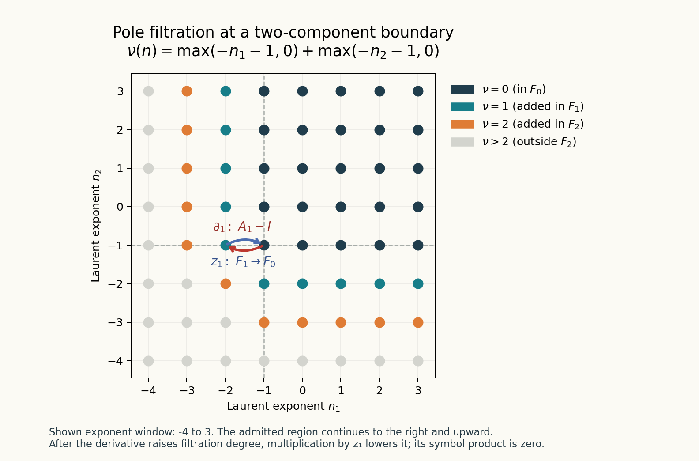
The points represent Laurent exponents for two boundary coordinates, in the displayed finite window. Color records the exact deficit (5.3f), so \(F_p\) consists of the convergent terms with deficit at most \(p\). Differentiating the generator at \((-1,-1)\) gives the coefficient \(A_1-I\) in (5.3d); multiplication by \(z_1\) lowers the resulting filtration degree. Thus \(z_1\xi_1\) annihilates the graded module, as proved in (5.3i). The admitted regions continue rightward and upward. This is an exponent-lattice figure. Reproducible figure source.
Associated graded module and the full operator presentation
Write \[ S=H[\xi_1,\ldots,\xi_k,\eta_1,\ldots,\eta_m], \qquad J=(z_1\xi_1,\ldots,z_k\xi_k,\eta_1,\ldots,\eta_m). \tag{5.3h} \] In degree \(p\), \(S/J\) has precisely the direct summands of (5.3g), with basis monomials \(\xi^a\) and coefficient ring \(H/(z_i:a_i>0)\). The graded map \[ (S/J)\otimes W\longrightarrow\operatorname{gr}_F M,\qquad f\xi^a\otimes u\longmapsto \bigl[f\,\partial_z^a v(u)\bigr] \tag{5.3i} \] is an isomorphism. It respects the symbol action by construction. On each summand (5.3g) it multiplies \(W\) by \(C_a\), which is invertible; hence it has no kernel and is surjective in every degree. This proves a good filtration and the exact equality \(\operatorname{Ann}_S(\operatorname{gr}_F M)=J\).
There is also a concrete finite operator presentation. Start with the free left module \(\mathcal D\otimes W\) mapping to \(M\) by \(P\otimes u\mapsto Pv(u)\). Its relations are generated by \[ z_i\partial_i\otimes u-1\otimes(A_i-I)u, \qquad \partial_{w_j}\otimes u, \tag{5.3j} \] for a finite basis of \(W\). These displayed relations map to zero by(5.3d).
To see they generate the entire kernel, the map is strict for the generated filtration in(5.3e). Formula(5.3i) makes its graded kernel exactly \(J\otimes W\), generated by the first-order symbols of(5.3j). Subtract lifts of a finite principal-symbol expression from any kernel element; its order strictly decreases. Repeating terminates because order is bounded below. In order zero there is no relation: \(q^{-1}\otimes W\) is an \(H\)-basis of its lattice. This proves the presentation. Analytic operator coherence was proved in Holonomic D-modules and duality, Theorem 3.0c; in particular this finite presentation defines a coherent analytic operator module.
The radical characteristic ideal
For each \(I\subset\{1,\ldots,k\}\), let \[ P_I=(z_i:i\in I,\ \xi_j:j\notin I,\ \eta_1,\ldots,\eta_m). \tag{5.3k} \] At a stalk on the corresponding coordinate component, these ideals are prime: their quotient is a polynomial ring over the convergent ring in the remaining coordinates, a domain by its power-series expansion. At a stalk where a defining coordinate is a unit, the corresponding ideal is the unit ideal and contributes no component. Moreover \[ J=\bigcap_I P_I. \tag{5.3l} \] Here is a direct membership proof. Modulo all \(\eta\)'s, expand in the polynomial \(\xi\)'s and convergent \(z\)'s. A monomial not divisible by any \(z_i\xi_i\) has no index at which both exponents are positive. Choose \(I\) to contain every index at which its \(\xi_i\)-exponent is positive and to omit every index at which its \(z_i\)-exponent is positive. That monomial survives in \(S/P_I\). In a power series, quotienting by these coordinate ideals only removes forbidden monomials; distinct surviving monomials do not cancel. Thus a series in every \(P_I\) has every monomial divisible by some generator \(z_i\xi_i\). Assign each such monomial to the first generator dividing it and divide by that fixed generator. There are finitely many generators, and Cauchy bounds preserve convergence after a fixed division on a smaller polydisc. This gives membership in \(J\).
The same argument proves the equality in the analytic cotangent local rings. At a point where a \(z_i\) or \(\xi_i\) is nonzero it is a unit, so that paired generator reduces to the other coordinate; if both are zero it remains their squarefree product. A nonzero \(\eta_j\) makes the localized module zero. Otherwise the convergent Taylor argument in the remaining zero coordinates is exactly the one just given. Therefore the analytic extension of \(J\) is radical.
The actual characteristic variety, including the fibre analytic structure, is \[ \operatorname{Ch}(M)= \bigcup_{I\subset\{1,\ldots,k\}} \{z_i=0\ (i\in I),\ \xi_j=0\ (j\notin I),\ \eta=0\}. \tag{5.3m} \] Each component has complex dimension \(d\), with \(k+m=d\) independent coordinate equations in a \(2d\)-dimensional cotangent chart. It is the conormal to the coordinate intersection \((z_i=0:i\in I)\). Formula(5.3i) gives \(r\) copies of the reduced quotient on every generic component, so its generic length and characteristic-cycle coefficient are exactly \(r\).
Thus \(M\) is holonomic and its analytic associated graded is annihilated by the reduced ideal of its actual characteristic variety. This proves the analytic regularity condition from the analytic good-filtration definition above.
A global good filtration on the SNC pair
Let \(E_\Sigma\) be the normalized analytic logarithmic extension from Theorem5.0 on a simple normal-crossing pair \((Z,D)\), and put \(M=E_\Sigma(*D)\). Label the globally smooth components \(D_i\). The formula \[ F_pM=\sum_{\substack{a_i\geq0,\ \sum a_i\leq p\\ a\text{ has finite support}}} E_\Sigma\bigl(D+\textstyle\sum_i a_iD_i\bigr),\qquad p\geq0 \tag{5.3n} \] defines a coherent good filtration. Only finitely many components meet any sufficiently small chart, and all terms from components disjoint from that chart have the same trivial twist there. Hence the sum is locally the finite sum in(5.3e), even if \(D\) has infinitely many locally finite components. Effective locally finite divisor twists are defined by their local boundary equations; unit changes give the same invertible sheaf.
The local normalized isomorphism with(5.3b) is holomorphic and has holomorphic inverse, so it preserves these lattice twists and their filtration. Every preceding conclusion therefore holds on every chart. In particular(5.3n) supplies one global good filtration meeting the analytic regularity definition; no unproved locality theorem for that definition is needed.
The natural SNC de Rham comparison
Theorem 5.4. Let \(j:U=Z\setminus D\hookrightarrow Z\) be the complement of an analytic simple normal-crossing divisor on a complex manifold of dimension \(d\). For any finite-rank local system \(L\) on \(U\), let \(E_\Sigma\) be its normalized logarithmic extension from Theorem 5.0. The natural maps \[ \Omega_Z^\bullet(\log D)\otimes E_\Sigma \longrightarrow \Omega_Z^\bullet(*D)\otimes E_\Sigma \longrightarrow Rj_*L \] are quasi-isomorphisms. These are unshifted de Rham complexes. With the course's left-module convention the result is \(\operatorname{DR}_Z(E_\Sigma(*D))\simeq Rj_*L[d]\). All residue Jordan blocks and all boundary crossings are included.
It suffices to prove the assertion on adapted polydiscs. Theorem 5.0 supplies the model \[ V=\Delta_z^k\times\Delta_w^m,\quad U=V\setminus D,\quad E=\mathcal O_V\otimes W,\quad \nabla=d+\sum_{i=1}^k A_i\,d\log z_i,\quad T_i=\exp(-2\pi iA_i). \tag{5.4a} \] The matrices \(A_i\) commute, and their spectra lie in \(0\leq\operatorname{Re}\alpha<1\). We use the proved analytic flat-frame equivalence, Lemma 4.1 and Theorem 4.2. The parameter-integration and Cauchy estimates are the earlier proofs linked before Theorem 5.0; the convergent Laurent expansion is proved in Lemma 5.0.2. The smooth-resolution and finite-cover comparison arguments needed below are also given explicitly.
The convergent Laurent homotopy
Order the normal exterior generators \(e_i=d\log z_i\) increasingly. If normal degree is p and tangential degree is a, order all normal generators before the tangential ones. The differential is \(d_N+(-1)^p d_w\). If \(H_w\) is the ordinary tangential radial homotopy, take \(H=(-1)^pH_w\). The normal matrices commute with \(H_w\); the two normal terms in \(dH+Hd\) cancel because \(d_N\) increases the normal degree \(p\), reversing the factor \((-1)^p\) in \(H\). The remaining identity is \[ dH+Hd=1-\operatorname{ev}_{w=0}. \tag{5.4b} \] The contraction is integral in the tangential variables and never changes any z-exponent or its finite lower bound. Normal convergence and parameter differentiation follow from the explicitly proved parameter-integral estimate.
After this retraction, write a form as a normally convergent Laurent sum \(\sum_n z^n v_n\), with exterior-valued coefficients. In degree n the normal differential is \[ d_n=\sum_j (n_jI+A_j)e_j\wedge. \] For n different from zero choose the least i with \(n_i\ne0\) and define \[ h_n=(n_iI+A_i)^{-1}\iota_i . \tag{5.4c} \] Here \(\iota_i(e_{j_1}\wedge\cdots\wedge e_{j_p})\) is zero unless i occurs, and otherwise is \((-1)^{a-1}\) times the exterior term with i omitted, where i is in position a. Thus \(\iota_i\epsilon_j+\epsilon_j\iota_i=\delta_{ij}\). Commutativity of the matrices gives \(d_nh_n+h_nd_n=1\), with this exact exterior sign.
The inverse exists because its only possible zero eigenvalue would require an eigenvalue of \(A_i\) equal to the nonzero integer -n_i, excluded by the strip. On every generalized eigenspace it is a terminating geometric series in the nilpotent part.
For \(|n_i|>2\|A_i\|\), the Neumann series gives inverse norm at most \(2/|n_i|\). Only finitely many nonzero integers remain for each of the finitely many i, and all their inverses exist. Hence a single constant bounds every \(h_n\). Absolute normally convergent coefficient sums on a smaller polydisc remain convergent after applying this bounded multiplier. No exponent changes, including negative exponents. The logarithmic complex retains only nonnegative normal exponents; the meromorphic complex retains its original finite lower Laurent bounds.
Set \(p_w=\operatorname{ev}_{w=0}\), and let \(i_w\) insert w-independent forms. If \(h_N\) is the coefficient homotopy with h_0=0, the combined homotopy is \(h=H+i_wh_Np_w\). Substitution using the commutation of \(i_w\) and \(p_w\) with the normal differential gives \[ dh+hd=1-i_Ap_A \tag{5.4d} \] at the boundary stalk, where \(p_A\) extracts the zero normal coefficient after (5.4b), and \(i_A\) inserts the constant-coefficient normal forms. The residual complex is \(K^\bullet(A_i;W)\). The logarithmic-to-meromorphic inclusion is the identity on that residual complex. This proves the Laurent homotopy, including convergence and arbitrary residue Jordan blocks.
Fine resolutions and actual derived sections
Here all manifolds on which we require fine acyclicity are open subsets of real Euclidean space: \(U\), its open subsets, and the sector products below. A direct partition construction suffices.
Let \(O\) be such an open set with any open cover. For n positive set \[ K_n=\{x\in O:|x|\leq n,\ \operatorname{dist}(x,\mathbb R^N\setminus O)\geq 1/n\}, \] interpreting the distance as infinite if the complement is empty, and put \(K_0\) and \(K_{-1}\) empty. These sets are compact, exhaust \(O\), and satisfy \(K_n\subset\operatorname{int}K_{n+1}\). The compact band \(K_n\setminus\operatorname{int}K_{n-1}\) can be covered by finitely many smaller balls whose concentric larger closed balls lie in assigned cover members, in \(\operatorname{int}K_{n+1}\), and outside K_{n-2}. Such balls exist since the band misses K_{n-2}. All the smaller balls together cover \(O\). The larger balls are locally finite: near any point choose a neighbourhood inside some \(\operatorname{int}K_N\); all bands with n at least N+2 miss that neighbourhood, and there are only finitely many balls in the remaining bands.
On each larger ball use a smooth positive bump, zero outside its closed ball. For example \(e^{-1/s^2}\) for \(s=r^2-|x-a|^2>0\), extended by zero for s nonpositive, is smooth: successive derivatives are a polynomial in 1/s times the exponential, and the exponential-series bound dominates every such polynomial and its difference quotient at zero. The locally finite sum of these bumps is positive. Divide each by that sum. This proves the required smooth subordinate partition, with compact supports, including the boundary smoothness and local finiteness. The zero-dimensional and empty open sets are immediate.
Let \(\mathcal S=\mathcal C^\infty_O\) denote the sheaf of complex-valued smooth functions. Global sections are exact on \(\mathcal S\)-modules. Given a local lift of a section of a quotient on each cover member, multiply by the corresponding partition functions and extend by zero; the support is closed and contained in that member, so gluing with zero is valid. Their locally finite sum is a global lift. Kernels give left exactness.
Sheaves of modules and their derived categories, Theorem 5.4, supplies enough injectives for \(\mathcal S\)-modules. Forgetting to complex-vector-space sheaves preserves injectives: its left adjoint \(\mathcal S\otimes_\mathbb C-\) is exact on stalks. An injective \(\mathcal S\)-module resolution is consequently an injective complex-sheaf resolution, and exactness of global sections makes every \(\mathcal S\)-module acyclic for sections. This applies on every open subset of \(O\).
For completeness, the homotopy identity used here can be checked without a separate topological theorem. For a smooth homotopy \(F:O\times[0,1]\to O'\), write \(F^*\alpha=\beta_t+dt\wedge\gamma_t\) and define \(H\alpha=\int_0^1\gamma_t\,dt\). The dt component of \(d(F^*\alpha)\) is \(\partial_t\beta_t-d_O\gamma_t\). Integration and the fundamental theorem give \(d_OH+Hd=F_1^*-F_0^*\). For the radial homotopy from a point to \(x\), this integrates the contraction with the radial vector field; in degree zero it gives the function minus its value at that point. Parameter differentiation justifies the calculation, and the same argument for holomorphic coefficients proves the tangential homotopy used in the Laurent homotopy argument above. Thus smooth de Rham forms on a convex lifted sector have only constant cohomology in degree zero.
Let \(L\) be the horizontal local system. The smooth flat de Rham complex \(\mathcal A^\bullet(L)\) resolves \(L\). In a local flat frame the preceding contraction proves exactness. Each term is an \(\mathcal S\)-module and hence acyclic. The bounded-below acyclic-term comparison, Theorem 6.1(4), therefore identifies \[ R\Gamma(O,L)=\Gamma(O,\mathcal A^\bullet(L)) \tag{5.4e} \] in the derived category, compatibly with its augmentation from \(L\).
The same resolution computes \(Rj_*L\) by \(j_*\mathcal A^\bullet(L)\). To check this assertion directly, take a complex-sheaf injective resolution. Restrictions to an open remain injective by Corollary 5.5 of the same sheaf lesson. Thus at x the stalk of \(R^aj_*F\) is the filtered colimit of \(H^a(B\cap U,F)\) over neighbourhoods \(B\): stalks are such colimits, and filtered colimits of vector spaces are exact and commute with complex cohomology. For a smooth-form term F those groups vanish for a positive by the proved open-set acyclicity. The bounded acyclic-term comparison for j_* now applies.
Consequently the actual natural map of complexes representing the de Rham comparison is \[ \Omega_V^\bullet(*D)\otimes E \longrightarrow j_*\mathcal A^\bullet(L). \tag{5.4f} \] The map restricts to \(U\) and regards each holomorphic flat form as a smooth flat form. On \(U\) the two inclusions from \(L\) into holomorphic and smooth flat de Rham forms commute, and both are local resolutions. This verifies that (5.4f) represents the adjunction de Rham-to-\(Rj_*L\) map with its ordinary identification on \(U\); it is not a separately chosen derived isomorphism.
Two arcs and the finite Čech resolution
Fix positive radii \(r_i\) inside the polydisc and w=0. Use angle \(\theta_i\) increasing from zero to \(2\pi\); set \(u_i=i\theta_i\) along the chosen torus. Backwards transport from a point of a lifted path to the base point identifies coefficients with \(W\) by multiplication by \[ \exp\!\left(\sum_i u_iA_i\right). \] Forward parallel transport has matrix \(T_i\), whereas these coefficients satisfy the deck relation with \[ R_i=T_i^{-1}=\exp(2\pi iA_i). \tag{5.4g} \] There is no replacement of the actual positive-loop monodromy by its inverse; the inverse occurs in the backwards coefficient trivialization.
For one angle take \(0<\varepsilon<\pi/4\) and the arcs represented by \[ I_0=(-\varepsilon,\pi+\varepsilon),\qquad I_1=(\pi-\varepsilon,2\pi+\varepsilon). \tag{5.4h} \] Their intersection has two components. Call the component at \(\pi\) the middle seam and the one at zero the end seam. At the middle seam the chosen lifts and backwards frames agree. At the end seam use the \(I_1\) lift near \(2\pi\); the coefficient from the \(I_0\) lift near zero is multiplied by \(R\). Thus, with Čech differential section 1 minus section 0, the local-system Čech complex is \[ C^0=W\oplus W,\quad C^1=W\oplus W,\quad \delta(a,b)=(b-a,\ b-Ra). \tag{5.4i} \] The first entry of \(C^1\) uses the middle frame; the second uses the end frame.
Define a projection to the oriented-circle complex \(K^0=W,\ K^1=W,\ d_K=R-I\) by \[ p^0(a,b)=a,\qquad p^1(c,d)=c-d. \tag{5.4j} \] A section and contraction are \[ \begin{aligned} i^0(v)&=(v,v),& i^1(v)&=(0,-v),& h(c,d)&=(0,c). \end{aligned} \tag{5.4k} \] Direct substitution gives \(pi=1\), \(\delta i=id_K\), and \(\delta h+h\delta=1-ip\). Thus this is a proved chain retraction, with the sign selecting the positive orientation from zero through \(\pi\) to \(2\pi\).
For k angles use the \(2^k\) sector-product cover of \(U\), with the corresponding radial variables and w variables unrestricted. It is more convenient to totalize its k successive two-cover Čech resolutions than to keep the redundant ordinary Čech complex of the \(2^k\) sets. This is a genuine finite open-cover resolution: in each coordinate the augmented two-cover complex is exact, and its contraction locally chooses a cover member containing the point. Iterating these finite exact resolutions gives the augmentation for the product cover. Its terms are finite direct sums over the connected components of sector intersections.
Every such connected component has convex logarithmic coordinates: log-radius in an open interval, angle in one of the intervals in (5.4h) or an overlap interval, and real coordinates of w in a convex polydisc. The local system is trivial there. The real radial homotopy in a flat frame and (5.4e) give its higher-cohomology vanishing.
Here is also a direct resolution comparison, avoiding any assumption that open direct image is exact. Let \(B\) be the iterated Čech complex of local-system sections and let \(C\) be the total iterated Čech complex of smooth flat forms. Inclusion \[ b:B\longrightarrow C \] is a quasi-isomorphism: in every sector component the smooth complex has cohomology only the constant sections in degree zero. Finite filtration by Čech degree, and induction on the short exact sequences of that filtration, proves the total assertion. The augmentation \[ a:\Gamma(U,\mathcal A^\bullet(L))\longrightarrow C \tag{5.4l} \] is also a quasi-isomorphism. Indeed, for each two-cover the Čech sequence of each smooth-form sheaf is exact on sections. Surjectivity can be written explicitly: given c on the overlap, choose a subordinate pair \(\chi_0+\chi_1=1\), take \(-\chi_1c\) on the first open and \(\chi_0c\) on the second, extending by zero; their difference is c. Apply this in every coordinate. Filter the augmentation cone by form degree: its associated graded complexes are these exact Čech rows, so finite induction makes the cone acyclic. For b use instead the filtration by Čech degree and the already proved sector-form quasi-isomorphisms. All Čech degrees and all smooth form degrees are bounded here. Therefore the finite complex \(B\) computes actual derived sections through the concrete zigzag \(B\xrightarrow{b}C\xleftarrow{a}\Gamma(U,\mathcal A^\bullet(L))\).
Čech reduction equals backwards-transport integration
First retract the logarithmic radial coordinates to their chosen \(r_i\) and the tangential coordinates to zero, without changing angles. On each lifted sector this is a real convex homotopy with flat coefficients, and it agrees on overlaps because every transition is a constant \(R_i\). Restriction to the torus therefore gives a chain homotopy equivalence of smooth-form Čech totals. Local-system constants are unchanged. Denote the resulting angular Čech total by \(C_{\mathrm{ang}}\).
For one angle the angular de Rham degree a is zero or one, and the Čech degree p is zero or one. Totalize as \(D=\delta+(-1)^p d_\theta\). In total degree zero an element is a pair of functions \((f_0,f_1)\). In degree one it is \[ (g_0\,d\theta,\ g_1\,d\theta;\ c,\ d), \] with the last pair functions on the middle and end seams in their chosen frames. Define \[ \begin{aligned} F^0(f_0,f_1)&=f_0(0),\\ F^1(g_0,g_1;c,d) &=\int_0^\pi g_0(\theta)\,d\theta +\int_\pi^{2\pi}g_1(\theta)\,d\theta +c(\pi)-d(2\pi),\\ F^q&=0\quad(q\geq2). \end{aligned} \tag{5.4m} \] This is a chain map to \(K^\bullet(R-I;W)\). The only nontrivial degree check is on a degree-zero element: \[ \begin{aligned} F^1D(f_0,f_1) ={}&f_0(\pi)-f_0(0)+f_1(2\pi)-f_1(\pi)\\ &+[f_1(\pi)-f_0(\pi)] -[f_1(2\pi)-Rf_0(0)]\\ ={}&(R-I)f_0(0). \end{aligned} \tag{5.4n} \] The remaining degrees land in zero target degrees. This proof also works with coefficients in any complex of forms in the other variables: evaluation and integration commute with their differential and with all other commuting transition matrices.
On the inclusion of local-system Čech constants, F is exactly the reduction p in (5.4j). On the augmentation of global angular forms, the seam terms are zero, so F is exactly backwards-transport integration around the positive circle. This is equality of chain maps, not only equality on cohomology classes.
For multiple coordinates totalize the pairs in the interleaved order \[ (p_1,a_1),\ (p_2,a_2),\ldots,(p_k,a_k). \] The differential in the i-th pair is \[ (-1)^{\sum_{j<i}(p_j+a_j)} \bigl(\delta_i+(-1)^{p_i}d_{\theta_i}\bigr). \tag{5.4o} \] The standard total order with all Čech degrees first and all form degrees second is converted to this order by multiplication in each multidegree by \[ (-1)^{\sum_{i<j}a_ip_j}. \tag{5.4p} \] When \(p_i\) increases, the flip exponent changes by \(\sum_{j<i}a_j\), adding exactly the missing earlier form degrees to the standard Čech sign. When \(a_i\) increases, it changes by \(\sum_{j>i}p_j\); adding this to the standard form sign \(\sum_jp_j+\sum_{j<i}a_j\) leaves \(\sum_{j\leq i}p_j+\sum_{j<i}a_j\), as in (5.4o). On global-form augmentation all \(p_i\) are zero, and on constant Čech inclusion all \(a_i\) are zero; therefore the flip has sign one on both sides of the required comparison diagram.
Apply the maps (5.4m) one coordinate at a time, with the order (5.4o). They commute with the remaining operators. The resulting map \[ \mathcal F:C_{\rm ang}\longrightarrow K^\bullet(R_i-I;W) \tag{5.4q} \] is a chain map. Its composite with the constant Čech inclusion is exactly the iterated projection (5.4j). The latter is a chain homotopy equivalence: apply (5.4k) in each coordinate, multiplying its contraction in the i-th coordinate by \((-1)^{\sum_{j<i}p_j}\) to cancel the other coordinate differentials. After an earlier coordinate has been reduced, its Koszul degree replaces \(p_j\) in this sign. All matrices involved commute. Finite induction proves the retraction.
Since b and the radial restriction are quasi-isomorphisms, and \(\mathcal F b\) is this retraction, \(\mathcal F\) is a quasi-isomorphism too. Most importantly, its composite with the actual smooth-form augmentation and radial restriction is the cubical period map: \[ \begin{aligned} \mathcal I^p(\alpha)_I ={}& \int_{[0,2\pi]^I} \operatorname{PT}_{\gamma_I}^{-1}(\gamma_I^*\alpha),\\ I={}&\{i_1<\cdots<i_p\}. \end{aligned} \tag{5.4r} \] Here the coordinates outside I have angle zero, all radii are \(r_i\), w=0, the integration orientation is \(d\theta_{i_1}\wedge\cdots\wedge d\theta_{i_p}\), and the backwards transport uses the lifted paths with those increasing angles. For p zero this is evaluation at the base point.
The following figure records the chain maps computing the actual comparison.
The composite of restriction, smooth-form augmentation, radial restriction and \(\mathcal F\) is exactly \(\mathcal I\). On the sector-constant complex its composite is exactly the proved Čech retraction. The augmentations and sector-constant comparisons used to identify the target were proved quasi-isomorphisms above. This verifies the natural map rather than selecting an abstract isomorphism between its source and target cohomology.
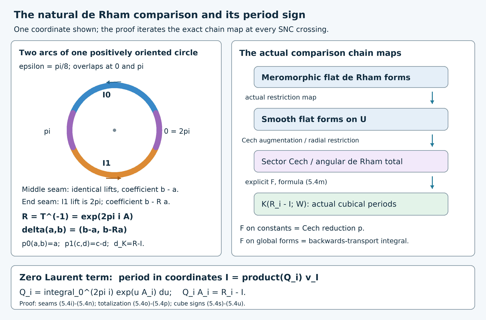
The two colored arc portions, together with the purple overlap portions, lie on the same circle; \(\varepsilon=\pi/8\) in this drawing. The upper arc is \(I_0\) and the lower arc is \(I_1\). Positive orientation runs leftward at the top and rightward at the bottom. The end seam uses the \(I_1\) lift near \(2\pi\), forcing \(R\) in (5.4i). The right panel displays the actual comparison whose one-coordinate chain map is (5.4m), and the lower panel is its zero-Laurent restriction (5.4t). Exact proof locators: (5.4i)–(5.4p), (5.4s)–(5.4u). Reproducible figure source. Earlier freely accessible human reading for the normalized logarithmic model: Deligne, IAS author edition, Chapter II, Section 5; all new period and Čech arguments are proved here.
The oriented cube differential
Write the Koszul differential as \(\sum_i e_i\wedge(R_i-I)\). In an increasing index set \(J=\{j_1<\cdots<j_{p+1}\}\), its component is \[ (d_Kv)_J =\sum_{a=1}^{p+1}(-1)^{a-1} (R_{j_a}-I)v_{J\setminus\{j_a\}}. \tag{5.4s} \] This is also the exact integration boundary formula. For the positively oriented J-cube, its boundary is the signed sum \[ \sum_a(-1)^{a-1} \bigl(\text{face }\theta_{j_a}=2\pi- \text{face }\theta_{j_a}=0\bigr), \] with the remaining coordinates in increasing order. On the upper face backwards coefficients are R_{j_a} times those on the lower face. The coefficient matrices commute with transport in all remaining directions. Iterated one-variable integration and the fundamental theorem of calculus therefore give \(\mathcal I(d_\nabla\alpha)=d_K\mathcal I(\alpha)\). This proves the needed Stokes identity directly for each exterior component; no independent general Stokes theorem is imported.
The signs in (5.4o)–(5.4p), the seam subtraction in (5.4m), the face signs in (5.4s), and the minus sign in the original forward monodromy \(T_i\) are mutually consistent. Replacing \(R_i\)-I by \(T_i\)-I would require an additional explicit coordinate cochain isomorphism; it is not done here.
Invertible periods and the natural comparison
For a zero-Laurent coefficient \(v_I\) in the normalized frame, the associated form is \(v_I\,d\log z_{i_1}\wedge\cdots\wedge d\log z_{i_p}\). On its cube, \[ \operatorname{PT}^{-1}\gamma_I^*\alpha =\exp\!\left(\sum_{i\in I}u_iA_i\right)v_I \,du_{i_1}\wedge\cdots\wedge du_{i_p}. \] Use ordered iterated integration of this finite-dimensional continuous matrix-valued function on the compact rectangle. Factor the commuting exponentials and pull the independent factors through each one-variable integral. The period is \[ \mathcal I^p i_A(v)_I =\left(\prod_{i\in I}Q_i(A_i)\right)v_I,\qquad Q_i(A_i)=\int_0^{2\pi i}e^{uA_i}\,du. \tag{5.4t} \] For the empty I the product is the identity. The factors of i from \(du_i=i\,d\theta_i\) are already included in each \(Q_i\); there is no additional phase. Thus these are the actual comparison periods on the proved Laurent retract.
Differentiating the matrix exponential and integrating gives \(Q_i(A_i)A_i=R_i-I\). For a scalar eigenvalue alpha, its value is \(2\pi i\) at zero and \((e^{2\pi i\alpha}-1)/\alpha\) otherwise. Its only possible nonzero zeros are nonzero integers, excluded by the strip. On a generalized eigenspace the value is the finite Taylor polynomial in the nilpotent part, with nonzero scalar leading coefficient; its inverse is another terminating geometric series. Every \(Q_i\) is therefore invertible, including all commuting Jordan blocks, and commutes with every \(A_j\) and Q_j.
The finite map (5.4t) is consequently a chain isomorphism \(K^\bullet(A_i;W)\to K^\bullet(R_i-I;W)\), with the differential (5.4s). To connect it with the full natural source, use the actual homotopy (5.4d): \[ \mathcal I-\mathcal I i_Ap_A =d_K(\mathcal I h)+(\mathcal I h)d_\nabla. \tag{5.4u} \] All operations are defined on smaller polydiscs: h preserves normal convergence and finite pole bounds, and \(\mathcal I\) integrates smooth forms along a compact torus disjoint from D. Thus this is an actual chain homotopy, not a formal exchange of divergent Laurent sums. It identifies the full natural comparison with the isomorphism (5.4t) on the proved Laurent retract.
Taking boundary stalks is legitimate. Shrinking polydiscs are cofinal; each meromorphic germ is represented with finite pole bounds on one of them. The fine-resolution model for \(Rj_*L\) applies on every one. On each sufficiently small polydisc choose radii inside it: the exact diagram and (5.4t) prove the quasi-isomorphism for its finite-pole coefficient complex and its target of smooth forms. Those actual maps (5.4f), independent of the chosen radii, commute with restriction. Their filtered colimit therefore gives the stalk comparison. This uses no asserted equality of the radius-dependent period chain models. The bounded coefficient multiplier in (5.4c) preserves convergence on every compact subpolydisc, so it defines the homotopy throughout the original open polydisc as well as at its stalk.
It follows that the actual natural maps \[ \Omega_V^\bullet(\log D)\otimes E \longrightarrow \Omega_V^\bullet(*D)\otimes E \longrightarrow Rj_*L \tag{5.4v} \] are quasi-isomorphisms in the normalized regular model. At a point on fewer components, repeat the same proof with precisely those boundary coordinates. Off D use the ordinary analytic flat Poincaré lemma. This retains every crossing, arbitrary finite rank and all nilpotent parts.
Algebraic de Rham comparison for regular connections
Theorem 5.5. Let \(X\) be any smooth separated finite-type complex algebraic variety. Let \((E,\nabla)\) be a finite-rank integrable algebraic connection regular along every algebraic curve, including infinity, and let \(L=\ker\nabla^{\mathrm{an}}\) be its horizontal local system. Restriction of algebraic forms to analytic forms, followed by the analytic flat de Rham augmentation, induces a natural quasi-isomorphism \[ R\Gamma\bigl(X,(\Omega_X^\bullet\otimes E,\nabla)\bigr) \longrightarrow R\Gamma(X^{\mathrm{an}},L). \tag{5.5a} \] Both de Rham complexes here are unshifted. With the lesson12 left-module convention, on each connected component of dimension \(d\) apply the common shift \([d]\) to both sides. The theorem allows nonproper and non-quasi-projective \(X\), arbitrary rank and residue Jordan blocks.
This is the regular-coefficient comparison discussed in Deligne's freely accessible IAS-hosted lecture notes, Chapter II, Theorem 6.2. We prove it below using the preceding SNC results and the exact earlier cohomology theorems.
The comparison in (5.5a) is defined before choosing a compactification. If \(a:X^{\mathrm{an}}\to X\) is the continuous map to the Zariski space, restriction gives a map of complexes of complex-vector-space sheaves from algebraic forms to \(a_*\) of analytic forms. It commutes with the connection differential because analytic differentiation restricts to algebraic differentiation. Passing to derived sections gives the comparison to analytic de Rham cohomology. The analytic flat-frame proof, Lemma 4.1 and Theorem 4.2, and the holomorphic Poincaré proof, Proposition 1.2, identify the latter complex with \(L\). The augmentation from \(L\) is a natural quasi-isomorphism; its inverse in the derived category introduces no choice of bases or periods.
Theorem 5.1 provides a smooth proper compactification \(P\) of \(X\) with SNC boundary \(D\), including non-quasi-projective \(X\). It also supplies the normalized algebraic logarithmic bundle \((\bar E,\bar\nabla)\) on \(P\), restricting to \((E,\nabla)\). These assertions were proved there using the earlier Nagata, resolution and full proper GAGA proofs. Write \(j:X\hookrightarrow P\).
We first prove the algebraic pole-removal step; it has no analytic convergence assumption.
Removing finite algebraic pole layers
Lemma 5.5.1. On a smooth algebraic SNC pair over \(\mathbf C\), let \((F,\nabla)\) be an integrable logarithmic bundle all of whose boundary residue eigenvalues lie in \(0\leq\operatorname{Re}\alpha<1\). Then \[ (\Omega_P^\bullet(\log D)\otimes F,\nabla) \longrightarrow (\Omega_P^\bullet(*D)\otimes F,\nabla) \tag{5.5b} \] is a quasi-isomorphism of complexes of complex-vector-space sheaves.
Proof. Work locally in étale coordinates \(z_1,\ldots,z_k,w_1,\ldots,w_m\) adapted to the SNC divisor, and choose a frame of \(F\). Such coordinates are the smooth SNC coordinates used in the earlier local construction. Write \(e_i=d\log z_i\). The local logarithmic connection is \[ \nabla=d+\sum_i B_i e_i+\sum_\ell C_\ell\,dw_\ell, \tag{5.5c} \] where all matrix entries are regular. No constant-matrix algebraic gauge is assumed.
Fix a boundary coordinate \(z_i\). Allow any already chosen other boundary coordinates to be inverted; localization is exact and preserves the connection identities. For \(n\geq0\), the logarithmic complex with coefficients \(z_i^{-n}F\) is stable under the differential: differentiating \(z_i^{-n}\) contributes only \(-n e_i\). There are termwise injective inclusions from the \(n-1\) complex into the \(n\) complex. Their quotient, for \(n\geq1\), is the complex supported on \(D_i=(z_i=0)\) with coefficient bundle \[ F|_{D_i}\otimes\mathcal O_P(nD_i)|_{D_i}. \tag{5.5d} \] Indeed, multiplication by \(z_i^n\) identifies its local coefficient module with \(F/z_iF\). Logarithmic forms are locally free with basis the \(e_j,dw_\ell\), so tensoring their degree pieces preserves this quotient description. The line twist in (5.5d) records the normal-frame changes; it is not globally replaced by a trivial bundle.
Locally separate the exterior generator \(e_i\) from all remaining generators, putting \(e_i\) first. On this quotient the differential is \[ d_Q=\delta+e_i\wedge N_i,\qquad N_i=\operatorname{Res}_{D_i}(\nabla)-nI. \tag{5.5e} \] Here \(\delta\) is the tangential connection differential, with its exterior sign when acting on a term containing \(e_i\). Derivatives \(z_i\partial_i\) of regular coefficients vanish modulo \(z_i\); therefore the normal differential is exactly the displayed residue minus \(n\).
The endomorphism \(N_i\) is invertible. At every complex closed point its eigenvalues are \(\alpha-n\), which cannot be zero in the specified strip. Its determinant is thus a unit locally: any nonempty determinant-zero locus on this finite-type complex scheme would contain a closed point, by the earlier closed-point Nullstellensatz test. The adjugate formula supplies its inverse in the algebraic coefficient ring, and localization in other coordinates preserves it. Nilpotent residue parts cause no exception.
Integrability makes \(N_i\) parallel for \(\delta\). Explicitly, the commutator of \(z_i\partial_i+B_i\) with each tangential connection operator is zero. Modulo \(z_i\), its derivative in the normal direction disappears, leaving \[ V(B_i|_{D_i})+[B_V|_{D_i},B_i|_{D_i}]=0 \quad\text{for each tangential operator }V+B_V. \] Equivalently, the tangential connection commutes with the residue endomorphism. Differentiating \(N_iN_i^{-1}=I\) then gives the same commutation for \(N_i^{-1}\).
Let \(\iota_i\) be contraction with the normal exterior generator. It anticommutes with the tangential exterior differential and satisfies \(\iota_i(e_i\wedge\,\cdot)+e_i\wedge\iota_i=1\). Consequently the actual algebraic map \[ h_Q=N_i^{-1}\iota_i \quad\hbox{satisfies}\quad d_Qh_Q+h_Qd_Q=1. \tag{5.5f} \] Thus every finite added-pole quotient is contractible. The short exact sequence of complexes makes every finite inclusion a quasi-isomorphism.
The union over \(n\) gives localization in \(z_i\). Filtered colimits of modules, and of their underlying complex-vector-space sheaves, are exact on stalks; they therefore commute with cohomology of these complexes. This union preserves the quasi-isomorphism. Repeat for each of the finitely many boundary coordinates in the chart. Every meromorphic algebraic section has a finite denominator power in each coordinate. After all localizations, logarithmic and ordinary differential forms have the same basis module because every \(z_i\) is a unit. This gives precisely the right-hand complex in (5.5b).
The inclusions in (5.5b) are intrinsic, so these stalkwise proofs prove the global quasi-isomorphism. The contractions need not agree on overlaps: only acyclicity of the quotient is used for that global conclusion. Off the boundary the inclusion is already the identity. The zero-rank and boundary-free cases are immediate. \(\square\)
The affine open and its meromorphic complex
The open immersion \(j\) is affine. Here is the affine-base check even if its boundary ideal on an affine open is not principal. The quasi-coherent algebra \(\mathcal A=\bigcup_{n\geq0}\mathcal O_P(nD)\) has, on a neighbourhood with boundary equation \(q\), the algebra \(\mathcal O_P[1/q]\). Its relative spectrum is therefore locally the distinguished open \(D(q)\); these identifications agree in their common rational-function algebra and glue to \(X\). On any affine \(V=\operatorname{Spec}R\), the affine sheaf/module equivalence, Theorem 1.2 identifies \(\mathcal A|_V\) with the algebra associated to \(A=\Gamma(V,\mathcal A)\). Its relative spectrum there is \(\operatorname{Spec}A\): on every distinguished open \(D(f)\subset V\), the rings are \(A_f\), by the same localization equivalence. Thus \(j^{-1}V\) is affine for every affine \(V\), proving the assertion. The algebra is quasi-coherent because each divisor twist is invertible and filtered unions preserve quasi-coherence on these local module charts.
Degree by degree, localization gives the intrinsic equality \[ j_*(\Omega_X^p\otimes E) =\Omega_P^p(*D)\otimes\bar E. \tag{5.5g} \] The equality is first the elementary module formula on \(D(q)\), where sections are localized at \(q\); it glues because both sides are the subsheaf of rational forms restricting to the given regular form on the open. The connection differentials agree by the same Leibniz calculation.
Cohomology of affine schemes and Serre's criterion, Theorems 2.2 and 3.2, proves that every quasi-coherent sheaf is \(j_*\)-acyclic for this affine morphism. This applies to each \(\Omega_X^p\otimes E\), including its underlying sheaf cohomology. The complex has only degrees zero through \(\dim X\). The bounded acyclic-term comparison, Theorem 6.1(4) therefore identifies its derived open image with its ordinary termwise image (5.5g), even though its differential is \(\mathbf C\)-linear rather than \(\mathcal O\)-linear.
Composing derived sections with this derived image gives \[ \begin{gathered} R\Gamma\bigl(X,\Omega_X^\bullet\otimes E\bigr) \\ \simeq R\Gamma\bigl(P,\Omega_P^\bullet(*D)\otimes\bar E\bigr) \\ \simeq R\Gamma\bigl(P,\Omega_P^\bullet(\log D)\otimes\bar E\bigr). \end{gathered} \tag{5.5h} \] The last arrow is the inverse of the proved inclusion (5.5b). Composition of derived sections and direct image here is the usual sheaf identity: direct image preserves injectives as right adjoint to exact inverse image of complex-vector-space sheaves. Thus no unproved nonproper coherent or analytic direct-image comparison has entered.
Proper GAGA for the complex-linear differential
Each degree \(\Omega_P^p(\log D)\otimes\bar E\) is coherent. Proper cohomological GAGA, Theorem 6.7, proves the natural cohomological comparison for every coherent sheaf on every proper complex scheme, including nonprojective ones.
We apply it to the finite logarithmic complex as a complex of \(\mathbf C\)-sheaves. Its differential is not \(\mathcal O_P\)-linear, so this requires the following explicit naturality check rather than treating it as a complex in the coherent \(\mathcal O_P\)-module category.
Restriction of algebraic logarithmic forms gives a map of \(\mathbf C\)-sheaf complexes into the analytic logarithmic complex under \(a:P^{\mathrm{an}}\to P\). In every frame it commutes with exterior differentiation and with the algebraic connection matrices in (5.5c). On each individual term its map on cohomology is exactly the canonical GAGA map from Theorem 6.7, since both maps extend the same restriction on sections. Derived restriction/adjunction is natural for these \(\mathbf C\)-linear sheaf maps.
Filter both derived-section totals by logarithmic degree. Their first pages are the cohomology of those individual coherent terms. The actual restriction map just constructed is an isomorphism on every first-page group by GAGA and respects all differentials. The filtration has \(\dim X+1\) columns, hence the filtration of each total degree is finite. Kernels and quotients give isomorphisms on each subsequent page, and induction over the finite abutment filtration proves \[ \begin{gathered} R\Gamma\bigl(P,\Omega_P^\bullet(\log D)\otimes\bar E\bigr) \\ \simeq R\Gamma\bigl(P^{\mathrm{an}}, \Omega_{P^{\mathrm{an}}}^\bullet(\log D^{\mathrm{an}}) \otimes\bar E^{\mathrm{an}}\bigr). \end{gathered} \tag{5.5i} \] Analytification of these logarithmic bundles is the displayed analytic bundle: their local free bases \(d\log z_i,dw_\ell\), algebraic transition matrices and connection formula simply extend to holomorphic coefficients. Exact coherent analytification was proved earlier; no infinite meromorphic union is passed through GAGA.
The intrinsic global comparison
Theorem 5.4, now already proved earlier in this lesson, identifies the analytic logarithmic complex in (5.5i) with \(Rj^{\mathrm{an}}_*L\) by the actual natural map. Taking derived sections gives \(R\Gamma(X^{\mathrm{an}},L)\).
Combining (5.5h), (5.5i) and this analytic SNC comparison proves an isomorphism between the two sides of (5.5a). It proves the specified natural map itself. Indeed the restriction map from the algebraic logarithmic complex to the analytic one commutes with restriction to \(X\) and with both inclusions into meromorphic forms. The algebraic localization equality (5.5g) is restriction of the same forms. The analytic map of Theorem 5.4 is restriction into smooth flat forms, commuting with the local-system augmentation. These are exactly the maps used to define (5.5a). Their derived-section diagram therefore commutes, and its other arrows are the proved quasi-isomorphisms. The remaining arrow (5.5a) is consequently a quasi-isomorphism.
This also proves independence of compactification and of the normalized lattice used in the proof: the comparison (5.5a) was defined intrinsically on \(X\). It is natural in every horizontal algebraic bundle map; all restriction, augmentation and inclusion maps in its construction are natural, and Theorem 5.0 extends such maps to the normalized boundary bundles.
With \(E=\mathcal O_X\) and its ordinary differential, this gives the full algebraic de Rham comparison with complex constant-sheaf cohomology. The proof does not assert general singular regular-holonomic RH, any arbitrary nonproper D-module comparison, or analytic proper-image regularity. Those retain their original required scope.
Gauss–Manin regularity on every smooth base
For a smooth algebraic map with regular coefficient connection, the generic relative de Rham images are finite-rank regular integrable connections. Theorem 5.6 below proves this for every smooth separated finite-type complex base, with no properness or quasi-projectivity assumption on the original map. We first construct its logarithmic lattices over a curve, then prove integrability and base change along every curve on the general base.
Freely accessible reading: Deligne, Chapter II, Theorem 7.9 and Lemma 7.10, printed pp. 113–120. The proof here supplies the lattice, corrected Čech action, finite flat-complex base change and actual transfer calculation; that reading reference replaces none of those arguments.
The curve lattice and the completed pair
Lemma 5.6.1 (the curve lattice). Let \(f:X\to C\) be a smooth morphism of smooth separated finite-type complex varieties, with \(C\) a smooth connected algebraic curve. Let \((E,\nabla)\) be an integrable algebraic connection on \(X\), regular along every algebraic curve including infinity.
There is a dense open \(C_0\subset C\) such that \[ H^a=R^a f_*(\Omega_{X/C}^\bullet\otimes E)|_{C_0} \] are finite-rank regular connections, with the actual Gauss–Manin action constructed below. Every such generic image has a logarithmic lattice at every point of the smooth complete model \(\bar C\). All ranks and residue Jordan blocks are allowed.
We use the following rank criterion for maps between smooth complex algebraic varieties. Such a map is smooth at a point exactly when its differential is surjective there. Necessity follows from the differential basis in a standard smooth chart. For sufficiency, choose étale coordinates \(y_1,\ldots,y_b\) on the base and complete their pulled-back differentials to a source coframe with differentials of additional local functions. The chosen-coordinate theorem, Smooth morphisms, Theorem 4.1 applied to the source over \(\mathbf C\), makes the resulting source coordinate map étale over affine space. The target, the product of the base with the additional affine coordinates, is étale over the same affine space. A morphism between two such étale objects is étale: in a square-zero lifting problem, first take the unique source lift over affine space; its map to the target agrees with the prescribed target map by the target's own uniqueness. Finite presentation follows from the finite-type affine presentations over the Noetherian target. Composition with the smooth affine projection to the original base proves sufficiency. Thus Jacobian rank failure is precisely the critical locus used below. The same chosen-coordinate argument allows prescribed independent boundary functions to be retained among the relative coordinates.
Take a smooth proper absolute compactification \(Z\) of \(X\) with a morphism \(g:Z\to\bar C\) extending \(f\). Namely, take the closure of the graph in an absolute compactification times \(\bar C\), and resolve/principalize outside the smooth open. Nagata existence, Appendix N, Theorem N.E.1, and resolution and SNC compactification, Theorem 4.8 and Corollary 5.2, provide these operations and preserve \(X\).
Remove from \(C\) the finitely many bad values of \(g\) and of its finitely many closed boundary intersections, obtaining \(C_0\), so that \(g\) and every horizontal boundary intersection are smooth over \(C_0\). Each bad image is closed by properness. Here is the needed rank and image argument. A function field dominating the curve has a transcendence basis containing its nonconstant local base parameter \(t\). The derivation sending \(t\) to one and the remaining basis elements to zero extends through the finite algebraic field extension: differentiating the minimal polynomial of an algebraic element solves for its derivative because its polynomial derivative is nonzero in characteristic zero. Thus \(dt\) is nonzero in that function field. The smooth Jacobian criterion, Theorem 2.1 and Corollary 2.2, together with local standard coordinates, Theorems 4.1 and 5.1, identifies the nonsmooth locus of a map between the smooth source and curve with the vanishing of its differential. No irreducible component of this critical locus can dominate the curve: if it did, the differential's vanishing in \(\Omega_Z^1\) restricted to its function field would imply \(dt=0\) in the differentials of that function field, contradicting the derivation just constructed. Its proper image is therefore a proper closed subset of the curve, hence finite. Apply the same argument to each smooth closed boundary intersection. Nondominating closed intersections also have finitely many images and are removed. This treats the closed intersections, which are proper, before their open strata.
Add fibres over \(T=\bar C\setminus C_0\) to the complement and principalize its reduced ideal on the already smooth \(Z\), preserving \(X_0=f^{-1}(C_0)\). This also preserves a smooth relative SNC pair over \(C_0\), for the following reason. In a relative SNC chart over \(C_0\), the boundary ideal is generated by \(z_1\cdots z_k\), and the chart is étale over a product of these normal affine coordinates, the remaining relative coordinates and a base neighbourhood. Principalization commutes with smooth morphisms, by principalization, Theorem 3.1(4). The sequence on this chart is consequently the pullback of the sequence for the ideal \((z_1\cdots z_k)\) on \(\mathbf A^k\), with the relative and base factors retained. Its resulting ambient scheme is smooth and its divisor SNC by that theorem; their products and étale pullbacks are smooth and SNC relative to the base. These local assertions apply on the charts of the global sequence. Thus the new \(Z\) is smooth proper; its reduced boundary \(D=Z\setminus X_0\) is SNC, contains \(g^{-1}T\), and is relative SNC over \(C_0\). Theorem 5.1 supplies a normalized logarithmic extension \(\bar E\) of \(E|_{X_0}\) on \(Z\). No semistable reduction is asserted: components of \(g^*T\) may have any positive multiplicity.
Relative logarithmic forms and explicit lifts
Set \[ \mathcal A=\Omega_Z^1(\log D),\qquad \mathcal B=g^*\Omega_{\bar C}^1(\log T),\qquad \mathcal Q=\mathcal A/\mathcal B. \tag{5.6a} \] The inclusion is a subbundle. Over \(C_0\) this is the relative SNC coordinate calculation. At a point over \(t_0\in T\), choose a base parameter \(t\) and SNC coordinates. The local equation is \[ g^*t=u\prod_i z_i^{a_i},\qquad u\text{ a unit},\quad a_i\geq0,\quad \text{some }a_i>0. \tag{5.6b} \] The exponents are the vertical divisor multiplicities. This algebraic factorization can be checked without a new factoriality theorem: the coordinate-factor proof of Theorem 5.0 gives the corresponding analytic monomial and unit; the faithfully flat analytic stalk comparison, Theorem 4.1 contracts divisibility to the algebraic stalk. The resulting algebraic quotient is a unit because its analytic image is a unit and faithful flatness contracts the unit ideal.
Pullback of \(dt/t\) is \[ \alpha=\sum_i a_i\,d\log z_i+du/u. \tag{5.6c} \] Choose a vertical index \(i\) through the point. The coefficient \(b_i=a_i+z_i(\partial_i u)/u\) is a unit locally, since modulo \(z_i\) it equals the nonzero integer \(a_i\). Replacing \(d\log z_i\) by \(\alpha\) proves the subbundle assertion. The logarithmic base field \(\theta=t\partial_t\) has the lift \[ v_i=b_i^{-1}z_i\partial_i,\qquad v_i(g^*t)=g^*t. \tag{5.6d} \] This field is tangent to every boundary component. It contracts logarithmic forms to regular logarithmic forms. Arbitrary positive \(a_i\) cause no obstruction. Over \(C_0\), relative SNC coordinates similarly lift ordinary base fields.
Since \(d\alpha=0\), the exterior ideal of pulled-back base forms is differential-stable. Quotienting the absolute logarithmic connection gives \[ K^\bullet=(\Lambda^\bullet\mathcal Q\otimes\bar E,\nabla_{\mathrm{rel}}). \tag{5.6e} \] It is a finite complex of coherent locally free terms; its differential is \(g^{-1}\mathcal O_{\bar C}\)-linear, though not \(\mathcal O_Z\)-linear.
Each individual term has coherent ordinary proper higher images, by ordinary proper coherence, Theorem 4.1. These are also its underlying complex-sheaf higher images: forgetting \(\mathcal O_Z\)-modules preserves injectives because its left adjoint \(\mathcal O_Z\otimes_{\mathbf C}-\) is exact on stalks. The finite-degree spectral sequence of this complex is a spectral sequence of \(\mathcal O_{\bar C}\)-modules. Its pages are kernels and quotients of coherent modules and its abutment has a finite coherent filtration. Thus every \(A^a=\mathcal H^a(Rg_*K^\bullet)\) is coherent. This argument does not treat the relative differential as \(\mathcal O_Z\)-linear and does not invoke D-module proper regularity.
The corrected Čech Gauss–Manin connection
Over an affine base neighbourhood choose a finite affine adapted cover \(U_i\) of its inverse image, and logarithmic lifts \(v_i\) of a base logarithmic field \(\theta\). Finite intersections are affine by separatedness. Affine acyclicity, Theorems 2.2 and 3.2, and the finite Čech comparison and basis criterion, Theorems 3.2 and 4.1, make the ordered Čech total compute \(Rg_*K^\bullet\) over that neighbourhood.
On relative forms put \[ L_i=\nabla\iota_{v_i}+\iota_{v_i}\nabla. \tag{5.6f} \] It descends to the relative quotient: Lie derivative by a lift preserves the ideal of pulled-back base forms. It commutes with the relative differential by integrability and obeys \[ L_i(g^*a\,s)=g^*(\theta a)s+g^*a\,L_i(s). \tag{5.6g} \] All terms preserve the logarithmic bundle.
For differences of lifts define \(H_{ij}=\iota_{v_j-v_i}\). These are well-defined contractions on relative forms because their vector fields are vertical. Subtraction of (5.6f) and addition of differences give \[ L_j-L_i=d_KH_{ij}+H_{ij}d_K,\qquad H_{ij}+H_{jk}=H_{ik}. \tag{5.6h} \]
For a cochain \(c\) of Čech/form bidegree \((p,q)\), totalize by \(D=\delta+(-1)^p d_K\). Define the degree-zero operator with diagonal component \[ (\mathcal Lc)_{i_0\ldots i_p} =L_{i_0}c_{i_0\ldots i_p} \] and extra component in bidegree \((p+1,q-1)\) \[ (\mathcal Lc)_{i_0\ldots i_{p+1}} =(-1)^pH_{i_0i_1}c_{i_1\ldots i_{p+1}}. \tag{5.6i} \] Both components are added.
The diagonal Čech commutator is \[ (\delta L-L\delta)c_{i_0\ldots i_{p+1}} =(L_{i_1}-L_{i_0})c_{i_1\ldots i_{p+1}}. \] The extra component's internal commutator is its negative by (5.6h): the output internal sign is \((-1)^{p+1}\), the input one is \((-1)^p\), and its own factor is \((-1)^p\). Its Čech commutator vanishes by \(H_{i_0i_2}=H_{i_0i_1}+H_{i_1i_2}\); terms deleting later indices cancel in pairs. Each \(L_i\) commutes with \(d_K\). Consequently \[ D\mathcal L=\mathcal LD. \tag{5.6j} \]
For new lifts \(v_i'\), let \(h_i=\iota_{v_i'-v_i}\). The degree-minus-one diagonal operator \(\mathcal H\) acts on bidegree \((p,q)\) by \((-1)^p h_{i_0}\). The exact identity is \[ \mathcal L'-\mathcal L=D\mathcal H+\mathcal HD. \tag{5.6k} \] Its diagonal internal part is \(d_Kh_i+h_id_K=L_i'-L_i\); its extra part is \((-1)^p(h_{i_1}-h_{i_0})\), the change in (5.6i). Thus the operator on cohomology is independent of lifts. The intrinsic construction below proves compatibility with arbitrary refinements and independence of the ordered covers.
There is also an intrinsic definition that proves cover compatibility. The absolute logarithmic complex has the short exact sequence of complex-vector-space complexes \[ 0\longrightarrow g^*\Omega_{\bar C}^1(\log T)\otimes K^{\bullet-1} \xrightarrow{\ \alpha\wedge\ } (\Omega_Z^\bullet(\log D)\otimes\bar E,\nabla) \longrightarrow K^\bullet\longrightarrow0. \tag{5.6l} \] The first differential is \(-d_K\), since \(\nabla(\alpha\wedge s)=-\alpha\wedge\nabla s\). Base dimension one makes every exterior term with two base forms zero, so the kernel is exactly this first complex. Locally the chosen base logarithmic form trivializes its first factor. The connecting morphism on derived images defines \(A^a\to\Omega_{\bar C}^1(\log T)\otimes A^a\).
To identify its cochain action, lift each relative form to its \(v_i\)-horizontal representative \(\sigma_i\), whose contraction with \(v_i\) is zero. The internal lift error is \(\alpha\wedge L_i\); on the first overlap, \(\sigma_{i_1}-\sigma_{i_0}=-\alpha\wedge H_{i_0i_1}\). In the total, the internal error has factor \((-1)^p\). The identification of the first complex's total with the shifted relative total multiplies Čech degree \(p\) by \((-1)^p\). Hence its connecting map is exactly the diagonal \(L_i\) plus extra component \((-1)^pH_{i_0i_1}\) in (5.6i). The short exact sequence is intrinsic and compatible with every restriction and refinement; thus its connecting map proves the asserted gluing independently of choices of ordered cover.
For a base function \(a\), differentiating the lifted cocycle for \(a\,s\) adds precisely \(da\wedge s\). The intrinsic connecting map therefore has the Leibniz rule \(\nabla(a s)=da\otimes s+a\nabla s\), agreeing with (5.6g). Multiplication of the base field by a base function multiplies the operator by that function. This gives a logarithmic connection. Since a curve has rank-one tangent sheaf, integrability follows directly: \[ [a\nabla_\theta,b\nabla_\theta] =(a\theta(b)-b\theta(a))\nabla_\theta. \tag{5.6m} \] Expanding with (5.6g) proves the identity; the scalar second-order terms cancel.
A stable coherent lattice at every boundary point
At a boundary point the torsion of \(A^a\) is stable. If \(t^Ns=0\), then \[ t^N\mathcal L_\theta(s) =\mathcal L_\theta(t^Ns)-\theta(t^N)s =-Nt^Ns=0. \] At an ordinary point differentiation loses at most one power of its parameter, so increasing the annihilating exponent by one proves stability there too. Hence the torsion-free quotient \[ \bar H^a=A^a/\operatorname{torsion} \tag{5.6n} \] is stable. Here is the algebraic local freeness argument. At a closed point of the smooth curve, its regular local ring \(R\) has maximal ideal \((t)\). The faithful-flat analytic injection into \(\mathbf C\{t\}\) makes \(\bigcap_n t^nR=0\). Thus every nonzero \(a\in R\) has a largest divisibility exponent \(m\), and \(a=t^m u\) with \(u\notin(t)\), hence \(u\) a unit. Choosing least valuation in an ideal makes every ideal principal. A finite torsion-free \(R\)-module embeds in its generic vector space: the kernel of localization is its torsion. Choose a generic basis and clear the finitely many denominators of module generators to embed it into a finite free \(R\)-module. The coordinate-projection induction of Lemma 1.0, now using the principal ideals just proved, makes that submodule finite free. Freeness at the generic point is already a vector-space assertion. Thus \(\bar H^a\) is a finite-rank bundle with logarithmic connection, equal to \(A^a\) on a smaller dense open.
Over \(C_0\), the horizontal boundary coordinates are relative coordinates. Lemma 5.5.1's finite pole proof applies to the relative complex: the normal operator \(\operatorname{Res}_i-nI\) is invertible and parallel for the remaining relative differential; its inverse times contraction makes the quotient acyclic. Other-coordinate poles remain allowed. Exact filtered localization gives \[ K^\bullet|_{g^{-1}C_0} \simeq Rj_{0*}(\Omega_{X_0/C_0}^\bullet\otimes E), \tag{5.6o} \] where \(j_0:X_0\hookrightarrow g^{-1}C_0\) is affine by the proved Cartier-complement argument, and its quasi-coherent form terms are image-acyclic. The actual inclusions commute with logarithmic Lie derivatives and vertical contractions. They therefore identify the connections from the two corrected Čech totals.
Properness of \(g\), (5.6o) and derived-image composition identify \(A^a|_{C_0}\) with the relative de Rham image of \(f\), including its actual connection action. The lattice (5.6n) supplies its logarithmic extension at every point of \(\bar C\). The proved one-variable lattice criterion therefore makes the generic Gauss–Manin connection regular.
This proves the curve-base input with all fibre multiplicities and all coefficient Jordan blocks, for arbitrary smooth \(f\) without a properness assumption. We now prove the general-base reduction; arbitrary singular regular-holonomic images and full analytic proper regularity remain separate.
The theorem on every smooth algebraic base
Theorem 5.6 (generic Gauss–Manin regularity). Let \(f:X\to B\) be any smooth morphism of smooth separated finite-type complex varieties, and let \(E\) be any finite-rank integrable connection regular on every algebraic curve, including infinity. On every connected component of \(B\), there is a dense open \(U\) on which all relative de Rham images \[ H^a=\mathcal H^a\bigl(Rf_*(\Omega_{X/B}^\bullet\otimes E)\bigr)|_U \tag{5.6p} \] are finite-rank regular integrable connections. Their connection is the actual Gauss–Manin connection, and formation of these connections commutes with pullback by every map from a smooth curve to \(U\). The statement allows nonproper and non-quasi-projective \(X\) and \(B\). Empty source components give zero images; work componentwise otherwise.
Take a smooth proper SNC compactification \(\bar B\) of \(B\) and an absolute proper compactification of \(X\). Close the graph of \(f\) in their product, take its reduced closure, resolve while preserving \(X\), and principalize its boundary. This gives a smooth proper \(Z\), a proper \(g:Z\to\bar B\), and an SNC divisor \(D=Z\setminus X\). Theorem 5.1 extends \(E\) to a normalized logarithmic bundle \(\bar E\) on this absolute proper pair.
There is a dense \(U\subset B\) over which \(g\) and every nonempty closed boundary intersection are smooth. Here is the higher-dimensional version of the earlier bad-image argument. For a closed intersection dominating an integral component of \(B\), choose a transcendence basis \(t_1,\ldots,t_b\) of its base function field and extend it to a transcendence basis of the intersection's function field. Each derivation \(\partial/\partial t_j\) extends over the remaining finite separable field extension by the minimal-polynomial argument above. Therefore the pulled-back differentials \(dt_1,\ldots,dt_b\) are linearly independent there. An irreducible component of the critical locus cannot dominate \(B\): its ambient differential rank would be less than \(b\), and restriction to its function field could not increase that rank, contradicting this independence. The Jacobian minors cut out a closed critical locus. Its image is closed by properness and is a proper subset. Remove these images for \(Z\) and for the finitely many closed intersections, and remove the proper images of the nondominating intersections. Their finite union is a proper closed subset of each base component.
This makes \(D|_{Z_U}\) relative SNC. At a point of a \(k\)-fold boundary intersection the differential of \(g\) on that intersection is surjective. The base coordinate differentials together with \(dz_1,\ldots,dz_k\) are consequently independent in the ambient cotangent space. Complete them to a basis with remaining relative coordinates. The Jacobian criterion gives an étale relative coordinate chart with those normal coordinates. In particular \(g:Z_U\to U\) is smooth and \[ \Omega^1_{Z_U}(\log D)/g^*\Omega_U^1 \] is locally free. Let \(K_U\) be its exterior complex with coefficients \(\bar E|_{Z_U}\). The same ordinary proper-coherence spectral sequence used for (5.6e) proves that every \(A^a=\mathcal H^a(Rg_*K_U)\) is coherent over \(\mathcal O_U\).
Integrability and arbitrary curve base change
Filter the absolute logarithmic complex on \(Z_U\) by the number of pulled-back base one-forms. Integrability of \(\bar E\) makes this a finite differential-stable filtration, with quotients \[ \operatorname{gr}_F^p (\Omega_{Z_U}^\bullet(\log D)\otimes\bar E) \simeq g^*\Omega_U^p\otimes K_U^{\bullet-p}. \tag{5.6q} \] The internal differential under the wedge identification is \((-1)^p d_{K_U}\). Choose an affine base chart and a finite affine cover of its inverse image; the termwise affine Čech total computes every quotient. The base form modules are finite locally free, so tensoring this total with them commutes with cohomology. Its first filtered page is \[ E_1^{p,q}=\Omega_U^p\otimes A^q,\qquad d_1^{0,q}:A^q\longrightarrow\Omega_U^1\otimes A^q. \tag{5.6r} \] The last map defines \(\nabla_{\rm GM}\).
This is a connection, with the same cochain operators as (5.6i). Modulo two base factors, contraction with a lift of any base field gives the horizontal representative and the overlap correction already computed. Moreover \(d(a s)=da\wedge s+a\,ds\), so the connecting map obeys \[ \nabla_{\rm GM}(a s)=da\otimes s+a\nabla_{\rm GM}s. \tag{5.6s} \] For a base \(p\)-form \(\beta\), the same calculation identifies the first-page differential as \[ d_1(\beta\otimes s) =d\beta\otimes s+(-1)^p\beta\wedge\nabla_{\rm GM}s. \tag{5.6t} \] Its square is zero. To see this directly, lift a cocycle of the quotient of filtration degree \(p\) to a cochain whose differential lies in \(F^{p+1}\). That differential represents its \(d_1\) image and is closed, since the absolute differential squares to zero. Its next first-page differential is therefore zero. Changing the lift changes the representative only by a quotient boundary. Applying this to \(p=0\) and using (5.6t) gives zero curvature. Thus \(\nabla_{\rm GM}\) is integrable. The coherent-connection theorem, Theorem 3.1, makes every \(A^a\) locally free of finite rank.
Here is the required base change, without using a proper base-change theorem for D-modules. On an affine \(V=\operatorname{Spec}A\subset U\), choose the finite affine cover of \(Z_V\) just used. Every term of its Čech total for \(K_U\) is flat over \(A\). Indeed \(g\) is smooth and hence flat by smooth flatness, Theorems 5.1 and 6.1, and a locally free sheaf on each affine intersection gives a projective module over its flat coordinate algebra. The total is bounded in both directions. Its cohomology modules are finite projective over \(A\), by the local freeness just proved.
For completeness, a bounded complex of flat modules with flat cohomology commutes with arbitrary scalar extension. Starting in the highest degree, the exact sequence with quotient the top cohomology shows that its boundary module is flat. Descend: the exact sequence \(0\to Z^n\to C^n\to B^{n+1}\to0\) makes \(Z^n\) flat; then \(0\to B^n\to Z^n\to H^n\to0\) makes \(B^n\) flat. The kernels are flat because the long exact Tor sequence has flat middle and quotient terms. All these sequences remain exact after tensoring, since their quotient modules are flat. Thus kernels, images and cohomology of the tensor complex are the tensor products of the corresponding modules.
Now let \(h:C\to U\) be any map from a smooth algebraic curve. Take an affine \(V=\operatorname{Spec}A\subset U\) and an arbitrary affine open \(W\subset h^{-1}(V)\), with coordinate ring \(A'\). The open \(h^{-1}(V)\) itself need not be affine; a constant map from a proper curve already shows this. Over \(W\), the pulled-back Čech intersections are affine and their vector-bundle sections are the scalar extensions along \(A\to A'\) of the original sections, by the affine sheaf/module equivalence, Theorem 1.2 and Proposition 1.3. Relative logarithmic differentials commute with this base change in the relative SNC coordinates above. Hence the pulled-back total is precisely the total for the pulled-back proper pair and bundle. The preceding flat-complex argument proves, locally and then by gluing, \[ h^*A^a \simeq \mathcal H^a(Rg_{C*}K_C). \tag{5.6u} \] This also respects connections, by the following actual cochain calculation. Shrink \(V\) to have étale coordinates \(y_1,\ldots,y_b\), choose lifts \(v_{ij}\) of \(\partial/\partial y_j\) on its adapted affine cover, and write \(\mathcal L_j\) for the corrected operator (5.6i) and \(H_{ik,j}=\iota_{v_{kj}-v_{ij}}\). For a vector field \(w\) on \(W\), put \(a_j=w(h^*y_j)\). Its lift to a pulled-back affine chart is the derivation \[ v_i^C(r\otimes b) =\sum_j a_j(v_{ij}r\otimes b)+r\otimes w(b). \] This respects the tensor relations: on a base function \(a\), the chain rule in the étale coordinates says \(\sum_j a_j h^*(\partial_j a)=w(h^*a)\). Differences of these lifts are vertical, with contraction \(H^C_{ik}=\sum_j a_j H_{ik,j}\). The pulled-back relative differential kills every \(a_j\), so the corrected target operator on the Čech total is \[ \mathcal L_w^C(b\otimes c) =w(b)\otimes c+b\sum_j a_j(1\otimes\mathcal L_jc). \tag{5.6v} \] Its off-diagonal component is precisely (5.6i) with \(H^C_{ik}\). Thus the natural scalar-extension map intertwines it with the usual pullback connection, proving connection compatibility in (5.6u). Equivalently, pullback of absolute forms as complex-vector-space sheaves respects the base-form filtration and the connecting morphisms; no scalar tensor of the non-\(\mathcal O_U\)-linear absolute differential is being taken. No flatness of \(h\), immersion hypothesis or dominance assumption is required.
Finally, the finite-pole proof of Lemma 5.5.1 applies relative to \(U\), exactly as in (5.6o). It identifies \(A^a\) with the images (5.6p), with their actual connection. It applies after the curve base change too. The morphism \(X_C=X\times_B C\to C\) is smooth, and the pulled-back connection is curve-regular, since any curve mapping to \(X_C\) composes to a curve mapping to \(X\). The curve theorem above makes the generic Gauss–Manin connection on \(C\) regular, with logarithmic lattices at every completion point. By (5.6u) it is the restriction of \(h^*A^a\), which is already a nonsingular finite-rank connection everywhere on \(C\). At an omitted point lying inside \(C\), its own bundle gives a stable logarithmic lattice; at points outside \(C\), retain the lattices from the curve theorem. The one-variable criterion therefore proves regularity of the whole connection \(h^*A^a\), including infinity. As \(h\) was arbitrary, \(A^a\) is curve-regular on \(U\).
This proves the full generic Gauss–Manin theorem for arbitrary smooth bases and all regular coefficient connections. Theorem 5.17 supplies arbitrary singular algebraic regular-holonomic map stability. Full analytic proper regularity remains required.
The relative Spencer transfer and its shift
For clarity, the same Gauss–Manin action is the operator action in the smooth direct image with arbitrary coefficients. The relative Spencer complex has terms \(\mathcal D_X\otimes_{\mathcal O_X}\Lambda^qT_{X/B}\) in degree \(-q\), with the multiplication and bracket differential of the relative Spencer calculation, Theorem 2.1. It augments to the forward transfer \(\mathcal O_X\otimes_{f^{-1}\mathcal O_B}f^{-1}\mathcal D_B\) by \(P\mapsto P(1\otimes1)\). In commuting adapted étale coordinates, PBW identifies the augmentation quotient with this transfer and the shifted order-graded complex with the Koszul complex on the \(r\) vertical symbols. Those polynomial variables are a regular sequence, so that Koszul complex is exact. Lifting a graded preimage and descending its finite order proves exactness of the augmented Spencer complex. Its terms are locally free over \(\mathcal D_X\), and the bracket formula is intrinsic, so the resolutions glue. This proves the same resolution for every smooth \(f\), without assuming it is a global product.
If \(f\) has relative dimension \(r\), tensoring this resolution with the right side-changed \(E\) gives \[ f_+E\simeq Rf_*(\Omega_{X/B}^\bullet\otimes E)[r]. \tag{5.6w} \] In adapted commuting étale coordinates, its vertical scalar derivatives become the vertical covariant derivatives of \(E\), so its differential is \(\nabla_{\rm rel}\). The right action of a lifted horizontal field on \(\omega_X\otimes E\) is minus the covariant derivative, including the volume Lie derivative; changing sides on the base removes this minus sign. In the coordinate frame, its left action is therefore \(\nabla_{\partial_{y_j}}\). On form factors the bracket terms give ordinary Lie derivative, so intrinsically the action is \(L_v=\nabla\iota_v+\iota_v\nabla\).
This last identity can be checked on a coefficient section, where contraction of its connection gives \(\nabla_v s\), and on a one-form, where it is the ordinary Cartan identity; the product rule extends it to every wedge. Changing a lift by a vertical field \(w\) changes the operator by \(\nabla_{\rm rel}\iota_w+\iota_w\nabla_{\rm rel}\). Thus the transfer action glues by exactly the correction (5.6i), and agrees with the intrinsic connecting map, also for nontrivial \(E\). The shift \([r]\) changes the cohomological index and not this degree-zero action: the bundle \(H^a\) is \(H^{a-r}(f_+E)|_U\).
Duality of every regular holonomic object
Theorem 5.7 (regular holonomic duality). Let \(X\) be a smooth separated finite-type complex algebraic variety. With the left-module duality \[ \mathbb D_XK= \operatorname{SC}_X R\mathcal Hom_{\mathcal D_X}(K,\mathcal D_X)[d_X], \qquad \operatorname{SC}_X(Q)=Q\otimes_{\mathcal O_X}\omega_X^{-1}, \tag{5.7a} \] duality is an exact contravariant equivalence of the category of regular holonomic modules, as defined by regular connection presentations of their simple factors. It induces a contravariant equivalence of the full subcategory \(D^b_{\mathrm{rh}}(\mathcal D_X)\) of bounded complexes with regular holonomic cohomology. In particular \[ H^q(\mathbb D_XK)\simeq \mathbb D_X H^{-q}(K). \tag{5.7b} \] There is no restriction on the dimension or singularities of the closed supports. There is no properness or quasi-projectivity assumption on \(X\). On different open-and-closed components use their respective dimensions in (5.7a).
Here \(f_*\) denotes the differential-operator direct image, also often written \(f_+\). Thus the canonical map considered below is exactly \(j_!\to j_+\) in the plus notation. It is not an ordinary underived sheaf map.
The following earlier proved results suffice:
- Holonomic duality, Lemma 3.0 and (3.4): finite local operator resolutions, intrinsic derived bidual evaluation. Theorem 3.1 and Corollary 3.2: Ext concentration, exact holonomic duality, preservation of simple objects and finite length. Proposition 5.1: its dual of a flat bundle is its usual dual connection, proved with the density-correct Spencer resolution.
- Direct images, Propositions 3.1–3.2: exact closed direct image with its normal derivative basis, and derived open direct image. The special closed-then-open composition follows directly from these transfer descriptions, as explained in the canonical-map argument above below.
- Kashiwara equivalence, Theorem 3.1 and (3.2)–(3.5): exact supported equivalence, intrinsic determinant-twisted inverse, and its actual unit and evaluation maps.
- Adjunctions, Lemma 1.2, closed duality (4.3), and the open adjunction, Theorem 5.1: closed duality and the two embedding adjunctions with their units and counits.
- Minimal extensions, Theorem 4.1: the degree-zero image is the unique supported extension with no boundary subobject or quotient. Its full proof, rather than its subsequent one-line duality assertion (4.4), is the input.
- Lemma 1.0 and Theorem 1.1 above: the formal and convergent lattice algebra and the logarithmic lattice criterion. The regular connection definition tests every smooth algebraic curve map and every point of its complete curve, including infinity.
We prove all the additional steps here. In particular we do not invoke the regular-holonomic stability statement, a curve criterion for singular holonomic objects, or Riemann–Hilbert.
The freely accessible Bernstein lecture notes, lecture 4, §§2–3 and the beginning of §5, printed pages 31–33, give the regular composition-factor definition and list duality among the stability operations. They are a reading reference; the proof below supplies this operation.
Dual logarithmic lattices, including infinity
Let \(R\) be \(\mathbf C[[t]]\) or \(\mathbf C\{t\}\), \(K=\operatorname{Frac}R\), and \(\theta=t\,d/dt\). Suppose \((V,\Theta)\) is a finite-dimensional differential \(K\)-module: \[ \Theta(fv)=\theta(f)v+f\Theta(v). \] Define \(V^\vee=\operatorname{Hom}_K(V,K)\) with \[ (\Theta^\vee\phi)(v) =\theta(\phi(v))-\phi(\Theta v). \tag{5.7c} \] The right side is \(K\)-linear in \(v\): applying it to \(fv\) cancels the two terms \(\theta(f)\phi(v)\). It satisfies the differential Leibniz identity in \(\phi\). This proves that (5.7c) is the dual differential module and is precisely the pairing formula of the earlier dual-connection Proposition 5.1.
If \(L\subset V\) is a full stable lattice, its dual lattice is \[ L^\vee=\{\phi\in V^\vee:\phi(L)\subset R\} =\operatorname{Hom}_R(L,R). \tag{5.7d} \] An \(R\)-basis of \(L\) and its dual \(K\)-basis identify (5.7d) with \(R^{\operatorname{rank}V}\). Consequently it is finite free, spans \(V^\vee\), and has the full rank, including the zero-rank case. For \(\phi\in L^\vee\) and \(v\in L\), both terms in (5.7c) lie in \(R\), because \(\theta(R)\subset R\) and \(\Theta L\subset L\). Hence \[ \Theta^\vee L^\vee\subset L^\vee. \] In the dual basis the matrix and residue are \[ \Theta=\theta+A(t),\qquad \Theta^\vee=\theta-A(t)^{\mathsf T},\qquad \operatorname{Res}(L^\vee)=-\operatorname{Res}(L)^{\mathsf T}. \tag{5.7e} \] This is the actual dual lattice, without a semisimplicity assumption. Dualizing twice recovers \(L\), its evaluation pairing, and \(\Theta\). The lattice criterion therefore proves \[ V\text{ is regular singular}\quad\Longleftrightarrow\quad V^\vee\text{ is regular singular} \tag{5.7f} \] over each of the two rings separately.
The higher-dimensional logarithmic formula is the same. If \(F\) is a bundle with logarithmic connection on a smooth SNC pair \((P,D)\), define \[ \langle\nabla^\vee\phi,v\rangle =d\langle\phi,v\rangle-\langle\phi,\nabla v\rangle. \tag{5.7g} \] The logarithmic forms constitute an \(\mathcal O_P\)-module containing the differentials of regular functions, so (5.7g) has coefficients in \(\Omega_P^1(\log D)\otimes F^\vee\). In a frame \(\nabla=d+\Gamma\), the dual is \(d-\Gamma^{\mathsf T}\). Evaluating the curvature on two vector fields and a section shows that it is minus the original curvature under the pairing, so the dual is integrable. Every boundary component has the residue in (5.7e). Commuting residues remain commuting after negative transposition. All Jordan blocks and all crossings are retained. A normalized residue strip is not in general retained by taking this lattice dual; regularity requires existence of a logarithmic lattice and imposes no such normalization.
For any algebraic map \(h:C\to U\), the natural bundle isomorphism \[ h^*(E^\vee)\simeq(h^*E)^\vee \tag{5.7h} \] respects the connections: apply the pairing formula to local sections and the chain rule for \(h\). On every irreducible component of \(C\), and at every point of its complete smooth model, pass from rational frames to the formal or convergent meromorphic field. Formula (5.7h) remains the same dual pairing there. Equations (5.7d)–(5.7f) apply at that point, whether it lies in \(C\) or outside \(C\). Thus an all-curve regular algebraic connection has an all-curve regular dual, and conversely.
This argument includes constant curve maps, arbitrary finite rank and nonsemisimple monodromy. It does not replace the test at infinity by a test on the nonsingular interior.
Support and coherent biduality
The duality in (5.7a) commutes with restriction to any Zariski open \(W\subset X\). Indeed, restriction of a finite local operator resolution computes both internal derived Hom complexes, the operator ring restricts to \(\mathcal D_W\), and the canonical density line restricts to \(\omega_W\). These termwise identifications respect the differentials and evaluation maps.
In particular for a holonomic module \[ \operatorname{Supp}\mathbb D_X M=\operatorname{Supp}M. \tag{5.7i} \] If \(M\) vanishes on \(W\), its dual vanishes there. Applying this implication to the dual and using biduality gives the converse. Taking the complements of all such opens gives (5.7i). The same argument detects vanishing of a bounded holonomic complex on an open.
For clarity, the biduality used here is a coherent involution, not merely an unspecified objectwise isomorphism. For an unshifted bounded finite projective complex \(P\), the evaluation on a homogeneous element \(x\in P^p\) is \[ e_P(x)(f)=(-1)^p f(x)\quad(f\in(P^\vee)^{-p}). \] With \(d_{P^\vee}f=(-1)^{|f|+1}f\,d_P\), this is a cochain map. Applying it twice multiplies the two signs \((-1)^p\) and \((-1)^{-p}\), so \[ \mathbb D(e_K)\circ e_{\mathbb D K}=\mathrm{id}_{\mathbb D K}. \tag{5.7j} \] The side-changing equivalence and the dimension shifts transport this evaluation; the two shifts cancel when Hom reverses the shift. This is the intrinsic evaluation of the earlier biduality (3.4). The shifted evaluation can be made explicit in a volume trivialization, using the dualizing target \(\mathcal D_X[d_X]\). An element of degree \(p\) pairs with a dual element of degree \(-d_X-p\), so the evaluation sign is \((-1)^{p(p+d_X)}\). On the second evaluation, put \(q=-d_X-p\); then \(q(q+d_X)=p(p+d_X)\), and the two signs cancel. The local finite projective computations prove (5.7j), naturality, and their gluing. Thus dualizing an adjunction really exchanges its unit and counit, with their triangular identities. There is no freely chosen scalar or sign in that exchange.
Closed duality has the same normalization. In the earlier closed-embedding proof, the map is formed by applying direct image to evaluation and then the Kashiwara counit trace. On a finite free source term, tensor–Hom adjunction makes it the identity on the transfer term, with \(d_X-c=d_U\). These are precisely the unit and evaluation in the supported equivalence; applying evaluation twice uses (5.7j). The local comparison is therefore compatible with biduality and with those units and counits. Resolving by finite projectives extends these compatibilities to all coherent bounded objects, and their intrinsic formulas glue. We may consequently use, with that normalization, \[ \mathbb D_V i_*A\simeq i_*\mathbb D_UA \tag{5.7k} \] for a smooth closed embedding \(i:U\hookrightarrow V\). This is the already proved closed case of the adjunction lesson (4.3), with its map retained.
Explicitly, if \(\alpha_A:\mathbb D_Vi_*A\to i_*\mathbb D_UA\) is this comparison, its bidual compatibility is the equality of maps from \(i_*A\) to \(\mathbb D_V^2i_*A\) \[ \mathbb D_V(\alpha_A)\, \alpha_{\mathbb D_UA}^{-1}\,i_*(e_A)=e_{i_*A}. \] In the finite free transfer calculation, tensor–Hom adjunction turns the two composites into the same signed evaluation: the normal Koszul evaluation is the unit followed by its counit, whose composite is the identity. The remaining complex evaluation is the one in (5.7j). This verifies the equality locally, with the determinant and dimension shift included. Its naturality extends it to the finite resolutions and their cones. This is the compatibility required below when the closed and open transpositions are combined.
The inverse to \(i_*\) in the supported heart is the actual \(H^0i^!\), including \(\det(\mathcal I/\mathcal I^2)\); replacing it by an untwisted normal kernel would change this compatibility. No extra codimension shift is appended.
The canonical extension map and its transpose
We first prove the assertion for an open embedding \(u:V\hookrightarrow X\), allowing an arbitrary bounded holonomic input \(A\) on \(V\). Put \[ \rho=u^!,\qquad R=u_*,\qquad L=u_! =\mathbb D_XR\mathbb D_V. \] Restriction is \(\rho=u^*\) as well. Let \(\eta:\mathrm{id}\to R\rho\) and \(c:\rho R\to\mathrm{id}\) be the unit and counit of \(\rho\dashv R\). The latter is an isomorphism for an open embedding. Dualize this adjunction using (5.7j). It gives \(L\dashv\rho\), with unit \(b:\mathrm{id}\to\rho L\) and counit \(\varepsilon:L\rho\to\mathrm{id}\), where \[ b_A=\mathbb D_V(c_{\mathbb D_VA}),\qquad \varepsilon_M=\mathbb D_X(\eta_{\mathbb D_XM}) \tag{5.7l} \] under the natural restriction and bidual identifications. In particular \(b_A\) is an isomorphism. This is exactly the open-embedding adjunction in the earlier lesson, constructed by dualizing restriction–direct-image adjunction.
The canonical arrow is \[ \operatorname{can}_{u,A} =R(b_A^{-1})\,\eta_{LA} =\varepsilon_{RA}\,L(c_A^{-1}): LA\longrightarrow RA. \tag{5.7m} \] Both displayed composites have mate \(c_A^{-1}:A\to\rho RA\) under \(L\dashv\rho\). For the second this is the defining adjunction formula. For the first, naturality of \(\eta\) and the triangular identity for \(\rho\dashv R\) give \(c_A\,\rho(\operatorname{can}_{u,A})\,b_A=\mathrm{id}_A\). The adjunction bijection is injective, so the composites agree. This verifies that (5.7m) is the arrow corresponding to \(\mathrm{id}_A\) under \(\rho RA\simeq A\); it is not merely some extension map.
Dualizing the first composite and using (5.7l) yields \[ \begin{aligned} \mathbb D_X(\operatorname{can}_{u,A}) &=\mathbb D_X(\eta_{LA})\, \mathbb D_X\!\bigl(R(b_A^{-1})\bigr)\\ &=\varepsilon_{R\mathbb D_VA}\, L(c_{\mathbb D_VA}^{-1}) =\operatorname{can}_{u,\mathbb D_VA}. \end{aligned} \tag{5.7n} \] Here \(\mathbb D_XRA=L\mathbb D_VA\) and \(\mathbb D_XLA=R\mathbb D_VA\). Also \(\mathbb D_V(b_A^{-1})=c_{\mathbb D_VA}^{-1}\) by (5.7l) and (5.7j). Equation (5.7n) proves the transpose with the actual adjunction units and counits, including its sign.
Now let \(j:U\hookrightarrow X\) be any smooth locally closed embedding. Choose an open \(V\subset X\) with \(U\) closed in \(V\), and factor \(j=u i\). Write \(Z=\overline U\); then \(Z\cap V=U\). The transfer for the open embedding is the identity bimodule. Therefore the backward transfer of \(j\), on \(U\), is the backward transfer of \(i\) with the ambient operators restricted from \(X\) to \(V\). Closed sheaf direct image and its transfer tensor are exact, while open sheaf direct image is derived. Their tensor and sheaf compositions give \[ j_*=u_*i_*,\qquad j_!=u_!i_* \tag{5.7o} \] using (5.7k) in the second identity. This particular composition needs no quasi-projective factorization theorem. All density factors are those in (5.7a) and in the closed transfer, and cancel by the side-changing equivalence.
For modules supported on \(Z\), restriction to \(V\) followed by \(H^0i^!\) is the exact restriction functor to \(U\); for bounded supported complexes it is the corresponding derived supported equivalence. Its compatibility with duality follows from open restriction, (5.7k), and the inverse equivalence. In particular the restriction of the transpose of an identity is the identity on the dual connection.
Under (5.7o), the canonical map for \(j\) is \(\operatorname{can}_{u,i_*N}\). Indeed its restriction to \(V\) is the identity on \(i_*N\), and application of \(i^!\) gives the identity on \(N\). The adjunction bijection \[ \operatorname{Hom}_X(j_!N,j_*N) \simeq\operatorname{Hom}_U(N,j^!j_*N) \simeq\operatorname{End}_U(N) \] uniquely characterizes that map. Using (5.7k), naturality of (5.7m), and (5.7n) now proves \[ \mathbb D_X(\operatorname{can}_{j,N}) =\operatorname{can}_{j,\mathbb D_UN} \tag{5.7p} \] under the normalized natural identifications \(\mathbb D_Xj_*N\simeq j_!\mathbb D_UN\) and \(\mathbb D_Xj_!N\simeq j_*\mathbb D_UN\). The factorization was used to prove equality of these actual canonical maps, so no choice of \(V\) remains in (5.7p).
Minimal extensions and the boundary
For a holonomic module \(N\) on \(U\), \(j_*N\) has cohomology in degrees \(\geq0\), by its closed-exact/open-right-derived construction. Holonomic exact duality gives \(j_!N\) cohomology in degrees \(\leq0\). The minimal extension is \[ j_{!*}N= \operatorname{im}\bigl(H^0\operatorname{can}_{j,N}\bigr). \tag{5.7q} \]
Both embedding images vanish on \(X\setminus Z\): the direct image there comes from the empty intersection with \(U\), and the exceptional image has the same vanishing by its dual definition and the support and biduality argument above. Thus all the supported restriction arguments above apply to their bounded cohomology objects.
On the holonomic heart an exact anti-equivalence takes the image of a map to the image of its reversed dual map. To check this explicitly, factor \(f:A\to B\) as a surjection \(A\to I\) followed by an injection \(I\to B\). Exact duality makes \(\mathbb D B\to\mathbb D I\) surjective and \(\mathbb D I\to\mathbb D A\) injective. Their composite is \(\mathbb D f\), so its image is \(\mathbb D I\). Duality exchanges cohomological bounds and induces \(H^0(\mathbb D K)=\mathbb D H^0(K)\) on bounded holonomic complexes; the complete truncation proof is supplied in the bounded-complex argument below. Apply this and (5.7p) to (5.7q): \[ \mathbb D_X(j_{!*}N)\simeq j_{!*}(\mathbb D_UN). \tag{5.7r} \] This proves the image identity from the actual transpose, rather than assuming the assertion following the earlier minimal-extension Theorem 4.1.
There is also a direct support check. The object \(j_{!*}N\) is supported on \(Z\), hence its dual has the same support by (5.7i). Its supported restriction is \(\mathbb D_UN\) by (5.7k). If a nonzero subobject \(B\) of this dual were supported on \(Z\setminus U\), exact duality would give a nonzero boundary quotient \(\mathbb D_XB\) of \(j_{!*}N\), contradicting the earlier no-boundary theorem. If it had a nonzero boundary quotient, duality would give a nonzero boundary subobject of \(j_{!*}N\). Thus the dual has both no-boundary properties. The uniqueness clause of that theorem recovers exactly (5.7r). The support argument retains boundary delta modules and all normal derivatives; it uses neither a structure-sheaf fibre nor restriction detection for general derived morphisms.
If \(N=E\) is a finite-rank connection, the earlier dual-connection Proposition 5.1 identifies \(\mathbb D_UE=E^\vee\). Therefore \[ \mathbb D_X(j_{!*}E)\simeq j_{!*}(E^\vee). \tag{5.7s} \] If \(E\) is irreducible, \(E^\vee\) is irreducible because holonomic duality preserves simple modules. If it is curve regular, the dual-lattice argument above proves curve regularity of \(E^\vee\) at all compactification points. The same embedding \(j\), including its affine-inclusion property when required by the regular-holonomic definition, presents the dual simple factor. No change or shrinking of that regular connection presentation is needed.
Every regular simple factor and every support
Let \(M\) be regular holonomic. Choose a finite composition series \[ 0=M_0\subset M_1\subset\cdots\subset M_\ell=M, \qquad S_a=M_a/M_{a-1}. \] Each \(S_a\) has a presentation \(j_{a,!*}E_a\) required by the definition: \(E_a\) is an irreducible all-curve regular connection on a smooth locally closed subvariety, and \(j_a\) is affine. Equation (5.7s) and the dual-lattice argument above prove that \(\mathbb D_XS_a\) has the same sort of presentation with \(E_a^\vee\). Each is simple.
Set \(F_a=\mathbb D_X(M/M_a)\subset\mathbb D_XM\). Exactness gives a reversed composition series \[ 0=F_\ell\subset F_{\ell-1}\subset\cdots\subset F_0=\mathbb D_XM,\qquad F_{a-1}/F_a\simeq\mathbb D_XS_a. \tag{5.7t} \] Every factor is regular, so \(\mathbb D_XM\) is regular holonomic. Applying this implication to \(\mathbb D_XM\) and using biduality proves the equivalence in both directions and the asserted exact anti-equivalence.
For use with complexes, the regular modules form a Serre subcategory directly from the composition-factor definition. Intersect a composition series of \(M\) with a submodule \(A\); each successive quotient injects into the corresponding simple factor, so it is zero or that simple factor. The quotient filtration has the complementary zero or simple quotients. This proves regularity of submodules and quotients without assuming a curve criterion for singular modules. Conversely concatenate a composition series of a submodule with the inverse images of one in its quotient to obtain a composition series of the extension. Thus extensions are regular as well.
All the arguments are on the ambient holonomic heart, allowing different supports in the same extension. They apply to point supports, nonclosed smooth strata and singular closures. Finite type gives finitely many open-and-closed smooth components, and the construction acts componentwise if their dimensions differ.
Bounded complexes and degree reversal
The earlier holonomic dual is a contravariant triangulated equivalence on the ambient \(D_h^b(\mathcal D_X)\), with \(\mathbb D(A[s])=(\mathbb D A)[-s]\). No identification of this category with the abstract derived category of its heart is needed.
A bounded object is obtained by finitely many standard truncation triangles from \(H^a(K)[-a]\). The dual of this piece is \((\mathbb D H^a(K))[a]\), whose only cohomology is in degree \(-a\). Finite induction on these triangles proves \[ \mathbb D(D_h^{[a,b]})\subset D_h^{[-b,-a]}. \tag{5.7u} \] In particular duality exchanges the upper and lower standard cohomological bounds for bounded objects.
Fix \(q\) and put \(a=-q\). The triangle \(\tau_{\leq a-1}K\to K\to\tau_{\geq a}K\) dualizes to \[ \mathbb D\tau_{\geq a}K\longrightarrow \mathbb DK\longrightarrow \mathbb D\tau_{\leq a-1}K\longrightarrow. \] The last term has cohomology only in degrees \(\geq -a+1\), by (5.7u). Its long cohomology sequence identifies \(H^{-a}(\mathbb DK)\) with \(H^{-a}(\mathbb D\tau_{\geq a}K)\). Next dualize the triangle \(H^a(K)[-a]\to\tau_{\geq a}K\to\tau_{\geq a+1}K\). Its first dual term, \(\mathbb D\tau_{\geq a+1}K\), has cohomology only in degrees \(\leq-a-1\). The long sequence therefore identifies \[ H^{-a}(\mathbb D\tau_{\geq a}K) \simeq\mathbb D H^a(K). \tag{5.7v} \] The maps are the functorial truncation and evaluation maps, so the resulting isomorphism is natural. This proves (5.7b), including \(q=0\) used in the minimal-extension argument above.
If every \(H^a(K)\) is regular, the composition-series argument above and (5.7b) make every cohomology module of \(\mathbb DK\) regular. Boundedness is retained by (5.7u). Thus \(\mathbb D\) preserves \(D^b_{\mathrm{rh}}\); coherent biduality gives its inverse. Conversely regularity of \(\mathbb DK\) gives regularity of \(K\). This completes the theorem in its full original singular-support and bounded-complex scope.
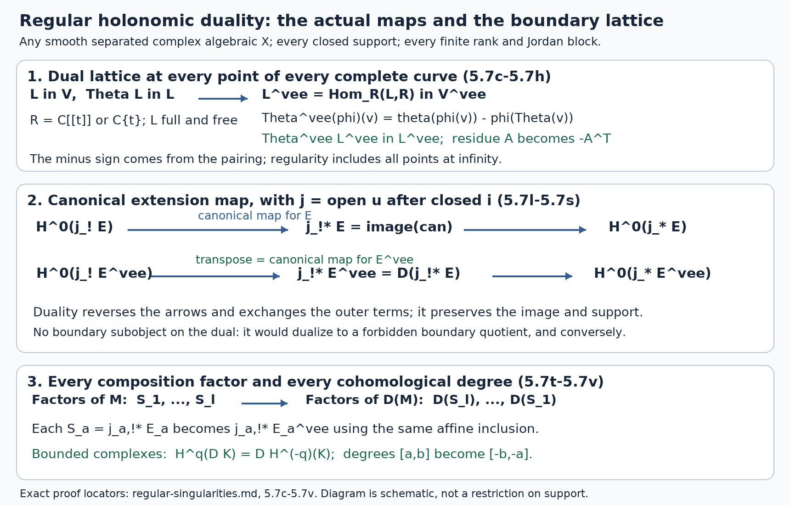
Figure. The lattice panel records the pairing and negative-transpose residue (5.7c)–(5.7f). The two extension rows are identified by duality in the reversed direction; the equality is the actual canonical-map calculation (5.7l)–(5.7p), and their images are (5.7r). The last panel records (5.7t) and the exact degree reversal (5.7b). All statements allow arbitrary rank, Jordan blocks and closed supports. Source reading: the free Bernstein text linked in Section 1; every displayed mechanism is proved above. The reproducible figure source records the same proof locators.
Relative analytic generation in every projective dimension
We now prove finite twist generation near a projective fibre for every coherent analytic sheaf. This supplies an analytic input for later direct-image arguments, including sheaves with torsion or singular support and sheaves that are not flat over the base.
Freely accessible reading: Norguet, Images de faisceaux analytiques cohérents, Section II.1–II.2, printed pp. 11-10–11-14, for the projective-line mechanism. The fixed-chart estimates, matrix factorization, product induction and finite split-trace descent are proved below.
Theorem 5.8 (relative analytic generation). Let \(D\subset\mathbf C^m\) be a polydisc, let \(y_0\in D\), and let \(F\) be coherent analytic on \(\mathbf P^n(\mathbf C)\times D\). There are a smaller polydisc \(D'\ni y_0\) and \(k_0\ge0\) such that \(F(k_0)\) is generated by finitely many global holomorphic sections on the entire product. For every \(k\ge k_0\), the same \(D'\) works, with a finite generating list for that \(k\).
For \(n=0\), choose finite local generators near \(y_0\) and shrink. The complete projective-line argument proves \(n=1\) by Cartan A/B, Laurent approximation and convergent matrix factorization. We first deduce its particular coherent-image theorem, then induct on products and descend through a finite quotient.
The projective-line statement and its local inputs
Lemma 5.8.1 (projective-line generation). Let \(D\) be a polydisc, let \(y_0\in D\), and let \(A\) be a coherent analytic sheaf on \(\mathbf P^1\times D\). There are a smaller polydisc \(D_0\ni y_0\) and an integer \(k_0\) such that, for every integer \(k\ge k_0\), finitely many sections of \(A(k)\) on \(\mathbf P^1\times D_0\) generate that sheaf. Equivalently a finite sum of \(\mathcal O(-k)\) surjects onto \(A\) there.
The inputs are Oka coherence, Theorem 2.1, and the coherent-kernel property, Theorem 3.1, Cartan A and B, Theorems 5.1 and 4.1, and Cauchy/Laurent expansion with holomorphic parameters. Every open used for Cartan B is a product of a polydisc with a disc, an exterior disc including infinity, or an annulus, hence is Stein by the explicit exhaustions in the programme. No fibrewise cohomological finiteness enters the argument.
Bounded Laurent splitting on fixed charts
Fix \(0<r<R<\infty\). Let \(U_1=D_0\times\{|z|<R\}\), \(U_2=D_0\times\{|z|>r\}\), where infinity belongs to the second factor of \(U_2\), and put \(U_{12}=U_1\cap U_2\). A bounded holomorphic function \(f\) on \(U_{12}\) has its normally convergent Laurent expansion \[ f(y,z)=\sum_{j\in\mathbf Z}c_j(y)z^j=f_+(y,z)+f_-(y,z), \] where \(f_+\) extends to \(U_1\) and \(f_-\), its strictly negative part, extends to \(U_2\) and vanishes at infinity. The coefficients are holomorphic in \(y\) by their circle integrals.
There is a constant \(K_{r,R}\) independent of \(f,D_0\) such that \[ \|f_+\|_{U_1},\ \|f_-\|_{U_2}\le K_{r,R}\|f\|_{U_{12}}. \tag{5.8a} \] Here and below suprema are taken over the open domains; the estimates hold whenever these suprema are finite. To prove them put \(s=(r+R)/2\), \(M=\|f\|\). Cauchy estimates on radii tending to \(R\) give \(|c_j|\le MR^{-j}\) for \(j\ge0\), uniformly in \(y\). Thus \(|f_+|\le MR/(R-s)\) on \(|z|\le s\). On radii tending to \(r\), \(|c_{-j}|\le Mr^j\) for \(j\ge1\); hence \(|f_-|\le Mr/(s-r)\) for \(|z|\ge s\). On \(s<|z|<R\), use \(f_+=f-f_-\); on \(r<|z|<s\), use \(f_-=f-f_+\). Together these give (5.8a), for example with \[ K_{r,R}=1+\frac{2R}{R-r}. \] This proves a bounded splitting on the fixed full chart domains; no successive domain shrink is necessary. The two different annulus boundary circles, separated by \(R-r>0\), are essential to this estimate.
For square matrices use a submultiplicative row-sum norm, with \(\|I\|=1\). Applying the scalar splitting entrywise produces, for a fixed matrix size, a constant \(K\ge1\) with \[ L=U_1-U_2, \qquad \|U_i\|\le K\|L\|, \tag{5.8b} \] where \(U_i\) is holomorphic on the corresponding chart. The same estimates are uniform in all base parameters.
Convergent multiplicative factorization
For \(K\) from (5.8b), let \(\epsilon<1/(4K)\). Every matrix \(T\), holomorphic on \(U_{12}\), with \(\|T-I\|<\epsilon\), factors \[ T=G_2^{-1}G_1, \tag{5.8c} \] where \(G_i\) and \(G_i^{-1}\) are holomorphic on \(U_i\).
Set \(T_0=T=I+L_0\). At step \(j\), split \(L_j=U_{1,j}-U_{2,j}\) by (5.8b), and put \[ T_{j+1}=(I+U_{2,j})T_j(I+U_{1,j})^{-1}. \] Because \(\|U_{i,j}\|\le K\|L_j\|<1/2\), both correction matrices are invertible by the convergent Neumann series and their inverses have norm at most 2. The exact residual identity is \[ L_{j+1}=U_{2,j}L_j(I+U_{1,j})^{-1}, \qquad \|L_{j+1}\|\le2K\|L_j\|^2\le\tfrac12\|L_j\|. \tag{5.8d} \] Thus \(\|L_j\|\le2^{-j}\epsilon\). Define products recursively by \[ G_{i,0}=I,\qquad G_{i,j+1}=(I+U_{i,j})G_{i,j}. \] They satisfy \(T_j=G_{2,j}T G_{1,j}^{-1}\). The sum of the correction norms is finite. Products and their inverse products therefore converge uniformly on the full fixed domains, by the submultiplicative product estimate and the estimate \(\|(I+U)^{-1}-I\|\le2\|U\|\). Their limits are holomorphic, remain mutual inverses, and \(T_j\to I\). Hence \(I=G_2TG_1^{-1}\), proving (5.8c). No compact-operator theorem, sheaf-frame assumption or flatness assumption is involved.
Redundant generators and coefficient matrices
Choose nested polydiscs \(D_0\Subset D_1\Subset D_2\Subset D\), all containing \(y_0\), and radii \[ 0<r_2<r_1<r_0<R_0<R_1<R_2<\infty. \] The two Stein opens \(D_2\times\{|z|<R_2\}\) and \(D_2\times\{|z|>r_2\}\) cover \(\mathbf P^1\times D_2\). Cartan A, then a finite subcover of the compact smaller closed chart sets, provides lists \(s_1,s_2\) of sections on these larger opens generating \(A\) on \[ D_1\times\{|z|<R_1\},\qquad D_1\times\{|z|>r_1\}. \] Pad the shorter list by zeros so that both are columns of the same length \(t\).
On the Stein overlap \(D_1\times\{r_1<|z|<R_1\}\), each list gives a surjection \(\mathcal O^t\to A\) with coherent kernel. Cartan B makes its map on global sections surjective. Componentwise lifting supplies holomorphic \(t\times t\) matrices \(B,C\) there with \[ s_2=B s_1,\qquad s_1=C s_2. \tag{5.8e} \] The matrices need not be inverses. The sheaf need not be free or flat. Equation (5.8e) is all that will be used.
These matrices are bounded on \(\overline{D_0}\times\{r_0\le|z|\le R_0\}\). For any \(\delta>0\), truncate only the far negative Laurent tail of \(B\) and the far positive Laurent tail of \(C\). Normal convergence with parameters gives matrices \(B',C'\) satisfying \[ \|B-B'\|,\ \|C-C'\|<\delta \tag{5.8f} \] on that compact overlap. The matrix \(B'\) is meromorphic on the inner chart, with a pole only at 0 and of a finite order; its nonnegative Laurent part extends holomorphically to \(|z|<R_1\). Similarly \(C'\) is meromorphic on the outer chart, with a pole only at infinity and of a finite order; its negative part extends holomorphically to \(|z|>r_1\). Let \(b\) dominate both finite pole orders. The holomorphic parameter dependence and the common finite pole bound follow from this one finite truncation, not from an unproved extension of fibre sections.
Pole compensation and the exact block matrix
For any \(k\ge2b\), choose a section \(\tau_k\) of \(\mathcal O(k)\) whose zeros are precisely 0 and infinity, with orders \(b\) and \(k-b\), respectively. If \(b=0\), increase it to 1 first. The binary monomial \(X_1^bX_0^{k-b}\), in coordinates where \(z=X_1/X_0\), supplies this section. Multiplication by \(\tau_k\) cancels every pole of \(B's_1\) and \(C's_2\). Put \[ \begin{array}{ll} S_1=\binom{\tau_k s_1}{\tau_k B's_1} &\text{on }U_1=D_0\times\{|z|<R_0\},\\[3pt] S_2=\binom{\tau_k C's_2}{\tau_k s_2} &\text{on }U_2=D_0\times\{|z|>r_0\}. \end{array} \] These are columns of \(2t\) genuine holomorphic sections of \(A(k)\). On their overlap, (5.8e) gives the exact equality \[ S_2=T S_1, \qquad T=I_{2t}+ \begin{pmatrix} (C'-C)B&0\\ B-B'&0 \end{pmatrix}. \tag{5.8g} \] For instance the top difference is \(\tau_k(C'-C)s_2=\tau_k(C'-C)Bs_1\), and the bottom difference is \(\tau_k(B-B')s_1\). Consequently \(\|T-I\|\le\delta(1+\|B\|)\). Choose \(\delta\) so that this is below the factorization threshold in the factorization argument above. The matrix \(T\) and its smallness estimate are independent of \(k\).
Factor \(T=G_2^{-1}G_1\). Then \[ G_1S_1=G_2S_2 \] on the overlap. These lists glue to \(2t\) global holomorphic sections of \(A(k)\) on \(\mathbf P^1\times D_0\). Each \(G_i\) is invertible, so it does not alter the local submodule generated by the corresponding list. The first half of \(S_1\) already generates away from 0; the second half of \(S_2\) already generates away from infinity. Hence the glued sections generate everywhere except possibly at those two endpoints.
Repeat the construction using a projective coordinate whose zero and infinity are two different points, neither of them one of the original endpoints. Shrink the base finitely once more if necessary and raise \(k\) above the maximum of the two bounds. Each construction works for every such \(k\). Their combined finite global list generates at every point, since the two exceptional endpoint sets are disjoint. This proves the theorem.
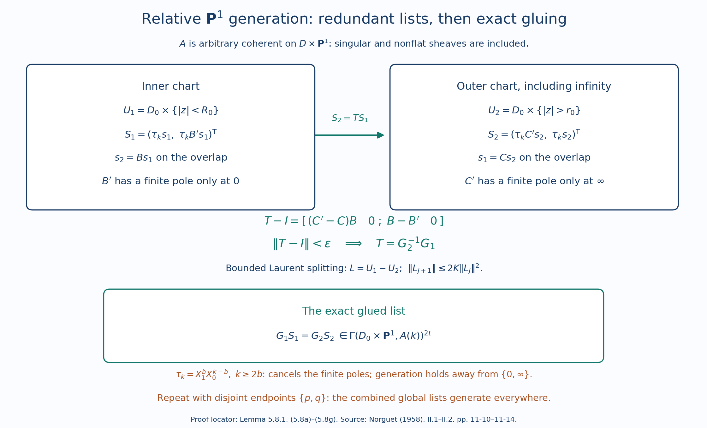
The diagram records the actual chart sections and the exact comparison matrix in (5.8g). The matrix corrections in (5.8b)–(5.8d) are functions on those fixed charts, and the products are invertible there. The union of the two endpoint-complement constructions generates every stalk. The reproducible drawing source is original CC0 explanatory material; the full argument and estimates remain above.
Coherent projective-line images from generation
Lemma 5.8.2 (projective-line coherent images). For a complex manifold \(Z\), put \(p:\mathbf P^1\times Z\to Z\). We prove that \(R^q p_*H\) is coherent for coherent \(H\), and zero for \(q>1\).
Work near \(z_0\) in a coordinate polydisc \(V\). The two standard projective charts and their intersection, multiplied by any smaller polydisc, are \(\mathbf C\times V\), \(\mathbf C\times V\), and \(\mathbf C^*\times V\). They are Stein: sums of \(|w|^2\), of \(|w|^{-2}\) for punctured coordinates, and of reciprocal distances to polydisc boundaries give strictly plurisubharmonic exhaustions. Cartan B makes this cover acyclic for every coherent sheaf. Its Čech complex has degrees 0 and 1; the open-set description of higher direct-image sheaves gives \[ R^q p_*K=0\quad(q>1) \tag{5.8h} \] for every coherent \(K\). This bound is independent of proper coherence.
The directly proved parameter Laurent calculation in Serre's comparison theorems and Chow's theorem, Lemma 6.5, gives \[ R^q p_*\mathcal O(a) =H^q(\mathbf P^1_{\mathbf C},\mathcal O(a)) \otimes_{\mathbf C}\mathcal O_V,\qquad q=0,1. \tag{5.8i} \] Its proof decomposes the finite Čech complex by Laurent negative-coordinate sets. Cauchy estimates justify coefficient projections and the contracting homotopies on normally convergent series with holomorphic parameters. The surviving monomial sets are finite. This calculation invokes neither Grauert nor arbitrary analytic coherent images.
Apply projective-line generation to \(H\), then to two successive coherent kernels. Three finite base shrinkings give an exact sequence on the whole product \[ 0\to K\to E_2\to E_1\to E_0\to H\to0, \qquad E_i=\mathcal O(-a_i)^{N_i}. \tag{5.8j} \] The kernels are coherent by Oka's coherent-category consequence. Locally, one can see the needed kernel assertion by lifting the finite generators of the source to a target presentation: coherence gives finitely many relations among their images; quotienting these relations by the source relations presents the kernel.
Put \(C=[E_2\to E_1\to E_0]\) in degrees \(-2,-1,0\). The augmentation has \[ \operatorname{Cone}(C\to H)\simeq K[3]. \tag{5.8k} \] Indeed the kernel in degree \(-2\) is the only cohomology besides \(H^0(C)=H\), and the cone shifts it to degree \(-3\). The finite termwise spectral sequence \[ E_1^{a,b}=R^b p_*C^a,\qquad -2\le a\le0,\quad0\le b\le1 \] has coherent entries by (5.8i), six positions, and a finite filtration of its abutment by coherent subquotients. Thus all cohomology sheaves of \(Rp_*C\) are coherent. By (5.8h), \(Rp_*K[3]\) has cohomology only in degrees \(-3,-2\); the triangle (5.8k) identifies \[ \mathcal H^q(Rp_*C)\xrightarrow{\sim}R^q p_*H \qquad(q\ge0). \tag{5.8l} \] This proves coherence near \(z_0\), hence on \(Z\). Open restriction identifies these calculations with the intrinsic direct-image sheaves.
Generation on products of projective lines
Write \[ Q_n=(\mathbf P^1)^n,\qquad L_n(a_1,\ldots,a_n)=\boxtimes_i\mathcal O_{\mathbf P^1}(a_i). \] Inductively we prove that any coherent \(A\) on \(Q_n\times D\) has, after shrinking \(D\), finitely many global sections generating \[ A\otimes L_n(h,\ldots,h) \tag{5.8m} \] for some \(h\ge0\). The cases \(n=0,1\) are established.
Project the last factor, \[ p:Q_n\times D\longrightarrow Q_{n-1}\times D=:Z. \] For each point of the compact fibre \(Q_{n-1}\times\{y_0\}\), apply projective-line generation over a target coordinate polydisc. It gives a smaller target open \(V_j\), a degree \(d_j\ge0\), and actual finite sections generating \(A\otimes L_n(0,\ldots,0,d_j)\) on the whole \(p^{-1}V_j\). Finitely many such opens cover that target fibre.
Projection \(Q_{n-1}\times D\to D\) is closed, by the compactness of \(Q_{n-1}\). The image of the closed complement of \(\bigcup V_j\) avoids \(y_0\). Thus a smaller polydisc \(D_1\ni y_0\) makes these opens cover every point of \(Q_{n-1}\times D_1\). Let \(d=\max_j d_j\). Multiply the \(j\)-th list by the finite monomial generators of \(\mathcal O_{\mathbf P^1}(d-d_j)\). Those lists generate \(A(d):=A\otimes L_n(0,\ldots,0,d)\) on their whole inverse images.
Lemma 5.8.2 gives coherence of \(G=p_*A(d)\). The lists are sections of \(G\) on the \(V_j\); consequently the intrinsic evaluation \[ p^*G\longrightarrow A(d) \tag{5.8n} \] is surjective everywhere over \(D_1\). No gluing of the local lists is needed to establish this assertion about the evaluation map.
Apply the induction hypothesis to the coherent \(G\) on \(Q_{n-1}\times D_1\). On a smaller \(D_2\), finitely many sections generate \(G\otimes L_{n-1}(b,\ldots,b)\), for some \(b\ge0\). Pull that finite surjection back and compose with (5.8n). Pullback is right exact, which suffices. This gives generation of \(A\otimes L_n(b,\ldots,b,d)\) on the entire \(Q_n\times D_2\). Put \(h=\max(b,d)\) and multiply by the finite monomial generators of \[ L_n(h-b,\ldots,h-b,h-d). \] All its degrees are nonnegative, so this proves (5.8m). Every fixed induction dimension uses only finitely many neighbourhood shrinkings.
The finite symmetric-root quotient and split trace
The product of binary linear forms defines \[ \rho:Q_n\longrightarrow\mathbf P^n,\quad ([a_1:b_1],\ldots,[a_n:b_n]) \longmapsto\left[\prod_i(a_iX+b_iY)\right]. \tag{5.8o} \] The coefficient sections have degree one in each pair and no common zero, since over a residue field the product of nonzero linear forms is nonzero. They define the morphism and the exact twist identification \[ \rho^*\mathcal O_{\mathbf P^n}(1)=L_n(1,\ldots,1). \tag{5.8p} \] On each nonvanishing-coefficient open the same coefficient trivializes both line bundles, and ratios of coefficients give the transition identifications.
Here is the finite quotient calculation. Choose \(n+1\) distinct points \(\xi_j\in\mathbf P^1\). Let \(U_j\) be the open of binary forms not vanishing at \(\xi_j\). These cover: a nonzero form of degree \(n\) has at most \(n\) distinct zeros, by division by its distinct linear zero factors. Move \(\xi_j\) to \([1:0]\). On \(U_j\) write the form as \[ X^n+e_1X^{n-1}Y+\cdots+e_nY^n. \] In the corresponding linear-form coefficient coordinates, the inverse image has every \(a_i\ne0\); put \(x_i=b_i/a_i\). Then \(U_j=\operatorname{Spec}\mathbf C[e_1,\ldots,e_n]\), its inverse image is \(\operatorname{Spec}\mathbf C[x_1,\ldots,x_n]\), and the \(e_i\) pull back to elementary symmetric functions of the \(x_i\). Each \(x_i\) satisfies \[ T^n-e_1T^{n-1}+\cdots+(-1)^ne_n=0. \tag{5.8q} \] Successive reduction by these monic equations shows that the monomials with all exponents \(<n\) span the root ring over the coefficient ring. Hence \(\rho\) is finite on this finite affine cover.
For completeness, the invariant ring is exactly the coefficient ring. In the lexicographic order \(x_1>\cdots>x_n\), the leading exponent sequence of a symmetric homogeneous polynomial is \(a_1\ge\cdots\ge a_n\); otherwise a permutation gives a larger monomial. The product \[ e_1^{a_1-a_2}e_2^{a_2-a_3}\cdots e_n^{a_n} \] has precisely that leading monomial with coefficient 1. Subtract its multiple. There are finitely many monomials of the fixed total degree, so repetition terminates. Applying this to each homogeneous component expresses every invariant polynomial in the \(e_i\). Distinct monomials in the \(e_i\) have distinct leading exponent sequences, proving algebraic independence as well. Thus \[ \mathbf C[x_1,\ldots,x_n]^{\mathfrak S_n} =\mathbf C[e_1,\ldots,e_n]. \tag{5.8r} \]
Let \(B=\rho_*\mathcal O_{Q_n}\), an algebraic coherent sheaf by the finite module calculation. Permuting factors acts globally on \(B\); (5.8r) identifies \(B^{\mathfrak S_n}\) with the unit copy of \(\mathcal O_{\mathbf P^n}\). Those identifications agree on overlaps. Averaging therefore gives a global \(\mathcal O\)-linear retraction \[ \tau:B\longrightarrow\mathcal O_{\mathbf P^n}, \qquad \tau=\frac1{n!}\sum_{\sigma\in\mathfrak S_n}\sigma, \qquad \tau(1)=1. \tag{5.8s} \] The codomain denotes the invariant summand. This formula is defined at branching points.
We identify this fixed algebra on the analytic product by an earlier comparison proved for algebraic sheaves. The algebraic morphism \(\rho\times\operatorname{id}_{\mathbf A^m}\) is projective: the iterated Segre map is a closed embedding \(Q_n\hookrightarrow\mathbf P^{2^n-1}\), its rank-one equations define its image, and its coordinate ratios give the inverse on each chart. The closed graph of \(\rho\), together with that embedding, gives a closed immersion into \(\mathbf P^{2^n-1}_{\mathbf P^n}\); take the product with \(\mathbf A^m\).
Its algebraic direct-image algebra is the pullback of \(B\): on the preceding affine cover the root algebra is tensored with \(\mathbf C[u_1,\ldots,u_m]\). Apply projective comparison for algebraic sheaves, Proposition 6.6 to the algebraic structure sheaf of this fixed morphism. Restricting the natural comparison to \(D_2\subset\mathbf C^m\) gives \[ B_{D_2}:=(\rho\times\operatorname{id}_{D_2})_* \mathcal O_{Q_n\times D_2} \cong\operatorname{pr}_1^*B^{\mathrm{an}}. \tag{5.8t} \] The proof of Proposition 6.6 uses algebraic finite twist presentations, the directly proved parameter twist calculation of Lemma 6.5, and finite cohomological bounds. It never assumes generation or coherent proper images of arbitrary analytic coherent sheaves. Its naturality for permutations carries \(\tau\) to an analytic retraction \(\tau_{D_2}\), still with \(\tau_{D_2}(1)=1\). In particular this fixed \(B_{D_2}\) is coherent.
Finite exact pushforward descends the generators
Write \(\rho_D=\rho\times\operatorname{id}_{D_2}\). Its continuous map is proper: inverse images of compact sets are closed subsets of \(Q_n\) times their compact base projection. Its fibres are finite; on the preceding affine charts each root coordinate has at most \(n\) possible values by (5.8q).
For any sheaf \(S\) of abelian groups on its source, there is a canonical stalk identification \[ (\rho_{D*}S)_v=\bigoplus_{w\in\rho_D^{-1}(v)}S_w. \tag{5.8u} \] Indeed representatives of the finitely many fibre germs can be chosen on pairwise disjoint neighbourhoods. The complement of their union is closed; properness gives a target neighbourhood whose inverse image is contained in that union. The representatives glue there. This proves surjectivity. If a section germ is zero at every fibre point, choose smaller neighbourhoods on which it is zero and repeat the same argument, proving injectivity. Properness gives the closed-map assertion used here by restricting over a relatively compact target neighbourhood and using compactness to extract a convergent subsequence.
Stalk exactness and the finite sum show that \(\rho_{D*}\) is exact on sheaves of modules. For any analytic \(\mathcal O\)-module \(T\), the natural projection formula is \[ \rho_{D*}\rho_D^*T=B_{D_2}\otimes_{\mathcal O}T. \tag{5.8v} \] At \(v\) this is the distributivity isomorphism between \[ \bigoplus_{w\mid v}\left(\mathcal O_{Q_n\times D_2,w} \otimes_{\mathcal O_{\mathbf P^n\times D_2,v}}T_v\right) \quad\text{and}\quad \left(\bigoplus_{w\mid v}\mathcal O_{Q_n\times D_2,w}\right) \otimes_{\mathcal O_{\mathbf P^n\times D_2,v}}T_v. \] It applies to arbitrary modules.
The pullback of the original \(F\) to \(Q_n\times D\) is coherent: pull back a finite local presentation, and use Oka. the product-induction argument above and (5.8p) give a smaller \(D_2\), \(h\ge0\), and an actual global surjection \[ \mathcal O_{Q_n\times D_2}^{\,N} \twoheadrightarrow \rho_D^*F(h). \tag{5.8w} \] Apply finite exact pushforward, (5.8v), and the retraction: \[ B_{D_2}^{\,N}\twoheadrightarrow B_{D_2}\otimes F(h) \xrightarrow{\ \tau_{D_2}\otimes1\ }F(h). \tag{5.8x} \] The second map is surjective because \(t\mapsto1\otimes t\) is its right inverse.
Choose a fixed \(e\ge0\) such that \(B(e)\) is generated by finitely many algebraic global sections. The earlier algebraic Serre proof, Lemma 1.1 and Proposition 1.2, applies to this algebraic \(B\). Its construction chooses finite module generators on each standard affine chart. A section on that principal chart extends after multiplication by a power of its coordinate: clear finitely many localized denominators on a finite affine trivializing cover, then kill the finitely many overlap differences by a further common power and glue. Raise these finitely many exponents to one common \(e\). This proves the asserted finite generation without any analytic generation input.
Analytify that finite surjection, pull it across \(D_2\), and use (5.8t): \[ \mathcal O_{\mathbf P^n\times D_2}^{\,K} \twoheadrightarrow B_{D_2}(e). \] Tensor pullback preserves surjections. Twist (5.8x) by \(\mathcal O(e)\) and compose \(N\) copies of this surjection. The result is \[ \mathcal O_{\mathbf P^n\times D_2}^{\,KN} \twoheadrightarrow F(h+e). \tag{5.8y} \] The images of the standard global basis are finitely many global holomorphic sections generating on the entire product. This proves Theorem 5.8 with \(D'=D_2\), \(k_0=h+e\). For \(k\ge k_0\), multiplication by the finite monomial generators of \(\mathcal O(k-k_0)\) proves the assertion on the same base.
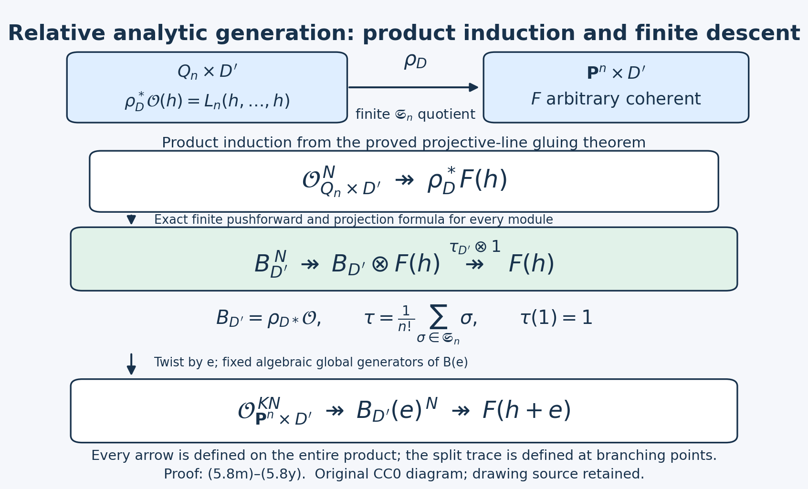
The diagram records the actual twist (5.8p) and surjections (5.8w)–(5.8y). Its trace is normalized averaging, defined at every branch point. The reproducible drawing source is original CC0 material.
Coherence of the actual locally projective analytic operator image
Theorem 5.9. Let \(f:X\to Y\) be a locally projective holomorphic map of complex manifolds, \(y_0\in Y\), and \(M\) a coherent analytic operator module. Suppose that on a neighbourhood of the compact fibre a coherent holomorphic submodule \(L\subset M\) generates \(M\) under \(\mathcal D_X\). Then, near \(y_0\), the actual derived direct image \(f_+M\) has bounded coherent operator cohomology. Every closed or singular support is allowed; holonomicity of \(M\) is unnecessary. The statement also holds for bounded complexes whose cohomology modules each have such a generator near the fibre. The proof applies to right modules and transfers to the programme's left-module conventions by the exact density equivalence.
The initial coherent generator is an explicit hypothesis. Its construction for every analytic regular holonomic module remains part of the full proper-regularity argument. We first prove ordinary coherent holomorphic images in every projective dimension, then construct a finite operator resolution and check the actual target action and every output degree.
Freely accessible support reading: Schapira, An Introduction to Sheaves on Grothendieck Topologies, Sections 4.2–4.4 and 5.1. The exact earlier programme proofs are linked below; the operator and finite-cone arguments are proved here.
Coherent holomorphic images in every projective dimension
Lemma 5.9.1 (locally projective coherent holomorphic images). Let \(p:\mathbf P^n\times D\to D\) be projection, where \(D\) is a coordinate polydisc. Theorem 5.8 gives, for any coherent analytic \(A\) and chosen \(y_0\), a finite epimorphism \[ \mathcal O(-k)^r\twoheadrightarrow A \tag{5.9a} \] on the entire product over a smaller polydisc. The proof includes torsion, nonflat coefficients and singular support.
The \(n+1\) standard projective charts and every finite nonempty intersection, multiplied by a base polydisc, are Stein. In a fixed affine chart an intersection is a product of affine and punctured affine coordinates; sums of squared coordinate moduli, inverse squared punctured-coordinate moduli and reciprocal boundary distances give its strictly plurisubharmonic exhaustion. Cartan B, Theorem 4.1 therefore makes this finite cover acyclic for each coherent analytic sheaf. Its Čech complex gives \[ R^b p_*A=0\qquad(b>n). \tag{5.9b} \] This uses no coherent-image theorem. The independently proved parameter Laurent calculation gives \[ R^b p_*\mathcal O(k) =H^b(\mathbf P^n,\mathcal O(k))\otimes_{\mathbf C}\mathcal O_D; \tag{5.9c} \] the surviving Laurent monomial sets are finite. Its exact earlier proof is the parameter Laurent calculation, Lemma 6.5.
Apply (5.9a) to \(A\) and then to \(n+1\) successive coherent kernels. There are only \(n+2\) shrinkings. This gives \[ 0\to K\to E_{n+1}\to\cdots\to E_0\to A\to0, \qquad E_j=\mathcal O(-k_j)^{r_j}. \tag{5.9d} \] Let \(C=[E_{n+1}\to\cdots\to E_0]\) in degrees \(-n-1,\ldots,0\). Its augmentation has cone \(K[n+2]\). Formula (5.9b) puts \(Rp_*K[n+2]\) in degrees at most \(-2\). Consequently \[ \mathcal H^q(Rp_*C)\xrightarrow{\sim}R^q p_*A \qquad(q\ge0). \tag{5.9e} \] The bounded termwise spectral sequence of \(C\) has finitely many entries, coherent by (5.9c). Kernels, images, quotients and finite extensions in the coherent holomorphic category are coherent by the proved Oka/coherent-category argument. This proves coherence of every \(R^q p_*A\). Thus \(Rp_*\) sends \(D^b_{\mathrm{coh}}(\mathcal O)\) to \(D^b_{\mathrm{coh}}(\mathcal O_D)\), with amplitude \([0,n]\) on modules, by the finite Postnikov argument.
For a closed holomorphic embedding of complex manifolds, ordinary pushforward is exact: its stalk at a point of the closed submanifold is the source stalk, and elsewhere is zero. In adapted coordinates the defining ideal is generated by the normal coordinates. Lift the finite matrix entries of a coherent source presentation to the ambient coordinate neighbourhood, and add the normal-coordinate relations on its finite generators. This gives a finite target holomorphic presentation, so pushforward is coherent by Oka. Factoring a locally projective holomorphic map of complex manifolds through this embedding proves the image theorem for every coherent analytic source sheaf. The local projection dimension supplies a sufficient upper bound.
A coherent global generator and finite induced resolutions
Work with right operator modules. The exact left/right equivalence, Theorem 5.1 is \(M\mapsto\omega_Z\otimes M\); tensoring a coherent generator by that line bundle preserves coherence. The local volume and transpose proof uses only PBW and the Leibniz identities, which hold for holomorphic operators, so it proves the same analytic equivalence. In a volume frame the right vector-field action is minus the left action and minus the holomorphic divergence. Induction on operator order therefore shows that the density-twisted generator generates the converted module, and conversely. Here \(Z=\mathbf P^n\times D\), \(d=\dim_{\mathbf C}Z\). Suppose a coherent right \(\mathcal D_Z\)-module \(M\) has one coherent \(\mathcal O_Z\)-submodule \(L\) with \(L\mathcal D_Z=M\) on a neighbourhood of the compact fibre.
Properness makes that neighbourhood contain the entire inverse image of a smaller base: the image of its closed complement is closed and avoids \(y_0\). Apply (5.9a) to \(L\). If \(E_0=\mathcal O(-k_0)^{r_0}\), the composed action map is an actual right-operator epimorphism \[ A_0:=E_0\otimes_{\mathcal O_Z}\mathcal D_Z\twoheadrightarrow M. \tag{5.9f} \] Here \(E_0\) is finite locally free; no connection on \(E_0\) is required. Right multiplication acts on the last factor. The globally defined order pieces \[ G_jA_0=E_0\otimes_{\mathcal O_Z}\mathcal D_{Z,\le j} \quad(j\ge0),\qquad G_jA_0=0\quad(j<0) \tag{5.9g} \] are coherent right holomorphic modules: in a frame of \(E_0\), these are finite copies of the finite-order operator pieces, which are finite free for the right holomorphic action by right normal ordering. Changing the frame multiplies by order-zero coefficients and preserves these pieces. PBW shows their symbol module is generated by the finite frame in degree zero. Thus (5.9g) is a global good filtration.
Put \(N_1=\ker(A_0\to M)\). Analytic operator coherence makes \(N_1\) coherent. The global intersections \(G_jN_1=N_1\cap G_jA_0\) are coherent holomorphic and locally good. Indeed locally \(A_0\) is a finite free filtered operator module and \(N_1\) is the image of a finite operator matrix; the uniform image-and-relation proof, Lemma 3.0c.4, proves goodness of the induced filtration. It also proves coherence of each of its finite-degree pieces by Oka. Thus no filtration of \(M\) was needed to obtain the first kernel's global pieces.
For completeness the same assertion holds for a coherent submodule of any already good filtered coherent module \(B\). Locally choose a strict finite filtered free epimorphism \(F\to B\), by lifting finite homogeneous symbol generators and lowering order. The inverse image \(H\) of the submodule is coherent and has a good induced filtration in \(F\) by Lemma 3.0c.4. Strictness identifies the desired submodule's degree \(j\) with the image of \(H\cap F_j\) in \(B_j\). Both are coherent holomorphic, so the image is coherent. The graded image is a quotient of the finite graded module of \(H\), hence finite. These identities prove the assertion, rather than merely assuming that coherence of an operator module implies coherence of an arbitrary holomorphic submodule.
The pieces of \(N_1\) exhaust it. At each point of the compact fibre, finitely many local operator generators lie in one degree. Their membership in that sheaf piece holds on a neighbourhood of the point. A finite cover and the maximum of these finitely many degrees give one global coherent piece generating \(N_1\) on a neighbourhood of the fibre. Properness again supplies a smaller entire inverse image. Apply (5.9a) to that piece and obtain \[ A_1=E_1\otimes\mathcal D_Z\twoheadrightarrow N_1, \qquad E_1=\mathcal O(-k_1)^{r_1}. \tag{5.9h} \] Its kernel has the induced global good filtration from \(A_1\). Repeat a fixed finite number of times. Each kernel and finite coherent piece has just been constructed; only finitely many base shrinkings occur. This yields, for any fixed integer \(s\ge0\), an actual exact sequence \[ 0\to K\to A_s\to\cdots\to A_0\to M\to0, \qquad A_j=E_j\otimes\mathcal D_Z, \quad E_j=\mathcal O(-k_j)^{r_j}. \tag{5.9i} \] Consequently the initial coherent global generator, and not a separately presumed filtration of every syzygy, is the sufficient input. Conversely that generator gives \(L\mathcal D_{\le j}\) as global good pieces: locally place its finitely many generators in a coherent local good piece of \(M\); the finite-order images are coherent inside that piece by Oka, exhaustive, and their symbol module is generated in degree zero. This recovers the generator/good-filtration equivalence near the compact fibre.
The induced-term images and actual target action
The right-module direct image is \[ p_+N=Rp_*\bigl(N\otimes^L_{\mathcal D_Z}\mathcal D_{Z\to D}\bigr), \qquad \mathcal D_{Z\to D} =\mathcal O_Z\otimes_{p^{-1}\mathcal O_D}p^{-1}\mathcal D_D. \tag{5.9j} \] In a local frame \(E_j\), \(A_j\) is finite free over \(\mathcal D_Z\). Thus its derived transfer tensor is its ordinary tensor, canonically \[ A_j\otimes^L_{\mathcal D_Z}\mathcal D_{Z\to D} =E_j\otimes_{p^{-1}\mathcal O_D}p^{-1}\mathcal D_D. \tag{5.9k} \] There is no assertion that the forward transfer is left flat over \(\mathcal D_Z\); the local freeness of this particular source term is what removes its Tor.
On a coordinate base the left holomorphic PBW basis makes \(\mathcal D_D\) the sheaf coproduct of its normally ordered finite derivative monomials. Proper derived image commutes with those coproducts in the bounded-below situation used here. The exact earlier proofs are compact germs and c-soft coproducts, (C1)–(C4), proper coproducts, (F4), and derived fibres and image acyclicity, (F6). Briefly, coproducts of c-soft sheaves are c-soft because a section on a compact subset uses a single finite set of summands; proper underived image has the same finite-summand property on its compact fibres. Sum injective resolutions in nonnegative degrees. The resulting resolution has termwise c-soft, image-acyclic terms, and computes the image of the coproduct. Hence the comparison is the specific proper projection map, not an assertion about unrestricted sections on a fixed open.
Finite-order projection and this coproduct comparison give \[ p_+A_j\simeq Rp_*E_j\otimes_{\mathcal O_D}\mathcal D_D. \tag{5.9l} \] This is a right \(\mathcal D_D\)-linear identity. At the sheaf level it takes \(s\otimes P\) to the coefficient section multiplied by its pulled-back target operator. Right multiplication by a coordinate derivative shifts the PBW monomial. Right multiplication by a target holomorphic function uses \(\partial^\alpha a=\sum_{\beta\le\alpha}\binom\alpha\beta\partial^\beta(a)\partial^{\alpha-\beta}\); on the source those coefficients are exactly their pullbacks. The finite-order comparisons commute with these operations. Proper coproduct passage and derived resolution comparisons are natural for these coefficient maps, so they commute with the full right action. This verifies the action explicitly.
By (5.9c), every cohomology module of (5.9l) is a finite locally free right operator module, and vanishes outside degrees \(0,\ldots,n\). The identity is stronger here than mere coherent-image preservation. It uses only finite-order analytic operators and the proved twist calculation.
Finite transfer bounds and removal of the resolution tail
We prove the required transfer bound for any holomorphic map \(f:X\to Y\) of complex manifolds. In target coordinates its forward transfer \[ \mathcal T=\mathcal D_{X\to Y} =\mathcal O_X\otimes_{f^{-1}\mathcal O_Y}f^{-1}\mathcal D_Y \] is free as a left \(\mathcal O_X\)-module on the target PBW monomials. Its augmented absolute Spencer complex has terms \[ \mathcal D_X\otimes_{\mathcal O_X}\bigwedge^rT_X \otimes_{\mathcal O_X}\mathcal T,\qquad 0\le r\le d_X, \] in degrees \(-r\). Its differential is the alternating sum of \(P\xi_i\otimes t-P\otimes\xi_i t\), with the alternating Lie-bracket terms. These formulas are coordinate invariant, glue and commute with the right \(f^{-1}\mathcal D_Y\)-action.
Filter the first operator factor by its order plus the wedge degree. The terms involving \(\xi_i t\) and brackets have lower filtration degree. The graded augmented complex is Koszul on the source cotangent variables with the flat coefficient \(\mathcal T\). Multiplication by a new polynomial variable is injective on a polynomial module with any coefficient module, and its quotient removes that variable. The one-variable two-term exact sequence and induction on the variables prove Koszul exactness. For a Spencer cycle, lift a graded preimage of its leading symbol and subtract its boundary. The order decreases; its lower bound makes this process terminate. Thus the augmented Spencer complex is exact.
Each term is flat as a left \(\mathcal D_X\)-module: its coefficient is \(\mathcal O_X\)-flat, and extension by the right \(\mathcal O_X\)-flat ring \(\mathcal D_X\) preserves that flatness, as tensor associativity tests on a short exact sequence of right operator modules. This finite flat resolution computes the actual transfer tensor on every right operator module, in degrees \([-d_X,0]\). The analytic PBW and coherent-category arguments are proved in the earlier operator lesson.
The earlier uniform real-manifold bound and finite c-soft resolution, (D8)–(D10), give proper sheaf-image amplitude \([0,2d_X]\) for every complex sheaf. Apply these two bounds to the projection, with \(d=\dim_{\mathbf C}Z\). Thus for every operator module \(T\), \[ p_+T\in D^{[-d,2d]}(\mathcal D_D). \tag{5.9m} \] All transfer tensors, resolution triangles and images above are formed in right operator-module categories. For these bounds, forgetting the \(p^{-1}\mathcal D_D\)-action gives the ordinary sheaf-derived image: forgetting to complex sheaves preserves injectives because its left adjoint \(p^{-1}\mathcal D_D\otimes_{\mathbf C}(-)\) is exact. Hence the underlying sheaf bound applies to the actual operator image. The displayed interval is sufficient; no optimality is claimed.
Take the finite resolution (5.9i) with \[ s=3d+1, \qquad C=[A_s\to\cdots\to A_0] \text{ in degrees }-s,\ldots,0. \tag{5.9n} \] Its augmentation to \(M\) has exactly \[ \operatorname{Cone}(C\to M)\simeq K[s+1]. \tag{5.9o} \] The sole unresolved leftmost syzygy is in degree \(-s\) of \(C\) and degree \(-s-1\) of that cone. Apply the actual triangulated operator functor (5.9j). Formula (5.9m) gives \[ p_+K[s+1]\in D^{[-d-s-1,\,2d-s-1]} =D^{[-4d-2,\,-d-2]}. \tag{5.9p} \] Both degrees \(q-1\) and \(q\) of this cone vanish for every \(q\ge-d\). The long exact sequence therefore gives the natural right-operator isomorphisms \[ \mathcal H^q(p_+C)\xrightarrow{\sim}\mathcal H^q(p_+M) \qquad(q\ge-d). \tag{5.9q} \] The independent bound (5.9m) already kills every degree \(q<-d\) of \(p_+M\). Thus (5.9q) covers every possibly nonzero degree of the actual output.
The complex \(C\) has finitely many terms. Successive brutal filtration triangles express \(p_+C\) as finitely many cones of shifts of the \(p_+A_j\). Each latter object has bounded coherent cohomology by (5.9l). Analytic operator coherence makes kernels, images and quotients of coherent operator morphisms coherent, and finite extensions are coherent by the block-presentation argument. The long exact sequences for these finitely many cones therefore show that \(p_+C\) has bounded coherent operator cohomology. Formula (5.9q) proves the same conclusion for \(p_+M\). No convergence or infinite-width totalization is used in this deduction. Equivalently, the augmentation identifies the actual output with the canonical truncation \(\tau_{\ge-d}p_+C\).
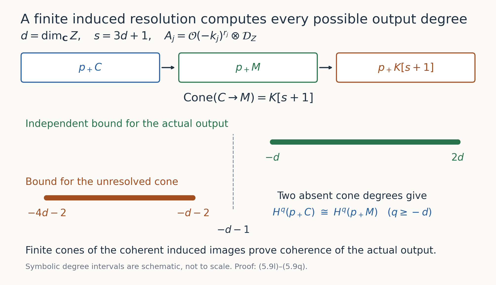
The figure is a schematic of cohomological degree intervals, not a numerical estimate or a claim of sharp bounds. Its maps are (5.9o) after applying \(p_+\); its upper interval is the exact sufficient bound (5.9m), and its lower interval is (5.9p) for the specified integer \(s=3d+1\). The two absent cone degrees establish (5.9q). The reproducible drawing source supplies the original CC0 diagram.
Closed embeddings, bounded complexes and the generator hypothesis
For a closed holomorphic embedding \(i:X\hookrightarrow Z\), the right forward transfer has its global order-zero section \(1\) and locally is the normal-derivative polynomial basis over the source. The canonical map \[ i_*N\longrightarrow i_+N, \qquad m\longmapsto m\otimes1 \tag{5.9r} \] is holomorphically linear and injective: in adapted coordinates it is the constant normal-derivative coefficient, and multiplication by a target function on it is multiplication by its source restriction. Normal derivative PBW proves that \(i_+\) is exact here. If \(L\subset N\) is a coherent global holomorphic generator, its image \(i_*L\) in (5.9r) is coherent and generates \(i_+N\) under the target operators. Indeed the other normal monomials are obtained by target right derivatives, and a source tangential operator acting on \(m\) is, in the tensor balance relation, a corresponding local target operator acting on \(m\otimes1\). These local generation assertions determine the global one. The finite source presentation with the normal-coordinate relations proves target operator coherence, explicitly: lift a finite source operator presentation to tangential ambient operators and add the normal-coordinate annihilation relations for its finite generators. Right normal ordering identifies the resulting finite quotient with the normal-derivative expansion of the transfer module. Analytic operator coherence gives target coherence. In right-module form the order-zero submodule has no extra normal determinant; the left-module conversion produces exactly that section's transfer line \(\det N_{X/Z}\).
Therefore factoring a locally projective holomorphic map of complex manifolds through a closed embedding and projection proves:
If a coherent analytic operator module has a coherent global holomorphic generator on a neighbourhood of the chosen compact fibre, its actual derived locally projective direct image has bounded coherent operator cohomology near the chosen target point.
The property of having that generator is local near the fibre in this assertion; it is not assumed on all of the manifold. A bounded complex whose finitely many cohomology modules have such generators is covered after a common finite base shrinking, using its finite Postnikov tower and the coherent-category closure just proved. The general transfer/topological bound gives the sufficient range \([a-d_X,b+2d_X]\) for input cohomology in \([a,b]\).
This proves coherence for singular-support source modules once their generators exist. It does not prove the filtered characteristic transport inequality or holonomicity, nor the radical regular-filtration condition, canonical global lattice for arbitrary regular holonomic modules, convergent infinite-order extension, its faithful flatness, regularization, regular-pair Hom comparison, or the unit-compatible infinite-order projective comparison. The arbitrary proper holomorphic and support-proper theorem, including nonprojective maps, remains the active full obligation.
A coherent cotangent image and its analytic transported support
Let \(p:Z=\mathbf P^n\times D\to D\), \(m=\dim D\), \(d=n+m\), and set \[ \begin{aligned} W&=Z\times_D T^*D,\\ j&:W\hookrightarrow T^*Z,\\ j(z,\eta)&=(z,(dp_z)^t\eta),\\ q&:W\to T^*D,\\ q(z,\eta)&=\eta. \end{aligned} \tag{5.10a} \] The image of \(j\) consists exactly of the covectors whose vertical components vanish. The projection \(q\) is proper, and in base coordinates is the projective product projection \(\mathbf P^n\times T^*D\to T^*D\).
Theorem 5.10 (the cotangent image). For every coherent analytic sheaf \(G\) on \(T^*Z\), the actual object \[ B=Rq_*Lj^*G \tag{5.10b} \] has bounded coherent holomorphic cohomology on \(T^*D\), with sufficient range \([-n,n]\). Moreover \[ \operatorname{Supp}\mathcal H^a(B) \subset q\bigl(j^{-1}\operatorname{Supp}G\bigr) \qquad\text{for every }a, \tag{5.10c} \] and the set on the right is a closed analytic subset.
Proof. Locally choose fibre coordinates \(x_1,\ldots,x_n\) and base coordinates \(y_1,\ldots,y_m\). The embedding \(j\) is defined by the vertical cotangent coordinates \(\xi_{x_1},\ldots,\xi_{x_n}\). These form a regular sequence in the local convergent function ring: adjoining each coordinate as an independent analytic variable makes multiplication by it injective, and successive quotients remove it. Their Koszul complex is a length-\(n\) locally free resolution of \(j_*\mathcal O_W\). Exactness follows by the one-variable two-term injection and induction on the number of independent variables, or equivalently by the successive polynomial-coordinate contraction. Tensoring this finite resolution with \(G\) computes \(Lj^*G\). Oka's coherent-category theorem makes each kernel and cohomology coherent. The Koszul homotopies show that the vertical coordinates kill its cohomology, which is therefore coherent over \(\mathcal O_W\), in degrees \(-n,\ldots,0\).
Lemma 5.9.1 proves the locally projective coherent holomorphic image theorem. Apply it to \(q\), on a coordinate polydisc about any point of \(T^*D\). It applies to each coherent cohomology sheaf of \(Lj^*G\) without flatness or smooth-support restrictions, and gives higher-image range \([0,n]\). Its finite cohomology spectral sequence proves that (5.10b) is coherent and lies in \([-n,n]\).
Every derived-restriction cohomology sheaf is supported on \(S=j^{-1}\operatorname{Supp}G\): away from that set the input \(G\) vanishes on a neighbourhood and so does its tensor Koszul complex. Properness makes \(q(S)\) closed. The image complex restricted to its open complement is zero, since every source cohomology sheaf there vanishes. Open restriction of the same derived image gives (5.10c).
To prove analyticity without importing a general proper analytic image theorem, use the possibly nonreduced coherent ideal on \(W\) obtained by restricting and generating from the annihilator of \(G\). The annihilator is coherent: locally it is the kernel of the action map from \(\mathcal O\) to the coherent internal Hom sheaf \(\mathcal Hom(G,G)\), whose coherence follows from finite presentations and Oka. Its zero set is \(\operatorname{Supp}G\) by the finite-module annihilator criterion; restricting its finite generators gives the zero set \(S\) on \(W\). The quotient \(\mathcal O_S\), viewed as a coherent sheaf on \(W\), has coherent \(q_*\mathcal O_S\) by the just-proved projective image theorem. Its support is exactly \(q(S)\). Outside that image it vanishes. At a point of the image, its globally defined unit has a nonzero stalk in \(q_*\mathcal O_S\): if that unit became zero on the inverse image of some target neighbourhood, its source germ at a chosen point of the nonempty fibre would be zero, contradicting the unit in the nonzero analytic local quotient. Thus the coherent support of \(q_*\mathcal O_S\) is the stated set, making it analytic by a finite local presentation. \(\square\)
For a coherent operator module \(M\) with a global good filtration, apply the lemma to its analytified coherent symbol sheaf \[ G=\mathcal O_{T^*Z}\otimes_{\operatorname{gr}\mathcal D_Z}\operatorname{gr}M. \tag{5.10d} \] This symbol sheaf is coherent from finite presentations: a locally finite presentation of \(\operatorname{gr}M\) over \(\operatorname{Sym}T_Z\) gives a finite matrix with fibre-polynomial holomorphic entries; viewing those entries on \(T^*Z\) presents \(G\) as the cokernel of a finite holomorphic free matrix. Oka proves coherence. Then \(S\) in (5.10c) is the intersection of its actual characteristic support with zero vertical covectors. The maps (5.10a) are the cotangent correspondence for this projection. The lemma proves that the natural derived candidate symbol image is coherent on the target cotangent space and has the expected support containment, including at singular-support points.
The characteristic bound for the actual operator image still requires a good output filtration and a filtered derived comparison with this symbol object, allowing the necessary spectral-sequence subquotients and filtration strictness. Holonomicity additionally requires the geometric dimension estimate for the transported characteristic set. Formula (5.10c) alone proves neither of those facts. This makes the surviving filtered/microlocal leaf smaller and explicit while preserving full arbitrary-proper regularity as the ultimate goal.
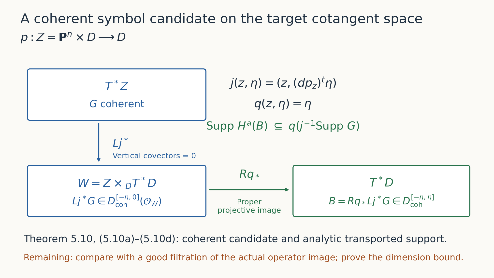
The diagram displays the defined objects (5.10a), the finite codimension-\(n\) Koszul restriction and the actual projective holomorphic image (5.10b). The support statement is the proved inclusion (5.10c); the bottom line lists the additional output-symbol and dimension steps beyond Theorem 5.10. Theorems 5.11–5.12 supply those proofs; the actual output symbol is a subquotient of the candidate. The reproducible drawing source is original CC0 material. Every input is proved above or in the linked earlier programme lessons.
Singular pieces and isotropic projective cotangent images
Theorem 5.11. Let \(D\) be a complex coordinate polydisc of dimension \(m\), let \(Z=\mathbf P^n\times D\), and let \(\Lambda\subset T^*Z\) be a closed reduced conic analytic set, pure of dimension \(d=n+m\), whose smooth locus is Lagrangian. Set \[ \begin{aligned} W&=Z\times_DT^*D,\\ j(z,\eta)&=(z,(dp_z)^t\eta),\\ q(z,\eta)&=\eta,\\ B&=q(j^{-1}\Lambda). \end{aligned} \tag{5.11a} \] Then \(B\) is a closed conic analytic subset of \(T^*D\). Every local irreducible component of \(B\) is generically isotropic, and \[ \dim B\le m. \tag{5.11b} \] The proof includes components of \(j^{-1}\Lambda\) lying wholly inside \(\Lambda_{\mathrm{sing}}\). It does not assume Whitney stratification, an analytic resolution theorem, RH, or regularity preservation.
Theorem 5.12 below constructs the actual output filtration and characteristic inclusion. The present theorem proves the cotangent dimension bound needed for that conclusion.
The admitted analytic foundations
The earlier programme proof of local parametrization provides the following precise data for an irreducible analytic germ \(A\) of dimension \(a\) in a coordinate ambient manifold. On a sufficiently small representative there is a proper finite projection \[ \pi:A\longrightarrow V\subset\mathbf C^a \tag{5.11c} \] and a nonzero holomorphic discriminant \(\delta\) on \(V\). Over \(V\setminus\{\delta=0\}\) it is a finite covering by regular points of \(A\), locally the graphs of holomorphic functions. This locus is dense. This is local parametrization, Theorem 4.1.
The same lesson proves finite local decomposition, Proposition 1.2, and dense regular points, dimension and strict dimension drop, Theorem 5.4 and Proposition 5.5. We use these statements locally, with countable coordinate covers.
The inverse, implicit and constant-rank theorems are the actual earlier coordinate proofs (HC9)–(HC12). The Riemann extension theorem, Theorem 4.2, and Corollary 4.3 prove bounded removal and connectedness of hypersurface complements. The coherent vanishing ideal is supplied by Cartan’s theorem, Theorem 1.1. These are exact earlier programme proofs.
Lemma 5.9.1 proves coherent projective holomorphic images. Theorem 5.10 gives the analytic-image unit argument, repeated below for the set in (5.11a).
The singular restriction lemma, proved by finite branches
Lemma 5.11.1. Let \(A\) be a reduced analytic subset of a complex manifold \(H\). Let \(\alpha\) be an ambient holomorphic differential form whose pullback to \(A_{\mathrm{reg}}\) is zero. For every locally closed analytic subset \(S\subset A\), its pullback to \(S_{\mathrm{reg}}\) is zero. This holds even when \(S\subset A_{\mathrm{sing}}\).
It is enough to prove the assertion locally for an irreducible component of \(S\) inside an irreducible component of \(A\). If \(A\) is locally reducible, its regular points away from the other components are dense in the regular locus of each component; holomorphic continuity therefore makes the hypothesis valid on each component's regular locus. Zero-dimensional \(S\) has no positive-degree forms and the degree-zero assertion is ordinary continuity. If \(\dim S=\dim A\), it is the same component locally and the assertion follows from the hypothesis. We now treat \(0<r=\dim S<a=\dim A\).
A finite projection restricts to an embedding generically on \(S\)
Take (5.11c) for an irreducible representative containing the chosen \(S\). The restriction to a regular source patch of \(S\) has maximum rank \(r\). Indeed, if its maximum rank were \(s<r\), a nonzero maximal minor gives a constant-rank neighbourhood. HC12 would supply local fibres of dimension \(r-s>0\), contradicting finiteness of \(\pi\). The rank-\(r\) patches are dense: the common vanishing of their minors is a proper analytic subset in each regular patch.
At such a point, HC12 identifies \(\pi|_S\), after shrinking, with a holomorphic embedding onto a smooth local submanifold \(S'\subset V\) of dimension \(r\). Flatten it in target coordinates \((s,v)\in\mathbf C^r\times\mathbf C^{a-r}\), so \(S'=(v=0)\). Here \(s\) is a parameter vector, not a source operator.
The inverse image \(\pi^{-1}S'\) is analytic. Every one of its irreducible components has dimension at most \(r\). To see this without a finite-image dimension theorem, take the regular locus of such a component of dimension \(k\); its map to the smooth \(r\)-manifold \(S'\) has maximum rank at most \(r\). Constant rank would give positive-dimensional fibres if \(k>r\), again contradicting finiteness. Thus \(k\le r\). Since our \(S\) has dimension \(r\), it is one irreducible component of this inverse image.
There are finitely many components near a given point. Remove their proper intersections with \(S\), and choose a point on the remaining open part of \(S\). In a neighbourhood of that point the underlying set of \(\pi^{-1}S'\) is exactly \(S\), and \(\pi|_S\) is an embedding. The other points of the finite fibre can be separated by disjoint ambient neighbourhoods. Properness shrinks the target so its entire inverse image lies in those neighbourhoods: otherwise a sequence outside them over base points tending to the chosen fibre would have a limit in that fibre. The distinguished neighbourhood consequently gives a proper finite restriction \[ \pi:A_0\longrightarrow V_0, \qquad \pi^{-1}(s,0)=\{\sigma(s)\}, \tag{5.11d} \] set-theoretically, with \(\sigma:S'\to S\) the holomorphic inverse. Scheme multiplicities in this fibre are allowed. No normality, normalization or resolution is used.
The projection over the discriminant complement remains a finite covering. Every distinguished source part contains regular covering points by density. Since a hypersurface complement in a small connected polydisc is connected, that covering part has nonzero constant sheet number there.
A ramified transverse family has a bounded holomorphic lift
In the flattened coordinates expand the nonzero discriminant: \[ \delta(s,v)=\sum_{\gamma\in\mathbf N^{a-r}}c_\gamma(s)v^\gamma. \] Let \(\ell\) be the least total degree with some coefficient not identically zero along a connected \(s\)-polydisc. Choose a constant vector \(b\in\mathbf C^{a-r}\) for which the polynomial \[ c(s)=\sum_{|\gamma|=\ell}c_\gamma(s)b^\gamma \] is not identically zero. Such a vector exists because a nonzero finite polynomial cannot vanish for all constant vectors. At a generic \(s\)-point \(c(s)\ne0\). After a further shrink, \[ \delta(s,tb)=t^\ell h(s,t),\qquad h(s,0)=c(s),\qquad h(s,t)\ne0. \tag{5.11e} \] This is just normally convergent Taylor expansion and a finite leading coefficient; it assumes no Puiseux theorem with parameters. It also covers \(\ell=0\).
For \(t\ne0\), the map \((s,t)\mapsto(s,tb)\) avoids the discriminant. Pull back the finite covering in (5.11d) to the product of this \(s\)-polydisc and a punctured \(t\)-disc. Its monodromy is one finite permutation: the parameter polydisc contracts radially, and the punctured disc retracts to its circle. Path lifting through the local covering charts identifies sheets; continuation around one circle permutes the finite fibre. If the total covering degree is \(q_0\), the permutation has order dividing \(q_0!\).
Choose any positive integer \(e\) divisible by that order, for example \(e=q_0!\), and substitute \(t=u^e\). The resulting cover has trivial monodromy and a global holomorphic sheet \[ F(s,u)\in A_0,\qquad \pi F(s,u)=(s,b u^e),\qquad u\ne0. \tag{5.11f} \] To spell out the elementary covering argument, continue one inverse chart along paths from a fixed base point. Two paths differ by loops homotopic to integral powers of the circle loop; the power substitution makes their sheet permutation the identity. Thus the continuation is independent of the path. On every covering chart it is a holomorphic inverse, so the resulting sheet is holomorphic. The radial contraction and angular circle homotopies also prove the required homotopy invariance by subdividing a homotopy square into finitely many covering charts.
Choose all parameter closures inside \(V_0\). Properness puts the sheet inside a compact subset of its ambient source chart, hence all its coordinates are uniformly bounded near \(u=0\). Bounded removal extends each coordinate holomorphically across \(u=0\). In elementary Laurent terms, each negative coefficient satisfies \(|c_{-k}(s)|\le M\rho^k\) on fixed smaller parameter compacts; radius independence and \(\rho\to0\) kill it. The coefficients are holomorphic in \(s\) by their circle integrals. This proves joint holomorphic extension, not merely pointwise limits.
The source equations remain zero by continuity, and properness keeps the limit in the distinguished neighbourhood. Equation (5.11d) forces \[ F(s,0)=\sigma(s),\qquad F(s,u)\in A_{\mathrm{reg}}\quad(u\ne0). \tag{5.11g} \] This family is the required singular-stratum bridge.
Pull back the form and pass to \(u=0\)
The form \(F^*\alpha\) is holomorphic on the entire parameter product. It is zero for \(u\ne0\), because (5.11g) maps that open set into \(A_{\mathrm{reg}}\). Its holomorphic coefficients are therefore identically zero. Restricting to \(u=0\) gives \(\sigma^*\alpha=0\) on a nonempty open part of \(S_{\mathrm{reg}}\).
The construction can be restarted in every nonempty regular patch of \(S\). Each such patch therefore contains a nonempty open on which the restricted form vanishes. The zero set is dense in \(S_{\mathrm{reg}}\), and the restricted holomorphic coefficients are continuous, so they vanish everywhere. This proves Lemma 5.11.1. There is no assumption that tangent spaces at singular points are ordinary limits of tangent spaces; the actual holomorphic family supplies the needed restriction map. \(\square\)
The conic Lagrangian one-form vanishes on every singular piece
Fix the sign convention \[ \theta_Z=\sum_{i=1}^n\xi_i\,dx_i+ \sum_{a=1}^m\eta_a\,dy_a, \qquad \omega_Z=d\theta_Z, \qquad E=\sum_i\xi_i\partial_{\xi_i}+\sum_a\eta_a\partial_{\eta_a}. \tag{5.11h} \] Thus \(\iota_E\omega_Z=\theta_Z\). Reversing the symplectic sign would leave the isotropy assertions unchanged, but (5.11h) states the sign actually used.
Conicity makes \(E\) tangent to \(\Lambda_{\mathrm{reg}}\): its fibre-scaling flow preserves \(\Lambda\) and the regular locus. Lagrangianity gives \(\omega_Z(E,v)=0\) for every tangent vector \(v\) there. Therefore \[ \theta_Z|_{\Lambda_{\mathrm{reg}}}=0. \tag{5.11i} \] Lemma 5.11.1 now makes the pullback of \(\theta_Z\) zero on the regular locus of every locally closed analytic subset of \(\Lambda\). In particular it is zero on every smooth local analytic piece of \(j^{-1}\Lambda\), after applying \(j\), including pieces entirely over \(\Lambda_{\mathrm{sing}}\).
In the correspondence (5.11a), \(j\) sets precisely the vertical covectors to zero. With \(\theta_D=\sum_a\eta_a\,dy_a\), the actual coordinate identity is \[ j^*\theta_Z=q^*\theta_D. \tag{5.11j} \] It glues intrinsically because tautological cotangent one-forms are defined by evaluation on the derivative of the cotangent projection. Consequently \(q^*\theta_D\) vanishes on every smooth local analytic piece of \(j^{-1}\Lambda\).
The proper image is analytic, using the proved coherent theorem
Put \(A=j^{-1}\Lambda\) as a reduced analytic subset of \(W\). Its ideal is coherent by the exact Cartan coherence theorem. The proper projective map \(q:W\simeq\mathbf P^n\times T^*D\to T^*D\) has coherent \(q_*\mathcal O_A\) by the projective analytic coherent-image theorem already proved in Lemma 5.9.1.
Its support is exactly \(q(A)\). Outside that closed image it is zero. At \(b\in q(A)\), choose a point of the nonempty fibre in \(A\). The global unit of \(\mathcal O_A\) cannot have zero direct-image stalk at \(b\): that would mean zero on the inverse image of one neighbourhood, contradicting its nonzero source germ at the chosen point. Thus the coherent support is \(B=q(A)\), and support of a coherent analytic sheaf is analytic by a finite local presentation. This is the same unit argument independently checked in Theorem 5.10. Properness supplies closedness. Fibre scaling commutes with \(j\) and \(q\), so \(B\) is conic.
No general proper analytic-image theorem or analytic stratification theorem is used at this step.
A countable rank cover supplies image tangent vectors
We need a consequence of surjectivity onto \(B\), including when all sources over a component lie in singular loci. The following elementary argument avoids an assumed stratification.
Analytic sets admit the needed countable smooth covers
Every local irreducible analytic set of positive dimension \(k\) has, by (5.11c), a dense smooth open whose complement is contained in the proper analytic subset \(\{\delta\circ\pi=0\}\). The latter has dimension at most \(k-1\). Decompose that complement into its finitely many local irreducible components, apply the same construction to each, and continue. The dimension strictly drops, so after at most \(k\) levels the remaining pieces are zero-dimensional and smooth.
Using a countable ambient chart cover and countable relatively compact subcharts makes this a countable cover by smooth locally closed analytic pieces. Overlap is allowed. No Whitney condition, frontier condition or local finiteness of a stratification is claimed or needed. Every piece is locally an analytic subset of the original analytic set, so the tautological-form vanishing proved above applies to it.
For a holomorphic map on one such smooth piece, take its maximum differential rank on a coordinate patch. The locus of that rank is open and has constant rank locally. The remaining locus is cut out by the maximum-rank minors and is a proper analytic subset. Its local components have lower dimension. Apply the same smooth-cover and rank argument recursively. Zero-rank maps on connected patches are constant. This gives a countable cover by smooth pieces on which \(q\) has constant rank, locally in the normal form HC12. The recursion again terminates by strict dimension drop.
Surjectivity forces full-rank image pieces somewhere in every target ball
Choose a target open on which \(B\) itself is a smooth manifold of dimension \(r\), avoiding the other local components. Such opens are dense in each component by the proved local parametrization and component-dimension statements. Restrict the source to its inverse image. Its images cover this target open.
If all the constant-rank pieces above had rank smaller than \(r\), HC12 would place every local image inside a smooth target submanifold of smaller dimension. Exhaust each sufficiently small source rank chart by countably many compact subsets. Their images are compact, hence closed, and have empty interior in the \(r\)-dimensional target manifold because they lie in those smaller-dimensional submanifolds. They are consequently nowhere dense.
A small closed target coordinate ball cannot be covered by countably many such closed nowhere-dense sets. Here is the precise elementary Baire argument: inside the ball choose a smaller closed ball disjoint from the first set; inside its interior choose a closed ball disjoint from the second, of radius at most \(1/2\); continue with radii tending to zero. At each stage nowhere density allows the choice. Nested compact balls have a common point, obtained equivalently by the Cauchy limit of their centres. That point misses every listed set, a contradiction. Intersecting the compact image sets with the target ball keeps them closed and nowhere dense; its boundary has no relative interior and causes no exception.
Thus some piece has rank \(r\); HC12 makes its image contain a target open and its differential surjective there. Pullback of \(\theta_D\) is zero on that piece by (5.11j) and Lemma 5.11.1. Surjectivity of its differential makes \(\theta_D|_B=0\) on its image open.
In fact the form is zero throughout each smooth target component patch. If it were nonzero at one point, one coefficient in a local tangent frame would remain nonzero on a smaller open neighbourhood. On the inverse image of that neighbourhood no rank-\(r\) piece could exist, because such a piece would force that coefficient zero. The same Baire argument contradicts the covering. Therefore \[ \theta_D|_{B_{\mathrm{smooth}}}=0 \tag{5.11k} \] on the dense smooth portions of every local component. A zero-dimensional component satisfies this automatically.
This is the explicit image-rank step; it does not silently discard source pieces in \(\Lambda_{\mathrm{sing}}\).
Isotropy and the dimension bound
Take the exterior derivative of (5.11k) on a smooth target component patch: \[ \omega_D|_B=d(\theta_D|_B)=0, \qquad \omega_D=d\theta_D. \tag{5.11l} \] Its tangent space \(V\) is isotropic in the \(2m\)-dimensional symplectic tangent space of \(T^*D\). Nondegeneracy gives \(\dim V+\dim V^\perp=2m\), while isotropy gives \(V\subset V^\perp\). Hence \(2\dim V\le2m\). Dimension of an analytic component is the dimension of its dense smooth locus, proving (5.11b). Empty images and dimension-zero cases are included.
The singular restriction lemma and the countable rank cover are the two necessary steps beyond the familiar smooth correspondence calculation. Both have been proved here from finite parametrization, bounded removal, constant rank and dimension drop. In particular no unresolved Whitney-stratification package is used as a hidden provider.
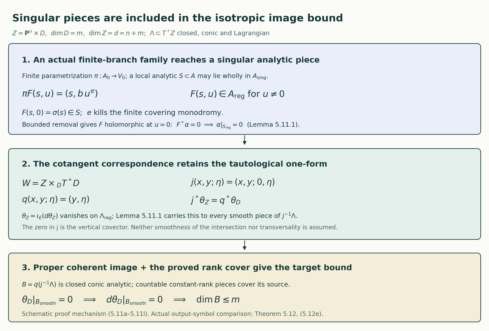
The upper panel is the local family of Lemma 5.11.1, with \(e\) a finite covering-monodromy exponent and \(b\) a chosen transverse parameter vector. It is a schematic, not an analytic resolution or a global parametrization. The middle panel is the actual correspondence (5.11a) with zero vertical covectors and the exact identity (5.11j). The bottom panel records (5.11k)–(5.11l) and the proved bound (5.11b), including source pieces wholly in the singular locus. The complete proof is above; the reproducible drawing source supplies the original CC0 diagram.
Actual filtered images and analytic projective holonomicity
Theorem 5.12. Let \(p:Z=\mathbf P^n\times D\to D\), where \(D\) is a coordinate polydisc. Let \(M\) be a coherent analytic operator module with a global good order filtration near the compact fibre under consideration; an initial coherent global holomorphic generator suffices by Theorem 5.9. Every cohomology module of \(p_+M\) has an actual good output filtration, and \[ \operatorname{Ch}\mathcal H^b(p_+M)\subset q\bigl(j^{-1}\operatorname{Ch}M\bigr). \] If \(M\) is holonomic, every output cohomology module is holonomic. This conclusion includes every singular support and every derived degree. It extends to locally projective holomorphic maps of complex manifolds and bounded complexes whose cohomology modules have the stated generator or good filtration near the compact fibre. Right-module calculations transfer to the programme's left-module conventions by the density equivalence proved in Theorem 5.9.
The proof keeps the torsion in the derived Rees image until both specializations have been computed. Removing its locally bounded power torsion then constructs the good filtration of the actual output. Its symbol module is a quotient of a submodule of the coherent cotangent candidate of Theorem 5.10. Theorem 5.11 supplies the dimension bound, including singular intersections.
Objects, grading and the claimed characteristic containment
Work with right modules and let \(p:Z=\mathbf P^n\times D\to D\), \(d=\dim Z\), \(m=\dim D\). Let \(M\) be coherent over \(\mathcal D_Z\) with one globally defined good order filtration \(F\) near the tested compact fibre. The filtration is exhaustive, has coherent holomorphic pieces, is locally bounded below, and its graded module is locally finitely generated over \(\operatorname{Sym}T_Z\). A coherent global holomorphic generator supplies such a filtration by the construction in Theorem 5.9.
Use the central variable \(h\) of internal degree one and put \[ \mathscr R_Z=\bigoplus_{a\ge0}\mathcal D_{Z,\le a}h^a, \qquad\mathscr R_FM=\bigoplus_{a\in\mathbf Z}F_aM\,h^a. \tag{5.12a} \] In coordinates write \(\vartheta_i=h\partial_i\). The relations are \[ [\vartheta_i,a]=h\partial_i(a),\qquad [\vartheta_i,\vartheta_j]=0, \qquad h\text{ central}, \tag{5.12b} \] and both \(h,\vartheta_i\) have degree one. PBW gives the holomorphic coefficient basis \(h^k\vartheta^\alpha\), with \(k\ge0\). Consequently \[ \mathscr R_Z/(h)=S_Z:=\operatorname{Sym}T_Z, \qquad\mathscr R_Z/(h-1)=\mathcal D_Z. \tag{5.12c} \] The Rees module embeds in \(M[h,h^{-1}]\). It is torsion-free, hence flat, over the coefficient PID \(\mathbf C[h]\). Here is the coefficient-flatness proof used throughout. Euclidean division by a nonzero ideal element of least degree proves that every ideal of \(\mathbf C[h]\) is principal. A finitely generated torsion-free module \(V\) over this PID injects into its finite-dimensional fraction-field span; choose a basis there and clear the finitely many generator denominators, embedding \(V\) into a finite free module. Every submodule \(N\subset A^r\) over a PID is free of rank at most \(r\): its first-coordinate image is a principal ideal \((a)\); if nonzero, choose a vector mapping to \(a\), subtract its multiples and split \(N\) as that free rank-one summand plus a submodule of \(A^{r-1}\). If the image is zero, it is already a submodule of the latter. Induction proves the assertion, including zero images. Thus the finitely generated \(V\) is free. An arbitrary torsion-free module is the filtered union of its finitely generated submodules, all free by this argument. Tensoring an exact sequence with each is exact, and a filtered union commutes with kernels and cokernels because every equality or preimage witness involves finitely many elements at one later index. Tensor with their union is therefore exact, proving flatness. The stalkwise argument proves sheaf coefficient-flatness. The Rees specializations are \(\operatorname{gr}_FM\) at zero and \(M\) at one, including negative filtration shifts.
Write \[ \begin{aligned} W&=Z\times_D T^*D,\\ j(z,\eta)&=(z,(dp_z)^t\eta),\\ q(z,\eta)&=\eta,\\ G&=\mathcal O_{T^*Z}\otimes_{S_Z}\operatorname{gr}_FM. \end{aligned} \tag{5.12d} \] The conclusion proved below is \[ \operatorname{Ch}\mathcal H^b(p_+M) \subset q\bigl(j^{-1}\operatorname{Supp}G\bigr) \qquad\text{for every }b. \tag{5.12e} \] These are analytic characteristic supports in the actual cotangent spaces. Theorem 5.10 proves that \(Rq_*Lj^*G\) is coherent and supported in the set on the right. The intervening Rees proof connects that object to the actual operator output by subquotients rather than an unsupported equality of symbols.
Graded analytic Rees coherence, with a finite termination argument
We need coherence for finite graded Rees presentations and degree-preserving maps. We do not assume a flat analytic infinite-order extension or import an unproved Rees coherence theorem.
At a holomorphic coefficient stalk \(H\), filter the Rees ring by the increasing vanishing order in the central variable \(h\), namely the decreasing filtration \(h^v\mathscr R\). Formula (5.12b) gives \[ \operatorname{gr}_h\mathscr R=H[h,\xi_1,\ldots,\xi_d], \tag{5.12f} \] a commutative Noetherian polynomial ring. Here this auxiliary filtration records the least power of \(h\), while the existing internal grading gives every \(h\) and \(\xi_i\) weight one. In a shifted finite free module, a homogeneous element of fixed internal degree has a finite upper bound on its possible \(h\)-order. Thus raising \(h\)-order at fixed internal degree terminates. This bound replaces any completeness or infinite-series assumption.
For a graded submodule \(I\) of a shifted finite free stalk module, its induced initial module is a bigraded submodule of (5.12f), hence has finitely many bigraded generators. Lift them to homogeneous \(g_i\in I\), retaining their initial \(h\)-orders. Match the first nonzero \(h\)-symbol of any homogeneous element by these lifts and subtract. The remainder has strictly higher \(h\)-order and the same internal degree. The preceding bound makes this process finite. It proves finite graded generation of \(I\) and strictness for this auxiliary filtration. It also proves the ascending-chain condition for graded submodules at every stalk.
The uniform neighbourhood statement follows by the same finite-identity argument as the earlier analytic operator Lemma 3.0c.4, with the auxiliary order now raised instead of lowered. Here are the details. For a degree-zero matrix \(\phi:A\to B\) between internally shifted finite free Rees modules with their usual coefficient \(h\)-order, choose at the point the lifts \(g_i\) of initial generators of its image. The replacement free module \(E\) must have two explicit shifts: its basis \(e_i\) has internal degree \(a_i=\deg(g_i)\) and auxiliary order \(v_i=\operatorname{ord}_h(g_i)\). Define \[ F_h^vE=\bigoplus_i h^{\max(0,v-v_i)}\mathscr R\,e_i. \] Then \(\psi(e_i)=g_i\) is filtered for the auxiliary order and strict onto its induced image by the finite initial reduction. At fixed internal degree \(a\), every possible auxiliary order is at most \(\max_i(v_i+a-a_i)\); zero components with \(a<a_i\) are omitted. This gives the precise finite termination bound on the replacement module too. Its initial matrix is bigraded, with these two basis shifts. Internal shifts alone would be insufficient: multiplication by \(h\) would otherwise have a zero initial map. The finite reduction expresses the original columns through the \(g_i\), and every \(g_i\) already comes from a column combination. Therefore there are finite internally homogeneous matrices \(u:A\to E\), \(v:E\to A\) with \[ \phi v=\psi,\qquad\psi u=\phi. \tag{5.12g} \] Represent these finitely many identities on one neighbourhood. Choose finite bigraded generators \(\lambda_a\) of \(\ker\operatorname{gr}_h\psi\) at the point. Lift each to a vector of its internal degree and initial \(h\)-order. Its image under \(\psi\) has higher \(h\)-order. Auxiliary strictness expresses that image by a vector of the higher order; subtracting it gives an exact homogeneous relation \(r_a\) whose initial symbol is \(\lambda_a\).
The uniform homogeneous-polynomial-kernel argument, Lemma 3.0c.3, applies to the polynomial ring with \(d+1\) variables in (5.12f). Its proof does not depend on that number: extend the finite homogeneous matrix to the analytic variable space near the zero section; Oka makes its analytic kernel and the quotient by the chosen finite generators coherent. Relative analytic flatness identifies the kernel at the chosen stalk. A coherent quotient with zero stalk vanishes on a product neighbourhood. Faithful-flat contraction at each zero-section point and bounded-below graded zero-section detection then kill the polynomial quotient in every degree on one common neighbourhood. For clarity, the flatness input is the already proved Noetherian completion argument. Put \(A=H[u]_{(\mathfrak m,u)}\), \(B=\mathbf C\{y,u\}\). Their completed local rings agree over \(A\) as \(\widehat A=\widehat B=\mathbf C[[y,u]]\). Completion is faithfully flat on both rings by the exact earlier programme proof. Hence \(\widehat B\) is flat over \(A\), being its faithfully flat completion \(\widehat A\). If tensoring an injection with \(B\) had a nonzero kernel, faithful-flat tensoring with \(\widehat B\) would retain it, contradicting flatness over \(A\). Thus \(B\) is flat over \(A\); if a module tensoring with \(B\) is zero, tensoring with \(\widehat B=\widehat A\) is zero, and faithfulness of \(\widehat A\) makes that module zero. This proves faithful flatness directly. Graded detection follows from the finite graded module modulo \((u)\), Nakayama over \(H\), and induction on degree. This proves the needed uniform assertion for these \(d+1\) variables as well.
Represent the finitely many exact relations \(\psi(r_a)=0\) and their orders nearby. The same finite raising-order reduction now proves that the \(r_a\) generate \(\ker\psi\) on that neighbourhood and that \(\psi\) is auxiliary-strict onto its image. Its initial kernel and image are finite. Finally for \(z\in\ker\phi\), \[ z=v\,u(z)+(1-vu)z; \tag{5.12h} \] the first part is generated by the \(v(r_a)\), and the second by the finitely many columns of \(1-vu\). Both lie in \(\ker\phi\). This proves uniform graded Rees kernel and image coherence.
Finite presentation lifts and block matrices therefore prove that finite graded Rees modules form an abelian coherent category, closed under finite extensions. Every fixed internal-degree piece is holomorphically coherent: a graded finite presentation has finite holomorphic free pieces in that degree, and Oka applies. This is the exact graded coherence needed below. The proof uses finite polynomials throughout.
Strict induced twist segments from finitely many coherent order pieces
After shrinking the base, the global filtration is bounded below uniformly on the tested inverse image. Indeed a finite cover of the compact fibre supplies a common lower degree, and proper closedness shrinks the base into that cover. Likewise local good generation and a finite cover supply finitely many degrees \(a\) such that \(\operatorname{gr}_FM\) is generated by its pieces in those degrees on a smaller entire inverse image.
For each such degree apply delivered GL13 Theorem 5.8 to the coherent holomorphic sheaf \(F_aM\). Only finitely many degrees and shrinkings are used. It supplies a finite twist bundle \(E_a\) and a map \(E_a\twoheadrightarrow F_aM\). Compose with the quotient to \(\operatorname{gr}_aM\), and induce the original map to right operators, assigning \(E_a\) filtration degree \(a\). The resulting map \[ A_0=\bigoplus_a E_a\otimes\mathcal D_Z\twoheadrightarrow M \tag{5.12i} \] is a strict filtered epimorphism. Its symbol map is onto; lift a symbol, subtract its image, and lower filtration degree. The uniform lower bound makes reduction finite in every germ. Generating the actual \(F_aM\) avoids any unproved global lifting of a chosen section of its quotient.
The kernel has the induced global good filtration by the exact earlier uniform filtered-submodule proof. Repeat the same finitely-many-degree construction for that kernel. For any fixed integer \(s\) we obtain, after only finitely many base shrinkings, a strict filtered exact segment \[ 0\to K\to A_s\to\cdots\to A_0\to M\to0, \quad A_i=\bigoplus_a E_{i,a}\otimes\mathcal D_Z \text{ with the stated degree shifts}. \tag{5.12j} \] Each \(E_{i,a}\) is a finite sum of projective twists. Rees formation makes this an actual exact graded sequence; specialization at zero makes it an actual exact symbol sequence. Thus no filtration-strictness or \(h\)-torsion error has been hidden at the source augmentation.
Actual Rees transfer and its independent bounds
The forward Rees transfer is \[ \mathscr T= \mathcal O_Z[h]\otimes_{p^{-1}\mathcal O_D[h]}p^{-1}\mathscr R_D. \tag{5.12k} \] Locally its source action is \(\vartheta_x=h\partial_x\) on coefficients in a vertical direction and \(\vartheta_y=h\partial_y+\vartheta_{D,y}\) in a horizontal direction. These formulas respect (5.12b), glue for the product projection and commute with the right target Rees action. It is free over \(\mathcal O_Z[h]\) in the target \(\vartheta_D\)-monomials. Define the actual graded derived image \[ \mathcal C=Rp_*\bigl(\mathscr R_FM\otimes^L_{\mathscr R_Z}\mathscr T\bigr). \tag{5.12l} \]
The absolute Rees Spencer model has length \(d\). Its terms are \(\mathscr R_Z\otimes_{\mathcal O_Z[h]}\bigl((\bigwedge^rT_Z)[h]\bigr)(-r)\otimes_{\mathcal O_Z[h]}\mathscr T\). Here \((\bigwedge^rT_Z)[h]=\mathcal O_Z[h]\otimes_{\mathcal O_Z}\bigwedge^rT_Z\) is explicitly extended over the polynomial coefficient ring, and the internal shift \((-r)\) puts its wedge generators in degree \(r\), with \(V(-r)_a=V_{a-r}\). Its cochain degree is \(-r\). The differential is the ordinary action-difference differential with \(\partial\) replaced by \(\vartheta\), and bracket terms multiplied by \(h\). Explicitly its action terms omit \(\xi_i\) with sign \((-1)^{i-1}\) and use \(P\vartheta_{\xi_i}\otimes u-P\otimes\vartheta_{\xi_i}u\); its bracket term for \(i<j\) is \((-1)^{i+j}hP\otimes[\xi_i,\xi_j]\wedge\xi_1\wedge\cdots\widehat\xi_i\cdots\widehat\xi_j\cdots\wedge\xi_r\otimes u\). The relations \([\vartheta_\xi,a]=h\xi(a)\) and \([\vartheta_\xi,\vartheta_\zeta]=h\vartheta_{[\xi,\zeta]}\) make it well defined over the holomorphic-polynomial coefficient ring; paired action-commutator terms and the Jacobi identity give \(d^2=0\). Every term is left Rees-flat, since the coefficient transfer is holomorphically-polynomial flat. Filter the first Rees factor by its \(\vartheta\)-order, shifting by wedge degree. The leading differential is Koszul on the independent first-factor symbol variables with a flat coefficient. Successive polynomial variables act injectively even with arbitrary coefficient modules; the two-term cone induction proves Koszul exactness. Lowering the finite first-factor order proves exactness of the augmented Spencer complex. Its differentials preserve the internal grading and right target action. Consequently Rees transfer has amplitude \([-d,0]\) on arbitrary input modules, independently of output coherence.
The all-sheaf real-manifold bound, (D8)–(D10) gives proper sheaf-image amplitude \([0,2d]\). This also applies in the graded Rees category. Indeed evaluation at any internal degree has the exact left adjoint given by the free graded Rees module generated in that degree, tensored over \(\mathbf C\). It therefore takes graded injectives to injective complex sheaves. A bounded-below graded injective resolution computes image degreewise. Its underlying sum has c-soft terms, since each component is injective and coproducts of c-soft sheaves are c-soft; proper image commutes with these sums by the compact-fibre coproduct proof, (C1)–(C4) and (F4). Thus its underlying complex computes the ordinary sheaf-derived image, retaining every homogeneous target action. This also justifies passage to the ungraded category when later specializing at \(h=1\).
For any Rees input module \(U\), \[ Rp_*(U\otimes^L_{\mathscr R_Z}\mathscr T) \in D^{[-d,2d]}. \tag{5.12m} \] For an induced shifted twist term of (5.12j), transfer has no higher Tor because its Rees module is locally free over \(\mathscr R_Z\). Proper coefficient projection and the holomorphic PBW basis \(h^k\vartheta_D^\alpha\) give its actual image \[ Rp_*E_{i,a}\otimes_{\mathcal O_D}\mathscr R_D \quad\text{with its internal degree shift }a. \tag{5.12n} \] Each cohomology is finite locally free graded Rees, by the proved parameter twist calculation. The comparison respects right derivatives and functions: the product rule is \[ \vartheta^\alpha b= \sum_{\beta\le\alpha}\binom\alpha\beta h^{|\beta|}\partial^\beta(b)\vartheta^{\alpha-\beta}. \tag{5.12o} \] Its coefficients pull back on the source and act by the same target scalars after image. Thus (5.12n) is Rees-operator linear, not merely an underlying sheaf identity.
Take (5.12j) with \(s=3d+2\), and let \(A=[A_s\to\cdots\to A_0]\). The strict Rees augmentation has cone \(\mathscr R K[s+1]\). By (5.12m) its pushed cone lies in \[ [-d-s-1,2d-s-1]=[-4d-3,-d-3]. \tag{5.12p} \] Thus the finite induced image computes every possible degree of \(\mathcal C\); graded coherence and finitely many cones prove that all \(H^b\mathcal C\) are finite graded Rees modules. This does not use an infinite resolution or assume that the image is strict.
Both central specializations are actual derived comparisons
The two-term free coefficient resolutions of \(\mathbf C[h]/(h-c)\), for \(c=0,1\), express derived specialization as the cone of multiplication by \(h-c\). Derived image commutes with that finite cone. On the source use the bounded absolute Spencer model from the absolute Rees-Spencer argument above, tensoring it with \(\mathscr R_FM\). Every resulting term is a sum of copies of that coefficient-flat input, with finite tangent-bundle factors and target \(\vartheta_D\)-monomials, so it is flat over \(\mathbf C[h]\). Ordinary specialization of this bounded flat complex computes derived specialization. At one its differential and terms are the ordinary absolute Spencer transfer tensor with \(M\). At zero they are the symbol Koszul differential on the vertical variables and the differences between source horizontal and target symbol variables. The independent polynomial-variable induction proves that this is a flat symbol-transfer resolution; equivalently its relative vertical Koszul resolution has length \(n\). This supplies the natural identities \[ \mathcal C\otimes^L_{\mathbf C[h]}\mathbf C_1\simeq p_+M, \tag{5.12q} \] and \[ \mathcal C_0:=\mathcal C\otimes^L_{\mathbf C[h]}\mathbf C_0 \simeq Rp_*\left( \operatorname{gr}_FM\otimes^L_{S_Z} (\mathcal O_Z\otimes_{p^{-1}\mathcal O_D}p^{-1}S_D) \right). \tag{5.12r} \] At zero the transfer symbol is the quotient by the vertical covector coordinates; its finite relative Koszul model has length \(n\). Both displayed identities preserve the full ordinary or symbol target action. At \(h=1\) internal grading is forgotten; at zero it is retained.
Since (5.12m) bounds \(\mathcal C\), its zero specialization has sufficient range \([-d-1,2d]\). Specializing the pushed cone (5.12p) at zero changes its lower bound by at most one and keeps its upper bound \(-d-3\). It follows that the finite induced segment computes every possible zero-specialization degree \(b\ge-d-1\) as well. This is the reason for using \(s=3d+2\) here. The earlier finite unfiltered proof's \(3d+1\) remains sufficient for its own unchanged assertion.
Analytic cotangent comparison, justified through that finite segment
Let \(\mathfrak a_D\) denote analytic extension from polynomial symbol modules to \(T^*D\): pull back along the cotangent projection and tensor over \(S_D\) with \(\mathcal O_{T^*D}\). It is exact. At every cotangent point, translate the polynomial variables by that point's constant coordinates; the local polynomial and analytic rings have the same completion, so the same exact-completion/flatness proof used in the graded Rees-coherence argument above applies. The analogous extension on \(Z\) identifies the symbol-transfer restriction with \(Lj^*G\).
The required natural comparison is \[ \mathfrak a_D(\mathcal C_0)\xrightarrow{\sim}Rq_*Lj^*G. \tag{5.12s} \] It must not be inferred from a general analytic coherent-image comparison. Its natural map is obtained by pulling an image section to the cotangent product and multiplying its polynomial coefficient by the new analytic coefficient; resolutions and the flat coefficient extension give its derived version. Equivalently the adjunction unit to the pulled-back image, followed by this coefficient multiplication and image adjunction, defines that map. These operations are functorial in the source complex. Its being an isomorphism follows here from the finite strict segment. For each induced symbol term \(\operatorname{gr}A_i=\bigoplus_a E_{i,a}\otimes S_Z\) with its shifts, derived vertical restriction is ordinary restriction, giving \(\bigoplus_a E_{i,a}\otimes p^{-1}S_D\). Its analytic extension is \(\bigoplus_a E_{i,a}\otimes\mathcal O_W\). The parameter twist computation, first on \(D\) and then on coordinate polydiscs in \(T^*D\), gives the specific coefficient comparison \[ \mathfrak a_D(Rp_*E_{i,a}\otimes S_D) \simeq Rq_*(E_{i,a}\otimes\mathcal O_W). \tag{5.12t} \] The parameter Laurent proof, Lemma 6.5, identifies this particular natural base-coefficient map, and its estimates commute with parameter restrictions and target coefficient multiplication. Functoriality of the constructed map, rather than a claim that a chosen contraction commutes with every projective-coordinate operation, makes it commute with the polynomial-symbol differentials between induced terms. Finite totalization proves the comparison for the entire finite segment.
Its zero-specialized Rees cone lies below \(-d-2\), as just proved. On the analytic side its strict symbol cone is \(\operatorname{gr}K[s+1]\); derived vertical restriction has amplitude \([-n,0]\), and the already proved projective coherent analytic image theorem has amplitude \([0,n]\). Hence its analytic pushed cone lies in \([-n-s-1,n-s-1]\), whose upper endpoint is at most \(-d-3\), since \(s=3d+2\) and \(n\le d\). The actual analytic candidate lies in \([-n,n]\) by Theorem 5.10. The natural finite comparison therefore gives an isomorphism in every potentially nonzero degree on both sides. This proves (5.12s), with no unbounded limit, general Grauert theorem or arbitrary analytical base-change assumption.
Image torsion is retained, then removed to produce a good output filtration
Put \(H_b=H^b\mathcal C\), a finite graded Rees module. Multiplication by \(h-1\) is injective on any graded module viewed as an ordinary module: in a finite sum of homogeneous components, its lowest nonzero degree has coefficient minus that component and cannot cancel. Formula (5.12q) and its two-term specialization sequence therefore give \[ \mathcal H^b(p_+M)=H_b/(h-1)H_b. \tag{5.12u} \]
Let \(T_b\) be the \(h\)-power torsion in \(H_b\). It is locally killed by one uniform power and is graded coherent. Here are the neighbourhood details. At a stalk the graded ascending-chain condition proved in the graded Rees-coherence argument above makes this union of kernels finite and killed by some \(h^N\). The sheaf kernel \(T_N=\ker(h^N:H_b\to H_b(N))\) is graded coherent. At that stalk the quotient by \(T_N\) has injective multiplication by \(h\). Its multiplication kernel is coherent and has zero stalk, so vanishes on a smaller neighbourhood. On that neighbourhood the quotient is \(h\)-torsion-free; hence every power-torsion element belongs already to \(T_N\), proving \(T_b=T_N\) there. No intersection of infinitely many opens occurs.
Set \(\overline H_b=H_b/T_b\). Torsion vanishes under specialization at one, so (5.12u) is also its specialization. Its homogeneous degree pieces embed into that ordinary module. Indeed if \((h-1)u=v_a\ne0\) is homogeneous, the lowest degree of the finite sum \(u\) must be \(a\), since its negative contributes that same lowest degree. Its highest degree is therefore at least \(a\); multiplying that component by \(h\) produces a nonzero component of degree greater than \(a\), contradicting the displayed equality. Here injectivity of \(h\) in the quotient is essential. Define \(F'_a\mathcal H^b(p_+M)\) as the image of \((\overline H_b)_a\). These pieces are increasing since multiplication by \(h\) identifies their classes at one. They exhaust the module because any finite sum of homogeneous representatives can be raised to a common degree. They are locally bounded below and coherent holomorphic, by finite graded presentation and finite-order PBW. Finite homogeneous Rees generation proves goodness. Moreover \[ \mathscr R_{F'}\mathcal H^b(p_+M)=\overline H_b, \qquad \operatorname{gr}_{F'}\mathcal H^b(p_+M)=\overline H_b/h\overline H_b. \tag{5.12v} \] Thus an actual good output filtration has been constructed; proper-image strictness was not assumed.
The two-term zero-specialization sequence gives an injection \[ H_b/hH_b\hookrightarrow H^b\mathcal C_0; \tag{5.12w} \] its cokernel is the \(h\)-kernel in \(H_{b+1}\), with the corresponding internal shift. The natural map from \(H_b/hH_b\) onto \(\overline H_b/h\overline H_b\) is surjective. Exact analytic extension, (5.12s), (5.12v) and (5.12w) therefore make the actual analytic output symbol sheaf a quotient of a submodule of \(H^b(Rq_*Lj^*G)\). Its support is contained in that candidate's support. Theorem 5.10 now gives (5.12e).
This proves the characteristic-transport inequality for the actual projective operator image, including every derived degree, singular source support, torsion in filtered image and the genuine target action. It does not declare the image Rees module torsion-free or identify the output symbols with the whole candidate.
Locally projective maps and holonomicity
The closed-embedding transfer of Theorem 5.9 preserves coherent generators. In adapted normal coordinates \(z_1,\ldots,z_c\), its actual normal-derivative expansion is \(\bigoplus_{\alpha\in\mathbf N^c}i_*M\,\partial_z^\alpha\). The filtration is \[ F_a(i_+M)=\bigoplus_{\alpha\in\mathbf N^c}i_*F_{a-|\alpha|}M\,\partial_z^\alpha. \] Only finitely many terms occur in each degree because the source filtration is bounded below. Those pieces are coherent holomorphic by the closed-embedding argument in Theorem 5.9. Normal multiplication lowers derivative degree, while normal differentiation raises it. PBW therefore identifies the symbol module with the source symbol module tensored with the polynomial normal covectors, at zero normal position. This proves goodness and the full normal characteristic extension. Density conversion changes the presentation by an invertible line and preserves the reduced support. Factoring a locally projective map of complex manifolds through such an embedding and projection extends the argument with the supplied generator or good filtration. Finite Postnikov towers extend the module conclusions to bounded complexes with that cohomology hypothesis: kernels, quotients and extensions have characteristic supports contained in the relevant unions by the exact-sequence proof in the good-filtrations lesson.
The needed analytic Lagrangian input is obtained as follows, rather than importing an algebraic-variety-only dimension statement. The full Noetherian Gabber theorem, Theorem 7.0, applies to every filtered Noetherian ring with commutative Noetherian rational associated graded, explicitly without finite type over a field. The analytic operator stalk \(\mathcal D_{Z,z}\), with coefficient ring \(H=\mathcal O_{Z,z}\), satisfies these hypotheses by its analytic PBW/Noetherian proof; \(S=H[\xi]\), and a good filtration gives a finite symbol module. For right modules use the opposite filtered ring; its commutator Poisson bracket changes sign, which leaves ideal bracket closure unchanged. Thus \(J=\sqrt{\operatorname{ann}_S\operatorname{gr}M}\) is homogeneous and involutive. This is an application of the full Noetherian theorem, not its algebraic geometric corollary.
The passage to the actual analytic cotangent ideal uses Theorem 3.0c and Lemmas 3.0c.1–3.0c.2, with the following argument repeated for this arbitrary module. At a zero covector, faithful-flat relative analytification and homogeneous reduction make \(J\mathcal O_{T^*Z}\) radical. Concretely its cotangent-variable completion is the product of the graded pieces of the reduced homogeneous quotient \(S/J\); the first nonzero homogeneous term of a hypothetical nilpotent has a nonzero power in that reduced quotient. The completion is therefore reduced, and faithful-flat Noetherian completion contracts reducedness. Flatness and finite generators identify the analytified symbol support with this ideal's zero set. Finite homogeneous generators of \(J\), their bracket relations and the analytic Leibniz rule give \(\{J\mathcal O,J\mathcal O\}\subset J\mathcal O\). The analytic Nullstellensatz and Cartan coherence extend these finite identities to a neighbourhood of the zero covector. Conic scaling transports the assertion to every covector, preserving the symplectic form up to a nonzero scalar.
At a smooth point of any analytic irreducible characteristic component, avoid the other components and use its holomorphic graph coordinates. Its ideal differentials span the conormal space; bracket closure says this conormal is isotropic for the inverse symplectic form. Thus the tangent space is coisotropic and the component has dimension at least \(d\), by the elementary inequality \(\dim V+\dim V^\perp=2d\). This proves the analytic componentwise Bernstein bound for every nonzero coherent input without an algebraic-only comparison. For holonomic \(M\), the defining upper bound \(\dim\operatorname{Ch}M\le d\) makes every component dimension exactly \(d\); equality in coisotropy makes its smooth tangent spaces Lagrangian. The reduced analytic characteristic support is therefore pure conic Lagrangian, including arbitrary singular support. The dense analytic smooth-locus and dimension statements here are the exact earlier local-parametrization and dimension proofs linked in Theorem 5.11.
For this holonomic source, Theorem 5.11 proves \[ \dim q(j^{-1}\operatorname{Ch}M)\le m, \tag{5.12x} \] Together with (5.12e), this proves every actual cohomology image holonomic. The same analytic componentwise bound just proved applies to a nonzero coherent target module, so the upper bound gives the required dimension; the zero module is included.
Theorem 5.11 proves (5.12x), including components of the restricted characteristic set contained wholly in singular characteristic strata. Its finite-branch restriction lemma and countable constant-rank proof provide the required dimension bound.
The initial coherent global generator for every analytic regular holonomic module, regularity of the image and arbitrary proper maps, including nonprojective and support-proper maps, retain their separate proof obligations.
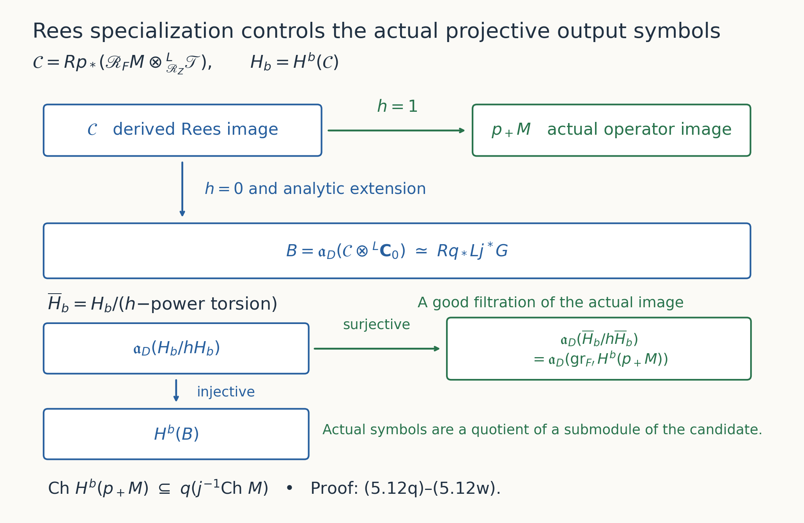
The upper comparisons are (5.12q) and (5.12s). The lower injection is (5.12w), and its quotient is the actual good output symbol module constructed in (5.12v), after removing locally uniform power torsion. The displayed analytic extension \(\mathfrak a_D\) is exact. This records a subquotient, rather than equality of the candidate and actual output symbols. The new strict segment uses \(s=3d+2\) and the cone bound (5.12p); the earlier unfiltered \(s=3d+1\) provider remains unchanged. The reproducible drawing source supplies the original CC0 diagram.
Algebraic SNC boundary factors and every curve pullback
Theorem 5.13. Let \(P\) be smooth proper, let \(D_P\) be a reduced SNC divisor with smooth components, and let \(E\) be any finite-rank curve-regular connection on \(P\setminus D_P\). Its normalized algebraic logarithmic extension \(\bar E\) satisfies: \(\bar E(*D_P)\) is algebraic regular holonomic, every boundary simple factor is regular, and the same holds on every algebraic open \(Y\subset P\). For every algebraic map \(k:C\to Y\) from a smooth algebraic curve, the derived inverse image of this meromorphic module is regular holonomic. Arbitrary rank, Jordan blocks, tangency multiplicities, constant curves and curves lying in a boundary intersection are included.
We prove regularity in the algebraic composition-factor sense, including infinity. The proof extracts a coherent logarithmic lattice on each possible support with its intrinsic conormal determinant, then uses the already proved connection divisorial criterion. The inverse image calculation is explicit; it does not assume the general singular curve criterion.
All varieties below are smooth separated finite-type complex algebraic varieties. We use left differential-operator modules, the order filtration, and the programme convention \[ f^!K=Lf_{\mathcal O}^*K[\dim X-\dim Y] \quad(f:X\longrightarrow Y). \tag{5.13a} \] Regularity of a connection means regularity on every smooth algebraic curve, at every point of the curve's smooth complete model, including infinity. Regular holonomicity means that every simple factor is an affine minimal extension of an irreducible curve-regular connection. These are the definitions fixed at the beginning of this section.
The exact earlier proofs are Theorem 5.1, Proposition 5.2.2, Lemma 5.2.3, Theorem 5.2, Lemma 1.0 and Theorem 1.1 of this lesson; PBW, Theorems 3.2 and 4.1; characteristic subquotients, Theorem 4.1, and the zero-section criterion, Proposition 6.1; finite connections, Theorem 3.1; Kashiwara’s equivalence and determinant inverse, Theorem 3.1; generic connections and finite length, Theorems 2.1–2.2; and localization, Proposition 1.1, minimal-extension uniqueness, Theorem 4.1, and simple-factor classification, Theorem 5.1. No general four-map or singular curve-test statement is used.
Free human source: Bernstein, Algebraic theory of D-modules, printed pp. 31–33, especially the first step of the proof of Main Theorem B. The complete algebraic boundary-factor argument is supplied below. No Riemann–Hilbert statement or regularity-preservation theorem is an input.
Three elementary permanence facts
Lemma 5.13.1.
- Regular holonomic modules form a Serre subcategory, and bounded complexes with regular holonomic cohomology form a triangulated subcategory.
- Restriction to an arbitrary algebraic open preserves regular holonomicity.
- If \(i:Z\hookrightarrow X\) is a smooth closed embedding, Kashiwara's exact equivalence restricts to an equivalence between regular holonomic modules on \(Z\) and regular holonomic modules on \(X\) supported on \(Z\). The same assertion holds for bounded complexes with supported cohomology.
Proof. For (1), intersect a composition series with a submodule. Each resulting successive quotient is zero or the corresponding simple factor. Quotient filtrations give the same assertion for quotients. Concatenating a composition series of a submodule with the inverse images of one in the quotient proves the extension assertion. A long cohomology sequence is assembled from kernels, images, cokernels and extensions, so proves the assertion about triangles.
For (2), consider a simple regular module \(S=j_{!*}E\), with \(j:U\hookrightarrow X\) affine and \(E\) irreducible and curve regular. On an open \(V\subset X\), its restriction is zero or the minimal extension from \(U\cap V\): restrict the canonical map defining the minimal extension, or apply its no-boundary uniqueness theorem. Restriction is exact and commutes with the transfers and the boundary map, so it commutes with its degree-zero image. The inclusion \(U\cap V\hookrightarrow V\) is the base change of \(j\), hence affine. If it is nonempty, the connection \(E|_{U\cap V}\) remains irreducible: a proper connection subobject there extends by the graph-closure Lemma 5.2.3, or its minimal extension gives a proper submodule of \(S\). It remains curve regular, because a curve mapping to this open also maps to \(U\). Thus the restriction is simple regular. Apply restriction to a composition series.
For (3), the exact closed direct image takes simple objects to simple objects. If \(S=j_{!*}E\) on \(Z\), its image is \((ij)_{!*}E\). Indeed, both restriction to \(U\) and boundary-supported subobjects and quotients are identified by the supported equivalence; minimal-extension uniqueness gives the asserted identification. The composite of two affine maps is affine. Conversely, if a simple \(i_*S\) has a regular presentation \(j_{!*}E\) on \(X\), the closure of the presenting stratum is its support, which lies in \(Z\). The stratum and its reduced locally closed immersion therefore factor through \(Z\). Its immersion into \(Z\) is the base change of the immersion into \(X\), hence affine. Kashiwara's inverse and the same uniqueness argument give a regular presentation of \(S\). Exactness transports composition series in both directions. On supported bounded complexes, the earlier Kashiwara derived equivalence is exact on each cohomology module; applying the module assertion in each degree proves (3). \(\square\)
The inverse assertion in (3) applies only to a complex already supported on \(Z\). It makes no assertion here about \(i^!K\) for a general regular complex on \(X\).
Algebraic finite logarithmic hulls
Let \(P\) be smooth proper, let \(D=\bigcup_{a=1}^sD_a\) be a reduced SNC divisor with globally smooth components, and put \(U=P\setminus D\). Let \(E\) be a curve-regular connection on \(U\), of any finite rank. Theorem 5.1 gives its normalized algebraic logarithmic extension \(\bar E\) on \(P\). Put \[ M=\bar E(*D)=\bigcup_{m\geq0}\bar E(mD). \tag{5.13b} \] Write \(\mathscr L_P\) for the algebra generated by \(\mathcal O_P\) and the vector fields preserving the ideals of all the components \(D_a\). In an adapted étale coordinate chart it is generated by \[ z_1\partial_{z_1},\ldots,z_k\partial_{z_k}, \partial_{w_1},\ldots,\partial_{w_{n-k}}. \tag{5.13c} \] Every \(\bar E(mD)\) is finite over \(\mathcal O_P\) and stable under \(\mathscr L_P\). This follows directly from the logarithmic Leibniz rule: acting on \((z_1\cdots z_k)^{-m}\) adds the integral residue shift \(-m\) in each normal direction and does not increase its pole order.
Lemma 5.13.2 (subquotient hulls). Every differential-operator subquotient \(F=A/B\) of \(M\) is a union of \(\mathcal O_P\)-coherent \(\mathscr L_P\)-stable subsheaves.
Proof. Define \[ L_m=\operatorname{im}\bigl(A\cap\bar E(mD)\longrightarrow A/B\bigr). \tag{5.13d} \] The intersection is coherent over \(\mathcal O_P\), since on an affine chart it is a submodule of a finite module over a Noetherian ring. Intersections and images commute with localization, so these modules define the stated coherent subsheaves. Both \(A\) and \(\bar E(mD)\) are stable under \(\mathscr L_P\); hence so are their intersection and its image. Every local section of \(A\) has a locally finite pole order in (5.13b), so belongs locally to one of the intersections. Thus \(\bigcup_m L_m=F\). \(\square\)
The possible supports of boundary factors
Lemma 5.13.3. The characteristic support of \(M\), and of each of its differential-operator subquotients, lies in the union of the conormals to the SNC intersections. Every nonzero simple factor of \(M\) has support equal to one connected component \(Z\) of an intersection \(D_I=\bigcap_{i\in I}D_i\), with \(I=\varnothing\) allowed. On \[ S_I=Z\setminus\bigcup_{j\notin I}(D_j\cap Z), \tag{5.13e} \] its Kashiwara inverse is a nonsingular finite-rank connection.
Proof. We give an algebraic order-filtration argument; an analytic constant-residue gauge is unnecessary. The finite lattice \(F_0M=\bar E(D)\) generates \(M\) as a differential-operator module. To see this, choose a logarithmic frame as a row \(e\) on an adapted étale chart, and write its normal logarithmic matrices as \(A_i\), so that \(z_i\nabla_{\partial_{z_i}}e=eA_i\). For a constant coefficient column \(v\) and \(a_i\geq1\), \[ \partial_{z_i}(z^{-a}ev) =z^{-(a+\mathbf e_i)}e(A_i-a_iI)v. \tag{5.13f} \] At \(z_i=0\) the matrix on the right is invertible: all residue eigenvalues have real parts in \([0,1)\), whereas \(a_i\) is a positive integer. Its inverse exists in the algebraic local ring. Away from \(z_i=0\), multiplication by \(z_i^{-1}\) itself is allowed. Starting with \(a=(1,\ldots,1)\), these local statements inductively generate each lattice with any prescribed finite pole orders, and hence (5.13b). This is a sheaf-local argument for each finite multi-index; it does not assert that one algebraic affine neighborhood inverts infinitely many determinants simultaneously.
Set \(F_pM=\mathcal D_{P,\leq p}F_0M\) for \(p\geq0\), with zero negative terms. Each term is coherent over \(\mathcal O_P\); locally it is the image of a finite operator module tensored with a finite lattice, inside the finite lattice \(\bar E((p+1)D)\). PBW and (5.13f) show exhaustivity and that this is a good generated filtration.
Each operator in (5.13c) preserves \(F_0M\). Commuting it past a normally ordered derivative monomial of order \(p\) leaves an operator of order at most \(p\): specifically, \[ [z_i\partial_{z_i},\partial_z^a\partial_w^b] =-a_i\partial_z^a\partial_w^b, \qquad [\partial_{w_j},\partial_z^a\partial_w^b]=0, \tag{5.13g} \] and differentiation of a coefficient does not increase its order. These operators therefore preserve every \(F_pM\). Their first-order symbols consequently annihilate \(\operatorname{gr}_F M\), because their actions into \(F_{p+1}/F_p\) are zero. In cotangent coordinates this gives \[ \operatorname{Ch}(M)\subset V(z_1\xi_1,\ldots,z_k\xi_k,\eta_1,\ldots,\eta_{n-k}) =\bigcup_{J\subset\{1,\ldots,k\}}T^*_{D_J}P. \tag{5.13h} \] The last equality is set-theoretic: at each point, choose the indices for which the normal coordinate is zero; for every remaining index its covector coefficient must vanish. Each displayed component has dimension \(n\). Localization holonomicity and the standard strict induced good filtrations give the same characteristic-support inclusion for every subquotient. In detail, the induced graded submodule and quotient are finite over the Noetherian graded operator ring, so are good after finitely many degree shifts; the exact graded sequence proves the inclusion.
Let \(F\) be a nonzero simple factor, with irreducible support \(W\). At a general point of \(W\), exactly one SNC stratum \(S_I\) contains that point. The earlier simple-factor classification and Kashiwara calculation give the conormal of the smooth general part of \(W\) as a characteristic component of dimension \(n\). Formula (5.13h) restricts its normal fiber to the span of the \(|I|\) normals of the stratum. Hence \[ n\leq\dim W+|I|\leq\dim Z+|I|=n. \tag{5.13i} \] Thus \(\dim W=\dim Z\), and the closed irreducible support is the entire component \(Z\) of \(D_I\). This dimension argument is applied at a general point of \(W\); it does not infer a support from a nongeneric characteristic fiber.
On \(S_I\), the only cotangent directions allowed by (5.13h) are the normals to \(Z\). Kashiwara's inverse therefore has characteristic variety contained in its zero section. Such a coherent differential-operator module is \(\mathcal O\)-coherent: in a finite good graded presentation, the ideal generated by the positive-degree vector symbols has a power annihilating the graded module, so only finitely many symbol monomials are needed as structure-sheaf generators. Lifting those finitely many graded generators gives structure-sheaf generators of the original module by induction down its filtration. The earlier coherent-connection theorem makes it a finite-rank nonsingular connection. \(\square\)
In (5.13e), each \(Z\) is smooth and proper, and its remaining boundary is SNC. Empty intersections contribute nothing. The empty subset contributes the open stratum \(U\).
Extracting a logarithmic lattice with the correct determinant
Lemma 5.13.4 (normal extraction). Let \(F\) be a simple factor of \(M\), supported on the component \(Z\) from Lemma 5.13.3, and let \(Q\) be its Kashiwara inverse on \(Z\). Then the connection \(H=Q|_{S_I}\) is curve regular, including infinity.
Proof. Let \(\mathcal I\) be the ideal of \(Z\). The intrinsic Kashiwara inverse has underlying structure-sheaf module \[ Q=\det(\mathcal I/\mathcal I^2)\otimes \operatorname{ann}_{\mathcal I}F. \tag{5.13j} \] The determinant factor cannot be dropped. Apply Lemma 5.13.2 and put \[ \begin{aligned} A_m&=\operatorname{ann}_{\mathcal I}L_m,\\ Q_m&=\det(\mathcal I/\mathcal I^2)\otimes A_m. \end{aligned} \tag{5.13k} \] The annihilator of the finitely generated ideal in a coherent module is coherent, so each \(Q_m\) is finite over \(\mathcal O_Z\); and \(\bigcup_mQ_m=Q\).
We check its logarithmic stability, including the twist. Work in the adapted coordinates \(Z=(z_1=\cdots=z_k=0)\), and write \(\nu=[z_1]\wedge\cdots\wedge[z_k]\) for a frame of the determinant in (5.13j). A logarithmic vector field \(\xi\) on \(Z\), along its remaining SNC boundary, has a local lift \(\widetilde\xi\) to a logarithmic vector field on \(P\) preserving each selected normal divisor. Write \(\widetilde\xi z_i=a_i z_i\). The induced action is \[ \begin{aligned} \nabla^Q_\xi(\nu\otimes v) &=\nu\otimes\left(\widetilde\xi v+\sum_{i=1}^k a_i v\right),\\ &\qquad v\in\operatorname{ann}_{\mathcal I}F. \end{aligned} \tag{5.13l} \] Indeed the lift acts on the conormal determinant by \(\sum_i a_i\). It preserves \(\operatorname{ann}_{\mathcal I}F\), since \(z_i\widetilde\xi v=\widetilde\xi(z_iv)-a_iz_iv=0\).
The formula is independent of the lift. In a difference of two lifts, the terms with nonzero restriction in normal derivative directions are \(\sum_i z_i b_i\partial_{z_i}\). On an annihilated vector, \[ z_i\partial_{z_i}v=-v, \tag{5.13m} \] by \([\partial_{z_i},z_i]=1\); this contributes \(-\sum_i b_i v\), canceled by the determinant contribution \(+\sum_i b_iv\). Terms with coefficients in \(\mathcal I\) in the tangential directions act by zero on an annihilated vector. Thus (5.13l) is precisely the earlier intrinsic supported inverse. A lift preserving all divisors exists locally by lifting its coefficient functions in the adapted étale chart; these are exactly the logarithmic generators (5.13c). Coordinate changes give the conormal determinant transition and the Leibniz transformation, so the calculation glues.
Since \(L_m\) is stable under every such lift, (5.13l) preserves \(Q_m\). Put \[ B_Z=\bigcup_{j\notin I}(D_j\cap Z). \] The complement immersion \(h:S_I\hookrightarrow Z\) is affine: locally its boundary is a single nonzero divisor equation, so its complement is a principal affine open; affineness of a morphism is local on its target. Underlying localization gives \[ Q(*B_Z)=h_*H. \tag{5.13n} \] This is torsion free as an \(\mathcal O_Z\)-module, since a section of a vector bundle on a dense open of the integral smooth \(Z\) cannot be killed by a nonzero regular function. The images \[ \widetilde Q_m= \operatorname{im}(Q_m\longrightarrow Q(*B_Z)) \tag{5.13o} \] are coherent torsion-free logarithmically stable modules. Their union has generic fiber \(H_{\mathbf C(Z)}\). Choose finitely many vectors spanning that fiber and then one index \(m\) containing all of them; the hull \(\widetilde Q_m\) has full generic rank.
At the generic point of any component of \(B_Z\), its stalk is a finite torsion-free module of full rank over the transverse DVR. It is therefore a full lattice, by Lemma 1.0. The generator \(t\partial_t\) of the logarithmic normal field preserves it, by (5.13l). It supplies a regular singular lattice for the transverse differential module. This proves regularity at every boundary divisor of the smooth proper SNC compactification \(Z\) of \(S_I\).
Apply the already proved connection divisorial criterion, Theorem 5.1, to the nonsingular algebraic connection \(H\) on \(S_I\). It makes \(H\) regular on every algebraic curve and at every completion point. In particular it tests curves lying in deeper boundary intersections after their own compactification; these are included by that earlier theorem, rather than omitted in the transverse DVR argument. \(\square\)
For \(I=\varnothing\), (5.13j) has no determinant twist, and the proof is the same. For a zero-dimensional \(Z\), there are no boundary divisors and the connection is a finite-dimensional vector space; the zero-rank case uses the zero lattice. No diagonalization, splitting of residue eigenspaces, or semisimplicity assumption is used in (5.13j)–(5.13o).
The full algebraic SNC extension theorem
Conclusion of Theorem 5.13. Let \((P,D_P)\) be any smooth proper SNC pair, let \(E\) be any finite-rank curve-regular connection on \(U=P\setminus D_P\), and let \(\bar E\) be its normalized algebraic logarithmic extension. Then \(\bar E(*D_P)\) is algebraic regular holonomic. The same conclusion holds on every algebraic open \(Y\subset P\) for the affine open direct image from \(V=Y\cap U\), with \(D=D_P\cap Y\): \[ j_*E=E(*D),\qquad j:V\hookrightarrow Y, \tag{5.13p} \] is an algebraic regular holonomic module. All its boundary simple factors, including factors on arbitrary nonempty SNC intersections, are regular. Every connection factor and every point factor is retained.
Proof for the proper pair. A simple factor \(F\) of \(M\) has the support and nonsingular connection \(H\) of Lemma 5.13.3. The connection is regular by Lemma 5.13.4. Its restriction to \(S_I\) is irreducible: the earlier simple-factor classification makes the restriction to some dense open irreducible; a connection subobject on \(S_I\) would restrict to one there, and a nonzero connection or quotient has positive generic rank. Thus it is either zero or the entire connection. Simplicity of \(F\) gives no nonzero submodule or quotient supported on the omitted boundary. Minimal-extension uniqueness gives \[ F\simeq (S_I\hookrightarrow P)_{!*}H. \tag{5.13q} \] The presenting immersion is affine: it is the composite of the affine complement immersion \(S_I\hookrightarrow Z\) and the closed immersion \(Z\hookrightarrow P\). Thus (5.13q) is exactly a regular presentation under the course definition. Every simple factor has this property, so \(M\) is regular holonomic. This proof establishes algebraic regularity, including infinity, rather than merely the analytic filtration condition of Theorem 5.3.
Restriction to an arbitrary open of this pair. The restriction of \(\bar E(*D_P)\) to \(Y\) is exactly \(j_*(E|_V)\): its local boundary equation is the restriction of that of \(D_P\), and localization sheafifies the given connection on its complement. Lemma 5.13.1(2) proves that the restriction is regular holonomic. The localization is concentrated in degree zero because \(j\) is affine and its transfer is localization. \(\square\)
The starting data are a proper SNC pair and its open restrictions. Theorem 5.1 supplies such proper SNC compactifications for regular connections. No stronger assertion about preserving a pre-existing SNC divisor during compactification is used.
Every algebraic curve map tests an SNC meromorphic extension
Corollary 5.13.5. For \(M=j_*(E|_V)\) on \(Y\) as in Theorem 5.13 and every algebraic map \(k:C\to Y\) from a smooth algebraic curve, the bounded holonomic complex \(k^!M\) is regular. This includes \(Y=P\). The map need not be an immersion, noncharacteristic, dominant onto its image, or transverse to \(D\).
Proof. Work on a connected component of \(C\), which is integral, and on a connected component of \(Y\). Locally \(M\) is a finite locally free logarithmic lattice tensored with \(\mathcal O_Y[1/q]\), where \(q\) is a local equation for \(D\); hence it is flat over \(\mathcal O_Y\). This flatness is intrinsic, since localizations are flat and the lattice is locally free. Consequently the transfer formula (5.13a) has no higher structure-sheaf Tor terms: \[ k^!M\simeq k_{\mathcal O}^*M[1-\dim Y]. \tag{5.13r} \] If \(k(C)\subset D\), the inverse image is zero. At each point, some boundary equation pulled back to the integral curve is identically zero; the localization tensor inverts that zero and is the zero module. This covers constant maps into the boundary and maps lying in any deeper SNC intersection.
Otherwise \(T=k^{-1}D\) is finite, and \(W=C\setminus T\) is dense. On \(W\), (5.13r) is the usual flat-bundle pullback \((k|_W)^*E\). It is curve regular, including infinity, because every curve mapping to \(W\) composes with \(k|_W\) to a curve mapping to \(V\). In particular its own identity map supplies the logarithmic lattice at every point of the complete model of \(W\). Across \(T\), (5.13r) is its meromorphic localization; its operator action is the chain-rule pullback connection. This follows in a local logarithmic frame from \[ k^*(A_i\,d\log z_i)= k^*A_i\left(m_i\,\frac{dt}{t}+\frac{du_i}{u_i}\right) \quad\text{if }k^*z_i=t^{m_i}u_i, \tag{5.13s} \] where \(m_i\geq0\) and \(u_i\) is a unit. Thus all tangency multiplicities, residues and nilpotent parts are retained.
For clarity, a holonomic module on a smooth curve with a regular generic connection is regular holonomic under the composition-factor definition. Its point-supported simple factors are the point delta modules, regular presentations from points. Every full-support simple factor restricts to a subquotient of the generic connection on a common dense open; this is a regular connection by Proposition 5.2.2. Its presenting open is affine (the complement is a finite divisor), and minimal-extension uniqueness gives its regular presentation. There are no other supports on a curve. This proves regularity of the meromorphic localization in (5.13r). The fixed dimension shift preserves regularity, and the zero case was included. \(\square\)
The logarithmic frame used for the flatness calculation exists on \(Y\) by the proper-pair construction of Theorem 5.13; equivalently it is the restriction of the normalized lattice on \(P\). At infinity of \(C\), regularity is supplied by the intrinsic regularity of \((k|_W)^*E\), even when \(k\) does not extend as a map to \(Y\). Equation (5.13s) is a local check at points of \(C\), and is not substituted for that infinity assertion.
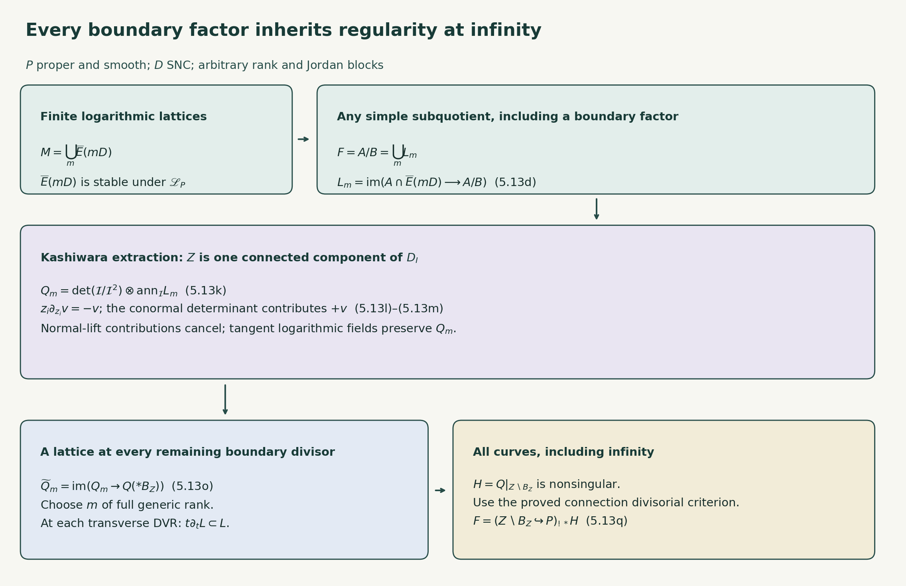
Figure. The upper route is the actual subquotient-hull construction (5.13d). The middle row shows the sign cancellation (5.13l)–(5.13m) that makes the intrinsic supported inverse independent of a normal lift. The lower row is the full-rank DVR lattice (5.13o), followed by the previously proved connection divisorial criterion. The figure records a proof mechanism, not a splitting of the subquotient or a decomposition of the logarithmic connection. The reproducible drawing source supplies the original CC0 figure.
Arbitrary inverse transfer and singular supported graph base change
Dimension shifts are taken componentwise. A smooth finite-type variety has finitely many disjoint open-and-closed smooth integral components, each of pure dimension. A connected source maps into one target component. Finite component sums extend all statements below to varieties whose component dimensions differ, without assigning a single incorrect global dimension.
Theorem 5.13 is used with its proved scope: every proper smooth SNC pair, every boundary simple factor of its meromorphic extension and every open restriction of that pair.
The exact earlier proofs are inverse transfer and composition, Proposition 1.1 and Theorem 2.1; supported localization, product base change and absolute Spencer transfer, Lemmas 1.1 and 3.3 and Theorem 2.1; and the PBW, Kashiwara and holonomic proofs linked in Theorem 5.13. The finite Čech argument below extends direct composition to every smooth separated finite-type variety. Theorem 5.6 supplies full generic Gauss–Manin regularity.
The inverse transfer for every map
Let \((P,D)\) be any smooth proper SNC pair over \(\mathbb C\), let \(E\) be any finite-rank curve-regular connection on \(U=P\setminus D\), and let \(\bar E\) be its normalized logarithmic extension. Put \(M=\bar E(*D)\). Let \(f:Y\to P\) be any map from a smooth separated finite-type variety. Work componentwise, so \(P\) and \(Y\) have pure dimensions \(n\) and \(d\).
Theorem 5.14.1. On each connected component of \(Y\) whose image lies in \(D\), \(f^!M=0\). On every other component, \(B=f^*D\) is an effective Cartier divisor, allowed to have arbitrary multiplicities and singular reduced support, and \[ \begin{gathered} f^!M\simeq N_f[d-n],\\ N_f=(f^*\bar E)(*B). \end{gathered} \tag{5.14a} \] The only possible nonzero cohomology is \(H^{n-d}(f^!M)=N_f\). The connection on the localization is the actual inverse-transfer connection. If locally \[ \nabla^{\bar E}=d+\sum_i A_i\,\frac{dz_i}{z_i} +\sum_j C_j\,dw_j, \] then, on the localization where the expressions are defined, \[ \begin{gathered} \nabla^{N_f}=d+\sum_i f^*A_i\,\frac{dh_i}{h_i}\\ +\sum_j f^*C_j\,d(f^*w_j),\\ h_i=f^*z_i. \end{gathered} \tag{5.14b} \] The unshifted module \(N_f\) is \(\mathcal O_Y\)-flat and holonomic. For every map \(k:C\to Y\) from a smooth algebraic curve, \(k^!N_f\) is a regular holonomic bounded complex, including every point at infinity. This is a proved curve-testing assertion; regularity of \(N_f\) under the composition-factor definition is not inferred from it.
Proof. On a logarithmic frame chart, \(M\) is \(\bar E\otimes\mathcal O_P[1/q]\), where \(q\) is a local equation for the Cartier divisor \(D\). It is flat over \(\mathcal O_P\): the lattice is locally free and localization is flat. The actual transfer/structure-sheaf comparison in the inverse-image provider therefore gives \[ \begin{gathered} \mathcal D_{Y\to P}\otimes^L_{f^{-1}\mathcal D_P}f^{-1}M\\ \simeq\mathcal O_Y\otimes_{f^{-1}\mathcal O_P}f^{-1}M. \end{gathered} \tag{5.14c} \] This conclusion does not require \(f\) to be flat. Tensor associativity and the universal property of localization identify the right side with \(f^*\bar E\otimes\mathcal O_Y[1/f^*q]\).
If the image of an integral component of \(Y\) is contained in the divisor, \(f^*q=0\) on that component, and this tensor is zero. Otherwise a nonzero \(f^*q\) is a nonzerodivisor in each smooth local domain. Its local equations differ by units and define the effective Cartier divisor \(B\). Localization is independent of its multiplicities, but the differential in (5.14b) retains them. The pulled-back lattice is locally free and its localization is \(\mathcal O_Y\)-flat. Adding the programme dimension shift proves (5.14a), including the degree assertion.
The source's chain-rule formula identifies the action on a pulled-back coefficient with the ordinary differential of the pulled-back functions; applied to the logarithmic frame, it is exactly (5.14b). The coefficient-derivative term is included, so this is a balanced connection formula and not tensor pullback of a non-\(\mathcal O\)-linear connection map. Its flatness is the already proved Lie-bracket calculation for the transfer. The old arbitrary holonomic inverse-image theorem applies to \(M\), which is holonomic by Theorem 5.13, and therefore proves holonomicity of \(N_f\). No regularity-preservation theorem is used.
Now let \(k:C\to Y\), with \(C\) connected. If \(f k(C)\subset D\), its pullback is zero by the same localization calculation. Otherwise the properness of \(P\) extends \(f k\) uniquely to \(\bar h:\bar C\to P\), where \(\bar C\) is the smooth complete model of \(C\). The extension uses the earlier valuative criterion at each curve DVR, followed by uniqueness from separatedness. Near each point \(p\in\bar C\), choose the local boundary equations through \(\bar h(p)\). Since the curve is not contained in the boundary, \[ \begin{gathered} \bar h^*z_i=t^{m_i}u_i,\\ m_i\geq0,\quad u_i\in\mathcal O_{\bar C,p}^{\times},\\ \frac{d(\bar h^*z_i)}{\bar h^*z_i}\\ =m_i\frac{dt}{t}+\frac{du_i}{u_i}. \end{gathered} \tag{5.14d} \] Thus the full lattice \(\bar h^*\bar E\) is logarithmic at \(p\); its residue is \(\sum_i m_i\bar h^*A_i(p)\). There is no assertion that this sum remains normalized. All multiplicities and nilpotent parts are present. This proves regularity of the generic pullback connection at every point, including infinity, by the one-variable lattice criterion. Its meromorphic localization on \(C\) is regular holonomic by the curve argument in 5.13.5: full-support factors inherit a regular connection and point factors are delta modules. Since \(N_f\) is flat, its own extraordinary pullback has the single shift \([1-d]\). This completes the curve-testing assertion. \(\square\)
Functoriality with all degrees. For \(g:Z\to Y\), the flatness of \(N_f\) gives \[ \begin{gathered} N_{f,g}=(g^*f^*\bar E)(*g^*B),\\ g^!N_f=N_{f,g}[\dim Z-d]. \end{gathered} \tag{5.14e} \] with zero again on boundary-contained components. Applied to \(N_f[d-n]\), the total shift is \((\dim Z-d)+(d-n)=\dim Z-n\), the shift of \((fg)^!M\). The chain-rule transfer composition identifies these localization maps and their operator actions. This includes nonflat \(g\), singular \(g^{-1}B\), and every pure-dimensional component separately.
The calculation here proves curve testing of the singular meromorphic extension. Corollary 5.17.1 below supplies its regular simple-factor reconstruction after the full singular curve criterion has been proved.
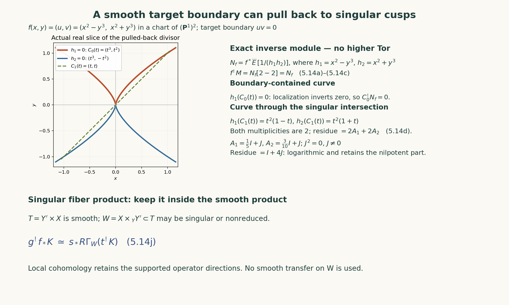
Figure. The upper plot is the actual real slice of the divisor pulled back by \(f(x,y)=(x^2-y^3,x^2+y^3)\) in the affine chart of \(P=(\mathbb P^1)^2\), whose SNC boundary contains zero and infinity in both factors. For the commuting local residues \(A_1=\frac15I+J\), \(A_2=\frac3{10}I+J\), with \(J=\left(\begin{smallmatrix}0&1\\0&0\end{smallmatrix}\right)\), the boundary-contained curve has zero inverse image, and the diagonal curve has residue \(I+4J\) at zero. This residue is logarithmic but is not normalized; the finite multiplicities and nilpotent parts are exactly (5.14d). The lower panel is the arbitrary-map formula (5.14j), proved below, and retains the singular fiber product only as a support inside a smooth product. The figure displays the actual transfer and curve tests. The later Corollary 5.17.1 supplies simple-factor reconstruction. The reproducible drawing source supplies the original CC0 figure.
Direct composition without quasi-projectivity
Lemma 5.14.2. Differential-operator direct image and its composition isomorphism exist on bounded quasi-coherent differential-operator complexes for every map of smooth separated finite-type varieties. For \(X\xrightarrow aY\xrightarrow bZ\), \[ (ba)_*K\simeq b_*a_*K, \tag{5.14f} \] naturally and associatively. This lemma concerns transfer, boundedness and composition; it asserts no regularity preservation.
Proof. Work on right modules for the tensor notation. Put \(T_a=\mathcal D_{X\to Y}\) and \(T_b=\mathcal D_{Y\to Z}\). Lemma 3.3 of the adjunctions lesson gives the augmented absolute Spencer resolution of \(T_a\), with terms \[ \begin{gathered} \mathcal D_X\otimes_{\mathcal O_X}\bigwedge^rT_X\\ \otimes_{\mathcal O_X}T_a,\\ \text{in degree }-r,\\ 0\leq r\leq\dim X. \end{gathered} \tag{5.14g} \] Its proof uses the bracket/Leibniz differential, PBW, the polynomial Koszul sequence, and descent in the finite order of the first operator factor. Its terms are flat as left \(\mathcal D_X\)-modules, because \(T_a\) is \(\mathcal O_X\)-flat. Hence it computes transfer tensor with an arbitrary right quasi-coherent module; the resulting terms are quasi-coherent over \(\mathcal O_X\), and the amplitude is bounded by \([-\dim X,0]\). A bounded input complex has the corresponding finite band.
On an affine open \(V\subset Y\), \(a^{-1}V\) is quasi-compact and separated, and therefore has a finite affine cover with affine intersections. The usual finite affine Čech complex of the transferred quasi-coherent terms computes their sheaf direct image and supplies a finite additional degree bound. This requires separated finite type, not quasi-projectivity or a global free resolution.
We check the interchange needed for composition locally on \(Y\). Shrink to a coordinate affine chart whose image under \(b\) lies in an operator-coordinate chart on \(Z\). PBW on that target chart makes \(T_b\) a locally free \(\mathcal O_Y\)-module with possibly infinitely many basis elements. The same absolute Spencer resolution (5.14g), now for \(T_b\) on \(Y\), is bounded; on this chart its terms are direct sums of free left \(\mathcal D_Y\)-modules. This uses the trivialized finite exterior bundles of \(T_Y\) and the PBW basis of \(T_b\), so avoids any global-dimension assertion for arbitrary infinitely generated modules.
For a free term \(\mathcal D_Y^{(I)}\), tensoring on either side of \[ \begin{gathered} C_a=A\otimes^L_{a^{-1}\mathcal D_Y}a^{-1}T_b,\\ Ra_{\mathrm{sh},*}A\otimes^L_{\mathcal D_Y}T_b\\ \longrightarrow Ra_{\mathrm{sh},*}C_a,\\ A=K\otimes^L_{\mathcal D_X}T_a. \end{gathered} \tag{5.14h} \] gives the same direct sum of the finite Čech model for \(Ra_{\mathrm{sh},*}A\). Sections of quasi-coherent sheaves on each affine intersection commute with these direct sums, and the cover is finite. Thus (5.14h) is an isomorphism for each free term and for the bounded Spencer total. It is a natural sheaf comparison and hence glues from these local coordinate charts. No claim about arbitrary sheaf pushforward commuting with infinite sums is needed.
Inverse transfer composition from the inverse-images lesson gives the derived identity \[ T_a\otimes^L_{a^{-1}\mathcal D_Y}a^{-1}T_b \simeq T_{ba}. \tag{5.14i} \] Its higher Tor vanishes because the underlying \(\mathcal O_Y\)-module of \(T_b\) is flat; its underived action is the chain rule. Substitute (5.14h) and (5.14i) in the two direct-image definitions and use composition of derived sheaf pushforward to obtain (5.14f). The bounded Spencer and finite Čech bands justify the totalizations. Tensor, chain-rule and pushforward composition are their actual associative maps, so the result is compatible with three maps. Side changing at \(X,Y,Z\) cancels at the middle variety and gives the left-module formula. \(\square\)
Base change through a possibly singular fiber product
Let \(f:X\to Y\) and \(g:Y'\to Y\) be arbitrary maps of smooth separated finite-type varieties. The scheme \(X\times_Y Y'\) may be singular or nonreduced. Use the smooth ambient product \[ \begin{gathered} T=Y'\times X,\\ t:T\to X,\qquad s:T\to Y',\\ F=\mathrm{id}_{Y'}\times f:T\to A,\\ A=Y'\times Y. \end{gathered} \] Let \(i:Y'\hookrightarrow A\) be the closed graph of \(g\), and let \(W=F^{-1}(i(Y'))\subset T\) be the closed fiber product locus. Local cohomology depends only on its closed support, so allows its given nonreduced structure.
Theorem 5.14 (supported graph formula). For every bounded holonomic \(K\) on \(X\), \[ g^!f_*K\simeq s_*R\Gamma_W(t^!K). \tag{5.14j} \] Here the supported complex is on the smooth variety \(T\). No smooth transfer formula is assigned to \(W\). All complexes in (5.14j) are bounded holonomic, and the comparison is natural.
Proof. The closed-support local cohomology on \(T\) is the finite augmented Čech localization complex for local generators of the ideal of \(W\). Each term is a finite localization of a bounded holonomic complex, so is bounded holonomic by the earlier localization and holonomicity results. This construction glues and gives the triangle \[ \begin{gathered} Q=R\Gamma_W(t^!K)\\ \longrightarrow t^!K\\ \longrightarrow j'_*j'^!(t^!K)\longrightarrow. \end{gathered} \tag{5.14k} \] where \(j':T\setminus W\hookrightarrow T\). A product inverse image preserves holonomicity, so all assertions here precede regularity.
Let \(r:A\to Y\) and \(\pi:A\to Y'\) be the projections. The product case of the already proved smooth-ambient base-change theorem is \(r^!f_*K\simeq F_*t^!K\). Since \(g=ri\), inverse composition gives \[ g^!f_*K\simeq i^!F_*t^!K. \tag{5.14l} \] Let \(j:A\setminus i(Y')\hookrightarrow A\). The restriction of \(F\) to \(T\setminus W\) maps into this complement, so composition identifies the last term of \(F_*\)(5.14k) with \(j_*H\) for a bounded holonomic complex \(H\) on that smooth open. The supported smooth graph calculation gives \(i^!j_*H=0\). Thus the map \(i^!F_*Q\to i^!F_*t^!K\) is an isomorphism.
The output \(F_*Q\) has cohomology supported on \(i(Y')\): its restriction to the complement is the direct image of the zero restriction of \(Q\). This open-restriction calculation follows either from transfer tensor and finite Čech sheaf pushforward, or from the open case of composition. Kashiwara's smooth supported equivalence therefore gives \[ F_*Q\simeq i_*i^!F_*Q. \tag{5.14m} \] Apply \(\pi_*\). Since \(\pi i=\mathrm{id}_{Y'}\), 5.14.2 identifies \(\pi_*F_*Q\simeq s_*Q\) and \(\pi_*i_*i^!F_*Q\simeq i^!F_*Q\). Combining this with (5.14l) and (5.14k) proves (5.14j). The maps are localization augmentations, the product comparison and the intrinsic supported counit. They are natural, not chosen identifications. Holonomicity and boundedness of the outputs use only the earlier arbitrary holonomic direct/inverse preservation and 5.14.2. \(\square\)
If \(W\) happens to be smooth, the earlier supported formula identifies \(R\Gamma_W t^!K\) with its closed direct image of the appropriate intrinsic inverse image, recovering the usual smooth-square formula with its shifts. For singular \(W\), (5.14j) is the usable replacement, with the operator directions retained.
Curve testing commutes with closed support
Lemma 5.14.3. For any algebraic map \(a:V\to T\) of smooth varieties and closed subset \(W\subset T\), \[ a^!R\Gamma_W K\simeq R\Gamma_{a^{-1}W}(a^!K). \tag{5.14n} \] Consequently, if every smooth-curve inverse image of a bounded holonomic \(K\) is regular, then the same holds for \(R\Gamma_W K\).
Proof. On an affine chart choose finitely many equations \(u_1,\ldots,u_l\) for \(W\). Derived pullback commutes with each localization: \[ \begin{gathered} La_{\mathcal O}^*(K[1/u])\\ \simeq(La_{\mathcal O}^*K)[1/a^*u]. \end{gathered} \tag{5.14o} \] Take a flat resolution of \(K\); termwise this is the universal tensor/localization identity, and flatness of localization justifies the derived comparison. The chain-rule action preserves the localization identity. The finite augmented Čech complex and the fixed dimension shift then prove (5.14n); refinements give the same augmentations, so it glues.
For a connected smooth curve \(C\), its inverse image of \(W\) is empty, the whole curve, or a finite closed subset. In the first case local cohomology is zero; in the second it is the original inverse complex. In the finite case every cohomology module is holonomic and supported on finitely many points, hence regular by Kashiwara and the point presentation. This proves the final assertion for every curve map, without asserting Serre closure of the curve-testing property on the original ambient variety. \(\square\)
A converse criterion for nonsingular cohomology on a smooth support
Lemma 5.14.4. Suppose \(i:Z\hookrightarrow X\) is an arbitrary smooth closed embedding, and \(L\in D_h^b(\mathcal D_Z)\) has finite-rank nonsingular connections as all its cohomology modules. Then \(i_*L\) is regular holonomic if and only if every smooth locally closed curve in \(X\) has regular extraordinary restriction of \(i_*L\). Equivalently, one may test every map from a smooth algebraic curve to \(X\).
Proof of the connection test. For a nonsingular connection \(A\) on a smooth variety, testing its pullback to smooth locally closed embedded curves suffices for the all-map definition. Given a nonconstant curve map \(k:C\to Z\), choose a dense smooth locally closed open \(B\) of its irreducible curve image. Its embedding in \(Z\) is one of the tests. On the dense open \(k^{-1}B\), the pullback is the pullback of the tested regular connection on \(B\). The map between function fields extends to a finite nonconstant map of smooth complete curve models. Pulling a stable logarithmic lattice through a ramification \(t=u^e v\), \(v\) a unit, gives a stable logarithmic lattice: its coefficient is multiplied by \(e\) and has the additional holomorphic term \(dv/v\), exactly as in (5.14d). This supplies regularity at every completion point. At a point of \(C\) omitted from \(k^{-1}B\), the full pullback connection on \(C\) is nonsingular and supplies its own lattice. Constant maps give a trivial finite-rank connection. This proves the all-map connection test, including infinity and arbitrary ramification.
On a bounded complex with flat cohomology, the finite hyper-Tor spectral sequence for structure-sheaf inverse image has only its zero Tor row. Thus, for \(k:C\to Z\), \[ \begin{gathered} H^q(k^!L)\\ =k^*H^{q+1-\dim Z}(L). \end{gathered} \tag{5.14p} \] The same formula follows from finitely many standard truncation triangles and flatness of their cohomology pieces; no abstract derived-category-of-the-heart identification is needed. Regularity of the curve complex therefore tests exactly those connection modules. The connection/regular-holonomic identification of Theorem 5.2 and the preceding embedded-curve argument prove the criterion for \(L\).
If \(i_*L\) passes the embedded-curve tests on \(X\), every smooth locally closed curve \(C\hookrightarrow Z\) also embeds locally closed in \(X\). Inverse composition and \(i^!i_*L=L\) identify its test with that of \(L\), so the proved connection criterion makes \(L\) regular. 5.13.1's exact supported equivalence then makes \(i_*L\) regular.
Conversely let \(L\) be regular and let \(h:C\to X\) be arbitrary. If \(h(C)\subset Z\), reducedness of the smooth curve makes the map factor through the reduced smooth closed subvariety \(Z\). Composition and supported Kashiwara identify \(h^!i_*L\) with the intrinsic curve inverse image of \(L\), regular by (5.14p). Otherwise \(h^{-1}Z\) is finite, and the earlier arbitrary holonomic inverse theorem makes \(h^!i_*L\) a bounded holonomic complex supported on those finitely many points. It is regular. This includes constant maps and nontransverse intersections. \(\square\)
This is a genuine converse on every smooth closed support with nonsingular cohomology; it does not assert a converse for an arbitrary singular extension or a complex with singular cohomology on that support.
The support-dimension reduction and low images
Lemma 5.14.5. For an SNC meromorphic module, image dimension at most one gives regular direct image. For higher image dimension, lower-support curve and direct-image theorems give its curve tests by the supported graph construction.
Let \(P\) be integral of dimension \(n\), let \(M=\bar E(*D)\) as in 5.14.1, and let \(f:P\to Y\) be arbitrary. For a nonconstant \(g:C\to Y\), 5.14 realizes the curve inverse image of \(f_*M\) as the direct image of \[ \begin{gathered} Q=R\Gamma_W(t^!M),\\ W\subset C\times P. \end{gathered} \tag{5.14q} \] The product complex \(t^!M\) is curve-tested by 5.14.1 and inverse composition. It is also regular: it is the open restriction of the SNC meromorphic bundle \(\mathcal O_{\bar C}\boxtimes\bar E\) on the proper pair \((\bar C\times P,(\bar C\setminus C)\times P+\bar C\times D)\), to which 5.13 applies. 5.14.3 makes \(Q\) curve-tested independently of its simple-factor regularity.
If \(\dim f(P)\geq2\), the locus \(f^{-1}(\overline{g(C)})\) is a proper closed subset of \(P\), of dimension at most \(n-1\). The projection \(W\to P\) is quasi-finite, since every fiber of a nonconstant algebraic curve map is finite. Hence \[ \begin{gathered} \dim\operatorname{Supp}Q\leq\dim W\\ \leq n-1. \end{gathered} \tag{5.14r} \] This is a dimension calculation on the actual possibly singular fiber product, not an assertion that it is a smooth variety. If the full converse curve criterion and regular direct-image preservation have already been proved for source supports of dimension less than \(n\), they apply in that order to \(Q\), and (5.14j) proves that \(g^!f_*M\) is regular. For a constant curve map, factor it through a point: holonomic inverse image at the point is a bounded finite-dimensional complex, and its pullback to the curve is a complex of trivial connections with the correct shift. Thus constant maps cause no induction increase.
If \(\dim f(P)\leq1\), \(f_*M\) is already regular without that conditional induction. Its support has dimension at most one. In dimension zero it has only point factors. In dimension one, choose a dense smooth curve open in its image. Write \(f_*M=(f|_U)_*E\) by 5.14.2 and affine localization. After shrinking the image curve, generic smoothness in characteristic zero makes \(f|_U\) smooth there; the elementary derivation/Jacobian proof used in Theorem 5.6 gives this shrink by removing the finitely many nondominating critical images. The full generic Gauss–Manin Theorem 5.6 then makes every generic cohomology connection regular, with its actual transfer action and shift. Every curve-support simple factor inherits a subquotient of one of these regular generic connections; every remaining simple factor has point support. Choose a further affine dense curve open for its presenting immersion and apply minimal-extension uniqueness. All these simple factors are regular under the definition, so every cohomology module is regular.
For image dimension at least two, this is the lower-support step used in the ordered induction below. Its same-dimensional converse is proved by Theorem 5.16.1 after the forward assertion at that dimension; curve testing is not assumed closed under arbitrary heart subquotients.
Dual SNC Spencer and every curve test
Let \((P,D)\) be any smooth proper SNC pair over \(\mathbb C\), with finitely many globally smooth components \(D_i\). Fix their order for exterior signs. Let \(a:U=P\setminus D\hookrightarrow P\), let \(E\) be any curve-regular finite-rank connection, and let \(\bar E\) be its normalized algebraic logarithmic extension, with residue real parts in \([0,1)\). Put \(M=a_*E=\bar E(*D)\). The dual connection has local normal residues \(-A_i^t\).
The exact earlier proofs are PBW and holonomic duality; the normalized logarithmic and constant-residue calculations in Theorems 5.0 and 5.3; the faithful-flat analytic local comparison linked there; Theorem 5.13; and the inverse-transfer convention of Proposition 1.1 in the inverse-images lesson. Analytic normalization verifies an algebraic presentation by faithful flatness. The proper-curve lattice argument below proves regularity at infinity.
Logarithmic induction and its dual
Write \(T_P(-\log D)\) for the locally free logarithmic tangent bundle and \(\mathscr L_P\) for its operator algebra. If \(L\) is a locally free logarithmic integrable connection, its induced module has the augmented logarithmic Spencer complex \[ \begin{gathered} \operatorname{Sp}_{\log}^{-r}(L)\\ =\mathcal D_P\otimes_{\mathcal O_P} \bigwedge^rT_P(-\log D)\\ \otimes_{\mathcal O_P}L,\qquad0\leq r\leq n,\\ n=\dim P. \end{gathered} \tag{5.15a} \] with multiplication-minus-connection and bracket differential. Its augmentation is to \(\mathcal D_P\otimes_{\mathscr L_P}L\).
Lemma 5.15.1. The complex (5.15a) resolves its augmented induced module in degree zero. In particular \[ M\simeq\mathcal D_P\otimes_{\mathscr L_P}\bar E(D). \tag{5.15b} \] Its dual is \[ \mathbb D_PM\simeq \mathcal D_P\otimes_{\mathscr L_P}\bar E^{\vee}. \tag{5.15c} \] Every statement retains the full connection matrices and their nilpotent parts.
Proof of exactness. On adapted étale coordinates \(z_1,\ldots,z_k,w_1,\ldots,w_{n-k}\), the logarithmic generators are \(\theta_i=z_i\partial_{z_i}\) and \(\partial_{w_j}\). Give the term in degree \(-r\) the order filtration shifted by \(r\). Its leading differential is the Koszul differential on \[ \begin{gathered} z_1\xi_1,\ldots,z_k\xi_k,\\ \eta_1,\ldots,\eta_{n-k} \quad\text{in }\mathcal O_P[\xi,\eta]. \end{gathered} \tag{5.15d} \] This is a regular sequence. Over the polynomial coordinate ring, after quotienting the preceding products, multiplication by the next independent coordinate \(z_i\), the new variable \(\xi_i\), or a new \(\eta_j\) is injective: the quotient has a monomial decomposition involving only the preceding coordinate pairs. Thus each new product is a nonzerodivisor. Tensoring its polynomial Koszul resolution through the flat étale coordinate algebra preserves exactness. Tensoring with the free coefficient bundle \(L\) does so as well. Subtract a lift of a leading graded boundary from a cycle and descend its finite order; the lower bound terminates the process. This proves exactness in negative degrees. The degree-zero relations are exactly the logarithmic tensor relations, because functions and the displayed logarithmic vector fields generate \(\mathscr L_P\). Hence the augmented module is as asserted. The intrinsic bracket differential makes the resolutions glue.
For \(L=\bar E(D)\), its local normal matrices are \(A_i-I\), and the generation proof 5.13.3 gives the natural surjection from this induced module to \(M\). It is injective as well. After analytic stalk extension, the proved normalized logarithmic local model changes the lattice by a holomorphic invertible matrix to the commuting constant-residue model. Its exact presentation is Theorem 5.3, equation (5.3j), whose relations are precisely \(\theta_i-(A_i-I)\) and the tangential connection relations. Thus the analytic extension of the surjection is an isomorphism. The analytic stalk ring is faithfully flat over the algebraic local ring; the underlying operator extension is its tensor extension by PBW. Faithfulness therefore kills the algebraic kernel. No analytic regularity theorem is being used to infer algebraic regularity.
Dualize (5.15a). Its terms are finite locally free over \(\mathcal D_P\), so it computes operator duality. Wedge pairing identifies the reversed exterior complex with the logarithmic Spencer complex for \[ \begin{gathered} L^\vee\otimes\bigl(\bigwedge^n\Omega_P^1(\log D)\bigr)\\ \otimes\omega_P^{-1}\\ =L^\vee\otimes\mathcal O_P(D). \end{gathered} \tag{5.15e} \] The degree reversal is canceled by the duality shift \([n]\). The density action in (5.15e) has normal logarithmic coefficient \(-1\) on the local frame \((z_1\cdots z_k)^{-1}\). Explicitly \(\theta_i^t=-\theta_i-1\), whereas \(\partial_{w_j}^t=-\partial_{w_j}\) in the coordinate volume. Thus a normal matrix \(R_i\) becomes \(-R_i^t-I\), and a tangential matrix becomes its negative transpose. These are exactly the connection and bracket terms in the paired Spencer differential. This coordinate verification on the generating vector fields, with Leibniz, verifies the full differential; the wedge and density pairing is intrinsic and hence glues.
In particular, the local source presentation has generators related by \(\theta_i-(A_i-I)\) and \(\partial_{w_j}-C_j\); its density-transposed presentation has the relations \(\theta_i+A_i^t\) and \(\partial_{w_j}+C_j^t\). The reversed exterior bases have the usual Koszul complement signs; wedge pairing fixes them, and multiplying a whole generator relation by \(-1\) does not change its quotient. Thus the sign calculation includes the scalar divergence term as well as the matrix transpose. The variable coefficient derivatives in higher wedges obey the same Leibniz rule; the curvature commutators vanish by integrability.
For \(L=\bar E(D)\), (5.15e) is \(\bar E^{\vee}\), and its normal matrices are \(-A_i^t\), since \(- (A_i-I)^t-I=-A_i^t\). Exactness of the new logarithmic Spencer complex proves (5.15c), in degree zero. For the curve argument below it is (5.15c) that is used; relabeling \(E^{\vee}\) gives all !-extensions. \(\square\)
A logarithmic lattice with residues in \([0,1)\) is generally not the lattice dual to the normalized lattice of \(E^{\vee}\). For every \(E\), write \(\bar F\) for the normalized lattice of \(F=E^{\vee}\), and use the exact formula \[ \begin{gathered} a_!E=\mathbb D_P(a_*F)\\ \simeq\mathcal D_P\otimes_{\mathscr L_P}\bar F^\vee. \end{gathered} \tag{5.15f} \] This keeps all exponents and avoids an invalid normalization claim. The proof and theorems below use (5.15c)/(5.15f) only.
Normal inverse image and the finite residue complex
Let \(H=\mathbb D_PM\), presented by (5.15c). Its lattice \(L=\bar E^{\vee}\) has normal matrices \(B_i=-A_i^t\), with eigenvalue real parts in \((-1,0]\). For an intersection component \(Z\) of \(D_I\), remove the other boundary components and call the resulting smooth stratum \(S\). Write \(c=|I|\), and write \(i:S\hookrightarrow P\setminus\bigcup_{j\notin I}D_j\) for its closed immersion.
Lemma 5.15.2. On \(S\), the cohomology connections of \(i^!H\) are the cohomology of the normal chain Koszul complex \[ \begin{gathered} K_I^{-r}=L|_S\otimes\bigwedge^r\mathbb C^I,\\ d=\operatorname{Koszul}((-B_i)_{i\in I}),\\ -B_i=A_i^t,\qquad0\leq r\leq c. \end{gathered} \tag{5.15g} \] shifted by \([-c]\). Thus the degrees are \(0,\ldots,c\). The full commuting matrices \(A_i^t\), including zero eigenvalues and Jordan blocks, are retained. On the proper \(Z\), the same residue complex on \(L|_Z\) has coherent cohomology with a logarithmic connection along the remaining boundary, and restricts to these intrinsic cohomology connections on \(S\).
Proof of the normal calculation. Resolve \(H\) by (5.15a) for \(L\), and tensor its terms with \(\mathcal O_S\). They are \(\mathcal O_P\)-flat because they are finite free operator terms with locally free coefficients. This computes \(Li_{\mathcal O}^*H\). Use PBW to put every normal derivative to the left of the tangential derivatives, and filter this tensor complex by its total normal derivative degree.
The differential preserves that filtration. Moving a coefficient matrix through a normal derivative only introduces terms of smaller normal degree. On the graded piece labeled by a normal multi-index \(b\in\mathbb N^I\), right multiplication by \(\theta_i\) gives \[ \partial_z^b\theta_i =\theta_i\partial_z^b+b_i\partial_z^b. \tag{5.15h} \] The first term vanishes after structure-sheaf tensor with \(\mathcal O_S\), since its left coefficient is \(z_i\). Consequently its normal differential is the Koszul operator \[ b_iI-B_i|_S=b_iI+A_i^t|_S. \tag{5.15i} \] The tangential differential is the tangential Spencer differential for \(L|_S\). Integrability makes the restricted residues commute and horizontal for that tangential connection, so these differentials commute with the required total-complex signs.
If \(b\ne0\), choose \(i\) with \(b_i\geq1\). The matrix in (5.15i) is invertible at every stalk, because every eigenvalue of \(A_i\) has real part in \([0,1)\). Its inverse is horizontal as well. Exterior multiplication by the corresponding basis vector, composed with this inverse and its Koszul sign, contracts that normal Koszul factor and commutes with the tangential differential. Hence the entire positive-normal-degree graded piece is acyclic. Every section has finite normal degree. Descending its leading degree proves that the quotient by the degree-zero subcomplex is acyclic.
That degree-zero subcomplex has exactly the normal Koszul differential \(-B_i\) and the tangential Spencer resolution. Resolving its tangential terms leaves (5.15g). Finally the programme closed inverse image appends \([-c]\), placing its cohomology in degrees \(0,\ldots,c\). This is an algebraic filtration calculation; no constant-residue gauge is used for this calculation.
The connection and its boundary lattice. The normal residue endomorphisms are canonical endomorphisms of \(L|_Z\), and commute by integrability, so (5.15g) defines a finite complex of algebraic vector bundles on all of \(Z\). A logarithmic tangent field on \(Z\) lifts locally to a logarithmic field on \(P\) preserving the components \(D_i\), \(i\in I\). Acting on \(L|_Z\) with this lift commutes with the residue differential. Two lifts differ, after restriction, by \(\sum_i u_i\theta_i\); their coefficient actions differ by \(\sum_i u_iB_i\). Multiplication by \(B_i\) is null-homotopic on the residue Koszul complex, using the corresponding exterior multiplication or contraction with its sign. Thus the induced action on its cohomology is independent of the lift. The Leibniz rule is inherited; the bracket/curvature error is likewise a normal residue action and hence null-homotopic. Its cohomology consequently has an intrinsic integrable logarithmic connection.
On \(S\) this is an ordinary coherent connection, hence a finite-rank bundle by the earlier coherent-connection theorem. The normal-degree-zero comparison above intertwines its tangential action with the actual inverse-transfer action: tangential left operators pass through the normal PBW terms, and the tangential Spencer augmentation leaves precisely the coefficient connection. The lift ambiguity is the just-computed residue homotopy. This identifies the connections, not only their vector spaces.
At the remaining boundary on \(Z\), the cohomology of the finite residue-bundle complex remains coherent and logarithmically stable. Torsion may occur there; no assertion of local freeness at that boundary is needed. These coherent cohomology modules are the boundary lattices used in 5.15. \(\square\)
Every curve inverse image of the dual SNC module is regular
Theorem 5.15. For every algebraic map \(k:C\to P\) from a smooth algebraic curve, \(k^!\mathbb D_PM\) is a regular holonomic bounded complex. The same holds on every open restriction of the proper pair and for every SNC !-extension (5.15f). The curve can lie entirely in any intersection component, be constant, or have arbitrary tangencies.
Proof. Work on a connected curve. Let \(I\) consist of those global boundary components containing its entire image. If \(I\) is empty, on a dense open of \(C\) the inverse image is the pullback of the regular connection \(E^{\vee}\), with the fixed dimension shift; its generic cohomology is regular at every compactification point by the all-curve definition. The remaining finite-point factors are regular, so the entire bounded curve complex is regular. This argument also covers curves meeting the boundary only at finitely many points, without asserting that their full inverse image is a flat localization.
If \(I\ne\varnothing\), properness of \(P\) extends the map to \(\bar k:\bar C\to P\). Its image still lies in one connected component \(Z\) of \(D_I\), since the selected boundary equations vanish on the dense original curve. It is not contained in any remaining boundary component. Away from the finitely many inverse images of the remaining boundary, the map factors through the smooth stratum \(S\) in 5.15.2. Composition and its normal calculation give its generic inverse cohomology by pullback of the connections (5.15g)[\(-c\)], with the additional shift \([1-\dim S]\). These are the actual inverse-image degrees and connections.
Pull the finite vector-bundle residue complex (5.15g) on \(Z\) to all of \(\bar C\). Its cohomology agrees on that dense open with pullback of the cohomology on \(S\): its terms and cohomology are flat there, so the bounded flat-complex base-change argument proved in Gauss–Manin Theorem 5.6 applies to any such curve map. At a completion point choose a parameter \(t\). Each remaining boundary equation has the form \(t^m u\) with \(u\) a unit. The logarithmic tangent vector \(t\partial_t\) therefore maps to an \(\mathcal O_{\bar C}\)-linear combination of the logarithmic tangent generators on \(Z\). The same local lift construction in 5.15.2 defines a logarithmic connection on the pulled residue complex and on its coherent cohomology. Normal lift ambiguities remain null-homotopic residue actions.
For each such coherent cohomology module, divide out its torsion. The torsion is logarithmically stable: if \(t^r v=0\), the Leibniz rule gives \(t^r(\Theta v+r v)=0\), so \(\Theta v\) is torsion too. The resulting finite torsion-free module at a curve DVR is a free lattice. It spans precisely the generic inverse cohomology connection, and \(t\nabla_{\partial_t}\) preserves it. The one-variable criterion proves regularity at every point of \(\bar C\), including infinity and points where additional boundary components meet the curve. Thus every generic connection of the actual inverse complex is regular. All its other cohomological simple factors on \(C\) have point support and are regular. Holonomic inverse preservation supplies boundedness and holonomicity, so the full complex is regular.
Constant maps are included: the residue complexes give finite-dimensional connections pulled back from a point; alternatively factor through that point and use holonomic inverse image there, followed by the trivial curve pullback. Open restrictions are tested by composing the curve map into \(P\), so the same proof applies. Finally apply the result to the normalized lattice of \(E^{\vee}\) in (5.15f), obtaining the theorem for \(a_!E\). \(\square\)
The theorem establishes the forward curve test of !-extensions, independently of the desired singular criterion. The finite residue complex rather than a diagonalized residue eigenspace is essential: eigenvalue zero and all nilpotent Jordan maps determine its kernels and cokernels.
Lowest-cohomology detection and bounded socle peeling
Call a complex curve-tested if every extraordinary inverse image by a map from a smooth algebraic curve is regular holonomic. Call it embedded-curve-tested if the same holds for every smooth locally closed curve immersion. Either class is triangulated, because inverse image is triangulated and the proved composition-factor regular category is a Serre category. Neither class is assumed to be closed under heart subquotients or standard truncations.
The exact earlier proofs are closed-embedding Koszul inverse image and Kashiwara, holonomic inverse preservation, generic connection structure and finite length, Theorem 5.2 and Proposition 5.2.2. Lemma 5.14.4 below the supported graph formula proves the nonsingular embedded-curve criterion. No singular curve criterion or regularity stability is an input.
Detecting every simple subobject in the lowest cohomology
Theorem 5.16. Let \(K\) be a bounded holonomic complex, with \(H^qK=0\) for \(q<a\). If \(K\) is embedded-curve-tested, every simple subobject of \(H^aK\) is regular holonomic. This also applies when \(H^aK=0\), and requires no smoothness of a simple subobject's closed support.
Proof. Let \(S\subset H^aK\) be a nonzero simple subobject, with irreducible reduced support \(W\). Choose an ambient open \(V\) where a dense open \(W_0\) of \(W\) is smooth and closed in \(V\), and where the supported inverse of \(S|_V\) is a nonsingular irreducible connection \(E\) on \(W_0\). These choices are the earlier simple-factor classification and generic-connection theorem; no regularity is asserted by them. Write \(i:W_0\hookrightarrow V\).
For a module in degree zero, the normal Koszul formula for a closed embedding of codimension \(c\) places \(i^!\) in degrees \(0,\ldots,c\). Indeed \(Li_{\mathcal O}^*\) lies in \([-c,0]\), and the shift \([-c]\) moves those terms to \([0,c]\). Consequently \(i^!\) preserves the lower standard cohomological bound of a bounded complex, and \(H^0i^!\) is left exact on modules. Apply it to the lowest truncation triangle to obtain \[ H^a(i^!K|_V)\simeq H^0i^!(H^aK|_V). \tag{5.16a} \] The subobject \(S\) therefore gives an injection \[ \begin{gathered} E=H^0i^!(S|_V)\\ \hookrightarrow H^a(i^!K|_V). \end{gathered} \tag{5.16b} \]
Shrink \(W_0\) further so that all the finitely many cohomology modules of \(i^!K|_V\) are nonsingular finite-rank connections. Holonomic inverse preservation makes these modules holonomic, so the generic-connection theorem permits this common shrink. It remains a smooth locally closed subset of \(X\), and its immersion into a suitable smaller ambient open is closed.
For every smooth locally closed curve \(C\hookrightarrow W_0\), composition identifies its extraordinary restriction of \(i^!K|_V\) with the given restriction of \(K\) to that same locally closed curve in \(X\). It is regular by hypothesis. All cohomology pieces on \(W_0\) are flat, so the bounded hyper-Tor calculation in 5.14.4 gives, with \(w=\dim W_0\), \[ \begin{gathered} H^r(k^!i^!K|_V)\\ \simeq k^*H^{r+1-w}(i^!K|_V). \end{gathered} \tag{5.16c} \] Thus the embedded-curve test proves that each nonsingular cohomology connection on \(W_0\), and in particular that on the right of (5.16b), is curve regular. The exact connection test in 5.14.4 extends this statement from embedded curves to every curve map and every compactification point. The connection Serre property now makes its connection subobject \(E\) curve regular.
Choose a nonempty affine open \(U\subset W_0\). Its immersion into \(X\) is affine: for an affine open \(A\subset X\), its inverse image is the graph closed in the affine product \(U\times A\), because \(X\) is separated. The simple-factor classification and no-boundary uniqueness recover \[ S\simeq (U\hookrightarrow X)_{!*}(E|_U). \tag{5.16d} \] Its irreducible connection is curve regular, and its presenting immersion is affine. This is precisely a regular presentation under the composition-factor definition. Singular points of \(W\) were removed only to obtain the presenting connection; no regularity criterion on the singular closure was assumed. \(\square\)
Peeling replaces the same-dimensional converse
Fix a nonnegative integer \(n\). Let \(R_n\) be the assertion that every regular simple module with support dimension at most \(n\), on every smooth ambient variety, is curve-tested for all curve maps. This is a forward assertion, and is not assumed true without proof in the later induction.
Theorem 5.16.1. If \(R_n\) has been proved, a bounded holonomic complex whose cohomological supports all have dimension at most \(n\) is regular if and only if it is embedded-curve-tested; equivalently if and only if it is curve-tested for all curve maps. In particular the bounded-complex converse needs no further same-dimensional reconstruction theorem once \(R_n\) is available.
Proof of the forward implication under the stated input. Every regular module has a finite composition series of regular simples. Its successive short exact sequences are distinguished triangles. \(R_n\) and triangulated closure of the curve-tested class therefore make the whole module curve-tested. The finitely many standard truncation triangles of a bounded regular complex give the same conclusion for that complex. This proves testing under every curve map and hence under embedded curves.
Proof of the converse. For a nonzero bounded embedded-curve-tested \(K\), choose its lowest nonzero degree \(a\), and a simple subobject \(S\subset H^aK\). Finite length supplies this subobject, and Theorem 5.16 proves that it is regular. Its support dimension is at most \(n\); \(R_n\) therefore makes \(S[-a]\) curve-tested, and hence embedded-curve-tested. Compose its inclusion with the canonical lowest-cohomology map \[ S[-a]\longrightarrow H^aK[-a]\longrightarrow K, \] and let \(K'\) be its cone. The cohomology sequence gives \[ \begin{gathered} H^aK'=H^aK/S,\\ H^qK'=H^qK\quad(q\ne a). \end{gathered} \tag{5.16e} \] with all lower cohomology zero. The cone is embedded-curve-tested by triangulated closure. The integer \[ \ell(K)=\sum_q\operatorname{length}H^qK \tag{5.16f} \] is finite and has decreased by one. Induction on \(\ell(K)\), with the zero complex as base, proves that \(K'\) is regular. Then (5.16e), the regular simple \(S\), and the proved Serre property make \(K\) regular. Every step retains the original support-dimension bound. The proof assumes neither standard-truncation closure of the testing class nor subquotient closure of that class. \(\square\)
This theorem isolates the remaining forward input exactly. It applies to all singular closed supports, all bounded holonomic complexes, all cohomological degrees and every smooth ambient dimension. The later induction must prove \(R_n\); it cannot silently replace that input by the full regularity-stability theorem.
Four-map regularity on every singular support
The original definitions are retained. A regular module is one whose simple factors have affine minimal-extension presentations by irreducible all-curve regular connections; a regular bounded complex has such modules as every cohomology module. The Serre and triangulated properties follow from that definition, as proved in Lemma 5.13.1. “Curve-tested” and “embedded-curve-tested” are temporary testing properties and acquire no assumed Serre or truncation closure.
The three induction assertions
For a nonnegative integer \(n\), use the following assertions on all smooth ambient varieties, with no restriction on their dimension:
- \(R_n\): every regular simple module with support dimension at most \(n\) is curve-tested for every smooth algebraic curve map.
- \(C_n\): every bounded holonomic complex with cohomological supports of dimension at most \(n\) is regular if and only if it is embedded-curve-tested, equivalently curve-tested for all smooth curve maps.
- \(P_n\): every algebraic direct image preserves regular bounded complexes whose source cohomological supports have dimension at most \(n\).
The order at dimension \(n\) is \[ \begin{gathered} (R_{n-1},C_{n-1},P_{n-1})\\ \Longrightarrow R_n\\ \Longrightarrow C_n\\ \Longrightarrow P_n. \end{gathered} \tag{5.17a} \] Thus a same-dimensional converse is never used to prove its own forward assertion. All lower-support complexes occurring below may live on smooth ambient varieties of larger dimension.
A curve test for proper images of the two SNC standard modules
Assume \(C_{n-1}\) and \(P_{n-1}\), with \(n\geq2\). Let \(P\) be a smooth proper integral variety of dimension \(n\), let \(D\) be SNC, let \(Q^+=\bar E(*D)\), and let \(Q^-=a_!E\) be the corresponding !-extension. Theorem 5.13 and regular duality prove that both are regular modules. Proposition 5.14.1 and Theorem 5.15 prove, independently, that both are curve-tested on \(P\) and on every open restriction.
Let \(F:P\to\bar Y\) be proper, where \(\bar Y\) is smooth, and let \(Y\subset\bar Y\) be open. Write \(P_Y=F^{-1}Y\) and \(F_Y:P_Y\to Y\). Suppose \(\dim F(P)\geq2\). We claim \[ \begin{gathered} F_{Y,*}(Q^\pm|_{P_Y})\\ \text{is curve-tested.} \end{gathered} \tag{5.17b} \]
For a nonconstant curve map \(g:C\to Y\), the supported graph formula 5.14 is \[ \begin{gathered} g^!F_{Y,*}(Q^\pm|_{P_Y})\\ \simeq s_*R\Gamma_Wt^!(Q^\pm|_{P_Y}),\\ W=P_Y\times_YC\subset C\times P_Y. \end{gathered} \tag{5.17c} \] Inverse composition makes \(t^!Q^\pm\) curve-tested, and 5.14.3 makes its supported local cohomology curve-tested. The projection \(W\to P_Y\) is quasi-finite: its fibers are fibers of the nonconstant curve map, hence finite. Its image lies in \(F_Y^{-1}(\overline{g(C)})\), a proper closed subset of the integral \(n\)-dimensional \(P_Y\). Therefore \[ \dim W\leq n-1. \tag{5.17d} \] The scheme \(W\) need not be smooth or reduced; it is used only as support inside \(C\times P_Y\). \(C_{n-1}\) makes the supported complex in (5.17c) regular, and \(P_{n-1}\) makes its direct image under \(s\) regular. This proves the test. If \(P_Y\) is empty there is no output; otherwise it is a dense integral open, so the dimension assertion applies. A constant curve map factors through a point. Arbitrary holonomic inverse image at that point is a bounded finite-dimensional complex, and its inverse image on the curve is a shifted complex of trivial connections. It is regular. Thus (5.17b) includes every curve map.
For the standard immersions used in the forward simple-module argument, \(\dim F(P)=n\), so (5.17b) applies directly. For a general map whose image has dimension zero or one, only \(Q^+\) is needed in the direct-image induction. 5.14.5 proves its output regular by full generic Gauss–Manin and the curve-support simple-factor argument, independently of the same-dimensional criterion.
Base dimensions zero and one
Every simple point-supported module is a delta module for a one-dimensional vector space. A curve inverse image has finite support unless the curve maps constantly to the point; in that case factor through the point and obtain a shifted trivial connection. Thus \(R_0\) holds. 5.16.1 gives \(C_0\). Every point-supported holonomic complex is recovered by exact supported Kashiwara on a finite disjoint union of points. Under any map its image is again a bounded complex of point modules, by direct composition, so \(P_0\) holds.
For \(R_1\), let \(S\) be regular simple with curve support \(Z\), possibly singular. Its regular presentation is a connection \(E\) on a dense smooth curve open \(U\subset Z\). A constant curve map is handled as above. A nonconstant curve map either has image outside \(Z\) generically, in which case its inverse image is supported on finitely many points; or has image in \(Z\), in which case on a dense source open it factors through \(U\). Inverse composition and \(j^!S=E\) identify its generic inverse connection with the pullback of \(E\). That connection is regular at every completion point by the all-curve property of \(E\). Every other simple factor of the inverse complex has point support. Hence the whole inverse complex is regular. This includes curve maps meeting the singular points of \(Z\) nontransversely. Thus \(R_1\) holds, and 5.16.1 gives \(C_1\).
The proof of \(P_n\) in the direct-image induction, used at \(n=1\), invokes \(P_0,C_0,C_1\) and the low-image Gauss–Manin clause of 5.14.5; there is no image of dimension at least two. It therefore establishes \(P_1\) without a missing induction input. These are the full bases of (5.17a).
Forward testing of every regular simple at dimension n
Let \(n\geq2\), and assume the three assertions at dimensions less than \(n\). Take a regular simple \(S\) of support dimension \(n\), on any smooth separated \(X\). Choose its defining affine immersion \[ j:U\hookrightarrow X,\qquad S=j_{!*}E, \tag{5.17e} \] where \(E\) is irreducible and curve regular on the smooth integral \(n\)-dimensional \(U\). The two standard extensions are modules in degree zero. Any immersion factors as closed followed by open, which gives \(j_*E\) degrees \(\geq0\). Because \(j\) is affine, on every affine target open its source is affine; the bounded flat transfer resolution has nonpositive degrees and quasi-coherent terms, whose affine sheaf pushforward is acyclic. Thus \(j_*E\) also has degrees \(\leq0\), and is a module. This is the earlier affine-direct-image bound, with 5.14.2's transfer/Čech construction. It does not require the chosen open factor itself to be affine. The !-extension is the holonomic dual of the corresponding *-extension of \(E^{\vee}\), and ambient holonomic duality is exact on modules.
We prove that both \(j_*E\) and \(j_!E\) are curve-tested without claiming their simple factors regular first. Take a smooth proper compactification \(\bar X\) of \(X\). Independently compactify \(U\), close the graph of its map into \(\bar X\), resolve that graph while preserving the smooth open \(U\), and principalize its boundary outside \(U\). The exact compactification and resolution proofs linked in Theorem 5.1 give a smooth proper SNC pair \((P,D)\), with \(P\setminus D=U\), and a proper map \[ F:P\to\bar X \tag{5.17f} \] extending \(j\). This preserves the smooth connection open only; it makes no claim of identity on a pre-existing SNC crossing. Its image is the closure of \(U\), of dimension \(n\).
Over \(X\), put \(P_X=F^{-1}X\), and \(a:U\hookrightarrow P_X\). By 5.14.2, \[ j_*E=F_{X,*}a_*E. \tag{5.17g} \] The source is the restriction of the proper SNC module \(Q^+\). For the !-extension, the exact proper duality proper operator-duality, Theorem 4.7 and its definition give \[ \begin{gathered} j_!E=\mathbb D_Xj_*E^\vee\\ \simeq F_{X,*}\mathbb D_{P_X}(a_*E^\vee)\\ =F_{X,*}a_!E. \end{gathered} \tag{5.17h} \] The source is a restriction of the dual SNC module (5.15f). Equation (5.17b), using only \(C_{n-1},P_{n-1}\), proves that both standard modules in (5.17g)–(5.17h) are curve-tested.
Let \(\phi:j_!E\to j_*E\) be the actual canonical boundary map. Its image is \(S\). Both modules restrict to \(E\), and \(\phi\) restricts to its identity; hence its kernel and cokernel are supported on \(\overline U\setminus U\), of dimension at most \(n-1\). Its cone is curve-tested by the triangulated property, and its only cohomology is \[ \begin{gathered} H^{-1}\operatorname{Cone}\phi=\ker\phi,\\ H^0\operatorname{Cone}\phi=\operatorname{coker}\phi. \end{gathered} \tag{5.17i} \] Apply \(C_{n-1}\) to this cone. Its two cohomology modules are regular. The forward part of the lower criterion makes them curve-tested. In the short exact sequence \[ 0\to\ker\phi\to j_!E\to S\to0, \tag{5.17j} \] the first two terms are curve-tested, so triangulated closure makes \(S\) curve-tested. This proves \(R_n\). This argument never assumes subquotient closure of the testing class: it uses the cone with strictly lower support first, and only then the short exact sequence.
Theorem 5.16.1 now proves \(C_n\) for all bounded complexes and every singular support at this dimension. The socle peeling there supplies the same-dimensional converse; it is not imported from a stability statement.
Direct images of every regular singular object
Assume \(R_n,C_n\) have just been proved and \(P_{n-1}\) is available. Let \(f:X\to Y\) be arbitrary and let \(S\) be regular simple of support dimension \(n\), with presentation (5.17e). Set \(B=\overline U\setminus U\), a closed subset of \(X\), of dimension at most \(n-1\). The localization triangle on \(X\) is \[ R\Gamma_BS\longrightarrow S\longrightarrow j_*E\longrightarrow. \tag{5.17k} \] To check this when \(U\) is merely locally closed in \(X\), use the open \(X\setminus B\). There \(U\) is closed in the support, and supported Kashiwara identifies restriction of \(S\) with its closed direct image of \(E\); composing its open direct image gives \(j_*E\). Thus (5.17k) is the ordinary closed-support localization triangle, not an assumed localization triangle for a singular ambient support.
By \(R_n\), \(S\) is curve-tested. 5.14.3 makes \(R\Gamma_BS\) curve-tested. Its support dimension is at most \(n-1\), so \(C_{n-1}\) makes it regular, and \(P_{n-1}\) makes \(f_*R\Gamma_BS\) regular. For \(n=0\), the boundary is empty and this term is zero.
We prove regularity of \[ f_*j_*E=(fj)_*E. \tag{5.17l} \] Compactify the graph of the map \(fj:U\to Y\) in a proper SNC model of \(U\) and a smooth proper compactification \(\bar Y\) of \(Y\), resolve while preserving \(U\), and principalize its complement. This yields \((P,D)\) and \(F:P\to\bar Y\) as in the proper-SNC image argument, and composition identifies (5.17l) with \(F_{Y,*}(Q^+|_{P_Y})\).
If the image dimension is zero or one, 5.14.5 proves this output regular by the full generic Gauss–Manin theorem with arbitrary coefficients, followed by the curve-support simple-factor argument. If its image dimension is at least two, the proper-SNC image argument proves it curve-tested using only \(C_{n-1},P_{n-1}\). Its cohomological supports have dimension at most \(n\): the proper map \(F\) confines them to the closed image of the \(n\)-dimensional proper model, and restriction confines them to its intersection with \(Y\). Therefore \(C_n\) makes this output regular.
Apply \(f_*\) to (5.17k). Its first and third terms have just been proved regular. The regular category is triangulated, so \(f_*S\) is regular. Finite composition series extend this assertion from regular simples to every regular module with the stated support bound. Standard truncation triangles extend it to every bounded regular complex. This proves \(P_n\), completing (5.17a). The argument does not assume the ambient varieties affine, proper or quasi-projective, and never assigns a smooth transfer to a singular fiber product.
The full theorem and singular-divisor reconstruction
Theorem 5.17. For every map \(f:X\to Y\) of smooth separated finite-type complex varieties, the four algebraic functors \[ f_*,\quad f_!,\quad f^!,\quad f^* \tag{5.17m} \] preserve bounded regular holonomic complexes. A bounded holonomic complex \(K\) on \(X\) is regular if and only if \(k^!K\) is regular for every map \(k:C\to X\) from a smooth algebraic curve. It is enough to test smooth locally closed curve immersions. Every simple factor and every singular support is included.
Proof. Every bounded holonomic complex has a finite maximum support dimension. The complete induction proves \(C_n,P_n,R_n\) at that bound. Thus \(f_*\) preserves regularity and both versions of the curve criterion hold. For inverse image, let \(L\) be regular on \(Y\). For every curve map \(k:C\to X\), inverse composition gives \[ k^!f^!L=(fk)^!L, \tag{5.17n} \] regular by the forward all-map curve criterion on \(Y\). The already proved arbitrary holonomic inverse theorem makes \(f^!L\) bounded holonomic. The converse criterion on \(X\) now makes it regular. This invokes the criterion only after its support-dimension induction is complete. The independent full regular duality Theorem 5.7, and the definitions \(f_!=\mathbb D_Y f_*\mathbb D_X\), \(f^*=\mathbb D_X f^!\mathbb D_Y\), prove the two remaining operations. \(\square\)
Corollary 5.17.1 (singular boundary reconstruction). Let \(B\) be any effective Cartier divisor on smooth separated \(Y\), with arbitrary singular reduced support and multiplicities, let \(j:Y\setminus B\hookrightarrow Y\), and let \(E\) be any curve-regular finite-rank connection on its complement. Then \(j_*E\) is regular holonomic and every boundary simple factor is regular. Every module \(N_f\) in 5.14.1 is therefore regular holonomic, with precisely its recorded flat transfer action and degrees.
Proof. The connection/regular-holonomic identification makes \(E\) regular. Apply the just-proved direct-image theorem to \(j\). Its affine localization is the degree-zero meromorphic extension, and the Serre definition proves the assertion about every factor. Alternatively 5.14.1 makes \(N_f\) curve-tested and 5.17's now-proved converse applies. This is a consequence of the completed induction, not an input to its SNC dual calculation. \(\square\)
All dimension formulas act on the finitely many open-and-closed pure-dimensional smooth components; connected maps land in one component. Finite component sums cover different component dimensions. The proof preserves every cohomological shift through the transfer formulas, the graph local cohomology formula, (5.15g)'s \([-c]\), and (5.16c)'s \([1-\dim W_0]\). Shifts do not alter regularity and have not been silently changed.
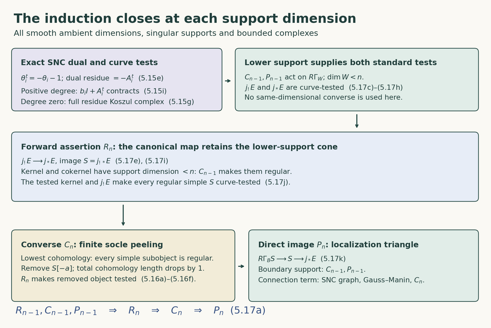
Figure. The top left panel is the exact dual density (5.15e), positive-normal-degree contraction (5.15i), and uncontracted residue complex (5.15g). The top right and central panels show why the standard-extension cone has strictly smaller support before its kernel is removed, (5.17c)–(5.17j). The lower left is the actual integer-valued socle-peeling argument (5.16a)–(5.16f); the lower right is the localization triangle (5.17k). The bottom arrow is the order of proof (5.17a), not an assumption of all three assertions at the current dimension. Source reading: Bernstein, Algebraic theory of D-modules, Main Theorem B. Every mechanism is proved above. The reproducible drawing source supplies the original CC0 figure.
Write $D^b_{\rm rh}(\mathcal D_X)$ for bounded complexes with regular holonomic cohomology. This is a triangulated subcategory: a composition series for a submodule and quotient concatenates to one for the middle module. Thus regular modules form a Serre subcategory, and the long cohomology sequence of a triangle preserves it.
Stability and testing (proved). For a morphism $f:X\to Y$ of smooth separated complex algebraic varieties, the four functors \[ f_*,\ f_!,\ f^!,\ f^* \] of Adjunctions, base change and the projection formula, and holonomic duality $\mathbb D$, preserve the bounded regular holonomic categories. No properness hypothesis is imposed in this algebraic statement. A bounded holonomic complex $M$ on $X$ is regular if and only if $k^!M$ is regular for every map $k:C\to X$ from a smooth algebraic curve. It is enough to test smooth locally closed curves. Theorem 5.17 proves the four-map and both curve-test assertions, in the notation $f^!$ and $f^*$ used here; Theorem 5.7 proves duality preservation. The statements apply to every singular support and bounded complex. The analytic proper direct-image assertion likewise remains a proof obligation; Kashiwara's freely accessible §8 is reading material. Neither citation establishes an input used below.
External product and both tensor operations
Theorem 5.18 (external product and the two tensor operations). External products, $\otimes^!$, and the dual tensor/Hom operation formed using $\mathbb D$ preserve bounded regular holonomic complexes. Proof. We use the four-map and curve-test assertions now proved in Theorem 5.17, together with duality preservation in Theorem 5.7. External products of holonomic modules are holonomic: a product good filtration has associated graded the external product of the two associated graded modules, so its characteristic support is the product of the two Lagrangian supports. The dimension is the sum of the dimensions. Derived external products and tensor products are consequently holonomic by bounded dévissage and the already proved inverse-image theorem; the internal tensor is the diagonal inverse image with its dimension shift.
On a curve, two regular holonomic complexes restrict outside finitely many points to complexes of regular connections. A tensor of two regular connections is regular, since tensor products of logarithmic lattices are logarithmic lattices, including at the compactification boundary. Every simple factor supported at an omitted point is a delta module and is regular. The simple-factor description therefore shows that the tensor complex is regular on the whole curve. Restrictions to a dense open detect the positive-dimensional simple factors, and any such factor with nonzero restriction inherits a regular generic connection by the stable sublattice and image argument following (1.5).
For an arbitrary curve map $k:C\to X\times Y$, the transfer-module tensor identity gives \[ k^!(M\boxtimes N)\simeq (\operatorname{pr}_X k)^!M\otimes^! (\operatorname{pr}_Y k)^!N. \tag{5.2} \] By Theorem 5.17, both factors are regular, and their tensor is regular by the curve argument. The curve criterion of Theorem 5.17 makes $M\boxtimes N$ regular. Diagonal inverse image then gives regularity of $\otimes^!$ on $X$. Theorem 5.7 then gives the dual tensor/Hom operation formed using $\mathbb D$. This proves the theorem. Recall that for left modules $\otimes^!$ is the derived $\mathcal O_X$ tensor shifted by $[-\dim X]$; shifts do not affect regularity.
For instance, $\mathcal O_{\mathbb A^1}$ and $\mathcal O.e^x$ both have zero-section characteristic variety. The first is regular algebraically and the second is not. Characteristic variety records the cotangent directions of propagation, not the exponential rate at infinity.
Actual analytic descent from a supplied Euler-stable lattice
The next eight sections prove an actual convergence and descent result on the dummy cotangent chart. Let \(M\) be a coherent analytic left \(\mathcal D_X\)-module and \(j_0(x)=(0,x;1,0)\). The conclusion applies to a supplied coherent order-zero lattice \(L\subset\Phi(M)\) which generates \(\Phi(M)\) under finite-order operators and satisfies \(tL\subset hL\), where \(h=D_t^{-1}\). It produces one ordinary neighbourhood on which every actual intersection \(j_0^{-1}h^{-k}L\cap M\) is coherent and the resulting filtration is locally good. No canonical lattice is being assumed to have been constructed for every regular holonomic module.
The argument proceeds through actual common-domain factorial symbols, Banach division, finite-stalk exact completion, fixed neighbourhood kernel sections, bounded actual ambient modules, and formal Euler projection followed by faithful recovery of actual sections. Completion is used at the dummy zero-section stalks \(j_0(y)\); at other points of the chart the ideal \((h,t,z)\) can be the whole ring. Coherence of the operator sheaf, proved in §5.24, holds throughout the fixed chart.
The coefficient inputs are the complete earlier Cauchy and Taylor proofs, Theorems 1.2, 2.1 and 2.3, bounded Weierstrass preparation/division and analytic Noetherianity, Theorems 1, 2 and 6, Oka coherence and finite coherent kernels, Theorems 2.1 and 3.1, and commutative completion, Theorems 3.1–3.3. Ordinary polynomial Noetherianity and relative coefficient flatness are proved in GL06, the analytic local-algebra calculation and Lemmas 3.0c.1–3.0c.2; Lemmas 3.0c.3–3.0c.4 and their finite-presentation proof give the uniform polynomial kernels and ordinary local good filtrations. The graded Rees argument, with both generator shifts retained, is also proved in §5.12, graded analytic Rees coherence. These are earlier full proofs with the displayed hypotheses. The operator-ring division, nearby kernels and completion below are proved separately.
5.19. Actual factorial-growth symbols and ordered jets
5.19.1. The chart and the convergence class
Use base coordinates \(u=(t,x_1,\ldots,x_d)\), cotangent coordinates \((\tau,\xi_1,\ldots,\xi_d)\), and the chart \(\tau\ne0\). Put \(z_i=\xi_i/\tau\), \(h=\tau^{-1}\), and work near \((t,x,z)=(0,x_0,0)\). The coefficient symbols of order zero are sequences \[ P=\sum_{n\geq0}\tau^{-n}p_n(u,z). \tag{5.19a} \] All \(p_n\) are holomorphic on one common neighbourhood in \((u,z)\). For every compact subset \(K\) of that neighbourhood there exist \(A,C>0\) such that \[ \begin{gathered} \sup_K|p_n|\leq AC^n n!,\\ n\geq0. \end{gathered} \tag{5.19b} \] The series is a symbol expansion; it is not a convergent power series at a numerical nonzero value of \(h\). A germ means an equivalence class of these sequences under restriction to a common neighbourhood. In particular it cannot be defined by unrelated holomorphic germs with shrinking coefficient domains.
This is the order-zero factorial-growth class in the free primary source Schapira, Une introduction à l'étude des systèmes d'équations microdifférentielles, §2.1, printed pp. 67–69. It supplies human context for the class. Its multiplication, division and Noetherian assertions are proved here by the displayed estimates and later sections.
Denote the sheaf defined by (5.19a)–(5.19b) in this fixed chart by \(\mathcal A_{\rm gv}\). Restriction is coefficientwise. The sheaf gluing assertion is elementary: coefficient functions glue holomorphically; a compact set is covered by finitely many neighbourhoods on which bounds (5.19b) hold, and taking the maximum of their finitely many \(A,C\) gives a bound on the compact set. This proves the actual sheaf condition for this convergence class.
5.19.2. Multiplication, with all cotangent derivatives retained
For \(\alpha=(a,\beta)\in\mathbf N\times\mathbf N^d\), write \(|\alpha|=a+|\beta|\), \(\alpha!=a!\beta!\), and \(\partial_\rho^\alpha=\partial_\tau^a\partial_\xi^\beta\), \(\partial_u^\alpha=\partial_t^a\partial_x^\beta\). The product coefficients are defined below.
For the next formulas write \(F_n(u,\rho)=\tau^{-n}p_n(u,\xi/\tau)\) and \(\operatorname{ev}_0f=f(u,1,z)\). The evaluation takes place after the indicated original cotangent derivatives. The expressions \(F\) in (5.20m) and \(F_{n,b,\gamma}\) in (5.21f) below are the displayed homogeneous symbols, with their cotangent dependence retained.
\[ \begin{aligned} c_N(u,z)&=\sum_{\substack{n,m\geq0,\ \alpha\geq0\\n+m+|\alpha|=N}}\\ &\quad\frac{\operatorname{ev}_0(\partial_\rho^\alpha F_n)}{\alpha!}\\ &\quad\cdot\partial_u^\alpha q_m(u,z). \end{aligned} \tag{5.19c} \]Every sum for a fixed \(N\) is finite. Cotangent homogeneity gives a term of degree \(-n-|\alpha|\) in the first derivative, so the product is \(\sum_{N\geq0}\tau^{-N}c_N\). The ordinary microdifferential Leibniz product is therefore fully specified in these coordinates.
For clarity, no \(t\)-dependent term has been removed. If \(E_z=\sum_i z_i\partial_{z_i}\), the first derivative in (5.19c) is \[ \begin{gathered} \left[\prod_{\ell=0}^{a-1}(-n-|\beta|-\ell-E_z)\right]\\ \cdot\partial_z^\beta p_n(u,z). \end{gathered} \tag{5.19d} \] Indeed \(\partial_\xi^\beta\) first gives \(\tau^{-n-|\beta|}\partial_z^\beta p_n\); each subsequent \(\tau\)-derivative decreases homogeneity by one and applies the indicated Euler factor. This proves (5.19d), including its signs and all integer factors.
5.19.3. A bounded product estimate on explicit nested domains
Translate \(x_0\) to zero. Let \(0<r<R\), and suppose all coefficient functions extend holomorphically beyond the closed polydisc \[ K_R=\{|u_i|\leq R,\ |z_i|\leq R\}, \] with bounds \(A_P C_P^n n!\), \(A_Q C_Q^m m!\) there. Put \[ \begin{gathered} \varepsilon=\frac{R-r}{2},\\ \delta=\min\left(\frac14,\frac{R-r}{4(1+R)}\right),\\ D=d+1,\\ K_*=\frac{C_P}{1-\delta}+C_Q+\frac D{\delta\varepsilon}. \end{gathered} \tag{5.19e} \] All constants are strictly positive and finite.
Theorem 5.19.1. The product (5.19c) is defined on \(K_r\) and satisfies \[ \sup_{K_r}|c_N|\leq A_PA_Q\,K_*^N N!. \tag{5.19f} \]
Proof. Fix \((u,z)\in K_r\). On the cotangent polydisc \(|\tau-1|\leq\delta,\ |\xi_i-z_i|\leq\delta\), one has \[ \begin{gathered} |\tau|\geq1-\delta,\\ \left|\frac{\xi_i}{\tau}\right|\leq\frac{r+\delta}{1-\delta}\\ =r+\frac{(1+r)\delta}{1-\delta}\\ \leq r+\frac{R-r}{3}<R. \end{gathered} \tag{5.19g} \] Thus the coefficient function in the first derivative of (5.19c) is holomorphic beyond this closed cotangent polydisc and is bounded there by \(A_P(C_P/(1-\delta))^n n!\). Iterated Cauchy estimates give \[ \begin{aligned} |\operatorname{ev}_0(\partial_\rho^\alpha F_n)|\\ {}\leq\alpha!\delta^{-|\alpha|}A_P\\ {}\cdot(C_P/(1-\delta))^n n!. \end{aligned} \tag{5.19h} \] The base polydisc with coordinate radius \(\varepsilon\) around \(u\) lies strictly inside the radius-\(R\) polydisc. The same Cauchy estimate gives \[ \begin{aligned} |\partial_u^\alpha q_m(u,z)|\\ {}\leq\alpha!\varepsilon^{-|\alpha|}A_QC_Q^m m!. \end{aligned} \tag{5.19i} \] These are the earlier proved several-variable Cauchy estimates, obtained by differentiating the iterated Cauchy integral. No estimate for an operator of infinite order is used.
Set \(s=|\alpha|\) and \(N=n+m+s\). Dividing the product of (5.19h)–(5.19i) by \(\alpha!\) leaves \(\alpha!n!m!\), which is at most \(s!n!m!\leq N!\). The number of multiindices \(\alpha\) of length \(D\) and sum \(s\) is at most \(D^s\): each such multiindex is the count vector of at least one word of length \(s\) in \(D\) letters, and there are \(D^s\) words. Consequently \[ \begin{aligned} |c_N|&\leq A_PA_QN!\sum_{n+m+s=N}\\ &\quad\left(\frac{C_P}{1-\delta}\right)^nC_Q^m\\ &\quad\cdot\left(\frac D{\delta\varepsilon}\right)^s. \end{aligned} \] The sum is bounded by \(K_*^N\). Expand the \(N\)-fold product defining that power; it contains the displayed monomials with positive integer multinomial coefficients, all at least one. This proves (5.19f). \(\square\)
For any compact set strictly inside the common coefficient domain, use finitely many such nested polydiscs and take maxima of the constants. Hence (5.19c) preserves the actual class (5.19b).
5.19.4. Associativity and the dummy Ore relations
Proposition 5.19.2. The product (5.19c) is associative, has unit one, and makes \(\mathcal A_{\rm gv}\) a sheaf of complex algebras. In this algebra the elements \(h=\tau^{-1}\), \(\theta_i=z_i\), \(t\), and holomorphic functions of \(x\) satisfy \[ \begin{gathered} {}[\theta_i,b(x)]=h\partial_i b,\\ {}[\theta_i,\theta_j]=0,\\ {}[h,\theta_i]=[h,b]=0,\\ {}[t,h]=h^2,\\ {}[t,\theta_i]=h\theta_i,\quad[t,b]=0. \end{gathered} \tag{5.19j} \]
Proof. On three factors in original \((u,\rho)\) variables put \(A_{ij}=\sum_{\ell=0}^d\partial_{\rho_\ell}^{(i)} \partial_{u_\ell}^{(j)}\). These ordinary partial-derivative operators commute. The Leibniz rule identifies both parenthesizations of a triple product with \[ \begin{gathered} \mu_3\exp(A_{12}+A_{13}+A_{23})\\ \cdot(P\otimes Q\otimes S). \end{gathered} \tag{5.19k} \] This is a formal homogeneous-order identity: for any fixed output order, there are only finitely many coefficient indices and derivative orders. Thus the exponential notation expresses finite coefficient identities, and does not require convergence of an infinite-order operator. For the first parenthesization the inner derivatives are \(A_{12}\), and differentiation of its two factors in the outer product gives \(A_{13}+A_{23}\). The other parenthesization gives \(A_{23}\) and \(A_{12}+A_{13}\). Their expansions agree since the operators commute. Theorem 5.19.1 puts both products in the convergence class. The constant one has no nonzero derivatives, so it is a unit.
To verify (5.19j), apply (5.19c) to the displayed coordinate symbols. For example \(h\circ t=ht-h^2\), whereas \(t\circ h=th\). Likewise \(\theta_i\circ t=z_it-hz_i\), \(t\circ\theta_i=tz_i\), and \(\theta_i\circ b=z_ib+h\partial_i b\). All other displayed commutators have no correction terms. This proves the signs, including the genuine \(t\)-action. \(\square\)
The polynomial subring generated by these elements is exactly the graded Ore ring \(A=R[t;h\delta]\) of formal Lemma 5.23.4. To see the injectivity as well as the relations, polynomial normal symbols have finite total degree and ordered polynomial normal form; the reordering from \(t\)-left to \(t\)-right is triangular in its \(t\)-degree with unchanged leading coefficient. Thus no nonzero ordered polynomial is the zero symbol. The two presentations are inverse using their normal forms.
5.19.5. The positive-degree formal map
Let \(H=\mathcal O_{X,x_0}\), and let \(I_{\rm alg}=(h,t,\theta_1,\ldots,\theta_d)\) in the polynomial Ore ring \(A\). The degree product \(\widehat A=\prod_{k\geq0}A_k\) is its positive-degree completion, by the already proved degree-one generation of \(A\).
Expand each \(p_n(x,t,z)\) at \(t=z=0\). A term \[ \begin{gathered} f_{n,\beta,b}(x)h^nz^\beta t^b\\ \text{has total degree}\\ n+|\beta|+b. \end{gathered} \tag{5.19l} \] At a fixed total degree there are finitely many such indices. Their coefficient germs belong to \(H\). Reorder each finite homogeneous polynomial using (5.19j) into \(t\)-right Ore normal form. This defines \[ T:\mathcal A_{{\rm gv},\,j_0(x_0)}\longrightarrow\widehat A. \tag{5.19m} \]
Lemma 5.19.3. The map \(T\) is an injective ring map, and multiplication preserves the lowest total degree.
Proof. On monomials of (5.19l), (5.19c) preserves the sum of their total degrees. A \(\xi\)-derivative lowers \(z\)-degree by one and raises negative \(\tau\)-order by one. A \(\tau\)-derivative raises that order by one while preserving \(z\)-degree; its paired \(t\)-derivative lowers the \(t\)-degree of the other factor by one. Derivatives in \(x\) change only the degree-zero holomorphic coefficient. Thus every nonzero contribution has precisely the sum of the input total degrees. In particular it cannot decrease their sum.
Every fixed total-degree coefficient of the product therefore depends on finite homogeneous Taylor polynomials of the two input symbols. On these finite polynomials (5.19j) is exactly the Ore product, by Proposition 5.19.2. This proves multiplicativity of (5.19m).
If \(T(P)=0\), the triangular finite reordering in every total degree gives zero for every original coefficient in (5.19l). For each \(n\), the Taylor series in \((t,z)\) of \(p_n\) is zero, with holomorphic coefficient germs in \(x\). On a smaller common product neighbourhood the function \(p_n\) is therefore zero by its Taylor expansion. This conclusion concerns the germ of each coefficient; to obtain zero as a common-domain symbol, use the identity theorem on the connected coefficient domain: a function with zero germ is identically zero there. The original common connected neighbourhood then works for every \(n\). Hence \(P\) is the zero symbol germ. \(\square\)
For \(r\geq1\), let \(J_r=\{P:T(P)\text{ has no degree below }r\}\). The lemma gives \(J_rJ_s\subset J_{r+s}\); in particular \(J_1\) is a two-sided ideal.
5.19.6. Actual ordered-jet division, without a formal convergence substitution
Theorem 5.19.4. In the actual convergent stalk, let \(I=(h,t,\theta_1,\ldots,\theta_d)\) be the two-sided ideal generated by these elements. Then \[ \begin{gathered} I^r=J_r,\quad r\geq1,\\ \mathcal A_{{\rm gv},j_0(x_0)}/I^r\\ {}\simeq A/I_{\rm alg}^r. \end{gathered} \tag{5.19n} \] Consequently the completion of this actual convergent ring at \(I\) is canonically \(\widehat A\).
Proof. The generators have degree one, and Lemma 5.19.3 gives \(I^r\subset J_r\). For the converse let \(P\in J_r\). The inverse triangular reordering in each degree shows that all Taylor terms of \(p_n\), \(n<r\), of degree less than \(r-n\) in \((t,z)\) are zero. There are only finitely many such coefficients; their germ vanishings hold on one smaller common neighbourhood.
For these finitely many \(n\), write the actual holomorphic Taylor factorization \[ \begin{gathered} p_n(x,t,z)=\sum_{b+|\beta|=r-n}\\ t^bz^\beta a_{n,b,\beta}(x,t,z). \end{gathered} \tag{5.19o} \] All \(a_{n,b,\beta}\) are holomorphic on one smaller common product neighbourhood. Here is an explicit construction, rather than an ideal-membership assertion. Order the finitely many monomials of total degree \(r-n\). Assign each monomial of the Taylor series of degree at least \(r-n\) to the first such monomial dividing it, and remove that factor. Each resulting coefficient series converges normally on any smaller polydisc: Cauchy bounds for the original coefficients, multiplied by a fixed inverse radius power for the removed degree, bound the assigned subseries. There are finitely many groups and finitely many \(n<r\), so one common smaller domain suffices.
Each term of \(\tau^{-n}p_n\) in (5.19o) equals the actual symbol product \[ t^b\circ a_{n,b,\beta}\circ(\theta^\beta h^n). \tag{5.19p} \] The leftmost factor has no cotangent derivatives; the rightmost has no base derivatives. Thus (5.19c) gives precisely their ordinary symbol product, with no omitted correction. It belongs to \(I^{b+|\beta|+n}=I^r\), since \(I\) is two-sided and the middle coefficient is an actual order-zero symbol.
The remaining tail is also an actual element of \(I^r\). Put \[ Q=\sum_{k\geq0}\tau^{-k}p_{k+r}(u,z). \tag{5.19q} \] Its coefficients have factorial growth on every compact set. In fact \[ (k+r)!\leq 2^{k+r}k!r! \] because \(\binom{k+r}{r}\leq2^{k+r}\), so (5.19b) for \(P\) gives \[ \begin{aligned} \sup_K|p_{k+r}|\\ {}\leq(AC^r2^rr!)(2C)^kk!. \end{aligned} \tag{5.19r} \] Hence \(Q\in\mathcal A_{\rm gv}\) on the original coefficient domain. The right factor \(h^r\) has no base derivatives, so \(Q\circ h^r\) is exactly the tail \(\sum_{n\geq r}\tau^{-n}p_n\). This puts the tail in \(I^r\), proving \(J_r\subset I^r\). The case \(r=1\) also verifies directly that the candidate ideal is the full kernel of the degree-zero map.
The map \(T\) followed by truncation is surjective onto \(A/I_{\rm alg}^r\): every finite ordered polynomial with coefficient germs in \(H\) is represented by an actual finite symbol after shrinking for its finite list of coefficients. Its kernel is \(J_r=I^r\). This proves (5.19n). The quotient maps are compatible as \(r\) varies, so their inverse limits give exactly \(\widehat A\). This is completion of actual stalk modules at an actual two-sided ideal; no sheaf-stalk/inverse-limit interchange is used. \(\square\)
5.20. One-norm multiplication, units and dummy division
In this section \(\circ\) denotes the actual Leibniz product. Juxtaposition of homogeneous normal symbols, Taylor coefficients or the weight variables in a norm calculation denotes ordinary coefficient multiplication. These operations agree only when the derivative corrections shown below vanish.
5.20.1. The actual homogeneous-symbol norm
Use the actual convergence class in §5.19. Put \(D=d+1\), \(u=(t,x)\), \(\rho=(\tau,\xi)\), \(z=\xi/\tau\), and \[ \begin{gathered} F_n(u,\rho)=\tau^{-n}p_n(u,\xi/\tau),\\ P=\sum_{n\geq0}F_n. \end{gathered} \tag{5.20a} \] Every \(F_n\) is homogeneous of cotangent degree \(-n\). Work on one common open subset of \(\tau\ne0\); a compact \(K\) below is contained in that subset. For \(\mu,\nu\in\mathbf N^D\), use total lengths \(|\mu|,|\nu|\), but retain the multiindices in the derivatives. Let \(\lambda=2D\). Define the nonnegative majorant \[ \begin{gathered} \mathsf N(P,K,\epsilon)=2\sum_{n,\mu,\nu}\\ \frac{\lambda^{-n}n!}{(n+|\mu|)!(n+|\nu|)!}\\ \cdot\sup_K|\partial_u^\mu\partial_\rho^\nu F_n|\\ \cdot\epsilon^{2n+|\mu|+|\nu|}. \end{gathered} \tag{5.20b} \] The numerical value may initially be infinite. Formal comparison of these majorants always means coefficientwise comparison of their nonnegative coefficients. For a fixed exponent there are finitely many indices. In particular \(\mathsf N(1,K,\epsilon)=2\).
Lemma 5.20.1 (norm detects exactly the factorial class). For an actual symbol, \(\mathsf N(P,K,\epsilon)\) is finite for some \(\epsilon>0\), for every compact \(K\) strictly inside its common coefficient domain. Conversely, finiteness gives on \(K\) \[ \begin{aligned} \sup_K|F_n|\\ {}\leq\tfrac12\mathsf N(P,K,\epsilon)\\ {}\cdot(\lambda/\epsilon^2)^n n!. \end{aligned} \tag{5.20c} \]
Proof. For the converse retain the term \(\mu=\nu=0\) of (5.20b). For the forward implication, thicken \(K\) by a sufficiently small common polydisc radius \(\eta>0\). This thickening stays in the cotangent chart and the common open domain. The normalized factorial bounds on its compact image under \((u,\rho)\mapsto(u,\xi/\tau)\), and the positive lower bound for \(|\tau|\), give constants \(A,C>0\) such that \(\sup|F_n|\le AC^n n!\) on the thickening. Iterated Cauchy integrals give \[ \sup_K|\partial_u^\mu\partial_\rho^\nu F_n| \le AC^n n!\,\mu!\nu!\,\eta^{-|\mu|-|\nu|}. \] Put \(p=|\mu|,q=|\nu|\). Since \(\mu!\le p!\), \(\nu!\le q!\), and \((n!)^2p!q!\le(n+p)!(n+q)!\), each weighted term is at most \(2A(C\epsilon^2/\lambda)^n(\epsilon/\eta)^{p+q}\). There are at most \(D^p\) multiindices of total length \(p\): assign to each multiindex a word having those coordinate counts. The same holds for \(q\). Thus, if both ratios in the following expression are less than one, \[ \begin{gathered} \mathsf N(P,K,\epsilon)\\ {}\leq\frac{2A}{1-C\epsilon^2/\lambda}\\ {}\cdot\frac1{(1-D\epsilon/\eta)^2}. \end{gathered} \tag{5.20d} \] Choosing a sufficiently small \(\epsilon\) proves finiteness. Restriction to the normalized slice \(\tau=1\) in (5.20c) gives the original factorial bound for \(p_n\). \(\square\)
5.20.2. A combinatorial estimate with the actual cotangent derivatives
The actual symbol multiplication is \[ \begin{aligned} (P\circ Q)_k&=\sum_{n+m+|\alpha|=k}\\ &\quad\frac{\partial_\rho^\alpha F_n\,\partial_u^\alpha G_m}{\alpha!}. \end{aligned} \tag{5.20e} \] Each output is homogeneous of degree \(-k\). The preceding actual symbol proof establishes this product and associativity; (5.20e) retains the \(\tau\)-derivatives paired with \(t\)-derivatives.
Theorem 5.20.2 (one-norm product inequality). Coefficientwise as majorants, and numerically whenever the right side is finite, \[ \begin{gathered} \mathsf N(P\circ Q,K,\epsilon)\\ {}\preccurlyeq\mathsf N(P,K,\epsilon)\mathsf N(Q,K,\epsilon). \end{gathered} \tag{5.20f} \]
Proof. Differentiate one summand of (5.20e). Allocate its external \(u\)-derivatives and \(\rho\)-derivatives between the two factors. Fix the resulting derivative indices of \(F_n\) to be \((\mu,\nu)\), and those of \(G_m\) to be \((\mu',\nu')\). An internal derivative index \(\alpha\) satisfies \(\alpha\le\nu,\mu'\). The external indices are \[ \begin{gathered} a=\mu+\mu'-\alpha,\\ b=\nu+\nu'-\alpha,\\ k=n+m+|\alpha|. \end{gathered} \] The Leibniz coefficient is exactly \(\binom a\mu\binom b{\nu'}/\alpha!\). Put \(p=|\mu|,q=|\nu|,r=|\mu'|,v=|\nu'|,s=|\alpha|\), and \(A=p+r-s,B=q+v-s\). Compare the weight of this term, including its Leibniz coefficient, to the product of the two weights of the fixed derivative pair in (5.20b), with the initial factors 2 removed. Multiindex binomial coefficients are at most their total-length binomial coefficients: choosing fixed coordinate counts is a subset of choosing the specified number among all entries. The ratio is therefore at most \[ \lambda^{-s}\frac{s!}{\alpha!}\, \frac{\dfrac{k!}{n!m!s!}\binom A p\binom B v} {\binom{k+A}{n+p}\binom{k+B}{m+v}}. \tag{5.20g} \] This follows by cancellation of the four input factorials and the two output factorials; \(k+A=n+m+p+r\), \(k+B=n+m+q+v\).
The fraction on the second line is at most one. Indeed, choosing \(p\) entries from a block of size \(A\) and \(n\) from a block of size \(k\) is one contribution to choosing \(n+p\) from their union. Thus \[ \begin{gathered} \binom{k+A}{n+p}\geq\binom Ap\binom kn,\\ \binom{k+B}{m+v}\geq\binom Bv\binom km. \end{gathered} \] Finally \(\binom k n\binom k m\ge \binom k n\binom{k-n}m=k!/(n!m!s!)\), since \(k=n+m+s\). This proves the asserted bound in (5.20g).
For the fixed derivative pair, sum (5.20g) over all permitted \(\alpha\). Enlarging to all multiindices and expanding \((1+\cdots+1)^s\) gives \[ \begin{gathered} \sum_\alpha\lambda^{-|\alpha|}\frac{|\alpha|!}{\alpha!}\\ {}\leq\sum_{s\geq0}(D/\lambda)^s=2. \end{gathered} \tag{5.20h} \] Also the power of \(\epsilon\) is exactly preserved: \[ \begin{gathered} 2k+|a|+|b|\\ {}=2n+|\mu|+|\nu|\\ {}+2m+|\mu'|+|\nu'|. \end{gathered} \] Hence the unscaled sums of weights for the product are at most twice the product of the unscaled sums for the inputs. Multiplying by the initial factor 2 in (5.20b) gives exactly the two initial factors 2 on the right of (5.20f). All summands are nonnegative, so these reindexings are valid first for finite truncations and then by increasing limits. They prove both the coefficientwise and the numerical statement. \(\square\)
The use of \(\lambda=2D\) precisely controls the possible internal derivative allocations. No repeated loss of the coefficient domain or repeated enlargement of a factorial-growth constant is used in this inequality.
5.20.3. Actual elliptic inverses and the stalk radical
Theorem 5.20.3 (elliptic inversion in the actual class). If \(p_0\) has no zero on a common chart neighbourhood, \(P\) has an actual two-sided inverse there. In particular a germ is invertible if and only if its leading coefficient is nonzero at the point.
Proof. Let \(B\) be the actual symbol whose only homogeneous coefficient is \(p_0^{-1}\). Put \(R=1-P\circ B\). Its degree-zero homogeneous coefficient is zero. Its higher coefficients are holomorphic on the common neighbourhood by the actual product theorem. Fix any compact \(K\) therein and choose \(\epsilon_0>0\) for which its norm is finite, by Lemma 5.20.1. Since every term of \(\mathsf N(R,K,\epsilon)\) has exponent at least two, \[ \begin{gathered} \mathsf N(R,K,\epsilon)\\ {}\leq(\epsilon/\epsilon_0)^2\mathsf N(R,K,\epsilon_0),\\ 0<\epsilon\leq\epsilon_0. \end{gathered} \tag{5.20i} \] Choose \(\epsilon\) so the right side is \(q<1\). The formal Neumann symbol \(S=\sum_{j\ge0}R^{\circ j}\) has well-defined holomorphic coefficients on the original common domain: the coefficient of homogeneous order \(-n\) receives terms only from \(j\le n\). Theorem 5.20.2 and triangle inequalities give \[ \mathsf N(S,K,\epsilon) \le 2+\sum_{j\ge1}q^j=2+q/(1-q). \] This inequality is justified first on finite sums, then coefficientwise by increasing nonnegative bounds. Lemma 5.20.1 proves the actual factorial growth of \(S\) on every compact of the common domain. Thus \(Q=B\circ S\) is actual and \(P\circ Q=1\) by finite homogeneous coefficient identities. Multiplication by \(P\) is injective on formal symbols: the first nonzero homogeneous coefficient of \(W\) would give the nonzero product \(p_0w_n\). Consequently \(P\circ(Q\circ P-1)=0\) implies \(Q\circ P=1\). No numerical convergence at \(h\ne0\) was asserted. For a germ with nonzero leading value, shrink so that \(p_0\) has no zero. Conversely the degree-zero product of a germ and its inverse has value one, so its leading value cannot be zero. \(\square\)
At the actual stalk \(\mathcal A=\mathcal A_{{\rm gv},j_0(x_0)}\), evaluation of the leading coefficient is a surjective algebra map to \(\mathbf C\). Its kernel \(\mathfrak m\) consists exactly of the nonunits, by Theorem 5.20.3. Every proper left or right ideal is contained in \(\mathfrak m\), because an element outside it is a unit. Since the quotient by \(\mathfrak m\) is a field, \(\mathfrak m\) is the unique maximal left and right ideal, and the Jacobson radical. In particular the actual two-sided ideal \[ \begin{gathered} I=(h,t,\theta_1,\ldots,\theta_d),\\ I\subset\mathfrak m. \end{gathered} \tag{5.20j} \]
Corollary 5.20.3.1 (finite-module zero detection). For a finite left \(\mathcal A\)-module \(V\), \[ \begin{gathered} \varprojlim_r V/I^rV=0\\ {}\Longrightarrow V=0. \end{gathered} \tag{5.20k} \] This conclusion needs neither Noetherianity nor exactness of completion.
Proof. The transition maps are surjective. Starting with any element of \(V/IV\), successively choose lifts along them; this gives a compatible family. The projection of the inverse limit onto \(V/IV\) is therefore surjective. A zero inverse limit implies \(V=IV\). Take a finite generating list \(v_1,\ldots,v_r\). If \(r>0\), write \(v_r=\sum_i a_iv_i\) with \(a_i\in I\): use \(V=IV\) and the fact that \(I\) is two-sided. Since \(1-a_r\) is a unit, this expresses \(v_r\) in the preceding generators. Repeating removes every generator and proves \(V=0\). This is the noncommutative Nakayama argument in full. \(\square\)
The corollary detects zero objects. It does not assert that completion is exact or injective on arbitrary finite-module morphisms. For the two coherent quotients in Proposition 5.26.1, it supplies the zero-detection step once their vanishing completions have been genuinely proved by exactness and a valid coefficient model.
5.20.4. Bounded actual division by \(t-ah\)
Let \(a\in\mathbf Z\) be a fixed shift. The proof below also works for any fixed complex \(a\), using a branch of \(\tau^{-a}\) on a small disc about 1; only integer shifts are used for the ordinary lattice applications. Define on symbols independent of \(t\) \[ \mathscr L_a=-\partial_\tau+a\tau^{-1}. \tag{5.20l} \] It raises negative homogeneous order by one. It is the differential operator \(\tau^a(-\partial_\tau)\tau^{-a}\), as the product rule directly verifies. In the normalized chart, \[ \begin{gathered} F=\tau^{-n}f(x,\xi/\tau),\\ \operatorname{ev}_0(\mathscr L_a^bF)\\ {}=\prod_{j=0}^{b-1}(n+a+j+E_z)\\ {}\cdot f(x,z),\\ E_z=\sum_i z_i\partial_{z_i}. \end{gathered} \tag{5.20m} \] For \(b=0\) the product is the identity. One \(-\partial_\tau\) gives \(\tau^{-n-1}(n+E_z)f\); the extra \(a\tau^{-1}\) gives the stated first factor, and induction proves every factor and sign.
Assume the coefficients \(p_n(t,x,z)\) are holomorphic beyond a closed product domain with \(|t|\le T\), and satisfy \(|p_n|\le AC^n n!\) there. Fix \(0<s<T\), smaller compact \(x,z\) ranges, and \(0<\delta<1\) such that the cotangent disc \(|\tau-1|\le\delta\), at fixed \(\xi=z\) in those smaller ranges, remains in the common normalized coefficient domain. This is always possible; the explicit choice and ratio estimate of 5.19e–5.19g may be used. Put \[ \begin{gathered} H_a=\max_{|\tau-1|\leq\delta}|\tau^{-a}|,\\ C_*=C/(1-\delta),\\ K_*=C_*+(\delta T)^{-1}. \end{gathered} \tag{5.20n} \] The branch has value one at \(\tau=1\), and \(H_a\ge1\).
Theorem 5.20.4 (actual bounded dummy division). There are unique actual symbols \(Q\) and \(R\), with \(R\) independent of \(t\), such that \[ P=Q\circ(t-ah)+R. \tag{5.20o} \] On the specified smaller compact product with \(|t|\le s\), their normalized coefficients satisfy \[ \begin{gathered} |q_N|\leq\frac{AH_a}{T-s}K_*^NN!,\\ |r_N|\leq AH_aK_*^NN!. \end{gathered} \tag{5.20p} \] In particular one common smaller holomorphic neighbourhood serves for all coefficients.
Proof. Taylor-expand in the actual base variable: \[ \begin{gathered} p_n(t,x,z)=\sum_{b\geq0}t^bp_{n,b}(x,z),\\ |p_{n,b}|\leq AC^nn!T^{-b}. \end{gathered} \tag{5.20q} \] This is an ordinary convergent Taylor expansion on the common domain. Write \(F_{n,b}(x,\rho)=\tau^{-n}p_{n,b}(x,\xi/\tau)\). For a fixed pair \((n,b)\), the normal-symbol identity \[ \begin{gathered} t^bF_{n,b}=\\ \left(\sum_{j=0}^{b-1}t^{b-j-1}\mathscr L_a^jF_{n,b}\right)\\ \circ(t-ah)\\ {}+\mathscr L_a^bF_{n,b}. \end{gathered} \tag{5.20r} \] holds, with the sum empty for \(b=0\). Indeed, for every symbol \(W\), \[ \begin{gathered} W\circ(t-ah)\\ {}=tW+\partial_\tau W-ahW\\ {}=tW-\mathscr L_aW. \end{gathered} \] The first equality is the actual Leibniz product: \(t\) has only one nonzero base derivative, and the right factor \(h\) has no base derivatives. The two finite sums telescope in (5.20r); \(\mathscr L_a\) does not differentiate \(t\).
Define the homogeneous coefficients of the remainder by the finite sums \[ \begin{aligned} R_N(x,\rho)&=\sum_{n+b=N}\\ &\quad\mathscr L_a^bF_{n,b}(x,\rho), \end{aligned} \tag{5.20s} \] and those of the quotient by \[ \begin{gathered} Q_N(t,x,\rho)=\sum_{n+j=N}\sum_{b\geq j+1}\\ t^{b-j-1}\mathscr L_a^jF_{n,b}(x,\rho). \end{gathered} \tag{5.20t} \] Every inner sum here is an actual holomorphic series in \(t\). To verify its convergence and the factorial bounds, apply the Cauchy derivative estimate in \(\tau\) to \(\tau^{-a}F_{n,b}\). Equations (5.20l) and (5.20q) give, on the normalized slice, \[ \begin{gathered} |\mathscr L_a^jF_{n,b}|\\ {}\leq AH_aC_*^nn!T^{-b}j!\delta^{-j}. \end{gathered} \tag{5.20u} \] The factor \(\tau^a\) in (5.20l) equals one at that slice. The \(\tau\)-disc remains in the normalized coefficient domain by the explicit hypothesis preceding (5.20n). Thus the bound includes the actual Euler/cotangent derivative factors, rather than replacing them with formal Ore coefficients.
For \(|t|\le s\), \[ \sum_{b\ge j+1}T^{-b}s^{b-j-1} =T^{-j}/(T-s). \] The inner series of (5.20t) therefore converges normally on the smaller product and is bounded by \(AH_a C_*^n n!j!(\delta T)^{-j}/(T-s)\). Sum over \(n+j=N\), use \(n!j!\le N!\), and bound the sum of monomials by \((C_*+(\delta T)^{-1})^N\). This proves the quotient bound in (5.20p). The same argument on the finite sum \(n+b=N\) gives the remainder bound. All coefficients are holomorphic on the same smaller open product; the estimates on its compact subsets prove that both are actual symbols.
Identity (5.20r), summed by homogeneous degree and ordinary \(t\)-Taylor degree, proves (5.20o). At a fixed total degree there are only finitely many input Taylor terms; alternatively normal convergence in (5.20t) allows coefficientwise holomorphic differentiation on smaller compact products, and the sums telescope. Neither interpretation interchanges unrelated germs with infinite sums.
For uniqueness, suppose \(Q\circ(t-ah)+R=0\), with \(R\) independent of \(t\). At homogeneous degree zero, the equation is \(tq_0+r_0=0\). Evaluate at \(t=0\) to obtain \(r_0=0\), hence \(q_0=0\). If all previous coefficients are zero, the degree-\(-N\) equation is again \(tq_N+r_N=0\), since \(\mathscr L_a\) raises negative homogeneous order by one. The same argument proves their vanishing. Induction gives uniqueness. \(\square\)
The theorem proves division by these actual degree-one dummy operators. It does not prove division by a general operator regular in an arbitrary cotangent or base direction.
5.20.5. The convergent free dummy module and its completion
Let \(\mathcal R_{\rm gv}\subset\mathcal A\) be the actual symbols independent of \(t\). It is a subring, because every term with a \(t\)-derivative of the right factor vanishes in (5.20e). Its variable \(h\) is central, and \([\theta_i,b(x)]=h\partial_i b\). The bounded division proves an actual left-module identification \[ \begin{gathered} \mathcal A/\mathcal A(t-ah)\simeq\mathcal R_{\rm gv}u_a,\\ t(Su_a)=h(a+\delta)Su_a,\\ \delta\left(\sum_n h^ns_n(x,z)\right)\\ {}=\sum_n h^n(n+E_z)s_n(x,z). \end{gathered} \tag{5.20v} \] The right side means a free rank-one left \(\mathcal R_{\rm gv}\)-module endowed with the displayed actual \(t\)-action. It is not a statement that \(\mathcal A\) is commutative or that this quotient is a ring.
Proof of (5.20v). Theorem 5.20.4 gives one and only one \(t\)-independent representative of every coset. Left multiplication by a \(t\)-independent symbol preserves \(t\)-independence, and preserves the left ideal generated by \(t-ah\). Thus the representative map is \(\mathcal R_{\rm gv}\)-linear. For a representative \(S\), the relation \([t,S]=-\partial_\tau S\), proved directly from the product, and \(tu_a=ah u_a\) give \(tS u_a=(ahS-\partial_\tau S)u_a=h(a+\delta)S u_a\). These are actual symbols: the derivatives preserve factorial growth on smaller compact products by Cauchy estimates, and multiplying the \(n\)-th coefficient by \(n\) preserves such growth after increasing its exponential constant. The same conclusion follows from the actual remainder of \(tS\) in Theorem 5.20.4. \(\square\)
Put \(J=(h,\theta_1,\ldots,\theta_d)\) in \(\mathcal R_{\rm gv}\). The positive-degree Taylor map of Lemma 5.19.3 restricts injectively to \[ \mathcal R_{{\rm gv},x_0} \longrightarrow\widehat R, \qquad R=\bigoplus_{k\ge0}\mathcal D_{\le k,x_0}h^k. \] Its degree-\(k\) coefficient is the finite Taylor polynomial with \(n+|\beta|=k\). The common-domain identity argument of Lemma 5.19.3 applies unchanged. The actual ideal identity \[ \begin{gathered} J^r=\\ \left\{S:\begin{gathered}\text{all Taylor terms}\\ \text{of total degree}\\ \text{below }r\text{ vanish}\end{gathered}\right\}. \end{gathered} \tag{5.20w} \] has the following full local proof. The forward inclusion follows from degree additivity of the actual product. For the reverse inclusion, for the finitely many coefficients \(n<r\), factor their convergent \(z\)-Taylor series as finite sums of monomials \(z^\beta\) of degree \(r-n\) times holomorphic functions on a common smaller polydisc. This is obtained by assigning each Taylor monomial to the first monomial of degree \(r-n\) dividing it; each assigned subseries converges normally on smaller polydiscs by Cauchy bounds. The resulting symbols are products \(b(x,z)\circ z^\beta h^n\), with no corrections because the right factor has no base derivatives. They lie in \(J^r\). The tail factors on the right by \(h^r\); its shifted coefficients are actual because \((k+r)!\le2^{k+r}k!r!\), by the binomial theorem. This proves (5.20w).
Consequently finite truncation gives \[ \begin{gathered} \mathcal R_{{\rm gv},x_0}/J^r\simeq R/R_{\geq r},\\ \varprojlim_r\mathcal R_{{\rm gv},x_0}/J^r\simeq\widehat R. \end{gathered} \tag{5.20x} \] Surjectivity of each finite truncation follows by representing its finitely many holomorphic coefficient germs by one finite actual symbol on their common neighbourhood. The kernel is exactly (5.20w). This is an inverse limit of actual stalk quotients, with no stalk/sheaf-limit interchange.
The \(I\)-adic filtration of the cyclic \(\mathcal A\)-module in (5.20v) equals this \(J\)-adic filtration of its representative module. For the forward containment, lift an element of \(I^r\) to its actual positive-degree Taylor model, supplied by Theorem 5.19.4. Each generator of \(I\) raises total degree by one in the module: \(h\) and \(\theta_i\) do so directly, and \(t=h(a+\delta)\) does so by (5.20v). The action of every actual symbol has nonnegative degree, and the leading-degree preservation of Lemma 5.19.3 extends to the module relation, which is homogeneous. Thus the representative has no terms below \(r\); by (5.20w) it belongs to \(J^r\). For the reverse containment, the finite factorizations in the proof of (5.20w), and the tail factor by \(h^r\), express it as the action on \(u_a\) of actual elements of the two-sided ideal \(I^r\). Hence \[ \begin{gathered} \widehat{\mathcal A/\mathcal A(t-ah)}^{\,I}\\ {}\simeq\widehat R\,u_a,\\ tu_a=ah u_a,\\ t(Su_a)=h(a+\delta)Su_a. \end{gathered} \tag{5.20y} \] One may also see the forward containment explicitly from (5.20s)–(5.20t): Taylor terms have degrees \(n+b+|\beta|\); the remainder replaces each \(t^b\) by \(b\) applications of \(\mathscr L_a\), preserving that total degree.
For integral \(a\), identify \(u_a\) with \(h^a u_0\) inside the finite-order localization of the free dummy transfer. The actual Weyl relation gives \(t h^a u_0=ah^{a+1}u_0\), also for negative \(a\). Thus (5.20y) is exactly the shifted formal free ordinary Rees model \(h^a\widehat R\) in Lemma 5.23.4. The construction respects any finite direct sum of such shifts: finite truncations and the inverse limit act coordinatewise. This proves the actual free coefficient model and its bounded presentation, the free case of the general actual ambient presentation proved in §5.25.
5.21. Actual simultaneous division and finite stalk relations
5.21.1. An absolute Taylor version of the product norm
Translate the ordinary base point to zero. Put \(w=(u,z)=(t,x,z)\); there are \(q=2d+1\) variables. Choose positive polyradii \(R=(R_1,\ldots,R_q)\). For a holomorphic Taylor series \(f=\sum_\gamma c_\gamma w^\gamma\), define \[ |f|_R=\sum_\gamma |c_\gamma|R^\gamma. \tag{5.21a} \] This norm is finite on a smaller closed polydisc than any polydisc of holomorphy. Indeed Cauchy bounds on a larger polyradius \(S\) give \(|c_\gamma|\le A S^{-\gamma}\), and the geometric product \(A\prod_j(1-R_j/S_j)^{-1}\) bounds (5.21a). It is submultiplicative by coefficient convolution and the triangle inequality.
For the actual homogeneous coefficients \(F_n=\tau^{-n}p_n(u,\xi/\tau)\), replace the compact supremum in (5.20b) by the norm (5.21a) after evaluation at \(\tau=1\), \(\xi=z\): \[ \begin{gathered} \|P\|_{R,\epsilon}=2\sum_{n,\mu,\nu}\\ \frac{\lambda^{-n}n!\epsilon^{2n+|\mu|+|\nu|}}{(n+|\mu|)!(n+|\nu|)!}\\ \cdot|\operatorname{ev}_0(\partial_u^\mu\partial_\rho^\nu F_n)|_R,\\ \lambda=2(d+1). \end{gathered} \tag{5.21b} \] Every actual germ has a representative for which this norm is finite, with sufficiently small \(R,\epsilon\). To prove this, use Cauchy estimates for the original homogeneous functions on a fixed thickening of the normalized slice at polyradius \(S>R\), and then the geometric bound preceding (5.21b). The same calculation as (5.20d) bounds the derivative sum, with a further constant \(\prod_j(1-R_j/S_j)^{-1}\). Conversely, the zero-derivative terms imply \[ |p_n|_R\le\tfrac12\|P\|_{R,\epsilon} (\lambda/\epsilon^2)^n n!. \tag{5.21c} \] Thus a finite norm supplies a common polydisc of holomorphic coefficients and actual factorial growth on it.
The proof of Theorem 5.20.2 used only a submultiplicative coefficient norm, the Leibniz rule and the exact allocation inequality. Consequently it applies without change to (5.21b): \[ \|P\circ Q\|_{R,\epsilon} \le\|P\|_{R,\epsilon}\|Q\|_{R,\epsilon}. \tag{5.21d} \] For ordinary multiplication of homogeneous normal symbols, retain only the allocation \(\alpha=0\) in that proof. There is no internal-allocation factor 2. Hence \[ \|PQ\|_{R,\epsilon} \le\tfrac12\|P\|_{R,\epsilon}\|Q\|_{R,\epsilon}. \tag{5.21e} \] These assertions include the actual \(\tau\)-derivatives and the mixed base/cotangent derivatives.
For clarity about completeness and support projections, write a coefficient monomial as \(c\,h^n u^b z^\gamma\). If \(\nu=(a,\beta)\), its normalized cotangent derivative is \[ \begin{gathered} F_{n,b,\gamma}=\tau^{-n}u^b(\xi/\tau)^\gamma,\\ \operatorname{ev}_0(\partial_\tau^a\partial_\xi^\beta F_{n,b,\gamma})\\ {}=(-1)^a(n+|\gamma|)^{\overline a}\\ {}\cdot\gamma^{\underline\beta}u^bz^{\gamma-\beta}. \end{gathered} \tag{5.21f} \] The expression is zero if \(\beta\nleq\gamma\); the rising factorial with initial value zero is zero for \(a>0\). Equation (5.21f) follows directly from 5.19d, since the Euler degree after the \(\xi\)-derivatives is \(|\gamma|-|\beta|\). Base derivatives add the falling factorial \(b^{\underline\mu}\).
For fixed derivative indices, distinct original monomials remain distinct after the derivatives. Therefore (5.21b) is exactly a weighted \(\ell^1\)-norm on the original coefficients, with positive weights. Each monomial has finite weight for sufficiently small \(\epsilon<1\): the base and \(\xi\) derivative sums are finite on a monomial, and the remaining \(\tau\) derivative sum is a geometric series times a fixed polynomial in its derivative order, by the factorials in (5.21b). The resulting coefficient space is Banach. A coefficientwise support restriction is a closed subspace and has norm at most one.
Ordinary division of monomials by a fixed \(w^\eta\), restricted to terms divisible by it, has norm at most \(R^{-\eta}\). In fact it decreases each base falling factorial in (5.21f), each cotangent falling factorial and the nonnegative initial value \(n+|\gamma|\) of each rising factorial. Its radius factor changes by exactly \(R^{-\eta}\). This proves the bound term by term in the weighted \(\ell^1\)-norm, including both \(u\)- and \(z\)-variables. No formal division convergence is presumed.
Finally, let \(\partial_{\rho_j}\) act on the homogeneous series, moving its coefficient of index \(n\) to index \(n+1\). In (5.21b), compare its term to the input term with one extra \(\rho_j\)-derivative. The ratio of weights is \[ \frac\epsilon\lambda\frac{n+1}{n+|\mu|+1} \le\frac\epsilon\lambda. \] Consequently \[ \|\partial_\rho^\alpha P\|_{R,\epsilon} \le (\epsilon/\lambda)^{|\alpha|} \|P\|_{R,\epsilon}. \tag{5.21g} \]
5.21.2. Initial exponents and the finite diagram
Let \(\mathcal A\) be the actual stalk and \(L\subset\mathcal A^s\) a left submodule, with \(s\) finite. A nonzero vector has a first nonzero homogeneous coefficient \(h^n\). Among that coefficient's nonzero \(w\)-Taylor monomials, choose the least total degree, then the least lexicographic exponent, and finally the least component index. Denote the resulting leading exponent by \((n,\gamma,j)\). This order is well ordered and compatible with addition of exponents; component comparison is used only at an identical exponent.
The set \(\Delta(L)_j\subset\mathbf N^{q+1}\) of leading exponents in component \(j\) is upward closed. Indeed multiplication on the left by \(h^m w^\beta\) adds \((m,\beta)\) to the leading exponent. Every nonzero internal derivative correction in the actual product has strictly larger homogeneous index \(n\), and the degree-zero ordinary Taylor product has the usual multiplicative leading monomial. Thus the leading exponent is exactly translated as stated.
Each upward closed subset of \(\mathbf N^k\) has finitely many minimal elements. Here is the combinatorial proof. Every infinite sequence in \(\mathbf N^k\) has a pair of terms in their sequence order with the first componentwise at most the second. Induct on \(k\). For the first coordinate, either some value occurs infinitely often, giving a constant subsequence, or its values are unbounded, giving a strictly increasing subsequence. Apply induction to the remaining coordinates of that subsequence. An infinite collection of incomparable minimal elements is therefore impossible. Every exponent in an upward closed set dominates a minimal one, by choosing a minimal element in the finite coordinate box below it. This proves finite generation of the upward closed set.
Choose vectors \(P_1,\ldots,P_\ell\in L\) representing all the finitely many minimal exponents \((n_i,\gamma_i,j_i)\). Scale each by its nonzero complex leading coefficient so that the leading coefficient is one. Their exponent orthants cover \(\Delta(L)\). The argument below proves they generate the actual submodule.
Remove the finite initial homogeneous shift on the left: \[ B_i=h^{-n_i}\circ P_i. \tag{5.21h} \] This is an actual order-zero vector even though the intervening symbol \(h^{-n_i}=\tau^{n_i}\) has positive order. Its product has only finitely many internal derivatives, since \(\tau^{n_i}\) is a polynomial. Explicitly, if \(r=n_i\) and \(p_n=0\) for \(n<r\), its normalized coefficient of index \(N\) is \[ \begin{aligned} (B_i)_N&=\sum_{a=0}^{\min(r,N)}\\ &\quad\binom ra\partial_t^a p_{N+r-a}. \end{aligned} \tag{5.21i} \] There are finitely many derivative orders \(a\le r\). Cauchy estimates on one smaller common domain and \((N+r)!\le2^{N+r}N!r!\) prove the required factorial bounds for every coefficient. Its principal vector is exactly \(p_r\), so its principal leading Taylor monomial remains \(w^{\gamma_i}e_{j_i}\).
5.21.3. One domain and radii for all the divisors
Choose positive rational weights \(v_1,\ldots,v_q\), as close to one as necessary, so that \(\gamma_i\) is the unique minimal weighted exponent among all the different Taylor monomials in the principal vector of every \(B_i\). Terms at that identical exponent may remain only in later components.
To justify this simultaneous choice, let \(K\) be the largest of the finitely many degrees \(|\gamma_i|\). Among exponents of degree at most \(K\), use a sufficiently small hierarchical perturbation \(v_j=1+\delta^j\) to make lexicographic comparison agree with weighted comparison. The finitely many relevant differences are preserved by sufficiently small positive rational \(\delta\). The least-degree/lexicographic definition of the heads then gives the desired strict inequalities at degree at most \(K\). Take the perturbation still smaller so that \((K+1)\min v_j>K\max v_j\); every larger-degree monomial has larger weight than every head. This also controls all infinitely many higher Taylor terms.
Give component \(j\) the positive norm factor \(c_j=\kappa^j\). Choose \(\kappa>0\) sufficiently small that, for every \(i\), the finitely many coefficients at the identical head exponent in later components have total weighted norm less than \(c_{j_i}/64\). There are no earlier-component terms at that exponent. Fix these factors. Set \(R_j=r^{v_j}\) for sufficiently small \(r>0\), inside the common coefficient domains. The other monomials in the principal vectors then have total weighted Taylor norm divided by \(c_{j_i}R^{\gamma_i}\) tending to zero. For completeness, this follows by domination by their convergent absolute Taylor series at one fixed larger polyradius: every exponent has a strictly positive weight gap, and removing the head radius power leaves a summable majorant for small \(r\). Thus one \(r\) works for the finite list.
Define the vector norm \(\|F\|_c=\sum_j c_j\|F_j\|_{R,\epsilon}\). Put \[ A_i=B_i-w^{\gamma_i}e_{j_i}. \tag{5.21j} \] The remaining positive-homogeneous-index coefficients of \(A_i\) have norms tending to zero as \(\epsilon\to0\); this follows by domination by their finite norm at an earlier \(\epsilon_0\), since their powers of \(\epsilon\) are at least two. The derivative terms of the principal coefficient similarly tend to zero, and the zero-derivative principal term has norm exactly twice its absolute Taylor norm. It follows that, after the above choices of \(c,R\), one can choose a sufficiently small common \(\epsilon\) making \[ \begin{gathered} \frac{\|A_i\|_c}{c_{j_i}R^{\gamma_i}}\\ \text{arbitrarily small up to}\\ \text{the already fixed}\\ \text{head-component tolerance.} \end{gathered} \tag{5.21k} \] In particular the ratio can be made less than \(1/8\) for every \(i\). All these choices concern a finite list of actual coefficient domains and divisors.
5.21.4. Bounded simultaneous division
Order the finite orthants of the heads. Partition their union by assigning each exponent \((n,\beta,j)\) to the first head with \(j=j_i\), \(n\ge n_i\), \(\beta\ge\gamma_i\). Denote its assigned set by \(\Delta_i\), and their complement by \(\Delta_0\). For any coefficient vector \(F\), let \(D_iF\) be the terms in \(\Delta_i\), taken from component \(j_i\) and divided ordinarily by \(w^{\gamma_i}\). No \(h\)-shift is removed; all its homogeneous indices are at least \(n_i\). Let \(V_i\) be the closed coefficient-support subspace occupied by these divided monomials. Give \(V=\bigoplus_i V_i\) the norm \[ \|Q'\|_V=\sum_i c_{j_i}R^{\gamma_i} \|Q'_i\|_{R,\epsilon}. \tag{5.21l} \] §5.21.1 proves that these are Banach spaces. Support restrictions and monomial division give \[ \begin{gathered} \|DF\|_V\leq\|F\|_c,\\ D=(D_1,\ldots,D_\ell). \end{gathered} \tag{5.21m} \] The estimate is for the sum, because the assigned supports are disjoint before division. Let \(T_0Q'=\sum_i Q'_iw^{\gamma_i}e_{j_i}\), using ordinary multiplication. By the support assignment, \(DT_0\) is the identity of \(V\), and the kernel of \(D\) is exactly the coefficient vectors supported in \(\Delta_0\).
Actual multiplication differs from \(T_0\) by a small bounded operator. Define \[ \begin{gathered} TQ'=\sum_iQ'_i\circ B_i,\\ E=T-T_0. \end{gathered} \tag{5.21n} \] For the term \(Q'_i\circ A_i\), (5.21d) gives norm at most \(\|Q'_i\|\|A_i\|_c\). For the difference between actual and ordinary multiplication by the monomial \(w^{\gamma_i}=u^b z^\eta\), only finitely many internal derivatives of the right factor can occur, namely \(0<\alpha\le b\). Equations (5.21e) and (5.21g) give the bound \[ \begin{gathered} \|Q'_i\circ w^{\gamma_i}-Q'_iw^{\gamma_i}\|\\ {}\leq C_i(\epsilon,R)\|Q'_i\|,\\ C_i=\tfrac12\sum_{0<\alpha\leq b}\binom b\alpha\\ {}\cdot(\epsilon/\lambda)^{|\alpha|}\\ {}\cdot\|u^{b-\alpha}z^\eta\|_{R,\epsilon}. \end{gathered} \tag{5.21o} \] For fixed \(R\), this constant tends to zero as \(\epsilon\to0\); each monomial norm has a finite limit. Its component norm is multiplied by \(c_{j_i}\). Decrease the common \(\epsilon\) once more so that \[ \begin{gathered} \vartheta=\max_i\\ \frac{\|A_i\|_c+c_{j_i}C_i(\epsilon,R)}{c_{j_i}R^{\gamma_i}},\\ \vartheta<\tfrac12. \end{gathered} \tag{5.21p} \] This is possible by the explicit choices in §5.21.3. Then (5.21m)–(5.21p) show \(\|DE\|\le\vartheta\) on \(V\).
For any \(F\) with finite actual norm, solve \[ \begin{gathered} Q'=(1+DE)^{-1}DF\\ {}=\sum_{k\geq0}(-DE)^kDF. \end{gathered} \tag{5.21q} \] The sum converges in the specified Banach space, with norm at most \((1-\vartheta)^{-1}\|F\|_c\). Its coefficients are actual symbols on one common smaller polydisc by (5.21c) and completeness. Define \(S=F-TQ'\). Equations (5.21n) and (5.21q) give \(DS=0\), so every coefficient of \(S\) is supported in \(\Delta_0\). This gives an actual finite division expression \[ F=\sum_i Q'_i\circ B_i+S. \tag{5.21r} \] No closure of the original submodule was required to construct the coefficients.
An arbitrary actual germ \(F\) need not be defined on the initially selected divisor domain. Repeat the finite domain/radius choices on the intersection with its own common coefficient domain. The same fixed heads and principal Taylor coefficients are used; the radii and norm parameter may be smaller. This gives actual division for every such germ, without requiring unrelated coefficient domains or a uniform domain for every germ of the stalk.
5.21.5. Noetherianity of the actual stalk
Theorem 5.21.1. Every left submodule of \(\mathcal A^s\), for finite \(s\), is generated by finitely many actual germs. In particular the actual order-zero factorial-growth dummy stalk is left Noetherian.
Proof. Use the finite head vectors \(P_i\in L\) and the actual division (5.21r) for \(F\in L\). Every \(Q'_i\) has homogeneous indices at least \(n_i\). Put \(Q_i=Q'_i\circ h^{-n_i}\); the right factor has no base derivatives, so this simply shifts its coefficient sequence down by \(n_i\). The resulting symbol is actual: the fixed shift preserves factorial growth by \((k+n_i)!\le2^{k+n_i}k!n_i!\), on the same common coefficient domain. Associativity of the finite homogeneous Leibniz identities gives \[ Q_i\circ P_i=Q'_i\circ(h^{-n_i}\circ P_i) =Q'_i\circ B_i. \] The temporarily positive-order polynomial \(h^{-n_i}\) has finite derivative order; all displayed endpoints are order-zero actual symbols. Thus (5.21r) becomes \(F=\sum_iQ_i\circ P_i+S\). The finite sum belongs to \(L\), so \(S\in L\). If \(S\ne0\), its leading exponent must belong to \(\Delta(L)\), by the definition of that set. But every coefficient of \(S\) lies outside its covering orthants, by \(DS=0\). This contradiction gives \(S=0\), and the \(P_i\) generate \(L\). Taking \(s=1\) proves left Noetherianity. \(\square\)
For every finite left stalk module, its submodules are finite: pull back a submodule along a finite free surjection and apply Theorem 5.21.1, then take its finite image. Every finite module also has a finite presentation because the kernel of its finite free surjection is finite. Thus the finite stalk-module category has finite kernels, images and cokernels. These are actual convergent algebra statements.
5.22. Exact faithful positive-degree completion at the dummy zero section
5.22.1. The actual normal element
Write \(\mathcal A\) for the actual order-zero stalk, \(h=\tau^{-1}\), and \(I=(h,t,z)\). Let \(T=\mathcal O_{x,t,z,0}\), \(H=\mathcal O_{x,0}\). Right multiplication by \(h^r\) is ordinary normal-symbol multiplication, so \(\mathcal Ah^r\) consists exactly of the symbols whose first \(r\) homogeneous coefficients vanish. The reverse inclusion uses the fixed coefficient shift and \((n+r)!\le2^{n+r}n!r!\), preserving the actual common domain and factorial class.
The element \(h\) is normal. Direct actual multiplication gives \[ \begin{gathered} h^{-1}\circ P\circ h=P+h\partial_tP,\\ h\circ P\circ h^{-1}\\ {}=\sum_{j\geq0}(-1)^jh^j\partial_t^jP. \end{gathered} \tag{5.22a} \] The first product has only the zero and first derivatives of \(h^{-1}=\tau\). The second identity has finite sums at each homogeneous index. It is actual: on any smaller compact coefficient domain, Cauchy estimates bound its index-\(N\) coefficient by \(A\sum_{n+j=N}C^n n!\,j!\eta^{-j}\le A(C+\eta^{-1})^NN!\). The two operators in (5.22a) are inverse, by cancellation of their coefficientwise geometric series. Associativity of the homogeneous product makes them inverse algebra automorphisms. Denote \(P\mapsto h\circ P\circ h^{-1}\) by \(\sigma\). Thus \[ \begin{gathered} hP=\sigma(P)h,\\ (h)=\mathcal Ah=h\mathcal A,\\ \sigma(P)\equiv P\pmod h. \end{gathered} \tag{5.22b} \] Consequently the \(h\)-adic graded ring is the genuinely commutative ring \(T[h]\). Finite truncation of actual coefficients also gives \[ B:=\varprojlim_r\mathcal A/(h^r) =\prod_{n\ge0}Th^n \tag{5.22c} \] as coefficient sequences, with the actual homogeneous Leibniz product. This is completion of actual stalk quotients, not an interchange of a sheaf stalk and an inverse limit. The same automorphism, defined coefficientwise, makes \(h\) normal in \(B\).
5.22.2. Normal-element Artin–Rees and exact completion
Lemma 5.22.1. Let \(R\) be left Noetherian and let \(h\) be a normal element with \(ha=\sigma(a)h\) for an algebra automorphism \(\sigma\). If \(N\subset M\) are finite left modules, there is \(c\) such that \[ \begin{gathered} N\cap h^rM\\ {}=h^{r-c}(N\cap h^cM),\\ r\geq c. \end{gathered} \tag{5.22d} \]
Proof. Put \(N_r=\{m\in M:h^rm\in N\}\). These are left submodules because \(h^r(am)=\sigma^r(a)h^rm\), and they form an ascending sequence. The finite module \(M\) is Noetherian, so they stabilize at \(c\). Now \(N\cap h^rM=h^rN_r\), directly by writing an element in the image of multiplication by \(h^r\). For \(r\ge c\), this is \(h^rN_c=h^{r-c}(N\cap h^cM)\). No assumption about \(h\)-torsion of \(M\) is used. \(\square\)
Lemma 5.22.2. In the setting of Lemma 5.22.1, \(h\)-adic completion is exact on finite left modules, and is naturally \(\widehat R^{\,h}\otimes_R M\).
Proof. In a short exact sequence \(0\to N\to M\to P\to0\), use the exact finite quotients \(0\to N/(N\cap h^rM)\to M/h^rM\to P/h^rP\to0\). The transitions of the left terms are surjective. Their inverse limit is exact: injectivity and the middle kernel are coefficientwise; to lift a compatible element of the right limit, choose a lift at the first stage, then at each successive stage choose any lift and correct its discrepancy by a lift from the preceding left kernel. Surjectivity of the left transitions supplies that correction. The induced filtration on \(N\) is cofinal with its intrinsic \(h\)-filtration by (5.22d), so the left limit is \(\widehat N^{\,h}\). This proves exactness. A finite presentation of \(M\) exists by left Noetherianity. Its completed cokernel and its tensor cokernel are the same map of finite free \(\widehat R^{\,h}\)-modules, proving the natural tensor identity. \(\square\)
Apply these lemmas first to the actual \(\mathcal A\), using actual Noetherianity and (5.22b). Thus \(B\otimes_\mathcal A-\) is exact on finite left \(\mathcal A\)-modules. It detects zero objects, since \((h)\) lies in the actual Jacobson radical by Theorem 5.20.3, and the successive-lift/Nakayama proof of Corollary 5.20.3.1 applies unchanged.
The formal coefficient ring \(B\) is left Noetherian, and its finite modules are \(h\)-adically complete. Here is a proof without importing a completion theorem for operators. Its graded ring \(T[h]\) is Noetherian. For a submodule of a finite free \(B\)-module, choose finitely many lifts of homogeneous generators of its graded initial module. Successively cancel its first \(h\)-coefficient by those lifts. The coefficient series converge in the complete product (5.22c), and a finite sum of the resulting products equals the given element. The same iteration for an element of the closure proves the submodule closed. This is exactly the full coefficientwise argument of formal Lemma 5.23.1, now at the \(h\)-filtration. It proves left Noetherianity. Lemma 5.22.2 applied to \(B\) then says that every finite \(B\)-module is its own \(h\)-completion, since \(\widehat B^{\,h}=B\).
5.22.3. The two formal rings and the coefficient comparison
Let \[ S=H[[t,z]],\qquad C=\widehat{\mathcal A}^{\ I}. \tag{5.22e} \] The actual ring-jet theorem 5.19.4 identifies \(C\) with the formal positive-degree Ore ring, and regrouping its degree coefficients gives \[ C=\prod_{n\ge0}S h^n \tag{5.22f} \] with the same homogeneous Leibniz product. In these coefficient-sequence identities, a written factor \(h^j\partial_t^jP\) means ordinary normal-symbol multiplication by \(h^j\); it does not mean the Leibniz product \(h^j\circ\partial_t^jP\). The maps in (5.22a) are defined by the displayed \(\circ\)-products, then expanded coefficientwise. Each formal coefficient in \(S\) has actual holomorphic \(x\)-germs, as required by the earlier degree completion; there is no additional completion in \(x\). Finite Taylor quotients show that \(S\) is exactly the \((t,z)\)-adic completion of \(T\). Thus commutative completion, Theorem 3.2, gives the faithfully flat coefficient map \(T\to S\).
The ring \(S\) is Noetherian by commutative completion, Theorem 3.3. The element \(h\) is normal in \(C\), by the same coefficient identities (5.22a). The ring is \(h\)-adically complete, with commutative graded ring \(S[h]\). The first-coefficient reduction and closed-submodule argument of §5.22.2 proves that \(C\) is left Noetherian. Lemma 5.22.2 therefore proves that every finite \(C\)-module is \(h\)-adically complete and separated. The coefficient map defines a compatible ring map \(B\to C\).
5.22.4. Flatness at every finite normal-element quotient
Lemma 5.22.3 (finite filtered flatness). Let \(R\to D\) be a filtered ring map with exhaustive, separated, bounded decreasing multiplicative filtrations, and suppose \(\operatorname{gr}R\) is left Noetherian and \(\operatorname{gr}D\) is flat as a right \(\operatorname{gr}R\)-module. Then tensoring with \(D\) is exact on finite left \(R\)-modules.
Proof. Give a finite module its quotient filtration from a finite free module. Lift a finite homogeneous generating list of its graded module to a shifted filtered finite free module. Successive leading-filtration cancellation proves the resulting surjection is strict: the filtration has finitely many levels, so each reduction ends after finitely many steps. Its kernel has the induced bounded filtration, and its graded module is finite over the Noetherian graded ring. Repeat to construct a filtered free resolution with finite shifted free terms and strict differentials onto successive kernels. Its graded complex is a free resolution of the graded module.
Tensor this resolution with \(D\), giving each tensor free term the induced shifted filtration. Its graded term is precisely the tensor with \(\operatorname{gr}D\) of the corresponding graded free term; this is immediate on each free generator and its shift. Its graded complex is exact in positive degrees by graded flatness. The tensor complex itself is exact in positive degrees: for a cycle, solve its leading graded equation, lift that boundary and subtract, then solve the higher leading degree. At any fixed homological degree, the finite free terms have bounded filtrations, so this reduction terminates. In particular its first homology is zero. The degree-zero tensor cokernel is the ordinary tensor product by the tensor universal property. This proves vanishing of the first derived tensor obstruction for every finite module. Equivalently, apply the resolution argument to a finite module quotient in a short exact sequence to obtain the required tensor injection; right exactness always holds. Thus tensoring is exact on finite modules. \(\square\)
For each \(r\ge1\), apply the lemma to \(R=B/(h^r)\), \(D=C/(h^r)\), filtered by their nilpotent powers of \(h\). Their graded rings are \[ T[h]/h^r, \qquad S[h]/h^r. \] The second is a flat right module over the first: its tensor functor is the coefficient-base extension \(S\otimes_T-\), with the same truncated \(h\)-action, and this is exact by coefficient flatness. Both filtrations have exactly \(r\) nonzero levels. Therefore \(C/(h^r)\otimes_{B/(h^r)}-\) is exact on finite modules. This conclusion is proved for the actual noncommutative quotients, not just their commutative graded rings.
5.22.5. Lifting exactness from the quotients
Proposition 5.22.4. The functor \(C\otimes_B-\) is exact on finite left \(B\)-modules and detects zero objects.
Proof. Let \(N\subset M\) be finite \(B\)-modules, and set \(N_C=C\otimes_BN\), \(M_C=C\otimes_BM\). They are finite \(C\)-modules and hence \(h\)-adically complete and separated. Choose the constant \(c\) in (5.22d) for \(N\subset M\). For \(r\ge c\), the kernel of \(N/h^rN\to M/h^rM\) is \((N\cap h^rM)/h^rN\), and (5.22d) puts it inside \(h^{r-c}N/h^rN\).
If \(v\in N_C\) maps to zero in \(M_C\), its reduction modulo \(h^r\) belongs, by finite-quotient exactness of §5.22.4, to the tensor image of that kernel. This image is contained in \(h^{r-c}N_C/h^rN_C\). To verify the last containment with the normal element, rewrite \(d\otimes h^{r-c}n\) as \(dh^{r-c}\otimes n=h^{r-c}\sigma^{-(r-c)}(d)\otimes n\), using the compatible automorphism on \(C\). Thus \(v\in h^{r-c}N_C\) for every \(r\ge c\), and separatedness gives \(v=0\). Right exactness of tensoring now proves exactness on finite modules.
If \(C\otimes_BM=0\), reduction modulo \(h\) gives \(S\otimes_T(M/hM)=0\). Coefficient faithful flatness implies \(M/hM=0\). The ideal \((h)\) is in the Jacobson radical of the \(h\)-complete ring \(B\): for every \(a\), the geometric series for \(1-ah\) exists in its \(h\)-adic topology. The finite-generator elimination argument of Corollary 5.20.3.1 gives \(M=0\). This proves zero-object detection. \(\square\)
Combining §5.22.2 and Proposition 5.22.4 shows that \(C\otimes_\mathcal A-\) is exact and detects zero objects on finite actual stalk modules. This proves the noncommutative lifting; ordinary coefficient completion was only its base layer.
5.22.6. Identification with actual positive-degree module completion
The degree formal ring \(C\) has \(C/I^rC\simeq\mathcal A/I^r\), by Theorem 5.19.4. Its degree-at-least-\(r\) part is exactly \(I^rC\): in each ordered monomial, put the \(x\)-coefficient on the left and split off an ordered right factor of degree \(r\). There are finitely many degree-\(r\) monomials in \(h,t,z\), and collecting the remaining coefficients gives formal elements of \(C\). The reverse inclusion follows from degree additivity. Thus this is the actual ideal-power quotient, not merely a notation for a formal filtration.
Every finite \(C\)-module is \(I\)-adically complete. For a finite free presentation \(C^s\to V\), formal Lemma 5.23.1, applied to the graded Ore ring of Lemma 5.23.4, proves that its kernel is closed in the degree topology. The quotient is separated. It is complete: choose successive lifts of a compatible sequence of quotient classes to the finite free module, correcting discrepancies by the surjective transitions of the kernel's induced finite quotients, as in Lemma 5.22.2. The free module is complete, so the resulting compatible lifts have a limit. The quotient filtration is precisely \(I^rV\). This proves the assertion without an assumed \(I\)-Artin–Rees theorem.
For finite actual \(M\), put \(M_C=C\otimes_\mathcal A M\). It is finite over \(C\), and \[ M_C/I^rM_C \simeq(C/I^rC)\otimes_\mathcal A M \simeq M/I^rM. \] Taking the compatible inverse limits and using its just-proved completeness yields \[ \widehat M^{\ I}\simeq C\otimes_\mathcal A M. \tag{5.22g} \] Consequently actual positive-degree completion is exact and detects zero objects on finite left actual stalk modules. An exact additive functor with this zero-detection property is faithful: if its image of a morphism is zero, its exactness identifies the image of the morphism with a zero completed object, so that image was zero. This supplies exact and faithful completion on finite actual stalk modules at the dummy zero section.
5.23. Formal Euler projection and homogeneous ordinary generators
5.23.1. The positively graded ordinary operator ring
Let \(H=\mathcal O_{X,x}\), let \(D=\mathcal D_{X,x}\), and work with left modules. Right modules are obtained by the already proved density equivalence; no change of signs is needed inside the following left-module calculation. Write \[ \begin{gathered} R=\bigoplus_{a\geq0}D_{\leq a}h^a,\\ R_0=H,\quad\theta_i=h\partial_{x_i}. \end{gathered} \tag{5.23a} \] Here \(h\) is central, \([\theta_i,b]=h\partial_i b\), and \(h,\theta_i\) have internal degree one. Thus \(R_a\) is finite free over \(H\), with basis \(h^{a-|\alpha|}\theta^\alpha\), \(|\alpha|\leq a\). The graded ring is generated in degrees zero and one.
The ring \(R\) is left Noetherian. Here is the ungraded stalk argument, so that graded coherence is not incorrectly substituted for this assertion. Filter by the number of factors \(\theta_i\), giving \(h\) auxiliary order zero. PBW and the displayed commutator give the commutative auxiliary symbol ring \(H[h,\xi_1,\ldots,\xi_d]\). It is Noetherian by the earlier GL06 proof of polynomial Noetherianity, the complete leading-coefficient argument in GL06, over the Noetherian analytic local ring \(H\). For a left submodule of a finite free \(R\)-module, take its auxiliary leading-symbol module and choose finitely many homogeneous generators. Lift them to actual elements of the submodule. Match the leading symbol of any element by these lifts and subtract; the auxiliary order strictly decreases, so the process terminates after finitely many steps. The lifted elements generate the original submodule. Applying this to left ideals proves the asserted Noetherianity, and applying it to finite free modules proves the version used below. This argument uses polynomials in \(h\), not a microlocal completion.
The uniform graded analytic Rees coherence used here is proved in §5.12. Its auxiliary \(h\)-adic symbol argument terminates at each fixed internal degree and retains both shifts \(a_i,v_i\) on every lifted free generator. The larger actual ring requires the independent arguments in §§5.19–5.22 and 5.24.
For a finitely generated graded \(R\)-module \[ \begin{gathered} Q=\bigoplus_{a\geq0}Q_a,\\ \widehat Q=\prod_{a\geq0}Q_a,\\ \widehat R=\prod_{a\geq0}R_a. \end{gathered} \tag{5.23b} \] products mean formal products. Each product coefficient is a finite sum, since all degrees are nonnegative. Put \(V^r\widehat Q=\prod_{a\geq r}Q_a\). An infinite sum is used only when its summands have degrees tending to infinity. It then converges in this formal topology. In particular, nothing in (5.23b) asserts analytic or microdifferential convergence.
The Euler operators are \[ \begin{gathered} \delta\left(\sum_a r_a\right)=\sum_a ar_a,\\ \delta_Q\left(\sum_a q_a\right)=\sum_a aq_a. \end{gathered} \tag{5.23c} \] The first is a continuous derivation and the second satisfies \(\delta_Q(rq)=\delta(r)q+r\delta_Q(q)\). These identities follow coefficient by coefficient from addition of the internal degrees.
5.23.2. Finite generation and closedness in the formal product
Lemma 5.23.1. Every \(\widehat R\)-submodule \(L\subset\widehat Q\) is generated by finitely many elements and is closed for the topology \(V^\bullet\widehat Q\).
Proof. For nonzero \(q\in\widehat Q\), let \(v(q)\) be its smallest nonzero degree. Define \[ \begin{gathered} \operatorname{in}(L)_a\\ {}=\{q_a:q\in L\cap V^a\widehat Q\}\\ {}\subset Q_a. \end{gathered} \tag{5.23d} \] The direct sum of these submodules is a graded \(R\)-submodule of \(Q\). To verify stability, multiply a representative of degree at least \(a\) by a homogeneous element of \(R_b\); its degree \(a+b\) coefficient is exactly the product of the two indicated coefficients. Since \(R\) is Noetherian and \(Q\) is finite, choose finitely many homogeneous generators of \(\operatorname{in}(L)\), say \(s_i\in Q_{a_i}\). Each is, by definition, the first coefficient of an element \(\ell_i\in L\cap V^{a_i}\widehat Q\).
Given \(q\in L\) with first degree \(a\), express its first coefficient as \(q_a=\sum_i r_{i,a-a_i}s_i\), where \(r_{i,a-a_i}\in R_{a-a_i}\), and negative-degree terms are zero. Subtract \(\sum_i r_{i,a-a_i}\ell_i\). The result is zero or has strictly larger first degree and remains in \(L\). Repeat. At every fixed degree there are only finitely many corrections. Consequently the sums \(r_i=\sum_{b\geq0}r_{i,b}\) belong to \(\widehat R\), and completeness of the ambient product gives \[ q=\sum_i r_i\ell_i. \tag{5.23e} \] This is a finite sum of products; it belongs to \(L\) by the submodule property. It proves finite generation without requiring \(L\) to have been known closed.
If instead \(q\) lies in the closure of \(L\), any nonzero first coefficient of \(q\) belongs to \(\operatorname{in}(L)\): choose an element of \(L\) with the same finite truncation through that degree. After a correction by the chosen \(\ell_i\), the remainder still lies in the closure. The identical iteration proves (5.23e) for \(q\), so \(q\in L\). This proves closedness. The zero case is immediate. \(\square\)
This proof also proves that \(\widehat R\) is left Noetherian, by taking \(Q=R\). It does not invoke an Artin–Rees theorem for a noncommutative completion. Notice that no norm estimate or bound on the coefficients \(r_{i,b}\) was used; that distinction is resolved by the actual comparison and recovery in §§5.25–5.26.
5.23.3. Euler stability gives actual homogeneous generators formally
Lemma 5.23.2. Suppose \(L\subset\widehat Q\) is a \(\widehat R\)-submodule and \(\delta_Q(L)\subset L\). Then \[ \begin{gathered} L=\prod_{a\geq0}L_a,\\ L_a=L\cap Q_a. \end{gathered} \tag{5.23f} \] and \(L\) is generated over \(\widehat R\) by finitely many homogeneous elements of the direct sum \(\bigoplus_aL_a\). Moreover that direct sum is a finitely generated graded \(R\)-submodule of \(Q\).
Proof. Fix \(q=\sum_aq_a\in L\), a degree \(j\geq0\), and \(r\geq j\). The scalar polynomial \[ P_{r,j}(z)=\prod_{\substack{0\leq k\leq r\\k\ne j}} \frac{z-k}{j-k} \tag{5.23g} \] has value one at \(j\) and zero at every other integer from zero to \(r\). Its denominators are nonzero integers. Stability under \(\delta_Q\) implies \(P_{r,j}(\delta_Q)q\in L\). Its coefficient through degree \(r\) is exactly \(q_j\). Hence these elements converge formally to \(q_j\), and Lemma 5.23.1 gives \(q_j\in L\). Conversely, if each \(q_a\in L_a\), the finite partial sums belong to \(L\) and converge to \(\sum_aq_a\); closedness gives (5.23f).
Now \(\bigoplus_aL_a\subset Q\) is a graded \(R\)-submodule and is finitely generated because \(R\) is Noetherian. Choose homogeneous generators \(g_i\in L_{a_i}\). For every \(a\), generation in the graded module gives \[ L_a=\sum_i R_{a-a_i}g_i. \tag{5.23h} \] Applying these finite expressions separately in each degree, and collecting their coefficients into formal series, proves that the same \(g_i\) generate the product in (5.23f) over \(\widehat R\). Conversely every such product has its coefficients in the right side of (5.23h). \(\square\)
Thus the formal homogeneous projection is not asserted to be an element of the ring: it is obtained as a limit of ordinary scalar polynomials in the Euler action, inside a separately proved closed submodule. This removes a possible circular use of a convergent exponential \(e^{z\delta_Q}\) or an unproved circle average.
5.23.4. The precise ordinary filtration obtained at a stalk
Choose an actual local good filtration \(F_aM\) of a coherent analytic \(D\)-module \(M\), bounded below, and shift it so that \(F_aM=0\) for \(a<0\). Its existence and coherent order pieces are the earlier ordinary analytic operator-presentation theorem; this is a local filtration and is not the global generator sought. Let \[ Q=\bigoplus_{a\geq0}h^aF_aM. \tag{5.23i} \] The formal product embeds coefficientwise into \(M[[h]]\); this notation uses only the underlying complex vector space of \(M\). For a bounded shift of \(\widehat Q\), an element has finitely many possible negative degrees. Extend the Euler action by \(\delta_Q(h^a m)=a h^a m\).
Theorem 5.23.3 (formal ordinary descent). Let \(L\subset h^{-B}\widehat Q\) be a \(\widehat R\)-submodule, where \(B\geq0\), stable under \(\delta_Q\), and assume \[ \begin{gathered} L[h^{-1}]=\widehat Q[h^{-1}]\\ \text{inside }M((h)). \end{gathered} \tag{5.23j} \] Here \(M((h))\) permits finitely many negative powers and arbitrary nonnegative formal coefficients; the displayed equality concerns these two particular submodules. Put \[ G_a=\{m\in M:h^a m\in L\}. \tag{5.23k} \] Then \((G_a)\) is a bounded-below exhaustive good \(D\)-filtration at the stalk, and \(L=\prod_a h^aG_a\). In particular every \(G_a\) is a finite \(H\)-module. There exist finitely many \(m_i\in G_{a_i}\) such that \[ \begin{gathered} G_a=\sum_iD_{\leq a-a_i}m_i,\\ D_{\leq b}=0\quad(b<0). \end{gathered} \tag{5.23l} \]
Proof. Multiply by \(h^B\). This identifies the ambient shifted module with \(\widehat Q\), and changes the Euler action by the constant \(B\). Stability is therefore preserved. Lemma 5.23.2 applies, and translating its conclusion back gives finitely many homogeneous generators \(h^{a_i}m_i\) of \(L\). Each homogeneous coefficient lies in \(F_{a+B}M\), so \(G_a\subset F_{a+B}M\) and is zero for \(a<-B\). It is an \(H\)-submodule of a finite \(H\)-module and is finite, since the analytic local ring \(H\) is Noetherian. The homogeneous action formula in (5.23a) says precisely that (5.23h) is (5.23l): powers of \(h\) fill the difference between the differential order of an operator and its internal degree. This also proves \(G_a\subset G_{a+1}\) and \(D_{\leq b}G_a\subset G_{a+b}\).
For \(m\in M\), choose \(a\geq0\) with \(m\in F_aM\). Then \(h^am\in\widehat Q\). Equality (5.23j), in the localization by the central non-zero-divisor \(h\), gives an integer \(b\geq0\) with \(h^{a+b}m\in L\). Thus \(m\in G_{a+b}\), proving exhaustion. Finally (5.23l) is a finite graded generating presentation of the ordinary Rees module. It proves goodness, and the product assertion is (5.23f) with the same shift. \(\square\)
The statement is deliberately a stalk statement. Finite generation of every stalk of an arbitrary subsheaf is insufficient to deduce analytic sheaf coherence. In particular, Theorem 5.23.3 by itself does not prove that the proposed global \(F_kM=j_0^{-1}N_{<0}(k)\cap M\) is coherent on any neighbourhood. It first constructs finite ordinary generators of the completed lattice at each point.
5.23.5. Dummy-variable signs and the algebraic half of descent
On the actual dummy transfer \(\mathcal B=\mathcal E_{\mathbf C_t\times X}/\mathcal E_{\mathbf C_t\times X}t\), write \(u_0\) for the image of one and \(h=D_t^{-1}\). The following calculations require only \([D_t,t]=1\) and the existence of \(D_t^{-1}\) on \(\tau\ne0\). For every integer \(a\), \[ \begin{gathered} th^au_0=ah^{a+1}u_0,\\ (tD_t+1)h^au_0=ah^au_0. \end{gathered} \tag{5.23m} \] For \(a\geq0\), the first follows by induction from \([t,D_t^{-1}]=D_t^{-2}\); for negative \(a\), use \([t,D_t^b]=-bD_t^{b-1}\). The second follows by applying the first with \(a-1\). Coefficients and ordinary \(D_X\)-operators commute with \(t,D_t\). Consequently the action of \(tD_t+1\) on the formal dummy expansion is exactly the Euler action (5.23c), including on negative degrees.
For any supplied lattice \(L\) with \(tL\subset hL\), the operator \(h^{-1}t=D_tt=tD_t+1\) preserves \(L\), since \(h^{-1}(hL)=L\). This obtains the Euler stability required by Theorem 5.23.3. The order-shift convention is \(L(-1)=hL\). This calculation supplies stability of an existing lattice and does not construct a canonical cutoff.
Theorem 5.23.3 supplies finite ordinary homogeneous generators of the completed lattice once the actual bounded ambient comparison and localized equality in §5.25 are used. Recovering equality of the actual convergent sheaves is the additional exact-faithful two-quotient argument in §5.26.
Here is also the formal elimination of the \(t\)-dependent coefficients; it is not delegated to an unproved normal form.
Lemma 5.23.4 (formal dummy Ore presentation). Let \(\Delta=h\delta\) on \(R\), and define the graded ring \[ \begin{gathered} A=R[t;\Delta],\\ tr=rt+\Delta(r),\quad\deg t=1. \end{gathered} \tag{5.23n} \] Its underlying left \(R\)-module is \(\bigoplus_{j\geq0}Rt^j\). It is Noetherian on the left. The module \(Q\) in (5.23i), with action \(tq=h\delta_Q(q)\), has a finite graded \(A\)-presentation. Its degree completion is exactly \(\widehat Q\), with the stated action of \(t\). If \(q_i=h^{a_i}m_i\) are finite homogeneous \(R\)-generators, its \(A\)-presentation is given by their finite \(R\)-relations and \[ \begin{gathered} (t-a_ih)q_i=0,\\ t^jq_i=\\ a_i(a_i+1)\cdots(a_i+j-1)\\ \cdot h^jq_i. \end{gathered} \tag{5.23o} \] The empty product for \(j=0\) is one.
Proof. The derivation identity for \(\delta\), centrality of \(h\) in \(R\), and (5.23c) show that \(\Delta\) is a derivation of \(R\), raising degree by one. The identity \[ t^jr=\sum_{k=0}^j\binom jk\Delta^k(r)t^{j-k} \tag{5.23p} \] defines multiplication in the displayed free \(R\)-module. Iterated Leibniz and the binomial coefficient identity verify associativity: in a triple product, apply \(\Delta^n(rs)=\sum_{k=0}^n\binom nk\Delta^k(r)\Delta^{n-k}(s)\) and collect each power of \(t\); the coefficients agree. The case \(j=1\) gives the required relation.
Filter \(A\) by the number of factors \(t\). Its symbol ring is the central polynomial ring \(R[T]\). This is left Noetherian: the leading coefficients of a left ideal form a left ideal of \(R\); choose finite generators represented by polynomials, cancel all sufficiently high leading degrees, and use finite generation of the remaining bounded-degree coefficient submodule of a finite free left \(R\)-module. This is exactly the finite leading-coefficient proof, which needs only left Noetherianity, not commutativity of \(R\). Leading-order reduction now proves that \(A\) is left Noetherian, just as in §5.23.1.
The proposed \(t\)-action satisfies the Ore relation since \[ h\delta_Q(rq)=\Delta(r)q+r\,h\delta_Q(q). \] Choose finite homogeneous generators of \(Q\) over \(R\). Their \(R\)-relations are generated by finitely many homogeneous relations by Noetherianity. Add the first relation in (5.23o). It reduces every \(A\)-linear expression in the generators to an \(R\)-linear expression: induction using \([t,h]=h^2\) proves the second formula in (5.23o). The quotient by these relations therefore maps onto \(Q\); the ordinary \(R\)-presentation maps back to it. The maps are inverse on generators, and the same formula verifies the \(t\)-action. This proves the finite \(A\)-presentation.
Complete by total degree. All reductions in (5.23o) preserve that degree, and only finitely many monomials \(h,\theta,t\) contribute to any one coefficient. Their infinite sums are formal degree sums. Coefficientwise reduction gives exactly \(\widehat Q\). Equivalently, the kernels in this finite graded presentation are finite graded modules; collecting their homogeneous expressions shows that their formal products are the actual images of the completed finite presentation. Thus no completion flatness for a larger analytic ring is assumed. \(\square\)
The factorial coefficient in (5.23o) explains why this formal calculation cannot assert convergent coefficient estimates without proof. The actual ambient comparison in §5.25 identifies the completion of a bounded dummy lattice with this formal model. Its image is automatically a \(\widehat R\)-submodule. Lemma 5.23.1 supplies its finiteness and closedness; an independent assertion of finiteness over the convergent \(t\)-independent subalgebra is unnecessary.
5.24. Fixed kernel sections on one actual neighbourhood
The full coefficient-kernel input is GL06, Lemma 3.0c.3. Its proof represents finitely many homogeneous relations, uses the relative commutative coefficient-flatness calculation at the analytic zero section, kills their coherent analytic cokernel on one product neighbourhood by Oka coherence, and then descends its vanishing at every nearby zero-section stalk by faithful flatness and graded zero detection. In the present case there is one polynomial variable \(h\) and the holomorphic base variables \(w=(t,x,z)\); shifted free bases are retained. No operator completion is substituted for that coefficient calculation.
5.24.1. The filtration used here
Write \(\mathscr A\) for the actual factorial-growth order-zero sheaf on the chart \(\tau\ne0\), \(h=\tau^{-1}\), and \(w=(t,x,z)\). Its decreasing filtration for this argument is the homogeneous-index filtration \[ \begin{gathered} H^r\mathscr A=\mathscr Ah^r\quad(r\geq0),\\ \operatorname{gr}_H\mathscr A=\mathcal O_w[h]. \end{gathered} \tag{5.24a} \] Right multiplication by \(h^r\) just shifts coefficients. The reverse description in (5.24a) follows from the fixed-shift factorial estimate in Theorem 5.19.4. Every nonzero Leibniz correction raises homogeneous index, so the associated graded multiplication is ordinary multiplication of holomorphic coefficients. This filtration is not the positive-degree ideal filtration in \(h,t,z\).
The bounded division at a stalk works at every point of this chart. To reduce a point with normalized covector \(z_0\ne0\) to the coordinates used in its proof, make the linear base change \[ t'=t+\sum_i(z_0)_i x_i,\qquad x'_i=x_i. \] The cotangent coordinates are then \(\tau'=\tau\), \(\xi'_i=\xi_i-(z_0)_i\tau\), so \(z'=z-z_0\) and \(h'=h\). Translate the base coordinates to their values at the point. The chain rule preserves the bilinear contraction \(\sum\partial_{\rho_i}\otimes\partial_{u_i}\), hence each finite homogeneous coefficient of the Leibniz product. The coefficient functions retain a common neighbourhood and the factorial bound after this fixed linear change. Thus 5.21a–5.21r apply locally in these coordinates, with the same homogeneous-index filtration. This is a local coordinate change inside the chart, not an assertion about the global dummy hypersurface.
5.24.2. An additional consequence of the actual division
Lemma 5.24.1 (strict image generators at one stalk). For a left submodule \(J\subset\mathscr A_p^b\), the standard generators \(P_i\) selected in Theorem 5.21.1 can be chosen with homogeneous orders \(n_i\ge0\) so that every \(F\in J\cap H^r\mathscr A_p^b\) has an actual expression \[ \begin{gathered} F=\sum_iQ_i\circ P_i,\\ Q_i\in H^{\max(0,r-n_i)}\mathscr A_p. \end{gathered} \tag{5.24b} \] Consequently their principal vectors generate \(\operatorname{gr}_H J\) over \(\mathcal O_{w,p}[h]\), retaining the shifts \(n_i\).
Proof. Use precisely the division operator of 5.21l–5.21r. Its support projections and ordinary monomial divisions do not change homogeneous index. Its operator \(DE\) does not lower that index: every normalized divisor \(B_i=h^{-n_i}\circ P_i\) is order zero, ordinary multiplication preserves index, and actual derivative corrections raise it. Thus the closed subspace of quotient vectors whose coefficients below index \(r\) vanish is invariant under \(DE\). The Neumann series in 5.21q stays in it whenever its input does. Its assigned supports also require the \(i\)-th quotient to have no index below \(n_i\). Therefore \(Q'_i\) there has no index below \(\max(r,n_i)\). Its right shift \(Q_i=Q'_i\circ h^{-n_i}\), exactly as in the proof of Theorem 5.21.1, is an actual symbol of order at least \(\max(0,r-n_i)\). The remainder is zero by that proof. This proves (5.24b). Taking its first homogeneous coefficient proves the assertion about the graded image. Conversely the principal vectors of the \(P_i\) belong to that graded image by definition. \(\square\)
All convergence in this lemma is the actual Banach convergence from 5.21q, on one common domain for each division problem. An arbitrary infinite homogeneous cancellation was not used.
5.24.3. Lift finitely many principal relations
Let \(\phi:\mathscr A^a\to\mathscr A^b\) be any finite matrix of actual sections near a point \(p\). A left-module matrix acts as \(\phi(q)=\sum_i q_i\circ C_i\), where \(C_i\) are its columns. At \(p\), apply Lemma 5.24.1 to its image and obtain \(P_1,\ldots,P_s\), with orders \(n_i\).
Each \(P_i\) is a finite actual combination of the original columns, and each original column is a finite combination of the \(P_i\). Extend this finite list and its finite identities to one neighbourhood. If \(\psi:\mathscr A^s\to\mathscr A^b\) has columns \(P_i\), there are matrices \(u,v\) there with \[ \psi u=\phi, \qquad \phi v=\psi. \tag{5.24c} \] They show that the represented columns generate the image at every nearby stalk.
Give the source of \(\psi\) the filtration shift \(n_i\) on its \(i\)-th generator. Its principal matrix is a graded map \[ \begin{gathered} g:\bigoplus_i\mathcal O_w[h]e_i\longrightarrow\mathcal O_w[h]^b,\\ \deg e_i=n_i,\\ g(e_i)=h^{n_i}p_i(w). \end{gathered} \tag{5.24d} \] where \(p_i\) is the principal holomorphic vector of \(P_i\). The coefficient polynomial-kernel theorem gives finitely many homogeneous generators \(\nu_1,\ldots,\nu_m\) of \(\ker g_p\). They can be represented so that the same sections generate \(\ker g_q\) for every point \(q\) of one smaller neighbourhood.
Each \(\nu_l\), of degree \(r_l\), has an actual kernel lift \(K_l\) of source order \(r_l\). Indeed replace its coefficient of \(e_i\) by the actual finite symbol \(a_{li}(w)h^{r_l-n_i}\), omitting a component when \(r_l<n_i\). Its image under \(\psi_p\) has homogeneous order at least \(r_l+1\). Lemma 5.24.1 gives an actual expression for that image with coefficient orders at least \(\max(0,r_l+1-n_i)\). Subtract that coefficient vector from the proposed lift. The difference is an actual relation and has exactly principal vector \(\nu_l\). These finitely many exact equations extend to one smaller neighbourhood.
This uses strictness only at the original stalk. The following argument proves both relation generation and strictness nearby; it does not presume either one.
5.24.4. Why the lifted relations generate at all nearby points
The shifts can be handled inside an ordinary finite free module, without applying the division norm to negative coefficient indices. Define \[ \begin{gathered} \mathscr J=\bigoplus_i\mathscr Ah^{n_i}f_i\subset\mathscr A^s,\\ \iota(q)_i=q_i\circ h^{n_i}. \end{gathered} \tag{5.24e} \] The map \(\iota\) is a left-module isomorphism onto \(\mathscr J\), since it multiplies on the right. Its inverse on this image is the actual finite coefficient shift; no negative indices remain. The source's shifted order becomes ordinary homogeneous order in \(\mathscr J\).
Put \(B_i=h^{-n_i}\circ P_i\). These are actual order-zero vectors by 5.21h–5.21i. The matrix \[ \begin{gathered} \bar\psi:\mathscr A^s\to\mathscr A^b,\\ \bar\psi(F)=\sum_iF_i\circ B_i. \end{gathered} \tag{5.24f} \] satisfies \(\bar\psi\iota=\psi\). Its principal matrix on \(\operatorname{gr}_H\mathscr J\) is precisely (5.24d), under the embedding \(e_i\mapsto h^{n_i}f_i\). The represented \(\iota(K_l)\) are actual relations in \(\mathscr J\); their principal vectors generate that principal kernel at every nearby point.
Fix such a point \(q\). Let \(\mu_q\) denote this graded principal kernel inside \(\bigoplus_i h^{n_i}\mathcal O_{w,q}[h]f_i\). Its homogeneous vectors have leading exponents obtained by first comparing the power of \(h\), then the total degree and lexicographic exponent of the holomorphic Taylor monomial, then the component. Their diagram is upward closed and has finitely many minimal exponents, by the Dickson argument proved in the division leaf. Choose homogeneous vectors of \(\mu_q\) realizing these minimal exponents. Since the represented principal relations generate \(\mu_q\), each chosen vector is a finite homogeneous polynomial combination of them. Lift those combinations to actual finite-symbol combinations of \(\iota(K_l)\), obtaining \(T_1,\ldots,T_k\in\mathscr J_q\cap\ker\bar\psi_q\). Their leading exponents are the chosen ones; their higher homogeneous coefficients may be arbitrary actual coefficients.
Apply the bounded actual division 5.21l–5.21r to these finite divisors in the unshifted module \(\mathscr A_q^s\). For \(F\in\mathscr J_q\cap\ker\bar\psi_q\), it gives \[ F=\sum_j A_j\circ T_j+S, \tag{5.24g} \] where the actual remainder's coefficient support avoids their leading orthants. Since \(\mathscr J_q\) is a left submodule and all \(T_j\) are actual relations, \(S\) still belongs to \(\mathscr J_q\cap\ker\bar\psi_q\). If it were nonzero, its first homogeneous coefficient would belong to \(\mu_q\). Its leading exponent would consequently lie in one of the chosen orthants, contradicting the remainder condition. Hence \(S=0\).
Each \(T_j\) was a finite combination of the represented \(\iota(K_l)\). Applying \(\iota^{-1}\) proves that the same finitely many \(K_l\) generate \(\ker\psi_q\) for every nearby \(q\). The division domain and norms may depend on the input germ at \(q\); the generating sections and the neighbourhood do not. This distinction is what the stalk-only proof had not supplied.
The same argument also proves nearby strictness. For any \(F\in\mathscr J_q\) whose image has homogeneous order at least \(r\), perform (5.24g). If the nonzero remainder had first homogeneous degree less than \(r\), its principal vector would lie in \(\mu_q\), again contradicting its support. Thus the remainder lies in \(H^r\mathscr J_q\), while having the same image as \(F\). Its inverse under \(\iota\) has source orders at least \(\max(0,r-n_i)\). This proves strictness onto the image nearby as well.
5.24.5. Coherence of the actual sheaf
Theorem 5.24.2 (actual neighbourhood coherence). By the actual bounded division proved in §5.21, the sheaf \(\mathscr A\) is left coherent. Kernels of finite actual matrices are generated by finitely many actual sections on one neighbourhood. Finite presented left modules form an abelian coherent category; finite-type submodules of coherent modules are coherent.
Proof. §5.24.4 gives a finite neighbourhood kernel list for \(\psi\). From (5.24c), for every \(z\in\ker\phi\), \[ z=v\,u(z)+(1-vu)z. \] The first term is generated by the finite sections \(v(K_l)\), because \(u(z)\in\ker\psi\). The columns of \(1-vu\) lie in \(\ker\phi\), since \(\phi(1-vu)=\phi-\psi u=0\); they generate the second term. Thus the finite list \(v(K_l)\) and these columns generates \(\ker\phi\) on the common neighbourhood. This proves ring-sheaf coherence.
For completeness, the extension to presented modules uses finite block matrices. The kernel of a map between two finite presentations is the quotient of the finite-type kernel of the matrix imposing its target relation, with the source relation added. Coherence of the finite-free matrix kernels makes that quotient finite presented. Cokernels are directly given by adjoining the two finite relation lists; images are the quotient of the source by its coherent kernel. A finite-type submodule is the image of a finite free module into a coherent module and is therefore coherent. These constructions give the asserted abelian category on the same local neighbourhoods. They use no commutativity of \(\mathscr A\). \(\square\)
No stalk/inverse-limit interchange, formal convergence substitution, ordinary operator-completion theorem, generic smoothness of a characteristic set, or infinite sequence of neighbourhood shrinkings enters this argument. Singular principal-symbol loci are included: the only coefficient kernel theorem is Oka's theorem for an arbitrary finite holomorphic matrix.
5.25. General bounded Rees ambient modules and actual lattice bounds
5.25.1. The finite actual presentation
Let \(M\) be a coherent analytic left \(\mathcal D_X\)-module. Choose a local ordinary good filtration, shift it to have \(F_aM=0\) for \(a<0\), and write at the ordinary point \(x\) \[ \begin{gathered} R=\bigoplus_{a\geq0}h^aD_{\leq a},\\ Q=\bigoplus_{a\geq0}h^aF_aM,\\ A=R[t;h\delta]. \end{gathered} \tag{5.25a} \] Use the same objects as sheaves over one ordinary coordinate neighbourhood. Uniform graded Rees coherence gives a finite homogeneous \(R\)-presentation of \(Q\) there. Choose its generators \(q_i=h^{a_i}m_i\), with \(a_i\ge0\). Formal Lemma 5.23.4 gives the finite homogeneous \(A\)-presentation consisting of those ordinary Rees relations and \[ (t-a_i h)q_i=0. \tag{5.25b} \]
Map \(A\) into the actual order-zero chart ring \(\mathscr A\) by the actual symbols \(h,\theta_i=z_i,t\) and coefficient functions. Their Ore relations and injective finite normal form are Proposition 5.19.2. Define the actual module by that finite presentation, equivalently \[ V=\mathscr A\otimes_A Q. \tag{5.25c} \] Here the algebraic presentation coefficients are represented by finite actual symbols on one common neighbourhood. Theorem 5.24.2 makes \(V\) a coherent actual module there. No operator flatness of \(A\to\mathscr A\) is being presumed in this definition.
Lemma 5.25.1. At \(j_0(x)=(0,x;1,0)\), its actual positive-degree completion has the natural coefficientwise model \[ \begin{gathered} \widehat V^{\,I}\simeq\prod_{a\geq0}h^aF_aM=\widehat Q,\\ I=(h,t,\theta_1,\ldots,\theta_d). \end{gathered} \tag{5.25d} \] The distinguished generator \(q_i\) maps to \(h^{a_i}m_i\), and the completed action is the Ore action of Lemma 5.23.4.
Proof. Write \(C=\widehat{\mathscr A_{j_0(x)}}^{\ I}=\widehat A\), as proved by the actual ring-jet theorem 5.19.4. The finite-module completion theorem gives \[ \widehat V^{\ I}=C\otimes_{\mathscr A}V =C\otimes_A Q. \] This is the cokernel of the completed finite homogeneous presentation (5.25b). The coefficientwise finite-degree reduction in Lemma 5.23.4 identifies that cokernel exactly with the product \(\widehat Q\). Every finite-degree coefficient is an actual holomorphic germ; the product has no additional completion in \(x\). Its map into the vector-space coefficient product \(M[[h]]\) is injective since each \(F_aM\) is an actual submodule of \(M\). Thus (5.25d) is an actual completed-presentation calculation, including arbitrary ordinary relations, rather than only the free-module model. \(\square\)
5.25.2. Unit maps and the actual finite-order localization
Lemma 5.25.2. If an extension functor \(C\otimes_S-\) is exact and detects zero objects on finite left modules over a left Noetherian ring \(S\), the unit map \(T\to C\otimes_ST\) is injective for every finite \(T\).
Proof. Its kernel \(K\) is finite. Exactness makes \(C\otimes_SK\to C\otimes_ST\) injective. Its image is zero: it is generated as a left \(C\)-module by \(1\otimes k\) for \(k\in K\), and each such tensor is zero by the definition of \(K\). Zero-object detection gives \(K=0\). \(\square\)
Apply this to (5.25d). Multiplication by \(h\) is injective in the coefficient product \(\widehat Q\), so it is injective on \(V_{j_0(x)}\). The actual element \(h\) is normal, with the actual coefficient automorphism \(\sigma(P)=h\circ P\circ h^{-1}\), established in 5.22a–5.22b of the proved completion proof. Hence the kernel of multiplication by \(h\) is an \(\mathscr A\)-submodule. Regard this semilinear multiplication as a linear map into the module with action twisted by \(\sigma\); twisting by a sheaf algebra automorphism preserves a finite presentation. Neighbourhood coherence therefore makes its kernel coherent. Its zero stalk at \(j_0(x)\) makes it zero on one neighbourhood: finitely many local generators have zero germs and all vanish on their common smaller neighbourhood. Thus \(V\) is actually \(h\)-torsion-free there.
Let \[ \mathscr E=\mathscr A[h^{-1}]. \tag{5.25e} \] This is the actual finite-order factorial-growth ring on the fixed chart. Indeed an actual finite-order symbol has finitely many possible positive orders; right multiplication by a sufficiently large \(h^B\) shifts all of them to order zero and preserves the common coefficient domain and factorial bounds. Conversely finite multiplication by \(h^{-B}=\tau^B\) preserves finite order and the actual factorial class by its finite derivative formula and the fixed-shift estimate. The normal-element relation moves all denominators to either side, so (5.25e) describes the actual ring, including its products.
Its localization of a module can be constructed by equivalence classes of fractions with finite denominators. A fraction from \(V\) is zero exactly when a power of \(h\) kills its numerator; this follows directly by moving denominators with \(\sigma\) and taking a common finite power. Therefore \(h\)-torsion-freeness gives an actual injection \(V\hookrightarrow\mathscr E\otimes_{\mathscr A}V\). The same fraction construction proves exactness of this localization: lift a numerator for surjectivity; if an image fraction is zero, clear one further denominator and its numerator belongs to the preceding kernel. No analytic infinite-order extension is involved.
5.25.3. Identification with the actual dummy module
Put \[ \begin{gathered} \Phi(M)=(\mathscr E/\mathscr Et)\otimes_D M,\\ u_0=1\bmod\mathscr Et. \end{gathered} \tag{5.25f} \] The right \(D\)-action exists since \(t\) commutes with ordinary \(D_X\). In (5.25c), send \(q_i\) to \(h^{a_i}u_0\otimes m_i\). The ordinary relations hold, and the actual Weyl identity \[ t h^a u_0=a h^{a+1}u_0 \tag{5.25g} \] makes (5.25b) hold, including for every integral \(a\).
Lemma 5.25.3. This map gives a natural isomorphism \[ V[h^{-1}]\simeq\Phi(M). \tag{5.25h} \]
Proof. Algebraically \(R[h^{-1}]=D[h,h^{-1}]\), by \(\partial_i=h^{-1}\theta_i\), and \(Q[h^{-1}]=M[h,h^{-1}]\): exhaustion puts every \(m\) in one \(F_aM\); injectivity follows from the coefficient embedding of the Rees module into \(M[h,h^{-1}]\). These are algebraic Laurent modules, with finite sums.
Write \(A_*=A[h^{-1}]\). The actual finite Ore normal form gives an algebraic bimodule identification \[ Q[h^{-1}] \simeq (A_*/A_*t)\otimes_D M. \tag{5.25i} \] To verify it, reduce all powers of \(t\) on the right of the cyclic generator. The remaining vector space is \(D[h,h^{-1}]\otimes_D M=M[h,h^{-1}]\). Its \(t\)-action is \(h\delta\), because \(t h^a=h^at+a h^{a+1}\) and \(t\) commutes with \(D\); this is the action on the left. The two maps are inverse on every finite monomial. This proves (5.25i) without a flatness assumption.
Tensor (5.25i) with \(\mathscr E\) over \(A_*\). Extension of a presentation is right exact by the tensor universal property, so \(\mathscr E\otimes_{A_*}(A_*/A_*t)=\mathscr E/\mathscr E t\). Tensor associativity now gives exactly (5.25h), with the displayed generator map. \(\square\)
Combining Lemma 5.25.1, Lemma 5.25.2 and Lemma 5.25.3 gives an actual coherent ambient lattice \[ \begin{gathered} V\subset\Phi(M),\\ \mathscr EV=\Phi(M),\\ \widehat V=\widehat Q\subset M[[h]]. \end{gathered} \tag{5.25j} \] on one micro-neighbourhood of \(j_0(x)\). The ordinary embedding is also genuine. If \(u_0\otimes m=0\), choose \(a\) with \(m\in F_aM\). Then the image of \(h^am\in V\) is zero in its localization. Its injection and (5.25d) give \(h^am=0\) in \(M[[h]]\), hence \(m=0\). Apply the same presentation at each ordinary point to obtain the sheaf embedding \(M\hookrightarrow j_0^{-1}\Phi(M)\).
5.25.4. Shifted ambient modules and common finite bounds
For any integer \(b\), the actual submodule \(h^bV\subset\Phi(M)\) is coherent. Multiplication by \(h^b\) is a semilinear isomorphism onto its image; the normal-element automorphism makes it a finite-presentation-preserving twist. Its finite presentation is the shifted version of (5.25b): its generators are \(h^{a_i+b}u_0\otimes m_i\), its ordinary homogeneous relations are shifted by \(b\), and its dummy relation is \[ (t-(a_i+b)h)h^bq_i=0. \tag{5.25k} \] The same finite-degree presentation proof, with lower degree \(b\) allowed, yields \[ \widehat{h^bV}^{\ I} \simeq h^b\widehat Q\subset M((h)). \tag{5.25l} \] The ideal-power topology is cofinal with degree truncation: every degree-one generator raises degree, and a module with finitely many homogeneous generators has a finite largest generating degree. Factoring sufficiently long monomials gives the opposite cofinal bound. Thus finitely many negative degrees cause no change to the completion calculation. These identifications commute with the actual inclusions of shifted lattices, by checking the finite distinguished generators and then their finite-degree coefficients.
Lemma 5.25.4 (two actual bounds). Let \(L\subset\Phi(M)\) be a coherent \(\mathscr A\)-submodule that generates \(\Phi(M)\) over \(\mathscr E\). Then, after one local shrinking, there are \(B,C\ge0\) with \[ h^C V\subset L\subset h^{-B}V. \tag{5.25m} \] Every specified finite collection of shifted dummy ordinary sections can be put in the same coherent ambient \(h^{-B}V\), increasing \(B\) if necessary.
Proof. Choose finite local generators of \(L\). By (5.25h), each is a fraction from \(V\) with a finite denominator. Move denominators to the left using normality and take their maximum exponent. These finitely many stalk identities extend on one common neighbourhood and give the upper bound.
Conversely each of the finite distinguished generators of \(V\) is a finite \(\mathscr E\)-linear combination of lattice generators, since \(\mathscr E L=\Phi(M)\). Choose \(C\) so that every coefficient in those finitely many expressions becomes order zero after multiplication on the left by \(h^C\). Then \(h^Cq_i\in L\). For any coefficient \(a\in\mathscr A\), normality gives \(h^C(aq_i)=\sigma^C(a)h^Cq_i\in L\), proving the lower bound. All equations used are finite actual equations on a common neighbourhood. A finite list of other sections is bounded by precisely the same fraction argument. \(\square\)
5.25.5. The formal localized equality is a consequence of those actual bounds
Theorem 5.25.5 (actual ambient model and bounds). Every coherent lattice \(L\) as in Lemma 5.25.4 has a finite completed image \(\Lambda\) inside \(h^{-B}\widehat Q\), and \[ \begin{gathered} h^C\widehat Q\subset\Lambda\subset h^{-B}\widehat Q,\\ \Lambda[h^{-1}]=\widehat Q[h^{-1}]\\ \text{inside }M((h)). \end{gathered} \tag{5.25n} \] The common actual coherent ambient contains \(L\) and any fixed finite list of shifted ordinary dummy sections. Completion is exact and faithful on its coherent submodules and quotients. Its model carries the ordinary sections and the completed operator action to the coefficientwise Ore model.
Proof. Use the coherent ambient \(h^{-B}V\) and complete the two inclusions (5.25m) at its actual stalk. The exact completion of §5.22 identifies the completed inclusions with actual injections. The compatible shifted-presentation identifications (5.25l) identify their two extremes exactly with the two extremes in (5.25n). This proves the bounds. Localizing these two bounds by the central \(h\) of the formal ordinary Rees ring makes both extremes equal to \(\widehat Q[h^{-1}]\); the middle must then equal it. This is an equality of these submodules of the coefficient space \(M((h))\), and follows from finite uniform actual denominator bounds. It is not a purported interchange of analytic localization and an arbitrary inverse limit.
Coherence of the ambient and Theorem 5.24.2 give coherence of its finite submodules, sums and quotients. The proved completion theorem applies to all their finite actual stalk modules. Lemma 5.25.1 and formula (5.25l) give the stated coefficient identification and generator actions. \(\square\)
If additionally \(tL\subset hL\), the actual operator \(h^{-1}t=D_tt=tD_t+1\) preserves \(L\). Its commutator with an actual symbol is the actual coefficient derivation \[ \begin{gathered} \sum_{n\geq0}h^np_n(t,x,z)\\ {}\longmapsto\\ \sum_{n\geq0}h^n(t\partial_t+E_z+n)p_n. \end{gathered} \tag{5.25o} \] This follows directly from the two first-derivative corrections for the symbol \(t\tau\). Derivatives of order at least two separately in the base variables, and separately in the cotangent variables, vanish; the mixed derivative \(\partial_t\partial_\tau(t\tau)=1\) does not enter either of these two-factor Leibniz products. Cauchy estimates on a smaller common domain and \(n\le2^n\) keep (5.25o) in the actual factorial class. Each Taylor monomial in \(h,t,z\) is multiplied by its total degree, so this derivation preserves every positive-degree ideal power. Consequently the preserving operator on \(L\) is continuous for that filtration and extends to its completion. By (5.25g) it acts in the coefficient model as \(h^am\mapsto a h^am\), exactly the Euler action required by Theorem 5.23.3. There is no analytic diagonalization assertion.
5.26. Actual coherent ordinary intersections for a supplied lattice
Proposition 5.26.1. Let \(M\) be coherent over \(\mathcal D_X\), and let \(L\subset\Phi(M)\) be a supplied coherent \(\mathcal A_{\rm gv}\)-lattice which generates \(\Phi(M)\) over the finite-order localization and satisfies \(tL\subset hL\). Then the actual ordinary intersections \[ B_kM=j_0^{-1}L(k)\cap M \tag{5.26a} \] are holomorphically coherent on a neighbourhood of each ordinary point. They form an exhaustive locally good filtration. These statements concern the actual intersections, not merely modules isomorphic to their completions.
Proof. Fix \(x\). The relation \(tD_t=D_tt-1\) shows that \(tD_t+1\) preserves \(L\); its completed action is the Euler operator. Theorem 5.23.3 in §5.23 therefore supplies finitely many homogeneous formal generators \(h^{a_i}m_i\) of the completed lattice, where \(m_i\) are actual germs of \(M\). Extend their finite list to sections on a common ordinary neighbourhood, and write \[ \begin{gathered} \ell_i=h^{a_i}(u_0\otimes m_i),\\ L'=\sum_i\mathcal A\ell_i. \end{gathered} \tag{5.26b} \] §5.25 supplies a coherent ambient \(V\) containing both \(L\) and these finitely many sections. The submodule \(L'\) is a finite type submodule of the coherent module \(V\), hence coherent by §5.24. The sum \(L+L'\) and both quotients by \(L,L'\) are coherent.
The completions of \(L\) and \(L'\) have equal images in the completed \(V_x\). Indeed Theorem 5.23.3 says that the homogeneous \(\ell_i\) generate the completed \(L\) over \(\widehat R\). The completed \(\mathcal A\)-action on them adds nothing: Lemma 5.23.4 gives \[ \begin{gathered} t^j\ell_i=\\ a_i(a_i+1)\cdots(a_i+j-1)\\ \cdot h^j\ell_i, \end{gathered} \tag{5.26c} \] and its coefficientwise reduction proves that the \(\widehat A\)-span is the \(\widehat R\)-span, including infinite formal degree sums. Exactness in §5.22 identifies the completion of the sum with this common image, and the completions of both coherent quotients are therefore zero. Faithfulness gives \[ \begin{gathered} ((L+L')/L)_{j_0(x)}=0,\\ ((L+L')/L')_{j_0(x)}=0. \end{gathered} \tag{5.26d} \] A coherent sheaf with zero stalk is zero on a neighbourhood: use finitely many local generators, whose zero germs vanish on the intersection of finitely many neighbourhoods. Consequently \(L=L'\) as actual convergent coherent sheaves near \(j_0(x)\). Shrink the ordinary neighbourhood so its image under \(j_0\) lies in this common micro-neighbourhood. This is the step that cannot be replaced by formal equality alone.
For every \(y\) in the smaller ordinary neighbourhood define the actual finite-order submodule \[ \begin{gathered} G_k=\sum_i\mathcal D_{\leq k-a_i}m_i,\\ \mathcal D_{\leq b}=0\quad(b<0). \end{gathered} \tag{5.26e} \] It is holomorphically coherent. To check this, put the finitely many \(m_i\) in finitely many pieces of the chosen local good filtration of \(M\). For fixed \(k\), all images in (5.26e) lie in one coherent local order piece. The source is a finite sum of coherent finite-order operator sheaves. Oka's coherent kernel/image theorem therefore makes (5.26e) coherent, on the same ordinary neighbourhood. This argument applies to every \(k\); it does not require one uniform bound on \(k\).
We prove \(B_kM=G_k\) as subsheaves there. If \(m\in(B_kM)_y\), then \(h^k(u_0\otimes m)\in L_{j_0(y)}\). In the injective coefficientwise model of §5.25 its image is the homogeneous element \(h^km\) in the completion of \(L'\). The degree-\(k\) part of the latter is the finite sum \(\sum_i R_{k-a_i}h^{a_i}m_i\). Formula (5.23a) identifies this sum exactly with \(h^k(G_k)_y\). Thus \(m\in(G_k)_y\).
Conversely, for \(m=\sum_iP_im_i\) with \(\operatorname{ord}P_i\leq k-a_i\), the section \[ u_0\otimes m=\sum_i(P_ih^{-a_i})\ell_i \tag{5.26f} \] belongs to \(L(k)\): \(P_i\) commutes with \(h\), and \(P_ih^{-a_i}\) has microlocal order at most \((k-a_i)+a_i=k\). Hence \(m\in(B_kM)_y\). Equality at every stalk proves equality of the actual subsheaves. In particular all intersections in (5.26a) are coherent on this common neighbourhood.
The finite shifted generating expression (5.26e) proves local goodness and the ordinary filtration compatibility. Exhaustion follows either from Theorem 5.23.3 with faithfulness, or directly from the actual lattice property: a germ \(u_0\otimes m\) is a finite sum of finite-order microlocal operators applied to lattice germs, so lies in \(L(k)\) for one common finite bound \(k\). This is exactly membership in (5.26a). Boundedness below and finite graded generation are also immediate from (5.26e). \(\square\)
The proof above gives the actual identity \(L=\sum_i\mathcal A_{\rm gv}h^{a_i}(u_0\otimes m_i)\) on one neighbourhood and every actual ordinary piece \(B_kM=\sum_i\mathcal D_{\le k-a_i}m_i\) there. Thus the former completion and descent obligations have been proved for a supplied coherent generating Euler-stable lattice. The intrinsic strict real-order cutoff through every singular characteristic stratum, often denoted \(N_{<0}\), remains a separate construction. We have not produced such a lattice for every analytic regular holonomic module, an initial coherent global generator, a half-order theorem, or the full arbitrary proper/support-proper analytic regularity theorem. The algebraic four-map theorem above retains its full stated scope.
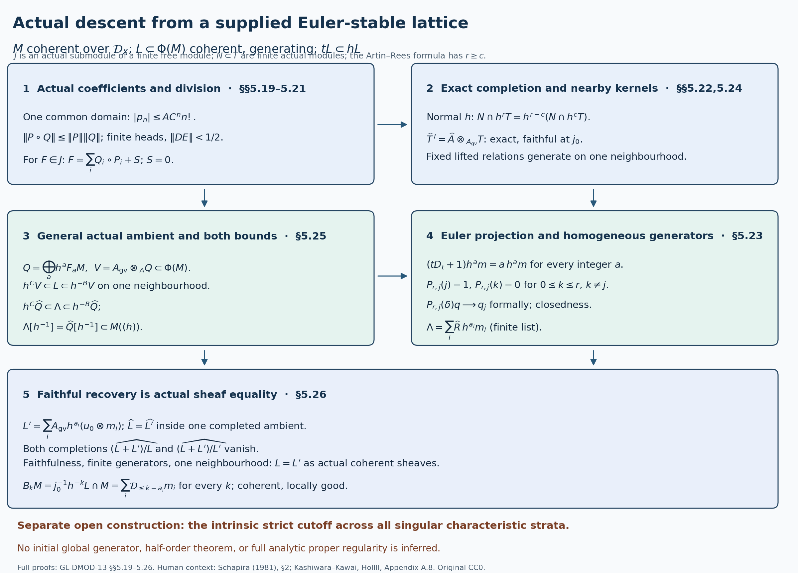
Figure. The actual norm and finite-head division in §§5.20–5.21 give convergent coefficients and finite actual relations. §§5.22 and 5.24 supply exact faithful stalk completion and fixed neighbourhood kernels. The two actual bounds in §5.25 identify the formal localized lattice. The finite-node Euler projections in §5.23 are applied after the common grading shift makes the degrees nonnegative; they give homogeneous generators. The two vanishing coherent quotients in §5.26 recover actual sheaf equality and every ordinary order piece. The canonical cutoff remains a separate requirement. All arrows are proved in the displayed sections. Human context: Schapira, the freely accessible article cited in §5.19, and Kashiwara–Kawai, Holonomic systems III, Appendix A.8, printed pp. 966–968; no external descent assertion is used as a proof. The reproducible original drawing source supplies the CC0 illustration.
5.27. An actual coherent strict coefficient lattice on a singular divisor
5.27.1. Hypotheses, conventions and earlier analytic proofs
Let $X$ be a complex manifold, $Y\subset X$ a reduced analytic hypersurface, and $\mathscr E$ a coherent $\mathcal O_X(*Y)$-module with an integrable connection. Here coherence over $\mathcal O_X(*Y)$ means locally a finite presentation by actual meromorphic matrices with a finite pole order on one neighbourhood. All sections, matrices, derivatives and coordinate changes in this leaf are convergent analytic or meromorphic. No completion of a sheaf stalk is used.
Assume that, on a nonempty relatively open part of the smooth locus of each local irreducible component of $Y$, the connection is regular on a nonempty open family of transverse analytic discs. The assumption is local at every $p\in X$, with the local components through $p$. It is an analytic divisorial hypothesis, not a test on algebraic curves. The zero-rank module is allowed.
Put $\Sigma=\{\lambda\in\mathbf C:0\leq\operatorname{Re}\lambda<1\}$. Our residue convention is $\nabla=d+B\,dq/q+\cdots$; horizontal monodromy is $\exp(-2\pi iB)$. For a horizontal dual section paired with a coefficient section, the scalar powers have exponent $+\lambda$. This explains the sign in the strict Nilsson statement below.
The full local proofs of Fuchs's criterion, Theorem 3.3, and the normalized local analytic theorem, Theorem 5.0, give the following inputs. The parameter finite-pole proof is Lemmas 5.0.1–5.0.3; the meromorphic uniqueness proof and analytic disc criterion include all nilpotent blocks. We use precisely these proved local analytic portions:
- For a convergent scalar cyclic equation of rank $r$, regularity is equivalent to $q^j a_j$ holomorphic, $1\leq j\leq r$. Its proof supplies the monic falling-factorial relation, with coefficients on the left.
- On a smooth divisor chart, a nonempty open family of regular transverse analytic discs supplies an actual free meromorphic frame and a free normalized logarithmic lattice. The finite-pole step is the proved parameter Laurent/Baire argument, not a formal-to-sheaf assertion.
- A normalized logarithmic bundle is uniquely identified with the constant residue model. All nilpotent blocks are retained. Uniqueness follows from the invertibility of the leading-pole Sylvester operator, because differences of real parts in $\Sigma$ belong to $(-1,1)$.
The analytic local-ring proof, Theorem 3.1 and Lemmas 2.3, 2.4, 3.3, proves that $H=\mathcal O_{X,p}$ is a factorial Noetherian domain. Its convergent preparation and division inputs are actual analytic proofs. Theorem 3.4 in the same local-ring lesson proves persistence of coprimality on an actual neighbourhood. The full Oka proof, Lemma 2.2 and Theorem 2.1, gives actual neighbourhood finite generation of the kernel of a finite row of holomorphic coefficients. The finite-module consequences can be obtained without importing the general proposition cited there: induct on the number of rows of a finite matrix. A finite generating family for the kernel of the first rows turns the last row into a finite row on those generators, whose kernel is finite; its image generates the full matrix kernel. For a map between two finitely presented modules, lift its finite generator matrix to the two free presentations. The kernel of the finite block matrix consisting of that lift and the negative target relation matrix is finite by the preceding result; its projection to the source module generates the desired kernel. Finite cokernels and images then have finite presentations. This proves precisely the neighbourhood kernels, images and duals used below. A finite presentation also suffices for the localization and dual calculations in §5.27.8.
For completeness, the polynomial-factorial step used in the earlier convergent factoriality proof has the following elementary argument. Let $A$ be a factorial domain and $K_A$ its fraction field. The content of a nonzero polynomial is the product of the minimum prime valuations of its coefficients. Contents multiply: after dividing out contents, reduction modulo any prime of $A$ gives two nonzero polynomials over the domain $A/(\pi)$, whose product is nonzero. Thus the product of primitive polynomials is primitive. The ring $K_A[T]$ has division with remainder; division decreases degree, so every ideal is principal and Bézout proves that irreducibles are prime. Factoring there and clearing the denominators of each factor gives primitive polynomials in $A[T]$. If two primitive polynomials differ by a scalar in $K_A$, the minimum valuation of their coefficients is zero at every prime, so that scalar has valuation zero at every prime and is a unit of $A$. It follows that a primitive polynomial in $A[T]$ factors into primitive lifts of the irreducible factors over $K_A$, up to a unit. Each such lift is prime in $A[T]$: divisibility of a product over $K_A$ selects a factor, and the primitive denominator-clearing argument in the earlier Gauss Lemma 3.3 puts its quotient back in $A[T]$. A prime of $A$ remains prime in $A[T]$ since the quotient is $(A/(\pi))[T]$, a domain. Factoring the content and primitive part therefore proves that $A[T]$ is factorial. Starting with $A=\mathbf C$ and using the earlier convergent Weierstrass Lemmas 2.3–2.4 proves the factoriality step of its Theorem 3.1 without using the external polynomial-ring citation as a proof.
We also record the height-one and DVR facts used below, without invoking a principal ideal theorem. In a factorial domain $H$, an irreducible $q$ generates a prime ideal. If a nonzero prime $\mathfrak r$ is contained in $(q)$, factor a nonzero element of $\mathfrak r$; primality puts one irreducible factor $a$ in $\mathfrak r$. Since $a\in(q)$, irreducibility makes $a$ associate to $q$, whence $\mathfrak r=(q)$. There is therefore no prime strictly between $0$ and $(q)$, so $(q)$ has height one. Conversely a height-one prime $\mathfrak p$ contains an irreducible factor $q$ of any of its nonzero elements. The inclusions $0\subsetneq(q)\subset\mathfrak p$ force $\mathfrak p=(q)$. In $H_{(q)}$ every nonzero fraction is $q^m$ times a unit, by unique factorization; the minimum valuation of a nonzero ideal generates that ideal. Thus it is a DVR. Finally a reduced fraction with a nonunit denominator fails membership at a denominator-prime localization, whereas a fraction in $H$ belongs to all of them. This proves $H=\bigcap_{\operatorname{ht}\mathfrak p=1}H_\mathfrak p$ inside its fraction field, including the precise prime indexing.
Elementary polynomial, field and radical details. The following arguments make explicit the algebra used in the divisorial identity argument and in the earlier analytic Nullstellensatz.
Let \(K\) be a field of characteristic zero. A nonconstant irreducible polynomial \(P\in K[T]\) is separable: its derivative is nonzero and has smaller degree, so a common divisor of \(P,P'\) would have to be \(P\), an impossibility. Euclidean division therefore gives \(\gcd(P,P')=1\). In an algebraic closure a repeated root is precisely a common root with the derivative, so all roots are distinct. For a finite extension obtained by adjoining finitely many algebraic generators, every embedding of the preceding field extends in as many ways as the degree of the next minimal polynomial, by sending that generator to each of its distinct roots. Induction and the tower-degree formula give exactly \([L:K]\) embeddings of a finite characteristic-zero extension \(L/K\).
For the primitive-element step, take generators \(b_1,\ldots,b_s\) of \(L/K\). The finitely many embeddings differ on at least one generator. A complex linear combination \(u=\sum c_i b_i\), when \(K\) contains \(\mathbf C\), has pairwise distinct conjugates after excluding finitely many proper complex linear subspaces of the \(c_i\). Its minimal polynomial then has at least \([L:K]\) roots and degree at most \([L:K]\), so \(K(u)=L\). Equivalently the generators can be recovered by Euclidean gcds. For two generators \(a,b\), choose a nonzero scalar \(c\) so that \(a+cb\) differs from every other sum \(a_i+cb_j\) of roots of their minimal polynomials. Only finitely many scalars are excluded. In \(K(a+cb)[T]\), the minimal polynomial of \(b\) and the polynomial obtained from that of \(a\) by substituting \(a+cb-cT\) have exactly the one common root \(b\). They are separable, so their monic gcd is \(T-b\). Its coefficients put \(b\), and then \(a\), in \(K(a+cb)\); induction handles any finite list.
For nonzero polynomials \(P,G\in K[T]\) of degrees \(m,n\), respectively, the Sylvester resultant is the determinant, up to a fixed sign, of the linear map \[ \begin{gathered} \{A:\deg A<n\}\oplus\{B:\deg B<m\}\\ \longrightarrow\{C:\deg C<m+n\},\\ (A,B)\longmapsto AP+BG . \end{gathered} \] The spaces have the same finite dimension. A common factor \(D\) of positive degree gives the nonzero kernel pair \((G/D,-P/D)\). Conversely, if \(AP+BG=0\) with the displayed degree bounds and \(\gcd(P,G)=1\), Bézout's identity makes \(P\mid B\), whence \(B=0\), and then \(A=0\). Thus the determinant vanishes exactly when the polynomials have a common factor. A nonzero constant \(G\) gives the same nonvanishing conclusion directly; the zero polynomial is treated separately. The matrix entries are polynomial expressions in the coefficients, so for holomorphic coefficient families the resultant is holomorphic. Apply this with \(G=P'\) to obtain the nonzero discriminant in the separability case. Apply it with a Weierstrass remainder to justify the divisorial identity argument below, including the case of a constant remainder.
A factorial domain is integrally closed by the same prime valuations: if a reduced fraction \(a/b\) satisfies a monic equation of degree \(m\), multiplication by \(b^m\) shows that any prime dividing \(b\) divides \(a^m\). That contradicts coprimality. Hence \(b\) is a unit. This supplies the normality used for the coefficient algebra in the earlier finite parametrization proof.
Finally, for any commutative ring \(A\) and ideal \(J\), \[ \sqrt J=\bigcap_{\mathfrak p\supset J,\ \mathfrak p\ {\rm prime}}\mathfrak p. \] Every prime containing \(J\) contains its radical. For the converse take \(a\notin\sqrt J\); the powers \(1,a,a^2,\ldots\) are disjoint from \(J\). The union of a chain of ideals containing \(J\) and disjoint from these powers still has that property. The maximality principle therefore gives a maximal such ideal \(\mathfrak p\). If \(u,v\notin\mathfrak p\) but \(uv\in\mathfrak p\), maximality gives \(a^r=p_1+bu\) and \(a^s=p_2+cv\), with \(p_1,p_2\in\mathfrak p\). Multiplying puts \(a^{r+s}\) in \(\mathfrak p\), a contradiction. Thus \(\mathfrak p\) is prime and excludes \(a\). This proves the formula, including the unit-ideal case with an empty intersection. With the earlier full prime-ideal vanishing proof, it gives the analytic Nullstellensatz used below.
Finite linear avoidance is also elementary here. If an ideal is not contained in any of finitely many divisor primes, choose one element outside each prime and take their finite complex linear span. Each prime cuts out a proper linear subspace of that span. Finitely many proper linear subspaces cannot cover a finite-dimensional complex vector space: choose a nonzero linear functional vanishing on each, and their product is a nonzero polynomial, which cannot vanish at every point over an infinite field, by induction on the number of variables. Hence one linear combination avoids every divisor prime.
One analytic consequence needed repeatedly can also be proved directly from those inputs. If $q\in H$ is irreducible and $g\in H$ vanishes on a nonempty smooth open part of the local hypersurface $q=0$, then $q\mid g$. After a linear coordinate change, replace $q$ by its irreducible Weierstrass polynomial $P(z',z_n)$, and divide $g$ by $P$ to obtain a polynomial remainder $G$ of degree less than $\deg P$. The discriminant of $P$ is nonzero: over $\operatorname{Frac}\mathbf C\{z'\}$, an irreducible characteristic-zero polynomial is separable. Choose an unramified point in the given open part. On its projected open set, one root of $P$ is also a root of $G$, so the resultant $\operatorname{Res}(P,G)$ is zero there. The holomorphic identity theorem makes the resultant identically zero. Gauss's lemma makes $P$ irreducible over the fraction field, hence $P\mid G$, which forces $G=0$. This proves the assertion. In particular a finite list of nonzero meromorphic functions has its claimed $q$-valuations on a nonempty smooth open part of $q=0$, avoiding the zeros of the finitely many residual numerators and denominators.
This coefficient construction uses actual analytic finite presentations and sheaf duals. The bounded ambient comparison in §5.25 does not identify an arbitrary microlocal module with the meromorphic connection here; that realization remains a separate obligation in §5.27.12.
5.27.2. Statement
Theorem 5.27. Under all the hypotheses of §5.27.1, there is a unique coherent reflexive $\mathcal O_X$-submodule \[ \mathscr L_\Sigma\subset\mathscr E,\qquad \mathscr L_\Sigma(*Y)=\mathscr E, \tag{5.27a} \] whose restriction on every smooth divisor chart is the normalized logarithmic lattice. This restriction exists at every smooth point of $Y$, including points outside the regular open sets in the hypothesis. At a singular point, $\mathscr L_\Sigma$ is allowed to be reflexive rather than locally free.
For a local meromorphic section $s\in\mathscr E$, membership in $\mathscr L_\Sigma$ is detected by strict Nilsson membership on the smooth divisor locus. Namely, pair with a basis of horizontal dual sections and use the local constant-residue model; the resulting multivalued scalar expressions are finite sums \[ \sum_{\lambda\in\Sigma}\sum_{j=0}^{r-1} q^\lambda(\log q)^j a_{\lambda,j}(q,w), \tag{5.27b} \] with holomorphic coefficient functions. The intrinsic condition is membership in the normalized lattice; (5.27b) is its expression in that model. No choice of a single-valued branch on all of a punctured neighbourhood is asserted.
The following statements hold at every point of $Y$, including all singular strata:
- Saturation. If $g$ is holomorphic and nonzero on every local irreducible component of $Y$, $s\in\mathscr E$, and $g^m s\in\mathscr L_\Sigma$, then $s\in\mathscr L_\Sigma$.
- Logarithmic stability. If $\eta$ is a holomorphic vector field satisfying $\eta(I_Y)\subset I_Y$, then $\nabla_\eta\mathscr L_\Sigma\subset\mathscr L_\Sigma$. The algebra generated by holomorphic functions and these logarithmic covariant derivatives also preserves it.
This is a coefficient theorem on a singular hypersurface, with no projectivity hypothesis on $X$ or $Y$.
5.27.3. A finite actual initial lattice and projectivity off the divisor
Fix $p\in X$, $H=\mathcal O_{X,p}$, a reduced equation $f$, $R=H[f^{-1}]$, and $K=\operatorname{Frac}H$. A finite $R$-presentation of $E=\mathscr E_p$, after clearing finitely many denominators, is the localization of a finite $H$-presentation $C$. Thus $C[f^{-1}]=E$. The kernel of $C\to E$ is precisely the union of the kernels of multiplication by $f^k$. That ascending chain stabilizes, since $C$ is Noetherian. Take $N$ for which it stabilizes and set $F=C/\ker(f^N:C\to C)$. Then $F\subset E$ and $F[f^{-1}]=E$.
This is a neighbourhood construction. Represent the finite presentation and $f^N$ near $p$, take its coherent kernel, and form the coherent quotient. Multiplication by $f$ on the quotient has coherent kernel and zero stalk at $p$. A coherent sheaf with zero stalk has zero on a neighbourhood: write finitely many local generators, each zero on some neighbourhood, then intersect those finitely many neighbourhoods. Shrink once. The quotient is now $f$-torsion-free throughout that neighbourhood and embeds into its localization $\mathscr E$. Thus we have an actual coherent initial lattice $\mathscr F\subset\mathscr E$, not merely finite stalk generators.
We shall need $E$ to be projective over $R$. Here is a proof. The ring $R$ is Noetherian and its only ideals stable under every coordinate derivation $\partial_i$ are $0,R$. For a nonzero such ideal, multiply a nonzero meromorphic member by a power of $f$, obtaining $0\ne u\in H$ in the ideal. A derivative corresponding to a nonzero Taylor coefficient of least total degree has nonzero value at $p$, so it is a unit of $H$. That derivative is in the ideal by stability.
Take a finite presentation $R^a\xrightarrow{\phi}R^b\to E\to0$. For a coordinate derivative $\partial$, lift the connection on the $b$ chosen generators to a matrix $B\in M_b(R)$, so $\partial+B$ on $R^b$ induces the connection on $E$. It preserves the relation module. For the $a$ chosen relation generators, choose preimages of their derivatives in $R^a$; their columns form $A\in M_a(R)$, and \[ \partial\phi+B\phi=\phi A. \tag{5.27c} \] By the determinant multilinearity formula, the derivative of each minor of $\phi$ is a sum of minors of the same size multiplied by entries of $A,B$. Consequently all Fitting ideals of $E$ are differential ideals. Put $r=\dim_K(E\otimes_RK)$. At the generic point, $\operatorname{Fitt}_{r-1}E=0$ and $\operatorname{Fitt}_r E=K$. The first ideal is zero already in the domain $R$; the second is nonzero and hence $R$.
For completeness these conditions imply projectivity of rank $r$. If $r=0$, $\operatorname{Fitt}_0E=R$ makes the presentation surjective at every maximal ideal and hence $E=0$; every subsequent lattice is zero and all claims follow. Otherwise, at a maximal ideal of $R$, one $(b-r)$-minor is a unit. Elementary invertible row and column operations split that block off as an identity and reduce the presentation to $\psi:R^{a-b+r}\to R^r$. All $(b-r+1)$-minors vanish by $\operatorname{Fitt}_{r-1}=0$, so all entries of $\psi$ vanish. The cokernel is free of rank $r$ there. The unit minor works on an open neighbourhood in $\operatorname{Spec}R$, and these neighbourhoods cover; a finite locally free module is projective. This last assertion can be seen by taking a finite cover by principal opens and using a partition of $1$ by sufficiently high powers of their defining functions to patch local lifts of a map from the module through a surjection. Thus $E$ is projective and embeds in $E_K=E\otimes_RK$. In particular the initial $F$ is torsion-free over $H$.
5.27.4. Actual stable lattices at the finitely many divisor primes
Factor $f=u\prod_{i=1}^s q_i$ into distinct irreducibles. Put $H_i=H_{(q_i)}$. Factoriality makes $H_i$ a discrete valuation ring, with uniformizer $q_i$, fraction field $K$, and residue field $\kappa_i=\operatorname{Frac}(H/(q_i))$. These are localizations of actual analytic germs, not formal coefficient rings.
Choose a coordinate derivative $\partial_j$ for which $d_i=\partial_jq_i\notin(q_i)$, and put $v_i=d_i^{-1}\partial_j$. Such a derivative exists since a characteristic-zero reduced Weierstrass polynomial is generically smooth. Then $v_i(q_i)=1$, and $v_i$ preserves $H_i$: both $d_i$ and any denominator outside $(q_i)$ are units there. Write $D=\nabla_{v_i}$, $q=q_i$, and $\Theta=qD$.
We first prove cyclicity without importing a formal cyclic-vector theorem. For a $K$-basis $e_0,\ldots,e_{r-1}$ of $E_K$, set \[ \begin{gathered} b_i=\sum_{k=0}^i(-1)^k\binom ik D^ke_{i-k},\\ c(a)=\sum_{i=0}^{r-1}\frac{(q-a)^i}{i!}b_i, \end{gathered} \tag{5.27d} \] where $a$ is a constant indeterminate under $D$. Apply $D^j$, then substitute $a=q$. The result is \[ \begin{gathered} \sum_{i=0}^j\binom jiD^{j-i}b_i=e_j\\ (0\leq j<r). \end{gathered} \tag{5.27e} \] Indeed the coefficient of $D^{j-\ell}e_\ell$ is $\binom j\ell\sum_{k=0}^{j-\ell}(-1)^k\binom{j-\ell}k$, zero unless $\ell=j$. Hence the determinant of $c(a),Dc(a),\ldots,D^{r-1}c(a)$, a polynomial in $a$ over $K$, is not zero. It has only finitely many roots; choose $a\in\mathbf C$ avoiding them. This gives an actual cyclic vector $c\in E_K$ and a unique scalar relation \[ \begin{gathered} D^rc+\sum_{j=1}^r a_jD^{r-j}c=0,\\ a_j\in K. \end{gathered} \tag{5.27f} \]
On a nonempty smooth open part of $q=0$, avoid the finitely many residual numerator/denominator zeros of the basis, the cyclic determinant and the coefficients. This avoidance is justified by the divisorial identity proof in §5.27.1. There $q$ is an actual transverse coordinate, $v_i=\partial_q$ in coordinates $(q,x_1,\ldots,\widehat{x_j},\ldots,x_n)$, and (5.27f) is a convergent meromorphic cyclic equation on each transverse disc. Pairing $c$ with horizontal dual solutions gives its full scalar solution space; multiplication by actual meromorphic coefficients preserves regular growth. The assumed analytic regularity and the earlier Fuchs criterion therefore imply that every $q^ja_j$ has no pole on this open part. Detection of the $q$-valuation there gives \[ \begin{gathered} \nu_{q_i}(a_j)\geq-j,\\ q^ja_j\in H_i. \end{gathered} \tag{5.27g} \] This argument uses actual discs to prove finite valuation bounds on actual germs. It does not replace the analytic sheaf by its formal completion.
Let $F_m(T)=T(T-1)\cdots(T-m+1)$. The identity $q^mD^m=F_m(\Theta)$, proved by the Leibniz rule, changes (5.27f) to the monic relation \[ \left(\begin{gathered}F_r(\Theta)+\\\sum_{j=1}^r q^ja_jF_{r-j}(\Theta)\end{gathered}\right)c=0. \tag{5.27h} \] All coefficients are on the left. The $H_i$-span of $c,\Theta c,\ldots,\Theta^{r-1}c$ is finite free and stable under $\Theta$, by (5.27g)–(5.27h) and $qv_i(H_i)\subset H_i$. Call it $M_i$.
5.27.5. Constant residue spectra, normalization, and nilpotent blocks
Since $qv_i(H_i)\subset qH_i$, the residue $B_0$ of $\Theta$ on $M_i/qM_i$ is $\kappa_i$-linear. We show that its characteristic polynomial has constant complex roots; this fact must not be assumed for a matrix over $\kappa_i$.
Work on one of the smooth regular open charts chosen in §5.27.4. The earlier local analytic proof of Theorem 5.0 gives a normalized logarithmic lattice $L^{\rm can}$ and a constant-residue model $A\in M_r(\mathbf C)$. The meromorphic basis of $M_i$ gives an actual stable lattice on a smaller such chart. It is bounded above and below by two powers of $qL^{\rm can}$, uniformly on that chart, after avoiding its determinant zeros. Filter $M_i/qM_i$ by \[ \begin{gathered} F^k={}\\ (M_i\cap q^kL^{\rm can}+qM_i)/qM_i. \end{gathered} \tag{5.27i} \] There are finitely many nonzero associated quotients. Each is a subquotient of $q^kL^{\rm can}/q^{k+1}L^{\rm can}$, on which the residue is $A+kI$. To check the subquotient claim, first quotient $M_i\cap q^kL^{\rm can}$ by $M_i\cap q^{k+1}L^{\rm can}$, which embeds in the latter canonical quotient, and then quotient by the image of $qM_i\cap q^kL^{\rm can}$. All intersections are stable under $\Theta$.
Thus all residue eigenvalues belong to a finite set of constants $\lambda+k$, $\lambda\in\operatorname{Spec}A\subset\Sigma$, with integers $k$ bounded by the two lattice bounds. The characteristic-polynomial coefficients are holomorphic on the connected chart, and take values in the finite set of elementary symmetric functions of those finite possible multisets. Continuity makes them constant there. The divisorial identity proof in §5.27.1 then makes those coefficients constant in $\kappa_i$. In particular $B_0$ splits into generalized eigenspaces over $\kappa_i$, with complex eigenvalues.
Normalize $M_i$ by finite elementary modifications. The generalized-eigenspace projectors are polynomials in $B_0$ with constant coefficients, using the Euclidean algorithm on its distinct factors $(T-\lambda)^{m_\lambda}$. Lift a basis of each projector image to an $H_i$-basis of $M_i$; the lifted determinant is a unit. The residue matrix is block diagonal and all off-block entries of the full matrix are divisible by $q$.
If a block has eigenvalue with real part below $0$, replace its basis vectors by $q$ times them. Its residue eigenvalue changes by $+1$. If its real part is at least $1$, replace those vectors by $q^{-1}$ times them; its eigenvalue changes by $-1$. Stability persists: conjugating an off-block entry divides or multiplies it by $q$, and the entry that is divided was already divisible by $q$. The new residue matrix is block triangular, its diagonal blocks are the designated shift and the unshifted blocks, and its eigenvalue multiset is exactly the described one. Recompute generalized blocks if shifted eigenvalues meet other eigenvalues. All vectors with any given eigenvalue have the same membership in the strip, so this recomputation does not force a normalized eigenvalue to be shifted as an outlier.
The sum, counted with multiplicity, of the nonnegative integer distances required to move the real parts into $[0,1)$ decreases at every modification. After finitely many steps we obtain a finite free $H_i$-lattice $L_i\subset E_K$, stable under $\Theta$, whose residue has spectrum in $\Sigma$. Generalized blocks and their nilpotents are never discarded. This is a finite construction over actual analytic localizations.
On a nonempty regular smooth chart, the resulting meromorphic frame is normalized and agrees with $L^{\rm can}$. One may apply the earlier normalized uniqueness to the identity map, or repeat its leading-pole proof over the DVR: if the identity from one normalized stable lattice to another had a pole of order $m>0$, its leading matrix would be killed by $-mI+B_0(\cdot)-(\cdot)A_0$, whose eigenvalues have nonzero real part. On generalized Hom blocks the nilpotent remainder is nilpotent, so a finite geometric series supplies the inverse. Repeat for the reverse identity. This proves equality and also independence of all choices at the divisor prime.
5.27.6. Tangential stability at a divisor prime
Write $q=q_i$, $v=v_i$ and use the coordinate vector fields \[ w_k=\partial_{x_k}-(\partial_{x_k}q)v\quad(k\ne j). \] They satisfy $w_k(q)=0$ and $[v,w_k]=0$: they are the coordinate partial derivatives in the actual coordinates $(q,x_1,\ldots,\widehat{x_j},\ldots,x_n)$ on the smooth chart, and equality of the corresponding rational germs follows from equality there. They preserve $H_i$.
In a basis of the normalized $L_i$, write $\nabla_{qv}=qv+B$ and $\nabla_w=w+C$, where $B\in M_r(H_i)$, $C\in M_r(K)$. Flatness and $[qv,w]=0$ give \[ qv(C)-w(B)+[B,C]=0. \tag{5.27j} \] If $C$ had a pole of order $m>0$, write its nonzero leading coefficient as $C_{-m}=q^mC\bmod q\in M_r(\kappa_i)$. Since $v(H_i)\subset H_i$, reducing $q^m$ times (5.27j) modulo $q$ gives \[ (-mI+\operatorname{ad}B_0)C_{-m}=0. \tag{5.27k} \] The eigenvalues of this operator are $-m+\beta-\alpha$, with $\alpha,\beta\in\Sigma$, and none is zero. On a generalized Hom block the remaining operator is a sum of commuting nilpotents and is nilpotent; its finite geometric inverse proves invertibility, including all Jordan blocks. This contradicts $C_{-m}\ne0$. Thus $C\in M_r(H_i)$ and $\nabla_wL_i\subset L_i$.
Every holomorphic vector field $\eta$ logarithmic for $Y$ satisfies $\eta(q_i)\in q_iH_i$, because all other factors of $f$ are units in $H_i$. In the above basis of vector fields it is an $H_i$-linear combination of $q_iv_i$ and the $w_k$. Therefore $L_i$ is stable under every such $\nabla_\eta$.
5.27.7. One finite coherent lattice with all the divisorial germs
We now build an actual finite $H$-module $F_0\subset E$ such that \[ \begin{gathered} (F_0)_{(q_i)}=L_i\\ (1\leq i\leq s),\\ F_0[f^{-1}]=E. \end{gathered} \tag{5.27l} \] For each of the finitely many basis vectors of $L_i\subset E_K$, choose a nonzero denominator outside $(q_i)$ that makes that vector lie in $E$. This is possible by writing it in the original finite $R$-generators and separating all denominator factors into powers of $q_i$ and factors not divisible by $q_i$; powers of $q_i$ are already invertible in $R$. Multiplication by that denominator is a unit of $H_i$, so the resulting vectors still generate $L_i$ there. Multiply each such vector by sufficiently high nonnegative powers of every $q_j$, $j\ne i$, to make it belong to every $L_j$. These multipliers are units of $H_i$ and hence do not destroy generation at $i$. All chosen vectors now lie in $E$ and in every $L_j$.
The finitely generated initial $F$ of §5.27.3 has finitely many generators. Choose $B\geq0$ for which $f^BF\subset L_i$ for every $i$, using the finite DVR valuations of those finitely many generators in the finitely many bases. Let $F_0$ be generated over $H$ by the chosen divisor vectors and $f^BF$. It is a finite torsion-free $H$-module contained in $E$. Each of its divisor localizations contains a generating basis of $L_i$, and all its generators belong to $L_i$, proving the first assertion of (5.27l). The second follows from $f^BF[f^{-1}]=E$.
Choose representatives of the finitely many meromorphic vectors and finite relations on one neighbourhood. The earlier $\mathcal O$-coherence theorem makes their image a coherent subsheaf $\mathscr F_0\subset\mathscr E$. Its localization is $\mathscr E$, after shrinking once. All comparisons at the divisor primes involve finitely many fractions with denominators coprime to the respective $q_i$; coprimality persists by the earlier analytic Theorem 3.4. Thus the same comparisons hold on dense smooth open subsets of every nearby branch of the divisor representatives. We shall obtain the statement at the other points from the coherent sheaf double dual, not by treating the intersection of infinite families of stalk modules as a sheaf.
5.27.8. The reflexive intersection formula, proved inside the actual fraction module
For a finite torsion-free $H$-module $G\subset E_K$ spanning $E_K$, define $G^*=\operatorname{Hom}_H(G,H)$. A finite presentation proves that $G^*$ is finite and that duals commute with localization: dualize the presentation to a kernel between finite free modules, and localize that finite kernel, which is exact. Its $K$-span is $E_K^*$. The double dual $G^{**}$ is thus naturally a submodule of $E_K$, with \[ G^{**}=\{s\in E_K:\ell(s)\in H\text{ for every }\ell\in G^*\}. \] Factoriality gives $H=\bigcap_{\operatorname{ht}\mathfrak p=1}H_\mathfrak p$ inside $K$: in a reduced fraction, a denominator prime of positive multiplicity is detected in precisely its height-one localization. The height-one classification and DVR assertion were proved directly from factoriality in §5.27.1. At such a prime $G_\mathfrak p$ is finite torsion-free over a DVR and is free. An elementary proof of this last fact chooses a nonzero element of least valuation in one coordinate, clears that coordinate using its unit coefficient, and inducts on the rank. Hence $G_\mathfrak p=(G_\mathfrak p)^{**}$. Applying the displayed dual description and the intersection formula for $H$ proves \[ \begin{gathered} G^{**}=\bigcap_{\operatorname{ht}\mathfrak p=1}G_\mathfrak p\\ \text{inside }E_K. \end{gathered} \tag{5.27m} \] This proves reflexivity of $G^{**}$ as well: its height-one localizations agree with those of $G$, and applying (5.27m) again gives the same module.
Set $L=F_0^{**}$. It is finite. At primes dividing $f$, $L_\mathfrak p=L_i$. At primes not dividing $f$, $(F_0)_\mathfrak p=E_\mathfrak p$, by (5.27l). Since $E$ is projective over $R$, it is reflexive over $R$. Applying the same proof of (5.27m) to the factorial localization $R$ shows that the intersection of the latter prime-localizations is $E$. Consequently \[ \begin{gathered} F_0\subset L\subset E,\\ L[f^{-1}]=E. \end{gathered} \tag{5.27n} \]
On the chosen neighbourhood define $\mathscr L=\mathscr F_0^{**}$, using sheaf duals over $\mathcal O_X$. They are coherent finite kernels. At each point sheaf duals have the ordinary finite-module stalk duals, by a finite presentation. Thus (5.27m) holds independently at every nearby actual stalk. The embedding $\mathscr L\to\mathscr E$ is obtained by localizing the finite dual construction and using (5.27n); its finite kernel is zero at every stalk. This is the actual neighbourhood lattice required here.
5.27.9. Stability everywhere, and regularity at all smooth divisor points
Let $\eta$ be a local holomorphic logarithmic vector field and $s\in\mathscr L$. Then $\nabla_\eta s\in\mathscr E$. At every height-one prime not in $Y$, the lattice equals $E$ and the connection preserves $E$. At a divisor prime the lattice is $L_i$, and §5.27.6 proves preservation. Formula (5.27m) therefore gives $\nabla_\eta s\in L$ at $p$.
This also holds at every nearby point. Here is a finite-stalk comparison which makes that assertion precise. At a nearby point $p'$, carry out §5.27.3–§5.27.8 using the local components through $p'$ and obtain $L'$. Such a construction is available by the stated local hypothesis at every point. The finite comparisons and persistence of coprimality in §5.27.7 make the original sheaf $\mathscr F_0$ agree, at each divisor prime of $\mathcal O_{X,p'}$, with the normalized prime lattice of the original finite meromorphic frames. Those frames are normalized on a dense smooth open of that local branch: their finitely many denominators are coprime to it, and the residue characteristic-polynomial identity in §5.27.5 extends there. DVR normalized uniqueness in §5.27.5 identifies that prime lattice with the one used for $L'$. At every other height-one prime both sheaves equal $E$. Sheaf duals commute with stalks by their finite presentations, so both $\mathscr L_{p'}$ and $L'$ have the intersection formula (5.27m), with exactly the same height-one modules. They are equal. The first paragraph of §5.27.9, applied to the construction at $p'$, proves logarithmic preservation there. This uses finite presentation comparisons followed by the proved reflexive formula, without a uniform infinite cancellation argument.
We next prove local freeness at a smooth point of $Y$, including an initially exceptional point. Use coordinates $(q,w)$ with $Y=(q=0)$. The finite module $T=L/qL$ has a flat connection in all the $w$-directions: the logarithmic vector fields $\partial_w$ preserve $L$, commute and preserve $qL$. Their induced connection has holomorphic coefficients in finite presentations. The Fitting-ideal proof of §5.27.3, now over $H/(q)=\mathbf C\{w\}$, shows that $T$ is free. Its rank is $r$, since at the divisor generic point it is $L_i/qL_i$ of dimension $r$.
Lift a free basis of $T$ to $L$. Nakayama gives a surjection $H^r\to L$, with finite kernel $K_0$. Multiplication by $q$ is injective on $L\subset E_K$, so the tensor exact sequence modulo $q$ has zero $\operatorname{Tor}_1^H(H/(q),L)$, as is seen directly from the two-term resolution $H\xrightarrow qH\to H/(q)$. The lifted map is an isomorphism modulo $q$, hence $K_0/qK_0=0$. Nakayama makes $K_0=0$. Thus $L$ is free. Nakayama here follows from the elementary determinant trick: if a finite module $M=qM$, a generator matrix $I-qA$ annihilates its generator column and has unit determinant.
Its logarithmic normal residue has spectrum in $\Sigma$. The characteristic polynomial is the constant normalized polynomial on a dense smooth open set; its holomorphic coefficients are therefore those constants at the initially exceptional point too, by §5.27.1. We have obtained a normalized free logarithmic lattice at every smooth point. The earlier normalized uniqueness now identifies it with the local constant-residue model there. In particular regularity has extended to all smooth points; it was not added to the hypothesis.
The same argument applied to a second construction shows uniqueness. They agree at every height-one prime dividing $f$, by normalized DVR uniqueness in §5.27.5, and at every other height-one prime, because both localize to $E$. Their reflexive intersection formula makes them equal. On overlapping neighbourhoods the same argument applies to every point. Hence the local coherent lattices glue uniquely to $\mathscr L_\Sigma$ in (5.27a), and the construction is independent of the initial presentation, cyclic vectors, coordinates and divisorial bases.
5.27.10. Strict Nilsson membership, including singular points
In a smooth normalized constant-residue chart, write $A=\lambda I+N$ on each generalized eigenspace, $N$ nilpotent. A horizontal dual frame contributes \[ q^A=q^\lambda\sum_{j=0}^{r-1}\frac{N^j(\log q)^j}{j!}. \tag{5.27o} \] Pairing with a coefficient section whose vector is holomorphic gives (5.27b). Conversely this generalized-power criterion implies that the meromorphic coefficient vector in the normalized frame is holomorphic. Here is the needed independence argument. Continuation $T$ around $q=0$ fixes every single-valued meromorphic coefficient, multiplies $q^\lambda$ by $e^{2\pi i\lambda}$, and replaces $\log q$ by $\log q+2\pi i$. Distinct classes in $\Sigma$ have distinct multipliers. Polynomial projectors in $T$, using the relatively prime powers of $T-e^{2\pi i\lambda}$, isolate each exponent class. On one class repeated finite differences lower the log degree and extract the nonzero constant multiple of its top coefficient. Descending induction proves independence of all log powers over single-valued meromorphic coefficients. In (5.27o), the log-degree-zero coefficient of each generalized block is the original meromorphic coefficient vector. If the same scalar pairing has an expansion with holomorphic coefficients, independence makes this vector holomorphic. This proves the converse. Changes of horizontal dual basis are constant invertible matrices and preserve the criterion. The finite nilpotent logarithm matrices retain every Jordan block. This proves the smooth strict Nilsson coefficient criterion with all nilpotent blocks. It asserts no microlocal order formula.
Strict growth equivalence on the actual meromorphic object. In this smooth chart the preceding coefficient criterion is also equivalent to a bound by a power of \(1+\log(1/|q|)\), for all scalar pairings with a horizontal dual basis on bounded-angle sectors and compact parameter sets. If the coefficient vector is holomorphic, it is bounded on a smaller closed product domain. For \(0\leq\operatorname{Re}\lambda<1\), the modulus of \(q^\lambda\) is bounded on a sector of bounded argument as \(q\to0\). The nilpotent exponential is a finite logarithmic polynomial. Thus every pairing has the stated bound, uniformly on smaller compact parameter sets.
Conversely suppose the meromorphic coefficient vector has a pole. Project to a generalized block with a pole of order \(k\geq1\), using the constant residue projectors, and fix a parameter value where its leading vector \(v\) is nonzero. In that block the leading term after multiplication by \(q^A\) is \[ q^{\lambda-k} \sum_{j=0}^{r-1}\frac{N^jv}{j!}(\log q)^j . \] This vector polynomial is nonzero, since its constant coefficient is \(v\). A constant dual row has a nonzero leading logarithmic coefficient. On a fixed radial direction, that row grows as a nonzero constant times \[ |q|^{\operatorname{Re}\lambda-k} (\log(1/|q|))^j \] for some \(j\geq0\). Higher Taylor terms are smaller by a positive power of \(|q|\), times a bounded-degree logarithmic polynomial, and cannot cancel this leading term. Since \(\operatorname{Re}\lambda-k<0\), the leading expression exceeds every fixed logarithmic power. This contradicts the assumed bound. Constant changes of the horizontal dual basis preserve a common bound and allow the block and row to be isolated. A nonzero leading coefficient germ is nonzero on an open parameter set, so this argument excludes every pole germ. It proves the strict logarithmic-growth meaning of the coefficient criterion and gives no microlocal order or half-order formula.
Let $s\in\mathscr E_p$ be meromorphic on an actual neighbourhood and satisfy this strict condition on its smooth divisor locus. Then $s\in L_i$ at each divisor prime: on a nonempty smooth open part the condition says precisely membership in the normalized lattice, and a negative $q_i$-valuation would be detected on such a part. At other height-one primes $s\in E=(F_0)_\mathfrak p$. Formula (5.27m) gives $s\in L$. Conversely a section of $L$ belongs to the normalized logarithmic lattice at every smooth point by §5.27.9, and therefore satisfies (5.27b). This proves strict membership at every singular point by actual finite coefficient dual inequalities, without assuming a coherent $j_*$ extension.
In particular the intrinsic sheaf \[ \{s\in\mathscr E:\ \begin{gathered}s\text{ is strict on the}\\\text{smooth divisor locus}\end{gathered}\} \] is the coherent sheaf $\mathscr L_\Sigma$. The left hand side is not defined as arbitrary functions on the complement: its sections are already actual finite-pole meromorphic sections of $\mathscr E$. This distinction prevents an unwarranted meromorphic-extension assertion.
5.27.11. Local saturation and singular-stratum stability
Take $g\in H$ nonzero on every local component of $Y$, $s\in E$, and $g^ms\in L$. At each divisor prime $q_i$, $g$ is a unit, by §5.27.1 and $q_i\nmid g$. Hence $s\in L_i$. At every other height-one prime, $s\in E=(F_0)_\mathfrak p$ already. Formula (5.27m) gives $s\in L$. This proves the saturation assertion for all actual meromorphic sections of $E$, a stronger coefficient statement than an adjacent-lattice version restricted to $h^{-1}L/L$.
Let $Q\subset E/L$ be a coherent $\mathcal O$-submodule whose support lies in a closed analytic subset $W\subset Y$ containing no local component of $Y$. Choose $g\in I_W$ avoiding the finitely many divisor primes by finite linear avoidance. For a local class $u\in Q$, its cyclic submodule $\mathcal O u$ is coherent. Its support is the zero set of its coherent annihilator ideal, by the finite-presentation support proof, Theorem 3.1. Since that support is contained in $W$, the analytic Nullstellensatz, Theorem 5.1, whose finite parametrization and prime-vanishing proofs are in §§3–4, makes some power $g^m$ belong to its annihilator. Represent $u$ by an actual section $s\in E$. Then $g^ms\in L$, and the proved saturation makes $s\in L$. Thus $u=0$. Applying this to the finite generators gives $Q=0$.
The same conclusion holds for an actual class $s\bmod L$ supported in $W$. Its cyclic $\mathcal O$-module is coherent, as can be checked without assuming $E/L$ coherent. Projectivity of $E$ over $R$ in §5.27.3 gives a split embedding into a finite free $R$-module; its finitely many matrices and identities extend on a neighbourhood. Represent the finitely many generators of $L$ and the single $s$ in that embedding and clear one common finite pole denominator. The resulting holomorphic matrix into a finite free $\mathcal O$-module has coherent kernel by the earlier actual Oka proof. Hence $L+\mathcal O s$ is coherent, and $(L+\mathcal O s)/L$ is the coherent cyclic module of the class. The preceding annihilator argument applies.
This assertion is restricted to submodules and actual supported classes. Arbitrary coherent subquotients of $E/L$ can have support in $W$. For example, with $H=\mathbf C\{x,y\}$, $Y=(y)$, $E=H[y^{-1}]$ and $L=H$, the coherent first-pole submodule $y^{-1}H/H\simeq H/(y)$ has the nonzero quotient $H/(x,y)$ supported at $W=\{(0,0)\}$. Saturation of $L$ under $x$ does not make this quotient vanish. The corrected submodule/class assertion is a coefficient support-vanishing consequence of the constructed lattice, rather than a hypothesis used to construct it.
§5.27.9 has already proved stability at each singular point, with no smoothness or generic-stratum qualification. Thus every finite composition of holomorphic multiplication and logarithmic covariant derivatives preserves $\mathscr L_\Sigma$. This assertion concerns the actual logarithmic differential-operator algebra for the divisor. Identifying it with the relevant generators of a microlocal $\mathscr E_\Lambda$-algebra is an additional step, not a change of notation.
5.27.12. The remaining characteristic cutoff and proper-image obligations
Theorem 5.27 constructs the coefficient lattice under the analytic divisorial hypotheses of §5.27.1, at every point of a reduced analytic hypersurface. Its initial finite coefficient lattice in §5.27.3 is an actual local $\mathcal O_X$-lattice in a supplied finite meromorphic connection. An initial global analytic generator for an arbitrary regular holonomic module remains unconstructed here.
To obtain the characteristic cutoff across singular characteristic strata, the following proofs remain necessary:
- Construct a local generic-position/contact realization, with a convergent quantized contact transformation where needed, and a faithful finite D-type realization over a hypersurface. A realization only on generic characteristic strata does not supply the module at all points.
- Construct actual finite-pole meromorphic coefficient sections satisfying §5.27.1, and prove their analytic divisorial regularity from the given regular holonomic hypothesis.
- Prove the exact microlocal order-membership correspondence, including the half-order shift and every sign, that identifies the strict characteristic cutoff with this coefficient lattice. No half-order cutoff formula is proved in this lesson.
- Transfer the coefficient saturation to the adjacent characteristic quotient $h^{-1}L_0/L_0$ and prove preservation by every generator of the actual characteristic microdifferential-operator algebra. Logarithmic coefficient stability in §5.27.11 does not furnish this identification.
The construction of that cutoff (C1), full analytic regularity under arbitrary proper or support-proper direct image, and the nonprojective cases remain open obligations of the programme. The supplied-lattice descent proved in §§5.19–5.26 and the coefficient theorem above supply their stated inputs without asserting those remaining conclusions.
The figure shows the exact real slice $Y:\ y(y^2-x^3)=0$ in $\mathbf C^2$. Its residue shift, finite double dual, height-one membership, saturation and logarithmic stability have their full proofs in §§5.27.4–5.27.11. The curve picture illustrates singularities and component intersections; the theorem applies in arbitrary complex dimension. The final panel records the remaining realization and order obligations.
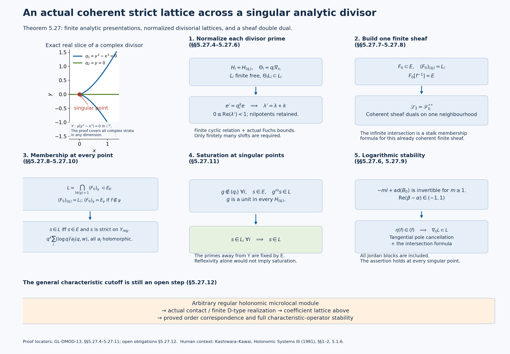
The reproducible drawing source retains the exact coordinates, shift signs and hypotheses. Human context is Kashiwara–Kawai, Holonomic Systems III (1981), §§1–2 and Theorem 5.1.6, freely available. The complete coefficient proof above and the earlier linked analytic proofs establish the statements here; the human reference does not replace the outstanding realization, order or proper-image arguments.
5.28. Convergent contact quantization and whole-germ generic position
This leaf proves an actual finite-order, factorial-growth symbol quantization of a particular homogeneous contact transformation. It also proves the geometric generic-position reduction, under an explicit tangent-cone condition which is verified below for a reduced analytic Legendrian germ. The proof includes the whole germ and all its branches. It does not establish the faithful finite D-type embedding of an arbitrary regular holonomic microlocal module. Section Q.8 records the exact analytic obligations still preventing that conclusion.
The actual symbol, product and finite-order shift proofs are §5.19 and §5.22. The elementary separability, primitive-element, Gauss, normality and radical arguments needed by the analytic parametrization below are proved in §5.27.1. The remaining local analytic inputs are finite irreducible decomposition, Proposition1.2, adapted projection and cone bound, Corollary2.3, holomorphic minimal-polynomial coefficients, Lemma3.2, finite parametrization, Theorem4.1, and Nullstellensatz/dimension, Theorems5.1/5.4 and Proposition5.5. Their full proofs, rather than external contact or curve-selection theorems, are used here.
Q.1. Coordinates and the contact transformation
Let the base dimension be $d+1$, with coordinates $u=(t,x_1,\ldots,x_d)$, covectors $\rho=(\tau,\xi_1,\ldots,\xi_d)$, and $\tau\ne0$. Set $z=\xi/\tau$ and $h=\tau^{-1}$. The distinguished point is $p_0=(u,z,\tau)=(0,0,1)$. A linear cotangent coordinate change and a translation put any nonzero covector in this form. Their symbol maps follow from the chain rule in S.3; their factorial bounds are preserved on smaller fixed polydiscs.
For a symmetric complex $d\times d$ matrix $C$, put
\[ \begin{gathered} a_C(\rho)=\frac{\xi^{\mathsf T}C\xi}{2\tau},\\ b_C(\rho)=\partial_\rho a_C(\rho)\\ =\left(-\frac{\xi^{\mathsf T}C\xi}{2\tau^2},\frac{C\xi}{\tau}\right). \end{gathered} \tag{Q.1} \]Define $\kappa_C(u,\rho)=(u+b_C(\rho),\rho)$. Thus
\[ \begin{gathered} t'=t-\tfrac12 z^{\mathsf T}Cz,\\ x'=x+Cz,\\ z'=z,\qquad\tau'=\tau . \end{gathered} \tag{Q.2} \]This is a holomorphic germ with inverse $\kappa_{-C}$, fixes $p_0$, and commutes with covector dilation. If $\lambda=\tau\,dt+\xi^{\mathsf T}dx$, direct differentiation gives
\[ \begin{gathered} dt'=dt-z^{\mathsf T}C\,dz,\\ dx'=dx+C\,dz,\\ \kappa_C^*\lambda=\lambda. \end{gathered} \tag{Q.3} \]Consequently it is a homogeneous canonical transformation, preserving the contact form $\alpha=dt+z^{\mathsf T}dx$ on the section $\tau=1$. There is no sign or scale factor in (Q.3).
Q.2. A linear incidence lemma
Let $K\subset\mathbf C_x^d\oplus\mathbf C_z^d$ be a closed complex cone whose projectivization is a closed complex analytic set of dimension at most $d-1$. Then one can choose $C=C^{\mathsf T}$, as small as desired, with
\[ \begin{gathered} K\cap\{(x,z):x+Cz=0\}\\ =\{0\}. \end{gathered} \tag{Q.4} \]Here no smoothness or isotropy of $K$ is required. Let $s=d(d+1)/2$. Consider the pairs $([x:z],C)$ with $[x:z]\in\mathbf P(K)$ and $x+Cz=0$. If $z=0$, there are no such pairs. If $z\ne0$, the linear map on symmetric matrices $C\mapsto Cz$ is surjective. Indeed choose $j$ with $z_j\ne0$. For a desired vector $v$, set $C_{ij}=C_{ji}=v_i/z_j$ for $i\ne j$, set the entries outside row and column $j$ to zero, and set
\[ C_{jj}=\frac{v_j-\sum_{i\ne j}(v_i/z_j)z_i}{z_j}. \tag{Q.5} \]The bad matrices have real $2s$-dimensional measure zero. The following proves this without a projected-incidence algebraicity or elimination assertion.
Cover $\mathbf P(K)$ by countably many smooth complex manifold pieces of dimension at most $d-1$. Here is the actual construction using the earlier analytic-germs proof. In a sufficiently small coordinate neighbourhood, decompose its reduced germ into finitely many irreducible components, by Proposition 1.2. For each component the complete finite-parametrization Theorem 4.1 supplies a nonzero discriminant whose complement is a smooth manifold of the component's dimension. The leftover is a proper analytic subset, and Proposition 5.5 proves its strictly smaller dimension. Apply the same construction to each of its finitely many components. Dimension drops strictly, so at most $d$ levels suffice. Use a countable coordinate cover at each level, since projective space and all its subsets are second countable. This produces countably many smooth pieces covering the set; disjointness is unnecessary. These are the actual discriminant and proper-subset dimension proofs at the stated earlier locators, rather than an imported stratification theorem.
On a piece of complex dimension $k\le d-1$, restrict to the finitely many charts $z_j\ne0$. Formula (Q.5) solves the $d$ equations $Cz=-x$; the remaining $s-d$ entries are free. The incidence is locally the product of that piece with $\mathbf C^{s-d}$. Its real coordinate dimension is $r=2k+2(s-d)\le2s-2$. The matrix projection is smooth and thus Lipschitz on each compact coordinate cube. Countably many such cubes cover this incidence: exhaust each coordinate domain by closed cubes contained in it, and exhaust the free affine coordinates by bounded cubes.
A Lipschitz image of an $r$-dimensional real cube in $\mathbf R^{2s}$, for $r<2s$, has $2s$-dimensional outer measure zero. Subdivide a cube of fixed side into at most $A\varepsilon^{-r}$ cubes of side at most $\varepsilon$. For Lipschitz constant $L_0$, each image lies in a $2s$-cube of side at most $2L_0\sqrt r\,\varepsilon$. The sum of covering volumes is at most $A(2L_0\sqrt r)^{2s}\varepsilon^{2s-r}$, which tends to zero. A constant image when $r=0$ has measure zero directly. Countable subadditivity here follows directly: for the $n$th null set choose a cover of total volume less than $\eta/2^n$, and combine the covers to get total volume less than $\eta$. Thus the entire bad matrix set has measure zero. Every nonempty matrix ball has positive volume, and hence contains a good $C$. This proves the arbitrarily small choice. If $d=0$, the projective direction set is empty and $K=\{0\}$, so no choice is required.
Q.3. The entire analytic germ, including singular points
Let $A\subset(T^*X\setminus0,p_0)$ be a reduced homogeneous analytic Lagrangian germ. On $\tau=1$, let $L\subset(\mathbf C^{2d+1}_{t,x,z},0)$ be its reduced Legendrian germ. Its components have dimension $d$, and $\alpha|_{L_{\rm reg}}=0$.
Here is the slicing calculation. The covector Euler field $\mathcal E=\tau\partial_\tau+\sum_i\xi_i\partial_{\xi_i}$ is tangent to the regular locus of the conic germ, by differentiating dilation. Direct contraction gives $\iota_{\mathcal E}(d\lambda)=\lambda$. Lagrangian isotropy says that $d\lambda$ vanishes on the tangent space; since $\mathcal E$ is in that space, $\lambda$ vanishes there too. On $\tau\ne0$, the coordinates $(u,z,\tau)$ and conicity identify $A$ with the product of its $\tau=1$ slice and a nonzero $\tau$ disc. Thus its pure dimension $d+1$ gives pure dimension $d$ for $L$, and the product identifies regular loci. The pullback of $\lambda/\tau$ to the slice is $\alpha=dt+z^{\mathsf T}dx$, so $\alpha$ vanishes on $L_{\rm reg}$. Its projective tangent directions form a closed analytic set of dimension at most $d-1$, and their cone lies in $\{t=0\}$. We prove exactly these analytic facts below; tangent-cone algebraicity is unnecessary.
For an analytic germ $Z\subset(\mathbf C^N,0)$ of dimension at most $d$, construct its projective graph closure by finite equations. On the chart with projective coordinate $j$ equal to one, put $q_j=\ell$, $q_i=\ell v_i$. Substitute into finite equations of $Z$, radicalize their ideal, and saturate that radical ideal $J$ by $\ell$. The exact analytic Nullstellensatz, Theorem 5.1, and finite irreducible decomposition, Proposition 1.2, identify $J$ with the finite intersection of the component prime ideals. Saturation commutes with this finite intersection. For a component prime $\mathfrak p$, its saturation is $\mathfrak p$ if $\ell\notin\mathfrak p$, and the whole ring if $\ell\in\mathfrak p$. Thus its saturated zero set is exactly the union of the components not contained in $\ell=0$. No primary-decomposition theorem is used. The ascending saturation chain stabilizes by the earlier holomorphic Noetherian proof, so these are finite analytic equations near each specified chart point.
The nonzero-$\ell$ part is the graph of $q\mapsto[q]$. It is open and dense in each retained component: its complement is a proper analytic subset, which has smaller dimension and empty interior by the complete earlier Proposition 5.5. That open part is isomorphic to an open part of $Z$, and hence the retained component has dimension at most $d$, by Theorem 5.4, which identifies local finite-projection dimension with the dimension of each regular piece. Proposition 5.5 again bounds its intersection with $\ell=0$ by $d-1$. These constructions agree on chart overlaps because each describes the closure of the same graph, so they define a closed analytic set in the projective fibre. Every rescaled limit direction is in that set: the finite saturated equations vanish on the nonzero graph and persist under limits. The converse follows from the curve construction below. Compactness of projective space then gives a finite coordinate cover around the closed direction set.
Fix an exceptional point $(0,v_0)$ on a retained reduced irreducible component $B$. Apply the earlier finite-parametrization Theorem 4.1 to this component at that exact point, translated to zero. Its adapted projection $\pi_B$ to a polydisc has central fibre equal to the chosen point: the cone bound in Corollary 2.3 says that all complementary coordinates are bounded by a constant times the base coordinates. The projection is proper, and off its nonzero discriminant it is a finite holomorphic covering.
The nonzero function $\ell$ in the component domain has a monic minimal polynomial over the fraction field of the projection base, with holomorphic coefficients by Lemma 3.2. Its constant coefficient is nonzero, since a nonzero element of a field cannot have an irreducible minimal polynomial divisible by $T$. Denote that coefficient by $g_\ell$. At every point with $\ell=0$, $g_\ell$ vanishes on the base. We can exclude any additional proper analytic subset in the same way: choose a holomorphic function nonzero on $B$ that vanishes on that subset, and use the nonzero constant coefficient of its minimal polynomial. For the regular-locus condition, the nonzero graph in $B$ is an open part of one irreducible component of $Z$. Pull back its finite-parametrization discriminant, and also exclude its intersections with the finitely many other components. Each intersection is proper, since the distinct component prime ideals are incomparable. For each intersection choose an equation of the other component which is nonzero on the chosen component, and pull it back to $B$. The resulting finite product is nonzero on the graph and hence on $B$. Outside its zero set the original point belongs to exactly one component and is regular there, so it belongs to $Z_{\rm reg}$.
Choose a complex line through the projection base origin which avoids the initial homogeneous zero set of the product of these finitely many nonzero holomorphic functions and the projection discriminant. Such a direction exists since a nonzero polynomial has a nonempty complement. On a sufficiently small punctured disc of this line, all those functions are nonzero. The finite covering over that punctured disc has a finite sheet permutation as its monodromy. Replace the disc parameter by $s^m$, with $m$ a multiple of the permutation orders; each sheet is then a single-valued holomorphic map.
The covering argument is elementary. Continue a local inverse along a path by a finite subdivision into evenly covered discs; uniqueness on overlaps gives a unique lift. Subdividing a homotopy into small rectangles shows that its endpoint depends only on the path class. A punctured disc retracts radially to a circle. Local continuous arguments lift a circle path to a real angle; its endpoint change is $2\pi$ times an integer, and linear interpolation of angles shows that this integer determines the homotopy class. Monodromy is therefore generated by one finite permutation. The substitution $r=s^m$ changes this generator to its $m$th power, which is the identity for the chosen $m$. Continuation of each sheet is single valued, and local holomorphic inverses make the sheet holomorphic. Properness and the cone bound keep its complementary coordinates bounded and force their limit to the chosen central point. The bounded one-variable removable-singularity argument from the Cauchy integral extends it across zero.
For completeness, if $F$ is a bounded holomorphic coordinate on a punctured disc, put $H(s)=s^2F(s)$ there and $H(0)=0$. Then $H$ is continuous and complex differentiable at zero, with derivative zero, since $H(s)/s=sF(s)\to0$. It is holomorphic on the disc. Its Taylor expansion has zero constant and linear coefficients, so $H=s^2G$ for a holomorphic $G$, which equals $F$ off zero. This proves the required extension for every coordinate. The analytic equations persist under the extension by the holomorphic identity theorem. Thus it gives a holomorphic curve through the specified $(0,v_0)$, with $\ell(s)\ne0$ for $s\ne0$, and with original image in $Z_{\rm reg}$ off zero. There is no assumption that a curve chosen elsewhere passes through the assigned exceptional point.
Apply this to $Z=L$. Since $\ell(s)$ is nonzero off zero, it has a finite positive vanishing order $k$, and its image curve in $L$ has the expansion
\[ \begin{gathered} (t(s),x(s),z(s))\\ =s^k(t_k,x_k,z_k)+O(s^{k+1}),\\ k\ge1. \end{gathered} \tag{Q.6} \]It lies in the regular Legendrian locus off zero. Hence $t'(s)+z(s)^{\mathsf T}x'(s)=0$. The second term has order at least $2k-1$, whereas a nonzero $t_k$ gives order $k-1$ in the first term. Thus $t_k=0$. Every exceptional direction has just been realized by such a curve, proving that the whole tangent-direction cone lies in $\{t=0\}$. Conversely that curve, divided by its leading scalar, realizes its exceptional direction as a rescaled limit, completing the identification with the tangent directions.
Identify these directions with a projective analytic set in $\mathbf P(\mathbf C_x^d\oplus\mathbf C_z^d)$ and apply Q.2 to its cone $K$. Then $\kappa_C(L)\cap\{t'=0,x'=0\}$ has the origin as an isolated point. Otherwise a sequence of nonzero points in this intersection tends to zero. Normalize their preimages by Euclidean length and take a convergent subsequence on the unit sphere. Its nonzero limit $v$ is a tangent direction. Differentiating (Q.2) at zero gives $t(v)=0$ and $x(v)+Cz(v)=0$, contradicting (Q.4). Shrink one neighbourhood to remove all other fibre points. In the conic cotangent space this is
\[ \begin{gathered} \kappa_C(A)\cap\pi^{-1}(0)=\mathbf C^*p_0\\ \text{near }p_0 . \end{gathered} \tag{Q.7} \]The whole characteristic germ is in the generic position of HolIII Definition 1.6.3. Every component and branch is included. This is not a restriction to a smooth generic stratum. A finite union of additional smooth Legendrian germs can be included in the direction set, and the same choice works for all of them.
Q.4. The resummed symbol formula
Let $\mathscr E(0)$ be the actual ring of symbols
\[ \begin{gathered} P(u,\rho)=\sum_{n\ge0}\tau^{-n}p_n(u,z),\\ \sup_K|p_n|\le B_P C_P^n n!, \end{gathered} \tag{Q.8} \]with all coefficients holomorphic on one common neighbourhood and with the bounds on every compact set, as in S.1–S.3. Denote its proved Leibniz product by $\circ$. Finite-order symbols are $\mathscr E=\bigcup_m\tau^m\mathscr E(0)$ as normal symbols; this is the localization by the invertible normal element $h$, whose normality and actual inverse-conjugation estimates are proved in C.1–C.2 of §5.22. One can instead check each finite shift directly by $(n+m)!\le2^{n+m}n!m!$. We use no infinite-order symbol ring here.
Write $a=a_C$, $b=b_C$, $D=d+1$, and set
\[ \begin{gathered} a_\gamma(z)=\left.\frac{\partial_\rho^\gamma a(\rho)}{\gamma!}\right|_{\tau=1,\xi=z}\\ (|\gamma|\ge2),\\ R_a=\sum_{|\gamma|\ge2}h^{|\gamma|-1}a_\gamma(z)\partial_u^\gamma. \end{gathered} \tag{Q.9} \]Define $T_C P$ by
\[ \begin{gathered} T_C P=\sum_{n\ge0}h^n\\ \exp(R_a)\,p_n(u+b(1,z),z). \end{gathered} \tag{Q.10} \]The exponential in (Q.10) is a notation for finite sums at each homogeneous index. Each occurrence of a multiindex $\gamma$ raises that index by $|\gamma|-1\ge1$. The index-$N$ coefficient therefore has $n\le N$, at most $N-n$ factors, and total base differentiation at most $2(N-n)$. All coefficient functions are defined on a common smaller neighbourhood on which $u+b(1,z)$ stays inside the original domain. Since $b(1,0)=0$, such a neighbourhood exists for every fixed $C$.
Q.5. An explicit factorial estimate
Choose compact nested coefficient polydiscs so that, at every shifted point $u+b(1,z)$ in the smaller one, the base-coordinate polydisc of radius $\epsilon>0$ remains in the coefficient domain. Choose $\delta>0$ so that the cotangent polydisc of radius $\delta$ around $(1,z)$ avoids $\tau=0$ and remains in one bounded set for all $z$ in the smaller compact. Let $A_a\ge0$ bound $|a|$ there. Iterated Cauchy estimates give
\[ \begin{gathered} |a_\gamma(z)|\le A_a\delta^{-|\gamma|},\\ |\partial_u^\beta p_n(u+b,z)|\\ \le B_P C_P^n n!\,\beta!\epsilon^{-|\beta|}. \end{gathered} \tag{Q.11} \]Put
\[ \begin{gathered} L=32D^2\max(1,A_a)\\ \max\bigl(1,(\delta\epsilon)^{-1}\bigr)^2. \end{gathered} \tag{Q.12} \]Theorem Q.1. The index-$N$ coefficient $q_N$ of $T_C P$ satisfies
\[ \sup|q_N|\le B_P(C_P+L)^N N! . \tag{Q.13} \]Proof. In a term with $l\ge1$ ordered factors, write $k_i=|\gamma_i|\ge2$, $k=\sum k_i$, and $r=\sum(k_i-1)=k-l\ge1$. It contributes to $N=n+r$. The product of coefficient bounds and the derivative bound in (Q.11), including $1/l!$ from the exponential, is at most
\[ B_P C_P^n n!\, \frac{k!}{l!}\,A_a^l(\delta\epsilon)^{-k}. \tag{Q.14} \]Indeed $\beta!\le k!$ for $\beta=\sum\gamma_i$. Since $l\le r$ and $k=r+l\le2r$,
\[ \frac{k!}{l!}=\binom{k}{l}r!\le 2^k r!\le4^r r! . \tag{Q.15} \]For fixed $r,l$, the number of ordered length lists $k_i\ge2$ with $\sum(k_i-1)=r$ is $\binom{r-1}{l-1}\le2^r$. For each such list, the number of multiindex lists is at most $D^k\le D^{2r}$, by the word-count argument in S.1. Summing over $1\le l\le r$ gives at most $r2^rD^{2r}\le(4D^2)^r$ lists. This slightly sharper count would give $16D^2$ in (Q.12); the stated $32D^2$ is a valid uniform upper bound. The remaining factors in (Q.14) are at most $\max(1,A_a)^r\max(1,(\delta\epsilon)^{-1})^{2r}$. Thus all terms of total loss $r$ are bounded by $B_PC_P^n n!L^r r!$. For $r=0$, the sole term is $p_N(u+b,z)$ and has bound $B_PC_P^N N!$. Sum over $n+r=N$, use $n!r!\le N!$, and use the nonnegative expansion of $(C_P+L)^N$, whose monomial coefficients are at least one. This proves (Q.13). The finitely shifted case $\tau^mP$ has the same base-derivative estimate with its fixed normal prefactor and is treated identically. $\square$
Hence (Q.10) maps the actual symbol class to itself, with a common domain and a verified factorial estimate. It is not an argument that a formal series converges for a numerical value of $h$, and it does not assert that $\exp(a_C(\partial))$ belongs to $\mathscr E$.
Q.6. Multiplication and the inverse
Theorem Q.2. $T_C$ is a sheaf algebra isomorphism on the corresponding germs of the finite-order symbol ring. It preserves order, has inverse $T_{-C}$, fixes $h$ and $\tau$, and its principal-symbol map is pullback by $\kappa_C$.
Proof. We first verify multiplication using the analytic generating functions $e^{v\cdot u}f(\rho)$, where $v$ is an auxiliary parameter and $f$ is a holomorphic homogeneous symbol independent of $u$. For these, the Leibniz formula S.3 and (Q.9)–(Q.10) give the coefficientwise identities
\[ \begin{gathered} (e^{v\cdot u}f)\circ(e^{w\cdot u}g)\\ =e^{(v+w)\cdot u}f(\rho+w)g(\rho),\\ T_C(e^{v\cdot u}f)\\ =e^{v\cdot u}e^{a(\rho+v)-a(\rho)}f(\rho). \end{gathered} \tag{Q.16} \]Translations in the covector are expanded in homogeneous order. The second exponential has leading term $e^{b(\rho)\cdot v}$; its remaining exponent has strictly negative homogeneous order, so each negative-order coefficient is finite. Its formula is exactly (Q.10), not a product of unbounded positive-order operator series. Using (Q.16) twice, the scalar factors in the transformed product telescope:
\[ \begin{gathered} e^{a(\rho+w+v)-a(\rho+w)}\\ e^{a(\rho+w)-a(\rho)}\\ =e^{a(\rho+v+w)-a(\rho)}. \end{gathered} \tag{Q.17} \]Thus $T_C(P\circ Q)=T_C(P)\circ T_C(Q)$ for these generating functions, coefficient by coefficient. Differentiating in $v,w$ at zero gives the identity for polynomial coefficient functions in $u$, with arbitrary holomorphic covector coefficients and arbitrary finite order shifts. For general holomorphic coefficients, take their Taylor polynomials on a larger base polydisc. They and each fixed finite number of their derivatives converge uniformly on a smaller compact polydisc by the iterated Cauchy formula. At any fixed homogeneous index the product and transformation formulas use finitely many coefficient indices and finitely many derivatives, evaluated at points in a fixed shifted compact polydisc. The polynomial identity therefore passes to the uniform limit. This proves multiplication for every actual symbol. The estimates S.1 and Q.1 put both sides in the actual ring, so equality of their coefficients is equality of germs.
For the inverse, $b$ and every coefficient in $R_a$ are independent of $u$. The base translation and all base-derivative operators in (Q.9) commute with one another. Replacing $C$ by $-C$ changes $b,R_a$ to $-b,-R_a$. Thus $T_{-C}T_C=T_CT_{-C}=1$, by cancellation of their finite homogeneous coefficients and the opposite base translations. Each composition uses a common smaller domain and the estimate Q.1, so this is an actual germ identity. The leading coefficient of (Q.10) is $p_0(u+b,z)$, proving the asserted principal-symbol pullback. Symbols independent of $u$, including $h$ and $\tau$, are fixed. Order preservation follows from the leading coefficient and the actual inverse. Restriction commutes with every construction, giving the sheaf germ isomorphism. $\square$
Its values on coordinate operators are
\[ \begin{gathered} T_C(x_i)=x_i+\\ \sum_j C_{ij}\partial_{x_j}\partial_t^{-1},\\ T_C(t)=t-\tfrac12\sum_{i,j}C_{ij}\\ \partial_{x_i}\partial_{x_j}\partial_t^{-2},\\ T_C(\partial_{x_i})=\partial_{x_i},\\ T_C(\partial_t)=\partial_t . \end{gathered} \tag{Q.18} \]These values also follow from the exact commutators with the constant-coefficient order-one expression $a_C(\partial)$; the higher commutators vanish on the coordinate generators. That finite check by itself would not have established the convergent sheaf isomorphism. Q.1 and Q.2 supply the missing analytic argument.
Q.7. Transport of actual finite microlocal modules
Use the convention that $T_C$ pulls symbols back by $\kappa_C$. To transport a left $\mathscr E$-module $M$ to the image germ $\kappa_C(A)$, give its underlying germ the action
\[ P\cdot_{\rm new}m=T_C(P)\cdot_{\rm old}m. \tag{Q.19} \]A finite presentation is transported by applying $T_{-C}$ to each old relation; its inverse is (Q.19) with $-C$. Indeed the new annihilator is $T_C^{-1}(\operatorname{Ann}_{\rm old}M)$, whose symbols vanish on $\kappa_C(A)$. Kernels and exact sequences are preserved since this is restriction along a ring isomorphism. A finite order-zero lattice and its principal relation ideal are transported in the same way; their symbol support becomes $\kappa_C(A)$. No flatness theorem is needed for this step.
Definition 1.1.11(i) of HolIII uses, on an involutive characteristic germ $V$, the subalgebra generated by order-one operators whose first symbol vanishes on $V$, and a finite order-zero lattice stable under that subalgebra. Since $T_{-C}$ preserves the order filtration and sends the vanishing ideal of $V$ to that of $\kappa_C(V)$, it transports precisely these operators, their subalgebra, and each finite invariant lattice. Thus regularity along $V$ is preserved wherever its actual defining lattice is given. Definition 1.1.16 of a regular holonomic module only requires that this property hold outside a nowhere dense set in its characteristic Lagrangian. The biholomorphism $\kappa_C$ preserves that condition as well. We do not strengthen that definition to an invariant lattice at every singular point: HolIII reserves that strengthening for V.1.7. This is a transport statement; it neither constructs the canonical cutoff nor supplies a previously absent invariant lattice on a singular stratum.
The geometric reduction Q.3 together with Q.2–Q.7 therefore removes the need to import an unspecified quantized contact transformation for this generic-position reduction. It does not require a global contact transform, and it makes no assertion about infinite-order rings, infinite-order flatness, or a finite-pole embedding after the reduction.
Q.8. Exact remaining realization obligations
HolIII Theorem 4.1.1, printed p. 906 (PDF page 94), starts with a holonomic finite-order $\mathscr E$-module in generic position and constructs a $\mathscr D^\infty$-linear map
\[ \begin{gathered} \phi:M_{p_0}^{\infty}\longrightarrow N_{q_0}^{\infty},\\ N=L/\mathcal O_X^r,\\ M_{p_0}^{\infty}\longrightarrow\\ \mathscr E_{p_0}^{\infty}\otimes_{\mathscr D_{q_0}^{\infty}}N_{q_0}^{\infty}\\ \simeq\mathscr E_{p_0}^{\infty}\otimes_{\mathscr D_{q_0}}N_{q_0},\\ s\longmapsto1\otimes\phi(s), \end{gathered} \tag{Q.20} \]with the latter map injective and $\mathscr E^\infty$-linear; $L$ is a finite D-type system. This statement alone is neither a map from the actual finite module into a finite-pole coefficient space nor a proof of its faithfulness. The further regularity argument in V.1.1–V.1.4 is essential. The finite and infinite operator rings in this target map are distinct.
The following inputs remain unproved in this leaf. Their source locators identify material to prove, and do not license using their assertions.
-
Finite generic-position ordinary realization. Under the supplied actual finite order-zero lattice and finite principal fibre of G.1, §5.29, G.1–G.5 proves finite generation over the ring commuting with the $x_i$; §5.30, F.1–F.7 proves actual polynomial flatness, whole-stalk reconstruction and polynomial-submodule stability; and §5.31, L.1–L.6 proves a bounded free resolution over the actual finite-order microlocal rings with polynomial matrices on one base neighbourhood. The actual bounded complex is not claimed exact over its polynomial coefficient ring. The equality of a characteristic support defined through an infinite-order extension with the actual principal support remains a separate prerequisite if that convention is used. The infinite-order base change remains open. The commuting ring is distinct from the full order-zero ring bearing the same letter in earlier dummy leaves. No ordinary $h=1$ specialization supplies those remaining inputs. For every coherent actual holonomic germ, §5.32, J.1–J.3 constructs that actual lattice and proves the finite principal fibre after the contact reduction; the actual finite-order support convention is explicit. Section 5.33, K.1–K.3 supplies a convergent ordinary negative-order Volterra kernel complex, with the endpoint relation stated in K.2.
-
Sectorial complex-analytic operator action and relative vanishing. HolIII IV.4.4.1 imports Kashiwara–Schapira, Micro-hyperbolic systems, Theorem 4.5.1. That theorem is freely available, but its proof reduces to its own Theorem 4.1.1 and Corollary 3.2.5, which require the convergent complex-domain kernel action and division estimates. HolIII weakens its condition (c3) to exactness on $\Omega_1\setminus\Omega_0$. The exact weakened statement, the cone conditions, and every cohomological shift still require a complete proof. A smooth real-symbol propagation or Egorov argument cannot replace the complex factorial-growth action.
-
Continuation on the entire hypersurface complement. HolIII IV.4.5.2 refers to an earlier continuation argument and leaves the proof to the reader. It must be supplied for representatives of every sectorial solution, including all branches of the singular characteristic support, with one actual multivalued germ of finite determination. IV.4.5.3's second-fibration and Hartogs argument also requires the convergence and sheaf action proved in III.4. It is not a meromorphic coefficient calculation.
-
Separation of sections at singular support. IV.4.6.1 and IV.4.6.2 assert finite dimensionality and injectivity of evaluation against sectorial solutions on $M^\infty$. The argument uses generic-position realization and a support/purity assertion for actual infinite-order sections. Testing smooth characteristic strata alone does not prove the assertion at the assigned singular point. Positive-degree completion's zero-object detection is a different functor and does not establish this separation.
-
Infinite-order linearity and faithful tensor maps. IV.4.7.1 explicitly treats $\mathscr E^\infty$-linearity as a substantive step. It uses III.4.9 to enlarge a finite-codimensional monodromy ideal under the full $\mathscr A^\infty$-action, and III.5.5 for the $\mathscr E^\infty\otimes_{\mathscr A^\infty}$ comparison. The finite-order isomorphism in Q.6–Q.7 and the actual positive-degree completion prove neither this kernel action nor infinite-order flatness. They cannot justify the tensor-submodule inclusion at the end of IV.4.7 by analogy.
-
Passage to faithful finite poles for a regular module. HolIII V.1.1 uses the embedding above and the regular-singular-to-Nilsson implication at generic divisors, then extension to the whole finite D-type system. V.1.2–V.1.4 recover a finite $\mathscr D$-module and an actual finite-pole injection. Its generic regularity test, finite generation at the base point, and extension on a common neighbourhood must all be proved with the exact ordinary/microlocal comparison. The coefficient lattice of §5.27 starts after this passage; using it to assume the passage would be circular.
The intrinsic microlocal order comparison and characteristic-operator stability in §5.27.12 remain subsequent obligations even after these six inputs are closed. C.1 and the arbitrary proper/support-proper analytic theorem remain open. The present substantive conclusion is Q.2–Q.7, not Q.20 or the finite D-type embedding.
Q.9. Illustration and reproducibility
The figure below shows a stated real coordinate slice of the exact singular Legendrian germ
\[ \begin{gathered} x=s^3,\qquad z=s^2,\\ t=-\tfrac35s^5,\qquad C=1,\\ x'=s^3+s^2,\\ t'=-\tfrac35s^5-\tfrac12s^4. \end{gathered} \tag{Q.21} \]The contact equation is $dt+z\,dx=0$. Its tangent-cone line is the $z$-axis; $x+z=0$ misses that line except at zero. The plotted interval is explicitly $|s|\le0.4$; the other root of the projected equation $x'=0$ at $s=-1$ lies outside the chosen local interval, so the plot asserts only the local germ result. The figure separately displays the symbol-class bound (Q.13), exact inverse, and the unproved finite D-type arrow. It is an illustration of the original contact/quantization argument, not evidence of full realization. The displayed projection and interval illustrate the local mechanism; the proof includes every complex branch.
Free human source context: M. Kashiwara and T. Kawai, On the holonomic systems of microdifferential equations. III. Systems with regular singularities, author-hosted full PDF, I.6 and IV.1–IV.7, V.1.1–V.1.4; M. Kashiwara and P. Schapira, Micro-hyperbolic systems, author-hosted full PDF, III–IV. The exact remaining targets are in Q.8. Their citations do not replace any required proof.
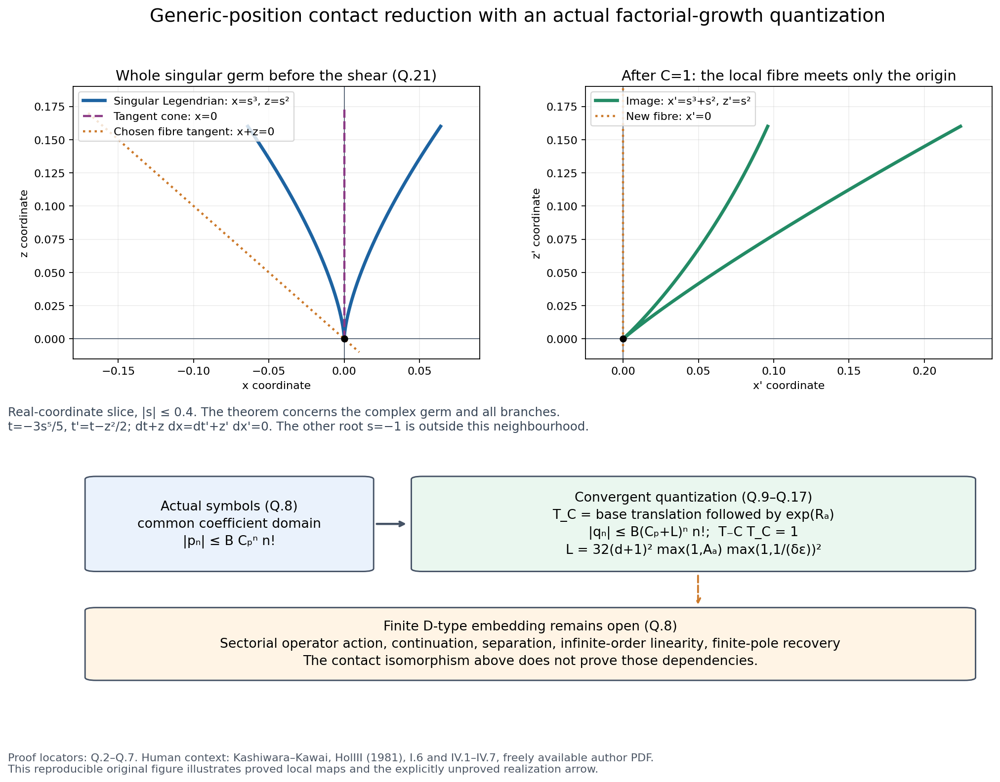
The plotted real slice is the projection of (Q.21), for $|s|\le0.4$ and $C=1$. The entire complex-germ reduction is proved in Q.2–Q.3, and the actual convergent symbol isomorphism in Q.4–Q.7. The dashed finite D-type arrow remains open as specified in Q.8. Free human source: Kashiwara–Kawai, author-hosted HolIII, I.6 and IV.1–IV.7.
5.29. Actual finite generation over the coordinate-commuting ring
This leaf proves a convergent generic-position finite-generation statement. Its precise premise is an actual finite order-zero lattice with finite principal fibre, as in (G.1). Its conclusion includes the entire actual stalk and its singular-support sections. It does not prove the infinite-order extension or faithful finite D-type embedding.
The exact earlier proofs are §5.19, S.1–S.4 for the actual symbol class and product; §5.20, B.1–B.2 for the complete derivative norm and product estimate; §5.21, N.1–N.18 for absolute Taylor weights, completeness, support projection, Dickson heads, monomial division and convergent simultaneous division; and §5.22, C.1–C.2 for actual normality and finite order shifts. The analytic Nullstellensatz used in G.1 is Theorem5.1, with its elementary algebra proved in §5.27.1. The relative remainder supports and contraction needed here are proved below.
G.1. The exact premise and smaller ring
At $p_0=(u,z,\tau)=(0,0,1)$, put $u=(t,x_1,\ldots,x_d)$, $z=\xi/\tau$, $h=\tau^{-1}$. Let $E_0$ be the actual order-zero factorial-growth stalk and $E$ its finite-order localization. Let $M$ be a left $E$-module and let $M_0\subset M$ be generated by finitely many $m_1,\ldots,m_b$ over $E_0$, with $EM_0=M$. Suppose
\[ \begin{gathered} V=(M_0/hM_0)\otimes_{\mathbf C\{u,z\}}\mathbf C\{z\}\\ \text{is finite dimensional over }\mathbf C,\\ u\longmapsto0 . \end{gathered} \tag{G.1} \]The image $hM_0$ is a left submodule because $h$ is normal. Its quotient is finite over the commutative symbol ring $E_0/(h)=\mathbf C\{u,z\}$. If the actual principal-symbol support of this lattice meets the base fibre only at $z=0$, (G.1) follows: its fibre is finite over $\mathbf C\{z\}$, the analytic Nullstellensatz puts a power of $(z)$ in its annihilator, and the finite generating list is then spanned by finitely many $z$-monomials over $\mathbf C$. Nilpotents and nonreduced principal modules are included.
Define $A_0\subset E_0$ by requiring every homogeneous coefficient to be independent of $z$. All $\xi$-derivatives in the Leibniz product vanish, so this is a subring; its only internal contractions use $\tau,t$. Put $A=A_0[h^{-1}]$. It is exactly the subring of $E$ commuting with all $x_i$, because
\[ [P,x_i]=\partial_{\xi_i}P. \tag{G.2} \]Indeed the right factor $x_i$ has only its zero and first base derivative, while the left factor $x_i$ has no cotangent derivative. Equation (G.2) says that each coefficient has zero $z_i$-derivative. The normal-element formulas of §5.22, C.1–C.2, remain actual in this subring. Here $A$ denotes precisely the coordinate-commuting ring; the full actual order-zero ring is $E_0$.
G.2. Finite pure-covector heads
Let $I\subset E_0^b$ be the kernel of $e_j\mapsto m_j$. Let $\bar I\subset\mathbf C\{u,z\}^b$ be its principal image modulo $h$, and let $J\subset\mathbf C\{z\}^b$ be the image of $\bar I$ under $u=0$. Then
\[ \mathbf C\{z\}^b/J\simeq V. \tag{G.3} \]The principal-kernel lifting in this assertion is important. If a vector has image $hm$ in $M_0$, lift $m$ to $w\in E_0^b$ and subtract $hw$. The difference lies in $I$ and has the same principal vector. Thus the principal kernel is exactly the principal image of $I$. Tensoring the resulting cokernel presentation with $\mathbf C\{z\}$ is right exact and proves (G.3).
Use the least total $z$-degree, then the least lexicographic exponent, then the least component as the head of a nonzero vector in $J$. Its exponent diagram is upward closed under multiplication by $z$-monomials. The complete Dickson argument of §5.21, N.2 gives finitely many minimal heads $(\gamma_i,j_i)$. Select $v_i\in J$ having those heads, normalized to head coefficient one. Since (G.3) has finite complex dimension $m$, every $z_i$ acts nilpotently: $z_i-\lambda$ is an invertible analytic germ for every nonzero scalar $\lambda$, so its matrix $Z$ has characteristic polynomial $T^m$. The cofactor identity $(TI-Z)\operatorname{adj}(TI-Z)=\det(TI-Z)I$ is a polynomial identity; the adjugate coefficients commute with $Z$, so evaluation at $T=Z$ gives $Z^m=0$. Thus $z_i^mV=0$. The commuting actions then make $(z)^{dm+1}V=0$. This is also immediate when $V=0$. Thus $(z)^k$ annihilates it for some $k$, and every exponent of total degree at least $k$ lies in that head diagram. Consequently
\[ \begin{gathered} B=\{(\beta,j):\beta\notin\\ \bigcup_{i:j_i=j}(\gamma_i+\mathbf N^d)\}\\ \text{is finite.} \end{gathered} \tag{G.4} \]Each $v_i$ is the specialization of the principal vector of an actual relation $P_i\in I$: express it as a finite $\mathbf C\{z\}$-combination of the specialized principal images that define $J$, lift those scalar coefficients as symbols depending only on $z$, and take the finite actual left combination. Therefore
\[ P_i=z^{\gamma_i}e_{j_i}+A_i, \tag{G.5} \]where the principal specialization of $A_i$ at $u=0$ has only terms after the selected head. We do not assume that this pure-$z$ head is first under the original total-degree ordering in all $(u,z)$ variables.
G.3. One actual norm makes the errors small
Use the full absolute Taylor Banach norm N.1–N.7 in variables $(u,z)$, including all $\tau$-derivatives. For a vector use $\|F\|_c=\sum_jc_j\|F_j\|$, with positive component factors. There are fixed positive $u,z$ polyradii, fixed $c_j$, and one derivative parameter $\epsilon>0$ such that
\[ \|A_i\|_c<\tfrac18c_{j_i}R_z^{\gamma_i} \quad\text{for every }i . \tag{G.6} \]The order of choices proves this precisely. First restrict the principal vectors to $u=0$. The finite weighted-head construction in N.3, now only in $z$, chooses hierarchical rational weights preserving their least-degree/lexicographic heads and making each other exponent have strictly larger weight. Decreasing positive component factors make terms at the same exponent in later components small. With $R_{z,j}=r^{w_j}$, their remaining Taylor-tail norms divided by head radii tend to zero as $r\to0$, by domination by one fixed convergent Taylor series. Fix a sufficiently small $r$.
Next shrink the $u$-radii while holding these $z$-radii fixed. Every additional principal term has positive $u$-degree, since it vanishes at $u=0$. Its absolute Taylor norm tends to zero on shrinking $u$-polydiscs by domination by its common convergent series. The head radii and component factors are now fixed positive numbers. Thus all these ratios become as small as required. This also controls terms linear in $u$ having smaller ordinary total degree than the pure-$z$ head.
Finally shrink $\epsilon$. Positive homogeneous indices in N.2 have positive powers $\epsilon^{2n}$, and each nonzero derivative of a principal coefficient has a positive derivative power. Their total norms tend to zero by domination by the previously finite norm at an earlier $\epsilon_0$. The zero-derivative principal term is twice its absolute Taylor norm, already made sufficiently small. One common $\epsilon$ works for the finite list. This proves (G.6).
The exact norm estimates used in the next step are
\[ \begin{gathered} \|Q\circ A_i\|_c\le\|Q\|\|A_i\|_c,\\ \|\text{division by }z^{\gamma_i}\|\\ \le R_z^{-\gamma_i}. \end{gathered} \tag{G.7} \]They are N.4 and the termwise falling/rising factorial estimate N.6. Coefficient support restrictions have norm at most one. No $t$-term or cotangent derivative is removed.
G.4. Actual relative division
Partition the union of the head orthants in (G.4) into disjoint assigned supports. Require $Q_i z^{\gamma_i}e_{j_i}$ to occupy its assigned support, and a remainder $S$ to occupy its complement $B$ in the $z$-exponent and component only. All $u$-Taylor exponents and homogeneous indices remain allowed. The ordinary head map is
\[ \begin{gathered} L_0(Q,S)=\sum_iQ_i z^{\gamma_i}e_{j_i}+S,\\ D=L_0^{-1}. \end{gathered} \tag{G.8} \]Use the quotient/remainder norm
\[ \begin{gathered} \|(Q,S)\|_*=\\ \sum_i c_{j_i}R_z^{\gamma_i}\|Q_i\|+\|S\|_c. \end{gathered} \tag{G.9} \]These are Banach spaces: their support subspaces are closed in the weighted coefficient $\ell^1$ spaces proved complete in N.1. The assigned supports are disjoint. Before division their absolute weighted coefficient contributions add. Dividing by a pure-$z$ monomial only decreases the base falling factors, cotangent falling factors, and nonnegative initial values of the cotangent rising factors in N.6. Therefore
\[ \|DF\|_*\le\|F\|_c . \tag{G.10} \]No factor equal to the number of heads occurs.
Set $L(Q,S)=\sum_iQ_i\circ P_i+S$. Since each right head is independent of every base variable, $Q_i\circ z^{\gamma_i}=Q_i z^{\gamma_i}$ exactly. Hence $L=L_0+E$, with $E(Q,S)=\sum_iQ_i\circ A_i$, and
\[ \begin{gathered} \|E(Q,S)\|_c\le\tfrac18\|(Q,S)\|_*,\\ \|DE\|\le\tfrac18 . \end{gathered} \tag{G.11} \]Consequently
\[ \begin{gathered} (Q,S)=(1+DE)^{-1}DF\\ =\sum_{\ell\ge0}(-DE)^\ell DF \end{gathered} \tag{G.12} \]converges in the specified Banach space and solves $F=\sum_iQ_i\circ P_i+S$. The zero-derivative estimate N.3 gives a common coefficient domain and actual factorial bounds for the resulting symbols. This is convergent division, not formal cancellation.
For an arbitrary input germ, intersect its representative domain with the finite divisor domains and repeat the finite radius choices of G.3 there. Thus every germ has an actual division. The finite divisors, complement $B$, and eventual generators do not depend on the input. Its particular norm and division radii may depend on it, as a stalk argument permits.
G.5. Finite generation of the entire actual stalk
Every remainder has the finite form
\[ \begin{gathered} S=\sum_{(\beta,j)\in B}r_{\beta,j}(u,h)z^\beta e_j,\\ r_{\beta,j}\in A_0. \end{gathered} \tag{G.13} \]Indeed extracting each of the finitely many $z$-Taylor coefficients on a fixed smaller polydisc is bounded by a fixed Cauchy factor $R_z^{-\beta}$. Its common $u$-domain and homogeneous factorial bound remain. Also $r_{\beta,j}\circ z^\beta=r_{\beta,j}z^\beta$, since the right factor has no base derivative.
The $P_i$ are actual relations in $I$. Dividing a representative of an arbitrary $m\in M_0$ therefore proves
\[ M_0=\sum_{(\beta,j)\in B}A_0\,z^\beta m_j . \tag{G.14} \]Finally every finite-order symbol is a left shift $h^{-k}$ of an order-zero symbol, for a finite $k$, by the actual normal-element shift formulas. Since $EM_0=M$, every element of $M$ is a finite sum of $h^{-k}m$ with $m\in M_0$. These shifts belong to $A$, yielding
\[ M=\sum_{(\beta,j)\in B}A\,z^\beta m_j . \tag{G.15} \]Theorem G.1. Under the actual-lattice premise and finite principal fibre (G.1), $M_0$ is finite over $A_0$, and the entire actual stalk $M$ is finite over $A$, with the explicit finite lists (G.14)–(G.15). Forgetting to the smaller ring keeps the underlying module and every section, so this stalk realization is faithful. Singular-support sections are included.
No regularity assumption was used. This theorem cannot convert arbitrary infinite-growth solutions into finite-pole solutions.
G.6. Exact interface and unproved boundaries
For every coherent actual holonomic microlocal germ, §5.32, J.1–J.3 constructs a finite order-zero lattice, proves equality of its reduced principal support with the actual module support, and proves the finite principal fibre after generic-position reduction. The generic-position geometry and actual convergent lattice transport are §5.28, Q.3 and Q.6–Q.7. Thus (G.1) holds for the entire coherent actual holonomic germ, and Theorem G.1 supplies its finite coordinate-commuting-ring realization. If the starting convention defines characteristic support instead by an infinite-order or microfunction extension, equality with the support of $M_0/hM_0$ remains the separate extension-faithfulness prerequisite stated in J.2. It is not inferred from infinite-order flatness.
G.1 alone does not give a bounded finite free resolution over $A$ or its polynomial differential extension $R$. The finite-order comparison is now proved in §5.30, F.1–F.7, and §5.31, L.1–L.6 constructs a bounded free resolution over the actual microlocal rings, with polynomial matrices and one base neighbourhood, under the same supplied-lattice and finite-principal-fibre premise. Infinite-order base change, a convergent sectorial operator action, relative solution vanishing, continuation and separation at singular support, faithful finite D-type injection, ordinary finite-pole recovery and microlocal order comparison remain the obligations in Q.8. Earlier positive-degree completion is a different functor.
C.1 and arbitrary proper/support-proper analytic regularity remain open. Free human context: Kashiwara–Kawai, HolIII, III.5.5. Its statement is not used as the proof of G.1. The full argument above proves the stated finite-stalk theorem.
G.7. Exact illustration and a noncommutative division check
The figure below uses the two selected heads $z_1^2,z_2^3$ in one component. The first orthant is assigned to the first head; the portion of the second orthant outside the first is assigned to the second. The complement is the six-element list $1,z_1,z_2,z_1z_2,z_2^2,z_1z_2^2$. They are candidate module generators, not a claim of linear independence or free rank. The figure displays the actual norm bound $1/8$, the Banach inverse (G.12), the entire-stalk conclusion, and the still unproved finite D-type arrow. Its axes show the two pure-covector exponents; every base exponent and homogeneous index remains allowed.
Here is an exact one-$z$ example retaining the $\tau,t$ contractions. For the divisor $P=z^2+ht$ and input $F=z^4$, put
\[ \begin{gathered} Q=z^2-ht+2h^2,\\ S=h^2t^2-3h^3t+4h^4.\\ \text{Then }Q\circ P+S=F . \end{gathered} \tag{G.16} \]Here the only nonzero internal contraction in $Q\circ(ht)$ is the first $\tau,t$ contraction, because $ht$ has base degree one. Specifically $\partial_\tau z^2=-2hz^2$, $\partial_\tau(-ht)=h^2t$, and $\partial_\tau(2h^2)=-4h^3$, and multiplication by $\partial_t(ht)=h$ gives $-2h^2z^2+h^3t-4h^4$. Adding the ordinary product leaves $z^4-h^2t^2+3h^3t-4h^4$, which (G.16) corrects by $S$. This is an exact identity with no truncation tail. This check illustrates the retained contractions and signs, while the general proof remains G.1–G.5.
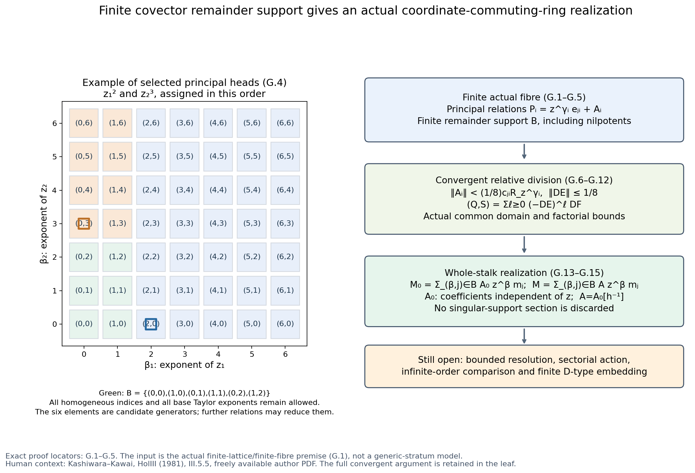
The ordered heads $z_1^2,z_2^3$ have the exact six-monomial complement (G.4). The convergent division is G.3–G.4 and the entire-stalk generation theorem is G.5. The input is the actual finite-lattice/finite-principal-fibre premise (G.1), including nonreduced principal modules. The infinite-order and finite D-type arrows remain open as stated in G.6. Free human source: Kashiwara–Kawai, author-hosted HolIII, III.5.5.
5.30. Actual polynomial flatness and reconstruction after finite realization
This argument proves the finite-order polynomial-extension comparison needed after Theorem G.1. It retains the entire actual stalk. It proves neither an infinite-order extension nor a bounded terminal free resolution. All rings and tensor products in F.1–F.7 below are finite-order or expressly $h$-adic formal rings.
The actual symbol and product are §5.19, S.1–S.4; the complete derivative norm and actual units are §5.20, B.1–B.3.1; the convergent simultaneous-division and finite-head proofs are §5.21, N.1–N.18. We use the full §5.22.1–§5.22.5, Lemmas 5.22.1–5.22.3 and Proposition 5.22.4, including exact normal-element Artin–Rees, finite completion, bounded filtered flatness and the separated kernel lift. The commutative input is Completion, §§1–3 and Theorems 3.1–3.3, with the Rees Artin–Rees and Krull-intersection proofs, §§5–6. The coefficient comparison is proved in full in F.3. The actual finite realization used below is §5.29, Theorem G.1 and G.1–G.5, with its supplied actual lattice and finite principal fibre explicit. The actual analytic quotient in F.5 uses bounded Weierstrass division, preparation and uniqueness.
F.1. The polynomial rings and all commutation formulas
Retain $u=(t,x)$, $z=\xi/\tau$, $h=\tau^{-1}$, $E_0,E,A_0,A$ from G.1. Let
\[ \begin{gathered} R_0=\bigoplus_{\beta\in\mathbf N^d}A_0z^\beta\ \subset E_0,\\ R=R_0[h^{-1}]=\bigoplus_\beta A\,\partial_x^\beta . \end{gathered} \tag{F.1} \]The direct sums mean finite polynomial degree, uniformly across the coefficient sequence; the actual coefficients in each $A_0$ still have a common holomorphic domain and factorial growth. Right multiplication by $z^\beta$ is ordinary normal multiplication. Consequently the displayed bases are independent, and every finite polynomial represents an actual symbol. The second basis follows from $\partial_{x_i}=z_i h^{-1}$ and the fact that the cotangent symbols $z_i,h$ commute.
Put $\sigma(a)=h\circ a\circ h^{-1}$ and $\delta_i(a)=h\circ\partial_{x_i}a$. Direct multiplication, or $\xi_i\circ b=b\circ\xi_i+\partial_{x_i}b$, gives
\[ \begin{gathered} z_i\circ a=\sigma(a)\circ z_i+\delta_i(a),\\ z_i\circ z_j=z_j\circ z_i,\\ \sigma(z_j)=z_j,\quad\delta_i(z_j)=0 . \end{gathered} \tag{F.2} \]In fact $z_i=\xi_i\circ h$, so
\[ \begin{gathered} z_i\circ a=\xi_i\circ\sigma(a)\circ h\\ =\sigma(a)\circ z_i\\ {}+(\partial_{x_i}\sigma(a))\circ h \end{gathered} \]The last term equals $h\circ\partial_{x_i}a$. The normal conjugation formulas C.1 show that $\sigma$ and $\sigma^{-1}$ preserve $A_0$. Base differentiation preserves the actual class on a smaller common domain. Thus $\delta_i$ preserves $A_0$. Associativity gives its $\sigma$-derivation rule $\delta_i(ab)=\sigma(a)\delta_i(b)+\delta_i(a)b$. The same formulas show $\delta_i\sigma=\sigma\delta_i$ and $\delta_i\delta_j=\delta_j\delta_i$. Alternatively these identities follow by expanding the commuting $z_i,z_j$ in the independent polynomial basis.
Adjoining the $z_i$ successively is therefore a skew polynomial extension with an invertible coefficient automorphism. At every stage $\sigma$ fixes the previously adjoined $z_j$, and $\delta_i$ annihilates them. No completion or unproved PBW assertion is used: the actual symbol embedding proves the independence and consistency of every finite normal polynomial.
The normal element $h$ stays normal in $R_0$. Finite homogeneous truncation gives
\[ \begin{gathered} R_0/(h)=H[z],\quad E_0/(h)=T,\\ H=\mathbf C\{u\},\quad T=\mathbf C\{u,z\}. \end{gathered} \tag{F.3} \]The same truncation at $h^r$ is exact: coefficients of $h$-index below $r$ can be chosen arbitrarily, with the finitely many polynomial and holomorphic domains intersected. The kernel is $h^rR_0$ by the actual fixed-shift formulas. There is no assertion that $h$ belongs to the Jacobson radical of $R_0$.
F.2. Noetherianity of the smaller rings
The complete actual division argument N.1–N.18 also proves that $A_0$ is left Noetherian. Here are the adjustments that make that invocation exact. For a submodule $I\subset A_0^b$, select heads in $(h,u)$ alone. Multiplication by $h^nu^\alpha$ raises its head by that exponent; every internal contraction has higher $h$-index. Dickson's finite-head argument therefore applies. Use the same absolute Taylor norm N.2 inside $E_0$, with support restricted to zero $z$-degree. This is a closed coefficient subspace. Division by a head in $u$ and every product of elements independent of $z$ preserve that subspace. The norm, support projection, monomial-division and Neumann estimates are exactly N.1–N.18, including all $\tau$-derivatives. The quotients consequently belong to $A_0$. For an input in $I$, its remainder belongs to $I$; a nonzero remainder would have a head in its diagram outside all selected head orthants, a contradiction. Thus the finitely selected elements generate $I$ over $A_0$. This proves finite generation of every submodule of $A_0^b$. Elliptic inversion B.3 also preserves this closed subring; in particular $(h)$ is in its Jacobson radical.
For completeness, the skew polynomial Noetherian argument can be proved directly. Let $B$ be left Noetherian, let $\sigma$ be an automorphism, and let $B[y;\sigma,\delta]$ have the independent left coefficient basis $y^n$. For a left ideal $I$, define
\[ \begin{gathered} J_n=\{\sigma^{-n}(\operatorname{coeff}_{y^n}P):\\ P\in I,\ \deg P\le n\}\subset B . \end{gathered} \tag{F.4} \]These are left ideals: multiplying by $a\in B$ changes the normalized coefficient by $\sigma^{-n}(a)$. Moreover $J_n\subset J_{n+1}$, by multiplying $P$ on the left by $y$. They stabilize at some $N$. Select finitely many coefficient generators and polynomial lifts for every $J_n$, $0\le n\le N$. For $P$ of degree $m>N$, express its normalized leading coefficient in $J_N$. If a selected lift has degree $N$, its left multiple $y^{m-N}$ has the same normalized leading coefficient. To multiply that normalized coefficient by $a$, multiply the polynomial on the left by $\sigma^m(a)$. Subtract those finite multiples; the degree decreases. At a degree at most $N$, use the corresponding selected list and again decrease degree. The process terminates. These finitely many lifts generate $I$. Finite-free submodules are finite by induction on the number of components: project to the first component, lift a finite generating list of its ideal image, and add generators for the kernel in the remaining components. Thus every successive skew polynomial extension is left Noetherian.
Applying this proof to (F.2) proves that $R_0$ is left Noetherian. Normal localization proves the same for $A,R$: for an ideal in a localization, contract it to the original ring. Every localized element becomes an element of this contraction after multiplying on the left by a large enough power of $h$. A finite generating list of the contraction therefore generates the localized ideal.
F.3. The exact commutative coefficient comparison
The map $H[z]\to T$ is flat. Put $B=H[z]_{(\mathfrak m_H,z)}$. The maximal-ideal completions of $B$ and $T$ are the same ring $\mathbf C[[u,z]]$. This equality is verified at every finite order: Taylor polynomials supply the same quotient, and any denominator outside the maximal ideal has a finite geometric inverse there. The earlier commutative Artin–Rees proof makes the induced intersection filtrations cofinal. Surjective quotient transitions then give exact completion on finite modules by successive compatible lifting, and a finite presentation identifies it with tensoring by the completed ring. Here is the flatness and faithfulness consequence explicitly. Every injection of finite modules remains injective after that tensor functor. For an injection $U\hookrightarrow V$ of arbitrary modules over a Noetherian ring, write $V$ as the filtered union of its finite submodules $V_j$. Each intersection $U\cap V_j$ is finite; its injection into $V_j$ remains injective after tensoring. Tensor commutes with this filtered union: every tensor and every witness to equality uses finitely many elements and therefore occurs at a finite stage. The resulting injection remains injective, proving flatness on arbitrary modules. For a Noetherian local ring, the completion has the same nonzero residue field. If $M\ne0$, a nonzero element generates a cyclic injection $D/J\hookrightarrow M$, where $D$ denotes that local ring and $J$ is a proper ideal. Flatness preserves this injection, and the tensor of $D/J$ is nonzero because its quotient modulo the maximal ideal is the residue field: $J$ lies in that ideal. Completion is therefore faithful. Apply these arguments to the genuinely commutative local rings $B$ and $T$.
To prove flatness of $T$ over $B$, tensor an injection of $B$-modules with $T$. Any resulting kernel survives tensoring with the faithfully flat completion of $T$ if it was nonzero; but the completed tensor is tensoring with the flat completion of $B$, and has zero kernel. This contradiction proves flatness. Localization makes $B$ flat over $H[z]$, so $T$ is flat over $H[z]$. The local map is faithful as well: a nonzero $B$-module remains nonzero after its faithfully flat completion, which is the completion of $T$; it therefore could not have become zero after tensoring with $T$. Faithfulness is used only after localization. The unlocalized polynomial map is asserted flat.
F.4. Normal formal comparison and actual finite flatness
Let
\[ \begin{gathered} \widehat R_0^{\,h}=\prod_{n\ge0}H[z]h^n,\\ \widehat E_0^{\,h}=\prod_{n\ge0}Th^n . \end{gathered} \tag{F.5} \]These are $h$-adic completions of the actual rings, by F.1 and the earlier exact coefficient-quotient calculation C.3. Individual formal coefficients are holomorphic germs; an infinite formal sequence is not claimed to have a common coefficient domain or factorial bounds. The formal multiplication has finite sums at each index and is the same normalized Leibniz product.
Both formal rings are left Noetherian. Their $h$-graded rings are $H[z,h]$ and $T[h]$, which are Noetherian by the polynomial proof in F.2 with $\sigma=1,\delta=0$. For a submodule of a finite free formal module, choose finitely many lifts of its graded initial generators. Successive leading-$h$ cancellation expresses each element by those lifts: each coefficient multiplier is a convergent series in the complete $h$ topology, and equality follows from separatedness. This is the complete coefficientwise proof in Section 2 of the earlier normal-completion leaf, applied to these exact graded rings. It proves Noetherianity without assuming a submodule closed in advance.
The normal-element Artin–Rees proof C.1 and exact completion proof C.2 apply to $R_0$ and to both formal rings. They imply exact completion and its tensor identity on finite modules. Every finite module over either formal ring is complete and separated, since that ring equals its $h$-completion. At each truncated level, (F.3) and F.3 above give
\[ \begin{gathered} \operatorname{gr}_h(\widehat E_0^{\,h}/h^r)=T[h]/h^r\\ \text{flat over}\\ \operatorname{gr}_h(\widehat R_0^{\,h}/h^r)=H[z,h]/h^r . \end{gathered} \tag{F.6} \]The coefficient functor is $T\otimes_{H[z]}-$, so graded flatness here follows directly from F.3. The bounded-filtration lifting Lemma C.3 is within its exact hypotheses: there are only $r$ nonzero levels, all terms have finite shifted free resolutions, and solving a leading equation raises order and terminates. It proves flatness on finite modules at each truncated level.
The full lift is exactly Proposition C.4's kernel argument. For $N\subset M$ finite over $\widehat R_0^{\,h}$, its normal Artin–Rees constant $c$ puts the kernel of $N/h^rN\to M/h^rM$ in $h^{r-c}N/h^rN$. By (F.6), any vector in the kernel of the completed tensor map belongs to $h^{r-c}(\widehat E_0^{\,h}\otimes N)$ for every $r$. That finite module is separated, so the vector is zero. Moving $h^{r-c}$ across a tensor factor uses the compatible normal automorphism $\sigma$, exactly as in C.4. Thus $\widehat E_0^{\,h}\otimes_{\widehat R_0^{\,h}}-$ is exact on finite modules. Composing with exact normal completion over $R_0$ proves exactness of $\widehat E_0^{\,h}\otimes_{R_0}-$ on finite $R_0$-modules.
Finally, for a finite $R_0$-module $V$, construct a free resolution with finite free terms, using F.2 at every kernel. Tensor it with $E_0$. Its homology modules are finite over the left Noetherian $E_0$. Exact $h$-completion on finite $E_0$-modules commutes with the cycles, boundaries and these homology modules. The completed complex is $\widehat E_0^{\,h}\otimes_{R_0}$ of the original resolution, hence is exact in positive degrees by the preceding paragraph. Exact $h$-completion over $E_0$ detects zero: a zero completed finite module has zero quotient modulo $h$, and finite-generator Nakayama applies since $(h)\subset\operatorname{Jac}(E_0)$ by B.3. Consequently the actual tensor complex has zero positive homology. In particular
\[ \begin{gathered} E_0\otimes_{R_0}-\\ \text{is exact on finite left }R_0\\ \text{-modules}. \end{gathered} \tag{F.7} \]This proves actual flatness in the finite scope required here. It does not identify an infinite-order extension with either formal ring in (F.5). Normal localization of the target is exact: it is a filtered union of right copies of $E_0$, with the normal automorphism used for the coefficient actions. Tensoring with the union preserves exactness because every relation and preimage uses finitely many elements. Thus
\[ \begin{gathered} E\otimes_R-\\ \text{is exact on finite left }R\\ \text{-modules}. \end{gathered} \tag{F.8} \]Equivalently apply (F.7) to the underlying localized modules, by filtered unions of their finite $R_0$-submodules. The tensor identity $E\otimes_{R_0}V=E\otimes_RV$ for an $R$-module follows from its universal balanced-map property: $h$ is already invertible on both tensor factors.
F.5. The principal finite-module identity
Let $W$ be a finite $H[z]$-module, finite over $H$, such that every $z_i$ acts nilpotently on $W/\mathfrak m_HW$. Then
\[ T\otimes_{H[z]}W\simeq W . \tag{F.9} \]Here the right side has an actual analytic $T$-action, which we now construct, rather than assume. Take minimal $H$-generators $w_1,\ldots,w_b$; their residues form a basis modulo $\mathfrak m_H$. Write $z_iw=A_i(u)w$ with holomorphic matrices $A_i$. The matrices $A_i(0)$ are the given nilpotent actions. Cayley–Hamilton therefore gives distinguished monic polynomials
\[ \begin{gathered} p_i(u,Z)\\ =\det(Z-A_i(u)),\\ p_i(0,Z)=Z^b,\\ p_i(u,z_i)W=0 . \end{gathered} \tag{F.10} \]The last equality follows by applying each matrix power to the vector of generators, so it does not require the matrices to commute before passing to $W$. Each $p_i$ involves only $u,z_i$. Successive proved Weierstrass divisions in the individual $z_i$ show that $T/(p_1,\ldots,p_d)$ is free over $H$ in the monomials with $0\le\beta_i<b$: each division has a holomorphic remainder and commutes with the other variables, and uniqueness gives uniqueness of the final remainder. Ordinary monic polynomial division gives the identical coefficient basis and relations for $H[z]/(p_1,\ldots,p_d)$. Thus the natural map between these two quotient rings is an isomorphism. Tensoring with $W$, which is annihilated by those polynomials, proves (F.9) and defines its analytic action. The case $W=0$ is immediate. Every division has an actual common neighbourhood because this is a finite list of convergent Weierstrass polynomials.
F.6. Reconstruction of the actual generic-position module
Use the exact premise of G.1 and its conclusion that $M_0$ is finite over $A_0$. The finite module $\bar M_0=M_0/hM_0$ is therefore finite over $H=A_0/(h)$, and is also a finite $H[z]$-module. Its fibre at $u=0$ is the finite local $\mathbf C\{z\}$-module (G.1). Every $z_i$ has only the eigenvalue zero there, by G.2. Hence F.5 applies. The canonical multiplication map
\[ \begin{gathered} \mu_0:E_0\otimes_{R_0}M_0\longrightarrow M_0,\\ P\otimes m\longmapsto Pm \end{gathered} \tag{F.11} \]is surjective and reduces modulo $h$ to the isomorphism (F.9). Its source is finite over $E_0$, since $M_0$ is finite over $R_0$, so its kernel $K$ is finite. Moreover $h$ acts injectively on $M_0$, since $M_0$ is a submodule of the $E$-module $M$, on which $h$ is invertible.
If $k\in K\cap h(E_0\otimes_{R_0}M_0)$, write $k=hp$. Then $0=\mu_0(k)=h\mu_0(p)$ forces $\mu_0(p)=0$, so $p\in K$. Thus this intersection is exactly $hK$. The principal isomorphism in (F.11) now says $K/hK=0$, and actual finite Nakayama gives $K=0$. Localizing by $h$ yields
\[ \begin{gathered} E_0\otimes_{R_0}M_0\simeq M_0,\\ E\otimes_RM\simeq M . \end{gathered} \tag{F.12} \]Every map is the stated multiplication map and includes the whole actual stalk. The localization of $M_0$ is $M$: finite-order left shifts give $M=\bigcup_kh^{-k}M_0$, as in G.5. No equality on generic-stratum cohomology modules is substituted for these module maps.
F.7. Every polynomial submodule is an actual microlocal submodule
Let $N\subset M$ be an $R$-submodule. It is finite over $A$, since $M$ is finite over the left Noetherian $A$. Put $N_0=N\cap M_0$. It is finite over $A_0$, by F.2 and the finite $A_0$-module $M_0$, and is stable under $R_0$. It is $h$-saturated in $M_0$: if $hm\in N$ then $m=h^{-1}(hm)\in N$. Hence $N_0\cap hM_0=hN_0$, and $\bar N_0$ injects into $\bar M_0$.
Set $P_N=E_0\otimes_{R_0}N_0$. Actual flatness (F.7) embeds it into $E_0\otimes_{R_0}M_0=M_0$. Tensoring the $h$-injective quotient $Q_0=M_0/N_0$ and its normal-action twist also shows that this image $P_N$ is $h$-saturated in $M_0$. More precisely, multiplication by $h$ is an injective $R_0$-linear map $\sigma^{-1}Q_0\to Q_0$, where the source action is $a\cdot q=\sigma^{-1}(a)q$. After tensoring, $E_0\otimes_{R_0}\sigma^{-1}Q_0$ identifies with $\sigma^{-1}(E_0\otimes_{R_0}Q_0)$ by $e\otimes q\mapsto\sigma^{-1}(e)\otimes q$. The tensor map is then multiplication by $h$, because $h\sigma^{-1}(e)=eh$. Flatness makes this map injective. Hence $M_0/P_N$ has no $h$-torsion, which is exactly the claimed saturation. Thus $P_N/hP_N=T\otimes_{H[z]}\bar N_0$ injects into $\bar M_0$. The annihilating distinguished polynomials (F.10) for $\bar M_0$ also annihilate its submodule $\bar N_0$, which is finite over $H$. The proof of (F.9), using those same quotient rings, gives $P_N/hP_N\simeq\bar N_0$.
The actual finite $E_0$-module $P_N\subset M_0$ has finite principal fibre, by this equality; after localizing by $h$ it supplies an actual lattice in an $E$-module. Theorem G.1 therefore makes $P_N$ finite over $A_0$. The natural image of $N_0$ in $P_N$ has the same principal quotient, so $P_N=N_0+hP_N$. The quotient $P_N/N_0$ is a finite $A_0$-module equal to its $h$-multiple. Since $(h)\subset\operatorname{Jac}(A_0)$, finite Nakayama gives $P_N=N_0$. In particular $N_0$ is stable under all of $E_0$, without having presumed this during the tensor construction. Localizing gives
\[ E\otimes_RN\simeq N,\qquad EN=N . \tag{F.13} \]Here $N=\bigcup_kh^{-k}N_0$, because every element of $N\subset M$ can be shifted into $M_0$ and the shifts belong to $R$. This proves the actual finite-order polynomial-submodule assertion on the entire stalk.
F.8. The exact remaining scope
F.2 supplies finite free resolution segments of any requested finite length over $R_0,R$; F.7–F.8 make their extension to $E_0,E$ exact, and F.12 identifies the augmentation for the modules in G.1. The last kernel remains in such a segment. §5.31, L.1–L.6 proves a bounded free resolution over the actual finite-order microlocal rings with polynomial matrices and one base neighbourhood. Its explicit syzygy stabilization concerns the principal polynomial complex; it does not claim that the actual bounded complex is a free resolution over the polynomial ring itself.
No ring in this argument is $\mathscr E^\infty$ or $\mathscr A^\infty$. The identities (F.12)–(F.13) therefore do not prove HolIII (3.5.8), the sectorial kernel action, continuation, singular-support separation, faithful finite D-type embedding, regular finite-pole recovery, intrinsic microlocal order correspondence, C.1, or arbitrary proper analytic regularity. They supply actual finite-order prerequisites to those still binding obligations. The supplied actual lattice and finite-principal-fibre premise in G.1 remains explicit throughout.
The figure below displays the exact rings in (F.3) and (F.5), the finite-module flatness lift, the principal distinguished-polynomial quotient, the saturated kernel $K/hK=0$, and the open infinite-order arrow. Free human reading: Kashiwara–Kawai, author-hosted HolIII, III.5.1–III.5.8.
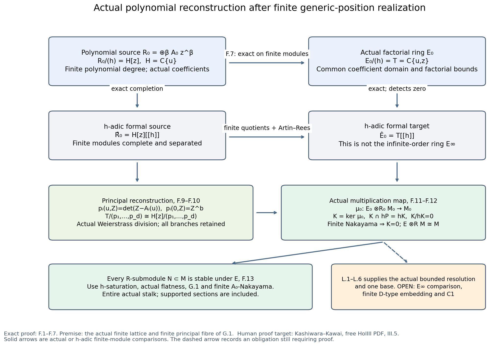
The polynomial and actual coefficient rings are (F.3); the explicitly formal rings and finite exact-completion comparison are (F.5)–(F.8). The finite distinguished quotient retains nilpotent multiplicities in (F.9)–(F.10). The saturated-kernel argument proves the whole-stalk multiplication identities (F.11)–(F.13). G.1 supplies the actual lattice and finite principal fibre; the infinite-order arrow remains open as stated in F.8. Free human source: Kashiwara–Kawai, HolIII, III.5.1–III.5.8.
For every coherent actual holonomic germ whose holonomicity uses its reduced actual finite-order support, §5.32, J.1–J.3 constructs the actual lattice and proves the finite principal fibre after the contact reduction. The separate infinite-order support convention retains the interface stated there.
5.31. A bounded actual generic-position complex with polynomial operator matrices
This argument continues the exact finite-lattice and finite-principal-fibre premise of G.1. It proves a bounded free resolution over the actual finite-order microlocal ring whose matrices lie in the actual polynomial operator ring $R_0$. It also gives one base neighbourhood for that complex and its entire finite-support realization. It does not claim a bounded free resolution over $R_0$ itself, or an infinite-order comparison.
The actual finite realization is §5.29, Theorem G.1 and G.1–G.5. Actual polynomial Noetherianity, coefficient flatness, finite-order reconstruction and exact normal-completion detection are §5.30, F.1–F.7. All coefficient identities below concern actual convergent representatives or expressly designated positive h-adic formal modules.
The full uniform homogeneous kernel proof is GL06, Lemma 3.0c.3, with the coefficient comparison proved locally in F.3. Its scalar analytic relation input is Oka Theorem 2.1 and Lemma 2.2, using the local monic division and nearby Weierstrass splitting, Lemmas 2.3 and 3.2. L.5 supplies the scalar-row and finite block-matrix consequences explicitly. Actual neighbourhood coherence and translated-chart coordinates are §5.24, Lemma 5.24.1 and Theorem 5.24.2, proved by the bounded division of §5.21.
L.1. A finite free resolution over the holomorphic coefficient ring
Put $n=d+1$, $q=n+d=2d+1$, $H=\mathbf C\{u_1,\ldots,u_n\}$ and $S=H[z_1,\ldots,z_d]$. By G.1, $\bar M_0=M_0/hM_0$ is finite over $H$. We first prove that every finite $H$-module has a finite free resolution of length at most $n$.
The coordinate sequence $u_1,\ldots,u_n$ is regular: each successive quotient is the convergent power-series ring in the remaining coordinates, and multiplication by the next coordinate is injective there by its Taylor coefficients. The two-term-complex cone induction therefore proves that its Koszul complex is a free resolution of the residue field $\mathbf C$, of length $n$. Its differential on an ordered wedge is
\[ \begin{gathered} d(e_{i_1}\wedge\cdots\wedge e_{i_k})\\ =\sum_{a=1}^k(-1)^{a-1}u_{i_a}\\ e_{i_1}\wedge\cdots\widehat e_{i_a}\cdots\wedge e_{i_k}. \end{gathered} \tag{L.1} \]Indeed for one coordinate the complex is injective multiplication followed by the quotient. Adjoining the next coordinate tensors with that two-term complex; on the previously resolved quotient its kernel is zero and its cokernel is the next quotient. This proves the induction, including the displayed signs.
Construct a minimal free resolution of a finite $H$-module $W$ by selecting at each stage generators whose residues are a basis of the finite kernel modulo the maximal ideal. Kernels are finite since $H$ is Noetherian. The kernel of each such minimal cover lies inside the maximal ideal times its free source. Hence every differential in this resolution has all entries in the maximal ideal, and tensoring it with $\mathbf C$ makes all differentials zero.
The homology of this tensor complex is also computed by the Koszul resolution (L.1) tensored with $W$. Here is the required balanced-resolution argument. Tensor the two free resolutions to form a first-quadrant double complex, with the Koszul term in one degree and the minimal-resolution term in the other, and use total differential $d_K\otimes1+(-1)^a1\otimes d_F$ on Koszul degree $a$. Resolving first in either direction gives respectively those two tensor complexes, because a free tensor factor preserves each augmentation's exactness. At any fixed total degree there are finitely many terms. Successive row or column reduction of a cycle and of a boundary consequently proves that both augmentations induce the same total homology; there is no infinite totalization or limit exchange. The Koszul side has no terms above degree $n$. Thus the minimal resolution has zero free term modulo the maximal ideal above degree $n$, and its ranks there are zero. Its finite next kernel is zero by finite Nakayama. The minimal free resolution terminates at degree $n$.
L.2. Adjoining each commuting covector variable gives a finite polynomial resolution
Suppose $B$ is a commutative ring, $V$ is a $B[y]$-module, and $V$ has a finite free $B$-resolution of length $a$. Write $Y$ for the $B$-linear action of $y$ on $V$. There is an exact sequence
\[ \begin{gathered} 0\longrightarrow B[y]\otimes_B V\\ \xrightarrow{D}B[y]\otimes_BV\\ \xrightarrow{\mu}V\longrightarrow0,\\ D(y^j\otimes v)=y^{j+1}\otimes v\\ {}-y^j\otimes Yv,\\ \mu(y^j\otimes v)=Y^jv. \end{gathered} \tag{L.2} \]The tensor module is the direct sum of copies of $V$ indexed by powers of $y$. A highest nonzero coefficient proves injectivity of $D$. For $f=\sum_{j=0}^b y^j\otimes v_j$, define $g=\sum_{j=1}^b\sum_{k=0}^{j-1}y^{j-1-k}\otimes Y^kv_j$. The terms telescope to $Dg=f-1\otimes\mu(f)$. This proves exactness at the middle, and $\mu$ is surjective.
Lift $Y$ to a chain endomorphism $\widetilde Y$ of the finite free $B$-resolution. At degree zero lift the image of each free basis element through its augmentation. At degree $j$, the already lifted image of its boundary is a cycle, hence has a preimage in degree $j$; choose that preimage for each of its finitely many basis elements. These finite choices give a chain map. Induction reaches the last degree because exactness there includes the required cycle image. Every coefficient is in $B$.
Tensor the resolution with the free coefficient ring $B[y]$, and take the cone of the chain map $y-\widetilde Y$. In homological degree $j$ its term is $L'_j\oplus L'_{j-1}$ and its differential is
\[ \begin{gathered} d(a,b)=(d_{L'}a+(y-\widetilde Y)b,\\ {}-d_{L'}b). \end{gathered} \tag{L.3} \]The chain-map identity gives $d^2=0$ with these exact signs. The induced map on degree-zero homology is $D$ in (L.2); both induced resolutions have zero higher homology. The cone's homology is therefore $V$ in degree zero and zero elsewhere. One can verify this directly by solving a cone cycle first in the source resolution and then the target resolution, or by the short exact cone sequence. It is a finite free $B[y]$-resolution of length at most $a+1$.
Start with the finite free $H$-resolution of $\bar M_0$ in L.1. Apply this construction successively to $z_1,\ldots,z_d$. At each stage the next variable acts linearly over the preceding polynomial ring, because their actions commute on $\bar M_0$. Chain lifts need not commute before passing to homology; only the single next chain map is used at that stage. We obtain a finite free $S$-resolution
\[ \begin{gathered} 0\longrightarrow L_q\longrightarrow L_{q-1}\\ \longrightarrow\cdots\longrightarrow L_0\\ \longrightarrow\bar M_0\longrightarrow0,\\ q=2d+1. \end{gathered} \tag{L.4} \]If it has shorter length, use zero free terms to fill the declared bound. All matrices have finite polynomial degree and holomorphic coefficient germs. No general projective-module or stable-free theorem has been imported.
L.3. Comparing the actual polynomial syzygy with that finite resolution
By F.2, $R_0$ is left Noetherian, and $M_0$ is finite over $R_0$. Choose an actual finite free $R_0$-resolution segment with successive surjections onto its kernels through degree $q-1$:
\[ \begin{gathered} 0\longrightarrow K_q\longrightarrow F_{q-1}\\ \longrightarrow\cdots\longrightarrow F_0\\ \longrightarrow M_0\longrightarrow0. \end{gathered} \tag{L.5} \]Its matrices are in $R_0$; its kernels are finite. Every module in the segment has injective multiplication by $h$: this holds for $M_0\subset M$ and for each kernel inside a finite free module. In an exact pair $0\to K\to F\to V\to0$ with $h$ injective on $V$, one has $K\cap hF=hK$, by writing $k=hf$ and cancelling $h$ in its image. Reduction modulo $h$ is therefore exact on that pair. Repeating gives a free $S$-resolution segment of $\bar M_0$ with last kernel $\bar K_q=K_q/hK_q$.
Its last kernel is stably free, and an elementary comparison proves this exact conclusion. If $0\to A\to F\to W\to0$ and $0\to B\to G\to W\to0$ have finite free middle terms, their fibre product over $W$ has split sequences with kernels $A,B$ and quotients $G,F$. Thus $A\oplus G\simeq B\oplus F$. Apply this successively to the reduced segment (L.5) and the finite free resolution (L.4). More explicitly, if their $j$-th kernels satisfy $A_j\oplus U_j\simeq B_j\oplus V_j$ with $U_j,V_j$ finite free, compare the free covers $F_j\oplus U_j$ and $L_j\oplus V_j$ of that same module. The fibre-product argument gives $A_{j+1}\oplus(L_j\oplus V_j)\simeq B_{j+1}\oplus(F_j\oplus U_j)$. Begin at $A_0=B_0=\bar M_0$, and iterate $q$ times. Since $B_q\simeq L_q$ is free, this constructs finite integers $s,r$ and an actual $S$-linear isomorphism
\[ \bar K_q\oplus S^s\simeq S^r. \tag{L.6} \]Add $R_0^s$ to $F_{q-1}$ with zero outgoing differential, so its kernel becomes $K_q\oplus R_0^s$. Lift each basis vector of the free principal kernel (L.6) to this actual kernel. The resulting map $P_q:R_0^r\to F_{q-1}\oplus R_0^s$ is an actual relation map with principal image equal to the entire principal kernel and with injective principal map. All preceding differentials remain unchanged apart from the declared zero columns. We have constructed a bounded actual polynomial-matrix complex whose principal complex is the exact resolution (L.4)'s syzygy comparison.
This does not assert that $P_q$ is an isomorphism onto the last kernel over $R_0$. In particular $(h)$ was not declared a Jacobson ideal of $R_0$, and no such Nakayama argument is valid there.
L.4. Exactness over the actual microlocal ring
Tensor the bounded free complex with $E_0$ and use its multiplication augmentation to $M_0$. Its principal complex is the tensor of the exact $S$-complex with $T=\mathbf C\{u,z\}$, which is exact by F.3. Its $h$-adic formal complex is exact: for a cycle solve its first nonzero homogeneous equation in that principal exact complex, lift a boundary, subtract, and repeat at each higher $h$-order. In a finite free formal term, the sum of these lifts exists and equality follows from separatedness. The augmentation module is finite and $h$-complete after completion by the exact normal-completion argument, so the same successive lifting applies there. At the last term, an element in the kernel has a first nonzero principal coefficient, which would contradict principal injectivity; its kernel is zero.
All homology modules of the actual $E_0$ complex are finite, because $E_0$ is left Noetherian. Its exact finite $h$-completion commutes with homology, by the normal-element Artin–Rees proof in F.4. Their completed modules are zero by the previous paragraph. The exact completion detects zero on finite $E_0$-modules, using $(h)\subset\operatorname{Jac}(E_0)$. Hence the actual complex is exact, including its last term. Localizing by $h$ preserves exactness and identifies its target with $M$. Consequently
\[ \begin{gathered} 0\longrightarrow E^{r_q}\xrightarrow{P_q}E^{r_{q-1}}\\ \longrightarrow\cdots\xrightarrow{P_1}E^{r_0}\\ \longrightarrow M\longrightarrow0,\\ P_j\text{ has entries in }R_0,\\ q=2d+1 . \end{gathered} \tag{L.7} \]This is the finite-order conclusion. Its proof made no assertion that an arbitrary formal lift has factorial growth: every actual matrix came from finite actual $R_0$-relations; formal completion was used only as an exact detecting functor on the finite actual homology modules.
L.5. A common base neighbourhood for the polynomial principal complex
The earlier uniform homogeneous kernel proof yields the following nonhomogeneous polynomial assertion: for a finite polynomial matrix over $H[z]$, its kernel is generated by finitely many polynomial sections on one base neighbourhood. To prove the reduction, choose source shifts $a_j$ at least as large as every entry degree in its $j$-th column, and give the target shift zero. Introduce a variable $v$ and homogenize each entry to degree $a_j$. If a polynomial vector $c_j(z)$ is a relation, choose $b\ge\max_j(a_j+\deg c_j)$ and homogenize it as $v^{b-a_j}c_j(z/v)$. The homogeneous matrix times this vector is $v^b$ times the original zero relation. Conversely evaluation at $v=1$ sends any homogeneous relation to a relation. The finitely many uniform homogeneous generators therefore dehomogenize to generators of every nearby polynomial kernel. Their coefficients remain actual holomorphic functions on the same base neighbourhood.
Here the full homogeneous proof uses the coherent analytic kernel on the zero-section product, the faithfully flat polynomial-to-analytic coefficient map of F.3, and finite graded zero-section detection. The matrix-kernel consequence of the scalar Oka relation theorem follows by induction on the number of target rows. For one row it is exactly that theorem. For $r>1$ rows, let the finite columns of a matrix $G$ generate the first-row kernel on one neighbourhood. Apply the induction hypothesis to the remaining $r-1$ rows composed with $G$, obtaining finitely many kernel columns $c_j$. Their images $Gc_j$ generate the full original kernel: every original relation is $Gc$ by its first row, and the remaining rows say precisely that $c$ is in the composed kernel. The relation sheaf of the resulting finite generator matrix is again a finite free matrix kernel, so this kernel has a finite presentation.
Here are the required presented-module consequences. Write two finite presentations with relation matrices $A$ and $B$, and represent a morphism by a finite free matrix $D$. The finite block matrix $(D,-B)$ imposes the equation $Dx=By$ on pairs $(x,y)$. Its kernel is generated by the preceding finite-row argument. The first coordinates of those generators, together with the source relation columns of $A$, describe the kernel of the presented morphism. Its relation matrix is again a finite free matrix kernel, so the presented kernel is coherent. The cokernel is presented by adjoining the finite columns of $D$ to $B$. The image is the source presentation modulo that coherent kernel. In particular the quotient of a coherent kernel by a finite generator list is coherent, using those same finite block presentations. If a finite-type quotient has zero stalk at a point, choose its finite generators on a neighbourhood. Each generator has zero germ, hence vanishes on some smaller neighbourhood; intersect this finite list of neighbourhoods. The quotient vanishes there. These finite scalar-row and block-matrix constructions give every analytic kernel, quotient and zero-stalk consequence used in this paragraph.
The graded zero-section detection is also elementary: a finite graded module bounded below whose localization at the zero-section maximal ideal is zero has zero quotient modulo the polynomial variables, since that quotient is finite over the local coefficient ring. Equality with its polynomial-variable multiple then kills its first possible degree and, inductively, every degree. Thus the earlier proof's zero-section descent has exactly the needed hypotheses and includes arbitrary shifted free matrices.
Apply this uniform polynomial kernel result to the finitely many principal maps in L.3. At the base origin they form an exact complex. Each represented kernel generator there is a finite polynomial combination of columns of the preceding map. Represent those finitely many identities on one smaller base neighbourhood. The same sections generate every nearby kernel, and hence prove exactness there in every polynomial degree. At the injective last map the initial kernel list is empty, so its nearby kernel is zero. Thus one base neighbourhood $U$ makes the entire principal polynomial complex exact over $\mathcal O_{U,u}[z]$ for every $u\in U$. There is no sequence of shrinking neighbourhoods indexed by a relation degree.
L.6. The actual complex on the whole conic chart over that base neighbourhood
The finitely many actual $R_0$ matrix entries have coefficients in $A_0$, all represented on one smaller $U$ with common coefficient domains and factorial bounds. Their finite polynomial $z$-dependence defines them on all of
\[ \begin{gathered} \mathcal E_U=\{(u;\tau,\xi):u\in U,\ \tau\ne0\},\\ z=\xi/\tau\in\mathbf C^d. \end{gathered} \tag{L.8} \]On a compact $z$-set a fixed polynomial degree contributes a fixed factor to each homogeneous coefficient; finite shifts and derivatives have the actual factorial estimates already proved. Thus these are actual sheaf sections everywhere on (L.8). Their finitely many differential-product identities also hold there on one common smaller base neighbourhood: equality of actual germs is simultaneous equality of their coefficient sequences on a common domain, as in S.1. Each coefficient identity is polynomial in the covector variables, so equality on a covector neighbourhood implies equality for every covector value. The actual product preserves finite polynomial degree for these finitely many expressions. The represented matrices therefore form one complex on the entire chart.
Fix any $(u_*,z_*)$. The coefficient map $\mathcal O_{U,u_*}[z]\to\mathcal O_{(u_*,z_*),U\times\mathbf C^d}$ is flat by precisely F.3's local completion proof, now localizing the polynomial ring at $(\mathfrak m_{u_*},z-z_*)$. The principal complex is therefore exact at this point. Actual stalk Noetherianity, elliptic inversion, and exact finite $h$-completion hold there: the earlier U.1 coordinate change translates a normalized covector to zero while preserving $h$ and the actual product, and the normal-element completion proof applies to its holomorphic coefficient ring. Repeating L.4 proves exactness at every such point in positive degrees, including terminal injectivity. No uniform norm over all unbounded $z$ is required: the finite matrices and $U$ are fixed; their compact coefficient bounds may depend on the compact set.
Let $M'_0$ be the cokernel of this actual order-zero complex and $M'=M'_0[h^{-1}]$. It is a coherent actual module on (L.8) by the earlier U.2 matrix-kernel proof. Localization preserves that coherent category: the finitely many entries of any finite-order matrix can be shifted into order zero using finite powers of $h$ on its free bases; its order-zero kernel is generated on one neighbourhood by U.2, and every finite-order relation can itself be shifted into that kernel. Localizing those fixed generators therefore generates every finite-order kernel on the same neighbourhood. The finite block-matrix proof of U.2 then gives coherence of the localized cokernels as well. At the distinguished stalk the augmentation gives $M'_0\simeq M_0$ and $M'\simeq M$. Moreover $h$ acts injectively on $M'_0$ at every point. Indeed multiplication by $h$ is the normal-action twisted injection of the free complex into itself; its quotient is the principal complex. The long exact homology sequence and the vanishing of its degree-one principal homology make multiplication by $h$ injective on the degree-zero cokernel. Its principal module is exactly the polynomial principal cokernel analytically extended, not an assumed equality with an infinite-order support.
For completeness this realization has bounded $z$-support on one smaller $U$. The distinguished polynomials $p_i(u,z_i)$ constructed in F.10 annihilate the principal module at the base germ. That finite annihilation is witnessed by finitely many polynomial column identities for the principal presentation; extend them to one smaller $U$. If $p_i(u,Z)=Z^b+\sum_{k<b}a_{ik}(u)Z^k$, choose $\delta>0$ and shrink $U$ so that
\[ \begin{gathered} \sum_{k<b}|a_{ik}(u)|\,\delta^{k-b}<\tfrac12\\ \text{for all }u\in U\text{ and every }i. \end{gathered} \tag{L.9} \]This is possible since $a_{ik}(0)=0$. For $|Z|\ge\delta$, the left sum with $|Z|$ in place of $\delta$ is no larger, so $|p_i(u,Z)|>|Z|^b/2$. Thus every root has $|Z|<\delta$. At any point outside that $z$-polydisc, at least one annihilating principal polynomial is a unit and the principal module is zero. Finite actual Nakayama then makes $M'_0$ and $M'$ zero there. When $d=0$ the support statement has no covector coordinate to bound.
If the starting object is an actual coherent sheaf germ, the distinguished-stalk isomorphism to $M'$ extends on a product neighbourhood of that point. This uses only finite presentations: represent its finitely many generator images, relations, inverse generator images and inverse identities on one smaller neighbourhood; the two maps then are inverses there. Choose $\delta$ in (L.9) inside that product's covector radius and shrink the base accordingly. The support bound then places the whole realized support inside the comparison product. Hence $M'$ is a representative of the whole original germ on the conic chart over one base neighbourhood, with no discarded branch or supported section. The bounded resolution (L.7), with its fixed polynomial matrices, is exact throughout that chart.
L.7. What this closes and what remains
Under G.1's actual premise, L.1–L.6 prove the actual finite-order bounded generic-position realization and polynomial-matrix resolution, with the exact bound $q=2d+1$ and one base neighbourhood. The finite-ring submodule comparison is F.13. These supply the finite-order clauses corresponding to HolIII III.5's ordinary realization. Equality of a characteristic support defined through an infinite-order extension with the given principal support remains the explicit G.6 interface, if that convention is used.
The proof contains no $\mathscr E^\infty$ or $\mathscr A^\infty$ tensor identity. The sectorial kernel action, Micro-hyperbolic relative vanishing, continuation, singular-support separation, infinite-order linearity, faithful finite D-type embedding, regular finite-pole recovery, intrinsic microlocal order correspondence, C.1 and arbitrary proper analytic regularity remain open. A finite free actual resolution is a prerequisite for those arguments, not their proof.
The figure below records the base bound, the polynomial bound, the cone signs (L.3), the explicit syzygy stabilization (L.6), actual exact-completion detection, and the root bound (L.9) on the entire conic chart. Free human reading: Kashiwara–Kawai, author-hosted HolIII, III.5.3–III.5.8.
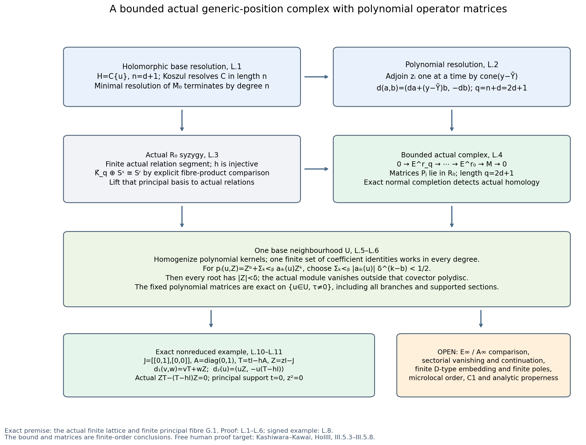
L.1–L.2 prove the lengths and signed cones. L.3 constructs the stable principal syzygy and actual relation lifts; L.4 detects exactness over the actual finite-order ring. L.5–L.6 give one base neighbourhood and the full-chart root bound, including every supported section. The nonreduced example and its actual correction term are (L.10)–(L.11). G.1 supplies the actual lattice and finite fibre. The diagram makes no claim of a free resolution over the actual polynomial ring. Free human source: Kashiwara–Kawai, HolIII, III.5.3–III.5.8.
L.8. An exact nonreduced principal example with the actual correction term
For $d=1$, let $H=\mathbf C\{t,x\}$, and set
\[ \begin{gathered} J=\begin{pmatrix}0&1\\0&0\end{pmatrix},\\ A=\begin{pmatrix}0&0\\0&1\end{pmatrix},\\ T_*=tI-hA,\quad Z_*=zI-J . \end{gathered} \tag{L.10} \]Their actual products include the $\tau,t$ contraction $[z,t]=-hz$, and $[J,A]=J$. Therefore
\[ \begin{gathered} Z_*\circ T_*-T_*\circ Z_*=-hZ_*,\\ Z_*\circ T_*-(T_*-hI)\circ Z_*=0 . \end{gathered} \tag{L.11} \]Use row vectors for free left modules, and let a row of operator coefficients act on the right by these matrices. The maps $d_1(v,w)=v\circ T_*+w\circ Z_*$ and $d_2(u)=(u\circ Z_*,-u\circ(T_*-hI))$ satisfy $d_1d_2=0$ by (L.11). Their principal complex is the cone resolution in L.2 for the $H$-module $(H/(t))^2$ with nilpotent $z$-action $J$: its first differential is $(v,w)\mapsto vt+ w(zI-J)$ and its second is $u\mapsto(u(zI-J),-ut)$. This is exact in positive degrees, by the explicit cone proof; its cokernel has both principal equations $t=0$ and $z^2=0$ and retains its nonreduced nilpotent part. L.4–L.6 consequently prove that the displayed actual length-two free complex resolves its actual cokernel and that this cokernel has no $h$-torsion. The generic bound for this dimension is $q=3$, so length two fits it.
The term $T_*-hI$ in $d_2$ is essential: replacing it by $T_*$ gives $d_1d_2=-hZ_*$, not zero. The right factor has base degree at most one, so every higher Leibniz contraction vanishes identically. Thus (L.11) is an exact actual identity. The example retains the principal nilpotent support and the actual differential correction separately.
§5.32, J.1–J.3 supplies G.1 for every coherent actual holonomic germ, and §5.33, K.1–K.3 constructs the ordinary negative-order Volterra kernel complex. Its ordinary analytic action has the explicit endpoint relation stated there and is not a full localized-ring action.
5.32. Coherent actual lattices and principal support for the whole germ
Work with the actual finite-order factorial symbol sheaf $\mathscr E$ of §5.28 and its order-zero sheaf $\mathscr E(0)$; write them as $E$ and $E_0$. The actual Noetherianity, matrix-kernel coherence, normal localization and finite Nakayama arguments are proved in §§5.20–5.24 and §5.31, L.6. The following construction supplies the finite-lattice and finite-principal-fibre hypotheses of §5.29 for every coherent actual holonomic germ, including all singular branches and nonreduced fibres.
J.0. The coefficient normality used by the analytic Nullstellensatz
The finite-fibre argument below uses analytic parametrization and the Nullstellensatz, Theorem 5.1. Its prime-case proof uses normality of the coefficient ring of holomorphic germs. Here is a direct analytic proof of that step. Suppose a fraction $g=a/b$ of holomorphic germs, with $b\ne0$, satisfies
\[ \begin{gathered} g^r+c_1g^{r-1}+\cdots+c_r=0,\\ c_j\in\mathbf C\{u\}. \end{gathered} \tag{J.0} \]Choose one small polydisc on which all coefficients are bounded, and put $R=\max(1,2\max_j\sup|c_j|^{1/j})$. At a point where $b\ne0$, the inequality $|g|>R$ would give $1\le\sum_j|c_jg^{-j}|<\sum_j2^{-j}<1$. Thus $g$ is bounded by $R$ off the denominator's zero set. The Riemann extension theorem, Theorem 4.2 extends it holomorphically. The identity $bg=a$ then holds everywhere by density, so the fraction belongs to the holomorphic germ ring. This proves its normality, including the zero-dimensional coefficient case. In the cited prime-case argument, coefficients of the minimal polynomial are integral symmetric functions of the conjugates and lie in the coefficient fraction field; this proof puts them in the holomorphic ring. Finite integrality, closure under sums and products, and the determinant argument are proved in integral extensions, Section 1; separability and primitive elements are proved in §5.27.1 above.
For clarity, the radical step needs no decomposition theorem. If $f$ has no power in an ideal $I$, an ideal maximal among those containing $I$ and disjoint from $\{1,f,f^2,\ldots\}$ exists by unions of chains. It is prime: if $a,b$ are outside it but $ab$ is inside, each enlarged ideal contains a power of $f$, and multiplying those two expressions puts a power of $f$ in the original ideal, a contradiction. Therefore the radical is the intersection of the primes above $I$. The cited generic-sheet parametrization proves the prime vanishing-ideal equality, and these two arguments prove the exact Nullstellensatz used below.
J.1. A finite actual order-zero lattice exists on a neighbourhood
Let $M$ be an actual coherent left $E$-module germ at $p_0$, with $h=\tau^{-1}$. Choose finitely many actual sections $m_1,\ldots,m_b$ whose germs generate $M_{p_0}$ over $E_{p_0}$, and define the stalk submodule
\[ M_{0,p_0}=\sum_{j=1}^bE_{0,p_0}m_j\subset M_{p_0}. \tag{J.1} \]It spans $M_{p_0}$ over $E_{p_0}$ and has injective multiplication by $h$, since $h$ is invertible on $M_{p_0}$. Its presentation kernel in $E_{0,p_0}^b$ is finite by the actual left Noetherianity proved in Theorem 5.21.1. Choose a finite generating list of that kernel and represent its entries and its identities on one neighbourhood of $p_0$. Define the coherent $E_0$-module $P_0$ by that finite presentation there. The actual matrix-kernel arguments in Theorem 5.24.2 and §5.31, L.5 prove its coherence. The chosen sections give a map $P_0\to M$, and at $p_0$ identify $P_{0,p_0}$ with (J.1).
Localize that map: $E\otimes_{E_0}P_0\to M$. At $p_0$ it is an isomorphism. Surjectivity is the chosen $E$-generation, and injectivity follows from the injective $h$ action on (J.1): the normal localization is the union of finite left shifts $h^{-k}M_{0,p_0}$, and an element maps to zero precisely when a finite shift of its numerator is zero. A numerator in (J.1) cannot acquire such $h$-torsion.
Both modules in this localized map are coherent over $E$. The localized coherence statement is proved by finite matrix shifts and the kernel list of Theorem 5.24.2 and §5.31, L.5, as detailed in §5.31, L.6. Its inverse at the distinguished stalk extends to one smaller neighbourhood: lift its finitely many free presentation generators, extend their finitely many relation identities, and extend the finitely many identities saying that its two compositions are the identity. Thus the localized map is an isomorphism on that neighbourhood.
There is also one neighbourhood on which $h$ is injective on $P_0$. Regard it as the $E_0$-linear map $\sigma^{-1}P_0\to P_0$, where $\sigma(a)=hah^{-1}$ and the source action is $a\cdot s=\sigma^{-1}(a)s$. Its kernel is coherent by Theorem 5.24.2 and the finite block-matrix argument in §5.31, L.5. That kernel has zero distinguished stalk, by (J.1). A finite-type sheaf with zero stalk vanishes near that point: each of its finitely many local generators vanishes on some neighbourhood, and their finite intersection works. Shrink accordingly.
Now $P_0$ embeds in its normal localization at every nearby stalk, because no finite power of $h$ kills a nonzero element. Via the just-constructed localized isomorphism, $P_0$ is an actual coherent $E_0$-submodule $M_0\subset M$ on one neighbourhood, with
\[ \begin{gathered} EM_0=M,\quad h:M_0\longrightarrow M_0\\ \text{injective as a }\\ \text{normal-action twisted map}. \end{gathered} \tag{J.2} \]Every construction used finitely many generators, relations, inverse identities and neighbourhood shrinkings. No arbitrary stalk submodule was assumed to extend coherently without this presentation and torsion check.
J.2. The principal support is exactly the actual module support
At every point of this neighbourhood, $\bar M_0=M_0/hM_0$ is finite over the commutative coefficient ring $T=E_0/(h)$. Its actual presentation modulo $h$ makes it a coherent analytic module. The underlying reduced support is analytic: a finite local presentation $T^a\to T^b\to\bar M_0$ has zero cokernel at a point exactly when its constant coefficient matrix is surjective; finite commutative Nakayama proves that equivalence, and the $b\times b$ minors give its analytic complement.
At a stalk,
\[ \begin{gathered} \bar M_{0,p}=0\\ \Longleftrightarrow M_{0,p}=0\\ \Longleftrightarrow M_p=0 . \end{gathered} \tag{J.3} \]The first forward implication is the actual finite noncommutative Nakayama argument in Corollary 5.20.3.1, since $M_{0,p}$ is finite and $(h)\subset\operatorname{Jac}(E_{0,p})$ by actual elliptic inversion. Its reverse is immediate. For the second equivalence, $M_0$ spans $M$, and the injective localization map in J.1 prevents a nonzero $M_{0,p}$ from becoming zero. Therefore
\[ \operatorname{Supp}M =\operatorname{Supp}(M_0/hM_0). \tag{J.4} \]It is equality of reduced sets, not a claim that the two modules or their nonreduced structures coincide. In particular all nilpotent principal relations and all actual supported sections remain in the module; none was discarded to prove this equality. A different finite actual order-zero lattice gives the same reduced support by the same proof.
This is the support of an actual finite-order $E$-module. For an ordinary $\mathscr D$-module, the characteristic support defined as the support of its finite-order $E\otimes_{\mathscr D}-$ realization falls under the same statement after that realization is supplied. If some other convention first forms an infinite-order or microfunction extension, equality with (J.4) is a separate extension-faithfulness assertion; this argument does not prove it.
J.3. An arbitrary actual holonomic germ meets the finite principal-fibre premise
Suppose now that the given coherent $E$-module is holonomic, meaning that its reduced actual support $A$ is a homogeneous analytic Lagrangian germ. Regular holonomicity is allowed, but no regularity is needed for this paragraph. Apply Q.1–Q.7 to this whole reduced germ and to its actual module: the explicitly proved contact shear and actual symbol isomorphism put $A$ in generic position, and transport the actual lattice (J.2). By (J.4), its principal support is the transformed $A$.
On $\tau=1$, the fibre $\{u=0\}$ meets that principal support only at $z=0$ in a sufficiently small neighbourhood. The finite analytic module
\[ \begin{gathered} V=(M_0/hM_0)\\ {}\otimes_{\mathbf C\{u,z\}}\mathbf C\{z\} \end{gathered} \tag{J.5} \]therefore has support contained in that one point. This follows directly by tensoring the finite presentation: at any other fibre point the original module is zero, so its tensor fibre is zero. If $V=0$ the conclusion is immediate. Otherwise take a finite presentation with $b$ target generators. Its maximal-minor ideal has zero set equal to that support by the rank/Nakayama argument in J.2. Each such minor annihilates $V$: the adjugate of its selected square relation matrix puts its determinant times every target basis vector in the relation image. The analytic Nullstellensatz in J.0 consequently puts a power of the maximal ideal $(z)$ in this minor ideal and hence in $\operatorname{Ann}V$. To justify the power step explicitly, each $z_i$ has some power in that ideal; a monomial of degree greater than the sum of those exponents minus $d$ must contain one of them. Every convergent series of that degree or higher is a finite sum of the degree-bound monomials times convergent series: group each Taylor monomial by a chosen degree-bound divisor; absolute convergence is retained by taking a subseries and a fixed monomial shift. Hence the stated power of $(z)$ annihilates $V$. Its finite generating list multiplied by the monomials below that degree spans it over $\mathbf C$, by finite Taylor remainder. If $d=0$, the coefficient ring is $\mathbf C$ already and finite generation gives the conclusion directly. Thus $V$ is finite dimensional. Nonreduced fibres are included.
The precise actual premise of §5.29, G.1 has now been established for this arbitrary coherent holonomic germ, after the proved contact reduction. Consequently §5.29, G.1 gives its faithful finite coordinate-commuting-ring realization, §5.30, F.1–F.7 give the actual finite-order tensor reconstruction and polynomial-submodule stability, and §5.31, L.1–L.6 give its bounded polynomial-matrix resolution of length $2d+1$ on one whole conic chart over a common base neighbourhood. These are actual finite-order conclusions for the entire assigned germ, rather than a supplied-lattice special case.
J.4. Scope retained
J.1 constructs a finite order-zero lattice. It does not make that lattice stable under the characteristic-vanishing order-one subalgebra, and it makes no assertion about the canonical order cutoff. Q.7 transports a regular invariant lattice wherever the actual definition supplies one; this is separate from the general lattice existence above.
For an arbitrary actual regular holonomic module, the remaining C1 input is still substantial: the infinite-order comparison, convergent sectorial kernel action and relative vanishing, continuation and separation at singular support, infinite-order linearity, faithful finite D-type embedding, regular finite-pole recovery and intrinsic microlocal order correspondence remain unproved. The coefficient-lattice theorem in §5.27 starts after that faithful finite-pole realization and cannot be used to assume it.
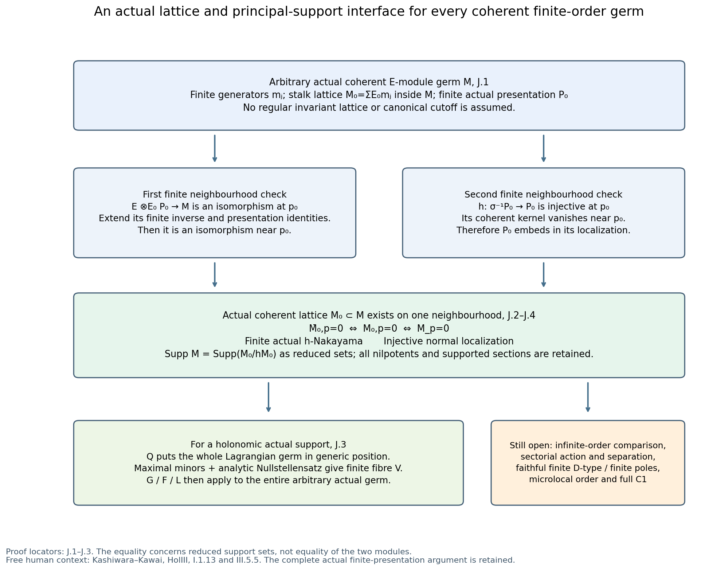
The two finite neighbourhood checks construct an actual coherent lattice inside the module. The support equality is an equality of reduced sets; the entire module and its nilpotent principal structure remain. Proof: §5.32, J.1–J.3 and equations (J.2)–(J.5). Free reading: Kashiwara–Kawai, HolIII, I.1.13 and III.5.5.
5.33. A convergent negative-order polynomial kernel complex
The bounded actual polynomial-matrix resolution of §5.31 gives a common-domain ordinary analytic Volterra kernel complex. We prove its signs, radii and multiplicativity explicitly. §§5.34–5.37 supply the canonical finite polynomial line-cone ring and its action on the unrestricted degree-one directional quotient, with complete current, cup/excision and collar proofs.
K.1. One exact rescaling makes every differential negative
Use homological degree $j$, with a differential $P_j$ from the $j$-th free term to the $(j-1)$-st. All entries of $P_j$ lie in $R_0$ and have total symbol order at most zero. Replace every free basis in degree $j$ by $h^j$ times that basis; over $E$ these are invertible basis changes. The new differential is
\[ \begin{gathered} Q_j=h^j\circ P_j\circ h^{-(j-1)}\\ =\sigma^j(P_j)\circ h,\\ \operatorname{ord}Q_j\le-1 . \end{gathered} \tag{K.1} \]The normal automorphism $\sigma$ is the actual one in §5.22.1 and §5.30, F.1 and preserves $R_0$. Every entry can consequently be written as a finite polynomial
\[ \begin{gathered} Q=\sum_{\beta\in B}a_\beta(u,h)z^\beta h\\ =\sum_{\beta\in B}\sum_{n\ge0}\\ a_{\beta,n}(t,x)h^{n+|\beta|+1}\partial_x^\beta,\\ |a_{\beta,n}|\le B_\beta C_\beta^n n! . \end{gathered} \tag{K.2} \]The first sum has finite $B$, the common coefficient domain is actual, and right multiplication by the cotangent polynomial is ordinary normal multiplication. The inverse basis changes show exactness of the rescaled free $E$-complex. Moreover $Q_j\circ Q_{j-1}=h^j\circ(P_j\circ P_{j-1})\circ h^{-(j-2)}=0$, with row-vector map composition understood as in §5.31, L.8. If $Q_j$ is an $r_j\times r_{j-1}$ matrix, its action on column function vectors runs from length $r_{j-1}$ to length $r_j$. Thus the function complex runs in the opposite direction to the free resolution, and $\mathcal V_{Q_j}\mathcal V_{Q_{j-1}}$ is well typed. No differential sign has been changed.
K.2. A convergent analytic kernel with an explicit radius
For the coefficient of $\partial_x^\beta$, define
\[ \begin{gathered} K_\beta(t,s,x)=\\ \sum_{n\ge0}a_{\beta,n}(t,x)\\ \frac{(t-s)^{n+|\beta|}}{(n+|\beta|)!}. \end{gathered} \tag{K.3} \]On a fixed compact coefficient domain and for $C_\beta|t-s|<1$, this converges absolutely and uniformly on smaller compacts, with
\[ |K_\beta(t,s,x)| \le \frac{B_\beta|t-s|^{|\beta|}} {1-C_\beta|t-s|}. \tag{K.4} \]Indeed $n!/(n+|\beta|)!\le1$ and the geometric sum proves the bound. On a compact with $C_\beta|t-s|\le r<1$, termwise holomorphy and uniform convergence make the sum holomorphic in $(t,s,x)$. Fixed derivatives have bounds on a smaller common product by the Cauchy formula. The finite number of coefficients in all $Q_j$ permits one coefficient-domain intersection and one radius $\eta>0$ with $C_\beta\eta<1/2$ for every one of them.
Choose a convex $t$-disc of diameter less than $\eta$ and a fixed anchor $a$ in it, independent of $x$. For a holomorphic function $f$ on the product with a smaller $x$-polydisc, define
\[ \begin{gathered} \mathcal V_Qf(t,x)\\ =\sum_{\beta\in B}\int_a^t\\ K_\beta(t,s,x)\,\partial_x^\beta f(s,x)\,ds . \end{gathered} \tag{K.5} \]The path is the straight segment in that convex disc. Bounds (K.4), finite $B$ and fixed Cauchy derivative bounds for $f$ give absolute uniform convergence on smaller compacts. The integral is holomorphic, either by its segment parametrization and differentiation on compacts or the primitive theorem for a holomorphic integrand in $s$ with holomorphic parameters. The anchor contributes no $x$-derivative terms.
This normalization agrees with $h^m f=\int_a^t(t-s)^{m-1}f(s)/(m-1)!\,ds$ for a pure negative integer power, with positive orientation from $a$ to $t$. In particular $\partial_t h f=f$. There is no residue normalization or $(2\pi i)$ factor in this ordinary Volterra action. The relation $h\partial_t f=f-f(a,x)$ explains why this action is asserted for the negative-power algebra, not as an action of the full localized ring containing $\partial_t^{-1}$ as a two-sided inverse.
K.3. The analytic kernel product is exactly the actual symbol product
For two actual symbols with finite polynomial $\partial_x$ dependence and only strictly negative $\partial_t$ powers, the action (K.5) preserves their product on a sufficiently small common convex product. We prove this, rather than regard it as a formal operator manipulation.
First consider individual terms $P=p(t,x)h^m\partial_x^\beta$ and $Q=q(t,x)h^l\partial_x^\gamma$, where $m,l\ge1$. Distribute the finite $\partial_x^\beta$ derivative in the iterated integral, giving terms indexed by $\nu\le\beta$ with coefficient $\binom{\beta}{\nu}\partial_x^\nu q(s,x)$ and derivative $\partial_x^{\beta-\nu+\gamma}f$. On a smaller coefficient domain expand that coefficient at $t$:
\[ \begin{gathered} \partial_x^\nu q(s,x)\\ =\sum_{k\ge0}\frac{(-1)^k}{k!}\\ \partial_t^k\partial_x^\nu q(t,x)(t-s)^k . \end{gathered} \tag{K.6} \]Choose the convex $t$-disc still smaller than a fixed Taylor radius of the larger coefficient domain. This is uniformly convergent for all segments at issue. Absolute convergence justifies interchanging the integrals, putting their ordered triangle in the real parameters $0\le r\le q\le1$, with $v=a+r(t-a)$ and $s=a+q(t-a)$. This specifies an oriented complex segment without ordering complex numbers. The exact integer beta integral is
\[ \begin{gathered} \int_v^t\frac{(t-s)^{m+k-1}(s-v)^{l-1}}{(m-1)!(l-1)!k!}\,ds\\ =\binom{m+k-1}{k}\\ \frac{(t-v)^{m+l+k-1}}{(m+l+k-1)!}. \end{gathered} \tag{K.7} \]For justification, substitute $s=v+\theta(t-v)$; the scalar real integral $\int_0^1(1-\theta)^{m+k-1}\theta^{l-1}d\theta$ equals $(m+k-1)!(l-1)!/(m+l+k-1)!$ by integration by parts and induction on the two positive integers. Thus (K.7) holds for every complex segment with the declared orientation.
Multiplying by the sign in (K.6), its coefficient is $(-1)^k\binom{m+k-1}{k}=\binom{-m}{k}$. Together with $\binom{\beta}{\nu}$, these are precisely $\partial_\tau^k(\tau^{-m})/k!$ and the finite $\xi$-derivative coefficients of $\xi^\beta$ in the actual normalized Leibniz product. Consequently the convolution kernel is the kernel of $P\circ Q$, with the correct derivative $\partial_x^{\beta-\nu+\gamma}$ and negative $\partial_t$ exponent $m+l+k$. Every contraction, including all $\tau,t$ contractions, is retained.
For arbitrary actual coefficients in (K.2), the kernels converge uniformly on a common smaller product by K.2, and their finite base derivative orders have the same property by Cauchy estimates. Their iterated integrals are uniformly absolutely convergent, so convolution passes to the infinite negative-power sums. Alternatively compare their Taylor coefficients in $t-v$: at a fixed power only finitely many homogeneous indices and $k$ occur, so the calculation above proves each coefficient identity. The complete actual product theorem §5.19 puts the symbol product in the factorial class, whose kernel is analytic on a smaller product by K.2. Two analytic kernels with those identical Taylor coefficients coincide there. It follows that
\[ \mathcal V_P\mathcal V_Q=\mathcal V_{P\circ Q} \tag{K.8} \]on the stated holomorphic functions, with their finite $\partial_x$ derivatives, on a common smaller convex product. The same proof applies to matrices, with coefficient order retained.
In particular the finitely many rescaled matrices (K.1) give an actual holomorphic kernel complex: $\mathcal V_{Q_j}\mathcal V_{Q_{j-1}}=0$. This is a convergent matrix identity, not a claim that its holomorphic solution evaluation is faithful on $M$.
K.4. What remains at the next analytic interface
The common-domain convergent kernels above supply the negative-order integral matrices of the finite polynomial construction. §§5.34–5.37 prove their canonical classes in $\mathcal E(G;D)$ for the actual line cone, ring composition and action on every unrestricted-growth degree-one directional germ class, with the exact residue/trace signs and all sheaf support maps. Identification with the full kernel ring $E_R$, the full convergent-$z$ $E$ ring and arbitrary derived relative action remain required. Sectorial propagation, continuation and separation at singular support remain separate obligations.
One finite algebraic observation may reduce that later proof's flatness requirements. Off the actual support, the bounded free $E$-complex in §5.31 is acyclic. A bounded acyclic complex of projective modules is split contractible: beginning at its lowest nonzero degree, split the surjection onto that projective term; its kernel is a direct summand of the next projective term, hence projective, and repeat finitely. The chosen splittings give a contracting homotopy. Any ring extension preserves that homotopy after tensoring. Thus, once the actual ring-to-kernel-stalk map is proved, that particular bounded complex remains acyclic off support after extension without requiring a general flatness theorem. This observation neither proves the ring map nor proves extension-faithfulness or the infinite-order comparison on $M$ itself.
The faithful finite D-type embedding, regular finite-pole passage, microlocal order comparison, C1 and arbitrary proper analytic regularity remain open.
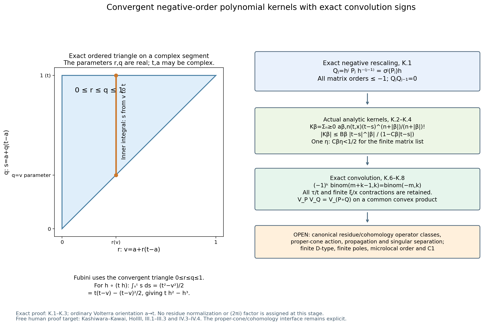
The triangle uses real parameters along the oriented complex segment from $a$ to $t$. Every mixed derivative contraction and factorial denominator is retained. Proof: §5.33, K.1–K.3 and equations (K.1)–(K.8). The ordinary action has no assigned residue or trace normalization. Free reading: Kashiwara–Kawai, HolIII, III.1–III.3 and IV.3–IV.4.
5.34. Full current resolutions and controlled proper-image comparison
R.1. Complexes, supports and the coefficient convention
Let M be a Hausdorff second-countable complex manifold of complex dimension m, and let L be a holomorphic vector bundle of finite rank. In the applications, M is an open product in two or three sets of N complex coordinates and L is the holomorphic line of input top forms. Dolbeault degree refers to all complex coordinates of M, including output coordinates. A complex constrained to remain holomorphic in output variables is not the complex considered here.
Write A_L^q for smooth (0,q)-forms with coefficients in L and D_L^q for distributional (0,q)-forms with coefficients in L, q=0,…,m. Distributional means that each coefficient is a continuous linear functional on compactly supported smooth density test sections; in a coordinate box and a holomorphic frame it is the ordinary scalar distribution on that box. All sheaves are sheaves of complex vector spaces. Put
δ(∑_I u_I dbar z_I ⊗η)=∑_{j,I}(∂_{bar z_j}u_I)dbar z_j∧dbar z_I⊗η,
∂_{bar z_j}=(∂_{a_j}+i∂_{b_j})/2, z_j=a_j+ib_j.
The ordered multiindices I are increasing. A holomorphic change of frame commutes with δ, so this defines a global differential and δ²=0. There are augmented complexes
0→O(L)→A_L^0→…→A_L^m→0,
0→O(L)→D_L^0→…→D_L^m→0, (R.1)
and their inclusion j:A_L^→D_L^. The map O(L)→D_L^0 sends a holomorphic section to its locally integrable coefficient distribution. R.2–R.4 prove exactness and a local homotopy for j.
The coefficient frame η is ungraded. If it is a holomorphic differential form, its full exterior realization is
J_q(α⊗η)=α∧η. (R.2)
This is the antiholomorphic-first convention and satisfies Jδ=∂bar J. This section does not put η in a shifted degree and does not define fibre integration. R.8 records the precise conversion to full exterior products.
For a continuous map p:M→B between the manifolds occurring here, define p_!F as the sheaf whose sections over U⊂B are sections of F on p^{-1}U with support closed in p^{-1}U and proper over U. Proper means that the inverse image in that support of every compact subset of U is compact. Restriction to a base open subset preserves this property. Restriction to an arbitrary source open subset need not preserve it; R.7 instead uses controlled extension by zero. The functor p_! is left exact: kernels and finite limits retain their closed support inside a proper support.
R.2. The one-coordinate fundamental solution and its parameter version
On C, set E(z)=1/(πz), interpreted as a locally integrable distribution. It is locally integrable because the integral of |z|^{-1} on a radius-r disc is 2πr. For a compactly supported smooth test function φ,
⟨∂bar E,φ⟩=−(1/π) lim_{ε→0}∫_{|z|>ε}(1/z)∂bar φ da db=φ(0). (R.3)
Indeed, Green's formula ∫∂bar f da db=(1/(2i))∮f dz follows by expanding ∂bar=(∂a+i∂b)/2 and applying the one-real-variable fundamental theorem to rectangles, then to a domain by subdivision. Apply it to φ/z off the deleted disc. The outer boundary is zero. The inner boundary is clockwise and tends to −2πiφ(0), whereas its difference from −2πiφ(0) is O(ε) by the mean-value bound for φ. Thus the integral in (R.3) tends to −πφ(0). This proves ∂bar E=δ_C with the indicated π and sign.
Choose discs P_j⊂C and smaller concentric discs Q_j with closure contained in P_j. Pick χ_j∈C_c^∞(P_j), equal to 1 on an open neighbourhood of closure Q_j. Let P=∏P_j and Q=∏Q_j. For a distribution u on P, define partial convolution
T_j u=E *_j(χ_j u), P_j u=E *_j((∂bar_jχ_j)u). (R.4)
The notation P_j for an operator is distinguished by its argument from the coordinate disc P_j. Multiplication by χ_j cuts off only the j-th coordinate; the other coordinates remain distributional parameters. Extend by zero only in that coordinate before convolution. The result is defined on C×∏{k≠j}P_k and can be restricted to Q_j×∏{k≠j}P_k.
To make (R.4) precise, transpose the partial integral against a compact test function φ(z_j,z_hat). For example, T_j pairs u with
χ_j(ζ_j)∫_C E(z_j−ζ_j)φ(z_j,z_hat) da_j db_j.
This is smooth in ζ_j and z_hat, has compact support in ζ_j from χ_j, and has compact support in z_hat from φ. Smoothness follows by moving every derivative to φ in convolution with the locally integrable E. Thus it is a valid distributional test function. The same construction with ∂bar_jχ_j defines P_j. This also proves continuity on bounded test-function sets and defines the operators for arbitrary distributional parameters. Finite iterated convolutions in different coordinates are legitimate: their transposed tests are compact and smooth in the integrated coordinates, and repeated integration gives the same product kernel. Fubini here concerns smooth compact tests paired with locally integrable kernels, with absolute integrability near their independent singularities.
On Q_j×∏_{k≠j}P_k, the following identities hold distributionally:
∂bar_j T_j u=u, T_j∂bar_j u=u−P_j u, ∂bar_jP_j u=0. (R.5)
The first follows from (R.3) and χ_j=1. For the second, use
χ_j∂bar_j u=∂bar_j(χ_ju)−(∂bar_jχ_j)u
and (R.3) under convolution. For the third, use (R.3) again: its derivative equals (∂bar_jχ_j)u, which vanishes on Q_j. These calculations follow on tests by integration by parts, so they do not presume that u is smooth. For k≠j, T_j and P_j commute with ∂bar_k. The operators in distinct coordinates commute, with restrictions to the corresponding smaller boxes understood.
Both T_j and P_j preserve smoothness. For T_j, every derivative can be transferred to the compactly supported smooth coefficient χ_ju in the j-th variable; derivatives in the other variables are ordinary derivatives of that coefficient. For P_j, when the output coordinate is in Q_j, the support of ∂barχ_j is a positive distance from it. The kernel E(z_j−ζ_j) is then smooth and holomorphic in z_j. A distribution in the remaining coordinates may still remain, which is exactly what the parameter construction allows.
R.3. The explicit multivariable contraction
Let ε_j mean left exterior multiplication by dbar z_j and let ι_j be its standard contraction:
ι_j(dbar z_{i_1}∧…∧dbar z_{i_q})
=∑_{r=1}^q(−1)^{r−1}δ_{j,i_r}
dbar z_{i_1}∧…∧omit(dbar z_{i_r})∧…∧dbar z_{i_q}.
Then ε_jι_j+ι_jε_j=1 and, for j≠k, ε_kι_j+ι_jε_k=0. Put
h_j=T_jι_j, π_j=(1−ε_jι_j)P_j. (R.6)
Here P_j acts coefficientwise and 1−ε_jι_j deletes every component containing dbar z_j. On the appropriate partially shrunken box,
δh_j+h_jδ=1−π_j, δπ_j=π_jδ. (R.7)
For verification, write a form as a+ε_jb with neither a nor b containing dbar z_j. The j-th contribution to δh_j+h_jδ is
T_j∂bar_j a+ε_j∂bar_jT_jb=a−P_ja+ε_jb,
by (R.5). Every k≠j contribution cancels by ε_kι_j+ι_jε_k=0 and commutation of ∂bar_k with T_j. This proves the first formula. The second follows because π_j annihilates ε_j-components, its surviving coefficients are ∂bar_j-closed by (R.5), and it commutes with every other coordinate differential. The maps π_i and π_j commute, including their exterior deletion operators.
Define
Π=π_1…π_m,
H=h_1+π_1h_2+π_1π_2h_3+…+π_1…π_{m−1}h_m. (R.8)
Every term is applied from P to a partially smaller product and finally restricted to Q. The cutoffs depend on separate coordinates, so no unannounced common-domain choice is involved. Telescoping (R.7) gives the actual chain identity
δH+Hδ=restriction_{P→Q}−Π. (R.9)
The image of Π is zero in every positive form degree: every nonempty multiindex contains a coordinate deleted by one π_j. In degree zero its coefficients are given by the full product kernel
Πu(z)=⟨u(ζ), ∏_{j=1}^m E(z_j−ζ_j)∂barχ_j(ζ_j)⟩. (R.10)
All ζ-coordinates have compact support in their respective cutoff annuli; all output coordinates are separated from those annuli. The paired test is therefore smooth, compactly supported in P, and holomorphic in every z_j∈Q_j. Pairing a distribution with this parameterized test is smooth, with derivatives obtained by differentiating the test. It is holomorphic because all its ∂bar_j derivatives vanish. Consequently Πu is an ordinary smooth holomorphic function on Q, without any growth hypothesis on u. The same statements apply componentwise in a holomorphic bundle frame.
For a positive-degree closed current ω, (R.9) gives ω|Q=δHω. For a degree-zero current with δω=0, Hω=0 and (R.9) gives ω|Q=Πω, which is smooth and holomorphic by (R.10). Conversely every holomorphic coefficient is δ-closed. This proves exactness of both complexes (R.1), including identification of degree-zero distributional solutions with O(L). The proof is local on arbitrary coordinate products and hence proves sheaf exactness. It never assumes a distributional version of the assertion being proved.
R.4. Local comparison of smooth forms and currents
The inclusion j commutes with δ and with restriction. The operator Π takes currents to smooth forms (only degree zero survives), is a chain map, and is the identity on holomorphic closed sections after restriction. Equation (R.9), applied to currents and separately to smooth forms, states
jΠ−restriction=−(δH+Hδ),
Πj−restriction=−(δH+Hδ). (R.11)
Thus j has the explicit local homotopy inverse Π. These are local maps from an outer product to a smaller product, rather than global support-preserving maps. They suffice for exactness and the sheaf quasi-isomorphism. Their spreading of supports is harmless for that claim. Proper-image comparisons below use a different support argument and never silently apply H to a fixed supported class.
R.5. A self-contained acyclicity proof for C∞-module sheaves
Let A=C_M^∞. Each A_L^q and D_L^q is an A-module by smooth multiplication. Multiplication need not commute with δ; acyclicity is an assertion about the individual sheaves, not A-linearity of the Dolbeault differential.
We first give enough injectives in the category of sheaves of complex vector spaces. For any such sheaf F, put
G(F)=∏_{x∈M} i_{x*}F_x,
G(F)(U)=∏_{x∈U}F_x. (R.12)
The natural map a_F:F→G(F) sends a section to its germs and is injective. Each i_{x*}V is injective: a sheaf map F→i_{x*}V is precisely a linear map F_x→V; stalks preserve exact sequences, and a linear map from a subspace extends to the whole vector space by extending a basis. Products of injectives are injective because maps into the product are the product of the individual maps, and products of surjective linear maps are surjective. Thus G(F) is injective.
The functor G is exact: for every U its sections are a product of the exact stalk sequences. Define Q(F)=G(F)/a_F(F), Q^0(F)=F, and
I^r(F)=G(Q^r(F)),
d_I:I^r(F)→Q^{r+1}(F)→G(Q^{r+1}(F)). (R.13)
The first arrow is the quotient and the second is its germ embedding. The augmented complex 0→F→I^0(F)→I^1(F)→… is exact by this construction and has injective terms. Q is exact: in a short exact sequence, apply the exact G to obtain a diagram with injective vertical germ maps; taking cokernels is exact by a direct diagram chase. In detail, a cokernel class mapping to zero lifts to the middle G-term; its image is an original section in the right term; lift that original section, subtract its germ vector, and the resulting class comes from the left term. Surjectivity follows from surjectivity in the two right columns. Hence every functor I^r=GQ^r is exact.
When F is an A-module, the stalk products in (R.12) are naturally A-modules, by the germ of a smooth function acting at each point. The augmentation, quotient maps and the differentials in (R.13) are A-linear. The underlying injective assertion remains the assertion in the category of complex-vector sheaves. This furnishes an actual injective resolution whose terms and column differentials carry the needed A-module structure.
Here is the support-preserving lifting argument. In an exact complex of A-modules with A-linear differentials, let c be a cocycle section with compact support K. At each x∈K, stalk exactness gives a primitive v_x on a neighbourhood U_x. For any prescribed open O containing K, shrink U_x to relatively compact coordinate neighbourhoods in O and choose a finite subcover of K. Choose smooth bumps ψ_i supported compactly in these U_i and positive on a covering of K. Put ψ=∑ψ_i, and choose a smooth compactly supported η in {ψ>0} equal to 1 near K. Such bumps are obtained in a real coordinate ball from exp(−1/(1−|r|²)) inside the ball and zero outside, followed by rescaling and finite sums. Then
ρ_i=ηψ_i/ψ, v=∑_i extension_by_zero(ρ_i v_i) (R.14)
are well defined, smooth-multiplication expressions. Every ρ_i has compact support inside U_i. The differential is A-linear, so dv=(∑ρ_i)c=ηc=c. The primitive has compact support contained in O. This is the exact support assertion: the primitive can enlarge K inside a chosen compact neighbourhood, but it need not stay inside K or a fixed singular support.
For an unrestricted section c, use a locally finite version of the same construction. To obtain it, choose a countable precompact coordinate cover and a compact exhaustion K_n⊂int K_{n+1}. Cover each compact shell K_n\int K_{n−1} by finitely many coordinate neighbourhoods with closures in int K_{n+1}\K_{n−2}. The resulting collection is locally finite. Choose positive bumps on a covering refinement; their locally finite sum is positive everywhere. Division by that sum gives a smooth partition of unity. The locally finite sum in (R.14) then gives a global primitive. This proves Γ-acyclicity of A-module sheaves using the actual injective resolution (R.13), rather than an unproved fine-sheaf assertion.
For p_! acyclicity assume p is smooth, as all projections in the application are, and take a stalk b∈B and a positive-degree cocycle c represented in p_!I^r(F) over a base neighbourhood U. Its support S is closed and proper over U. Choose V containing b with compact closure in U and choose θ∈C_c^∞(U), θ=1 near closure V. The section θ∘p times c has compact support, because it is supported in S∩p^{-1}(supp θ), which is compact by properness. Apply (R.14) on p^{-1}U to obtain a compactly supported primitive v. Restrict it to p^{-1}V. Its support is closed there and proper over V: over a compact C⊂V it is the closed subset supp(v)∩p^{-1}C of a compact support in p^{-1}U. The differential of this restricted primitive is c on p^{-1}V. Thus every positive-degree stalk cohomology class of p_!I^*(F) is zero; degree zero is p_!F by left exactness. Therefore
R^r p_!F=0 for r>0, for every C∞_M-module F. (R.15)
Only a base shrink is used, which is permitted in a sheaf assertion. A support remains proper; no growth, fibre-radius estimate or globally uniform support bound is presumed. The same proof applies to any smooth p between the local manifolds here, not only projections, because θ∘p is smooth. Ordinary global Γ corresponds to the unrestricted partition argument; compact Γ_c corresponds to (R.14).
There is also an actual Čech homotopy preserving a fixed common closed support S. Let (U_i) be a locally finite cover with subordinate smooth partition (ρ_i). In alternating Čech degree r use cochains whose every component on U_{i_0…i_r} is supported in S∩U_{i_0…i_r}, with augmented degree -1 equal to Γ_S(M,F). Define
(h_Cech c)_{i_0…i_{r−1}}=∑_j extension_by_zero(ρ_j c_{j i_0…i_{r−1}}).
The extension is inside U_{i_0…i_{r−1}}; its support is closed inside the j-th open set because supp ρ_j⊂U_j. Local finiteness makes the sum a section, and each summand vanishes outside S. The alternating differential Δ gives Δh_Cech+h_CechΔ=1: expand
(Δc)_{j i_0…i_r}=c_{i_0…i_r}+∑_{k=0}^r(-1)^{k+1}c_{j i_0…omit(i_k)…i_r};
after multiplication by ρ_j and summation the first term is c, and the remaining terms cancel Δh_Cech c. In augmented degree -1, h_CechΔ=1. This works for every C∞ module, including currents. For the family of proper supports, take the filtered union over common proper S; finite unions are proper and the homotopy preserves each S. An unrestricted product of components with merely individually proper supports is different and is not used: their supports can escape to infinity even for B a point. This supplementary homotopy is not needed to identify Čech cohomology with derived cohomology; the injective proof above establishes acyclicity independently.
R.6. The acyclic-resolution comparison, with chain maps
Let C^q be either complex A_L^q or D_L^q, 0≤q≤m. Apply the exact functors I^r of R.5 to its terms and differential, forming
B^{q,r}=I^r(C^q),
d_T|B^{q,r}=I^r(δ)+(-1)^q d_I,
T^k=⊕_{q+r=k}B^{q,r}. (R.16)
The sum is finite for each k. The two differentials commute before insertion of (-1)^q, hence d_T²=0. Every T^k is injective. Define the chain augmentation
a_C:C^q→T^q, a_C(c)=a_{C^q}(c) in B^{q,0}. (R.17)
It commutes with δ by naturality and its vertical derivative is zero. There is also a chain map a_L:I^(O(L))→T^ induced by O(L)→C^0, in the column q=0.
Before applying p_!, vertical exactness shows that a_C is a quasi-isomorphism. Horizontal exactness after applying each exact I^r to (R.1) shows that a_L is a quasi-isomorphism. Both assertions can be checked by the following finite elimination, without invoking a spectral-sequence theorem. In a cocycle of total degree k, start with the smallest q that occurs. Its component of vertical degree r=k−q is vertically closed, since the preceding q-component is zero. If r>0, solve its vertical equation, subtract the total boundary of that solution with the factor (-1)^q, and thereby remove that component. Only the next q-component can be introduced. Repeat; there are at most m+1 q-components. The survivors lie in vertical degree zero and in the augmented source. For the horizontal comparison, run the same procedure with r first; the relevant diagonal has only finitely many components. Injectivity is proved by applying the same removal to a purported boundary primitive. Thus T is an injective complex representing the same holomorphic sheaf as either resolution.
After p_!, each vertical column p_!I^*(C^q) has cohomology p_!C^q in degree zero and zero above by (R.15). Consequently the actual chain map
p_!a_C:p_!C^*→p_!T^* (R.18)
is a quasi-isomorphism. To verify this explicitly, apply the finite elimination just described to a total cocycle over a base neighbourhood. When a vertical component of positive degree is closed, R.5 provides a primitive after shrinking the base around the stalk under consideration, with proper support. Only finitely many components are removed; intersect the finitely many smaller base neighbourhoods. Multiplication by the column sign (-1)^q yields the required boundary correction. If k>m all components disappear. If k≤m, the last possible component has r=0; vertical closure puts it in the image of p_!C^k by left exactness. The total cocycle condition says its C-differential is zero. For injectivity, if a_C(z)=d_Tt, remove the least-q positive-r components of t by the same procedure; the right side has only q=k,r=0, so those least-q components are vertically closed. The remaining t lies at q=k−1,r=0 and vertical closure puts it in a_C(p_!C^{k−1}); hence z is a C-boundary. This proves (R.18) on every stalk, including all support conditions.
The injective augmentation I^(O(L))→T provides the usual derived comparison, so (R.18) identifies p_!A_L^ and p_!D_L^* with Rp_!O(L). Here Rp_! is defined using injective complexes; the explicit injective model (R.13) makes that definition concrete. For completeness, a bounded-below exact complex K of injectives has the following actual contraction. Write Z^n=ker d^n. Starting in the bottom degree with Z^n=0, injectivity of Z^n gives a retraction K^n→Z^n. Its complementary summand is isomorphic under d^n to Z^{n+1}, so Z^{n+1} is injective too. Inductively choose sections s^n:Z^{n+1}→K^n and write K^n=Z^n⊕s^nZ^{n+1}. Then
h^n(z+s^nw)=s^{n−1}z, dh+hd=1. (R.18a)
Apply this to the exact cone of a quasi-isomorphism f:X→Y between bounded-below injective complexes. In the convention Cone(f)^n=Y^n⊕X^{n+1}, d(y,x)=(d_Yy+fx,−d_Xx), the block g:Y^n→X^n of its contraction is a chain map. The equations dh+hd=1 say fg is homotopic to 1 via the Y-to-Y block, and gf is homotopic to 1 via the X-to-X block. Thus f is a chain homotopy equivalence, and applying p_! preserves those homotopies. This gives the claimed inverse for I^*(O(L))→T. No canonical splitting is asserted or needed. It also verifies independence of the injective model without importing a separate acyclic-resolution theorem.
All constructions G,Q,I,a and the induced total maps are natural in C-linear sheaf maps. In particular j:A_L^→D_L^ gives the commutative square with the two maps (R.18); it induces the identity on O(L) and hence on Rp_!O(L). The cone of j is a bounded exact sheaf complex whose terms are A-modules. Applying the same double-complex elimination to that cone shows that p_!j is a quasi-isomorphism. The support choices in elimination affect a primitive, not the chain maps or the induced derived identification.
The same statement holds for Γ and Γ_c. For Γ, use the unrestricted locally finite partition proof in R.5. For Γ_c, use its compact version. In particular the complexes of global smooth forms and currents compute the same derived ordinary sections, and their inclusion gives the comparison. No fixed-domain higher-cohomology vanishing is asserted for O(L).
R.7. Relative supports and controlled open excision
Fix a closed subset S⊂M and let k:M∖S→M be its open inclusion. Define the sheaf complex
C_S^q(D)=D_L^q ⊕ k_*D_{L|M∖S}^{q−1},
d(a,b)=(δa, a|M∖S−δb), (R.19)
with negative-degree terms zero; use the same definition with A in place of D. This is the explicit shifted-cone convention used throughout this section. This section only proves the resolution/excision comparison for that convention, rather than its connecting-map or cup normalization.
Here is the missing elementary identification with the right-derived support functor, so no cone definition substitutes for a comparison. An injective complex-vector sheaf I is flabby. Indeed, for opens V⊂U, let C_V^! and C_U^! be their constant complex sheaves extended by zero to M. The stalkwise injection C_V^!→C_U^! induces, by injectivity,
Hom(C_U^!,I)→Hom(C_V^!,I) surjective.
These two spaces are Γ(U,I) and Γ(V,I): a map from the constant sheaf is determined by the image of 1, and the extension-by-zero adjunction preserves this description. Thus restriction is surjective. The open restriction k^{-1} also sends injectives to injectives, since Hom(F,k^{-1}I)=Hom(k_!F,I) and k_! is exact on stalks. For an injective resolution I^* of O(L), there is consequently a degreewise exact sequence
0→Γ_S I^*→I^*→k_*k^{-1}I^*→0,
where Γ_S is the subsheaf of sections vanishing off S. The first complex is the definition of RΓ_S O(L), and the third computes Rk_O(L|M∖S). The map from Γ_S I^ to the shifted cone of the last restriction sends T to (T,0). Its quotient is the cone of the identity on k_k^{-1}I^, with contraction (j,b)↦(b,0); hence the map is a quasi-isomorphism. The same degreewise surjective restriction on global sections identifies the right-derived global supported-section functor with the global relative cone. This proves the local and global support comparisons from the injective definition.
Every sheaf k_*D^{q−1} is a C∞M-module: multiply by the restriction of a smooth function on M. For an open U⊂M, Γ(U,kD)=Γ(U∖S,D). The functor k_ sends injectives to injectives: Hom(F,k_*I)=Hom(k^{-1}F,I), and k^{-1} is exact, as verified on stalks. To check k_*-acyclicity of an individual term, use its injective resolution on M∖S. The stalk at x of its k_*-image complex is the filtered colimit over U containing x of the section complexes on U∖S. Filtered colimits of vector spaces preserve kernels and images: each finite equation or witness to an image already appears at one common later index. Their higher cohomology therefore vanishes by the Γ-acyclicity proved in R.5 on each open U∖S. This proves the individual terms are k_*-acyclic. The same finite double-complex elimination as in R.6 now proves that k_D^ computes Rk_*O(L|M∖S); it need not be an exact resolution of a sheaf concentrated in degree zero. Thus (R.19) represents the canonical local-support object
RΓ_S O(L)=Cone(O(L)→Rk_*O(L|M∖S))[-1]. (R.20)
The injective comparison just proved shows this is the right-derived support object, with its support long exact sequence furnished by the short exact sequence of cone complexes. Every term of (R.19) is a C∞ module and is p_!-acyclic by R.5. Applying R.6's bounded-complex comparison therefore gives
p_!C_S^*(D) represents Rp_!RΓ_S O(L), (R.21)
and the smooth/current inclusion is a quasi-isomorphism also in (R.21). For ordinary sections the global cone is exactly
Γ(M,D^q) ⊕ Γ(M∖S,D^{q−1}),
with the differential displayed in (R.19); it computes supported cohomology via (R.20). A closed current T supported in S maps to (T,0). Neither this map nor (R.21) asserts that every supported-cohomology class admits a current supported in S.
Away from S, (R.19) is the cone of the identity on D^*. It has the explicit contracting homotopy
h(a,b)=(b,0), dh+hd=(a,b). (R.22)
The same formula works for A. This proves directly that its cohomology sheaves are supported in S.
Now let i:W→M be an open inclusion with S⊂W. Restriction of (R.19) as a sheaf complex is C_S(D)|W=C_S(D|W). Let i_! be extension by zero. On sections, i_!F consists of sections on W whose support is closed in the ambient open set and contained in W; such sections vanish near its boundary and can be extended by zero. It is an exact sheaf functor, as can be checked on stalks: inside W it is the identity and outside W its stalk is zero. Define the literal chain map
e_W:i_!(C_S(D)|W)→C_S(D) (R.23)
by extension by zero. On stalks in W it is the identity. Outside W, S is absent and the target is contractible by (R.22), while the source is zero. Thus e_W is a quasi-isomorphism. Both source and target terms are C∞_M-modules, and its cone is bounded and exact. R.6's elimination, applied to that cone, proves that
p_!e_W:p_!i_!(C_S(D)|W)→p_!C_S(D) (R.24)
is a quasi-isomorphism. Moreover p_!i_!= (p|W)_! on sections. In one direction, extension by zero retains the same closed support and properness. Conversely, a section with proper support T in W vanishes near every boundary point z∈M∖W over the current base open U. To see this, choose a compact base neighbourhood C⊂U of p(z). The set T∩p^{-1}C is compact in W and hence a compact closed subset of M disjoint from z. A neighbourhood of z avoids that set; after also restricting to p^{-1}(int C), it avoids T. Thus zero extension is defined, its support is closed in p^{-1}U, and it remains proper. The identity does not claim that an arbitrary properly supported source section can be restricted to W. It identifies the properly supported extension-by-zero domain.
Equations (R.23)–(R.24) are the controlled excision roof. They apply whenever the cohomological support is a closed S contained in W; S itself need not be globally compact, and the p_! representatives retain their own proper support. If S is already proper over B, it is the support condition used by a support-to-proper-image morphism. For two neighbourhoods W_1,W_2 of S, put W_12=W_1∩W_2. The extension-by-zero maps from W_12 into W_i and then into M compose literally to e_{W_12}. Each map is a quasi-isomorphism by the same stalk argument. Consequently the two excision identifications agree as morphisms of the injective/derived models from R.6. This supplies the actual comparison maps, rather than presuming that ordinary restriction of proper supports is allowed.
The projection (a,b)↦a is a chain map C_S(D)→D. It defines the support-forgetting morphism and, after p_!, the supported-to-proper-image morphism when the selected representatives have proper support. It commutes literally with (R.23). A closed supported current is sent to the same current. Maps obtained on a smaller base neighbourhood agree on a common base restriction because all sheaf maps here commute with restriction. This is the precise interface needed when the line-cone intersection is proper only after the output has been shrunk.
There is no extension assumption at a singular boundary. If f is holomorphic only on M∖S, even with unrestricted growth toward S, it is a smooth coefficient and a distribution on that open set. It is a valid second component of (R.19). This does not extend it as a distribution on M. Any collar used subsequently must stay inside its holomorphic domain; changes of collar and their cup/trace comparisons are the explicit chain statements of §5.37, W.1–W.7.
R.8. Coefficient products and scope
For the §5.36, U.1–U.5 construction, take m=2N on the kernel product or m=3N on the triple product, and take L to be the appropriate holomorphic input top-form line. The local full-normal currents use all output antiholomorphic components, exactly as required by D_L^*. There is no restriction to antiholomorphic fibre variables. The compact segment geometry of U.1 or U.5 is to be checked for the selected closed intersection S and output neighbourhood. Once checked, (R.18), (R.21) and (R.24) are available for the full smooth/current resolution and that controlled support.
Our ungraded coefficient product and full exterior product differ by a declared factor. If η_A has holomorphic exterior degree a and β has antiholomorphic degree q, then
J((α∧β)⊗(η_A∧η_B))
=(-1)^{aq}J(α⊗η_A)∧J(β⊗η_B). (R.25)
This follows by moving η_A across β. For two N-dimensional normal-block kernel factors at degree N, the factor is (-1)^{N²}. A raw coefficient integration defined by conjugating actual real fibre integration with J acquires this factor when applied to the ordinary coefficient product rather than the full-block wedge. The factor is explicit. §5.35, V.3–V.6 proves the coefficient-line identification, fibre orientation and degree-dependent trace map. In the holomorphic-first realization η∧α, the full-form differential is (-1)^aδ, and the tensor permutation gives the usual shifted tensor sign. That is an equivalent convention when those signs are retained throughout.
This section establishes exact full Dolbeault and current resolutions; explicit positive-degree homotopies and degree-zero distributional holomorphicity; their smooth/current comparison; ordinary, compact and properly supported acyclicity; the injective-double-complex comparison; and relative support and controlled excision by extension by zero. The normalized cup and trace are proved in §5.35, V.1–V.6, the actual finite polynomial kernels in §5.36, U.1–U.5, and the unrestricted-input collar comparison in §5.37, W.1–W.8. The full convergent-\(z\) \(E\) map, infinite-order and arbitrary derived \(E\) actions, propagation, module separation, finite D-type, finite poles, intrinsic order, full C1 and arbitrary analytic proper regularity remain required.
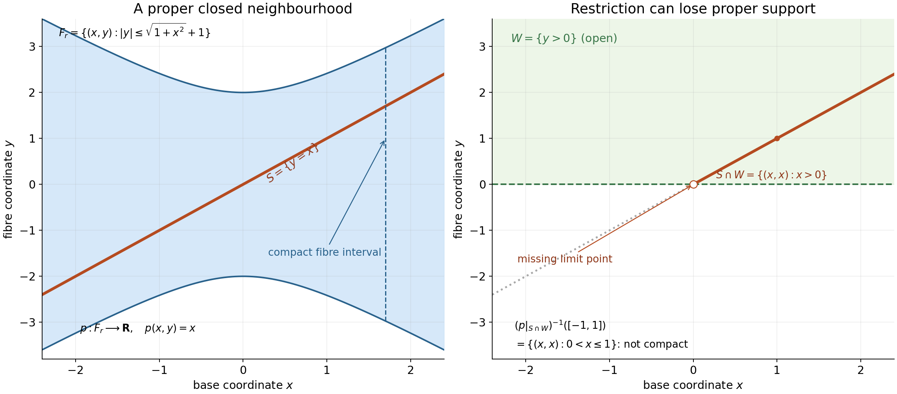
The exact real model has \(p(x,y)=x\), \(S=\{y=x\}\), and closed neighbourhood \(F_r=\{|y|\le\sqrt{1+x^2}+1\}\). Its intersection over every compact base set is compact. Restricting \(S\) to \(W=\{y>0\}\) gives over \([-1,1]\) the noncompact set \(\{(x,x):0<x\le1\}\). Thus arbitrary source restriction need not preserve properness; the extension-by-zero maps (R.23)–(R.24) supply the controlled excision used here. This is an exact model of the support mechanism. Free human comparison: Kashiwara–Schapira, Micro-hyperbolic systems, §3.1; the complete support proof is R.5–R.7 above.
5.35. Relative cones, unshifted cup and the normalized trace
The full smooth/current and proper-support comparisons are §5.34, R.1–R.7. This section fixes the relative differential, connecting signs, ordered normal calibration and all-degree trace. The input coefficient lines are ungraded before the trace shift. Free human comparison: Kashiwara–Schapira, Micro-hyperbolic systems, §3.1. Every chain identity used here is proved below.
V.1 The actual relative differential and connecting homotopy
Let I be a cochain complex on a manifold M, with differential δ, δ²=0, and let r:I(M)→I(M∖Z) be restriction. Define
\[ \begin{gathered} C_Z^q(I)=I^q(M)\\ \oplus I^{q-1}(M\setminus Z),\qquad\\ d(a,b)=(\delta a,ra-\delta b). \end{gathered} \tag{V.1} \]Both components of d² are zero: the second is rδa−δra+δ²b=0. This is the fixed model of Cone(r)[−1]; writing merely “shifted cone” would not specify its connecting sign. The inclusion of supported cochains is T↦(T,0). This is a chain map because rT=0.
For a degree-zero δ-closed section f on the complement, its positive connecting representative in this convention is c_f=(0,−f), of degree1. If a distribution F on M restricts to f, then
\[ c_f+d(F,0)=(\delta F,0). \tag{V.2} \]This gives the actual chain homotopy identifying the connecting representative with the supported current δF. If F is replaced by F+G, with rG=0, the current changes by δG and the relative representative changes by d(G,0). Thus the comparison is independent of the extension, whenever such an extension exists. We do not assert that an arbitrary holomorphic function of unrestricted boundary growth has a distributional extension.
The relative cone's ordinary projection to I(M∖Z)[−1] is (a,b)↦b. Its positive connecting convention above corresponds to taking the negative of that projection when identifying a complement function with its connecting class. That sign is fixed by (V.2), rather than inferred from an exterior permutation.
V.2 Tensoring the normal connecting classes
For ordered independent normal coordinates w₁,…,w_N, let C_i be the relative complex for the corresponding one-coordinate closed support. Tensor the underlying complexes over C, not over the holomorphic coefficient ring. Use the ordinary cochain tensor differential
\[ \begin{gathered} d(a\otimes b)=da\otimes b\\ +(-1)^{|a|}a\otimes db. \end{gathered} \tag{V.3} \]Suppose the one-coordinate functions f_i have extensions F_i, and put c_i=(0,−f_i), T_i=(δF_i,0), e_i=(F_i,0). Then T_i−c_i=de_i, and c_i,T_i are closed of degree1. The finite telescoping identity is
\[ \begin{gathered} T_1\otimes\cdots\otimes T_N\\ -c_1\otimes\cdots\otimes c_N=dH, \end{gathered} \tag{V.4} \]where
\[ \begin{gathered} H=\sum_{i=1}^N(-1)^{i-1}\\ T_1\otimes\cdots\otimes T_{i-1}\otimes e_i\\ \otimes c_{i+1}\otimes\cdots\otimes c_N. \end{gathered} \tag{V.5} \]Indeed, every differential on a c or T factor is zero. The differential on e_i has the preceding tensor sign(−1)^{i−1}, which cancels the displayed coefficient. The resulting ith term replaces e_i by T_i−c_i. Adjacent telescoping terms cancel, leaving exactly(V.4). This proves the product comparison for every N, including changes of an individual extension. Multiplying by a holomorphic coefficient preserves it: δg=0, so the same H multiplied by g has differential g dH.
The tensor-relative top-complement entry of c₁⊗⋯⊗c_N is (−1)^N f₁⋯f_N. Thus a statement using the unsigned ordered holomorphic representative f₁⋯f_N must declare its identification with this tensor entry; its sign is(−1)^N. It may not silently use the ordinary projection sign of the cone in(V.1).
Products of the particular currents in U exist because the singular normal variables of the two factors are independent. Here is the distributional construction. For a tensor of distributions S(a),T(b), choose cutoffs equal to1 near the projections of the compact support of a test function φ(a,b). Define(S⊠T)(φ)=S_a(T_b(φ)). The inner evaluation is a smooth compactly supported function of a. To check this, derivatives in a may be moved inside T by continuity in the test-function topology: difference quotients converge there with every derivative on one compact set. A continuity bound for T and then one for S bounds the value by finitely many derivatives of φ on that compact product, so this is a distribution. It is independent of the cutoffs. On a third independent variable the two evaluations agree by the same construction; testing finite sums of separated test functions and approximating a compactly supported smooth function with its rectangular Fourier partial sums gives equality on general tests. The Fourier coefficients decay faster than every polynomial by repeated integration by parts, so the distributional seminorm bounds justify the limit and both evaluation orders. The rectangular Fourier expansion is applied inside a box after extending the compactly supported test by zero to a larger periodic box. This also proves the two-factor order interchange. Leibniz differentiation follows by testing and integration by parts. Consequently the exterior tensor map commutes with(V.3). Holomorphic parameter coefficients and the finite spatial derivatives of U are legitimate under the same seminorm argument.
This proves equality in the specified tensor-relative model. Identifying that model with the derived relative support cup still requires the analytic resolution/comparison interface; it is not supplied by the existence of the distribution tensor product alone.
V.3 The ungraded coefficient line and its full-form realization
Let L have holomorphic frame η of holomorphic degree l. Its coefficient Dolbeault complex is I_L^q={α⊗η: α has antiholomorphic degree q}, with δ(α⊗η)=(∂bar α)⊗η. L is an ordinary degree-zero coefficient sheaf. The anti-first realization is
\[ J_q(\alpha\otimes\eta)=\alpha\wedge\eta. \tag{V.6} \]It commutes with ∂bar because η is holomorphic and occurs after α. If a has antiholomorphic degree p and holomorphic coefficient degree l, and b has antiholomorphic degree q, define the unshifted coefficient cup by
\[ c(a,b)=(\alpha\wedge\beta)\otimes(\eta_A\wedge\eta_B). \tag{V.7} \]Moving η_A past β gives the exact comparison
\[ J(c(a,b))=(-1)^{lq}J(a)\wedge J(b). \tag{V.8} \]The ungraded-line differential satisfies δc(a,b)=c(δa,b)+(−1)^p c(a,δb). This is verified by applying the ordinary exterior Leibniz rule to α∧β. Formula(V.8) records the extra full-form sign; it must not be suppressed by calling a complete block “even”.
Within a kernel, grouping the N normal one-coordinate blocks ∏_i(∂bar F_i∧dv_i) puts all antiholomorphic factors first with sign
\[ (-1)^{N(N-1)/2}. \tag{V.9} \]There are precisely(N−1)+(N−2)+⋯+1 crossings. Together with the ordered connecting map(V.2), this specifies the coefficient current of the ordered holomorphic input form dv₁∧⋯∧dv_N without a hidden connecting or regrouping choice. For a pair of kernels the two(V.9) factors multiply to1, while the between-kernel sign(V.8) is(−1)^{N²}.
V.4 Proper fibre integration and the all-degree shifted trace
Let p:B×F→B, dim_C F=N, with the complex orientation on the real2N fibre. For a smooth full form whose support is proper over B, real fibre integration is defined by first inserting all ordered real fibre tangent vectors and integrating the coefficient. On a compact subset K of B, properness puts the relevant support in a compact subset of K×F; finitely many fibre charts and a smooth partition of unity suffice. Derivatives in the base commute with integration by differentiation under a compactly supported integral. Fibre derivatives integrate to zero by ordinary one-coordinate integration by parts. These statements prove, in the vertical-first real orientation,
\[ I\,\bar\partial=\bar\partial\,I. \tag{V.10} \]For currents, define the same integral by duality against a compactly supported test on B, multiplying its pullback by a cutoff equal to1 near the properly supported current over that test's compact support. Such a cutoff exists inside finitely many coordinate charts. Changing it does not change the value, since the difference vanishes near the current support. The distributional differentiation identity follows by this definition and integration by parts; it is(V.10). There is no assertion that restriction of an arbitrary p!-supported section to an arbitrary smaller open set remains p!-supported.
In coefficient notation set I=J_target^{-1} p_* J_source, where the source coefficient form orders the intermediate holomorphic block before the remaining holomorphic block. The differential on I_source[N] is(−1)^Nδ. The trace in degree q of the original complex is
\[ \begin{gathered} \operatorname{Tr}_q=(-1)^{N(q-N)}I_q,\\ \qquad I_q=0\quad(q<N). \end{gathered} \tag{V.11} \]It is a chain map I_source[N]→I_target. For q≥N, the left-hand coefficient in Tr_{q+1}(−1)^Nδ is (−1)^{N(q+1−N)+N}=(−1)^{N(q−N)}, the right-hand coefficient in δTr_q. The q<N cases are zero. At the boundary q=N−1, I_N δ is also zero: the degree-N vertical contribution is a compactly supported fibre antiholomorphic derivative, whose integral vanishes by the just proved integration-by-parts identity. At q=N the sign is1, fixing the positive one-fibre Cauchy residue normalization.
The definition is invariant under a holomorphic change of intermediate coordinates. The holomorphic coefficient block acquires detJ, its antiholomorphic block acquires the conjugate determinant, and the real complex-oriented integration acquires exactly|detJ|². This follows by writing the real linear matrix of a complex matrix; its determinant is detJ·conj(detJ), first for triangular matrices and then for an invertible matrix by Gaussian elimination. The ordinary real change-of-variables formula therefore identifies the two integrals, including the sign. Duality extends this equality to the currents just defined. No new residue scalar is introduced by a coordinate change.
If the fibre-coordinate change depends holomorphically on the base, a full-form lift of its relative holomorphic top block also acquires terms containing base holomorphic differentials. Every such term has fibre holomorphic degree strictly less than N. The fibre antiholomorphic degree is at most N, so its total real fibre degree is strictly less than 2N; its fibre integral is zero. This also proves independence of the chosen full-form lift of a relative top block. The surviving fibre-top term is exactly the determinant term above. The same conclusion holds for currents by transposition on compactly supported tests.
For consecutive fibres of dimensions N and M, raw integrations agree with integration over the ordered product fibre by repeated integration of the compactly supported coefficient. The scalar trace signs satisfy
\[ \begin{gathered} (-1)^{N(q-N)}(-1)^{M(q-N-M)}\\ =(-1)^{NM}\\ (-1)^{(N+M)(q-N-M)}. \end{gathered} \tag{V.12} \]This is a direct expansion of the exponents modulo2. The extra(−1)^{NM} is the tensor/shift identification of the two ordered holomorphic fibre coefficient blocks; it is not a second residue normalization. The full shift calculation is recorded next, so(V.12) does not silently identify two different tensor presentations.
V.5 Cup first, then shift the intermediate trace coefficient
The operation in U.3 is an unshifted cohomological cup of two degree-N classes, followed by the trace which lowers degree by N. Thus the cup current has q=2N and intermediate holomorphic coefficient degree N. By (V.8) and(V.11),
\[ \begin{gathered} \operatorname{Tr}_{2N}c(a,b)\\ =(-1)^{N^2} I(c(a,b))\\ =J_{\rm target}^{-1}\\ p_*\bigl(J(a)\wedge J(b)\bigr). \end{gathered} \tag{V.13} \]The two parities cancel. This is the positive full-normal-block convolution, with precisely the normalization of U.5–U.8. The ordinary coefficient cup and the full-form cup are different before applying that trace.
To make the shifts checkable, for complexes A,B and cochain degrees p,q, the standard tensor suspension identification is
\[ \begin{gathered} A[N]\otimes B[M]\\ \longrightarrow(A\otimes B)[N+M],\qquad\\ a\otimes b\longmapsto(-1)^{Mp}a\otimes b. \end{gathered} \tag{V.14} \]On a differential in A, p increases by1, so the displayed sign increases by(−1)^M. This converts the domain sign(−1)^N to the target sign (−1)^{N+M}. On a differential in B, the domain sign is (−1)^{p−N+M}, equal to the target sign(−1)^{N+M+p}. This proves(V.14) in every degree.
Only A, the intermediate trace coefficient, is shifted at the trace step: A[N]⊗B→(A⊗B)[N] has M=0 and therefore has no tensor sign. The input classes at this stage have degrees0 and N. Applying(V.11) then gives(V.13). If one instead first writes both kernel classes as degree-zero classes in A[N] and B[N], the coordinate identification(V.14) contributes (−1)^{Np}; to express the same unshifted cup one must invert that identification before its trace. At p=N that inverse has sign(−1)^{N²}. Adding(V.14) as an extra product sign to a definition already using the unshifted cup changes the operation in odd N and is incorrect.
The equivalent trace-first regrouping A[N]⊗B[M]→(A[N]⊗B)[M] has sign(−1)^{M(p−N)}. Its differential check is the same two computations just given, with the first factor's degree p−N. Composing it with the first-factor-only shift identifies the total shift with(V.14) multiplied by(−1)^{NM}. This is precisely the regrouping factor in(V.12). Both presentations of consecutive ordered traces thus have the same sign after their declared tensor identifications.
For degree-N kernel classes, equality(V.13) reduces either association of three transverse factors to the ordered full-form wedge and the same two real fibre integrations. Both have compact support over compact endpoints; the distributional tensor construction in V.2 and duality in V.4 give the same repeated evaluation. Consequently the two associations agree in this current model, with positive normalized diagonal unit. For the unit, the normal Cauchy current has support v=u and integrates a holomorphic test coefficient to that coefficient: in one coordinate U.6 proves its scalar1; iterating in the fixed coordinate order gives scalar1 in every dimension. Convolution on either side therefore restricts to the diagonal with scalar1.
These computations establish the signs of the canonical relative-support operation: §5.34, R.1–R.7 supplies its full resolution/support comparison and controlled excision. For unrestricted directional input, §5.37, W.1–W.8 supplies the actual collar-to-relative-cone homotopy with the complement term retained. The keyhole evaluation is consistent with that complete chain comparison.
V.6 The complement cube and the normal-class calibration
For N normal supports Z_i in a common manifold M put U_i=M∖Z_i, Z=∩i Z_i, U_A=∩{i∈A}U_i and U_empty=M. The actual finite cube is
\[ \begin{gathered} K^k=\bigoplus_{A\subset\{1,\ldots,N\}}\\ I^{k-|A|}(U_A),\qquad\\ d_K=d_C+(-1)^{|A|}\delta. \end{gathered} \tag{V.15} \]At an ordered nonempty set A={i₀<⋯<i_r}, the d_C component is ∑{j=0}^r(−1)^j c{A\setminus{i_j}} restricted to U_A. In particular the M component restricts to each singleton with sign+. Every pair of deleted indices occurs twice in d_C² with opposite signs. Since δ commutes with restriction, the cross terms of d_K² have coefficients(−1)^{|A|} and(−1)^{|A|+1}; hence d_K²=0.
The complement U=M∖Z is covered by the U_i. Give its Čech–Dolbeault complex differential d_C+(−1)^rδ in Čech degree r. The identification of Cone(I(M)→Tot Čech(I,U))[−1] with(V.15) takes a complement component of Čech degree r to the cube component of cardinality r+1 with factor (−1)^r, leaving the M component unchanged. This is a chain isomorphism: the cone negates the Čech differential while the target factor changes by−1 on increasing r; these signs cancel. Both Dolbeault signs are(−1)^{r+1}. Restriction from M has the r=0 factor1.
The finite Čech comparison with I(U) needs no Leray-cover assumption. Choose a smooth partitionρ_i on U subordinate to U_i. For each smooth or current module I^q set (hc){i₀…i{r−1}}=∑jρ_j c{j i₀…i_{r−1}}, extending terms by zero whereρ_j vanishes. Expansion gives d_C h+h d_C=1: the terms omitting j sum to∑_jρ_j c=c, and all remaining terms occur with opposite signs. Thus the horizontal rows of the augmented comparison cone are exact. The total cone is acyclic as well. Filter by Dolbeault degree; its finite associated horizontal complexes have zero cohomology. Equivalently, kill a total closed element's lowest nonzero Dolbeault row with h and subtract its total boundary. The remaining error lies in higher Dolbeault degree; iteration terminates because that complex is bounded. The same procedure applies to boundaries. The ordinary acyclic-resolution augmentation of I is proved in §5.34, R.5–R.7; thus this cube computes the relative derived support group.
The tensor-to-cube sign is explicit. A normal factor has complement degree r_i∈{0,1}, antiholomorphic degree q_i and total degree p_i=q_i+r_i. Its image is the coefficient exterior product on U_A, A={i:r_i=1}, times
\[ \epsilon=(-1)^{\sum_{i<j}q_i r_j}. \tag{V.16} \]This moves each complement-degree symbol before preceding antiholomorphic factors. A Dolbeault differential on factor i supplies the tensor exponent ∑{l<i}(q_l+r_l)+r_i, while increasing q_i changesε by∑{j>i}r_j. Their sum is∑l r_l+∑{l<i}q_l, the cube's overall Dolbeault sign plus its exterior-product sign. A complement restriction on factor i increases r_i from0 to1, changingε by∑{l<i}q_l. Added to the preceding tensor degrees, this leaves∑{l<i}r_l, its position in the ordered cube subset. This proves the chain-map identity in every degree.
For smooth normal cochains the products are ordinary coefficient products. For the separated current cochains of V.2 use its distributional tensor construction. Holomorphic joint coefficients can be multiplied afterwards; their differential is zero. No product of arbitrary distributions with a shared singular parameter is asserted. Applying(V.16) to(V.5) gives the actual cube homotopy. Its current endpoint is∂bar F₁∧⋯∧∂bar F_N and its top-complement endpoint is(−1)^N f₁⋯f_N. By the cone-to-cube factor (−1)^{N−1}, the latter is−f₁⋯f_N in the full cone's ordinary Čech coordinate. This specifies the connecting augmentation.
A separate holomorphic-line calibration remains. Treat the ordered one-coordinate classes with coefficients dv_i first inΩ¹[1]. Repeated standard tensor suspension(V.14) gives
\[ r_N=(-1)^{N(N-1)/2}. \tag{V.17} \]At each step the preceding unsuspended degree is the number of preceding degree-one classes, so the exponent is1+⋯+(N−1). The resulting anti-first coefficient current is r_N∂bar F₁∧⋯∧∂bar F_N with coefficient dv₁∧⋯∧dv_N. By(V.9) its full form is exactly the positive ordered complete-normal-block current. Its top cube entry is r_N(−1)^N f₁⋯f_N. Thus an unsigned ordered holomorphic expression f₁⋯f_N denotes this normalized class only with that declared identification; it is not literally its unsigned ordinary cube entry. N=2 already detects the distinction.
This calibration of a single N-normal class precedes the between-kernel unshifted cup(V.13). Adding double-suspension there would count a different operation. The one-coordinate positive logarithmic/Cauchy distributions U.5–U.7 fix the scalar, and(V.17) extends that ordered input-frame normalization to N coordinates. §5.37, W.1–W.8 proves the collar trace for unrestricted directional input with this calibration.
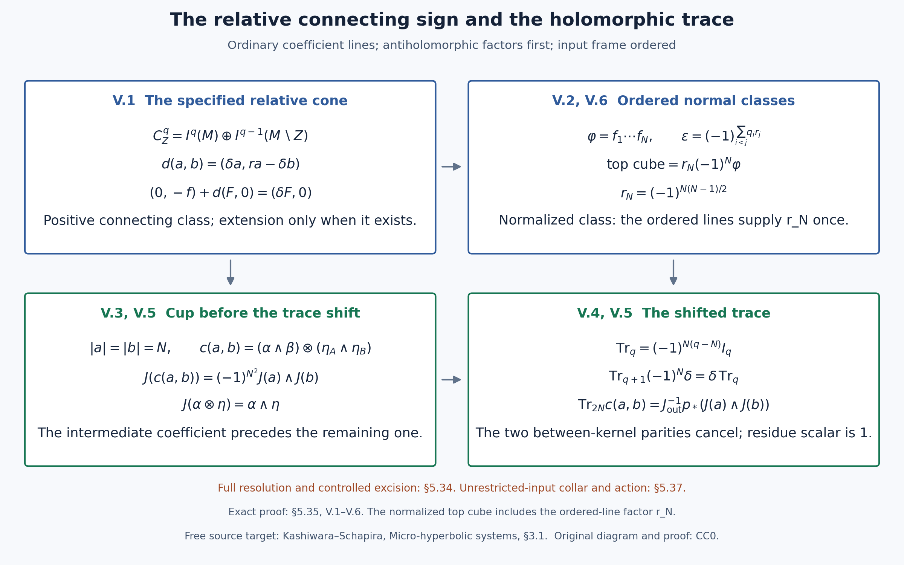
The actual relative cone is (V.1)–(V.2). The unshifted coefficient cup has the regrouping sign (V.8); the all-degree trace (V.11) cancels its between-kernel parity at degree \(2N\), as proved in (V.13). The single-normal-class calibration (V.17) gives ordinary top cube entry \(r_N(-1)^N\varphi\). Proof: V.1–V.6, with the full resolution/excision proof in §5.34 and collar proof in §5.37. Free human comparison: Kashiwara–Schapira, Micro-hyperbolic systems, §3.1.
5.36. Canonical finite polynomial line-cone kernels
This section realizes the actual finite polynomial ring \(R\) of §5.30, F.1–F.7 and the negative polynomial matrices of §5.33, K.1–K.3 by canonical supported-cohomology classes. The full resolutions and support comparison are §5.34; the unshifted cup and normalized trace are §5.35; §5.37 proves the action on arbitrary degree-one directional input with its residual complement term retained. The actual operator product and normal localization are §5.19, S.1–S.4 and §5.22.1, repeated in F.1. The bounded actual resolution, coherent lattice/support comparison and negative kernels are §§5.31–5.33. Finite spatial degree is explicit; the full convergent-\(z\) \(E\) ring and the infinite-order, propagation, separation, D-type and analytic proper-regularity obligations remain distinct.
U.1. Coordinates, properness and what the canonical trace means
Put \(N=d+1\), write output \(u=(t,x)\), input \(v=(s,y)\), and keep \(h=\tau^{-1}\), \(z=\xi/\tau\). Use the closed proper convex line cone \[ \begin{gathered} G_0=\{(r,0)\in\mathbf C\times\mathbf C^d:\\ r\in\mathbf R_{\le0}\},\qquad\\ Z_0=\{(u,v):v-u\in G_0\}. \end{gathered} \tag{U.1} \] Thus the kernel variable has its cut on \(s-t\le0\), whereas the directional quotient at \(p=(0;dt)\) has forbidden limiting directions \(\operatorname{Re}t\ge0\). The two sets live in different spaces. The normal coordinate of the diagonal used for the covector is output minus input; its pairing with \(dt\) is \(t-s\ge0\) on (U.1). No substitution \(\tau\mapsto-\tau\) is made. HolIII IV.2, printed p.908, explicitly defines \(G_0\) with \(\operatorname{Re}t\le0\); IV.5, printed p.917, explicitly uses \(\operatorname{Re}t\ge0\) for the directional support.
Let \(D\) be a sufficiently small convex product of discs in \((t,x)\). It is \(G_0\)-round: if \(u,v\in D\) and \((u,w),(w,v)\in Z_0\), then the intermediate point \(w\) lies on the real segment from \(v\) to \(u\), with unchanged spatial coordinates, and hence lies in \(D\). The projection \[ \begin{gathered} p_{13}:p_{12}^{-1}Z_0\cap p_{23}^{-1}Z_0\\ \cap D^3\longrightarrow Z_0\cap D^2 \end{gathered} \tag{U.2} \] is proper. Over a compact set of endpoints its intermediate points lie in the union of their compact segments. That union is compact inside \(D\): it is the continuous image of the compact endpoint set times \([0,1]\), and convexity puts it inside \(D\). This verifies properness itself, rather than only boundedness in an open disc. The same argument applies to any finite string of intermediate points.
Write \(\Omega_2^N\) for the holomorphic top forms in the input coordinates, ordered as \(ds\wedge dy_1\wedge\cdots\wedge dy_d\). The canonical multiplication under discussion is \[ \begin{gathered} \mathcal E(G_0;D)\\ =H^N_{Z_0}(D^2;\Omega_2^N),\qquad\\ a*b=\operatorname{Tr}_{p_{13}}\\ (p_{12}^*a\smile p_{23}^*b). \end{gathered} \tag{U.3} \] The support morphism in (U.3) is defined because of (U.2). The trace integrates the intermediate holomorphic top form and lowers cohomological degree by \(N\). It has no extra scalar factor; the factors \((2\pi i)^{-1}\) belong to the kernel representatives below.
The full current and smooth resolutions, their actual injective comparisons, and the ordinary/proper image and controlled extension-by-zero maps are proved in §5.34, R.1–R.7. We use its anti-first realization \(J(\alpha\otimes\eta)=\alpha\wedge\eta\), with the input top-form line ungraded before trace. §5.35, V.1–V.6 supplies the explicit relative cone \(d(a,b)=(\bar\partial a,ra-\bar\partial b)\), the positive connecting class \((0,-f)\), the separated-current tensor construction, the finite complement cube augmentation, and the canonical unshifted cup. The all-degree input trace is \(\operatorname{Tr}_q=(-1)^{N(q-N)}I_q\), with \(I=J_{\rm out}^{-1}p_*J_{\rm source}\), and is zero below \(q=N\). It is a chain map on the source shifted by \([N]\), with positive one-coordinate residue.
For one ordered \(N\)-normal class the calibration is \(r_N=(-1)^{N(N-1)/2}\), proved in (V.17). Complete coordinate blocks below already incorporate it. Between two kernel classes of antiholomorphic degree \(N\), the unshifted coefficient cup contributes \((-1)^{N^2}\) relative to their full-block wedge, while the trace at degree \(2N\) contributes the same factor. Their product is \(1\), as proved in V.5. In triple coordinates \((u,a=v-u,b=w-v)\), the two singular normal variable lists are independent; V.2 and V.6 therefore identify their distributional tensor with the actual supported cup. A holomorphic joint coefficient can multiply that tensor. This does not define a product of arbitrary currents in shared singular variables.
The compact-segment geometry (U.2), R.7's controlled excision and V.4's proper fibre integration now make (U.3) an actual canonical operation. V.4 proves compactly supported Stokes, complete output-variable differentiation and base-coordinate invariance; V.5 proves the successive-trace signs. The normalized trace has no extra residue scalar.
This description also proves associativity wherever the support maps are proper: on four factors both associations use the same cup-product, the same proper support and the same double trace; Fubini identifies the traces. The normalized diagonal Cauchy class below is the unit. These are cohomology-class assertions; equality of contour actions is not used to infer equality of kernel classes.
U.2. The one-variable connecting classes and exact normalization
For a complex variable \(w=a+ib\), let \(\log w\) be the principal logarithm, with cut \(\mathbf R_{\le0}\). It is locally integrable, and its upper-minus-lower jump on \(a<0\) is \(2\pi i\). Its distributional antiholomorphic derivative is \[ \bar\partial\log w =-\pi\,\mathbf1_{a<0}\delta(b)\,d\bar w. \tag{U.4} \] For a direct proof, integrate against a compactly supported smooth test form, split the two half-planes along the negative ray, and integrate by parts. The two boundary values contribute \((i/2)(2\pi i)\delta(b)=-\pi\delta(b)\). The boundary of a deleted disc of radius \(\epsilon\) contributes at most a constant times \(\epsilon(1+|\log\epsilon|)\), which tends to zero. Off the cut the antiholomorphic derivative is zero. There is no additional point mass at the endpoint.
Since \(d\bar w\wedge dw=2i\,da\wedge db\), (U.4) gives \[ \begin{gathered} -\frac1{2\pi i}\bar\partial\log w\wedge dw\\ =\mathbf1_{a<0}\delta(b)\,da\wedge db. \end{gathered} \tag{U.5} \] The right side integrates a holomorphic coefficient along the ray with increasing real coordinate. In particular its truncation between \(s=a_0\) and \(s=t\), where \(a_0<t\) on a real line, is \(\int_{a_0}^{t}\), with positive orientation. The value assigned to the step function at its endpoint is irrelevant to this current.
The Cauchy–Pompeiu identity gives \[ \begin{gathered} \frac1{2\pi i}\bar\partial\bigl(\frac1w\bigr)\wedge dw\\ =\delta(a)\delta(b)\,da\wedge db. \end{gathered} \tag{U.6} \] One may prove its scalar coefficient by Stokes on a deleted disc: the positive boundary integral of \(dw/(2\pi i w)\) equals one. For \(k\ge0\), define the extension of \(k!/w^{k+1}\) by \((-1)^k\partial_w^k(1/w)\). Differentiating (U.6) then gives \[ \begin{gathered} \frac1{2\pi i}\bar\partial\bigl(\frac{k!}{w^{k+1}}\bigr)\wedge dw\\ =(-1)^k\partial_w^k\delta_{\mathbf C}(w). \end{gathered} \tag{U.7} \] On a holomorphic test function \(f\), the last distribution has value \(\partial_w^k f(0)\). Thus each spatial coordinate contributes precisely its ordinary derivative, with no surviving sign and with precisely one \((2\pi i)^{-1}\). The \(d\)-fold product gives the spatial diagonal derivative \(\Delta_\beta(x,y)=\prod_j(-1)^{\beta_j}\partial_{y_j}^{\beta_j}\delta_{\mathbf C}(y_j-x_j)\). It satisfies \[ \int_y\Delta_\beta(x,y)f(y)=\partial_x^\beta f(x). \tag{U.8} \]
The classes in (U.5)–(U.7) are the connecting classes of their displayed holomorphic representatives. For one coordinate this follows from the relative-cone differential of the chosen distributional extension. For several coordinates take the ordered external product of these connecting maps. Before the holomorphic-line calibration, its top cube entry is \((-1)^N\) times the ordered product of the holomorphic representatives. Applying (V.17) gives \(r_N(-1)^N\) times that product in the ordinary cube, or \(-r_N\) times it in the full cone’s ordinary complement Čech coordinate. This argument supplies the class without assuming that a particular complement covering is Leray.
There is an equivalent contour verification useful for unrestricted holomorphic input functions. For a keyhole starting below the negative cut at a negative anchor \(a_0\), going positively around \(s=t\), and ending above that cut at the same anchor, set \(F(s)=\int_t^s A(t,r)f(r)\,dr\). Integration by parts on the two sides of the cut gives \[ \begin{gathered} -\frac1{2\pi i}\int_\Gamma\\ \log(s-t)A(t,s)f(s)\,ds\\ =-F(a_0)+\frac1{2\pi i}\\ \oint\frac{F(s)}{s-t}\,ds\\ =\int_{a_0}^{t}A(t,s)f(s)\,ds. \end{gathered} \tag{U.9} \] The last closed-contour integral is zero because \(F(t)=0\). Positive spatial circles evaluate (U.8) by the ordinary iterated Cauchy formula. The ordinary contour identity (U.9) is consistent with the positive residue normalization. Its equality with the canonical cup/excision/trace action on unrestricted-growth input is proved by the actual relative-cone and full-neighbourhood coboundaries in §5.37, (W.24)–(W.27) and (W.32)–(W.33). That proof retains the complement component and requires no distributional extension of the input across its boundary.
U.3. Actual analytic polynomial kernels define canonical classes
An element of \(R\) has a finite \(\partial_x\)-degree and finite positive \(\partial_t\)-order. Remove that finite positive time order using a left power of \(h\). Thus it suffices first to treat \[ \begin{gathered} P=\sum_{\beta\in B}\sum_{m\ge0}\\ b_{m,\beta}(t,x)h^m\partial_x^\beta,\quad\\ B\text{ finite},\quad\\ |b_{m,\beta}|\le B_\beta C_\beta^m m!. \end{gathered} \tag{U.10} \] All coefficients have one common holomorphic base domain. Changing from F.1's \(h^n z^\beta\) to (U.10) only makes a fixed finite shift of \(m\) for each \(\beta\). The factorial estimate is preserved by \((m+k)!\le2^{m+k}m!k!\), with enlarged constants. Terms with a negative \(m\) are part of the removed finite differential operator.
Separate the \(m=0\) terms and set \[ \begin{gathered} A_\beta(t,s,x)=\sum_{m\ge1}\\ b_{m,\beta}(t,x)\frac{(t-s)^{m-1}}{(m-1)!}. \end{gathered} \tag{U.11} \] For \(C_\beta|t-s|<1\), normal convergence follows from \[ \begin{gathered} |A_\beta(t,s,x)|\\ \le \frac{B_\beta C_\beta}{(1-C_\beta|t-s|)^2}. \end{gathered} \tag{U.12} \] The finite list \(B\) permits one actual product \(D^2\) with all \(C_\beta\operatorname{diam}D_t<1/2\). Fixed derivatives converge on one smaller common product by the Cauchy formula. This proves convergence at the time diagonal as well; the class is not defined by a merely formal Borel series.
The canonical kernel is represented on the ordered complement intersection by \[ \begin{gathered} K_P(u,v)=\frac1{(2\pi i)^{d+1}}\\ \sum_{\beta\in B}\\ \frac{\beta!}{\prod_j(y_j-x_j)^{\beta_j+1}}\\ \bigl\{\frac{b_{0,\beta}(t,x)}{s-t}\\ -\log(s-t)A_\beta(t,s,x)\bigr\}\\ ds\wedge dy_1\wedge\cdots\wedge dy_d. \end{gathered} \tag{U.13} \] The complement covering first uses \(s-t\notin\mathbf R_{\le0}\), then \(y_j\ne x_j\), in that order. Its union is \(D^2\setminus Z_0\). The unsigned expression (U.13) denotes the normalized ordered class: its literal top entry in the ordinary complement cube is \(r_N(-1)^N K_P\), and its literal top full-cone Čech entry is \(-r_N K_P\), by (V.15)–(V.17). It is not an unsigned ordinary cube entry. With this declared calibration, equations (U.5)–(U.8) show that (U.13) defines a class \(\kappa(P)\in\mathcal E(G_0;D)\). In complete coordinate blocks its supported-current representative is \[ \begin{gathered} T_P(u,v)=\sum_{\beta\in B}\\ \bigl\{b_{0,\beta}(t,x)\delta_{\mathbf C}(s-t)\\ +A_\beta(t,s,x)\mathbf1_{\operatorname{Re}(s-t)<0}\\ \delta(\operatorname{Im}(s-t))\bigr\}\\ \Delta_\beta(x,y). \end{gathered} \tag{U.14} \] Equation (U.14) is a density notation for the complete normal coordinate blocks from (U.5)–(U.7). In particular the time block contains \(d\overline{(s-t)}\), and the spatial blocks contain \(d\overline{(y_j-x_j)}\). Their output antiholomorphic components are retained. The holomorphic factors are the relative input forms; in coordinates \((u,v-u)\) they are the corresponding normal holomorphic forms modulo output holomorphic forms. Thus (U.14) denotes the full closed Dolbeault current, not merely its top fibre component. Every distribution in it has finite local order. This is where finite \(B\) is essential. Normal convergence in (U.11) gives a holomorphic smooth coefficient for the ray current, and its multiplication by the finite diagonal distributions is defined.
For K's rescaled matrices specifically, \(b_{m,\beta}=0\) until \(m=n+|\beta|+1\), and (U.11) is exactly K.3. Its sharper common-domain bound K.4 therefore remains unchanged. There is no loss of the \(|\beta|\) factorial and no change in the rescaling \(Q_j=h^jP_jh^{-(j-1)}\).
U.4. Composition is equality of canonical classes
First take strictly negative monomials \(P=p(t,x)h^m\partial_x^\beta\), \(Q=q(t,x)h^l\partial_x^\gamma\), with \(m,l\ge1\). Their current product is a product in independent difference coordinates as explained in U.1. Under the proper intermediate trace, the two ray currents impose \(\operatorname{Im}t=\operatorname{Im}s=\operatorname{Im}v\) and \(\operatorname{Re}v\le\operatorname{Re}s\le\operatorname{Re}t\). The spatial delta derivatives give the finite ordinary Leibniz sum. The resulting current has ray coefficient \[ \begin{gathered} p(t,x)\sum_{\nu\le\beta}\binom\beta\nu\\ \int_v^t\frac{(t-s)^{m-1}(s-v)^{l-1}}{(m-1)!(l-1)!}\\ \partial_x^\nu q(s,x)\,ds\\ \ \Delta_{\beta-\nu+\gamma}(x,w). \end{gathered} \tag{U.15} \] The integration has the positive orientation \(v\to t\) by (U.5), and lies on the actual compact segment required by (U.2). It is already the canonical cup/trace current, not an action evaluated on test solutions.
Expand \(\partial_x^\nu q(s,x)\) at \(t\) on a common smaller domain. Its coefficient of \((t-s)^k\) is \((-1)^k\partial_t^k\partial_x^\nu q(t,x)/k!\). The integer beta integral is exactly \[ \begin{gathered} \int_v^t\frac{(t-s)^{m+k-1}(s-v)^{l-1}}{(m-1)!(l-1)!k!}\,ds\\ =\binom{m+k-1}{k}\\ \frac{(t-v)^{m+l+k-1}}{(m+l+k-1)!}. \end{gathered} \tag{U.16} \] It follows by parametrizing the complex segment by a real variable and integrating by parts; it holds including the declared orientation. Thus the coefficient of the canonical convolution is \(\binom\beta\nu\binom{-m}{k}\), since \((-1)^k\binom{m+k-1}{k}=\binom{-m}{k}\). These are precisely the actual \(\xi,x\) and \(\tau,t\) Leibniz coefficients of \(P\circ Q\), with exponent \(m+l+k\). All time contractions are retained. By (U.11) the current in (U.15) is therefore \(T_{P\circ Q}\).
For infinite negative time tails but finite spatial degree, their holomorphic coefficients and finitely many derivatives converge normally on one smaller product by (U.12). The trace integrates a compact segment, so the convolution is normally convergent there. K.3's Taylor-coefficient proof, or the same bound and (U.16), gives equality with the analytic coefficient of the actual symbol product. At a fixed time-difference power only finitely many indices \(m,l,k\) contribute. The actual product theorem puts the product in the factorial class, so its convergent Borel coefficient is uniquely determined by these Taylor coefficients. This proves equality of the supported currents, hence equality of their relative-cone classes. A function-space faithfulness argument is unnecessary for this step.
Terms with \(m=0\) are supported on the time diagonal. Their trace acts by the finite indicated derivative. The distributional Leibniz rule in (U.8) gives exactly their finite spatial contractions; multiplying by a holomorphic coefficient on the input differentiates that coefficient when the derivative is on its left. A negative time term composed on the right with a multiplying coefficient \(b(v,x)\) has coefficient \((t-v)^{m-1}b(v,x)/(m-1)!\). Taylor expansion of \(b(v,x)\) at \(t\) gives \((-1)^k/(k!(m-1)!)\), equal to \(\binom{-m}{k}/(m+k-1)!\), after retaining the factor \((t-v)^{m+k-1}\). Thus it gives every time contraction also in this diagonal case; the finite spatial Leibniz sum is taken at the same time. Uniform Taylor convergence and (U.12) justify the actual negative tails. For the time derivative, differentiation of the holomorphic representative gives \[ \begin{gathered} \partial_t\bigl(-\frac{\log(s-t)}{2\pi i}\bigr)\\ =\frac1{2\pi i(s-t)},\qquad\\ -\partial_s\bigl(-\frac{\log(s-t)}{2\pi i}\bigr)\\ =\frac1{2\pi i(s-t)}. \end{gathered} \tag{U.17} \] The first is composition with \(\partial_t\) on the output; the second is composition with its input diagonal derivative, by integration by parts. These are identities of holomorphic representatives on the complement and hence of their connecting classes, rather than literal derivatives of a chosen logarithmic current extension. To check the distinction, let \(G\) be the distributional logarithmic extension and \(F\) the normalized Cauchy extension. The displayed holomorphic derivative says that \(H=\partial_tG-F\) is supported on the cut. Explicitly, for \(w=s-t\), the jump calculation of (U.4) applied to the holomorphic derivative gives \(H=(2i)^{-1}\mathbf1_{\operatorname{Re}w<0}\delta(\operatorname{Im}w)\). The two supported-current representatives differ by \((\bar\partial H,0)=d(H,0)\), an actual relative-cone boundary; for the input derivative use \(H=-\partial_sG-F\), which has the same value. In \(N\) normals, let \(S_{\rm sp}\) be the ordered product of the normalized closed spatial Cauchy coefficient currents and put \(H_N=r_N H S_{\rm sp}\), with coefficient \(ds\wedge dy_1\wedge\cdots\wedge dy_d\). It has antiholomorphic degree \(N-1\), and the complete-current difference is \((\bar\partial H_N,0)=d(H_N,0)\), because \(S_{\rm sp}\) is closed. This boundary persists after the proper intersection cup and trace by the chain maps of R.7/V.4. Thus any extra supported term in the distributional derivative is retained as an exact current. It is not discarded as a pointwise identity. It follows as an equality of canonical classes that \[ \begin{gathered} \kappa(\partial_t)*\kappa(h)\\ =\kappa(h)*\kappa(\partial_t)=1. \end{gathered} \tag{U.18} \] The diagonal product of (U.6) over all coordinates is the unit: tracing against it restricts every coefficient to the diagonal, with positive sign. The ordinary relations of all finite differential operators follow by distributional differentiation of that same diagonal. Combining them with the preceding negative-tail calculation and the exact normal localization of F.1 yields a unital homomorphism \[ \begin{gathered} \kappa:R\longrightarrow\\ \underset{D\ni0}{\operatorname{colim}}\mathcal E(G_0;D),\qquad\\ \kappa(P\circ Q)=\kappa(P)*\kappa(Q). \end{gathered} \tag{U.19} \] If the two inputs need different coefficient domains, intersect those domains and shrink \(D\) once before the calculation. This is a germ statement. It is not a uniform domain assertion for all elements of \(R\) at once.
Consequently the rescaled K matrices form a canonical kernel complex: \[ \kappa(Q_j)*\kappa(Q_{j-1})=0. \tag{U.20} \] This includes the entire matrices and their actual analytic tails. It holds on a common \(D\) for the finite matrix list and its products, with row-vector composition in the order used in L.8. No reduced-fibre replacement or generic-support restriction occurs.
U.5. The canonical action on the directional degree-one quotient
Define \(C_p\) as the filtered colimit of \(\mathcal O(V\setminus Z)/\mathcal O(V)\), where \(Z\) is a closed germ whose limiting directions satisfy \(\operatorname{Re}t\ge0\). It is the degree-one supported-cohomology colimit: the support exact sequence gives the quotient, and the colimit over neighbourhoods of the remaining \(H^1(V,\mathcal O)\) vanishes by exactness of stalks. This uses no degree-zero or higher-degree vanishing assertion for an arbitrary fixed \(V\).
Every such \(Z\) can be enlarged to one with convex complement \[ \begin{gathered} \Omega_g=\\ \{\operatorname{Re}t<-g(|(\operatorname{Im}t,x)|)\},\\ \qquad g\text{ convex, nondecreasing},\\ \quad g(r)=o(r). \end{gathered} \tag{U.21} \] Here is the construction. On a sufficiently small ball, define \[ \begin{gathered} e(r)=\sup\bigl(\{0\}\cup\\ \{-\operatorname{Re}t/|v|:\\ (t,x)\in Z,\operatorname{Re}t<0,\\ 0<|v|\le r\}\bigr) \end{gathered} \tag{U.21a} \], with \(v=(\operatorname{Im}t,x)\). The support direction condition first bounds this supremum and then gives \(e(r)\to0\). Replace a bound by one if necessary after shrinking. Put \(g(r)=\int_0^{2r}e(a)\,da\). Monotonicity gives convexity, \(g(r)\ge re(r)\) and \(g(r)\le2re(2r)=o(r)\). The radial composition is convex by the triangle inequality and monotonicity. Thus its strict hypograph in (U.21) is convex, its complementary support contains \(Z\), and that support has exactly the required limiting direction condition. Unions of two allowed support germs remain allowed, so this construction is cofinal and compares representatives.
The domain \(\Omega_g\) is \(G_0\)-open: decreasing the real time coordinate while fixing \(\operatorname{Im}t,x\) preserves the inequality. For a sufficiently small output neighbourhood inside a larger product \(D\), the kernel support intersected with the input support \(D\setminus\Omega_g\) is proper over the output. In fact its input real coordinate lies between \(-g(|v|)\) and the output real coordinate, with the other coordinates fixed. For output near zero this entire segment lies compactly inside the chosen larger \(D\), by continuity of \(g\) and \(g(0)=0\). This is the exact local support condition for the cup/trace action on the degree-one relative group. At output points of \(\Omega_g\), all lower real input points are in \(\Omega_g\); hence its support maps into the output support. Excision gives the action on the germ, independently of the larger product.
Take a sufficiently small negative real anchor \(a_0\). For output \((t,x)\) in a smaller convex part of \(\Omega_g\), the segment from \((a_0,x)\) to \((t,x)\) lies in the input domain. On a compact output subset that union of segments is compactly inside the input domain, and thus has a fixed spatial Cauchy radius. Only finitely many spatial derivatives occur. Equations (U.11)–(U.12) give the actual canonical action \[ \begin{gathered} \rho(P)[f]=\bigl[\\ \sum_{\beta\in B}\\ b_{0,\beta}(t,x)\partial_x^\beta f(t,x)\\ +\sum_{\beta\in B}\int_{a_0}^t\\ A_\beta(t,s,x)\partial_x^\beta f(s,x)\,ds\bigr]. \end{gathered} \tag{U.22} \] Its equality with the canonical action is proved by §5.37, W.1–W.8 and (W.24)–(W.33), including the actual smooth/current augmentation, proper localization, shifted relative trace and full-output collar primitive. For the finite matrix list, select one anchor tube, one smaller product and one time radius before applying the formula. The integrals and their derivatives converge uniformly on every compact output subset; no derivative-radius choice depends on the tail index.
Changing the anchor changes (U.22) by integrals over a compact segment at negative real time. The input is holomorphic on a full tube around that segment. For \(t,x\) in a full sufficiently small neighbourhood of zero, (U.12) holds on that tube, so the difference extends holomorphically across zero. An extending input produces an extending output by the same bound. The cofinal common supports in (U.21) compare any two input representatives. Therefore the formula descends to \(C_p\).
The finite time derivative acts by its ordinary derivative. In particular \(\partial_t\rho(h)f=f\) and \(\rho(h)\partial_tf=f-f(a_0,x)\). The anchor term is holomorphic on a full neighbourhood of zero and is zero in \(C_p\). Thus (U.18) and (U.22) agree with the localized \(R\)-action, and \(\partial_t,h\) are two-sided inverses in this quotient. This does not assert a two-sided inverse on ordinary holomorphic functions before taking the quotient.
The action, and hence (U.19), is faithful on the ring \(R\). Here is a finite-polynomial proof. After a finite left shift by \(h\), take \(P\) in (U.10). For \(\lambda\notin\mathbf Z\) and \(v_0\in\mathbf C^d\), use \(f=e^{v_0\cdot x}t^\lambda\), with its cut on the positive real time ray. Modulo extending functions, its \(m\)-th primitive is \(e^{v_0\cdot x}t^{\lambda+m}/(\lambda+1)_m\). The anchor corrections converge holomorphically near zero: for fixed \(\lambda\), \(|(\lambda+1)_m|^{-1}\le A(m+1)^k/m!\), as follows by summing \(\log|1+\lambda/j|=\operatorname{Re}\lambda/j+O(j^{-2})\). The Taylor polynomial at the anchor of that primitive is bounded by a fixed polynomial in \(m\) times \((|a_0|+|t-a_0|)^m/m!\). The factorial estimate in (U.10) and a sufficiently small anchor make its sum normally convergent. The set of spatial indices is finite.
If \(\rho(P)=0\), the nonextending part is \[ \begin{gathered} e^{v_0\cdot x}t^\lambda\\ \sum_{m\ge0,\beta\in B}\\ b_{m,\beta}(t,x)\frac{t^m v_0^\beta}{(\lambda+1)_m}=0. \end{gathered} \tag{U.23} \] The inner sum is holomorphic at zero. Continuation around a small circle multiplies \(t^\lambda\) by \(e^{2\pi i\lambda}\ne1\) and leaves a holomorphic extension fixed, so the inner sum must vanish. At the coefficient of \(t^q\) this is a finite rational identity \(\sum_{m=0}^q R_{m,q}(v_0,x)/(\lambda+1)_m=0\). The pole at \(\lambda=-q\) isolates \(R_{q,q}\); descending through the remaining poles and the constant term isolates every \(R_{m,q}\). The polynomial monomials \(v_0^\beta\) then isolate every Taylor coefficient of every \(b_{m,\beta}\). Hence \(P=0\). Invertibility of \(\rho(h)\) proves the same after localization. This is ring faithfulness; it is not a theorem that solution functionals separate every holonomic module.
U.6. Exact consequence and remaining interfaces
The actual finite-polynomial kernel complex of K now has canonical line-cone classes, its positive residue normalization, its ring products and its degree-one directional action. Its matrices have one actual coefficient domain and the original factorial bounds. All singular-support sections of the original finite modules remain in the supplied algebraic complex; the construction has imposed no generic-support or reduced-fibre restriction. Off-support algebraic contractibility from K.4 is preserved after any already defined ring map, including the restricted map (U.19) wherever a contracting homotopy has entries in its domain. A homotopy with entries in arbitrary \(E\) cannot be transferred through (U.19) without the still missing full \(E\) comparison.
The precise still-open steps are:
- The analogous proper-cone cup/trace comparison for every convergent \(z=\xi/\tau\) coefficient of \(E\), beyond finite polynomial degree. An unbounded spatial derivative sum cannot be treated as the finite current (U.14); its proper-cone product and trace require a separate complete proof.
- The ring action on the derived relative complexes needed by Microhyp 3.2.5 and 4.5.1, with its exact supports, cone hypotheses and shifts, and the weakened off-support exactness condition used in HolIII IV.4.4.1. A degree-one quotient action does not supply that derived assertion.
- Sectorial propagation, continuation across the discriminant and separation for an arbitrary holonomic module, including singular support. Ring faithfulness of (U.19) proves none of these solution-space assertions.
- Actual \(E^\infty\)-linearity, \(A^\infty\) monodromy-ideal stability, the \(E^\infty\otimes_{A^\infty}\) comparison and extension-faithfulness. Neither the finite-polynomial canonical action nor the actual positive-degree formal completion is such an extension.
- The resulting finite D-type embedding, ordinary finite-pole recovery for regular holonomic systems, intrinsic microlocal order, full C1 and arbitrary proper/support-proper analytic regularity.
Free human source material, distinguished from this original proof: Kashiwara–Kawai, HolIII, III.1 (printed pp.869–882), III.2–III.3 (pp.883–889), IV.2 (p.908) and IV.5 (p.917); Kashiwara–Schapira, Micro-hyperbolic systems, §3.1, printed pp.11–13. Their statements are proof targets and normalization checks; no omitted SKK theorem, infinite-order flatness, finite D-type theorem or analytic proper theorem is imported.
The figure below illustrates precisely (U.1)–(U.2), (U.5)–(U.8), (U.15)–(U.18) and (U.20). It is a real slice of the stated complex supports and not a depiction of all higher-dimensional cotangent geometry.
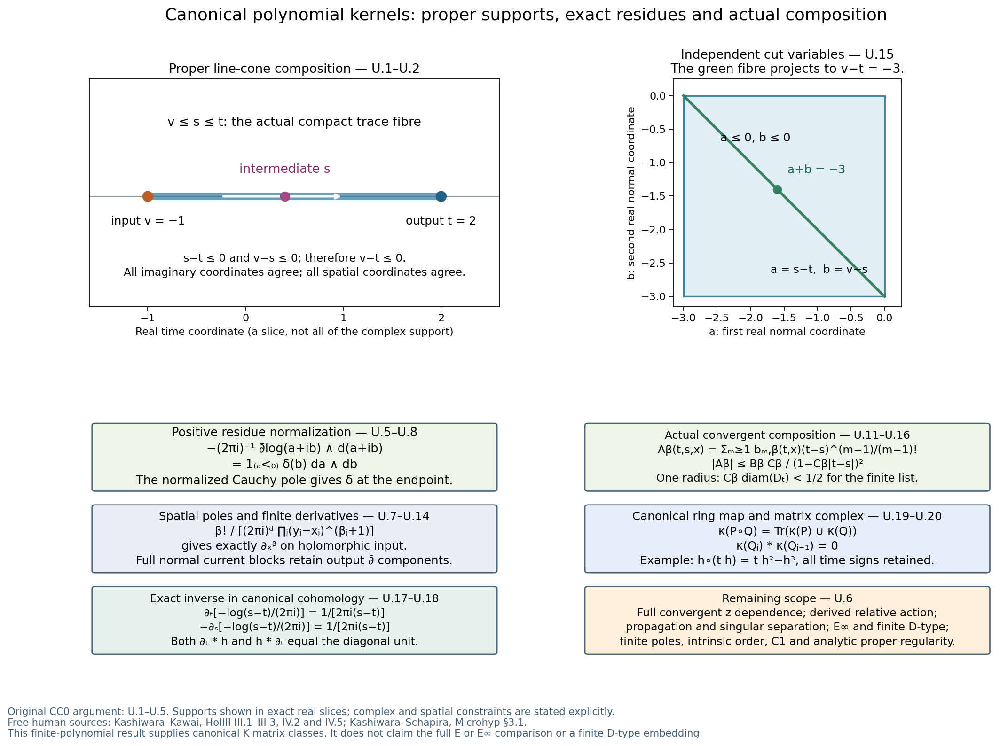
The exact real slice shows the compact intermediate segment of (U.2), the independent negative normal coordinates of (U.15), positive ray/Cauchy residues (U.5)–(U.8), and the convergent product (U.11)–(U.20). Derivative inverse identities in (U.17)–(U.18) hold in canonical cohomology with the exact supported correction stated there. The full complex and spatial constraints are retained in U.1–U.5. Free human comparisons are HolIII and Micro-hyperbolic systems at the locators above.
5.37. Interior collars and the canonical directional action
The theorem proved here is the equality missing from U.9/U.22: the unshifted supported cup of an actual finite polynomial line-cone kernel with an arbitrary degree-one directional input, followed by the normalized shifted input trace, is represented by the anchored Volterra formula U.22. There is no boundary-growth assumption on the input. The complement component of the relative cone is retained throughout.
The actual coefficients and kernels are §5.36, U.1–U.5; the full smooth/current resolutions, acyclic/injective and controlled-excision comparisons are §5.34, R.1–R.7; and the coefficient cup, finite complement cube, ordered normal calibration and all-degree trace are §5.35, V.1–V.6. Free human comparisons are Kashiwara–Schapira, Micro-hyperbolic systems, §3.1, and Kashiwara–Kawai, HolIII, III.1, IV.2 and IV.5. These identify the target operation and kernel/input cones; every comparison used here is proved below.
Every degree-one germ-colimit relative class has a representative of the kind treated below. Indeed R.6–R.7 allow the smooth input relative cone. A closed degree-one cochain \((a,b)\) has \(\delta a=0\) on the input neighbourhood and \(ra=\delta b\) on its complement. The explicit R.3 contraction, preserving smoothness, supplies \(F\) on a smaller input box with \(a=\delta F\). Subtracting \(d(F,0)\) gives \((0,b-rF)\); its degree-zero complement coefficient is \(\delta\)-closed. The degree-zero identification in R.3 makes \(f=rF-b\) holomorphic on that entire open complement, so the representative is \((0,-f)\). This requires only a neighbourhood shrink in the germ colimit. It imports neither fixed-domain Stein vanishing nor an extension of \(f\) across its excluded boundary. Enlarging the support to the cofinal U.21 family then gives the convex complement used below.
W.1. Relative cones and an explicit proper-support roof
Write \(\delta=\bar\partial\) in the full coefficient Dolbeault complex \(I\), with all output and input antiholomorphic variables included. For a closed \(S\subset M\) put \[ \begin{gathered} C_S^q(I)=I^q(M)\\ \oplus I^{q-1}(M\setminus S),\qquad\\ d(a,b)=(\delta a,ra-\delta b). \end{gathered} \tag{W.1} \] Thus a holomorphic complement function has positive connecting representative \(c_f=(0,-f)\). An interior cutoff \(F=\chi f\), with \(\chi\) smooth and compactly supported in the holomorphic domain of \(f\), extends smoothly by zero and gives \[ c_f+d(F,0)=(\delta F,F-f). \tag{W.2} \] Its second component is generally nonzero. No extension of \(f\) across its excluded boundary occurs in (W.2).
Let \(p:M\to B\) be the projection forgetting input variables over the output base, and suppose \(S\) is proper over \(B\). On a sufficiently small base open choose a smooth \(\eta\), equal to one on an open neighbourhood of \(S\), whose closed support is proper over \(B\) and contained in an open \(W\subset M\). In our application \(W=B\times D'\) with \(\overline{D'}\subset D\), and an explicit \(\eta\) is constructed in W.4. Define \[ \begin{split} L_\eta(a,b)&=(\eta a+\delta\eta\wedge b,\eta b),\\ E_\eta(a,b)&=((1-\eta)b,0). \end{split} \tag{W.3} \] The first occurrence of \(\delta\eta\wedge b\), and the first component of \(E_\eta\), extend by zero across \(S\). They are defined because \(\delta\eta\) and \(1-\eta\) vanish on a neighbourhood of \(S\). This is valid even when \(b\) has unbounded growth toward \(S\).
Direct expansion, using restriction on the complement, proves \[ \begin{gathered} dL_\eta=L_\eta d,\qquad\\ 1-L_\eta=dE_\eta+E_\eta d. \end{gathered} \tag{W.4} \] For example the first component of \(dE_\eta+E_\eta d\) is \((1-\eta)a-\delta\eta\wedge b\); the second is \((1-\eta)b\). In the first component of \(dL_\eta\), the cross term is \(\delta\eta\wedge(ra-\delta b)\), exactly the first cross term of \(L_\eta d\).
All components of \(L_\eta c\) have closed support inside \(\operatorname{supp}\eta\), so they are proper. A complement component is a section of \(k_*I\); it need not extend as a current across \(S\). Its sheaf support is still contained in the same proper set. The homotopy \(E_\eta\) also preserves a pre-existing proper support. Consequently inclusion \[ p_!C_S(I)\longrightarrow p_*C_S(I) \tag{W.5} \] has the actual local chain homotopy inverse \(L_\eta\). Here \(p_*\) means the section complex on the inverse image of the base open; it is not an assertion that its individual terms are \(p_*\)-acyclic. Formula (W.4) proves exactly the needed comparison of these two particular complexes.
Moreover \(L_\eta\) lands in the extension-by-zero complex on \(W\). The roof \[ \begin{gathered} p_*C_S(I)\ \longleftarrow\\ (p|_W)_!C_S(I|_W)\\ \ \xrightarrow{\,e_W\,}\ p_!C_S(I) \end{gathered} \tag{W.6} \] uses inclusion/extension by zero, with inverse to its left arrow supplied by \(L_\eta\). The two homotopies are (W.4). The right arrow is the controlled excision quasi-isomorphism (R.24). Thus (W.6) is an explicit support-to-proper-image roof, and not restriction of a proper section to an arbitrary source open.
For two such cutoffs, all terms of \[ \begin{gathered} (L_{\eta'}-L_\eta)c\\ =d\bigl(( (\eta'-\eta)b,0)\bigr),\\ \qquad dc=0, \end{gathered} \tag{W.7} \] have proper support in the union of their two proper neighbourhoods. The primitive extends by zero across \(S\), since \(\eta'-\eta\) vanishes there. The same formula, including the \(E d\) term in (W.4), is the chain homotopy on arbitrary cochains. It establishes agreement of the two roofs, also after intersecting excision neighbourhoods. This supplies change-of-neighbourhood and change-of-collar compatibility at the chain level.
W.2. The cup and its augmentation with a supported kernel
Let \(A\) be the kernel support, \(B_{\rm in}\) the inverse image of the input support, and \(S=A\cap B_{\rm in}\). Let \(T\) be a closed supported kernel coefficient current of antiholomorphic degree \(N\). Its coefficient is the ungraded input top-form line; the input has the ungraded coefficient \(\mathcal O\).
For a smooth input relative cochain \((a,b)\), the cup with this kernel is \[ \begin{gathered} m_T(a,b)=\bigl(T\wedge a,\;\\ (-1)^N T\wedge b\bigr)\in C_S. \end{gathered} \tag{W.8} \] The complement component is first defined on \(M\setminus B_{\rm in}\). On \(M\setminus A\) it is zero. These definitions agree on the overlap because \(T\) vanishes there, and hence glue on \(M\setminus S\). Smooth multiplication of a current is well defined, including its finitely many distributional derivatives. The input resolution is the smooth one; no product of arbitrary distributions is used.
The general version with a supported current of degree \(p\) has the sign \((-1)^p\). Expanding \(\delta(Ta)\) and \(\delta(Tb)\) proves that it is a chain map from the ordinary tensor complex. With \(T\) closed, \(d\,m_T=(-1)^N m_Td\).
Here is the precise identification of (W.8) with the canonical supported cup. Use the two-support finite cube of V.6, whose components are forms on \(M\), \(M\setminus A\), \(M\setminus B_{\rm in}\), and their intersection. Map the tensor of the two relative complexes to this cube by V.16. A supported kernel has only its \(M\) component, of Dolbeault degree \(N\). Moving the input complement symbol past it contributes \((-1)^N\). Thus the only complement component is exactly that of (W.8); its restriction to \(M\setminus A\) is zero, and its higher intersection component is zero. The augmentation from the full relative cone to the complement Čech complex is ordinary restriction in singleton degree, with no further sign (V.15). Therefore (W.8) maps literally to this cup cube.
The cube augmentation is a quasi-isomorphism: V.6 gives the finite Čech partition homotopy and the terminating row elimination, without a Leray assumption. R.1–R.7 identify the smooth/current augmentations with the holomorphic and derived-support objects. Multiplication of a current by a smooth form commutes with these augmentations and with the holomorphic coefficient multiplication. Tensoring these augmentations over \(\mathbf C\) preserves quasi-isomorphisms: at each stalk an exact complex of vector spaces splits by choosing complements to kernels; tensoring its contraction with a bounded complex preserves exactness, and the finite degree filtration gives the assertion for the total tensor. Thus this commutative augmentation/cube roof realizes the canonical unshifted cup, rather than only a formal current product.
For the input \(c_f=(0,-f)\), (W.8) gives \[ c_0=(0,(-1)^{N+1}Tf). \tag{W.9} \] The current \(Tf\) is only a complement current on \(M\setminus S\), glued as just described. With an actual interior \(F=\chi f\), the representative becomes \[ \begin{gathered} c_F=\bigl(T\wedge\delta F,\;\\ (-1)^N T(F-f)\bigr),\qquad\\ c_F-c_0=(-1)^N d(TF,0). \end{gathered} \tag{W.10} \] This follows from \(\delta(TF)=(-1)^N T\wedge\delta F\). After localization it is the proper coboundary \[ \begin{gathered} L_\eta c_F-L_\eta c_0\\ =(-1)^N d(\eta TF,0). \end{gathered} \tag{W.11} \] These formulas keep the residual \(F-f=(\chi-1)f\) explicitly.
W.3. The relative shifted trace
Let \(Z\subset B\) be the output support and suppose \(p(S)\subset Z\). The open \(p^{-1}(B\setminus Z)\) lies in \(M\setminus S\). In the anti-first coefficient convention put \[ \begin{gathered} I_q=J_{\rm out}^{-1}p_*J_{\rm in},\qquad\\ \operatorname{Tr}_q=(-1)^{N(q-N)}I_q. \end{gathered} \tag{W.12} \] The input holomorphic coefficient block is ordered before any remaining block. The trace is zero below \(q=N\). V.4 proves by compactly supported Stokes/duality that \(I\delta=\delta I\), including the zero boundary case, and hence that \(\operatorname{Tr}:p_!I[N]\to I_{\rm out}\) is a chain map with positive residue scalar at \(q=N\).
The map on relative cones is not componentwise the same sign. It is \[ \begin{gathered} Q_N(a,b)=\bigl(\operatorname{Tr}_q a,\;\\ (-1)^N\operatorname{Tr}_{q-1}\\ (b|_{p^{-1}(B\setminus Z)})\bigr),\qquad\\ (a,b)\in p_!C_S^q. \end{gathered} \tag{W.13} \] It is a map \(p_!C_S[N]\to C_Z\). For its second component the chain-map identity is \[ \begin{gathered} (-1)^N\operatorname{Tr}_q\\ ((-1)^N(ra-\delta b))\\ =r\operatorname{Tr}_qa\\ -\delta((-1)^N\operatorname{Tr}_{q-1}b). \end{gathered} \] The first component is the identity already proved for (W.12). This verifies all degrees and the cone shift. In particular, for \(N=1,q=2\) the map is \((a,b)\mapsto(-I_2a,-I_1b)\). Omitting the second minus would change the connecting class.
Equations (W.6), (W.8) and (W.13) are the cup/augmentation/excision/trace roofs used here. Their maps commute with the holomorphic augmentations, with support forgetting and with restriction to the output complement. R.6–R.7 consequently identify their composite with the canonical support-to-proper-image morphism followed by the normalized holomorphic trace. This is exactly the operation specified by Microhyp Proposition 3.1.4 and Theorem 3.1.6. Its sign is fixed by the chain maps and the positive one-coordinate residue, not by the evaluation of a contour.
If proper source representatives change by \(de\) in the unshifted cone, their outputs change by \[ Q_N(de)=(-1)^N d\,Q_N(e). \tag{W.14} \] This shift sign will be used for collar changes.
W.4. Complete one-normal-coordinate geometry
First take \(N=1\), with output \(t\), input \(s\), kernel support \(A=\{s-t\in\mathbf R_{\le0}\}\), and input holomorphic domain \[ \begin{gathered} \Omega=\{\,\operatorname{Re}s\\ <-g(|\operatorname{Im}s|)\,\},\qquad\\ g(0)=0,\quad\\ g\text{ convex and}\\ \text{ nondecreasing}. \end{gathered} \tag{W.15} \] We choose \(g\) from the convex, \(o(r)\) cofinal family of U.21; in particular it is continuous and \(\Omega\) is convex. Intersect with the actual coefficient disc \(D\). Let \(B\) be a much smaller disc about zero and set \(Z=B\setminus\Omega\), \(B_{\rm in}=p_s^{-1}(D\setminus\Omega)\). This convexity is retained when using the straight-segment formula (W.21).
On \(S=A\cap B_{\rm in}\), the input imaginary part equals \(\operatorname{Im}t\) and \[ -g(|\operatorname{Im}t|)\le\operatorname{Re}s\le\operatorname{Re}t. \tag{W.16} \] After shrinking \(B\), these intervals form a closed proper subset inside \(B\times D'\), \(\overline{D'}\subset D\). The inverse image of a compact output set is the closed set of these bounded intervals with matching imaginary part, contained in a compact subset of \(D'\). Also \(p(S)\subset Z\): if \(t\in\Omega\), all lower real input points at the same imaginary part are in \(\Omega\).
Choose real numbers \(L<a_0<0\), all inside \(D\), and a small \(\epsilon>0\), with the full closed tube \[ \begin{gathered} \{L-\epsilon\le\operatorname{Re}s\le a_0+\epsilon,\\ \ |\operatorname{Im}s|\le\epsilon\}\Subset D\cap\Omega. \end{gathered} \tag{W.17} \] This is possible because the real compact segment is strictly negative and \(g(0)=0\). Shrink \(B\) to have \(|t|<\epsilon'\ll\min(\epsilon,|a_0|)\). Take a smooth real function \(\theta\) which is zero for \(r\le L\), equals one for \(r\ge a_0\) in the relevant part of \(D\), and whose transition is contained in \((L,a_0)\). Multiply \(\theta(\operatorname{Re}s)\) by compact cutoffs in the input imaginary and far-right directions, equal to one on an open neighbourhood of the portion of \(A\) over \(B\) with \(\operatorname{Re}s\ge L\). A further left cutoff can be placed below \(L\), where \(\theta\) and its derivatives are zero. The resulting \(\eta(s)\) has compact support in \(D'\), equals one near \(S\), and, on \(A\) over \(B\), is exactly \(\theta(\operatorname{Re}s)\). Thus every occurrence of \(\delta\eta\) on \(A\) is in the strictly interior tube (W.17). No cutoff touches the singular input boundary.
Let \(A_0(t,s)\) be an actual holomorphic kernel coefficient on the common product, and let \[ \begin{gathered} T=A_0(t,s)\,\\ \bigl(-\frac1{2\pi i}\bar\partial\log(s-t)\bigr)\\ \otimes ds. \end{gathered} \tag{W.18} \] Its full realization is the positive ray density of U.5, with the complete antiholomorphic normal \(d\overline{(s-t)}\). It is a closed degree-one current supported on \(A\). The Cauchy kernel will be considered separately below.
W.5. One-coordinate trace and the actual coboundary
Let \(f\) be any holomorphic function on \(D\cap\Omega\). On the output complement define the smooth function \[ \begin{gathered} G(t)=I_1(\eta Tf)\\ =\int_{L+i\,\operatorname{Im}t}^{t}\\ \theta(\operatorname{Re}s)\,A_0(t,s)f(s)\,ds, \end{gathered} \tag{W.19} \] where the path is horizontal. The integral exists for each allowed output and is smooth there: every local compact set of outputs has its entire integration set compactly inside the input domain. This assertion needs no estimate as the output approaches its excluded boundary.
Localizing (W.9) gives \((\delta\eta\wedge Tf,\eta Tf)\). Formula (W.13) and compactly supported fibre differentiation give its output \[ Q_1L_\eta c_0=(-\delta G,-G). \tag{W.20} \] Here the first component is a current on all of \(B\). It only uses \(f\) on (W.17), since \(\delta\eta\) on the ray is supported there. The expression \(-\delta G\) initially denotes its restriction to \(B\cap\Omega\).
Let the anchored holomorphic Volterra function be \[ V(t)=\int_{a_0}^{t}A_0(t,s)f(s)\,ds. \tag{W.21} \] The straight segment is contained in the convex input domain. It can equivalently be replaced by \(a_0\to a_0+i\,\operatorname{Im}t\to t\); the small vertical segment is in (W.17), and a primitive on the convex domain proves equality of these paths.
The following function is defined smoothly on the full output neighbourhood: \[ \begin{gathered} E(t)=\\ \int_{a_0}^{a_0+i\,\operatorname{Im}t}\\ A_0(t,s)f(s)\,ds\\ -\int_{L+i\,\operatorname{Im}t}^{a_0+i\,\operatorname{Im}t}\\ \theta(\operatorname{Re}s)A_0(t,s)f(s)\,ds. \end{gathered} \tag{W.22} \] All its input points are in the fixed interior tube (W.17); \(A_0\) is holomorphic on the fixed product. Parametrizing the two compact segments gives smoothness with every derivative obtained on a compact subset of that tube. On the complement, \(V=G+E\), so \(\delta E=-\delta G\).
For completeness this equality of the full first component can be checked without density or continuation across the unknown boundary. Put \(t=r+iy\), \(H(t,s)=A_0(t,s)f(s)\). For the second integral of (W.22), differentiation along \(y\) and integration by parts gives \[ \begin{gathered} \bar\partial_t\int_L^{a_0}\\ \theta(u)H(t,u+iy)\,du\\ =-\tfrac12H(t,a_0+iy)\\ +\tfrac12\int_L^{a_0}\\ \theta'(u)H(t,u+iy)\,du . \end{gathered} \] The first integral of (W.22) has derivative \(-\tfrac12H(t,a_0+iy)\). Their difference is therefore \[ \begin{gathered} \bar\partial_t E(t)\\ =-\tfrac12\int_L^{a_0}\\ \theta'(u)H(t,u+iy)\,du . \end{gathered} \tag{W.23} \] The upper endpoint of (W.19), with \(\theta=1\), contributes zero to \(\bar\partial_tG\), and the same integration by parts gives \(\bar\partial_tG=\tfrac12\int_L^{a_0}\theta'H(t,u+iy)\,du\). Direct normal-block integration of \(-I_2(\delta\eta\wedge Tf)\) gives the negative of this expression: moving \(d\bar t\) before the fibre normal and using \(d\bar s\wedge ds=2i\,d\operatorname{Re}s\wedge d\operatorname{Im}s\) gives the same factor \(1/2\). Thus (W.23) identifies the first component on every output of \(B\), using only the compact tube.
Combining (W.20)–(W.23) yields the requested equality of relative classes with an actual primitive: \[ \begin{gathered} Q_1L_\eta c_0=(\delta E,E-V)\\ =(0,-V)+d(E,0). \end{gathered} \tag{W.24} \] This is a cone/cup/excision/trace equality. The ordinary keyhole evaluation is unnecessary for its proof.
Now use an arbitrary interior collar \(F=\chi f\) from (W.2). Define \(J_\chi=I_1(\eta TF)\), a smooth function on all of \(B\). Its input support is compactly inside \(\Omega\); parametrizing the ray against the smooth compact \(F\) proves smoothness, including at its endpoint. Applying (W.11), (W.14) gives \[ \begin{gathered} Q_1L_\eta c_F\\ =(0,-V)+d(E+J_\chi,0). \end{gathered} \tag{W.25} \] In particular its complement component is \(-G+J_\chi\), the trace of \(T(f-F)\) with the relative minus sign. Dropping that term would not produce (W.25). The input need never extend as a distribution.
For the normalized Cauchy kernel \(T_{\rm C}\), the cutoff is one with all derivatives zero near \(s=t\), for every \(t\in B\). Therefore \(L_\eta(0,T_{\rm C}f)=(0,T_{\rm C}f)\), its first component is zero, and (W.13) gives \((0,-f)\). Finite derivatives of its diagonal current give \((0,-\partial_t^kf)\) by U.7. The same collar correction is (W.25) with the Volterra term replaced by \(f\) or its indicated derivative.
W.6. Changes of cutoffs, collars, anchors, and representatives
Equation (W.7), followed by the relative trace, gives for \(c_0\) \[ \begin{gathered} Q_N(L_{\eta'}-L_\eta)c_0\\ =-d\bigl(I_N((\eta'-\eta)Tf),0\bigr). \end{gathered} \tag{W.26} \] The function in this primitive is smooth on all of the base. Over a compact base set, the part of \(A\) where the difference is nonzero is compact and avoids \(S\); it therefore has a finite covering by interior input tubes on which \(f\) is smooth. A partition on those tubes makes its coefficient a finite sum of smooth compact coefficients near the normal-current support. Parametrizing the translated ray and evaluating the finite diagonal derivatives proves smoothness of each fibre integral; the result is independent of the coefficient extensions away from \(A\). This includes arbitrary changes of the compact excision collar, not only the special \(\theta\)'s of W.4.
For two interior \(F,F'\), their localized cups differ by \((-1)^Nd(\eta T(F'-F),0)\); their outputs differ by \[ d\bigl(I_N(\eta T(F'-F)),0\bigr). \tag{W.27} \] This primitive is again smooth on the full base. Combined changes follow by adding these two proper primitives. There is no term left unaccounted for on the complement.
Changing \(a_0\) to another strictly negative anchor \(a_1\) changes \(V\) by \(\int_{a_1}^{a_0}A_0(t,s)f(s)\,ds\), defined holomorphically on a full smaller output neighbourhood by the fixed negative-time tube. If this difference is \(H_0\), then \(c_{V+H_0}-c_V=d(-H_0,0)\). An extending input \(f_0\) has \(c_{f_0}=d(-f_0,0)\); (W.8), localization and (W.14) preserve this exactness. Its anchored output also extends holomorphically by the same fixed-product bound. These are the concrete quotient and germ compatibilities. Enlarging to a common cofinal U.21 support and restricting to common smaller coefficient products makes the same constructions compare two arbitrary input representatives.
W.7. Ordered multi-normal tensor and trace
Return to \(N=d+1\), with input \(v=(s,y)\), output \(u=(t,x)\), normal coordinates \(w_0=s-t\), \(w_j=y_j-x_j\), and kernel support \(A=Z_0\) of U.1. The input domain is the convex U.21 domain \(\Omega_g=\{\operatorname{Re}s<-g(|(\operatorname{Im}s,y)|)\}\).
Take the ordered tensor of the one-normal negative-log/Cauchy classes and the finite spatial pole derivatives. Use the exact V.16 tensor-to-cube map and V.17 calibration \[ r_N=(-1)^{N(N-1)/2}. \tag{W.28} \] Consequently \(T_N\), in anti-first coefficient notation, includes \(r_N\); its full form is the positive ordered complete-normal-block current U.14. The top cube entry of an ordered unsigned holomorphic representative is \(r_N(-1)^N\) times that representative. No double suspension is added to the unshifted between-kernel or kernel/input cup.
All singular normal variables in this single kernel are independent. Their finite distributional derivatives and tensor product exist by V.2; holomorphic coefficients multiply them. The current contains every output antiholomorphic component \(d\overline{(v-u)}\) and is closed. In the action, its second factor is smooth. Thus this construction requires no product of distributions sharing a singular input boundary.
On the support intersection \(S\), \(y=x\), \(\operatorname{Im}s=\operatorname{Im}t\), and \[ \begin{gathered} -g(|(\operatorname{Im}t,x)|)\\ \le\operatorname{Re}s\le\operatorname{Re}t. \end{gathered} \tag{W.29} \] The proof of properness and \(p(S)\subset Z\) is the closed-interval argument of W.4, with the unchanged compact spatial coordinates. Choose the full tube (W.17) also with \(|x|<\epsilon\); continuity and \(g(0)=0\) put its closure inside \(\Omega_g\). Take \(\eta(s,y)\) to be the time cutoff of W.4 times a compact spatial cutoff which is identically one on an open neighbourhood of every \(y=x\) over the smaller output product. All derivatives of this spatial cutoff vanish there. This \(\eta\) has support compactly inside the actual input product and equals one near \(S\).
Now (W.8)–(W.14) apply with kernel degree \(N\) and input degree one. In source degree \(q=N+1\), localization of (W.9) and the cone trace give, for every \(N\), \[ \begin{gathered} Q_NL_\eta c_0=(-\delta G,-G),\\ \qquad G=I_N(\eta T_Nf). \end{gathered} \tag{W.30} \] Indeed the source components are \((-1)^{N+1}\delta\eta\wedge T_Nf\) and \((-1)^{N+1}\eta T_Nf\). The first trace sign is \((-1)^N\); the second is \((-1)^N\operatorname{Tr}_N=(-1)^NI_N\). Both become a minus. Raw integration commutes with \(\delta\), so the first component is \(-\delta G\). These signs use \(r_N\) inside \(T_N\) once and the unshifted coefficient cup once.
Ordered spatial Cauchy integration is an equality of these currents, U.7–U.8, and evaluates the finite spatial derivatives. Since the spatial cutoff is flat on their support, it introduces no derivative terms. For a U.10 kernel its value on the output complement is \[ \begin{gathered} G(t,x)=\sum_{\beta\in B}\\ b_{0,\beta}(t,x)\partial_x^\beta f(t,x)\\ +\sum_{\beta\in B}\int_{L+i\,\operatorname{Im}t}^{t}\\ \theta(\operatorname{Re}s)A_\beta(t,s,x)\\ \partial_x^\beta f(s,x)\,ds. \end{gathered} \tag{W.31} \] Only the negative-time terms have cutoff tails. Define \(E(t,x)\) by the finite sum of (W.22), with \(A_0(t,s)f(s)\) replaced by \(A_\beta(t,s,x)\partial_x^\beta f(s,x)\). The full negative-time tube is holomorphic also in \(x\), so this is smooth on the full output product and has no additional \(\bar\partial_x\) term. Formula (W.23) proves its full \(\bar\partial_t\) identity. Therefore (W.24) becomes \[ \begin{gathered} Q_NL_\eta c_0\\ =(0,-V_P)+d(E,0),\quad\\ V_P=\sum_{\beta}b_{0,\beta}\partial_x^\beta f\\ +\sum_{\beta}\int_{a_0}^{t}\\ A_\beta(t,s,x)\partial_x^\beta f(s,x)\,ds. \end{gathered} \tag{W.32} \] This is U.22 with its unchanged positive sign. For an arbitrary interior \(F=\chi f\), put \(J_\chi=I_N(\eta T_NF)\). It is smooth on the full output product: all inputs are in a compact interior set, spatial derivatives are finite, and the ray evaluation against a smooth compact coefficient can be differentiated by ordinary compact-segment calculus. Equations (W.11) and (W.14) again cancel the two factors \((-1)^N\), giving \[ \begin{gathered} Q_NL_\eta c_F\\ =(0,-V_P)+d(E+J_\chi,0). \end{gathered} \tag{W.33} \] This proves the full ordered tensor/trace extension and the actual collar coboundary with the conventions of §§5.34–5.35.
W.8. Actual analytic tails, finite positive orders, and scope
For every \(\beta\) the coefficient \(A_\beta\) is the actual normally convergent U.11 series on one common product, bounded by U.12. There are only finitely many \(\beta\). Choose \(B,D',L,a_0,\eta,\chi\) and the negative-time tube before evaluating that series. Its finitely many derivatives converge uniformly on every compact set used by the trace and the corrections. Multiplication by the fixed finite-order normal current is continuous on these bounded smooth-coefficient sets: by the definition of a finite-order distribution its value is bounded by finitely many coefficient derivatives on the compact support of each test. Consequently all the above identities hold for the actual negative tails and their trace, not merely termwise formal expansions. There is no boundary bound on \(f\); only compact interior bounds enter.
Finite positive time orders are normalized finite derivatives of the diagonal Cauchy current, just as U.7 treats the spatial derivatives. The cutoff is one with all derivatives zero near that diagonal, so their localization has no first component and their relative trace is the positive connecting class of the ordinary indicated derivative. Output holomorphic multipliers and finite output derivatives commute with the cup augmentations and trace: test-function transposition proves this for the currents, and proper support allows integration by parts without a boundary term. Derivatives commute literally with \(L_\eta\) for the chosen input-only cutoffs of W.4/W.7. For a general base-dependent cutoff and a first-order holomorphic coordinate derivative \(D\), the exact replacement is \[ \begin{gathered} {}[D,L_\eta]=dK_D+K_Dd,\qquad\\ K_D(a,b)=((D\eta)b,0). \end{gathered} \] The coefficient \(D\eta\) vanishes near \(S\), so the primitive extends by zero and has proper support. Expansion gives first component \((D\eta)a+\delta(D\eta)\wedge b\), and second component \((D\eta)b\), which are precisely the commutator. Iterating this identity gives the corresponding homotopy for finite higher derivatives. Thus derivative compatibility with arbitrary controlled roofs holds on cohomology. This proves the same equality after the finite left time shift used to put an arbitrary element of the stated polynomial ring \(R\) into U.10. In particular the already identified ordinary \(h\)-primitive and \(\partial_t\) actions are inverse after quotienting the holomorphic anchor correction.
Thus every input in the stated unrestricted directional degree-one quotient, and every ordinary finite polynomial directional operator in the stated finite polynomial scope, has canonical action equal to U.22. Equations (W.24), (W.25), (W.32), (W.33), and the proper primitives (W.26)–(W.27) are the requested explicit comparison and independence data. The result uses the full-resolution and cup/trace proofs in §§5.34–5.35; it does not re-certify unrelated dependencies.
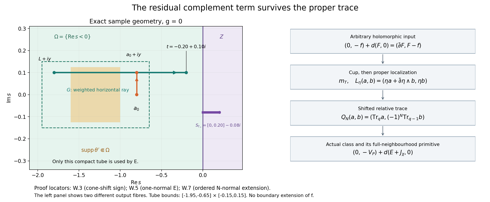
Figure W.1. Exact illustrative slice \(g=0\), \(L=-1.8\), \(a_0=-0.8\), allowed output \(t=-0.20+0.10i\), and a second output \(t_+=0.20-0.08i\). The latter fibre has proper intersection \(S_{t_+}=[0,0.20]-0.08i\). The shaded finite transition window \([-1.6,-1.0]\times[-0.125,0.125]\) lies compactly inside the dashed negative-time tube; only that tube supplies the full-neighbourhood correction \(E\) in W.22. The right panel keeps \(F-f\) and records the cup, localization and shifted trace leading to W.33. The exact coordinates are retained in the reproducible figure source supplied with the lesson. It illustrates W.3, W.5 and W.7; it is not a numerical proof or a claim that the general \(g\) vanishes. Human-source context: Micro-hyperbolic systems §3.1 and HolIII III.1/IV.2/IV.5 above.
No full convergent-\(z\) \(E\) ring, infinite-order extension, arbitrary derived action, arbitrary \(E\)-valued off-support homotopy transfer, propagation, module separation, finite D-type theorem, pole recovery, intrinsic order, full C1, or analytic proper-regularity theorem follows here. Those interfaces remain outside this proof.
5.38. Convergent spatial symbols and supported thick-cone currents
This section constructs a normally convergent, canonically calibrated supported current for every actual order-zero symbol, with a normal distribution-order bound independent of the number of spatial Taylor terms. Its complete current construction is E.1–E.3. Normal-localization independence is proved in §5.39,NL.1–NL.7. The full canonical product and unrestricted-input action remain required in E.4; a limit of exact polynomial identities alone does not prove them.
The actual coefficient ring and factorial bounds are §§5.19–5.22 and §5.30, F.1. The complete smooth/current resolutions and support comparisons are §5.34, R.1–R.7. The finite complement cube, connecting signs and ordered coefficient-line calibration are §5.35, V.1–V.6. The finite-spatial polynomial kernel comparison is §5.36, U.1–U.4; its unrestricted-growth input proof is §5.37, W.1–W.8. Each is a complete earlier programme proof in its stated scope.
Free human comparison sources specifying the intended kernel/cohomology object and cone are Kashiwara–Schapira, Micro-hyperbolic systems, §3.1, and Kashiwara–Kawai, HolIII, III.1 and IV.2. Every comparison used in this section is proved below or at the exact earlier programme loci just listed.
E.1. The analytic coefficient and a genuinely thicker proper cone
Put \(N=d+1\), \(u=(t,x)\), \(v=(s,y)\), and use normal coordinates \(w=s-t\), \(\zeta_j=y_j-x_j\). The input coefficient frame is \(ds\wedge dy_1\wedge\cdots\wedge dy_d\), ungraded before the trace. An actual order-zero symbol has, on one base neighbourhood and one cotangent polydisc, \[ \begin{gathered} P=\sum_{n\ge0,\ \beta\in\mathbf N^d}p_{n,\beta}(u)h^nz^\beta,\\ |p_{n,\beta}|\le B C^n n!r_z^{-|\beta|}. \end{gathered} \tag{E.1} \] These coefficient estimates hold on every smaller compact base polydisc, with fixed \(B,C,r_z>0\). Here is the Cauchy step explicitly. R.2 proves the Green formula and deleted-circle normalization. Apply that formula to a holomorphic function divided by its displacement from an interior point. The integral off that point is zero, while the inner positively oriented circle tends to \(2\pi i\) times its value there; this gives the Cauchy integral formula. Iterate it on a product of coordinate circles and expand each denominator geometrically on a smaller polydisc. The coefficient \(p_{n,\beta}\) is the integral of \(p_n\) times the ordered powers \(z_j^{-\beta_j-1}\), divided by \((2\pi i)^d\). The circle lengths cancel one inverse radius in each variable, giving the bound in (E.1) from the factorial estimate for \(p_n\). Differentiating the base Cauchy formula a fixed finite number of times on a strictly smaller product supplies the same estimate with a finite additional constant. All these choices use one common neighbourhood.
Define the unsigned ordered holomorphic coefficient \[ \begin{gathered} K_P=\frac1{(2\pi i)^N}\\ \left\{\begin{gathered}\frac{p_{0,0}(u)}{w\prod_j\zeta_j}\\-\log w\!\sum_{n+|\beta|\ge1}\\\frac{\begin{gathered}p_{n,\beta}(u)\beta!\\(-w)^{n+|\beta|-1}\end{gathered}}{\begin{gathered}(n+|\beta|-1)!\\\prod_j\zeta_j^{\beta_j+1}\end{gathered}}\end{gathered}\right\}. \end{gathered} \tag{E.2} \] The logarithm is principal, cut along the nonpositive real ray. Select \(a_j>r_z^{-1}\). This coefficient is holomorphic on the intersection of \[ \begin{gathered} U_0=\{w\notin\mathbf R_{\le0}\},\\ U_j=\{|\zeta_j|>a_j|w|\}\\ (1\le j\le d). \end{gathered} \tag{E.3} \] Its complement support is the thin cone \[ \begin{gathered} G_a=\left\{\begin{gathered}w\in\mathbf R_{\le0},\\|\zeta_j|\le a_j(-\operatorname{Re}w)\end{gathered}\right\}. \end{gathered} \tag{E.4} \] In dimension \(d=0\), omit all spatial products and sets.
For clarity, normal convergence is proved here. If \(k=|\beta|\), then \(\beta!\le k!\) and \[ \begin{gathered} \frac{n!\beta!}{(n+k-1)!}\le n+k\\ (n+k\ge1). \end{gathered} \tag{E.5} \] Indeed \((n+k)!/(n!k!)\) is a positive integer. After taking absolute values in (E.2), factor out \(|w|^{-1}\prod_j|\zeta_j|^{-1}\). The remaining majorant is \[ \begin{gathered} B\sum_{n,\beta,\ n+|\beta|\ge1}\\ (n+|\beta|)\,q^n\prod_j\theta_j^{\beta_j},\\ q=C|w|,\\ \theta_j=\frac{|w|}{r_z|\zeta_j|}. \end{gathered} \tag{E.6} \] On a smaller time-difference disc, \(q<1/2\); on every compact subset of (E.3), each \(\theta_j<1\) uniformly. The sum is finite: multiply the geometric series and differentiate each one once. The same calculation with any fixed power of \(n+|\beta|\) proves locally uniform convergence of every fixed finite derivative. Thus (E.2) is an actual holomorphic coefficient.
Choose \(\epsilon>0\) and \(A_j>a_j\), and enlarge the support to \[ \begin{gathered} G=\left\{\begin{gathered}\operatorname{Re}w\le0,\\|\operatorname{Im}w|\le\epsilon(-\operatorname{Re}w),\\|\zeta_j|\le A_j(-\operatorname{Re}w)\end{gathered}\right\}. \end{gathered} \tag{E.7} \] This is a closed convex cone: it is the intersection of the halfspace and the epigraph inequalities of the convex absolute-value/norm functions. If a point and its negative belong to it, their real time is zero and every remaining coordinate is zero. It is therefore pointed. It satisfies \[ \begin{gathered} |(w,\zeta)|\le\left(1+\epsilon^2+\sum_jA_j^2\right)^{1/2}\\ (-\operatorname{Re}w)\quad\text{on }G. \end{gathered} \tag{E.8} \] In particular every nonzero cone point has strictly negative real time. The angular set \(G_a\cap S^{2N-1}\) is a compact subset of the relative interior of \(G\cap S^{2N-1}\): on \(G_a\) the imaginary-time inequality is strict, all spatial inequalities have the strict margin \(A_j-a_j\), and the real-time coordinate cannot vanish on the sphere.
These inequalities also prove the required local properness for a two-kernel intersection. If \(a,b\in G\) and their sum ranges in a compact endpoint set, the two nonnegative numbers \(-\operatorname{Re}a\), \(-\operatorname{Re}b\) sum to the bounded number \(-\operatorname{Re}(a+b)\). Formula (E.8) bounds every intermediate coordinate. The intersection is closed in that bounded endpoint/fibre set, so it is compact in the full affine coordinate space. Choose the actual coefficient neighbourhood larger than this compact fibre family and shrink the endpoint neighbourhood once to place the whole family inside it. Compactness in that chosen source, rather than boundedness in an arbitrary open domain, proves properness. For a finite ordered list, the identical argument uses the sum of the nonnegative real-time lengths.
E.2. A homogeneous angular partition and the exact Čech sign
On the normal unit sphere, the open sets \(U_0,\ldots,U_d\) together with \(U_G=\operatorname{int}G\) cover the sphere. Indeed a point outside all the \(U_i\) belongs to \(G_a\), and the final assertion of E.1 places it in \(U_G\). Choose a smooth finite partition \(\psi_0,\ldots,\psi_d,\psi_G\) subordinate to this cover, with each support compactly contained in its corresponding angular open set.
Here is the finite construction. At every sphere point select a sphere ball whose closed ball lies in one member of the cover and a smaller ball about the same point. Finitely many smaller balls cover the compact sphere. In a sphere coordinate chart use the bump \(\exp(-1/(1-|q|^2))\) for \(|q|<1\) and zero otherwise, rescaled to the larger ball, and positive on the smaller ball. Sum the bumps assigned to each cover member and divide by the strictly positive sum of all the bumps. The smoothness of the bump at its boundary follows by differentiating: each derivative is a polynomial in inverse powers of \(1-|q|^2\) times the exponential, which tends to zero faster than those powers. Finite compactness bounds every fixed derivative. This constructs the asserted partition without a sheaf or acyclicity assumption.
Extend the partition by degree-zero homogeneity to the punctured normal space. If \(r=|(w,\zeta)|\), each normal derivative of order \(j\) is bounded by a constant times \(r^{-j}\). This follows by differentiating the radial projection to the sphere; its \(j\)-th derivatives have degree \(-j\) and bounded angular coefficients. Outside \(G\), \(\psi_G=0\), so \(\sum_{i=0}^d\psi_i=1\).
Set \[ \begin{gathered} \omega_\psi=\sum_{i=0}^{N-1}(-1)^i\psi_i\\ \bar\partial\psi_0\wedge\cdots\wedge\\ \widehat{\bar\partial\psi_i}\wedge\cdots\wedge\bar\partial\psi_{N-1},\\ F_P=r_N(N-1)!\,K_P\,\omega_\psi,\\ r_N=(-1)^{N(N-1)/2}. \end{gathered} \tag{E.9} \] For \(N=1\), the empty wedge is one, so \(F_P=\psi_0K_P\). Attach the holomorphic input frame to \(F_P\) exactly once.
Every term in (E.9) is supported in a compact angular subset of the full intersection \(U_0\cap\cdots\cap U_d\): the undifferentiated factor has support in its own \(U_i\), and each differentiated factor has support in its own \(U_j\). Consequently the term, initially using (E.2) on that intersection, extends by zero smoothly across the other punctured normal points. This extension never evaluates a logarithm on its cut. Compact angular containment also supplies uniform strictly smaller bounds \(\theta_j<1\) in (E.6) on all these supports.
The factor in (E.9) is forced by the exact cone convention, rather than selected afterwards by its action. The unsigned \(K_P\) denotes ordinary top cube coefficient \(r_N(-1)^NK_P\) and ordinary full-cone complement Čech coefficient \(-r_NK_P\), by V.15–V.17. Write the usual alternating Čech contraction as \((hc)_{i_0\ldots i_{r-1}}=\sum_j\psi_jc_{ji_0\ldots i_{r-1}}\), on the complement of \(G\). With total differential \(d_C+(-1)^r\bar\partial\), subtracting the differential of \(hc\) sends a holomorphic Čech \(r\)-cocycle to \((-1)^r\bar\partial hc\) in Čech degree \(r-1\). Repeated descent therefore gives sign \((-1)^{1+\cdots+(N-1)}=r_N\). Applied to the complement coefficient \(-r_NK_P\), the resulting relative-cone complement coefficient is \(-(\bar\partial h)^{N-1}K_P\).
Expanding the finite alternating sums gives \[ \begin{gathered} (\bar\partial h)^{N-1}K_P\\ =r_N(N-1)!\,K_P\omega_\psi. \end{gathered} \tag{E.10} \] The following local-entry calculation proves (E.10) in every normal dimension. Let the top alternating cochain be \(c_{0\ldots N-1}=K_P\) and put \(A^j=(\bar\partial h)^jc\). For an increasing index list \(I\) of length \(N-j\), let \(J\) be its increasing complement, and let \(\varepsilon(J,I)\) be the permutation sign of their concatenation. Then \[ \begin{gathered} A_I^j=(-1)^{j(j-1)/2}j!\,\\ \varepsilon(J,I)K_P\\ \bigwedge_{\ell\in J}\bar\partial\psi_\ell. \end{gathered} \tag{E.10a} \] For \(j=0\) this is the top cochain. To expand \(j\) consecutive contractions, choose the ordered list of the \(j\) deleted indices. Its coefficient has the alternating sign of that list followed by \(I\). Each new antiholomorphic differential acts on the left, so their wedge appears in the reverse deletion order. Reversing the list contributes \((-1)^{j(j-1)/2}\). Sorting the deleted indices contributes the same permutation sign to both coefficient and wedge, so those two signs cancel. Every one of the \(j!\) orderings therefore gives the same term displayed in (E.10a). This proves the formula by the full finite expansion, without extrapolating dimension checks.
At \(j=N-1\), \(I=(i)\) and \(\varepsilon(J,i)=(-1)^{N-1-i}\). Hence \[ \begin{gathered} A_i^{N-1}=r_N(-1)^i(N-1)!\\ K_P\bar\partial\psi_0\wedge\cdots\wedge\\ \widehat{\bar\partial\psi_i}\wedge\cdots\wedge\bar\partial\psi_{N-1}. \end{gathered} \tag{E.10b} \] On the complement of \(G\), the partition relations are \(\sum_i\psi_i=1\) and \(\sum_i\bar\partial\psi_i=0\). Substitute the second into \(\omega_\psi\); every summand becomes its coefficient \(\psi_j\) times the same signed wedge \((-1)^i\bigwedge_{j\ne i}\bar\partial\psi_j\). Their coefficients sum to one. Every local entry in (E.10b) is therefore \(r_N(N-1)!K_P\omega_\psi\), proving (E.10). For \(N=1\), \(\psi_0=1\) on the complement and the same identity holds immediately.
Thus the actual complement representative is \((0,-F_P)\). The positive connecting convention sends it to \((\bar\partial F_P,0)\) whenever \(F_P\) extends as a current to the normal origin. The following section supplies that extension with a quantitative bound.
E.3. Local integrability, supported current and actual tail convergence
On the compact angular supports in E.2, the geometric estimate (E.6) and the fixed angular separation from \(w=0\) and each \(\zeta_j=0\) imply, on every compact output base, \[ \begin{gathered} |K_P|\le C_0r^{-N}\\ (1+|\log r|),\\ |F_P|\le C_1r^{-(2N-1)}\\ (1+|\log r|). \end{gathered} \tag{E.11} \] The constants include the finite partition bounds and the actual coefficient bound. The multiplication term has the first bound without a logarithm. All terms with \(n\ge1\) are less singular; the \(n=0\), unbounded-\(\beta\) sum is controlled by the geometric factors in (E.6). There is no infinite derivative of a spatial delta distribution in this construction.
The normal space has real dimension \(2N\). Polar integration of the second bound is at most a constant times \(\int_0^R(1+|\log r|)\,dr\), which is finite. Hence \(F_P\) is a locally integrable \((0,N-1)\)-coefficient form, and has its literal locally integrable extension to the origin. In particular \[ T_P=\bar\partial F_P \tag{E.12} \] is a distributional \((0,N)\)-coefficient current of order at most one in the normal variables, locally uniformly over each compact output base. For a compactly supported test form, its value is defined by transposing the differential onto that test form. The \(L^1\) bound on \(F_P\) bounds the value by a constant times its first derivatives. The derivative bound is independent of the number of spatial Taylor terms. The full antiholomorphic differential, including output variables, is used.
The current is closed because \(\bar\partial^2=0\) on test forms. It is supported in \(G\). Away from the origin all coefficients in E.9 are smooth, and direct differentiation gives \(\bar\partial\omega_\psi=N\bar\partial\psi_0\wedge\cdots\wedge\bar\partial\psi_{N-1}\). Outside \(G\), differentiating \(\sum_i\psi_i=1\) makes this wedge zero. The coefficient \(K_P\) is holomorphic wherever its multiplier is nonzero. Thus \(T_P\) vanishes outside \(G\), and the only new extension point, the origin, belongs to \(G\).
By E.2, the relative representative \((0,-F_P)\) on the complement has the calibrated full-cone Čech class \(-r_NK_P\). Adding the literal relative boundary \(d(F_P,0)\) gives \((T_P,0)\). The full resolution comparison R.1–R.7 consequently identifies (E.12) with the canonical supported class specified by (E.2), after enlargement from \(G_a\) to \(G\). This proves the class construction, rather than identifying it from a solution action.
For actual convergence, truncate (E.1) in \(n\) and \(|\beta|\), while retaining its holomorphic base coefficients. On the fixed angular supports, the geometric tail in (E.6) tends to zero uniformly after factoring the common radial bound in (E.11). Dominated polar integration therefore gives \(F_{P_m}\to F_P\) in \(L^1\) on each compact normal/output set. Transposing one differential gives \(T_{P_m}\to T_P\) as currents, with a common first-order test-function bound.
Output differentiation with the input held fixed includes normal derivatives. In the coordinates \((u,w,\zeta)\), \[ \begin{gathered} \left.\partial_t\right|_{s,y}=\left.\partial_t\right|_{w,\zeta}-\partial_w,\\ \left.\partial_{x_j}\right|_{s,y}=\left.\partial_{x_j}\right|_{w,\zeta}-\partial_{\zeta_j}. \end{gathered} \tag{E.13} \] The coordinate transformation is linear, so the constant normal differential forms and input holomorphic frame introduce no coefficient derivative. Expanding a fixed output derivative of order \(k\) gives finitely many mixed fixed-normal base and normal derivatives. For the base factors, a smaller common base and the coefficient Cauchy estimate retain the \(L^1\) convergence of the primitives. Transpose each normal factor onto the test form. This proves convergence of the actual output derivatives as currents, with a common normal distribution-order bound at most \(k+1\). It does not claim \(L^1\) convergence of their normal derivatives as functions.
This provides a uniform current representative for full convergent spatial order-zero symbols. Finite positive time orders can be treated by applying their finite output derivatives to these currents, which preserves closedness and support and gives a finite distribution order. The explicit supported normal-generator and presentation primitives in §5.39,NL.2–NL.7 prove independence of that presentation.
E.4. The remaining product and action step
The independent-normal distribution tensor of V.2 applies to the two full currents in (E.12), and E.1 supplies an actual locally proper thick-cone intersection. These facts define their canonical unshifted cup and normalized trace using R/V. They do not yet prove its equality with the symbol product.
The exact equality for every finite spatial polynomial follows from U.1–U.4. The convergent current construction in E.3 gives actual limits of those polynomial representatives. To deduce equality of canonical classes from that limit, one must provide a uniformly controlled proper primitive for their differences, or compute the full canonical finite Čech/trace roof on a fixed common angular cover and establish its normally convergent equality with (E.2) for \(P\circ Q\). Exactness of each approximating difference by itself is insufficient: no closed-range or continuity theorem for the relevant cohomology quotient has been proved. No such theorem is being silently used.
For unrestricted directional input, the chosen thick cone also changes the spatial input geometry. The finite-spatial-current argument of W.7 cannot be reused as an unbounded sum of spatial delta derivatives. A common-domain Cauchy contour on the thick cone, the explicit smooth-input relative augmentation and a full-output collar primitive remain necessary. The full-ring comparison must prove those estimates and the nested composition domains on a single neighbourhood before its action is accepted.
Every original infinite-order, propagation, module-separation, finite D-type, finite-pole, intrinsic-order, C1 and arbitrary analytic proper-regularity obligation remains required.
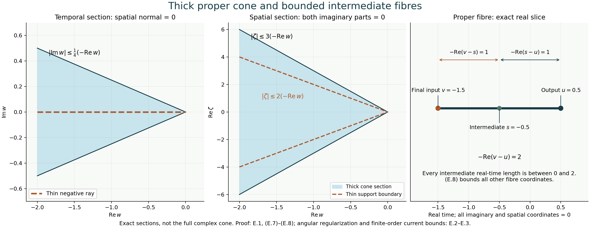
Exact sections of (E.7) with \(\epsilon=1/4\), \(a=2\), \(A=3\): the temporal section sets \(\zeta=0\); the spatial section sets \(\operatorname{Im}w=0\) and \(\operatorname{Im}\zeta=0\). The dashed thin support lies in the relative interior of the thick cone on every normal unit sphere. The depicted fibre interval uses real final normal length \(2\), so each intermediate nonnegative real-time length lies between \(0\) and \(2\). These are sections and a real slice, rather than the whole complex cone. Bounds and properness are proved in E.1; the angular-cutoff and distribution arguments are E.2–E.3. Reproducible source retains every coordinate.
The exact figure has a full-resolution PNG, SVG, editable plotting source and coordinate data. Its mathematical proof is E.1–E.3; free human cone comparison is HolIII IV.2 and Micro-hyperbolic systems §3.1, linked above.


5.39. Canonical normal localization of convergent spatial symbols
This section proves both normal-generator products, the calibrated diagonal unit and two-sided inverse, and independence of every finite time-order presentation of an actual convergent-spatial symbol. All correction terms are literal supported relative-cone primitives. General symbol-pair multiplication and the canonical unrestricted-input action are separate requirements.
The actual coefficient algebra, common-domain growth and normal conjugation are proved in §§5.19–5.22, with the precise finite-order coefficient class in §5.28,Q.8. The full current/smooth resolution and controlled proper support maps are §5.34,R.1–R.7; the calibrated complement cube, ungraded frame and all-degree cup/trace are §5.35,V.1–V.6. The actual convergent-spatial current and complete derivative bounds are §5.38,E.1–E.3. Each cited programme locus contains its complete proof. The finite polynomial inverse correction is also explicit in §5.36,U.17–U.18; the proof below supplies the full convergent-spatial and auxiliary-choice extension.
Free human comparison sources are Kashiwara–Schapira, Micro-hyperbolic systems, §3.1, and Kashiwara–Kawai, HolIII, III.1 and IV.2. Every additional argument used here is proved below.
NL.1 The actual shifts and their common domains
Keep \(N=d+1\), output \(u=(t,x)\), input \(v=(s,y)\), \(w=s-t\), \(\zeta =y-x\), \(h=\tau ^{-1}\), \(z=\xi /\tau\). The ungraded coefficient frame is \(\eta _{\mathrm{in}}=ds\wedge dy_1\wedge \cdots \wedge dy_d\). Write \(\delta\) for the full antiholomorphic differential, including output variables. The relative cone has
\[ d(a,b)=(\delta a,ra-\delta b). \tag{NL.1} \]Let \(P=\sum _{n,\beta }p_{n,\beta }(u)h^nz^\beta\) be actual order zero on one common coefficient domain, with \(|p_{n,\beta }|\le BC^n n!r_z^{-|\beta |}\) on a chosen compact base. Define
\[ \begin{gathered} H_LP=h\circ P,\\ H_RP=P\circ h,\\ q_{0,\beta}^{L}=q_{0,\beta}^{R}=0. \end{gathered} \tag{NL.2} \]The exact §5.19 Leibniz rule gives, for \(r\ge 1\),
\[ \begin{gathered} q^L_{r,\beta}=\sum_{n+a+1=r}\\ (-1)^a\partial_t^a p_{n,\beta},\\ q^R_{r,\beta}=p_{r-1,\beta}. \end{gathered} \tag{NL.3} \]Indeed \(\partial _\tau ^a h=(-1)^a a!h^{a+1}\); its paired base derivative is \(\partial _t^a\) and the \(a!\) cancels the Leibniz denominator. No \(\xi\) derivative of \(h\) occurs. Right multiplication by \(h\) has no base derivative correction. In particular
\[ q^L_{r,\beta}+\partial_tq^L_{r-1,\beta}=p_{r-1,\beta}. \tag{NL.4} \]Choose a base Cauchy margin \(\rho >0\). Then \(|\partial _t^a p_{n,\beta }|\le B C^n n!a!\rho ^{-a}r_z^{-|\beta |}\). Since \(n+a=r-1\) and \(n!a!\le (r-1)!\), the nonnegative binomial expansion bounds (NL.3) by
\[ \begin{gathered} |q^L_{r,\beta}|\le B\\ (C+\rho^{-1})^{r-1}(r-1)!r_z^{-|\beta|}. \end{gathered} \tag{NL.5} \]Thus both shifts are actual order-zero symbols with one common spatial radius; both have zero index-zero coefficient. A fixed finite list of shifts and finite coefficient derivatives uses one smaller common base, one common spatial radius, and one larger time-growth constant. Shrink the time-difference disc once for that finite list. These choices precede all subsequent infinite sums.
In the actual finite-order ring, \(\tau =h^{-1}\). The exact rule gives
\[ \begin{gathered} \tau\circ Q=\tau Q+\partial_tQ,\\ Q\circ\tau=\tau Q. \end{gathered} \tag{NL.6} \]Together with (NL.4) this proves \(\tau \circ H_LP=P\). The right identity \(H_RP\circ \tau =P\) follows immediately. The inverse and normality assertions in §5.22.1 hold in the actual common-domain factorial class, with the explicit Cauchy bounds stated there. We use that actual localization, not a formal completion.
NL.2 The supported principal-log derivative correction
In one normal variable \(w=a+ib\), let \(\log w\) be principal. Its upper-minus-lower jump at \(a<0\) is \(2\pi i\). Off the cut \(\partial _w \log w=1/w\) and \(\partial _{\bar w}\log w=0\). Integration by parts in the two half-planes gives the additional boundary terms
\[ \begin{gathered} \partial_w\log w=\frac1w\\ +\pi\mathbf1_{a<0}\delta(b),\\ \partial_{\bar w}\log w\\ =-\pi\mathbf1_{a<0}\delta(b). \end{gathered} \tag{NL.7} \]The sign in the first formula is \((-i/2)(2\pi i)=+\pi\); the sign in the second is \((i/2)(2\pi i)=-\pi\). A deleted circle of radius \(\epsilon\) contributes \(O(\epsilon (1+|\log \epsilon |))\) and hence no origin point mass. The coefficient \(1/w\) is its literal locally integrable distribution. This proves both formulas by tests, including their endpoint behavior.
Put
\[ \begin{gathered} L(w)=-\frac{\log w}{2\pi i},\\ C(w)=\frac1{2\pi i w},\\ B_{\log}(w)=\frac1{2i}\mathbf1_{a<0}\delta(b). \end{gathered} \tag{NL.8} \]Since \(D_{\mathrm{out}}=\partial _t|_s=-\partial _w\) and \(D_{\mathrm{in}}^{-}=-\partial _s=-\partial _w\) on this coefficient,
\[ \begin{gathered} D_{\rm out}L=D_{\rm in}^{-}L=C+B_{\log},\\ D_{\rm out}(\delta L)-\delta C\\ =D_{\rm in}^{-}(\delta L)-\delta C\\ =\delta B_{\log}. \end{gathered} \tag{NL.9} \]\(B_{\log}\) is supported on the negative ray and is an order-zero measure coefficient. Therefore the difference in (NL.9) is the literal relative boundary \(d(B_{\log},0)\). Suppressing \(B_{\log}\) would be incorrect as an identity of currents.
For \(d\) spatial coordinates let \(C_j=(2\pi i\zeta _j)^{-1}\) and \(S_j=\delta C_j\), with their positive Cauchy normalization proved in R.2 and U.6. Let \(r_N=(-1)^{N(N-1)/2}\). The calibrated line-current representatives of \(h\) and \(1\) are
\[ \begin{gathered} S_h=r_N\,\delta L\\ \wedge S_1\wedge\cdots\wedge S_d\otimes\eta_{\rm in},\\ I=r_N\,\delta C\\ \wedge S_1\wedge\cdots\wedge S_d\otimes\eta_{\rm in}. \end{gathered} \tag{NL.10} \]All independent distribution tensors exist by V.2. Their full differential forms contain \(d\bar w=d\bar s-d\bar t\) and \(d\bar \zeta _j=d\bar y_j-d\bar x_j\). Define the explicit degree-\((N-1)\) primitive
\[ \begin{gathered} \mathcal B_{\log}=r_N B_{\log}\\ S_1\wedge\cdots\wedge S_d\otimes\eta_{\rm in}. \end{gathered} \tag{NL.11} \]It is supported in the line cone \(G_0\) and
\[ \begin{gathered} D_{\rm out}S_h-I\\ =D_{\rm in}^{-}S_h-I=\delta\mathcal B_{\log},\\ (D_{\rm out}S_h-I,0)\\ =d(\mathcal B_{\log},0). \end{gathered} \tag{NL.12} \]The same equation holds after support enlargement to E.1's thick cone. The ordinary top complement coefficients of these line currents agree with the calibrated coefficients for \(h\) and \(1\) in E.2 by V.15–V.17. The relative resolution comparison thus identifies their classes with \(\kappa _0(h)\), \(\kappa _0(1)\). This comparison uses the exact cone/cube maps and the explicit V.4 telescoping homotopy, rather than a solution action.
NL.3 The spatial face left by a time derivative
Let \(c_N=(2\pi i)^{-N}\), \(S_\beta =\beta !/\prod _j\zeta _j^{\beta _j+1}\), and
\[ \begin{gathered} M_P=\frac{p_{0,0}(u)}{\prod_j\zeta_j},\\ A_P=\sum_{n+|\beta|\ge1}p_{n,\beta}S_\beta\\ \frac{(-w)^{n+|\beta|-1}}{(n+|\beta|-1)!}. \end{gathered} \tag{NL.13} \]The accepted coefficient is \(K_P=c_N(M_P/w-\log w A_P)\). For \(Q=H_LP\) or \(H_RP\), \(q_{0,\beta }=0\), so \(K_Q=-c_N \log w A_Q\). Use respectively
\[ \begin{gathered} D_L=\partial_t|_{s,y}\\ =\partial_t|_{w,\zeta}-\partial_w,\\ D_R=-\partial_s=-\partial_w. \end{gathered} \tag{NL.14} \]For \(D_L\), the coefficient of \((-w)^{n+|\beta |-1}/(n+|\beta |-1)!\) in \(D_LA_Q\) is \(q^L_{n+1,\beta }+\partial _tq^L_{n,\beta }=p_{n,\beta }\). For \(D_R\) it is \(q^R_{n+1,\beta }=p_{n,\beta }\). The excluded \(n=|\beta |=0\) term is constant before the normal derivative and contributes nothing. Normal convergence and the fixed derivative bounds in E.1 and (NL.5) justify this equality of actual holomorphic coefficients. Hence, for either ordered pair \((Q,D)\),
\[ \begin{gathered} DA_Q=A_P,\\ DK_Q-K_P=R_{Q,P},\\ R_{Q,P}=c_N\frac{A_Q-M_P}{w}. \end{gathered} \tag{NL.15} \]\(R_{Q,P}\) is holomorphic on the spatial face \(V=U_1\cap \cdots \cap U_d\), including across the logarithm's time cut. For \(d=0\), \(V\) is the whole local normal space. To see the removable \(w\) factor termwise, \(q_{1,0}=p_{0,0}\); this is exactly \(A_Q\)'s single term with exponent zero. Every remaining term has \(r+|\beta |\ge 2\) and therefore contains a factor \(w\). After division the series is
\[ \begin{gathered} R_{Q,P}=-c_N\\ \sum_{r+|\beta|\ge2}q_{r,\beta}S_\beta\\ \frac{(-w)^{r+|\beta|-2}}{(r+|\beta|-1)!}. \end{gathered} \tag{NL.16} \]The sum runs over \(r\ge 1\). In particular it has no logarithm and no negative power of \(w\).
Choose \(|\zeta _j|>a_j|w|\) with \(a_j>r_z^{-1}\), and \(C_Q|w|<1/2\). For \(r\ge 2\), (E.5) bounds the sum by a fixed multiple of
\[ \begin{gathered} \prod_j|\zeta_j|^{-1} C_Q^2\\ \sum_{r'\ge0,\beta}(r'+2+|\beta|)\\ (C_Q|w|)^{r'}\prod_j\theta_j^{\beta_j},\\ \theta_j=\frac{|w|}{r_z|\zeta_j|}. \end{gathered} \]For \(r=1\) and \(|\beta |\ge 1\), use \(\beta !/|\beta |!\le 1\). The sum is bounded by a constant times \(\prod |\zeta _j|^{-1}[(\prod (1-\theta _j)^{-1}-1)/|w|]\). Expanding the product one factor at a time bounds the bracket by a constant times \(\sum _j(r_z|\zeta _j|)^{-1}\) on compact angular subsets of \(V\). This expression remains bounded as \(w\to 0\) when the spatial denominators stay separated. These are geometric majorants for (NL.16), including all derivatives on smaller compacts, so the assertion of holomorphy on \(V\) is literal.
Write \(r=|(w,\zeta )|\). On any compact angular subset of \(V\) and a smaller output base,
\[ |R_{Q,P}|\le C r^{-N}. \tag{NL.17} \]On compact angular subsets of the full intersection, \(Q\)'s missing index-zero coefficient gives the stronger bound
\[ \begin{gathered} |K_Q|\le C r^{1-N}\\ (1+|\log r|). \end{gathered} \tag{NL.18} \]The factor \(C_Q|w|\) in E.6's \(r\ge 1\) sum supplies the additional \(r\) in (NL.18). The bounds are uniform in actual spatial and time tails, on the chosen fixed domains.
NL.4 A literal supported primitive for both shifts
Use a single E.2 homogeneous partition \(\psi _0,\cdots ,\psi _d,\psi _G\) and the same thick cone \(G\) for the finite list under consideration. Write \(\omega =\omega _\psi\) and \(\lambda _N=r_N(N-1)!\). Then \(F_P=\lambda _NK_P\omega\) and \(T_P=\delta F_P\).
Assume first \(N\ge 2\). Put
\[ \begin{gathered} \eta_\psi=\psi_1\bar\partial\psi_2\wedge\cdots\wedge\bar\partial\psi_d\\ (N=2:\ \eta_\psi=\psi_1), \end{gathered} \tag{NL.19} \]and define the degree-\((N-2)\) transgression
\[ \begin{gathered} \Theta_D=\sum_{0\le i<j\le d}(-1)^{i+j+1}\\ (\psi_iD\psi_j-\psi_jD\psi_i)\\ \bar\partial\psi_0\wedge\cdots\wedge\\ \widehat{\bar\partial\psi_i}\wedge\cdots\wedge\\ \widehat{\bar\partial\psi_j}\wedge\cdots\wedge\bar\partial\psi_d. \end{gathered} \tag{NL.20} \]The wedge keeps its original increasing order. \(\eta _\psi\) is supported compactly in the spatial face \(V\) on the sphere. Every summand of \(\Theta _D\) is supported compactly in the full intersection: its two undifferentiated or \(D\)-differentiated indices and its \(N-2\) remaining differentiated indices cover all \(N\) indices. Therefore \(R\eta _\psi\) and \(K_Q\Theta _D\) extend by zero smoothly on the punctured normal space on their respective stated domains. The latter never evaluates \(\log w\) on its cut.
On the complement of \(G\), \(\sum \psi _i=1\), \(\sum D\psi _i=0\), \(\sum \delta \psi _i=0\). There \(\omega =\delta \psi _1\wedge \cdots \wedge \delta \psi _d\), whence \(\delta \eta _\psi =\omega\). Substituting \(\psi _0=1-\sum _{i\ge 1}\psi _i\), \(D\psi _0=-\sum _{i\ge 1}D\psi _i\), and \(\delta \psi _0=-\sum _{i\ge 1}\delta \psi _i\) into (NL.20) gives
\[ \begin{gathered} \Theta_D=\sum_{j=1}^d(-1)^{j-1}D\psi_j\\ \bar\partial\psi_1\wedge\cdots\wedge\\ \widehat{\bar\partial\psi_j}\wedge\cdots\wedge\bar\partial\psi_d. \end{gathered} \tag{NL.21} \]To verify the substitution, fix the wedge omitting a given \(j\). The terms with either omitted index zero supply the coefficients involving \(\psi _0\) and \(\psi _j\); the remaining terms replace their \(\delta \psi _0\) by the unique nonrepeating \(\delta \psi\) factor. Their signed coefficients add to \((\sum \psi _i)D\psi _j-\psi _j\sum D\psi _i=D\psi _j\). Reordering to the original increasing wedge gives exactly \((-1)^{j-1}\). This checks every coefficient of (NL.21). Differentiating (NL.21) gives \(\delta \Theta _D=D\omega\), because \(D\) commutes with \(\delta\). Thus both forms \(\omega -\delta \eta _\psi\) and \(D\omega -\delta \Theta _D\) vanish on the complement of \(G\).
Define
\[ \begin{gathered} \mathcal B_{Q,P,D}=\lambda_N\\ \{\begin{gathered}R_{Q,P}(\omega-\delta\eta_\psi)\\+K_Q(D\omega-\delta\Theta_D)\end{gathered}\}\\ \otimes\eta_{\rm in}. \end{gathered} \tag{NL.22} \]This is a literal supported degree-\((N-1)\) current, rather than an unnamed existence assertion. Its support is contained in \(G\). By homogeneity, \(|\eta _\psi |\le Cr^{-(N-2)}\), \(|\Theta _D|\le Cr^{-(N-1)}\), \(|\omega |\le Cr^{-(N-1)}\), and \(|D\omega |+|\delta \Theta _D|\le Cr^{-N}\). With (NL.17)–(NL.18), every coefficient of (NL.22) is bounded by \(Cr^{-(2N-1)}(1+|\log r|)\), hence is locally integrable exactly as in E.3. It has local order zero; its \(\delta\) derivative has local normal order at most one.
Also define
\[ \begin{gathered} \mathcal H_{Q,P,D}=\lambda_N\\ (R_{Q,P}\eta_\psi+K_Q\Theta_D)\otimes\eta_{\rm in}. \end{gathered} \tag{NL.23} \]It has coefficient bound \(Cr^{-(2N-2)}(1+|\log r|)\). A deleted normal sphere has area proportional to \(r^{2N-1}\); its boundary term is consequently \(O(r(1+|\log r|))\to 0\). The classical derivative away from zero is locally integrable with bound \(Cr^{-(2N-1)}(1+|\log r|)\). Integration by parts therefore identifies its full distributional \(\delta\) with that classical derivative and introduces no origin correction. Since \(R\) and \(K_Q\) are holomorphic wherever their cutoffs occur,
\[ \begin{gathered} DF_Q-F_P\\ =\mathcal B_{Q,P,D}+\delta\mathcal H_{Q,P,D}. \end{gathered} \tag{NL.24} \]Here \(DF_Q\) is also literal locally integrable: \(F_Q\) has the weaker singularity \(Cr^{-(2N-2)}(1+|\log r|)\), and the same deleted-sphere argument identifies its first derivative. The frame and normal differential basis are constant under the linear input/output coordinate transformation. All coefficients and all output antiholomorphic components are retained. Applying \(\delta\) to (NL.24) proves
\[ \begin{gathered} DT_Q-T_P=\delta\mathcal B_{Q,P,D},\\ (DT_Q-T_P,0)\\ =d(\mathcal B_{Q,P,D},0). \end{gathered} \tag{NL.25} \]For \(N=1\), \(R\) is holomorphic on the full local product. Set
\[ \begin{gathered} \mathcal B_{Q,P,D}=\\ \{\begin{gathered}R_{Q,P}(\psi_0-1)\\+K_QD\psi_0\end{gathered}\}\otimes ds. \end{gathered} \tag{NL.26} \]The first term is supported in \(G\) because \(\psi _0=1\) outside \(G\); the second is supported there because \(D\psi _0=0\) outside \(G\). Both are locally integrable. In this case \(DF_Q-F_P= B+R\otimes ds\), and \(\delta R=0\) on the full neighbourhood. Equation (NL.25) follows directly. This treats \(d=0\) without introducing a fictitious negative-degree form.
Taking classes in (NL.25) proves both actual canonical shift identities
\[ \begin{gathered} D_{\rm out}\kappa_0(h\circ P)=\kappa_0(P),\\ -\partial_s\kappa_0(P\circ h)=\kappa_0(P). \end{gathered} \tag{NL.27} \]The spatial face \(R\) and the cutoff correction both remain explicitly in the supported primitive. No exactness argument is passed through a cohomology quotient limit.
NL.5 The canonical unit and products with the normal generator
The class of \(I\) in (NL.10) is the normalized diagonal unit. For the canonical cup followed by trace, V.13 converts the coefficient cup and shifted trace to the positive full-block distribution convolution. Tensor the independent normal variables \(a,b\) and apply \(I\) in the \(a\) variables. Its normalized delta evaluation sets the corresponding intermediate point to the output, and leaves \(T_P(u,b)\) with scalar one. On the other side it sets the intermediate point to the input and again leaves \(T_P\). This is an equality on arbitrary compact smooth tests, by the distribution tensor construction and the positive R.2 Cauchy normalization; it does not require holomorphic solution tests. The diagonal has a one-point proper fibre, so the controlled proper roof is available. Thus
\[ \begin{gathered} {}[I]*\kappa_0(P)\\ =\kappa_0(P)*[I]=\kappa_0(P). \end{gathered} \tag{NL.28} \]Let \(J=D_{\mathrm{out}} I=-\partial _s I\), the normalized time derivative of the diagonal unit. Differentiating that same test evaluation gives
\[ \begin{gathered} {}[J]*\kappa_0(P)=D_{\rm out}\kappa_0(P),\\ \kappa_0(P)*[J]=-\partial_s\kappa_0(P). \end{gathered} \tag{NL.29} \]For the right formula the delta derivative is transposed against the intermediate/input variable and gives the displayed minus sign. The input holomorphic frame is constant, and proper compact support permits the transposition without a boundary. For the left formula the surviving derivative is the derivative in the final output variable with input held fixed. The smooth parameter bounds of corrected E.13 justify every compact derivative of the full current families in these evaluations.
Equation (NL.12) now gives the two-sided inverse identities with their complete literal primitives:
\[ \begin{gathered} {}[J]*\kappa_0(h)=[I]\\ =\kappa_0(h)*[J],\\ \kappa_0(1)=[I],\quad\kappa(\partial_t)=[J]. \end{gathered} \tag{NL.30} \]Associativity here is the canonical current operation, not an asserted full-symbol product identity. For three factors use three independent normal variable sets, tensor their finite-order distributions with their smooth parameter coefficients, and the E.1 bound on all intermediate nonnegative time lengths. Over a compact endpoint set their support is compact inside the chosen outer source. V.2's repeated evaluation and V.4–V.5's ordered trace signs make the two repeated traces agree on tests. This proves the required associativity for the germ operation on these full current classes. No multiplication formula for general symbol pairs enters this argument.
Multiply the first identity in (NL.27) on the left by \(\kappa _0(h)\), using (NL.29)–(NL.30); multiply the second on the right. Associativity and the unit give
\[ \begin{gathered} \kappa_0(h\circ P)\\ =\kappa_0(h)*\kappa_0(P),\\ \kappa_0(P\circ h)\\ =\kappa_0(P)*\kappa_0(h). \end{gathered} \tag{NL.31} \]These are special canonical products with the normal generator, proved for the full convergent spatial class. General \(P,Q\) products remain open.
For completeness, at fixed normal coordinates \((\partial _t|_{s,y}+\partial _s)=\partial _t|_{w,\zeta }\), so differentiation of \(F_P\) gives the exact current identity
\[ \begin{gathered} D_{\rm out}T_P+\partial_sT_P\\ =T_{\partial_t^{\rm coeff}P}. \end{gathered} \tag{NL.32} \]The right member differentiates only the holomorphic base coefficients \(p_{n,\beta }\); the angular partition is fixed. This proves compatibility with (NL.6), including the genuine time contraction. It also supplies the right-normal identity when a right positive time factor is represented by a left presentation.
NL.6 Independence of finite time-order presentations
For an actual finite-order symbol \(P\) choose a finite left presentation
\[ \begin{gathered} P=\tau^k\circ P_0,\\ k\ge0,\quad P_0\in E_0,\\ \kappa(P):=D_{\rm out}^{\,k}\kappa_0(P_0). \end{gathered} \tag{NL.33} \]The class is represented by the complete current \(D_{\mathrm{out}}^kT_{P_0}\), of common normal distribution order at most \(k+1\) on each chosen compact, by corrected E.13. Suppose also \(P=\tau ^l\circ Q_0\) and \(l\ge k\). Actual multiplication by \(h^l\) on the left and the actual inverse relation give \(Q_0=H_L^{l-k}P_0\). Put \(r=l-k\) and \(P_j=H_L^jP_0\). Choose one common domain, cone and angular partition for this finite list as in NL.1. Equation (NL.25) supplies \(B_j=B_{P_j,P_{j-1},D_{\mathrm{out}}}\) with
\[ D_{\rm out}T_{P_j}-T_{P_{j-1}}=\delta B_j. \]The exact finite telescoping identity is
\[ \begin{gathered} D_{\rm out}^{r}T_{P_r}-T_{P_0}\\ =\delta\left(\sum_{j=1}^{r}D_{\rm out}^{j-1}B_j\right). \end{gathered} \tag{NL.34} \]Expansion verifies it: consecutive terms \(D^{j}T_{P_j}\) and \(-D^{j-1}T_{P_{j-1}}\) cancel. After applying \(D_{\mathrm{out}}^k\), the difference between the two representatives in (NL.33) is therefore the literal relative boundary
\[ \begin{gathered} d\left(\begin{gathered}D_{\rm out}^{k}\sum_{j=1}^{r}\\D_{\rm out}^{j-1}B_j,\ 0\end{gathered}\right). \end{gathered} \tag{NL.35} \]Every derivative preserves support in \(G\). The primitive is a finite-order current of normal order at most \(l-1\), since each \(B_j\) is locally integrable and \(j-1+k\le l-1\). A later two-kernel proper trace uses its intersection with the fixed endpoint support, whose properness is the E.1 bound. The case \(k\ge l\) is obtained by exchanging the presentations. This proves independence, including equality of actual full-current classes, without assuming a closed-range theorem or faithful solution action.
Linearity is immediate on a fixed common domain and partition, and different presentation orders may be raised to the same finite order by (NL.34). Thus (NL.33) is a well-defined complex-linear germ class map extending \(\kappa _0\). Equations (NL.29), (NL.31) and (NL.32) give its left and right normal-generator compatibility. Consequently the actual normal conjugation of §5.22.1 is carried to conjugation by the canonical two-sided inverse pair \([J],\kappa _0(h)\). This is the normal-localization interface needed to extend a future order-zero ring proof.
NL.7 Germ restriction and all auxiliary choices
For fixed coefficient representatives, cone, cover and partition, every displayed construction restricts literally on a smaller common base and normal neighbourhood. The Borel kernels converge normally and the primitives are actual locally integrable or finite-order currents. Distributional differentiation commutes with restriction. If two coefficient representatives define the same actual germ, their coefficient holomorphic functions agree on one smaller common connected coefficient domain for every \(n\); the identity theorem as used in §5.19 makes that one domain valid for the whole sequence. Their common Taylor coefficients and the actual normally convergent kernels then agree there.
Partition independence also has an explicit supported primitive. On one common cover and cone, let \(\psi (q)=(1-q)\psi +q\phi\), \(0\le q\le 1\), including the \(G\)-member. Use (NL.20) with \(D=\partial _q\) and call it \(\Theta _q\). On the complement, \(\sum \psi (q)=1\) and \(\sum \partial _q\psi (q)=0\), so the same direct calculation gives \(\partial _q\omega _q=\delta \Theta _q\). For \(N\ge 2\) put
\[ \begin{gathered} B_{\psi,\phi}=\lambda_N\int_0^1\\ K_P(\partial_q\omega_q-\delta\Theta_q)\,dq\\ \otimes\eta_{\rm in},\\ H_{\psi,\phi}=\lambda_N\int_0^1K_P\Theta_q\,dq\\ \otimes\eta_{\rm in}. \end{gathered} \tag{NL.36} \]The first current is supported in \(G\). Here the \(q\)-variation has degree zero in normal coordinates, so \(\Theta _q\) has bound \(Cr^{-(N-2)}\). Thus \(H\) has coefficient bound \(Cr^{-(2N-2)}(1+|\log r|)\), while \(B\) has the integrable bound \(Cr^{-(2N-1)}(1+|\log r|)\). The deleted-sphere estimate used in NL.4 again removes any origin term, and \(F_\phi -F_\psi =B+\delta H\). Therefore
\[ \begin{gathered} T_\phi-T_\psi=\delta B_{\psi,\phi},\\ (T_\phi-T_\psi,0)=d(B_{\psi,\phi},0). \end{gathered} \tag{NL.37} \]For \(N=1\) set \(B_{\psi ,\phi }=K_P(\phi _0-\psi _0)\otimes ds\); it is supported in \(G\) and gives the same literal boundary. This also proves partition independence for all finite output derivatives by transposition of the finite derivatives of (NL.37).
For two initially different cones choose \(\epsilon _*\) and \(A_{*,j}\) strictly larger than both original sets of constants. The resulting \(G_*\) is pointed and contains both angular closed cone sets in its interior. Both \(G\)-cutoffs are compactly supported in \(\operatorname{int} G_*\) on the sphere. Both families \(\psi _i\) are subordinate to the wider opens \(|\zeta _j|>\min(a_j,a'_j)|w|\) and the same principal slit. For two scalar spatial radii representing the same germ, the larger radius is available on a smaller common base from its original representative, and \(\min(a_j,a'_j)>1/\max(r_z,r'_z)\). Thus \(K_P\) converges on this wider common full intersection. Use the larger of the finitely many time growth constants and shrink the time disc once. The convex partition path above is now legitimate on the common wider cover and \(G_*\), and (NL.37) proves equality after support enlargement. Equivalently the calibrated finite complement cubes refine to the same top holomorphic coefficient; both descriptions use the exact relative maps of R/V.
This proves actual germ restriction and auxiliary-domain, cone and partition independence in the common supported kernel germ target. It is not an assertion that every symbol has one fixed domain or fixed cone at once. All finite localization presentations and their restriction maps agree after one common shrink and, when needed, one common support enlargement.
The complete normal-localization interface is proved. Once the full order-zero cup/product equality is proved, (NL.30)–(NL.35) provide the actual canonical extension to the full finite-order ring by its normal localization. Until then \(\kappa\) is a well-defined canonical linear class map with proved normal-generator compatibility; general multiplicativity is not asserted. An unrestricted-input action still requires the common-domain contour, smooth-input relative augmentation, proper collar and full-output primitive. Infinite-order, propagation, separation, finite \(D\)-type, finite-pole, intrinsic-order, C1 and arbitrary analytic proper-regularity obligations remain outside this proof.
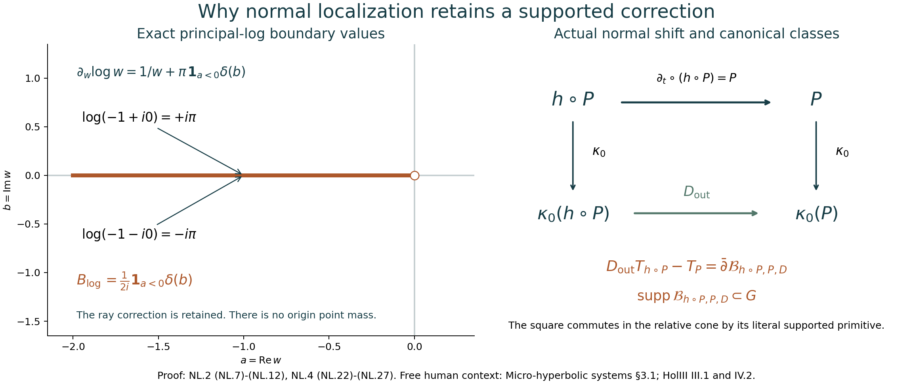
Exact upper and lower principal-log limits at the normal point \(w=-1\) are \(+i\pi\) and \(-i\pi\). Their jump creates the retained ray coefficient \(B_{\log}=(2i)^{-1}1_{a<0}\delta (b)\); the open endpoint marks absence of an origin point mass, while its closed distributional support includes zero. The approach arrows are schematic. The right square is the actual identity \(\partial _t\circ (h\circ P)=P\) and its canonical class identity, proved through the supported relative primitive (NL.22)–(NL.27). The figure is an original exact-limit and class-map illustration; it supplies no numerical distribution proof. Reproducible source and coordinate data are retained. Proof locators and free human-source context appear in the figure.
The figure has a full-resolution PNG, SVG, editable plotting source and coordinate data. Its exact proof locators are NL.2, (NL.7)–(NL.12), and NL.4, (NL.22)–(NL.27). The free human comparison sources are linked above.


5.40. Ordinary degree-one evaluation for actual convergent spatial symbols
Let \(p=(0;dt)\), with base coordinates \(u=(t,x)\in\mathbf C\times\mathbf C^d\), and put \(h=\tau^{-1}\), \(z=\xi/\tau\). We prove that every actual order-zero symbol defines a complex-linear endomorphism of the full directional degree-one holomorphic quotient, by an ordinary integral formula containing all spatial Taylor terms. The formula is independent of its anchor, domains and representatives. The ordinary integral operator for \(h\) has the ordinary time derivative as its two-sided inverse on that quotient.
The actual coefficient class is §5.19.1, (5.19a)–(5.19b); its absolute Taylor norm and coefficient estimate are §5.21.1, (5.21b)–(5.21c). The actual normal element is §5.22.1, (5.22a)–(5.22b). For the degree-one relative convention, see §5.34, R.1, R.3 and R.6–R.7 and §5.35, V.1. The positive one-variable orientation agrees with §5.36, U.2, (U.5). Comparison with the canonical cup and proper trace, and multiplication for general symbol pairs, require the further arguments given in the later sections.
PB.1. The full support quotient and cofinal convex complements
Write \(t=T+iT'\), \(v=(T',x)\in\mathbf R^{2d+1}\), using the Euclidean norm. A closed support germ \(Z\) at zero is admissible if every limiting direction of \(Z\) at zero satisfies \(T\ge0\). Define
\[ \begin{gathered} C_p=\underset{Z,V}{\operatorname{colim}}\;\\ \mathcal O(V\setminus Z)/\mathcal O(V). \end{gathered} \tag{PB.1} \]The maps are restriction to smaller neighbourhoods and enlargement of the support. The union of two admissible closed germs is admissible: every sequence in their union has a subsequence in one member, so every limiting direction belongs to one of the two allowed sets. Intersecting the neighbourhoods and taking that union therefore makes the system filtered.
Every admissible support can be enlarged to one with a convex complement. First shrink a ball so that its points in \(Z\) with \(T<0\) satisfy \(-T\le |v|\). Otherwise a sequence tending to zero with \(-T>|v|\) has a normalized subsequential direction with strictly negative \(T\), contradicting admissibility. In particular there is no such point with \(v=0\). For sufficiently small \(r\), set
\[ \begin{gathered} e(r)=\sup\\ \left(\begin{gathered}\{0\}\cup\\\left\{\begin{gathered}-T/|v|:(T,v)\in Z,\\T<0,\ 0<|v|\le r\end{gathered}\right\}\end{gathered}\right),\\ g(r)=\int_0^{2r}e(s)\,ds. \end{gathered} \tag{PB.2} \]The radius is small enough that \(e\) is defined up to \(2r\). It is nondecreasing and bounded by one. If it did not tend to zero, choose points with \(|v|\to0\) and \(-T/|v|\) bounded below by a fixed positive number. The preceding bound forces \(T\to0\), and a normalized subsequence again has strictly negative \(T\). Thus \(e(r)\to0\).
The integral makes \(g\) continuous, nondecreasing and convex, with \(g(0)=0\). Monotonicity gives
\[ \begin{gathered} r e(r)\le g(r)\le 2r e(2r),\\ g(r)=o(r). \end{gathered} \tag{PB.3} \]Its one-sided slopes on a small interval are bounded by \(2e(2r)\) at that interval's outer radius. They can consequently be made arbitrarily small. The radial function \(v\mapsto g(|v|)\) is convex: use the triangle inequality, then monotonicity of \(g\), then its one-variable convexity. Hence
\[ \begin{gathered} \Omega_g=\{T<-g(|v|)\},\\ Z_g=\{T\ge-g(|v|)\} \end{gathered} \tag{PB.4} \]are respectively convex open and closed. For a point of \(Z\) with \(T<0\), (PB.3) gives \(-T\le |v|e(|v|)\le g(|v|)\); points with \(T\ge0\) belong to \(Z_g\) too. Thus \(Z\subset Z_g\) as germs. Also \(Z_g\) is admissible: its negative \(T\)-coordinates satisfy \(-T\le g(|v|)=o(|v|)\), so every normalized limiting direction has \(T\ge0\). Intersecting \(\Omega_g\) with a smaller Euclidean ball preserves convexity. These complements form a cofinal family for every admissible support, rather than a single fixed wedge.
For any chosen small \(L>0\), restrict \(g\) to a radius at which its slopes are at most \(L\), and extend it beyond that radius by the linear ray of slope \(L\). The extension is convex, nondecreasing and globally \(L\)-Lipschitz; it has the same \(o(r)\) germ. It satisfies \(g(r)\le Lr\). This supplies a convenient representative whenever a global Lipschitz notation is used below; all evaluations of the original input function remain inside its given small ball.
The quotient (PB.1) is exactly the directional colimit of degree-one local support groups. Indeed the support long exact sequence contains
\[ \begin{gathered} \mathcal O(V)\longrightarrow\mathcal O(V\setminus Z)\\ \longrightarrow H_Z^1(V,\mathcal O)\longrightarrow H^1(V,\mathcal O). \end{gathered} \]The colimit of the last groups over neighbourhoods of zero is zero. For an injective resolution \(I^\bullet\) of \(\mathcal O\), the colimit of \(\Gamma(V,I^\bullet)\) is its stalk complex \(I^\bullet_0\); exactness of filtered colimits gives \(H^1(I^\bullet_0)=0\). Taking the colimit in the displayed exact sequence gives the asserted quotient, and then the filtered colimit over admissible supports gives (PB.1). A holomorphic section supported in an admissible \(Z\) is zero: it vanishes on a nonempty negative-direction open subset, and the identity theorem applies on a connected small ball. In the relative convention \(d(a,b)=(\bar\partial a,ra-\bar\partial b)\) of §5.35, V.1, a quotient representative \(f\) corresponds to \((0,-f)\). This degree-one identification uses no vanishing assertion for higher directional cohomology or for a fixed arbitrary neighbourhood.
PB.2. Actual coefficients and the order of choices
Write \(E_0\) for the actual order-zero class of §5.19. An element has coefficient functions on one common base and cotangent neighbourhood:
\[ \begin{gathered} P=\sum_{n\ge0}h^n p_n(t,x,z),\\ p_n(t,x,z)=\sum_{\beta\in\mathbf N^d}p_{n,\beta}(t,x)z^\beta. \end{gathered} \]Choose a closed base polydisc strictly inside that common neighbourhood and a cotangent polyradius \(r_z>0\) whose closed torus stays inside the coefficient domain. The factorial estimate of §5.19.1 and the Cauchy coefficient formula on that torus give
\[ \begin{gathered} |p_{n,\beta}(t,x)|\le B C^n n! r_z^{-|\beta|}\\ (n\ge0,\ \beta\in\mathbf N^d) \end{gathered} \tag{PB.5} \]on the chosen base. Thus all functions \(p_{n,\beta}\) are defined on that same base neighbourhood. When \(d=0\), \(\beta=0\) is the only index, and \(r_z\) can be any positive constant for the following notation. This is a symbol expansion with factorial growth; it makes no assertion of numerical convergence of the series at a nonzero value of \(h\).
Let \(f\) be holomorphic on \(\Omega_g\cap B_R\), with this ball inside the coefficient base. Put
\[ \begin{gathered} D=\max(1,d),\qquad\kappa=4/r_z,\\ b=R/(16\sqrt D). \end{gathered} \]Choose \(a_0>0\), and then the small Lipschitz bound \(L\) as above, so that
\[ \begin{gathered} \kappa(5a_0/4)<b/2,\\ C(5a_0/4)<1/2,\\ a_0<R/16,\quad L\le1/8,\\ L\sqrt D\,\kappa\le1/8,\quad LR<a_0/8. \end{gathered} \tag{PB.6} \]Here is a noncircular choice. Fix \(B,C,r_z,\kappa\) first. Choose a positive ratio \(\lambda=a_0/R\) with \(\lambda<1/16\) and \(5\kappa\lambda/4<1/(32\sqrt D)\). Require \(L<\min(1/8,1/(8\sqrt D\kappa),\lambda/8)\). Since the small-radius slopes of \(g\) tend to zero, shrink \(R\) until this requirement holds and extend \(g\) by slope \(L\) if needed. Shrink \(R\) further to arrange \(5C\lambda R/4<1/2\). Set \(a_0=\lambda R\). Every inequality in (PB.6) now holds. Fix the negative real anchor \(a=-a_0\).
PB.3. One domain for every spatial derivative
The target consists of points \((t,x)\in\Omega_g\) with
\[ |t|<a_0/4,\qquad |x_j|<R/(8\sqrt D). \]At such a point define
\[ \begin{gathered} \mu=-\operatorname{Re}t\\ -g(|(\operatorname{Im}t,x)|)>0,\\ \delta_t=\min\{b/2,\mu/(4L\sqrt D)\},\\ \delta_s=\delta_t+\kappa|t-s|, \end{gathered} \tag{PB.7} \]where \(s=a+\theta(t-a)\), \(0\le\theta\le1\). If \(L=0\), take \(\delta_t=b/2\). The time segment satisfies
\[ \begin{gathered} -\operatorname{Re}s\ge-\operatorname{Re}t+\tfrac12|t-s|,\\ |\operatorname{Im}s-\operatorname{Im}t|\le |t-s|. \end{gathered} \]For the first inequality, the ratio is \((a_0+\operatorname{Re}t)/|t-a|\ge(3a_0/4)/(5a_0/4)>1/2\). For every \(y\) in the closed complex polydisc of radius \(\delta_s\) about \(x\), the change in \(v\) has norm at most \(|t-s|+\sqrt d\,\delta_s\). Consequently
\[ \begin{gathered} -\operatorname{Re}s-g(|(\operatorname{Im}s,y)|)\\ \ge\mu+\tfrac12|t-s|-L|t-s|\\ -L\sqrt d\,\delta_s\\ \ge\tfrac34\mu+\tfrac14|t-s|>0. \end{gathered} \tag{PB.8} \]We used \(L\sqrt d\,\delta_t\le\mu/4\), \(L\le1/8\), and \(L\sqrt d\,\kappa\le1/8\). The radii are at most \(b\), because \(|t-s|\le|t-a|<5a_0/4\). Moreover \(|s|\le a_0<R/16\), \(|x|\le R/8\), and \(|y-x|\le\sqrt d\,b\le R/16\); thus \(|y|\le3R/16\) and \((s,y)\) lies strictly inside \(B_R\). The Lipschitz estimate was therefore used on points belonging to the actual input domain.
For a compact target subset \(K\), \(\mu\) has a positive minimum and \(\delta_t\) has a positive lower bound. The union of the segments and their closed polydiscs is the continuous image of a compact set; (PB.8) and the preceding ball bounds place it compactly inside \(\Omega_g\cap B_R\). Let \(M_K\) bound \(f\) on that union. Cauchy's formula gives
\[ \begin{gathered} |\partial_x^\beta f(s,x)|\le M_K\beta!\delta_s^{-|\beta|},\\ r_s=\frac{|t-s|}{r_z\delta_s}\le\frac14. \end{gathered} \tag{PB.9} \]These estimates use a single actual domain for all \(\beta\). No growth assumption is imposed near the input boundary. For \(d=0\) the spatial polydiscs and sums are absent; the same time-segment margin applies.
PB.4. The complete ordinary sum and normal convergence
Define, with the positive orientation from \(a\) to \(t\),
\[ \begin{gathered} \rho_a(P)f(t,x)=\\ p_{0,0}(t,x)f(t,x)\\ +\sum_{\substack{n\ge0,\ \beta\in\mathbf N^d\\n+|\beta|\ge1}}p_{n,\beta}(t,x)\int_a^t\\ \frac{(t-s)^{n+|\beta|-1}}{(n+|\beta|-1)!}\,\\ \partial_x^\beta f(s,x)\,ds. \end{gathered} \tag{PB.10} \]The normal monomial \(h^n z^\beta\) here means \(n+|\beta|\) ordinary time primitives followed by the ordinary \(\beta\)-th spatial derivative, because \(z=\xi/\tau\). Repeated integration gives the displayed integral kernel: induction integrates \((t-s)^{m-1}/(m-1)!\) once more and gives \((t-s)^m/m!\). The only term with total index zero is multiplication by \(p_{0,0}\).
For total index \(m=n+|\beta|\ge1\),
\[ \frac{n!\beta!}{(n+|\beta|-1)!}\le n+|\beta|. \tag{PB.11} \]Indeed \(\beta!\le|\beta|!\), and \(n!|\beta|!\le(n+|\beta|)!\). Put \(q=C|t-s|\). By (PB.5), (PB.9) and (PB.11), the sum of absolute integrands is bounded, for \(s\ne t\), by
\[ \frac{BM_K}{|t-s|}\sum_{n+|\beta|\ge1}(n+|\beta|)q^n r_s^{|\beta|}. \]The identities \(\sum_\beta r^{|\beta|}=(1-r)^{-d}\) and \(\sum_\beta|\beta|r^{|\beta|}=dr(1-r)^{-d-1}\) follow by multiplying the \(d\) geometric series and differentiating. Separating the two parts of the last sum therefore gives
\[ \begin{gathered} BM_K\\ \left\{\begin{gathered}\frac{C}{(1-q)^2(1-r_s)^d}\\+\frac{d}{\begin{gathered}(1-q)r_z\delta_s\\(1-r_s)^{d+1}\end{gathered}}\end{gathered}\right\}\\ \le BM_K\\ \left\{\begin{gathered}4C(4/3)^d\\+\frac{2d(4/3)^{d+1}}{r_z\delta_t}\end{gathered}\right\}. \end{gathered} \tag{PB.12} \]The apparent factor \(|t-s|^{-1}\) has cancelled against \(q\) or \(r_s\). The estimate extends to the endpoint \(s=t\); individual terms have nonnegative powers of \(t-s\). In particular the \(n=0,\ |\beta|\ge1\) terms have no endpoint divergence. We have \(q<1/2\), \(r_s\le1/4\) for every term, and the right side is uniform on \(K\).
For an explicit uniform tail majorant, put \(q_0=5Ca_0/4<1/2\) and \(\delta_*=\min_K\delta_t>0\). Terms with \(n\ge1\) are bounded by \[ BM_K(n+|\beta|)C q_0^{\,n-1}4^{-|\beta|}; \] terms with \(n=0,\ |\beta|\ge1\) are bounded by \[ BM_K\,\frac{|\beta|}{r_z\delta_*}\,4^{-(|\beta|-1)}. \] Both bounds are summable over their indicated indices, independently of the point and segment parameter. Multiplication by the segment length, at most \(5a_0/4\), therefore supplies a summable uniform majorant for the integrated terms. Thus (PB.10) converges absolutely and uniformly on every compact target set, including convergence of its tails.
Each summand is holomorphic. To check this for its integral, parameterize \(s=a+\theta(t-a)\): on a compact target neighbourhood the segment and the required input polydiscs lie in a fixed interior compact, so the holomorphic integrand and its finite derivatives are bounded there uniformly in \(0\le\theta\le1\). Differentiation under the parameter integral is valid. Uniform convergence of holomorphic sums, and Cauchy's formula on a smaller target compact neighbourhood, give holomorphy and every finite termwise derivative of (PB.10). The spatial and time sums use the domains fixed in PB.2–PB.3 before either sum is taken.
There is also the norm continuity needed for subsequent common-domain arguments. Fix the absolute Taylor norm \(\|P\|_{R',\epsilon}\) of §5.21.1, (5.21b), with the base polyradii containing the selected base compact and cotangent polyradii at least \(r_z\). Equation (5.21c) and the absolute Taylor coefficient bound give (PB.5) with
\[ B=\tfrac12\|P\|_{R',\epsilon},\qquad C=2(d+1)/\epsilon^2. \]Writing \(\delta_*=\min_K\delta_t>0\) and \(\ell=5a_0/4\), (PB.12) implies
\[ \begin{gathered} \sup_K|\rho_a(P)f|\le\\ \tfrac12\|P\|_{R',\epsilon}M_K\\ \left[\begin{gathered}1+\ell\\\left\{\begin{gathered}4C(4/3)^d\\+\frac{2d(4/3)^{d+1}}{r_z\delta_*}\end{gathered}\right\}\end{gathered}\right]. \end{gathered} \tag{PB.13} \]All constants and input compacts are fixed independently of the symbol's tails. The coefficient norm is the weighted absolute \(\ell^1\)-norm proved in §5.21.1 by (5.21f); finite coefficient-Taylor projections consequently converge in it. Equation (PB.13) gives continuity of their ordinary evaluations on these fixed compacts. It does not assert a composition-domain estimate for two operators; that estimate is proved separately in the later action section.
PB.5. Anchor, extending-input and representative independence
First consider two sufficiently small negative real anchors \(a,a'\) in one fixed input domain, with \(|a|,|a'|\le a_0\), and assume \(a<a'\). For target points on which both formulas are defined, convexity and path independence of holomorphic primitives give their difference by replacing \(\int_a^t-\int_{a'}^t\) with \(\int_a^{a'}\) in (PB.10). We prove that this entire infinite difference extends to a full neighbourhood of zero.
Put \(\alpha_*=\min(|a|,|a'|)>0\), and on the fixed negative segment use spatial radius \(\delta(s)=\kappa|s|=4|s|/r_z\). Choose the full target neighbourhood with \(|t|<\min(\alpha_*/2,a_0/4)\), \(|x|<\kappa\alpha_*\), and smaller if needed for the coefficient base. Every point on these spatial polydiscs satisfies
\[ \begin{gathered} |y|\le\kappa(1+\sqrt d)|s|,\\ g(|y|)\le L\kappa(1+\sqrt d)|s|\le |s|/4 \end{gathered} \]when \(d\ge1\), by \(1+\sqrt d\le2\sqrt D\) and (PB.6). Their real input time is \(s<0\), so they lie strictly in \(\Omega_g\); their time and spatial bounds also put them compactly inside \(B_R\). For \(d=0\) the negative segment is already compactly inside the input domain. Furthermore
\[ \begin{gathered} \frac{|t-s|}{r_z\delta(s)}<3/8,\\ C|t-s|<1/2,\qquad\delta(s)\ge\kappa\alpha_*>0. \end{gathered} \]The second inequality follows from \(|t|\le a_0/4\), \(|s|\le a_0\), and (PB.6). The geometric calculation of (PB.12), with these fixed strict bounds, proves absolute uniform convergence of the difference on a full neighbourhood containing zero. Its coefficients are holomorphic there; its input values lie in the fixed interior negative-time tube. The segment integral and the sum are therefore holomorphic on that full neighbourhood. Reversing the anchors changes only the orientation.
An existing construction may consequently replace its anchor by any smaller negative anchor within its own input domain, changing the result only by an extending holomorphic function. For constructions initially using different small balls or cofinal majorants, first make this replacement in each original domain, then choose one common sufficiently small anchor for their comparison. This avoids requiring an old, more distant anchor to belong to a later restricted domain.
If \(f\) extends holomorphically to a full neighbourhood of zero, choose such a smaller anchor inside that neighbourhood. Select a fixed positive spatial Cauchy radius there, and a full target neighbourhood whose segments and spatial polydiscs stay compactly inside the extending domain. Make both \(C|t-s|\) and \(|t-s|/(r_z\delta)\) less than \(1/2\). The same geometric estimate now has the fixed radius \(\delta>0\); it proves absolute uniform convergence across zero. The multiplication term extends as well. Thus an extending input has an extending output. The anchor comparison just proved gives this assertion also for the original allowable anchor.
Finally, take two admissible support and input representatives of the same element of (PB.1). By the definition of the filtered quotient, after restriction to a common neighbourhood and enlargement to the union of the two supports, their difference is an extending holomorphic function. Enlarge that union to the cofinal convex support of PB.1. Replace their anchors by one common sufficiently small anchor as above and make one common choice of the coefficient base, cotangent radius and time constants. On this common complement (PB.10) is linear, so the extending-input result shows that the two outputs have the same quotient class. The Cauchy radii used in the proof do not occur in the formula; changing them or restricting the base gives the same formula on its common domain. Equivalent actual symbol representatives have all coefficient functions equal on one common neighbourhood by §5.19.1's definition, and their cotangent Taylor coefficients agree there by uniqueness of Taylor expansion. Their normally convergent evaluations therefore agree after the same common restriction.
It follows that
\[ \begin{gathered} \rho(P)[f]=[\rho_a(P)f],\\ \rho:E_{0,p}\longrightarrow\operatorname{End}_{\mathbf C}(C_p) \end{gathered} \tag{PB.14} \]is a well-defined complex-linear map. It is linear in both \(P\) and \([f]\), since a finite list uses one common coefficient domain, cofinal complement and anchor. The identity symbol has only \(p_{0,0}=1\), so \(\rho(1)\) is the identity endomorphism.
PB.6. The elementary ordinary inverse
Ordinary differentiation \(\partial_t\) is well defined on \(C_p\): it preserves holomorphy on each input complement, commutes with restriction and takes extending holomorphic functions to extending functions. For the symbol \(h\), (PB.10) is exactly
\[ \rho_a(h)f(t,x)=\int_a^t f(s,x)\,ds. \]The time slice of the convex input domain contains the anchor and target segment. The fundamental theorem for holomorphic primitives, with the stated positive orientation, gives
\[ \begin{gathered} \partial_t\rho_a(h)f=f,\\ \rho_a(h)\partial_t f=f-f(a,x). \end{gathered} \tag{PB.15} \]The anchor belongs to a full spatial tube inside the input domain: \(g(0)=0\) and \(a<0\), so \(g(|x|)<-a/2\) for sufficiently small \(x\). Hence \(f(a,x)\) is holomorphic on a full spatial neighbourhood of zero and, being independent of \(t\), extends on a full base neighbourhood. It is zero in \(C_p\). Both equations in (PB.15) consequently descend to
\[ \begin{gathered} \partial_t\,\rho(h)=1=\rho(h)\,\partial_t\\ \quad\text{on }C_p. \end{gathered} \tag{PB.16} \]This proves the two-sided inverse of the ordinary integral operator on the quotient. The general composition theorem, its same-anchor nested-domain estimate, finite-order symbol presentation independence, and the comparison with the canonical relative cup and proper trace are established in the subsequent sections. No faithfulness assertion is used in the present construction.
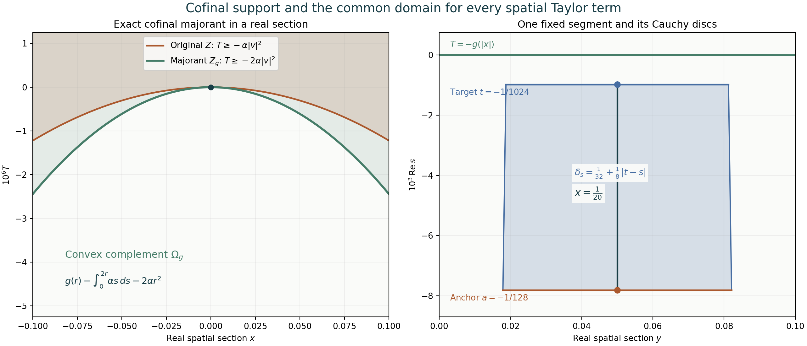
Exact real sections of PB.1–PB.3, for \(d=1\), \(\operatorname{Im}s=\operatorname{Im}x=0\). The left panel uses the admissible sample support \(T\ge-\alpha|v|^2\), for which \(e(r)=\alpha r\) and the constructed majorant is \(g(r)=2\alpha r^2\), within the displayed small ball. Its convex complement lies below the lower parabola. The right panel uses \(R=1\), \(r_z=32\), \(\kappa=1/8\), \(C=2\), \(L=1/2048\), \(a_0=1/128\), \(a=-1/128\), \(t=-1/1024\), and \(x=1/20\); here \(\alpha=L/4\), \(b=1/16\), and \(\delta_t=1/32\). The shaded intervals are the real sections of the complex spatial polydiscs of radius \(\delta_s=\delta_t+\kappa|t-s|\) along the fixed segment. Every displayed constant satisfies (PB.6); (PB.8) proves the positive margin for the full complex polydiscs. The vertical axes explicitly rescale the real time coordinate for legibility and do not alter the Euclidean metric in the proof. This is a section, not the full complex support. The reproducible plotting source and exact rational parameter data accompany the figure. Human context: Kashiwara–Schapira, Micro-hyperbolic systems, §3.1, and Kashiwara–Kawai, HolIII, IV.5; the estimates and cofinal construction are proved above.
The figure has a full-resolution PNG, SVG, editable plotting source and exact coordinate data.


5.41. Canonical products for full convergent spatial symbols
The actual canonical kernel of a convergent spatial symbol is compatible with the unshifted supported cup and normalized proper trace. Spatial Cauchy-shell representatives are constructed directly from the calibrated finite complement cube, and a locally integrable supported primitive controls their product difference. The proof retains every spatial Taylor coefficient and every mixed temporal and spatial contraction on one common neighbourhood. Explicit normal-localization and presentation primitives include finite positive time orders.
The actual product and common-domain estimates are §5.19, §5.20 and §5.21.1, (5.21b)–(5.21f); the normal automorphism is §5.22.1, (5.22a)–(5.22b). Full resolutions and controlled proper excision are §5.34, R.1–R.7; the finite cube, unshifted cup and normalized trace are §5.35, V.1–V.6; and the one-coordinate normalizations and beta integral are §5.36, U.2 and U.4. The angular current and its convergence estimates are §5.38, E.1–E.3. Both full spatial shifts and the presentation primitives are §5.39, NL.2–NL.7. The target operations are those of Micro-hyperbolic systems, §3.1 and HolIII, III.1 and IV.2; all arguments used here are proved in these proof loci.
CP.1. Fixed domains, cutoffs, and the spatial shells
Write \(N=d+1\), \(u=(t,x)\), \(v=(s,y)\), \(w=s-t\), \(\zeta=y-x\). The coefficient line is the ungraded ordered input frame \(\eta=ds\wedge dy_1\wedge\cdots\wedge dy_d\). Put \(r_N=(-1)^{N(N-1)/2}\).
For the finite list \(P,Q,R=P\circ Q\), the actual symbol theorem supplies one coefficient product domain, after restriction, and constants \[ \begin{gathered} |p_{n,\beta}(u)|\le B C^n n! r^{-\lvert\beta\rvert},\\[2pt] n\ge0. \end{gathered} \tag{CP.1} \] Use the largest necessary \(B,C\) and the smallest necessary \(r\) for this finite list. Every fixed finite base derivative has the same estimate with another constant on a smaller common base polydisc. Choose once \[ r^{-1}<a<b<c<B_*<A. \tag{CP.2} \] Choose the time-difference radius so that \(C|w|<1/2\). Choose a radial smooth function \(\chi\) on \(\mathbf C\), equal to one on \(|z|\le b\), zero on \(|z|\ge c\), and with \(0\le\chi\le1\). Such a function follows from the explicit smooth bump construction in §5.38, E.2. For \(w\ne0\), set \[ \begin{gathered} \chi_j(w,\zeta_j)=\chi(\zeta_j/|w|),\\[2pt] f_{j,k}={1-\chi_j\over2\pi i}{k!\over\zeta_j^{k+1}}. \end{gathered} \tag{CP.3} \] The expression is zero near \(\zeta_j=0\), so it is smooth there. At \(w=0,\zeta_j\ne0\), its extension is the holomorphic Cauchy expression and is smooth. Only the joint origin in \((w,\zeta_j)\) needs separate interpretation. Throughout a full antiholomorphic differential is used, including the output variables.
For \(\sigma>0\), let \(s_{j,k}^{\sigma}\) denote the spatial coefficient of \(\bar\partial f_{j,k}\) at \(w=-\sigma\), before its input holomorphic differential. Thus it is \[ \begin{gathered} s_{j,k}^{\sigma}=-{1\over2\pi i}\\[2pt] \bar\partial_{\zeta_j}\chi(\zeta_j/\sigma)\\[2pt] {k!\over\zeta_j^{k+1}}. \end{gathered} \tag{CP.4} \] It is supported on \(b\sigma\le|\zeta_j|\le c\sigma\). The positive complete spatial block is \(s_{j,k}^{\sigma}\wedge d\zeta_j\). For a holomorphic \(g\) on a neighbourhood of \(|\zeta_j|\le c\sigma\), compactly supported Stokes on the annulus gives \[ \int s_{j,k}^{\sigma}\wedge d\zeta_j\,g(\zeta_j)=g^{(k)}(0). \tag{CP.5} \] Indeed the integral equals the positive outer Cauchy circle integral; its inner extension is zero. Taylor expansion of \(g\), uniformly on a slightly larger circle, selects coefficient \(k\) and gives the factor \(k!\). This proves the sign and scalar without identifying any class from a function-space action.
Define the spatial top coefficient form \[ \begin{gathered} A_P(u;\sigma,\zeta)=\\[2pt] \sum_{n+|\beta|\ge1}p_{n,\beta}(u)\\[2pt] {\sigma^{n+|\beta|-1}\over(n+|\beta|-1)!}\\[2pt] s_{1,\beta_1}^{\sigma}\wedge\cdots\wedge s_{d,\beta_d}^{\sigma}. \end{gathered} \tag{CP.6} \] Spatial integration below means anti-first realization with the spatial holomorphic frame and its \(r_d\) calibration, equivalently the product of the positive blocks in (CP.5). With this convention the moment of (CP.6) is \[ \begin{gathered} \int A_P(u;\sigma,\zeta)\,g(\zeta)=\\[2pt] \sum_{n+|\beta|\ge1}p_{n,\beta}(u)\\[2pt] {\sigma^{n+|\beta|-1}\over(n+|\beta|-1)!}\partial_\zeta^\beta g(0). \end{gathered} \tag{CP.7} \] For a polynomial \(g\), only finitely many spatial indices survive. This will be used as a calculation of the Cauchy transform of compactly supported currents, not as faithfulness of an action on solutions.
If \(j\) is any fixed derivative order in \(\zeta\) and the base, differentiation of the fixed cutoffs and of their holomorphic coefficients gives \[ \begin{gathered} \|\partial^j A_P(u;\sigma,\cdot)\|_\infty\\[2pt] \le K_j\sigma^{-2d-1-j},\\[2pt] \int |A_P|\le K_0/\sigma,\\[2pt] \left|\int A_P\right|\le K_0. \end{gathered} \tag{CP.8} \] Here and below coefficient norms in fixed coordinate frames suffice. To prove the first bound, differentiate a term of (CP.4): its coefficient is bounded by a fixed constant times \(k!b^{-k}\sigma^{-k-2-j}\) times a fixed polynomial in \(k+1\). After inserting (CP.1), use \[ {n!\beta!\over(n+|\beta|-1)!}\le n+|\beta| \tag{CP.9} \] and sum the product of geometric series with ratios \(C\sigma<1/2\) and \((br)^{-1}<1\). Fixed powers of \(n+|\beta|\) are harmless: successive applications of \(q\partial_q\) to the geometric series give finite bounds on smaller ratios. The support volume is at most \((\pi c^2\sigma^2)^d\), proving the second bound. Formula (CP.5) with \(g=1\) annihilates every \(\beta\ne0\). The surviving terms have \(n\ge1\), and their geometric sum proves the last bound. All constants and radii are common to the finite list.
CP.2. The actual current and its finite-cube calibration
Let \(L(w)=-\log w/(2\pi i)\), with principal logarithm cut on the negative real ray. On the punctured normal space form \[ \begin{gathered} F_P^-=r_N\sum_{n+|\beta|\ge1}\\[2pt] p_{n,\beta}(u){(-w)^{n+|\beta|-1}\over(n+|\beta|-1)!}\\[2pt] L(w)\,\bar\partial f_{1,\beta_1}\wedge\cdots\wedge\\[2pt] \bar\partial f_{d,\beta_d}\otimes\eta . \end{gathered} \tag{CP.10} \] Every term requires all spatial annuli, so \(|\zeta_j|\asymp|w|\) on its support. The same geometric bound proves \[ \begin{gathered} |F_P^-|\le K |(w,\zeta)|^{-(2N-1)}\\[2pt] (1+|\log|(w,\zeta)||). \end{gathered} \tag{CP.11} \] The normal real dimension is \(2N\); polar integration leaves \(\int_0^R(1+|\log r|)\,dr<\infty\). Give (CP.10) its literal locally integrable extension. Define \[ C_P=p_{0,0}(u)\Delta_N+\bar\partial F_P^- . \tag{CP.12} \] Here \(\Delta_N\) is the positive ordered normalized diagonal current of §5.36, U.6/§5.35, V.17. This is closed, of normal distribution order at most one. It is supported on \[ \left\{\begin{gathered} w\in\mathbf R_{\le0},\\[2pt] |\zeta_j|\le c(-\operatorname{Re}w) \end{gathered}\right\}, \tag{CP.13} \] and its negative-ray part is precisely the positive time-ray block of §5.36, U.5 times (CP.6).
The endpoint claim requires proof. Away from the origin, differentiating (CP.10) leaves only \(\bar\partial L\); the differential of each spatial factor is zero. Formula §5.36, U.4 makes it the negative-ray density. Delete \(|w|\le\epsilon\) and apply Stokes against a smooth compact test. On the cylindrical boundary, every term containing \(d\bar w\) vanishes on realization with \(dw\); the remaining term is the spatial-top part. Its spatial integral on a constant normal test is zero for \(\beta\ne0\). Replace the test by its difference from its value at the normal origin; on the spatial support this difference is at most \(K\epsilon\) times a first derivative seminorm. The bound (CP.8) then bounds the boundary integral by \(K\epsilon(1+|\log\epsilon|)\). For \(\beta=0\), necessarily \(n\ge1\), and the same bound follows from the extra positive time power. Both tend to zero, uniformly in the full series. Thus no additional endpoint current occurs. In particular the negative part has the direct, convergent test definition \[ \begin{gathered} \int_0^R\\[2pt] \left\{\begin{gathered} \int A_P(u;\sigma,\zeta)\\[2pt] [\phi(-\sigma,\zeta)-\phi(0,0)]\\[2pt] +\phi(0,0)\\[2pt] \int A_P(u;\sigma,\zeta) \end{gathered}\right\}\\[2pt] \,d\sigma . \end{gathered} \tag{CP.14} \] Fixed compact cutoffs outside the normal origin are understood. Equations (CP.8) prove convergence and a first-order test bound. This is an actual distribution, rather than an infinite sum of spatial delta derivatives.
Here is the finite cube identifying (CP.12) canonically. Use the ordered complement opens \(U_0=\{w\notin\mathbf R_{\le0}\}\), \(U_j=\{|\zeta_j|>c|w|\}\). The unsigned holomorphic top expression is \[ \begin{gathered} K_P={1\over(2\pi i)^N}\\[2pt] \left\{\begin{gathered} {p_{0,0}\over w\prod_j\zeta_j}\\[2pt] -\log w\sum_{n+|\beta|\ge1}\\[2pt] {\begin{gathered} p_{n,\beta}\beta!\\[2pt] (-w)^{n+|\beta|-1} \end{gathered}\over \begin{gathered} (n+|\beta|-1)!\\[2pt] \prod_j\zeta_j^{\beta_j+1} \end{gathered}} \end{gathered}\right\}. \end{gathered} \tag{CP.15} \] Its literal ordinary top cube coefficient is \(r_N(-1)^N K_P\), or \(-r_NK_P\) in the full-cone ordinary complement Čech coefficient, exactly §5.35, V.15–V.17. We prove this calibration for the shell current by a triangular complement homotopy; its intermediate entries live only on the complement, and require no distributional extension at a partial normal origin.
On the complement, \(F_P^-\) is smooth and closed. Its restriction to every spatial \(U_j\) is zero, since \(\bar\partial f_{j,\beta_j}=0\) there. On \(U_0\), \(L\) is holomorphic. Let the complement Čech–Dolbeault differential be \(D=d_C+(-1)^r\bar\partial\), with \(r\) the Čech degree, as in §5.35, V.6. For \(r=0,\ldots,d-1\), define a cochain of total degree \(d-1\), with its sole possibly nonzero ordered entry on \(U_0\cap\cdots\cap U_r\), by \[ \begin{gathered} b^r_{0\ldots r}=(-1)^r r_N\\[2pt] \sum_{n+|\beta|\ge1}\\[2pt] {p_{n,\beta}(-w)^{n+|\beta|-1}\over(n+|\beta|-1)!}\\[2pt] L(w)\,f_{1,\beta_1}\cdots f_{r+1,\beta_{r+1}}\\[2pt] \bar\partial f_{r+2,\beta_{r+2}}\wedge\cdots\wedge\\[2pt] \bar\partial f_{d,\beta_d}. \end{gathered} \tag{CP.16} \] For \(r=0\) the domain is just \(U_0\). Give other ordered entries value zero, and antisymmetrize the Čech indices. Each of these domains contains \(U_0\); hence \(w=0\) is absent and every coefficient is smooth. Every spatial factor, differentiated or undifferentiated, requires \(|\zeta_j|\ge b|w|\), or is on the stronger complement domain. The strict geometric majorant in (CP.8) proves normal convergence with every fixed derivative on each compact subset of the specified domain. These are actual smooth complement cochains.
Start with \(c^0\), the Čech-degree-zero restriction of the global complement form \(F_P^-\); its only nonzero entry is at index \(0\). Subtract \(Db^0\). Its Dolbeault part cancels \(c^0\), and its remaining entry is positive on indices \(01\). Repeating, on indices \(0,\ldots,r\), the spatial factors \(f_1,\ldots,f_r\) are holomorphic; thus \(\bar\partial b^r\) differentiates only \(f_{r+1}\). The factor \((-1)^r\) in \(D\) cancels the factor in (CP.16). The only nonzero new Čech restriction is obtained by adding index \(r+1\): adding any larger index kills one of the still-differentiated spatial factors. Deleting the last new index contributes \((-1)^{r+1}\); the minus from subtracting \(Db^r\), and (CP.16)'s \((-1)^r\), make the next coefficient positive. Induction gives the exact total-complex identity \[ F_P^- -D\sum_{r=0}^{d-1}b^r=r_N K_P^- \tag{CP.16a} \] where the right side is the top Čech cochain, and \(K_P^-\) is the negative part of (CP.15). At that last intersection every \(f_j\) equals its holomorphic Cauchy function. For \(d=0\) the identity reads \(F_P^-=K_P^-\) on \(U_0\), with empty homotopy.
The relative current class has representative \((0,-F_P^-)\), because adding the literal boundary \(d(F_P^-,0)\) yields \((\bar\partial F_P^-,0)\). Equation (CP.16a) replaces its complement component by \(-r_NK_P^-\); the replacement boundary is exactly \(d(0,\sum b^r)=(0,-D\sum b^r)\) in the full cone over the Čech complex. Adding §5.36, U.6/§5.35, V.17's multiplication-class calibration gives (CP.15) in full. §5.35, V.6's finite Čech augmentation, with its explicitly proved row contraction, identifies this exact cone with the actual derived support cone. This proves the canonical class assertion.
Thus (CP.12) is the actual canonical class of (CP.15). It also supplies the explicit comparison to §5.38, E.2–E.3: both are compared with the same calibrated top cochain by their finite complement homotopies and their literal locally integrable global primitives. No polynomial-class limit is required. The finite complement homotopies (CP.16)–(CP.16a) and §5.38, (E.10), give their comparison on the same coefficient intersection.
CP.3. Smooth ray densities for the canonical convolution
The two kernel singularity lists are independent in \((u,a=v-u,b=z-v)\). Sections 5.34–5.35, §5.34, R.6–R.7 and §5.35, V.2, define their ordinary unshifted supported cup. The normalization is exact: its full-form realization has factor \((-1)^{N^2}\), and \(\operatorname{Tr}_{2N}\) has the same factor; they cancel by §5.35, V.13. The resulting complete-block convolution has positive orientation.
For two negative parts, at final real time length \(\tau>0\), the spatial density is \[ \begin{gathered} D_{P,Q}(u;\tau,\zeta)=\\[2pt] \int_0^\tau\int_{\eta\in\mathbf C^d}\\[2pt] A_P(u;\alpha,\eta)\,\\[2pt] A_Q\left(\begin{gathered} t-\alpha,x+\eta;\\[2pt] \tau-\alpha,\zeta-\eta \end{gathered}\right)\,d\eta\,d\alpha . \end{gathered} \tag{CP.17} \] The spatial notation denotes the positive ordered complete spatial block integral, including its usual real complex orientation. It has support \(|\zeta_j|\le c\tau\). Terms involving the diagonal are, respectively, \(p_{0,0}(u)A_Q(u;\tau,\zeta)\) and \(A_P(u;\tau,\zeta)q_{0,0}(t-\tau,x+\zeta)\). The diagonal×diagonal term is \(p_{0,0}q_{0,0}\Delta_N\).
We justify the endpoint integrals and their common bounds. If \(0<\alpha\le\tau/2\), the second density and all its fixed derivatives are smooth on scale \(\tau\). In its pairing with the first density subtract its value at \(\eta=0\). The mean-value bound gives a factor \(c\alpha\); (CP.8)'s \(K/\alpha\) mass bound cancels that factor. Its constant value is multiplied by the bounded zeroth moment of the first density. Thus for every fixed \(j\) the inner integral and its \(\zeta\)-derivatives are bounded by \(K_j\tau^{-2d-2-j}\), uniformly as \(\alpha\downarrow0\). Base derivatives have the same estimate.
For \(0<\tau-\alpha\le\tau/2\), put \(\theta=\zeta-\eta\). Freeze every holomorphic coefficient of the second density at \(x+\zeta\). The difference of a coefficient from this frozen value is bounded by its common base Cauchy derivative estimate times \(|\theta|\le c(\tau-\alpha)\); summing retains exactly the geometric ratios used in (CP.8). This cancels the second density's mass factor \(1/(\tau-\alpha)\). Pair the frozen part with the first density's value at \(\theta=0\), and subtract that value in the remainder. The frozen zeroth moment is bounded by (CP.8), and the remainder gains the same \(|\theta|\) factor. Again the bound is \(K_j\tau^{-2d-2-j}\). Integrating over the two half intervals gives \[ \begin{gathered} \|\partial_\zeta^jD_{P,Q}\|_\infty\\[2pt] \le K_j\tau^{-2d-1-j}. \end{gathered} \tag{CP.18} \] The same argument after fixed derivatives proves smoothness for \(\tau>0\) and holomorphic dependence on the base. It also applies to the diagonal-negative densities. The endpoint cancellation used in (CP.14), twice, identifies (CP.17) off the final normal origin with the tensor-current/proper-trace distribution: on tests the cutoff integrals converge, and the terms subtracted at the two endpoints are exactly the zeroth-moment terms retained above.
We check that this has no additional current at the final origin. Under the simultaneous dilation \((w,\zeta)\mapsto\lambda(w,\zeta)\), (CP.14) evaluated on a fixed rescaled test is uniformly bounded as \(\lambda\downarrow0\): its difference from the constant test gains \(\sigma/\lambda\), cancelling the mass factor \(1/\sigma\) on \(0<\sigma<O(\lambda)\). In the two-factor tensor use the two successive subtractions; their joint remainder gains \(\sigma_1\sigma_2/\lambda^2\), and their two masses are \(O(1/\sigma_1\sigma_2)\). The proper-cone geometry confines both lengths to \(O(\lambda)\). The remaining terms each include one or two bounded zeroth moments. Thus the convolution too is uniformly bounded on rescaled tests. Any distribution of finite order supported at a point is a finite linear combination of derivatives of its delta: subtract the finite Taylor polynomial of a test and use a cutoff shrinking to that point in its defining finite-order seminorm to prove that it depends only on that finite Taylor jet. Rescaled tests show that every nonzero derivative of delta is excluded by the uniform bound just proved. The only possible discrepancy is a scalar delta. First subtract the already identified diagonal×diagonal term \(p_{0,0}(u)q_{0,0}(u)\Delta _N\) from the canonical convolution. Compare this remaining distribution with the ray-density extension of (CP.17) and its two diagonal-negative terms. Test against a function constant in the spatial variables on the entire cone fibre and supported in time length at most \(O(\lambda )\). A diagonal-negative term has bounded zeroth moment: freeze its multiplying holomorphic coefficient and use (CP.8), with the remainder gaining one spatial length. For two negative terms the zeroth moment is bounded as \(\tau \downarrow 0\): in (CP.20) with \(g=1\), only \(\gamma =0\) and \(\nu =\beta\) survive, and the common Cauchy/geometric bounds give integrable nonnegative endpoint powers with both negative total indices positive. Equivalently, freeze the second holomorphic coefficient and use the two bounded zeroth moments and the spatial difference estimate. Both remaining distributions evaluate as \(O(\lambda )\). A scalar delta would give a constant nonzero value, so its coefficient is zero. Restoring the known diagonal×diagonal term now identifies the complete canonical convolution, including the final origin.
For the needed local properness, put all kernels and the forthcoming primitive inside the larger cone \[ \begin{gathered} G_A=\\[2pt] \left\{\begin{gathered} \operatorname{Re}w\le0,\\[2pt] |\operatorname{Im}w|\le\epsilon(-\operatorname{Re}w),\\[2pt] |\zeta_j|\le A(-\operatorname{Re}w) \end{gathered}\right\}. \end{gathered} \tag{CP.19} \] For two differences in this cone, their nonnegative real time lengths add to the final length. Each intermediate normal length is bounded by a fixed multiple of that final length. Over a compact endpoint set the intermediate set is closed and bounded. Choose a coefficient source polydisc first, then a smaller endpoint polydisc so that this entire closed bounded fibre family has positive distance from the source boundary. It is then compact inside the selected source, giving the proper-support map required by §5.34, R.7/§5.35, V.4. No assertion that arbitrary polydiscs are cone-round is made. The same selection works for the finite list and its intermediate fibres.
CP.4. All holomorphic moments are the actual symbol product
Apply a polynomial test \(g(\zeta)\) to (CP.17). Formula (CP.7), the finite ordinary spatial Leibniz rule, and the stated orientation give for individual terms, writing \(m=n+|\beta|\), \(l=n'+|\gamma|\), \[ \begin{gathered} p(u)\sum_{\nu\le\beta}\binom\beta\nu\int_0^\tau\\[2pt] {\alpha^{m-1}(\tau-\alpha)^{l-1}\over(m-1)!(l-1)!}\\[2pt] \partial_x^\nu q(t-\alpha,x)\\[2pt] \partial_x^{\beta-\nu+\gamma}g(0)\,d\alpha. \end{gathered} \tag{CP.20} \] Expand the holomorphic coefficient at \(t\): its \(k\)-th term is \((-1)^k\alpha^k\partial_t^k\partial_x^\nu q(t,x)/k!\). Repeated real integration by parts gives the integer beta integral \[ \begin{gathered} \int_0^\tau\\[2pt] {\begin{gathered} \alpha^{m+k-1}\\[2pt] (\tau-\alpha)^{l-1} \end{gathered}\over(m-1)!(l-1)!k!}\,d\alpha\\[2pt] =\binom{m+k-1}{k}\\[2pt] {\tau^{m+l+k-1}\over(m+l+k-1)!}. \end{gathered} \tag{CP.21} \] For completeness, start with \(\int_0^1 a^{M-1}(1-a)^{L-1}da\). Integration by parts reduces \(L\) by one and increases \(M\) by one, multiplying by \((L-1)/M\); the last integral is \(1/(M+L-1)\). The product is \((M-1)!(L-1)!/(M+L-1)!\). Rescale by \(\tau\) and put \(M=m+k\). This proves (CP.21), including endpoints.
The coefficient in (CP.20) is consequently \[ \begin{gathered} \binom\beta\nu\binom{-m}{k}p\,\partial_t^k\partial_x^\nu q,\\[2pt] h^{m+l+k}\partial_x^{\beta-\nu+\gamma}. \end{gathered} \tag{CP.22} \] These are precisely all mixed \((\tau,t)\) and \((\xi,x)\) contractions in the actual product of §5.19, with the complete estimates of §5.20–§5.21.1. Rewriting in \(h,z\) gives time index \(n+n'+k+|\nu|\) and spatial exponent \(\beta-\nu+\gamma\). In particular none is a negative time index. A left multiplication coefficient gives its literal left product. A right multiplication coefficient is expanded at \((t,x)\) in \(( -\tau,\zeta)\), producing the same binomial coefficients with \(l=0,\gamma=0\); the equality \((-1)^k/(k!(m-1)!)=\binom{-m}{k}/(m+k-1)!\) is immediate from the factorial expression. The spatial finite Leibniz rule is unchanged. The only diagonal output is \(p_{0,0}q_{0,0}\).
We also need actual, rather than formal, equality. Fix a polynomial degree \(M\). In (CP.20), a nonzero derivative of \(g\) has \(\delta=\beta-\nu\ge0\), \(|\delta+\gamma|\le M\); thus \(\delta,\gamma\) run through finite sets, though \(\nu\) remains unbounded. At a fixed time power, (CP.22) has \(n+n'+k+|\nu|+|\delta+\gamma|\) fixed; hence all indices are finite. Take one larger base polydisc with spatial and temporal Cauchy margins \(R_x,R_t>0\). After the \(1/k!\) in the temporal Taylor expansion is included, the derivative of the second coefficient is bounded by \(B C^{n'}n'!\nu! R_x^{-|\nu|}R_t^{-k}r^{-|\gamma|}\). The spatial Leibniz factor satisfies the explicit inequality \[ \begin{gathered} {n!\over(n+|\beta|-1)!}\binom\beta\nu\nu!\\[2pt] ={n!\beta!\over\delta!(n+|\beta|-1)!}\\[2pt] \le {n+|\beta|\over\delta!}. \end{gathered} \tag{CP.22a} \] The corresponding second factor satisfies \(n'!/(n'+|\gamma|-1)!\le n'+|\gamma|\), since it is a negative term. Hence the absolute integrand is bounded, up to the finite \(g,\delta,\gamma\) constants, by a product of geometric series with fixed polynomial factors and ratios \[ \begin{gathered} C\alpha,\quad C(\tau-\alpha),\\[2pt] {\alpha\over rR_x},\quad {\alpha\over R_t}. \end{gathered} \tag{CP.22b} \] Choose \(\tau\) once so that all these ratios are below \(1/2\), also retaining \((br)^{-1}<1\) for the shell series and putting the full shells in the base domain. The apparent factors \(\alpha^{-1}\) and \((\tau-\alpha)^{-1}\) in this majorant cancel: respectively \(n+|\nu|+|\delta|\ge1\) and \(n'+|\gamma|\ge1\). Differentiating geometric series bounds the fixed polynomial factors. This proves absolute uniform convergence and integrability of the moment sums at both endpoints, and of the temporal Taylor expansion, on one fixed smaller disc. Parametrize \(\alpha=\tau\lambda\); each term is an ordinary nonnegative integer power of \(\tau\), and the majorant proves that the moment is holomorphic at \(\tau=0\). Its Taylor coefficients are (CP.22). The factorial product theorem gives the same convergent moment series for \(R\). Uniqueness of ordinary holomorphic Taylor expansion gives equality on that disc.
This holds for every polynomial \(g\) on the same fixed domain; the domain was chosen from the coefficient constants and shell geometry, not from \(M\). Consequently, if \(S(u;\tau,\zeta)\) is the spatial density of the canonical convolution, including its two diagonal-negative terms, minus \(A_R\), \[ \begin{gathered} \int S(u;\tau,\zeta)\,\zeta^\alpha=0\\[2pt] \text{for every }\alpha\in\mathbf N^d,\\[2pt] \operatorname{supp}S\subset\{|\zeta_j|\le c\tau\},\\[2pt] \|\partial^jS\|_\infty\le K_j\tau^{-2d-1-j}. \end{gathered} \tag{CP.23} \] This is a statement about the actual compactly supported current density and its Cauchy transform. The next section supplies the missing primitive explicitly.
CP.5. A finite Cauchy homotopy with support and norm control
Choose \(\chi_j^\tau\) equal to one on \(|\zeta_j|\le c\tau\), supported on \(|\zeta_j|<B_*\tau\), with a fixed positive scaled margin. Use \(E(z)=1/(\pi z)\), so \(\bar\partial E=\delta_{\mathbf C}\), proved in §5.34, R.2. Let \(\iota_j\) be the signed contraction with \(d\bar\zeta_j\), and let \(T_j=E*_j\) denote partial convolution in the \(j\)-th spatial variable. On a spatial top form \(U\), define \[ \begin{gathered} H_jU=\chi_j^\tau T_j\iota_jU,\\[2pt] \Pi_jU=-d\bar\zeta_j\wedge\\[2pt] (\partial_{\bar\zeta_j}\chi_j^\tau)T_j\iota_jU. \end{gathered} \tag{CP.24} \] Because a top form contains all the spatial antiholomorphic factors, every other spatial differential in \(\bar\partial H_jU\) repeats a factor and is zero. §5.34, R.2's fundamental-solution identity therefore gives \[ \bar\partial_{\rm sp}H_jU=U-\Pi_jU. \tag{CP.25} \] This identity holds whenever \(U\)'s \(j\)-th support is inside the region where \(\chi_j^\tau=1\). Previously applied \(\Pi_i\), \(i\ne j\), do not enlarge its \(j\)-th support. Define \[ \begin{gathered} H_\tau S=\sum_{j=1}^{d}\\[2pt] H_j\Pi_{j-1}\cdots\Pi_1 S,\\[2pt] \text{empty product }1. \end{gathered} \tag{CP.26} \] Telescoping (CP.25) gives \(\bar\partial_{\rm sp}H_\tau S=S-\Pi_d\cdots\Pi_1 S\). The last term is zero. In fact its coefficient, apart from its fixed exterior sign and the outer cutoff derivatives, is the simultaneous Cauchy transform \[ \int {S(\eta)\over\prod_j(\zeta_j-\eta_j)}\,d\eta \tag{CP.27} \] on the product of the outer annuli. Each \(|\zeta_j|\) is strictly larger than the original \(c\tau\)-support radius. Expand each denominator as its uniformly convergent geometric series in \(\eta_j/\zeta_j\). Every coefficient is a moment in (CP.23), and is zero. Fubini is justified by compact smooth coefficients and their bounded Cauchy denominators. Thus \[ \bar\partial_{\rm sp}H_\tau S=S. \tag{CP.28} \]
Here are the quantitative bounds. On a disc of radius \(O(\tau)\), the integral of \(|E(z)|\) is \(O(\tau)\), by polar integration. Hence \(T_j\) multiplies a sup norm by at most \(K\tau\). Cutoff derivatives are \(O(\tau^{-1})\); therefore each \(\Pi_j\) preserves the estimate in (CP.23), and each \(H_j\) gains a factor \(\tau\). For derivatives transfer the convolution derivative to the smooth coefficient, or differentiate the fixed scaled cutoff; this gives \[ \begin{gathered} \operatorname{supp}H_\tau S\subset\{|\zeta_j|\le B_*\tau\},\\[2pt] \|\partial^jH_\tau S\|_\infty\le K_j\tau^{-2d-j},\\[2pt] \int |H_\tau S|\le K_0. \end{gathered} \tag{CP.29} \] All forms are smooth for \(\tau>0\) and holomorphic in the output base. No inverse with an unproved continuity property has been invoked.
Let \(R_t\) be the time coefficient current \(\bar\partial L(w)\), whose positive complete block is §5.36, U.5. In normal coordinates define the primitive, with the input frame attached once, \[ \begin{gathered} B_{P,Q}=-r_N R_t\wedge\\[2pt] H_{-\operatorname{Re}w}S\otimes\eta. \end{gathered} \tag{CP.30} \] The ray coefficient of (CP.30) is locally integrable in \((\tau,\zeta)\) by (CP.29). It is an order-zero distribution on the ray, supported in \(G_A\) on the final kernel product. The proper map used in forming the convolution is \(\pi _{13}:S_{12}\cap S_{23}\to D_{\mathrm{end}}\), from the triple kernel support intersection to the selected final endpoint neighbourhood \((u,z)\). CP.3's outer-source/inner-endpoint choice makes its fibres over compact endpoint sets compact inside the intermediate source. The primitive \(B_{P,Q}\) itself lives on the final kernel product and supplies a supported relative-cone boundary there. For the degree-one action of §5.42 the proper support is obtained by intersecting with the input support. Its full differential is \[ \begin{gathered} \bar\partial B_{P,Q}\\[2pt] =\operatorname{Tr}_{2N}(C_P\smile C_Q)-C_R. \end{gathered} \tag{CP.31} \] Indeed the time current is closed. Derivatives of the \(\tau\)-dependent cutoff or coefficients contribute \(d\bar w\), already in \(R_t\), so vanish. Output antiholomorphic derivatives vanish because the coefficients are holomorphic in the output base. The remaining spatial differential has the sign minus from passing the degree-one time factor; it cancels the minus in (CP.30), and (CP.28) gives (CP.31). This argument also holds on tests at \(\tau=0\): no time differential survives the repeated \(d\bar w\), and the spatial primitive has the literal integrable extension (CP.29). The diagonal terms have already cancelled, and (CP.23)'s zeroth moment eliminates an endpoint mass in the difference. Thus (CP.31) is a literal full-current equality, including the origin.
In the exact relative cone, (CP.31) says that the difference is \(d(B_{P,Q},0)\). It is a literal supported primitive in the final kernel target. The canonical cup and trace used the proper triple-to-endpoint map just specified; §5.34, R.7's controlled excision and §5.35, V.4's trace commute with the corresponding differentials. Equation (CP.31) gives the resulting boundary in the exact final relative cone and proves equality of the actual canonical classes on the selected common neighbourhood. \[ \begin{gathered} \kappa(P)*\kappa(Q)=\kappa(P\circ Q),\\[2pt] P,Q\in E_0. \end{gathered} \tag{CP.32} \] For \(d=0\), omit the spatial shells and the homotopy: (CP.20)–(CP.22) are directly equality of the normally convergent time-ray densities, so (CP.31) holds with zero primitive.
CP.6. Finite positive time orders and preserved scope
The unit is the calibrated ordered diagonal class. The complete canonical normal-localization interface is §5.39, NL.2–NL.7. In particular, for the principal locally integrable logarithm, \(-\partial_wL=C+B_{\log}\), with \(B_{\log}=(2i)^{-1}\mathbf1_{\operatorname{Re}w<0}\delta(\operatorname{Im}w)\). Its derivative discrepancy is the literal supported boundary \(\bar\partial B_{\log}\); after spatial tensoring, §5.39, NL.11–NL.12 give the complete relative-cone primitive. The unit and derivative identities are established on arbitrary smooth current tests, and §5.39, NL.22–NL.27 give explicit supported primitives for both full convergent-spatial normal shifts. For \(P=\partial _t^k\circ P_0\), the complete representative is \(\partial _t^k T_{P_0}\); §5.39, NL.34–NL.35 give the literal finite supported telescoping primitive proving independence of every such presentation. §5.39, NL.36–NL.37 and §5.39, NL.7 prove actual germ restriction and partition/cone independence. Consequently the proved order-zero product identity (CP.32), together with the invertible normal-generator interface of §5.39, extends uniquely to the full finite-order ring \(E=E_0[h^{-1}]\) by the actual normal localization of §5.22.1, (5.22a)–(5.22b). The Ore localization property is applied after these current identities have been proved; no faithful solution-action inference or limit in a cohomology quotient is used.
The following extension argument retains all finite common-domain bounds and the supported presentation primitives of §5.39, (NL.22)–(NL.37).
CP.6.1 Actual algebra and common finite domains
Write \(E_0\) for the actual common-domain factorial order-zero class and \(h=\tau ^{-1}\). The actual §5.22.1 automorphism is
\[ \begin{gathered} \sigma(P)=h\circ P\circ h^{-1},\\[2pt] \sigma(P)=\sum_{a\ge0}\\[2pt] (-1)^a h^a\partial_t^aP\\[2pt] \text{as ordinary}\\[2pt] \text{ normal-symbol}\\[2pt] \text{ coefficients}. \end{gathered} \tag{CP.33} \]The second display is a coefficient expression, not a replacement of its ordinary \(h^a\) multiplication by another Leibniz product. At any fixed index it is a finite sum. A base Cauchy margin \(\rho\) gives the actual estimate
\[ \begin{gathered} \sum_{n+a=m}BC^n n!a!\rho^{-a}\\[2pt] \le B(C+\rho^{-1})^m m!. \end{gathered} \tag{CP.34} \]Its inverse is the actual coefficient expression \(P+h\partial _tP\). Cancellation at every coefficient gives inverse algebra automorphisms, using the already proved associativity of §5.19. The normal relation is
\[ h\circ P=\sigma(P)\circ h. \tag{CP.35} \]The right \(h\) shift is ordinary coefficient shift and is injective; normality gives the corresponding left assertion. Finite shifts preserve the actual factorial class by \((n+k)!\le 2^{n+k}n!k!\). The finite-order class of §5.19 is the actual union of finite normal shifts; §5.21.2, (5.21h)–(5.21i), and §5.22.1 identify it with this normal localization. A finite-order symbol has a finite left product presentation
\[ \begin{gathered} A=h^{-k}\circ P,\\[2pt] k\ge0,\quad P\in E_0. \end{gathered} \tag{CP.36} \]For example choose \(k\) to remove its finite positive-order head and take \(P=h^k\circ A\). If \(A\) has ordinary normal coefficients with indices \(i\ge -m\) and \(k\ge m\), the normalized derivative of \(h^k\) has coefficient \((-1)^a\binom{k+a-1}{a}h^{k+a}\) for \(k\ge 1\). Hence its coefficient at index \(N\) is the finite sum over \(i+a+k=N\); no negative output index occurs. For \(i\ge 0\), the Cauchy bound contains \(i!a!\le (N-k)!\le N!\) and \(\binom{k+a-1}{a}\le2^{k+a-1}\). For the finitely many \(i<0\), one has \(a\le N\), and their Cauchy derivative \(a!\) is also bounded by \(N!\). A common enlarged exponential constant therefore gives actual factorial growth on a single smaller domain, including the spatial Cauchy radius. The \(k=0\) case is already order zero. This proves the stated finite left presentation directly and preserves the actual common domain; no arbitrary infinite formal coefficient lift occurs.
For the finite pair \(A=h^{-k}\circ P\), \(B=h^{-l}\circ Q\), (CP.35) gives
\[ \begin{gathered} P\circ h^{-l}=h^{-l}\circ\sigma^l(P),\\[2pt] A\circ B=h^{-(k+l)}\circ\\[2pt] (\sigma^l(P)\circ Q). \end{gathered} \tag{CP.37} \]The power is \(\sigma ^l\), not \(\sigma ^{-l}\). Derive its first step by multiplying (CP.35) on the left and right by \(h^{-1}\), then iterate \(l\) times. At a fixed finite \(l\ge 1\), coefficientwise geometric multiplication gives \(\sigma^l(P)=\sum_a(-1)^a\binom{l+a-1}{a}h^a\partial_t^aP\) in ordinary normal-symbol coefficients. The bound \(\binom{l+a-1}{a}\le2^{l+a-1}\), with (CP.34), supplies another actual factorial estimate. Only a finite list of actual symbols and their finitely many \(\sigma\) iterates is used. Intersect their coefficient domains, take common factorial/Cauchy constants, and shrink once before applying the order-zero product proof.
CP.6.2 Actual canonical classes and presentation primitives
Let \(K\) denote the germ target of canonical supported kernel classes with its unshifted cup and normalized proper trace. For a finite list choose one common larger pointed thick cone and an outer source/inner endpoint neighbourhood. The sum of two such cone differences remains in the same cone, and their nonnegative real time lengths bound every intermediate point. §5.35, V.2/V.4/V.13, and the direct smooth-test proof in §5.39, NL.5, give an associative canonical operation with the positive diagonal unit on this germ target. This is a statement about actual finite-order distribution families and controlled proper traces, rather than a formal or solution-action algebra.
The product proof CP.1–CP.5 establishes the unital order-zero map
\[ \begin{gathered} \phi:E_0\longrightarrow K,\\[2pt] \phi(P\circ Q)=\phi(P)*\phi(Q),\\[2pt] \phi(1)=I. \end{gathered} \tag{CP.38} \]The diagonal calibration in CP.2 gives \(\phi (1)=I\). Its extension does not assume a faithful map or a nonzero-kernel test.
Put \(U=\phi (h)\). Section 5.39, NL.4–NL.6, gives \(J\), the ordinary output derivative of the positive diagonal unit, with
\[ \begin{gathered} J*U=I=U*J,\\[2pt] J*\phi(P)=\partial_t^{\rm out}\phi(P). \end{gathered} \tag{CP.39} \]These inverse identities retain the principal-log ray term. For \(L=-\log (w)/(2\pi i)\) and \(C=(2\pi iw)^{-1}\),
\[ \begin{gathered} -\partial_wL=C+B_{\log},\\[2pt] B_{\log}=(2i)^{-1}\\[2pt] \mathbf1_{\Re w<0}\delta(\Im w). \end{gathered} \tag{CP.40} \]§5.39, NL.7–NL.12 give the literal spatially tensored supported relative primitive for the discrepancy. §5.39, NL.22/NL.26 give the full convergent-spatial supported primitive for the normal shift identity; §5.39, NL.25 is an equality of full currents. These equations account for the spatial-face term, angular-cutoff term and full output components. Section 5.36, (U.17), retains the principal-log correction. The full convergent-spatial shift and presentation primitives are §5.39, (NL.22)–(NL.37).
Define the extension on the actual left presentation by
\[ \begin{gathered} \Phi(A)=J^k*\phi(P),\\[2pt] A=h^{-k}\circ P. \end{gathered} \tag{CP.41} \]It is represented by the complete current \((\partial_t^{\mathrm{out}})^kT_P\). Its common normal distribution order is at most \(k+1\) on each selected compact, by §5.38, (E.13) and derivative transposition. Suppose another presentation has order \(k+r\). Actual algebra gives \(Q=H_L^rP\), where \(H_LP=h\circ P\). For the finite list \(P_j=H_L^jP\), the shift primitive \(B_j\) of §5.39, NL.3, satisfies
\[ \partial_t^{\rm out}T_{P_j}-T_{P_{j-1}}=\delta B_j. \]Hence the difference of the two complete representatives is the literal relative boundary
\[ d\left(\begin{gathered} (\partial_t^{\rm out})^k\\[2pt] \sum_{j=1}^{r}(\partial_t^{\rm out})^{j-1}B_j,0 \end{gathered}\right). \tag{CP.42} \]Its primitive remains supported in the same chosen thick cone and has finite normal order at most \(k+r-1\). This proves presentation independence at chain level before any localization universal property is invoked. Finite addition can use a common raised order; restriction and auxiliary-choice compatibility are §5.39, NL.7's explicit partition homotopy and common-cone refinement. Thus \(\Phi\) is the actual canonical linear germ class map, not an abstract extension whose agreement with the original current map is unproved.
CP.6.3 Complete finite-order multiplication
Apply (CP.38) to both sides of the actual order-zero identity (CP.35):
\[ U*\phi(P)=\phi(\sigma(P))*U. \]By (CP.39) this gives, for every finite \(l\),
\[ \begin{gathered} \phi(\sigma^l(P))\\[2pt] =U^l*\phi(P)*J^l,\\[2pt] \phi(P)*J^l\\[2pt] =J^l*\phi(\sigma^l(P)). \end{gathered} \tag{CP.43} \]For (CP.36)'s finite pair, associativity, (CP.43), the order-zero product theorem and (CP.37) now prove
\[ \begin{gathered} \Phi(A)*\Phi(B)\\[2pt] =J^k*\phi(P)*J^l*\phi(Q)\\[2pt] =J^{k+l}*\phi(\sigma^l(P))*\phi(Q)\\[2pt] =J^{k+l}*\phi(\sigma^l(P)\circ Q)\\[2pt] =\Phi(A\circ B). \end{gathered} \tag{CP.44} \]This is the complete finite-order multiplication calculation. It uses actual finitely iterated \(\sigma\), common-domain order-zero multiplication, the separately proved literal inverse and presentation primitives, and actual canonical associativity. No unrestricted action, faithful representation, closed-range theorem, or limit of exact polynomial identities is needed. A homomorphism extending \(\phi\) and sending \(h^{-1}\) to \(J\) must obey (CP.41) on every actual finite left presentation, so it is unique. This proves the relevant normal Ore extension property directly; invoking its name introduces no missing theorem.
The exact literal primitives used to identify presentations are (CP.40)/(§5.39, NL.11), (§5.39, NL.22)/(§5.39, NL.26), and (CP.42)/(§5.39, NL.35). Order-zero multiplication has the separate literal primitive CP.30. The proper chain maps used by the canonical cup and trace preserve boundaries. Consequently the finite multiplication computation does not suppress a supported correction. The proper map is the triple support intersection over the final endpoint pair, as in CP.3 and CP.5.
This proves the complete canonical kernel ring-product interface for the actual finite-order convergent spatial symbol ring. Unrestricted-input action still requires its own actual relative roof, residual complement term and full-output primitive. Infinite-order linearity and extension-faithfulness, derived actions, propagation, separation of arbitrary modules, finite D-type, finite poles, intrinsic order, full C1, arbitrary analytic proper regularity, and the original BB/KL/GL scope remain substantive requirements. These further interfaces require their own proofs.
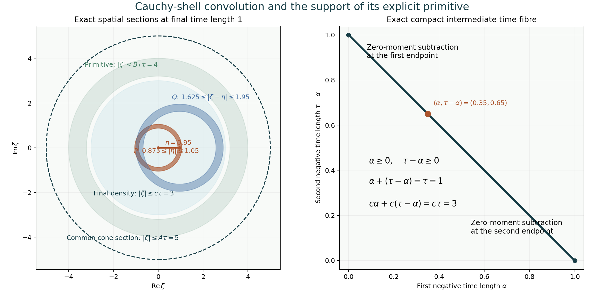
For one spatial complex coordinate these are exact sections at final time length \(\tau =1\). The orange ring is the centred first difference support \(b\alpha \le |\eta |\le c\alpha\), with \(\alpha =0.35\). Fixing the marked allowed point \(\eta =0.95\), the blue ring is the already translated second support \(b(\tau -\alpha )\le |\zeta -\eta |\le c(\tau -\alpha )\), with \(\tau -\alpha =0.65\). Its farthest possible radius from the origin is \(0.95+1.95=2.90<3=c\tau\). The union over all allowed first points lies in the \(c\tau\)-disc by \(|\zeta |\le |\eta |+|\zeta -\eta |\le c\alpha +c(\tau -\alpha )=c\tau\); equivalently, the Minkowski sum of the two centred difference supports lies in that disc. The green annulus is the outer cutoff transition used by the finite Cauchy homotopy; the full primitive has support in the \(B_*\tau\)-disc, with \(c<B_*<A\), inside the same larger cone. The time panel is the exact compact interval \(0\le \alpha \le \tau\). CP.5 gains one time length: density \(O(\tau ^{-2d-1})\) becomes primitive \(O(\tau ^{-2d})\), with bounded spatial \(L^1\) norm and integrability in \(d\tau\). These are sections and proved bounds, rather than a drawing of the full complex support. Proof locators are CP.17–CP.19 and CP.24–CP.31; reproducible plotting source and exact numeric parameters accompany the PNG/SVG.
The figure has a full-resolution PNG, SVG, editable plotting source and exact coordinate data.


5.42. The canonical degree-one directional action
The canonical unshifted cup, controlled excision and normalized shifted proper trace act on arbitrary degree-one directional inputs by the complete ordinary convergent spatial evaluation. The comparison is an equality in the relative current complex with explicit supported and ambient primitives. Finite left time derivatives give the finite-order action.
The angular current is §5.38, E.1–E.3; write \(F^{\mathrm{root}}_P\) and \(T^{\mathrm{root}}_P=\bar\partial F^{\mathrm{root}}_P\) for its form and current. Its fixed-input output derivatives include the transposed normal derivatives of (E.13). Full smooth/current resolutions, finite Čech comparison and controlled excision are §5.34, R.1–R.7. The ungraded coefficient cup, ordered frame and all-degree trace are §5.35, V.1–V.6. Unrestricted-input relative roofs and the full-output collar calculation are §5.37, W.1–W.8. Cofinal input domains and complete ordinary evaluation are §5.40, PB.1–PB.5; the ordinary inverse is PB.6. CA.2 proves composition on one same-anchor nested domain. The separately proved canonical product and class-level localization are §5.41, CP.1–CP.6. The target operation agrees with Micro-hyperbolic systems, §3.1 and HolIII, III.1 and IV.2.
CA.1. The input, cone geometry and exact relative maps
Write \(N=d+1\), \(u=(t,x)\), \(v=(s,y)\), and normal coordinates \(w=s-t\), \(\zeta =y-x\). The input top-form line is ordered \(ds\wedge dy_1\wedge\cdots\wedge dy_d\), ungraded before tracing. Put \[ \begin{gathered} r_N=(-1)^{N(N-1)/2},\\[2pt] G=\left\{\begin{gathered} \operatorname{Re}w=-l\le0,\\[2pt] |\operatorname{Im}w|\le\epsilon l,\\[2pt] |\zeta_j|\le A_jl \end{gathered}\right\},\\[2pt] M=\sqrt{\epsilon^2+\sum_jA_j^2}. \end{gathered} \tag{CA.1} \] The symbol has actual coefficients on a common base and cotangent polydisc, \[ \begin{gathered} P=\sum_{n,\beta}p_{n,\beta}(u)h^nz^\beta,\\[2pt] |p_{n,\beta}|\le B C^n n!r_z^{-|\beta|}. \end{gathered} \tag{CA.2} \] The cone constants satisfy \(A_j>a_j>1/r_z\). Shrinking to a common base gives the same bound for each fixed finite list of base derivatives, by the proved coefficient Cauchy formula.
Every degree-one germ-colimit input class has a representative \((0,-f)\), with \(f\) holomorphic on \[ \begin{gathered} \Omega_g\cap D=\\[2pt] \left\{\begin{gathered} \operatorname{Re}s<\\[2pt] -g(|(\operatorname{Im}s,y)|) \end{gathered}\right\}\cap D,\\[2pt] g(0)=0,\\[2pt] g\text{ convex, nondecreasing},\\[2pt] g(r)=o(r). \end{gathered} \tag{CA.3} \] Indeed the smooth relative resolution sends a closed \((a,b)\) after shrinking to \(a=\bar\partial F\) by §5.34, R.3. Subtracting \(d(F,0)\) leaves \((0,b-rF)\); degree-zero holomorphicity in §5.34, R.3 gives \(f=rF-b\). §5.40, PB.1’s cofinal convex majorants supply (CA.3). This uses no fixed-domain Stein vanishing and no extension of \(f\) as a distribution. Choose a sufficiently small radius so \(g\) has Lipschitz constant smaller than a chosen \(L\) with \(LM<1\) and the extra inequalities in CA.2. For a global notation in the following cone inclusion, extend this restricted \(g\) beyond that radius by the linear ray of slope \(L\). Its left slope is at most \(L\), so the extension is convex, nondecreasing and globally \(L\)-Lipschitz. It has exactly the same cofinal \(o(r)\) germ and input domain on the small ball used here.
For \(u \in \Omega _g\) and \(a \in G\), the input margin at \(u+a\) is at least the margin at \(u\) plus \((1-LM)l\). Thus \(\Omega _g+G \subset \Omega _g\). If the input belongs to its excluded support instead, then \[ \begin{gathered} (1-LM)l\\[2pt] \le\operatorname{Re}t+g(|(\operatorname{Im}t,x)|). \end{gathered} \tag{CA.4} \] Together with \(|(w,\zeta)|\le\sqrt{1+M^2}\,l\), this bounds the complete input fibre of \(S=G \cap p_v^{-1}(D\setminus \Omega _g)\) over every compact small output set. It is closed, and an outer source product can be chosen before shrinking the output so that this entire bounded family lies compactly inside \(D\). This proves actual local properness and \(p_u(S) \subset Z\), where \(Z=B\setminus \Omega _g\).
Choose negative real \(L_0<a<0\), inside the actual input and coefficient products. Take a smooth real \(\theta\) zero below \(L_0\), one above \(a\), with transition compactly contained in \((L_0,a)\). For sufficiently small full output \(B\), the part of \(G\) meeting that transition lies in one fixed compact negative-time tube contained in \(\Omega _g \cap D\). This follows from (CA.1), the strictly positive time length on the transition, and \(g(r)=o(r)\) after shrinking \(L_0,a\) and \(B\). Make compact input cutoffs in the imaginary/spatial and far-right directions equal to one on an open neighbourhood of the clipped cone over \(B\); their derivatives vanish there. Their product with \(\theta(\operatorname{Re}s)\) gives an input-only cutoff \(\eta\), compactly supported in \(D\), equal to one near \(S\), whose derivative on \(G\) is just the negative-time transition derivative. All constructions below use this full tube, including outputs outside \(\Omega _g\).
For the full Dolbeault complex \(I\) put \[ \begin{gathered} C_S^q=I^q\oplus I^{q-1}(M\setminus S),\\[2pt] d(a,b)=(\bar\partial a,ra-\bar\partial b),\\[2pt] L_\eta(a,b)=\left(\begin{gathered} \eta a+\bar\partial\eta\wedge b,\\[2pt] \eta b \end{gathered}\right). \end{gathered} \tag{CA.5} \] §5.37, W.3–W.7 prove the literal chain homotopy \(1-L_\eta =dE_\eta +E_\eta d\), where \(E_\eta (a,b)=((1-\eta )b,0)\), and the controlled extension-by-zero excision roof. For a closed supported kernel current \(T\) of degree \(N\), the cup is \[ m_T(a,b)=\left(\begin{gathered} T\wedge a,\\[2pt] (-1)^N T\wedge b \end{gathered}\right). \tag{CA.6} \] It is the canonical unshifted cup by the tensor-to-cube augmentation §5.35, V.15–V.17 and the smooth/current/injective comparisons §5.34, R.6–R.7. Only multiplication of a current by a smooth cochain is used.
Let \(I_q=J_{\mathrm{out}}^{-1}p_*J_{\mathrm{in}}\) denote raw coefficient integration. The exact shifted trace is \[ \begin{gathered} \operatorname{Tr}_q=(-1)^{N(q-N)}I_q,\\[2pt] Q_N(a,b)=\\[2pt] \left(\begin{gathered} \operatorname{Tr}_qa,\\[2pt] \begin{gathered} (-1)^N\\[2pt] \operatorname{Tr}_{q-1}b|_{p^{-1}(B\setminus Z)} \end{gathered} \end{gathered}\right). \end{gathered} \tag{CA.7} \] It is a chain map on \(C_S[N]\); in unshifted notation \(Q_N de=(-1)^N d Q_N e\). These are §5.37, W.12–W.14, with all-degree compact Stokes proved in §5.35, V.4. Consequently the actual output for \((0,-f)\) is \[ \begin{gathered} O_T(f)=Q_NL_\eta m_T(0,-f)\\[2pt] =\left(\begin{gathered} -I_{N+1}(\bar\partial\eta\wedge Tf),\\[2pt] -I_N(\eta Tf) \end{gathered}\right)\\[2pt] =(A_T,-G_T). \end{gathered} \tag{CA.8} \] Here \(Tf\) is initially only a complement current. Its ambient first component uses \(f\) solely on the full negative-time transition tube, and is smooth on all of \(B\). To define it, multiply \(f\) by an interior bump equal to one near that compact tube and extend this smooth product by zero. Independence follows since \(\bar\partial \eta T\) vanishes outside the tube. On the output complement all clipped cone points lie in the holomorphic input domain, so \(G_T\) is defined without any boundary bound. Smoothness follows by compact current pairing in normal coordinates; §5.38, E.13 transposes each finite fixed-input output derivative onto the smooth coefficient. This also applies to the other finite-order kernel primitives constructed below.
CA.2. Composition on a common nested domain
Use the same anchor \(a=-a_0\) for both factors. Let \(D_0=\max (1,d)\), \(\kappa =4/r_z\), and reserve a spatial/base radius smaller than the base radius \(b\) of §5.40, PB.2 before choosing \(a_0/R\). Choose \(L\le 1/16\), \(L\sqrt{D_0}\,\kappa\le1/16\), \(C|t-a|<1/2\), and enough initial radius so that all spatial deviations below are less than that reserved radius. This is possible in the noncircular order of §5.40, PB.2. Fix a compact target set \(K \subset \Omega _g\), with \(|t|<a_0/4\), and let \(\mu _*\) be its positive minimum input margin. Choose a fixed \[ \begin{gathered} 0<\delta\le\\[2pt] \min(b/8,\mu_*/(16L\sqrt{D_0})), \end{gathered} \tag{CA.9} \] omitting the second bound if \(L=0\). The outer and inner times are \[ \begin{gathered} s=a+\theta(t-a),\\[2pt] r=a+\sigma(s-a),\\[2pt] |t-s|+|s-r|=|t-r|\\[2pt] (0\le\theta,\sigma\le1). \end{gathered} \tag{CA.10} \] Use outer spatial Cauchy radius \(\delta +\kappa |t-s|\) and inner radius \(\delta +\kappa |s-r|\). Every twice-used spatial input point differs from \(x\) by at most \(\sqrt d\,(2\delta+\kappa|t-r|)\). the ratio in §5.40, (PB.7), unchanged on this common segment, gives \(-\operatorname{Re} r\ge -\operatorname{Re} t+|t-r|/2\). The input margin therefore satisfies \[ \begin{gathered} -\operatorname{Re}r\\[2pt] -g(|(\operatorname{Im}r,z)|)\\[2pt] \ge\mu_*-2L\sqrt d\delta\\[2pt] +(1/2-L-L\sqrt d\kappa)\\[2pt] |t-r|\\[2pt] \ge7\mu_*/8+3|t-r|/8>0. \end{gathered} \tag{CA.11} \] The spatial radii and time lengths are bounded before either symbol is approximated. All these nested sets are one compact subset of the original input domain. At \(s=a\) the inner integral has length zero, and its multiplication term is defined on the full fixed spatial anchor tube. Holomorphy near the anchor follows from that tube, so the outer Cauchy estimates include the anchor without a domain gap.
If \(M_f\) bounds \(f\) on the nested compact, §5.40, (PB.11)–(PB.13), bound the right action on every outer spatial Cauchy disc by a constant times \(\Vert Q\Vert M_f\); the constant depends on \(\delta\) and the fixed geometric margins, not on finite Taylor projections. In that estimate the inner ratios are \(|s-r|/(r_z(\delta +\kappa |s-r|))\le 1/4\) and \(C|s-r|<1/2\). Applying the outer estimate gives a bound \(C_K \Vert P\Vert \Vert Q\Vert M_f\) for the composition. The actual absolute norm is the weighted \(\ell^1\)-norm of §5.21.1, (5.21b)–(5.21f); its product is submultiplicative by (5.21d), using §5.20’s complete allocation estimate. Thus finite monomial projections converge, their products converge, and these two actual operator estimates pass the compositions to the same-domain limit.
For precision the finite identity is also an actual identity. With \(m=n+|\beta |\ge 1\), differentiate the right term spatially by finite Leibniz, Taylor-expand its holomorphic coefficient at \(t\) on the common coefficient disc, and integrate on the nested triangle \(a\le r\le s\le t\). Uniform coefficient Taylor convergence and the preceding input bounds allow each exchange. The integer beta integral gives \(\binom{-m}{k}\) for the time contractions and \(\binom{\beta}{\nu}\) for the spatial contractions, exactly the normal product of §5.19, with the complete estimates of §5.20–§5.21.1; multiplication on the left is literal multiplication. No independent anchors are compared. Hence \[ \begin{gathered} \rho_a(P)\rho_a(Q)=\rho_a(P\circ Q),\\[2pt] \rho_a(1)=1 \end{gathered} \tag{CA.12} \] where the finite identities and limit are taken on smaller common target neighbourhoods. §5.40, PB.5’s normally convergent full-neighbourhood anchor corrections and extending-input argument descend this to the germ quotient. The intermediate points need not lie in the small target neighbourhood of §5.40, PB.3. The common nested estimates above prove the required input-domain bounds directly.
CA.3. An actual spatial-annulus representative
Choose \(0<\epsilon _1<\epsilon\) and numbers \[ \begin{gathered} a_j<c_j<b_j\\[2pt] <A_j/\sqrt{1+\epsilon_1^2}. \end{gathered} \tag{CA.13} \] First make \(\epsilon _1\) small enough for these inequalities. Let \(\chi _0(w)\) be a smooth angular function zero on an angular neighbourhood of the negative ray and one outside a narrower temporal wedge contained strictly in \(|\operatorname{Im} w|<\epsilon _1(-\operatorname{Re} w)\). It extends smoothly over the negative cut as zero. Its intermediate values and derivatives have negative real time.
For a small positive \(e\), put \[ \begin{gathered} r=|(w,\zeta)|,\\[2pt] R_e=\sqrt{|w|^2+e^2r^2},\\[2pt] \chi_j=\chi_{c_j,b_j}(|\zeta_j|/R_e)\\[2pt] (1\le j\le d). \end{gathered} \tag{CA.14} \] Here the flat step is zero below \(c\), one above \(b\), and in between is \(q(v-c)/(q(v-c)+q(b-v))\), with \(q(h)=\exp (-1/h)\) for \(h>0\) and zero otherwise. It is smooth and flat at both ends, by direct differentiation of the exponential. Since \(R_e>0\) on the punctured full normal space and the step is zero near \(\zeta _j=0\), these spatial functions are smooth there. They have degree zero under real radial scaling.
Take \(e^2 \sum b_j^2<1\). Wherever all spatial cutoffs are below one, or all their derivatives occur, \[ \begin{gathered} r^2\le |w|^2\\[2pt] +(\sum b_j^2)(|w|^2+e^2r^2),\\[2pt] r\le C_e|w|. \end{gathered} \tag{CA.15} \] Choose \(e\) still smaller so the upper bounds \(b_j\sqrt{1+e^2C_e^2}\sqrt{1+\epsilon_1^2}\) are strictly less than \(A_j\). Thus the intersection of the temporal and spatial transition regions lies compactly in the angular interior of \(G\). At \(w=0,r>0\), at least one spatial cutoff is identically one on a neighbourhood; this observation resolves the apparent singularity of the temporal angular function when multiplied by the spatial factors below.
Use the unsigned coefficient of §5.38, E.2, \(K_P\): \[ \begin{gathered} K_P={1\over(2\pi i)^N}\\[2pt] \left[\begin{gathered} {p_{0,0}(u)\over w\prod\zeta_j}\\[2pt] -\log w\sum_{n+|\beta|\ge1}\\[2pt] {\begin{gathered} p_{n,\beta}(u)\beta!\\[2pt] (-w)^{n+|\beta|-1} \end{gathered}\over \begin{gathered} (n+|\beta|-1)!\\[2pt] \prod\zeta_j^{\beta_j+1} \end{gathered}} \end{gathered}\right]. \end{gathered} \tag{CA.16} \] Define \[ \begin{gathered} F^{\rm ann}_P=r_N\chi_0K_P\,\\[2pt] \bar\partial\chi_1\wedge\cdots\wedge\bar\partial\chi_d,\\[2pt] T^{\rm ann}_P=\bar\partial F^{\rm ann}_P. \end{gathered} \tag{CA.17} \] For \(d=0\) the empty wedge is one. Every multiplier support in (CA.17) is compactly inside the complete coefficient intersection \(U_0\cap\cdots\cap U_d\) on the normal sphere: (CA.15) separates \(w\) from zero, \(\chi _0\) separates the logarithmic cut, and \(\bar\partial \chi _j\) separates each spatial pole. Extension by zero is smooth on the punctured normal space. The §5.38, E.5–E.6 geometric sum gives \[ \begin{gathered} |F^{\rm ann}_P|\le C r^{-(2N-1)}\\[2pt] (1+|\log r|). \end{gathered} \tag{CA.18} \] Polar integration proves its literal \(L^1\) extension to the origin. Its differential has order at most one. Away from the origin the differential is \(r_NK_P\,\bar\partial\chi_0\wedge\cdots\wedge\bar\partial\chi_d\), supported in \(G\); the origin belongs to \(G\). Thus this is a closed supported current with the same actual coefficient series and no infinite spatial delta derivatives.
CA.4. Explicit supported homotopy from the angular current
The following smooth partition is chosen to make the homotopy quantitative. Set \[ \begin{gathered} \vartheta_j=1-(1-\chi_j)^{1/j},\\[2pt] \phi_j=\vartheta_j\prod_{k>j}(1-\vartheta_k)\\[2pt] (1\le j\le d),\\[2pt] Q=\prod_{k=1}^d(1-\vartheta_k),\\[2pt] \phi_0=\chi_0Q,\\[2pt] \phi_G=(1-\chi_0)Q. \end{gathered} \tag{CA.19} \] The displayed fractional powers are smooth: near each flat endpoint they are an exponential \(\exp (-1/(j h))\) times a smooth positive factor; away from that endpoint ordinary differentiation applies. All spatial factors are smooth on the punctured normal space. The factors involving \(\chi _0\) vanish on an open neighbourhood of every nonzero point with \(w=0\), by (CA.15). Hence all \(\phi\) are smooth homogeneous functions there. Their sum is one by telescoping. Each \(\phi _i\) is subordinate to \(U_i\), with compact angular margins, and \(\phi _G\) is compactly supported in the angular interior of \(G\).
For an angular partition \(q=(q_0,\cdots,q_d)\) write \(\omega_q=\sum_i(-1)^iq_i\,\bar\partial q_0\wedge\cdots\wedge\widehat{\bar\partial q_i}\wedge\cdots\wedge\bar\partial q_d\). On the complement of \(G\), either a spatial cutoff is locally one, making both \(\omega _\phi\) and \(\chi_0\bigwedge_j\bar\partial\chi_j\) zero, or \(\chi _0=1\) and \(\sum _i \phi _i=1\). In the latter region \(\omega _\phi =\bar\partial \phi _1 \wedge \cdots \wedge \bar\partial \phi _d\). The triangular Jacobian of \((\chi _1,\cdots,\chi _d)\to (\phi _1,\cdots,\phi _d)\) is \[ \begin{gathered} \prod_{j=1}^d\vartheta_j'\\[2pt] \prod_{k=1}^d(1-\vartheta_k)^{k-1}\\[2pt] =\prod_{j=1}^d{1\over j}={1\over d!}. \end{gathered} \tag{CA.20} \] Consequently \[ \begin{gathered} d!\,\omega_\phi=\chi_0\bar\partial\chi_1\wedge\cdots\\[2pt] \wedge\bar\partial\chi_d\\[2pt] \text{on }M\setminus G. \end{gathered} \tag{CA.21} \] Boundary points follow by smoothness and the flat plateau. This proves directly that the annular and partition representatives have the same complement normalization.
Let \(\psi\) be the angular partition of §5.38, E.2 and interpolate \(q(\lambda )=(1-\lambda )\psi +\lambda \phi\), including its \(G\) component. In (CA.19) no angular partition is changed. Use the odd total differential \(D=\bar\partial+d\lambda\,\partial_\lambda\) and form \(\omega _q\) with \(Dq_i\). Put, for \(d\ge 1\), \[ \begin{gathered} b_P=r_Nd!K_P\int_0^1\\[2pt] \iota_{\partial_\lambda}\omega_{q(\lambda)}\,d\lambda,\\[2pt] H_P=F^{\rm root}_P-F^{\rm ann}_P\\[2pt] +\bar\partial b_P. \end{gathered} \tag{CA.22} \] For \(d=0\) take \(b_P=0\) and the same formula for \(H_P\). On the complement \(\sum _i q_i=1\), hence \(\sum _i Dq_i=0\); expanding gives \(D\omega_q=N\bigwedge_iDq_i=0\). The coefficient of \(d \lambda\) says \(\partial_\lambda\omega_q=\bar\partial(\iota_{\partial_\lambda}\omega_q)\). Since \(K_P\) is holomorphic on all multiplier supports, integration proves \(\bar\partial b_P=F_\phi-F^{\mathrm{root}}_P\) there. Equations (CA.21)–(CA.22) therefore give \(H_P=0\) outside \(G\), while \[ \bar\partial H_P=T^{\rm root}_P-T^{\rm ann}_P. \tag{CA.23} \] For \(d=0\), both cutoffs are one outside \(G\), so the same support assertion is immediate.
This is a literal supported primitive for the full coefficient, not an assertion of cohomological continuity. Every term of the integrand has one partition factor or its \(\lambda\)-derivative for each normal open and \(N-2\) normal differential factors. Its angular support is compactly inside the full coefficient intersection. Thus \(|b_P|\le C r^{-(2N-2)}(1+|\log r|)\). This is \(L^1\), as is each \(F\). Its distributional derivative exists by transposition. \(H_P\) has order at most one and is smooth away from the normal origin; its support assertion remains valid at the origin because that point belongs to \(G\). All fixed-normal base derivatives satisfy the same bounds. The weighted geometric tails in §5.38, E.3 bound \(F\) and \(b\) by one scalar tail tending to zero, and hence bound \(H\) with one common first-order test norm. This supplies controlled primitives for the entire convergent series.
The equality is also an actual canonical Čech roof. Section 5.38, E.10 identifies \(F^{\mathrm{root}}_P\) with the descent of ordinary full-cone complement coefficient \(-r_N K_P\); (CA.21) and (CA.22) give its explicit smooth homotopy to \(F^{\mathrm{ann}}_P\). Adding \(d(F^{\mathrm{ann}}_P,0)\) sends \((0,-F^{\mathrm{ann}}_P)\) to \((T^{\mathrm{ann}}_P,0)\), and (CA.23) is the supported ambient homotopy between the current endpoints. The augmentations of §§5.34–5.35, R.6–R.7 and §5.35, V.6, and §5.37’s cup/excision/trace maps therefore transport this same homotopy through the canonical operation. No Leray cover or polynomial-class limit is used.
For later use, a supported \(H\) of degree \(N-1\) with \(T'-T=\bar\partial H\) changes (CA.8) by \[ \begin{gathered} O_{T'}(f)-O_T(f)\\[2pt] =d(D_H,0),\\[2pt] D_H=I_N(\bar\partial\eta\wedge Hf). \end{gathered} \tag{CA.24} \] Indeed on the output complement compact Stokes gives \(I_N(\eta \bar\partial H f)=-I_N(\bar\partial \eta \wedge Hf)\), since raw integration of a degree \(N-1\) compact coefficient is zero. On the full output neighbourhood, \(-I_{N+1}(\bar\partial \eta \wedge \bar\partial H f)=\bar\partial D_H\), using only the holomorphic negative-time tube. These two identities prove (CA.24) component by component with the shift signs of §5.35, V.4, and §5.37, (W.12)–(W.14). For (CA.22), \(D_H\) is smooth on all of \(B\) and all its actual tails converge with every fixed output derivative. The primitive has support proper before tracing. This gives the required controlled difference between the angular and annular actions.
CA.5. The spatial Cauchy trace is a full canonical trace
Fix \(w\ne 0\) in the temporal wedge, and a small allowed output. All spatial multiplier supports in (CA.17) lie in one polydisc contained in the holomorphic input domain, by (CA.13)–(CA.15) and the margin inequality in CA.1. The strict inequalities allow a slightly wider time wedge and slightly larger spatial polydiscs, still inside the same cone margins. Together with a small full normal neighbourhood of the diagonal for each allowed output, these give an actual open neighbourhood on which \(F^{\mathrm{ann}}_P f\) is defined and which contains the support needed in this calculation. Over compact subsets of the output complement these neighbourhoods can be chosen uniformly. The primitive and partial-current identities below are computed on this open neighbourhood, where \(f\) is holomorphic, and then transported by the controlled excision maps of §5.37, W.3–W.7, and §5.34, R.7. Outside the temporal support the traced supported current is zero; a globally defined \(F^{\mathrm{ann}}_P f\) at other positive-time input points is not used. For the ambient first component only the fixed full-output negative-time transition tube is used, as in CA.1 and CA.6.
Replace \(e\) in \(R_e\) continuously by \(v \in [0,e]\). At fixed nonzero \(w\) the cutoffs are smooth, and their joint differential product has compact spatial support away from every coordinate pole. Its derivative is the spatial Dolbeault differential of \[ \begin{gathered} B_v=\sum_{j=1}^d(-1)^{j-1}\dot\chi_j^v\\[2pt] \bar\partial_\zeta\chi_1^v\wedge\cdots\\[2pt] \widehat{\bar\partial_\zeta\chi_j^v}\cdots\\[2pt] \wedge\bar\partial_\zeta\chi_d^v. \end{gathered} \tag{CA.25} \] Every multiplier, including the dotted one, has annular support in its coordinate, so the holomorphic coefficient and \(f\) are defined on all these supports. Compact Stokes annihilates its spatial integral. Thus the trace is exactly its value at \(v=0\), where the cutoffs depend independently on \(|\zeta _j|/|w|\).
For one spatial coordinate, expanding the holomorphic Taylor series on a disc containing the annulus and integrating its angular terms gives \[ \begin{gathered} {1\over2\pi i}\int {\bar\partial\chi_j\over\zeta_j^{\beta_j+1}}\\[2pt] f(s,x+\zeta)\wedge d\zeta_j\\[2pt] ={1\over\beta_j!}\partial_{x_j}^{\beta_j}f(s,x). \end{gathered} \tag{CA.26} \] The radial integral is \(\int\chi_j^{\prime}(r)\,dr=1\); the angular integral retains exactly exponent \(\beta _j\), with positive \(d\bar\zeta\wedge d\zeta=2i\,r\,dr\wedge d\theta\). Iteration in the ordered spatial coordinates gives the full Cauchy formula. Normal coefficient convergence is uniform on these annuli because every ratio \(|w|/(r_z|\zeta _j|)\) is bounded strictly below one. Hence the complete series, including \(n=0\) and unbounded \(\beta\), is integrated there as an actual normally convergent coefficient.
The holomorphic block and coefficient sign are explicit. Moving \(ds\) past the \(d\) spatial antiholomorphic factors, then grouping each spatial normal block, contributes \((-1)^d r_d\). Together with \(r_N\), this is one: \(r_N(-1)^d r_d=1\). The partial trace of \(F^{\mathrm{ann}}_P f\) is therefore the literal locally integrable one-time primitive \[ \begin{gathered} \chi_0(w)K_f(u,w),\\[2pt] K_f={1\over2\pi i}\\[2pt] \left[\begin{gathered} {p_{0,0}(u)f(t+w,x)\over w}\\[2pt] -\log w\,\Phi_P(u,t+w) \end{gathered}\right], \end{gathered} \tag{CA.27} \] where \[ \begin{gathered} \Phi_P(u,s)=\sum_{n+|\beta|\ge1}\\[2pt] p_{n,\beta}(u){(t-s)^{n+|\beta|-1}\over(n+|\beta|-1)!}\\[2pt] \partial_x^\beta f(s,x). \end{gathered} \tag{CA.28} \] For outputs in a compact subset of \(\Omega _g\), \(f\) is holomorphic on a fixed neighbourhood of the diagonal, so (CA.28) is holomorphic and normally convergent near \(w=0\). Away from that diagonal the preceding annular margins apply on the specified open support neighbourhood. The normal \(L^1\) bound (CA.18), integrated spatially, is \(C|w|^{-1}(1+|\log|w||)\), locally integrable in the two real time dimensions. Thus the equality off \(w=0\) extends there as equality of \(L^1\) primitives; no point distribution can be added. A fixed spatial cutoff flat on their supports makes partial integration proper on a smaller product. It commutes with the complete differential by compact Stokes, so on that neighbourhood the partial trace of \(T^{\mathrm{ann}}_P f\) is exactly \(\bar\partial (\chi _0 K_f)\), including its diagonal and output antiholomorphic components. Controlled excision transports this identity of supported currents into (CA.8), keeping its complement component on the output complement and its ambient first component on the full transition tube. This proves a chain trace comparison, rather than identifying it from a contour action.
CA.6. One-time angular-to-ray comparison and the full ambient primitive
We use (CA.27) near \(w=0\) for outputs in \(\Omega _g\); its values on the negative-time transition tube are defined for every output in \(B\). The literal principal \(K_f\) is \(L^1\) in time on those domains. Its Cauchy differential gives \(p_{0,0}(u)f(u)\) on the diagonal, and its negative-log differential gives the positive ray density with holomorphic coefficient (CA.28), by the explicit one-coordinate §5.36, U.5–U.7 calculation. Define \[ H_f^{\rm time}=(\chi_0-1)K_f. \tag{CA.29} \] It is supported in the narrower negative-time wedge and is \(L^1\) there. The exact identity \(\bar\partial (\chi _0 K_f)-\bar\partial K_f=\bar\partial H_f^{\mathrm{time}}\) is valid as currents. Apply the one-time version of (CA.24): the two relative traced outputs differ by \(d(D_{\mathrm{time}},0)\), where \[ D_{\rm time}=I_1\left(\begin{gathered} \bar\partial\eta_{\rm time}\wedge\\[2pt] H_f^{\rm time} \end{gathered}\right). \tag{CA.30} \] Only the fixed negative-time transition contributes. On that compact tube \(\Phi _P\) is an actual joint holomorphic series on a full smaller output neighbourhood: spatial Cauchy radii proportional to the strictly positive time length give all ratios below a fixed number less than one, and \(C|t-s|<1/2\). The logarithmic cut is a fixed \(L^1\) normal coefficient. Parametrizing in \(w\) and differentiating the smooth compact coefficient proves \(D_{\mathrm{time}}\) smooth on the full output neighbourhood. Every fixed derivative and every series tail has the same compact bounds. The imaginary input cutoffs are flat on this wedge, as arranged in CA.1. Consequently (CA.30) is a full ambient primitive, with no assertion about boundary growth.
The ray calculation of §5.37, W.19–W.24 now applies to the joint holomorphic function \(\Phi _P(u,s)\). Its anchored output is precisely \[ \begin{gathered} V_P(u)=p_{0,0}(u)f(u)\\[2pt] +\int_a^t\Phi_P(u,s)\,ds. \end{gathered} \tag{CA.31} \] This is §5.40, (PB.10), with every spatial Taylor term. Its normal convergence and holomorphy on the common input/target domains are §5.40, PB.3–PB.4, (§5.40, PB.8)–(§5.40, PB.13). Points of the triangle between \(a\), \(a+i \operatorname{Im} t\) and \(t\) have the form \(s=a+\theta (t-a)+i \nu (1-\theta )\operatorname{Im} t\), with \(0\le \theta ,\nu \le 1\). They satisfy \(|t-s|\le (1-\theta )|t-a|\) and \(-\operatorname{Re} s+\operatorname{Re} t=(1-\theta )(\operatorname{Re} t-a)\ge |t-s|/2\). Thus §5.40, (PB.8)’s complete spatial-disc margins hold on this triangle, including the vertical anchor edge. A holomorphic primitive changes its straight segment to the horizontal/vertical path. The full smooth correction is \[ \begin{gathered} E_{\rm ray}(u)=\\[2pt] \int_a^{a+i\operatorname{Im}t}\Phi_P(u,s)\,ds\\[2pt] -\int_{L_0+i\operatorname{Im}t}^{a+i\operatorname{Im}t}\\[2pt] \theta(\operatorname{Re}s)\Phi_P(u,s)\,ds. \end{gathered} \tag{CA.32} \] All its input points belong to one fixed full negative-time tube. The geometric estimates for all \(\beta\) there converge uniformly with every fixed derivative. The §5.37, W.23 integration by parts gives its first component on every output, including the excluded output support: \(\bar\partial_tE_{\mathrm{ray}}=-(1/2)\int\theta^{\prime}(r)\Phi_P(u,r+i\operatorname{Im}t)\,dr\), and there is no \(\bar\partial _x\) term. The ray output is exactly \((0,-V_P)+d(E_{\mathrm{ray}},0)\); its Cauchy multiplication part has zero first component and positive connecting representative \((0,-p_{0,0}f)\).
Combining (CA.24), (CA.27)–(CA.32), with \(H_P\) from (CA.22), proves the main literal equality \[ \begin{gathered} Q_NL_\eta m_{T^{\rm root}_P}(0,-f)\\[2pt] =(0,-V_P)+d(E_P,0),\\[2pt] E_P=E_{\rm ray}+D_{\rm time}\\[2pt] +I_N(\bar\partial\eta\wedge H_Pf). \end{gathered} \tag{CA.33} \] Every term of \(E_P\) is smooth on a full output neighbourhood and is formed from the convergent coefficient and fixed interior input tubes. The canonical cube, augmentation, excision and shifted trace maps are (CA.5)–(CA.7); the supported homotopy is CA.22; the actual spatial trace homotopy is CA.25; and the temporal supported homotopy is CA.29. These explicit maps establish canonical equality, through the actual relative cup, excision and trace maps.
CA.7. Interior collars, changes, derivatives and remaining scope
For any smooth interior cutoff \(\chi\) compactly supported in the holomorphic input domain, \(F=\chi f\) extends smoothly by zero, but its relative representative is \[ \begin{gathered} (\bar\partial F,F-f),\\[2pt] F-f=(\chi-1)f. \end{gathered} \tag{CA.34} \] The residual term is retained. §5.37, W.10–W.14 are chain identities for any finite-order supported current, so they give \[ \begin{gathered} Q_NL_\eta\\[2pt] m_{T_P}(\bar\partial F,F-f)\\[2pt] =(0,-V_P)\\[2pt] +d(E_P+J_\chi,0),\\[2pt] J_\chi=I_N(\eta T_PF). \end{gathered} \tag{CA.35} \] \(J_\chi\) is smooth on the full output neighbourhood: in normal coordinates it pairs the smoothly parameterized order-one current with a smooth compact input coefficient. Each fixed-input output derivative is the finite combination of base derivatives and transposed normal derivatives in §5.38, E.13. Their bounded test norms prove the asserted smoothness and actual tail convergence. This argument uses one finite current order, independently of all spatial Taylor terms.
For a second collar \(F'\), the difference is \(d(I_N(\eta T_P(F'-F)),0)\). For a second excision cutoff \(\eta '\), the output difference is \(-d(I_N((\eta '-\eta )T_Pf),0)\), exactly §5.37, W.26–W.27. The latter coefficient is defined on a compact subset of the input complement avoiding \(S\); an interior bump there gives its smooth zero extension, and compact finite-order current pairing gives a full smooth primitive. All proper supports and excision refinements are those in §5.37, W.4–W.7/§5.34, R.24. Changing angular partitions or annulus parameters gives the supported homotopies (CA.22)/(CA.25), so it changes the output by the displayed full-tube primitives. Changing negative anchors gives §5.40, PB.5’s normally convergent holomorphic full-neighbourhood correction. Extending inputs give extending outputs by that same estimate. These formulas prove the quotient, collar, domain, support and germ compatibilities for arbitrary original degree-one relative classes.
Finite output time derivatives commute with the canonical cup/trace by test-function transposition and proper Stokes, and with the selected input-only \(\eta\). For a general base-dependent cutoff, §5.37, W.8's exact commutator homotopy \([D,L_\eta ]=dK_D+K_Dd\), \(K_D(a,b)=((D \eta )b,0)\), supplies the replacement. Thus a finite left shift \(h^{-k} \circ P\) acts canonically by \(\partial _t^k V_P\). CA.2 proves the order-zero action multiplicative; §5.40, PB.6, proves that the ordinary \(h\) primitive and \(\partial _t\) actions are inverse modulo the holomorphic anchor correction. The actual normal automorphism is fully proved in §5.22.1, equations (5.22a)–(5.22b): \(hP=\sigma (P)h\), with \(\sigma\) an actual algebra automorphism, and finite shifts preserve the common-domain factorial class. Each finite-order symbol is a finite left \(h^{-k}\) shift of an order-zero symbol by §5.19's order definition and the finite-shift calculation §5.21.2, (5.21h)–(5.21i). Equality of two such presentations is tested by multiplying by a common positive power of the regular normal \(h\); their actions then agree because \(\rho (h)\) is invertible. Multiplication of presentations uses \(hP=\sigma (P)h\) and its inverse, and the already proved action identity carries the same relation. This directly proves the presentation-independent full finite-order symbol action, without an extra localization theorem. It is action independence; it does not by itself identify different supported kernel representatives under all localized ring presentations. The canonical ring product and class-level localization are §5.41, CP.1–CP.6, using §5.39, NL.2–NL.7.
The closed result is the unrestricted-growth canonical degree-one action for the full convergent spatial symbol coefficients and their finite time shifts, with common domains, actual unbounded Taylor sums, residual complement, supported homotopies and full ambient primitives. It does not prove arbitrary derived-degree \(E\)-linearity, infinite-order extension/flatness, propagation, module separation, finite D-type embeddings, finite-pole recovery, intrinsic-order comparison, full C1, arbitrary analytic proper-image regularity, or any full GL/BB/KL/affine/critical/factorization completion. Those further interfaces require their own proofs.
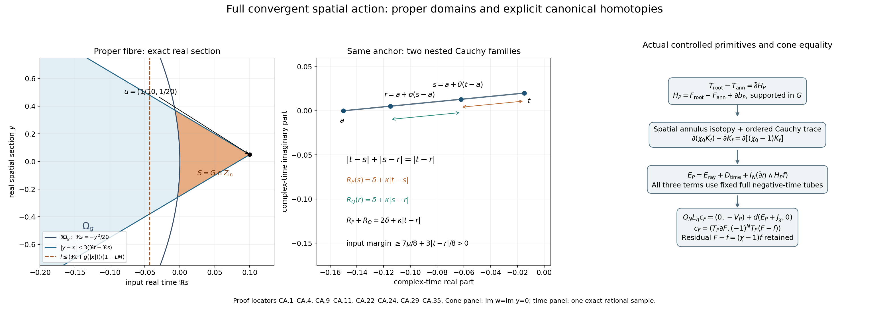
Figure 5.42.1 is an exact real slice of (CA.1)/(CA.4) with \(\epsilon =1/4\), \(A=3\), \(g(r)=r^2/20\), \(L=1/10\) on \(r\le 1\), and output \((\operatorname{Re} t,x)=(1/10,1/20)\). It labels the complete local support-intersection bound. The middle panel has exact rational coordinates \(a=-3/20\), \(t=-3/200+i/50\), \(\theta =13/20\), \(\sigma =2/5\), \(\delta =1/250\), \(\kappa =2/5\); the two nested time lengths add exactly as in (CA.10). The right panel records the supported primitive (CA.22) and all three full-output corrections in (CA.33), retaining the collar residual (CA.34). This is a real section, a complex-time sample and a diagram of proved maps. Reproducible source and exact coordinate data are retained; the real section, time sample and primitive diagram use exactly these coordinates.
The figure has a full-resolution PNG, SVG, editable plotting source and exact coordinate data.


5.43. The canonical all-degree action and its derived module structure
The canonical kernel cup and normalized proper trace act in every relative degree. A proved auxiliary concentration theorem then constructs an actual module-derived supported object. Its underlying action is identified with the same canonical cup, controlled excision and shifted trace. Bounded finite-projective contractions transfer to this module model with explicit tensor and internal-Hom signs.
The actual factorial-growth symbol rings, finite common domains, normal automorphism and finite module relations are §§5.19–5.22. The complete smooth/current resolutions, injective comparisons and controlled proper excision are §5.34, R.1–R.7. The ungraded coefficient cup, ordered finite complement cube, tensor suspension and normalized all-degree trace are §5.35, V.1–V.6. The one-normal calibration is §5.36, U.1–U.4. Arbitrary-cochain collar roofs are §5.37, W.1–W.8. Actual full spatial currents and their fixed-normal base bounds and transposed normal derivatives are §5.38, E.1–E.3, especially (E.13). Finite time shifts and their supported primitives are §5.39, NL.1–NL.7. Actual directional input domains and ordinary evaluation are §5.40, PB.1–PB.6; the full canonical product is §5.41, CP.1–CP.6; and the calibrated degree-one action, full supported homotopies and common-domain geometry are §5.42, CA.1–CA.7.
Write \(R=E(G;D)\) for the canonical kernel cohomology ring of the full thick cone and round coefficient domain specified below. Sections 5.39 and 5.41 give an actual symbol-ring map to the filtered canonical kernel-germ ring, including finite positive time orders. They do not assert an isomorphism onto every canonical kernel class. Section 5.42 supplies actual bounds and calibration; its degree-one action is not used to infer the ring map or the derived module structure proved here.
The only global analytic input is proved completely in DLH.1–DLH.4 below, including the alternating coefficient expansion, weighted adjoint calculation, graph-domain approximation and unrestricted-input weight construction. The target local module category and geometric conditions are those of Micro-hyperbolic systems, §§3.1–3.2.5 and HolIII, IV.3–IV.4. Every argument used is supplied here or in the indicated earlier proof loci.
DL.1. The actual all-degree cup and trace
Put \(N=d+1\), \(u=(t,x)\), \(v=(s,y)\), \(w=s-t\), \(\zeta=y-x\). The coefficient frame \(ds\wedge dy_1\wedge\cdots\wedge dy_d\) is ungraded. With \(\delta=\bar\partial\), the fixed relative convention is \[ \begin{gathered} C_Z^q(I)=I^q\oplus k_*I^{q-1},\\ d(a,b)=(\delta a,ra-\delta b). \end{gathered} \tag{DL.1} \] R.3–R.7 prove that the smooth and current resolutions and this relative cone compute the actual holomorphic derived support objects, including proper supports. The input resolution is smooth. Complement cochains remain on their actual open complement.
For a supported current \(K\) of degree \(p\), with support \(A_K\), put \(S=A_K\cap B_{\rm in}\), where \(B_{\rm in}\) is the pulled-back input support. The cup is \[ \begin{gathered} m_K(a,b)=(Ka,(-1)^pKb),\\ d m_K=m_{\delta K}+(-1)^p m_Kd . \end{gathered} \tag{DL.2} \] Its complement entry is \(Kb\) on the input complement and zero on the kernel complement. They agree on their overlap and glue on the complement of \(S\). This multiplies a current only by a smooth cochain. The sign is V.16, which moves the input complement symbol past \(p\) antiholomorphic degrees. Direct Leibniz expansion proves the second identity: its second entry is \((-1)^{p+1}\delta K\,b+K(ra-\delta b)\), exactly \(r(Ka)-\delta((-1)^pKb)\).
A proper collar \(\eta=1\) near \(S\), supported in an actual excision neighbourhood, gives \[ \begin{gathered} L_\eta(a,b)=\\ (\eta a+\delta\eta\,b,\eta b),\\ E_\eta(a,b)=((1-\eta)b,0),\\ dL_\eta=L_\eta d,\\ 1-L_\eta=dE_\eta+E_\eta d. \end{gathered} \tag{DL.3} \] The terms with \(1-\eta\) or \(\delta\eta\) vanish near \(S\) before extension by zero. Thus unrestricted growth of \(b\) at that boundary is allowed. R.23–R.24 and W.6 give the extension-by-zero excision roof; arbitrary restriction of proper supports is not used.
Let \(I_q\) be ordered raw fibre integration in the anti-first convention. V.10–V.11 prove compact Stokes and its zero boundary case. If \(p(S)\subset Z\), the relative trace is \[ \begin{gathered} \operatorname{Tr}_q=(-1)^{N(q-N)}I_q,\\ Q_N(a,b)=\\ \left(\begin{gathered} \operatorname{Tr}_qa,\\ (-1)^N\\ \operatorname{Tr}_{q-1}b|_{p^{-1}(X\setminus Z)} \end{gathered}\right),\\ Q_Nd=(-1)^NdQ_N . \end{gathered} \tag{DL.4} \] The trace is zero below degree \(N\). The first identity makes it a map out of the \(N\)-shifted complex; the additional second-component sign makes it a map on the shifted relative cone. Both identities follow by substituting (DL.1), including degree \(N-1\), where compact Stokes makes the vertical boundary integral zero.
For a closed degree-\(N\) kernel, \[ \begin{gathered} \mathcal A_T=Q_NL_\eta m_T,\\ d\mathcal A_T=\mathcal A_Td . \end{gathered} \tag{DL.5} \] The two degree-\(N\) signs cancel in every input degree. V.15–V.17 identify \(m_T\) with the canonical unshifted cup in the finite complement cube. Its Čech augmentation is a quasi-isomorphism by the actual partition contraction and terminating row elimination. R.6–R.7 identify its smooth/current and injective proper-support models. W.6 and (DL.4) then give the actual support-to-proper-image and shifted holomorphic trace roof. These maps supply the canonical derived morphism before any cohomological concentration is assumed.
DL.2. All-degree homotopies and germs
For a supported \(H\) of degree \(N-1\), \(\mathcal B_H=Q_NL_\eta m_H\) has degree \(-1\). Equations (DL.2)–(DL.4) give \[ \begin{gathered} \mathcal A_{T+\delta H}-\mathcal A_T\\ =d((-1)^N\mathcal B_H)\\ +((-1)^N\mathcal B_H)d . \end{gathered} \tag{DL.6} \] Indeed \(d\mathcal B_H+\mathcal B_Hd=(-1)^NQ_NL_\eta m_{\delta H}\). This is a homotopy on arbitrary cochains. For the actual full convergent root-to-annular change, \(H\) is the supported finite-order current CA.23 with its proved tails, not an unbounded derivative sum.
For two collars put \(K_{\eta',\eta}(a,b)=((\eta'-\eta)b,0)\). Then \[ \begin{gathered} L_{\eta'}-L_\eta\\ =dK_{\eta',\eta}+K_{\eta',\eta}d,\\ \mathcal A_T^{\eta'}-\mathcal A_T^\eta\\ =d\mathcal H+\mathcal Hd,\\ \mathcal H=(-1)^NQ_NK_{\eta',\eta}m_T . \end{gathered} \tag{DL.7} \] The primitive has proper support in the union of the two collar supports and vanishes near \(S\) before zero extension. An arbitrary input boundary \(de\) maps to \(d\mathcal A_T(e)\); this keeps its complement entry. For a base-dependent cutoff and holomorphic derivative \(D\), \[ \begin{gathered} {}[D,L_\eta]=dK_D+K_Dd,\\ K_D(a,b)=((D\eta)b,0). \end{gathered} \tag{DL.8} \] Finite output differentiation otherwise commutes by transposition and proper Stokes. §5.38, E.13 gives the actual fixed-input derivatives, including normal derivatives and their finite-order bounds.
With one collar, the maps commute literally with shrinking output opens on which their supports remain proper. Different collars are compared by (DL.7), and two excision neighbourhoods by R.23–R.24 on their intersection. No arbitrary restriction of a proper source support is asserted. A finite family of actual symbols and identities admits one common coefficient neighbourhood, one largest thick cone and one smaller output neighbourhood, by E.1–E.3 and CA.1–CA.2. Each filtered-germ equation is witnessed at one common later index because it involves finitely many representatives or witnesses. This proves the finite germ compatibility used below.
DL.3. Composition in every degree
Consecutive full kernel currents have a legitimate product. An order-zero current is one normal differential of an \(L^1\) primitive, with the same integrable bound for any finite list of fixed-normal base derivatives. Finite positive-order shifts add finitely many transposed normal derivatives. In consecutive normal variables \(a=v-u\), \(b=z-v\), the second primitive has base \(u+a\). Its base derivatives \(\partial_v^\alpha F_Q(v,b)\), evaluated at \(v=u+a\) with \(b\) held fixed, are \(L^1\) in \(b\), uniformly on compact \(u,a\) sets. The product of the two primitive coefficients is \(L^1\) in \((a,b)\), by Fubini and the separate uniform bounds. Transpose the finite normal derivatives; those in \(a\) falling on the second coefficient, with \(u,b\) held fixed, are exactly those base derivatives at fixed \(b\) and retain the bound. This defines the distribution product and its Leibniz rule. Equivalently, the second evaluation leaves a smooth test in the first normal variables, with finitely many controlled seminorms. The two descriptions agree by integration by parts. The same finite expansion of three integrable primitives is independent of association.
The support intersection is proper over compact endpoints: the nonnegative real-time lengths \(l_1,l_2\) add to the endpoint length, and \(|a|\le K_Gl_1\), \(|b|\le K_Gl_2\). This bounds the intermediate coordinates; the intersection is closed inside the chosen larger actual source domain. In the round diamond DL.13, the two strict cone margins at the endpoints persist at every intermediate point by the triangle inequality. Compact endpoint sets have positive uniform margins, so the compact fibre stays inside that source. The same proof works for a finite list.
For an input of degree \(q\), the coefficient cup has \[ \begin{gathered} J(c(T,c))=\\ (-1)^{Nq}J(T)\wedge J(c). \end{gathered} \tag{DL.9} \] The first trace sign in degree \(N+q\) is also \((-1)^{Nq}\), so it cancels. On a complement entry, the two additional signs from (DL.2) and (DL.4) are both \((-1)^N\), and cancel. Consecutive trace signs for fibre dimensions \(N,M\) differ from the product trace by \((-1)^{NM}\), exactly V.12. The ordered tensor suspension V.14 contributes that factor when the two shifted coefficient blocks are regrouped; its sign on ordinary degree \(p\) is \((-1)^{Mp}\), whose differential check is proved in V.5. Thus both associations of cup and trace agree in every degree. Raw proper integration is the repeated distributional Fubini calculation above. Common collars are obtained by (DL.7).
The diagonal unit has scalar one in every degree. Raw integration of its anti-first coefficient against a degree-\(q\) input gives \((-1)^{Nq}\) times that input, canceled by the trace sign; the complement signs cancel too. A collar equal to one on the whole small diagonal gives the identity literally; (DL.3) covers another choice.
For an arbitrary canonical kernel class, DLG.1–DLG.5 below constructs the full four-entry cup, its finite complement-cube inverse, the proper collar and all-degree normalized trace. Both kernel complement terms are retained. The explicit eight-entry triple-cube and projection-formula calculation proves multiplication and the diagonal unit. Thus the whole canonical ring \(R=E(G;D)\) acts in every relative degree and gives \[ R\longrightarrow \operatorname{End}_{D(\mathbf C)}(R\Gamma_Z\mathcal O). \tag{DL.10} \] This last statement is not yet a module-derived object. The auxiliary construction below supplies that stronger assertion.
DLG.1. Full kernel representatives and the intersection cube
The ring in DL.6 is the whole canonical ring \(R=E(G;D)\). A general element of this ring need not be the class of a current supported on the kernel support. The supported-current formulas (DL.2), (DL.5) and (DL.6) are special cases of the following construction. This construction supplies the general case used in (DL.10), DL.6 and DL.7. It leaves the analytic proof DLH.1–DLH.4 unchanged.
Use the full smooth Dolbeault resolution \(I=\mathcal A\), including the output antiholomorphic variables, with the ungraded coefficient lines of R.1. R.3–R.7, specifically (R.19)–(R.20) and their ordinary-section comparison, prove that an arbitrary kernel class of degree \(N\) has a full relative representative \[ \begin{gathered} k=(a,b)\in C_A^N(\mathcal A),\\ \delta a=0,\\ a|_{M\setminus A}=\delta b. \end{gathered} \tag{DLG.1} \] Here \(a\) is smooth on the whole kernel domain and \(b\) is smooth only on its actual open complement. This assertion is a consequence of the full-cone quasi-isomorphism, not of surjectivity of supported currents onto supported cohomology. No extension of \(b\) across \(A\) is used. Differences of representatives are boundaries in this same full cone. Pullback to a product by a projection preserves smoothness and commutes with \(\delta\); this follows in coordinates by differentiating the pulled-back coefficients.
On the common product let \(A\) be the pulled-back kernel support, let \(B\) be the pulled-back input support, and put \(U_A=M\setminus A\), \(U_B=M\setminus B\), \(U=U_A\cup U_B=M\setminus(A\cap B)\). The two-support cube of (V.15) is \[ \begin{gathered} K^j=I^j(M)\\ \oplus I^{j-1}(U_A)\\ \oplus I^{j-1}(U_B)\\ \oplus I^{j-2}(U_A\cap U_B),\\ d_K(x,x_A,x_B,z)=\\ \left(\begin{gathered} \delta x,\\ x|_{U_A}-\delta x_A,\\ x|_{U_B}-\delta x_B,\\ x_B-x_A+\delta z \end{gathered}\right). \end{gathered} \tag{DLG.2} \] In the last entry the restrictions are understood. Let \(k=(a,b)\) have total degree \(p\) and let an arbitrary smooth input cochain \(e=(c,f)\) have total degree \(q\). Their unshifted coefficient cup in this cube is \[ \begin{gathered} F(k,e)=\\ \left(\begin{gathered} a\wedge c,\\ b\wedge c,\\ (-1)^p a\wedge f,\\ (-1)^{p-1}b\wedge f \end{gathered}\right). \end{gathered} \tag{DLG.3} \] The final entry is retained. The four signs follow from (V.16): the input complement symbol crosses respectively \(p\) or \(p-1\) kernel antiholomorphic degrees. Thus \[ \begin{gathered} d_KF(k,e)=\\ F(dk,e)\\ +(-1)^pF(k,de). \end{gathered} \tag{DLG.4} \] For completeness, the two singleton entries of the right side are \(ac-\delta b\,c+(-1)^p b\,\delta c\) and \(ac-(-1)^p\delta a\,f-a\,\delta f\). The double entry is \((-1)^p af-bc+(-1)^{p-1}\delta b\,f+b\,\delta f\), which is exactly \(x_B-x_A+\delta z\) for (DLG.3). The whole-domain entry is ordinary Leibniz. This verifies (DLG.4) for nonclosed cochains too. All products are of smooth forms on the indicated open sets.
DLG.2. An explicit cube-to-full-cone inverse
Choose an ordinary smooth partition \(\rho_A+\rho_B=1\) on \(U\) subordinate to \(U_A,U_B\). R.5 constructs such partitions on arbitrary ordinary opens. Each partition support is closed inside its assigned open subset of \(U\), so a term multiplied by that partition, or its derivative, extends by zero in \(U\). This says nothing about extension across \(A\cap B\).
Define \[ \begin{gathered} \Phi_\rho(x,x_A,x_B,z)=\\ \left(\begin{gathered} x,\\ \begin{gathered} \rho_Ax_A+\rho_Bx_B\\ +\delta\rho_A\wedge z \end{gathered} \end{gathered}\right),\\ \iota(x,y)=\left(\begin{gathered} x,y|_{U_A},\\ y|_{U_B},0 \end{gathered}\right),\\ H_\rho(x,x_A,x_B,z)=\\ (0,-\rho_Bz,\rho_Az,0). \end{gathered} \tag{DLG.5} \] The first two maps preserve degree; \(H_\rho\) has degree minus one. Their identities are \[ \begin{gathered} d\Phi_\rho=\Phi_\rho d_K,\\ \Phi_\rho\iota=1,\\ 1-\iota\Phi_\rho=\\ d_KH_\rho+H_\rho d_K. \end{gathered} \tag{DLG.6} \] Indeed, both second components of the first identity equal \[ \begin{gathered} x|_U-\rho_A\delta x_A-\rho_B\delta x_B\\ +\delta\rho_A\wedge(x_B-x_A)\\ +\delta\rho_A\wedge\delta z. \end{gathered} \tag{DLG.7} \] For the last identity, the singleton components are \(\rho_B(x_A-x_B)-\delta\rho_A\,z\) and \(\rho_A(x_B-x_A)-\delta\rho_A\,z\); the double component is \(z\), and the whole-domain component is zero. These are precisely the components of \(1-\iota\Phi_\rho\). Thus this is a deformation retraction, with no appeal to a Leray cover or to supported-current representability.
For another partition put \(\theta=\rho'_A-\rho_A\). Then \[ \begin{gathered} C_{\rho',\rho}(x,x_A,x_B,z)=\\ (0,-\theta z),\\ \Phi_{\rho'}-\Phi_\rho\\ =dC_{\rho',\rho}+C_{\rho',\rho}d_K. \end{gathered} \tag{DLG.8} \] The second component of this identity is \(\theta(x_A-x_B)+\delta\theta\wedge z\), by direct expansion. This homotopy retains the double-complement entry. These maps also work for a current-valued cube, because they multiply currents only by smooth functions. The general cup itself will continue to use smooth representatives.
In particular the full intersection-cone cup with a degree-\(p\) kernel is \[ \begin{gathered} m_k(e)=(a\wedge c,\beta_k(e)),\\ \beta_k(e)=\rho_A b\wedge c\\ +(-1)^p\rho_Ba\wedge f\\ +(-1)^{p-1}\delta\rho_A\wedge b\wedge f. \end{gathered} \tag{DLG.9} \] It satisfies \(dm_k=m_{dk}+(-1)^p m_kd\). When the kernel is a supported current \((T,0)\), (DLG.3) is the image under \(\iota\) of (DL.2): its input-complement entry glues with zero on \(U_A\). Therefore \(\Phi_\rho\) returns exactly (DL.2), including its sign. Formula (DLG.9) adds the terms needed for all the other canonical kernel classes.
DLG.3. A finite-cover comparison with natural homotopies
Composition and iterated supports require more than two complements. Here is a uniform finite construction, including the maps that compare refinements. For a finite ordinary cover \(\mathcal U=(U_i)_{i=1}^n\) of an open \(U\), let \(T\) be its alternating Čech–Dolbeault total complex, with Čech degree \(r\ge0\), horizontal differential \(\Delta\), and vertical differential \(v=(-1)^r\delta\). Write \(\iota_U:I(U)\to T\) for restriction to singleton entries. Let \(p\) be zero in positive Čech degree and equal to \(\sum_i\rho_i c_i\) in degree zero. Let \[ \begin{gathered} (hc)_{i_0\ldots i_{r-1}}\\ =\sum_j\rho_j c_{j i_0\ldots i_{r-1}}\\ \quad(r\ge1),\\ h=0\quad(r=0). \end{gathered} \tag{DLG.10} \] All extensions are within \(U\). Expanding the alternating sum proves \(\Delta h+h\Delta=1-\iota_Up\), as in V.6. Antisymmetry gives \(h^2=0\) and \(ph=0\): in either double sum the coefficient \(\rho_i\rho_j\) is symmetric while the Čech entry is antisymmetric. Also \(h\iota_U=0\), \(p\iota_U=1\), \(p\Delta=0\), and \(v\iota_U=\iota_U\delta\).
The following inverses are finite sums because \(vh\) lowers Čech degree: \[ \begin{gathered} A=(1+vh)^{-1}\\ =\sum_{j=0}^{n-1}(-vh)^j,\\ P=pA,\\ H=hA. \end{gathered} \tag{DLG.11} \] For a component in degree \(r\), terms with \(j>r\) are zero. Put \(D=\Delta+v\). Since \(\Delta v+v\Delta=0\) and \(v^2=0\), \[ \begin{gathered} D(1+vh)=\\ (1+vh)\Delta+\iota_U\delta p. \end{gathered} \tag{DLG.12} \] To verify this equality, expand its left side as \(\Delta+v-v\Delta h\), and substitute \(\Delta h=1-\iota_Up-h\Delta\). Multiplying by \(A\) gives \(AD=\Delta A+\iota_U\delta P\), since \(A\iota_U=\iota_U\). Consequently \[ \begin{gathered} PD=\delta P,\\ P\iota_U=1,\\ DH+HD=1-\iota_UP. \end{gathered} \tag{DLG.13} \] For the last equality, use \(H=hA\) and the preceding formula to obtain \((\Delta h+h\Delta+vh)A=(1+vh-\iota_Up)A\). This proves every identity by finite algebra; no convergence or perturbation theorem is being cited.
Apply \(P\) to the complement coordinate of \(\operatorname{Cone}(I(M)\to T)[-1]\), retaining the whole-domain coordinate. The map from this cone to the finite cube is the sign \((-1)^r\) on its Čech-degree-\(r\) complement entry, exactly (V.15). The resulting cube-to-full-cone map has inverse induced by \(\iota_U\), and its homotopy is \((x,c)\mapsto(0,-Hc)\) in the cone coordinates. For two opens this is (DLG.5)–(DLG.6), including the derivative term.
More generally let \(R_T:T\to T'\) be a map of these total complexes, let \(f:I(U)\to I(U')\) be a map of the augmented complexes, and suppose \(R_T\iota_U=\iota_{U'}f\). Then \[ \begin{gathered} P'R_T-fP\\ =\delta'(P'R_TH)\\ +(P'R_TH)D. \end{gathered} \tag{DLG.14} \] Indeed multiply \(1-\iota_UP=DH+HD\) by \(P'R_T\); its left side becomes the stated difference and use the chain identities for \(R_T,P'\). The corresponding full-cone homotopy again has complement coordinate minus \(P'R_THc\), and zero whole-domain coordinate.
For restriction, intersect each member of the cover with the smaller open and let \(R_T\) restrict every entry. For a cover refinement \((V_j)\), choose \(\alpha(j)\) with \(V_j\subset U_{\alpha(j)}\), and restrict the alternating component \(c_{\alpha(j_0)\ldots\alpha(j_r)}\) to \(V_{j_0\ldots j_r}\), with repeated-index entries zero. Alternation and the definition of \(\Delta\) show that this is a chain map and it commutes with the augmentation. Equation (DLG.14) applies. Two partitions, two refinement assignments, and two successive refinement paths consequently give the same map in the derived category: each comparison is homotopic to the same augmented map by (DLG.14). This assertion includes an explicit homotopy, not a choice of an unproved inverse.
For support-forgetting \(T_1\subset T_2\), the full-cone map is \((a,b)\mapsto(a,b|_{M\setminus T_2})\). Restrict the old complement cover to \(M\setminus T_2\) and use a common refinement with the desired cover there. Formula (DLG.14) proves compatibility. The same argument applies to the cube for an intersection of supports: restrict all its entries and then refine its finite complement cover. Thus support inclusions and finite iterated support cubes are natural by specified chain homotopies. The maps preserve any fixed common closed support of their sheaf sections; multiplication and zero extension inside \(U\) cannot enlarge it. In particular they preserve a pre-existing proper support. A partition on the ordinary complement may have large derivatives near its excluded boundary; no bound there or extension across that boundary is required.
DLG.4. The proper collar and normalized trace for an arbitrary kernel
Suppose \(S=A\cap B\) is closed and proper over the output projection \(p:M\to X\), and \(p(S)\subset Z\) for the output support \(Z\). Choose a proper collar \(\eta=1\) near \(S\) supported in an actual excision neighbourhood \(W\). The collar exists locally without growth assumptions. Over a precompact output open \(V\Subset V'\), properness makes \(S\cap p^{-1}(\overline V)\) compact; finitely many coordinate bumps in \(W\) give a cutoff equal to one near that compact set. Its restriction over \(V\) has proper support. If a global proper collar is needed, take a locally finite subordinate output partition \(\lambda_i\), choose such a compact-source cutoff \(\eta_i\) near \(S\) over \(\operatorname{supp}\lambda_i\), and put \(\eta=\sum_i(p^*\lambda_i)\eta_i\). Every compact output set meets finitely many partition supports, so this collar is proper. Near a point of \(S\) all finitely many relevant \(\eta_i\) equal one; hence \(\eta=1\) there. Its support is contained in \(W\) and closed in the ambient inverse image. This is the ordinary locally finite bump construction of R.5.
Apply the full-cone collar after \(\Phi_\rho\): \[ \begin{gathered} L_\eta m_k(c,f)=\\ \left(\begin{gathered} \begin{gathered} \eta a\wedge c\\ +\delta\eta\wedge\beta_k(c,f) \end{gathered},\\ \eta\beta_k(c,f) \end{gathered}\right). \end{gathered} \tag{DLG.15} \] The term containing \(\delta\eta\) extends by zero across \(S\) because \(\delta\eta\) is zero on a neighbourhood of \(S\). The second component stays on the complement. No growth bound for either kernel or input complement is needed. Every component has proper sheaf support inside \(\operatorname{supp}\eta\). W.1, (W.3)–(W.6), prove \(dL_\eta=L_\eta d\), \(1-L_\eta=dE_\eta+E_\eta d\), with \(E_\eta(a,b)=((1-\eta)b,0)\). This is the controlled zero-extension roof (R.23)–(R.24).
Let \(Q_N\) be the all-degree relative trace (DL.4), proved in V.4 and W.3. For the closed kernel (DLG.1) the actual operator is \[ \begin{gathered} \mathcal A_k=\\ Q_NL_\eta\Phi_\rho F(k,-),\\ d\mathcal A_k=\mathcal A_kd. \end{gathered} \tag{DLG.16} \] This follows from (DLG.4), (DLG.6) and \(Q_Nd=(-1)^NdQ_N\). The two degree-\(N\) signs cancel. At an input of degree \(q\), the source-cone total degree is \(N+q\). Trace on its first component has sign \((-1)^{Nq}\), and on its second component the additional \((-1)^N\) of (DL.4) is present. These formulas also include the zero trace below degree \(N\) and compact-Stokes boundary case. Both kernel and input complement coordinates have entered (DLG.15) before tracing.
R.6–R.7 identify this roof with the derived holomorphic cup, support-to-proper-image map and normalized trace: (DLG.3) is the tensor-to-cube map (V.16), (DLG.6) is the inverse to its full-cone augmentation, and (DLG.15) is the actual controlled excision inverse. The holomorphic coefficient augmentation commutes with the cup. Tensoring its bounded comparison roofs over \(\mathbf C\) preserves quasi-isomorphisms: an exact stalk complex of vector spaces splits by choosing complements to its kernels, its contraction tensored with a bounded complex remains a contraction, and the finite total-degree filtration gives the assertion. This supplies the comparison with the holomorphic/injective models. It does not use any analytic concentration theorem.
If a degree-\(N-1\) full kernel cochain \(h=(a_h,b_h)\) changes the kernel by \(dh\), then \[ \begin{gathered} \mathcal A_{k+dh}-\mathcal A_k\\ =d\mathcal B+\mathcal Bd,\\ \mathcal B=\\ (-1)^N\\ Q_NL_\eta\Phi_\rho F(h,-). \end{gathered} \tag{DLG.17} \] Expanding (DLG.4) gives \(d(Q_NL_\eta m_h)\) \(+(Q_NL_\eta m_h)d\) \(=(-1)^NQ_NL_\eta m_{dh}\), which proves the formula. It retains \(b_h\), and extends (DL.6).
Changing the partition gives the homotopy \((-1)^NQ_NL_\eta C_{\rho',\rho}F(k,-)\) by (DLG.8). Changing the collar gives \((-1)^NQ_NK_{\eta',\eta}\Phi_\rho F(k,-)\), where \(K_{\eta',\eta}(x,y)=((\eta'-\eta)y,0)\), by (DL.7). All their traced terms are proper, in the collar support or the union of the two collar supports. An input boundary is sent to the boundary of \(\mathcal A_k\) applied to its full boundary primitive. Restriction, support forgetting and finite complement refinement use (DLG.14), followed by one common collar and the same trace. R.23–R.24 compare two excision neighbourhoods on their intersection. This proves independence as a derived morphism, with proper homotopies and all complement entries included.
DLG.5. Multiplication and the unit of the whole canonical ring
The preceding construction also multiplies two arbitrary canonical kernel classes. On the triple product, pull their full smooth relative cochains back in the consecutive variables. Apply (DLG.3), then the full intersection-cone comparison and a proper collar, and finally trace the intermediate \(N\)-dimensional variable. This gives a full relative cochain of degree \(N\) with support in the endpoint kernel support. When both cochains are smooth, the two output components of this trace are smooth on their respective actual domains: over a compact base neighbourhood the proper support lies in finitely many compact fibre charts, so every finite base derivative passes under the integral. This is exactly the smooth calculation in V.4. Therefore this procedure can be iterated using smooth representatives. Arbitrary distributions with shared singular parameters are never multiplied.
Its properness is the actual round-domain properness, not a support-label assertion. Write consecutive differences as \(g_i\in G\) and their real-time lengths as \(l_i\ge0\). For fixed endpoints their sum is the endpoint difference, so \(\sum_i l_i=L\), the endpoint length, and \(|g_i|\le K_Gl_i\). All intermediate coordinates are bounded. If the endpoints lie in the round diamond (DL.13), each intermediate point lies in it: adding a member of \(G\) preserves the first open-cone inequality, and subtracting the remaining member of \(G\) preserves the second. More quantitatively, the strict endpoint margins \(\epsilon l-|\operatorname{Im}t|\) and \(A_jl-|x_j|\) remain at least their initial endpoint margins by the triangle inequality. Compact endpoint families have positive uniform margins. Thus the closed bounded fibre stays in a compact subset of the actual source domain. A closed subset of that compact set is compact (take any sequence, extract a convergent subsequence in the bounded Euclidean box, and use closedness); this proves properness. It also proves properness for a finite list of consecutive kernels.
Associativity of the coefficient cup at the finite cube level is literal. Expand three or more relative factors by (V.16). The resulting coefficient on the open indexed by complement symbols \((r_i)\) has sign \((-1)^{\sum_{i<j}q_ir_j}\), independently of association: regrouping splits this sum into its within-block and between-block pairs. Wedge products of smooth forms and the ordered coefficient-line product are associative. Thus both associations give the same multi-support cube before the full-cone comparison.
Inserting a pairwise cube-to-cone inverse before the next cup changes this common cube only by the explicit homotopy (DLG.13): substitute \(\iota P=1-DH-HD\) on that pair of factors and tensor \(H\) with the remaining factors, with the ordinary tensor differential signs. For a left factor of degree \(p\), a homotopy in a later factor is multiplied by \((-1)^p\); expansion of the two mixed differential terms gives cancellation. Multiplication by the subsequent cup map preserves that homotopy by (DLG.4). Different finite covers or refinement paths are compared by (DLG.14). Hence the full-cone cup is associative as the specified derived operation, including the higher complement entries.
Here is the projection formula used on the actual complement components. Let \(\alpha\) be a properly supported smooth coefficient of antiholomorphic degree \(h\), with the intermediate holomorphic top block of degree \(N\) ordered first, and let \(\beta\) have antiholomorphic degree \(j\) on the remaining variables. In local fibre coordinates only the component of \(\alpha\) containing all \(N\) fibre antiholomorphic differentials survives integration. Write that component with the fibre antiholomorphic block first, followed by its remaining block of degree \(h-N\). Moving the holomorphic fibre block past the remaining block and then past \(\beta\) gives \[ \begin{gathered} I_{h+j}(\alpha\wedge p^*\beta)\\ =(-1)^{Nj}I_h(\alpha)\wedge\beta,\\ \operatorname{Tr}_{h+j}(\alpha\wedge p^*\beta)\\ =\operatorname{Tr}_h(\alpha)\wedge\beta. \end{gathered} \] The second equality follows because \(N(h+j-N)+Nj\equiv N(h-N)\pmod2\). Fibre components of smaller degree give zero on both sides. Each equality is the same compactly supported coefficient integral with \(\beta\) outside the integral; finite partitions of fibre charts give the equality globally. Derivatives in the remaining variables pass under that compact integral, as proved in V.4. For a factor on the other side, commute the antiholomorphic blocks first with their ordinary wedge sign; the coefficient blocks are then ordered as in (R.25). This gives the precise exterior sign in either order, without a separated-current premise.
The complement opens require an additional domain check. After the finite map \(P\), each term originating in an entry on \(U_{i_0}\cap\cdots\cap U_{i_r}\) has a factor \(\rho_{i_k}\) or a derivative of that factor for every one of its indices: each application of \(h\) supplies the removed index and the final \(p\) supplies the last index. Such a term extends by zero in \(U\), by the subordinate partition supports. It is not integrated as an unweighted cochain across an excluded face. Multiply by the common collar. On an output-complement open \(X\setminus Z\), the whole inverse image is in \(U\), since \(p(S)\subset Z\). Over a compact subset of that output open, the collar gives compact source support disjoint from \(S\). The partition factors therefore give compact support inside each term's actual complement domain. R.24 permits its zero extension there; its integral is the ordinary integral of this extended smooth coefficient. Thus the projection formula applies term by term to every finite complement entry, as well as to the whole-domain entry. The \(\delta\eta\) terms of the collar extend across \(S\) by their vanishing near \(S\) and obey the same calculation. In particular the second relative trace component is obtained by restricting this very calculation to the output complement, with the extra sign \((-1)^N\) of (DL.4).
For two kernels and an input, the common three-support cube has all eight entries. If their complement flags are \(r_1,r_2,r_3\in\{0,1\}\), and their corresponding antiholomorphic degrees are \(q_i=p_i-r_i\), its entry is the wedge of those three selected whole or complement forms, with sign \((-1)^{q_1r_2+q_1r_3+q_2r_3}\). In particular entries containing either kernel complement, the input complement, or any combination of them are present. Apply the finite map of DLG.3 and one final proper collar to this cube. Properness over the final base also gives properness over a base retaining an intermediate variable: a compact subset of the latter base projects to a compact subset of the final base, and its inverse image in the closed source support is a closed subset of the latter compact fibre set. Partial integration and then full integration are therefore defined. For every whole and partition-localized complement coefficient, the two integrations are the identical repeated integral over the same compact source support; Fubini is ordinary repeated integration of smooth compact coefficients. The projection formula just proved identifies the operation of tracing one pair and then cupping the remaining factor with that same three-factor integral. The complement restriction used by the first trace is legitimate because its projected support lies in its chosen intermediate support; its pulled-back output-complement open lies in the source complement. Restrict all cube entries to these actual opens and use (DLG.14) to compare their finite covers. This identifies both associativity roofs, including their intermediate complement entries.
All terms to be integrated can be given one final proper collar on the common multi-support intersection. An intermediate collar can be replaced by that common choice before the final integration: substitute \(L_\eta=1-dE_\eta-E_\eta d\) inside the corresponding cup, using (DLG.4), and apply the final collar to the resulting homotopy. The final collar makes each homotopy term proper even when the original complement primitive is not proper. The equality is made on the whole intersection cone, so it also includes the derivative and complement parts of every \(L_\eta\). If an integration has already been made, represent this calculation on the product before that integration. Pulling back a base form, wedging and integrating a proper smooth coefficient commute by the coordinate definition of fibre integration; the signs are the exterior permutations in (R.25). Repeated integration agrees with integration over the ordered product fibre by the ordinary compactly supported coefficient calculation of V.4. This proves the same collar comparison for the sequential integration roof, rather than restricting a proper section to an arbitrary source open.
The precise normalization is unchanged. In input degree \(q\), moving the kernel's holomorphic coefficient block across input antiholomorphic degree contributes \((-1)^{Nq}\), which cancels the first trace sign. Repeated traces of fibre dimensions \(N,M\) have the discrepancy \((-1)^{NM}\) of (V.12); the trace-first versus total tensor suspension of (V.14) contributes exactly that factor. On complement entries the extra cone signs are those already checked in (DLG.4) and (DL.4). This proves associativity of multiplication and the module identity \[ \begin{gathered} {}[\mathcal A_k]\,[\mathcal A_l]=[\mathcal A_{k*l}]\\ \quad\hbox{in every relative}\\ \hbox{degree}. \end{gathered} \tag{DLG.18} \] Here \(k*l\) denotes the canonical unshifted kernel cup followed by its normalized intermediate trace, and the order agrees with consecutive input motion. This proof applies to the whole ring, without symbol-growth bounds or a supported-current representation of \(k,l\).
For the diagonal unit choose its supported current representative, whose positive ordered Cauchy scalar is proved in U.5–U.8 and V.5. This use of a supported representative is specific to the unit. A smooth full input cochain is a legitimate multiplier. The cube collapses to (DL.2), as proved after (DLG.9). Raw integration on a degree-\(q\) first component gives \((-1)^{Nq}\) times that component, canceled by \(\operatorname{Tr}_{N+q}\); the two complement signs cancel as well. A collar equal to one on the diagonal makes the identity literal. Thus the diagonal acts as the identity on every full relative cone. Applying this also to a kernel input gives both convolution units. Smooth/current comparison R.6–R.7 then identifies it with the same unit for arbitrary smooth full kernel representatives.
DLG.6. The strict auxiliary module and the all-degree comparison
Retain the exact geometry, exhaustion, concentration and injective module construction of DL.4–DL.6. For \(T=S\) or \(S_*\), put \(A=A_G\), \(B=p_2^{-1}T\). Over compact outputs in \(\Omega\), kernel-supported inputs lie in \(K+G\), have time at least \(-a\) for \(S_*\), and are bounded by the cone length estimate in DL.14. They stay in \(\Omega\) because \(\Omega+G\subset\Omega\), and in the coefficient domain by (DL.14). This gives the properness needed in DLG.4. The support-to-image condition is equally explicit. If an output is in \(\Omega_0\), every kernel-supported input lies in \(\Omega_0\), since \(\Omega_0\) is \(G\)-open. If the output is in \(\omega\), all such inputs are in \(\omega\). Hence \[ \begin{gathered} p_1(A_G\cap p_2^{-1}S)\subset S,\\ p_1(A_G\cap p_2^{-1}S_*)\subset S_*. \end{gathered} \tag{DLG.19} \] On an ordinary open \(V\cap D\) compute (DLG.16), then use the fixed output collar of DL.6, equal to one near \(\overline{S_*}\) and compactly supported in \(D\), to extend by zero to \(V\). The coefficient domain need not be \(G\)-open. This output excision is the full-cone operation of W.1 and R.23, so DLG.4 applies to a general \(b\) as well as to a supported current.
Here is the needed restriction comparison for arbitrary representatives. If \(V'\subset V\) is \(G\)-open, the total cohomological intersection over outputs in \(V'\) lies in the source open where the input is also in \(V'\): a kernel-supported input is in \(x+G\subset V'\). Choose the proper collar inside that source open by DLG.4. Restrict all four cube entries to it, apply the finite-cover comparison and this collar, and extend by zero. With a restricted common partition, the localized entries are literally the restrictions of (DLG.15), extended by zero; the source collar makes the extension legal. Equation (DLG.14) compares another partition, and DLG.4 compares another collar. Proper trace then commutes with output restriction. Thus the derived operation agrees with the operation using the restricted input. This proof does not pretend that a general kernel's whole-domain component \(a\) is supported on \(A_G\); its off-support contributions are removed by the full-cone excision homotopy, with \(b\) retained.
Consequently every \(r\in R\), represented by any (DLG.1), acts on \(\mathcal F=H^1_{S_*}(q_{G*}\mathcal O_\Omega)\). Boundary and choice independence are DLG.4; multiplication and the unit are DLG.5. They give strict identities of cohomology-sheaf maps. Additivity and scalar linearity follow by using a common partition and collar for finitely many representatives and adding their cochains in (DLG.3). Thus \(\mathcal F\) is a sheaf of left modules over the whole ring \(R\). The ring need not act strictly on these chosen full-cone representatives; the strict module action is on \(\mathcal F\). The module injective resolution in DL.6 and the tensor/Hom contractions of DL.8 are therefore valid with this whole ring.
There is also an action-compatible comparison in every degree for the smaller support \(S\). Use the same kernel representative, multi-support cube and collar on the intersections for \(S\subset S_*\). The support-forgetting maps and the restriction to \(\Omega_0\) are compatible by (DLG.14) and (DLG.19). The finite cube for the iterated supports is identified with its full intersection cone by (DLG.11)–(DLG.13); on injectives the corresponding support identity is literally \(\Gamma_S\Gamma_{S_*}I=\Gamma_SI\), proved in DL.6. R.6–R.7's augmentation comparison identifies these same maps, since the cube maps commute with the holomorphic augmentations and the controlled extension maps. The resulting derived support operation is therefore the operation of \(r\) on \(R\Gamma_S R\Gamma_{S_*}(q_{G*}\mathcal O_\Omega)\), not merely an unrelated action on its cohomology.
The concentration roof in DL.6 identifies \(R\Gamma_{S_*}(q_{G*}\mathcal O_\Omega)\) with \(\mathcal F[-1]\). After that identification a degree-zero morphism is uniquely the map on the single sheaf \(\mathcal F\): using a nonnegative injective resolution of the target, degree-zero cycles are exactly maps into its degree-zero kernel, and there is no degree-minus-one boundary. Hence this roof intertwines the arbitrary-kernel action with the strict map \(r:\mathcal F\to\mathcal F\). Apply the identical derived support functor \(R\Gamma_S\) to these morphisms and use the literal injective support identity. It follows that the underlying action on the actual module-derived object \(\mathcal Q_R\) of (DL.21) is precisely (DLG.16) on \(R\Gamma_S(q_{G*}\mathcal O_\Omega)\), in every degree. This supplies the previously missing general-kernel interface in DL.6, without changing its analytic input.
DLG.7. Finite common refinements and the retained scope
For halfspace changes, support inclusions and ordinary excision use DLG.3–DLG.4. The map \(\mathcal F_2\to\mathcal F_1\) of (DL.23) commutes with every \(r\in R\), since it is the map on \(H^1\) of the common natural full-cone roof. Applying \(R\Gamma_S\) identifies both sides with the same injective supported complex, exactly as in DL.6. This proves the required module quasi-isomorphism for arbitrary ring elements.
For a cone change \(G\subset G'\), the input and auxiliary complements must be \(G'\)-open, as in DL.7. Choose the common coefficient domain round for \(G'\), and choose the compact auxiliary-support geometry by (DL.14) using \(K_{G'}\). This domain is round for \(G\) as well. The shared auxiliary \(G'\)-open is also \(G\)-open; its compact truncated support lies in this domain. For the smaller cone the proof needs precisely those two facts: its cofinal basis translates inside the shared open have the concentration of DL.5, and its kernel intersection with the shared compact auxiliary support is proper by DLG.6. Thus the same auxiliary construction applies to both topologies. The envelope \(U+G'\) is used to prove the common compact containment; containment of that wider-cone-open inside a narrower infinite envelope is not presumed. On the ordinary injective model \(q_*q_{G*}I=q_{G'*}I\) and support inclusions compose literally. On the smooth relative representatives the kernel-support enlargement restricts \(b\) to the smaller kernel complement. DLG.3 supplies its explicit comparison with any new complement cover; DLG.4 supplies a common proper collar; DLG.5 identifies the ring products and units. Thus the comparison on \(H^1\) is linear for the actual canonical ring homomorphism, and it commutes with the same all-degree operation. Exact additive vector-injective functors, as in the final paragraphs of DL.6, make these strict sheaf maps into module-derived maps. Two successive refinements give the same derived map because each agrees with the same ordinary injective map; (DLG.14) is the cochain comparison to that map.
Only finite diagrams are asserted. In a filtered system a representative, a boundary witness and a finite equation each occur at some index; finitely many such indices have a common later index. On it choose one admissible round domain, covers, collars and output neighbourhood for the finite diagram. Their ring and action identities follow from DLG.4–DLG.6. For symbol-germ entries the maps of NL.1–NL.7 and CP.1–CP.6 supply the actual representatives and common-domain symbol identities; these are maps into the canonical ring. They are not used to assert that every element of a fixed \(E(G;D)\) is a symbol class. The input opens must remain open for the common cone; existence for the directional family is the explicit CA.1 hypothesis. A new action on an inadmissible input open is not inferred.
This amendment proves the missing full-representative cup, finite-cube inverse, proper collar, normalized all-degree trace, whole-ring unit and multiplication, and finite naturality required by DL.6–DL.7. The locally proved analytic concentration DLH.1–DLH.4 is retained byte-for-byte. Infinite-order extension and flatness, extension-faithfulness, propagation, module separation, finite D-type realization, finite-pole recovery, intrinsic order, full C1, arbitrary analytic proper regularity and all broader GL/BB/KL/affine/critical/factorization obligations remain unresolved by this amendment.
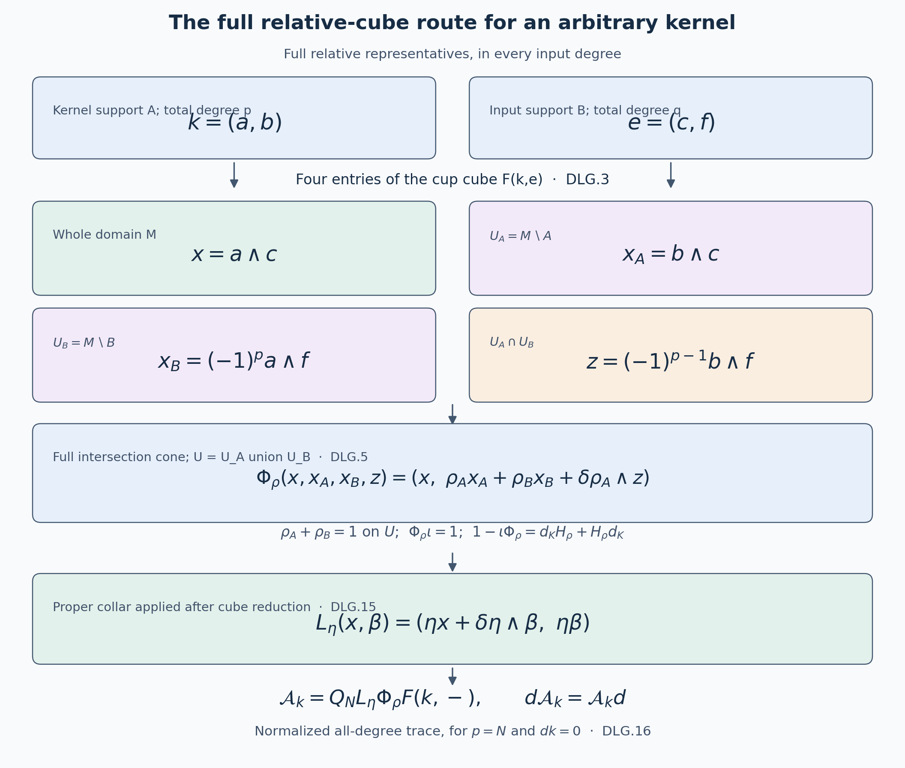
Figure DLG.1. This is the exact two-support cochain diagram. Every displayed cube entry is (DLG.3); the map to the full intersection cone, including its derivative term, is (DLG.5). The proper collar is (DLG.15), and the final all-degree trace is (DLG.16). Both complement entries and the double-complement entry are retained. The unit/multiplication and finite-refinement mechanisms are DLG.3 and DLG.5–DLG.7. The complete earlier programme dependencies are §5.34, R.1–R.8, specifically (R.19)–(R.25); §5.35, V.4–V.6, specifically (V.10)–(V.16); §5.37, W.1–W.3, specifically (W.3)–(W.14); and §5.36, U.2, specifically (U.5)–(U.8) for the positive diagonal scalar. The reproducible source and exact formula data retain this diagram.
The figure has a full-resolution PNG, SVG, editable plotting source and exact formula data.


DL.4. Cone topology and exact round domains
Fix \[ \begin{gathered} G=\left\{\begin{gathered} \operatorname{Re}w=-l\le0,\\ |\operatorname{Im}w|\le\epsilon l,\\ |\zeta_j|\le A_jl \end{gathered}\right\},\\ \epsilon,A_j>0,\\ K_G=\\ (1+\epsilon^2+\sum_jA_j^2)^{1/2}. \end{gathered} \tag{DL.11} \] The empty spatial list is allowed. This cone is closed, convex, pointed and has ordinary interior. All its nonzero points have strictly negative real time. Its invariant opens define the \(G\)-topology; \(q_G\) is the identity continuous map from the ordinary topology to it.
At \(x\) the opens \[ \begin{gathered} V_{x,a}=x+a e_t\\ +\operatorname{int}G,\qquad a>0, \end{gathered} \tag{DL.12} \] are a cofinal \(G\)-neighbourhood basis. They contain \(x\) and are \(G\)-open since \(\operatorname{int}G+G\subset\operatorname{int}G\). If \(B(x,r)\subset W\) and \(W+G\subset W\), then \(B(x,r)+G\subset W\); for \(a<r\), (DL.12) is contained in that set.
A bounded round coefficient domain inside any actual coefficient neighbourhood is \[ \begin{gathered} D_R=(R e_t+\operatorname{int}G)\\ \cap(-R e_t-\operatorname{int}G). \end{gathered} \tag{DL.13} \] It contains zero. If \(x,z\in D_R\) and \(v-x,z-v\in G\), the first condition puts \(v\) in the first open cone, and the second puts it in the second. Hence \(D_R\) is round. Its time lies between \(-R,R\) and its transverse norms are at most \(\epsilon R,A_jR\), so it lies in the ball of radius \(K_GR\). Ordinary Euclidean balls are not assumed round for this cone.
Choose a small \(U\subset B(0,r)\), and \(a>r\), such that \[ \begin{gathered} \overline{\begin{gathered}(U+G)\cap\\ \{\operatorname{Re}t\ge-a\}\end{gathered}}\\ \Subset D. \end{gathered} \tag{DL.14} \] To do so, write \(z=u+g\). Its cone length is at most \(a+r\); thus \(|z|\le r+K_G(a+r)\). Small \(r,a\) put this bound in a ball compactly inside \(D\).
DL.5. The required global analytic concentration input
Every domain (DL.12), and its intersection with a strict negative-time halfspace, has an explicit smooth strict plurisubharmonic exhaustion. Translate its vertex to zero, put \(l=-\operatorname{Re}t\), \(Y_0=\operatorname{Im}t\), \(Y_j=(\operatorname{Re}x_j,\operatorname{Im}x_j)\), \(a_0=\epsilon,a_j=A_j\), and set \[ \begin{gathered} B_j=a_j^2l^2-|Y_j|^2,\\ \psi(z)=|z|^2-\sum_{j=0}^{d}\log B_j . \end{gathered} \tag{DL.15} \] The function \(-\log(L^2-|Y|^2)\) is real convex on \(L>|Y|\). Rotate \(Y\) into its first axis. At a fixed point \((L_*,Y_*)\), the invertible real linear change \[ \begin{gathered} (L,Y_1)\mapsto\\ \left(\begin{gathered} L_*L-|Y_*|Y_1,\\ -|Y_*|L+L_*Y_1 \end{gathered}\right)\\ /\sqrt{L_*^2-|Y_*|^2} \end{gathered} \tag{DL.16} \] preserves \(L^2-|Y|^2\) and sends that point to \((\sqrt{L_*^2-|Y_*|^2},0)\). Its Hessian there is \(2/(L_*^2-|Y_*|^2)\) times the identity, by two differentiations. Pullback preserves positive definiteness. Scaling \(L=a_jl\) proves that each logarithmic term in (DL.15) has nonnegative real Hessian in all its variables. The Levi form is one quarter the sum of the real Hessian in a direction and its \(i\)-multiple. The term \(|z|^2\) makes the total strictly plurisubharmonic.
This function is an exhaustion: the quadratic dominates logarithms at infinity since \(B_j\le C(1+|z|)^2\); on bounded sets a boundary face forces one \(B_j\) to zero and the others have bounded logarithms. Its sublevels are compact in the domain, and it is bounded below. Intersecting with \(\omega=\{\operatorname{Re}t<c\}\) adds \(-\log(c-\operatorname{Re}t)\), a real convex term, and gives the same properties.
The analytic appendix proves that a domain with such an exhaustion has a locally \(L^2\) primitive for every closed locally \(L^2\) form of positive degree, with no growth assumption. The locally \(L^2\) Dolbeault sheaves form an exact resolution: local existence follows by that proof on balls and degree zero by R.3 distributional holomorphicity. They are ordinary \(C^\infty\)-modules (both coefficients and differential remain locally \(L^2\) under smooth multiplication), and are ordinary-section acyclic by R.5. The R.6 double-complex comparison therefore gives \[ \begin{gathered} H^q(V_{x,a},\mathcal O)=\\ H^q(V_{x,a}\cap\omega,\mathcal O)=0\\ \quad(q>0). \end{gathered} \tag{DL.17} \] No global smoothness of the weak primitive is required.
Push an ordinary injective resolution of \(\mathcal O_\Omega\) under \(q_G\). It remains injective, since \(q_G^{-1}\) is exact and left adjoint to \(q_{G*}\). Its higher stalk cohomology is the filtered colimit of (DL.17) over the cofinal basis (DL.12). Hence \[ \begin{gathered} Rq_{G*}\mathcal O_\Omega=q_{G*}\mathcal O_\Omega\\ \quad\hbox{in degree zero}. \end{gathered} \tag{DL.18} \] This is the needed cone-topology assertion, not a consequence of ordinary local Dolbeault exactness alone. The actual smooth/current comparison also passes to this topology. Each ordinary smooth or current term is section-acyclic on every ordinary open by R.5; its positive \(q_G\)-direct images vanish on stalks, and its \(G\)-open section cohomology vanishes as well. For the latter assertion, push its ordinary injective resolution, then take sections on a \(G\)-open: those sections are literally the ordinary section complex on the same open, and the positive direct-image vanishings identify its augmentation. The finite-diagonal injective comparison is R.6. The same argument on the \(G\)-open complement gives the open-direct-image acyclicity of each term. Thus the \(q_G\)-images of the actual smooth/current relative cones represent the cone-topology derived supports, with the same R/V cube maps. This uses ordinary acyclicity, not a smooth partition subordinate to the cone topology.
DL.6. The genuine auxiliary module sheaf
Let \(\Omega_0\subset\Omega_1\) be \(G\)-open, with \(S=\Omega_1\setminus\Omega_0\) relatively compact in \(U\) from (DL.14). Intersect both opens with \(U+G\); this leaves \(S\) unchanged and the supported object unchanged by open excision. Put \(\Omega=\Omega_1\subset U+G\), \(\omega=\{\operatorname{Re}t<-a\}\), and \[ \begin{gathered} S_*=\Omega\setminus\omega,\\ \mathcal F=H^1_{S_*}(q_{G*}\mathcal O_\Omega). \end{gathered} \tag{DL.19} \] Both supports are closed in \(\Omega_G\), \(S\subset S_*\), and (DL.14) puts the closure of \(S_*\) compactly inside the coefficient domain.
The full auxiliary object is concentrated in degree one: \[ \begin{gathered} R\Gamma_{S_*}(q_{G*}\mathcal O_\Omega)\\ \simeq\mathcal F[-1],\\ \mathcal F_x=\underset{b}{\operatorname{colim}}\,\\ \mathcal O(V_{x,b}\cap\omega)/\mathcal O(V_{x,b}). \end{gathered} \tag{DL.20} \] Indeed both opens in the relative long exact sequence have vanishing positive cohomology by (DL.17). Their holomorphic restriction is injective: \(V_{x,b}\) is connected and its intersection with \(\omega\) is nonempty by downward real-time translation. A holomorphic function zero on a nonempty open in a connected domain is zero by its convergent Taylor series and continuation along overlapping balls. Thus supported cohomology vanishes also in degree zero, and only degree one remains. Filtered colimits prove this on every \(G\)-stalk. This uses no fixed-domain vanishing on arbitrary \(\Omega_i\).
The whole-kernel operation DLG.1–DLG.6, extending the supported-current special case DL.1–DL.3, makes \(\mathcal F\) a genuine sheaf of left \(R=E(G;D)\)-modules. Over a basis domain the kernel intersection with the input support is proper: input points lie in \(x+G\), have real time at least \(-a\), and obey the cone length bound. For a compact output family \(K\subset\Omega\), the bounded relevant portion of \(K+G\) is closed and compact inside \(\Omega\), since \(\Omega+G\subset\Omega\). It is inside the coefficient domain by (DL.14). R/W proper excision therefore supplies the action. Ordinary excision through \(D\) is used here, since the auxiliary support lies inside \(D\); it is not claimed that \(D\) itself is \(G\)-open. On the actual \(q_G\)-relative models, compute the operation over \(V\cap D\), apply an output collar equal to one near \(\overline{S_*}\) and compactly supported in \(D\), and use controlled zero extension to obtain the roof over the full \(V\). That collar restricts to every \(V\), and DLG.4–DLG.6 proves its comparison with the identity, retaining the complete kernel complement. Restriction to a \(G\)-open smaller output is compatible because it is invariant under the input motion by \(G\); (DL.7) compares input collar choices. Multiplication and the unit are identities on the cohomology sheaf by DLG.5, and hence are strict identities of sheaf maps. Outside \(S_*\) the sheaf is zero. The action is consequently defined on all of \(\Omega_G\).
For completeness an actual injective module resolution can be constructed as follows. For a left \(R\)-module \(M\), \(J(M)=\operatorname{Hom}_{\mathbf C}(R,M)\), with \((r\phi)(s)=\phi(sr)\), is injective because \(\operatorname{Hom}_R(A,J(M))=\operatorname{Hom}_{\mathbf C}(A,M)\) and vector-space exact sequences split. The natural injection is \(m\mapsto(s\mapsto sm)\). Apply \(J\) to each stalk and take the product of point pushforwards. The exact stalk functor has point pushforward as right adjoint, so those sheaves are injective; products are injective because their Hom is a product of exact vector sequences. The natural injection, iterated on the cokernel, gives a bounded-below resolution \(J_R^\bullet(\mathcal F)\). This works in the cone topology as well.
An injective \(R\)-module sheaf is injective after forgetting to vector sheaves: its left-adjoint induction \(R\otimes_{\mathbf C}-\) is exact on stalks. Thus \[ \begin{gathered} \mathcal Q_R=\Gamma_SJ_R^\bullet(\mathcal F)[-1]\\ \in D(R\text{-Mod}(\Omega_G)) \end{gathered} \tag{DL.21} \] has underlying complex-derived object \(R\Gamma_S(q_{G*}\mathcal O_\Omega)\). To verify this comparison, a closed support functor \(\Gamma_T=i_*i^!\) preserves injectives: the respective left adjoints of \(i^!\) and \(i_*\) are \(i_*\) and \(i^{-1}\), both exact on stalks. The identity \(\Gamma_S\Gamma_{S_*}I=\Gamma_SI\) on injectives is literal, since \(S\subset S_*\). Therefore \[ \begin{gathered} R\Gamma_S(\mathcal F)[-1]\\ \simeq R\Gamma_S R\Gamma_{S_*}\\ (q_{G*}\mathcal O_\Omega)\\ =R\Gamma_S(q_{G*}\mathcal O_\Omega). \end{gathered} \tag{DL.22} \]
There is an actual chain roof for the concentration comparison. For \(C^\bullet=\Gamma_{S_*}q_{G*}I^\bullet(\mathcal O_\Omega)\), the good truncation has \(C^0\), \(\ker(C^1\to C^2)\), and zero above. Its inclusion into \(C^\bullet\) and its degree-one projection to \(\mathcal F[-1]\) are quasi-isomorphisms by (DL.20). Apply the natural exact injective resolution functors R.5–R.6 to this roof and totalize. Their finite-diagonal elimination gives the injective comparison; R.18a makes a quasi-isomorphism between bounded-below injective complexes a homotopy equivalence. Applying \(\Gamma_S\) preserves those homotopies. This proves the actual roof underlying (DL.22), to which the smooth/current/cube/proper-trace model maps by R.6–R.7. The resolution functors use products of stalk pushforwards and are valid on any topological space; no smooth partition in the cone topology is asserted.
The comparison also identifies the all-degree canonical operation, not only the action on an auxiliary degree-one stalk. Fix \(r\in R\) and use its full relative representative and the common kernel cup, finite cube, excision collar and proper trace roof of DLG.1–DLG.6 for the two supports \(S\subset S_*\). The support-to-image condition for \(S\) is explicit: if an output \(x\) lies in the \(G\)-open \(\Omega_0\), every kernel-supported input \(y\in x+G\) lies in \(\Omega_0\); hence \(p_1(A_G\cap p_2^{-1}S)\subset S\). The analogous condition for \(S_*\) follows because \(\omega\) is \(G\)-open. The kernel operation on the auxiliary relative object therefore commutes with restriction to \(\Omega_0\) using that same roof. Its operation on the cone of that restriction is the full relative map DLG.3–DLG.4, with DL.4's trace sign; DL.2 is its supported-current special case. The finite cube with the kernel support, \(S_*\) and \(S\) realizes this iterated cone; V.16 and its augmentation give the same cup as the original support \(S\), since \(S\subset S_*\). On injectives this reduction is the literal identity \(\Gamma_S\Gamma_{S_*}I=\Gamma_SI\). The proper collar remains available after restricting the intersection: use controlled extension by zero on a common neighbourhood of \(A_G\cap p_2^{-1}S_*\), and DL.7 for a smaller chosen collar, rather than assuming arbitrary source restriction preserves properness. Consequently the underlying map of \(R\Gamma_S(r:\mathcal F\to\mathcal F)[-1]\) agrees with DLG.16's original full-relative canonical kernel action on \(R\Gamma_S(q_{G*}\mathcal O_\Omega)\) in every degree. The concentration roof commutes with the auxiliary operation: after shifting, its object is a single sheaf, and a degree-zero morphism between sheaves in the vector-derived category is an ordinary sheaf map. To see the last fact directly, resolve the target in nonnegative injective degrees; a degree-zero map from the source sheaf lands exactly in its degree-zero kernel, and no degree-minus-one homotopy can alter it. Hence the morphism is uniquely the map on \(H^1=\mathcal F\). This proves the action compatibility, rather than merely a vector-derived quasi-isomorphism.
There is a convenient common choice of the actual module complex. The exact vector-sheaf injective functors \(I_{\mathbf C}^r\) of R.5–R.6 are additive and natural in all vector-sheaf maps. A strict \(R\)-action on \(\mathcal F\) therefore gives a strict \(R\)-action on \(I_{\mathbf C}^\bullet(\mathcal F)\), with natural \(R\)-linear augmentation and differential. Each term is \(\Gamma_S\)-acyclic as an \(R\)-module sheaf: use an \(R\)-injective resolution and forget it to a vector-injective resolution; its positive support cohomology vanishes because that term is vector-injective. The bounded-below acyclic-resolution comparison, by finite-diagonal elimination, shows that \(\Gamma_S I_{\mathbf C}^\bullet(\mathcal F)[-1]\) is another actual model for (DL.21). This common vector functor makes the strict maps compatible even under a ring homomorphism, since it acts on the underlying module maps without changing the functor when the ring changes.
Taking derived global sections of (DL.21) gives an object of \(D(R\text{-Mod})\). Its underlying global supported cohomology agrees with the ordinary one: \(q_{G*}I^\bullet\) is injective by (DL.18), and its global sections with support \(S=\Omega\setminus\Omega_0\) are literally the ordinary sections of \(I^\bullet\) vanishing on \(\Omega_0\). This proves the ordinary/cone global comparison directly.
DL.7. Choice independence and finite actual \(E\)-germs
For two auxiliary halfspaces with ordered levels, \(\omega_1\subset\omega_2\) gives \(S_{*,2}\subset S_{*,1}\) and the canonical support-forgetting map \[ \mathcal F_2\longrightarrow\mathcal F_1 . \tag{DL.23} \] It is \(R\)-linear by the naturality of cup, controlled excision and trace. After \(R\Gamma_S\), it is a quasi-isomorphism: both comparisons (DL.22) become the identical \(\Gamma_SI^\bullet\), and this map is the identity there. Module quasi-isomorphisms are detected on vector sheaves. Intersecting auxiliary halfspaces gives a common comparison for any two choices. Functorial module resolutions realize these maps on complexes.
Two neighbourhood choices are compared on their common \(G\)-open neighbourhood of \(S\), then by open excision. The auxiliary restriction and support maps are \(R\)-linear by the same canonical roof. Outside \(S\), the relative complex is a cone of the identity, contracted by \((a,b)\mapsto(b,0)\); extension by zero therefore gives the excision quasi-isomorphism on stalks, and injective comparison gives its derived map. This proves independence in the module-derived category with its specified underlying comparison.
For changing coefficient domains and cones, only actual finite common refinements are claimed. The input opens must remain open for the enlarged cone; an arbitrary \(G\)-open set is not assumed open for every larger cone. The directional \(\Omega_g\) family permits cofinal choices for each finite symbol family by the \(LM<1\) bound of §5.42, CA.1. A finite list of actual symbol entries, products, inverses and zero identities is represented on one actual domain and cone. By §5.41, CP.32/CP.38–CP.44 and NL.25/NL.35/NL.37, their canonical kernel identities hold at one common later index of the filtered kernel-germ colimit. Choosing a smaller round diamond there realizes the whole finite diagram in one constant ring \(R\).
For a common cone refinement \(G\subset G'\), suppose the input opens and halfspace are \(G'\)-open as required. The identity \(q:\Omega_G\to\Omega_{G'}\) is continuous. On the ordinary injective resolution the equality \(q_*q_{G*}I=q_{G'*}I\) is literal, and \(\Gamma_{S_*}\) commutes with that direct image because the complement \(\omega\) is \(G'\)-open. All these direct images preserve injectives. Equation DL.18 for both cones and the auxiliary concentration give \(Rq_*\mathcal F_G=\mathcal F_{G'}\), in degree zero; the comparison on \(H^1\) is canonical. The cohomological cup/trace maps and support enlargement commute with it by the common finite cube and proper excision. Applying the common vector-injective functor above to the comparison roofs gives compatible module-derived maps. Successive refinements agree as derived maps because they come from the identical ordinary injective resolution and compose literally there. Halfspace changes are the strict maps DL.23. Together these prove the finite-diagram germ compatibility, rather than merely saying that choices are harmless.
This is the precise finite-diagram meaning of arbitrary full \(E\)-valued contraction transfer. It does not assert that every symbol germ has a representative on one preassigned domain, or an action on an input whose cone-open hypothesis fails. The canonical product and normal-localization proofs in §§5.39 and 5.41 supply the actual finite-order symbol map into the canonical kernel ring for every such finite diagram. DLG.1–DLG.7 proves the action of the whole canonical ring without assuming that this symbol map is surjective. The local derived objects are actual \(E(G;D)\)-module objects in the conventions of Micro-hyperbolic systems, §3.2.5; a new literal action of every stalk germ on one fixed preassigned coefficient domain is not the statement.
DL.8. Actual off-support contractions and their total signs
A bounded exact cochain complex \(P^\bullet\) of finite projectives over a ring has an actual linear contraction. Start at its highest nonzero degree \(b\): exactness makes \(P^{b-1}\to P^b\) surjective, and projectivity splits it. Its kernel is a direct summand of \(P^{b-1}\), hence projective. Descend finitely. The decompositions give \[ \begin{gathered} P^i=Z^i\oplus s^iZ^{i+1},\\ h^i(z+s^iw)=s^{i-1}z,\\ d_Ph+hd_P=1 . \end{gathered} \tag{DL.24} \] For finite free terms these are finite matrices of actual ring germs. Their finitely many identities hold on a common neighbourhood and in one canonical ring \(R\) by the finite symbol-germ map of §5.41 and the whole-kernel refinement proof DLG.7. This transfers an arbitrary full \(E\)-valued contraction, including entries outside a polynomial subring.
Use the actual module complex \(\mathcal Q_R\) from (DL.21). For a right-module \(P\), its tensor total differential and contraction are \[ \begin{gathered} d(p\otimes c)=d_Pp\otimes c\\ +(-1)^i p\otimes d_Qc\\ \quad(p\in P^i),\\ H=h\otimes1,\\ dH+Hd=1 . \end{gathered} \tag{DL.25} \] The mixed signs are \((-1)^{i-1}+(-1)^i=0\). For a left-module \(P\), the internal Hom formula on degree \(k\) is \[ \begin{gathered} d\phi=d_Q\phi-(-1)^k\phi d_P,\\ H\phi=(-1)^k\phi h,\\ dH+Hd=1 . \end{gathered} \tag{DL.26} \] The terms \(d_Q\phi h\) cancel with signs \((-1)^k+(-1)^{k+1}\); the others give \(\phi(hd_P+d_Ph)=\phi\). All sums are finite in the \(P\) direction even when \(Q\) is unbounded above.
A bounded finite-projective complex computes derived Hom into \(Q\): each \(\operatorname{Hom}(P^i,-)\) preserves exactness, and a finite column elimination proves the total complex of an acyclic target is acyclic. Tensor has the analogous finite filtration proof. For projective summands, restrict these formulas using the corresponding split idempotents of finite free terms. Thus these are actual contractions of the derived models, without any general flatness or extension-faithfulness premise.
DL.9. The invalid shortcut and the scope retained
The need for the module lift has an exact elementary illustration. Let \(C^0=C^1=\mathbf C^2\), \(d_C=1\), and let two chain maps have both components \[ \begin{gathered} A=\begin{pmatrix}0&1\\0&0\end{pmatrix},\\ B=\begin{pmatrix}0&0\\1&0\end{pmatrix},\\ AB-BA=\operatorname{diag}(1,-1). \end{gathered} \tag{DL.27} \] The complex is contractible, so its endomorphism ring in \(D(\mathbf C)\) is zero and all ring relations hold there. But substituting these chosen lifts into the commutative Koszul differentials \((-y,x)^T\), \((x,y)\) gives the nonzero composition \(-AB+BA\). A naive total differential does not square to zero. This disproves that inference from derived endomorphisms to a strict total action; it does not claim that replacement is impossible. DL.19–DL.22 construct the needed replacement here.
The statement proved here is the genuine all-degree canonical \(R\)-module-derived supported object for the full thick cone and round/support geometry stated above, with its cup/cube/excision/trace comparison, all signs, analytic concentration and arbitrary finite-projective contraction transfer. §5.41, CP.1–CP.6 and §5.39, NL.1–NL.7 supply its full actual \(E\)-symbol-germ finite realizations.
Infinite-order extension/flatness, extension-faithfulness, propagation, module separation, finite D-type embeddings, finite-pole recovery, intrinsic-order comparison, full C1, and arbitrary analytic proper-image regularity remain unfinished. The broader geometric representation-theoretic, affine, critical and factorization arguments are separate from this result.
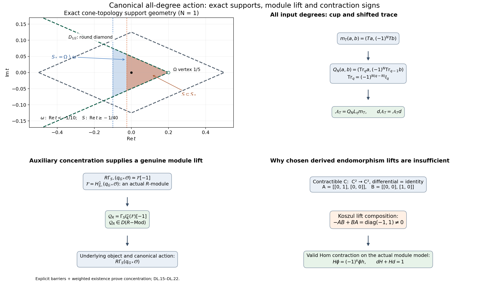
Figure DL.1. The upper-left panel is the exact \(N=1\) complex-time section with \(\epsilon=1/4\), round diamond \(D_{1/2}\), \(\Omega=1/5+\operatorname{int}G\), \(\omega=\{\operatorname{Re}t<-1/10\}\), and \(S=\Omega\cap\{\operatorname{Re}t\ge-1/40\}\). Dashed diamond and green cone edges are excluded boundaries; the hollow green vertex is excluded. The shaded polygons display the closures of \(S_*\) and \(S\); their green edges remain excluded, while their vertical time boundaries are included inside \(\Omega\). These exact domains satisfy \(S\subset S_*\) and \(\overline{S_*}\subset D_{1/2}\) directly; no choice by the sufficient crude ball estimate is depicted. The cup/trace signs are DL.2, DL.4 and DL.9. The genuine auxiliary lift is DL.19–DL.22. The matrices and nonzero Koszul composition are exactly DL.27; the valid Hom contraction is DL.26. The figure source and exact coordinate data reproduce this section. Human comparison: Micro-hyperbolic systems, §§3.1–3.2.5 and HolIII, IV.3–IV.4; the complete proof is DL.1–DL.8 and the analytic appendix.
The analytic input for DL.5
The following proof shows that on a domain with a smooth strict plurisubharmonic exhaustion every closed locally \(L^2\) form of positive degree has a locally \(L^2\) \(\bar\partial\) primitive. It supplies the global vanishing needed on the exact cone-topology basis domains. No boundary-growth or boundary-regularity hypothesis is imposed.
DLH.1. Hilbert existence
A closed Hilbert subspace has an orthogonal projection: a distance-minimizing sequence is Cauchy by the parallelogram identity applied to its midpoints, completeness gives a minimizer, and variation by real and imaginary multiples shows its residual is orthogonal. A bounded linear functional is represented by inner product with a vector: its closed kernel has one-dimensional orthogonal complement when the functional is nonzero, and scaling any vector in that complement gives the representative and its norm. The zero functional uses zero.
The \(L^2\) spaces here are complete. From a Cauchy sequence select a subsequence with summable successive \(L^2\) distances. The sums of absolute successive differences have bounded \(L^2\) norm by the triangle inequality; monotone convergence shows their pointwise limit is in \(L^2\). The subsequence therefore converges almost everywhere and in \(L^2\), and so does the original sequence. Multiplication by the square root of a positive weight gives weighted completeness.
Let \(T: H_1\dashrightarrow H_2\), \(S: H_2\dashrightarrow H_3\) be densely defined, with \(\ker S\) closed, \(ST=0\), and \[ \begin{gathered} \|T^*f\|^2+\|Sf\|^2\ge\|f\|^2\\ \quad(f\in\operatorname{Dom}T^*\\ \cap\operatorname{Dom}S). \end{gathered} \tag{DLH.1} \] For \(g\in\ker S\), take \(f\in\operatorname{Dom}T^*\) and decompose \(f=f_1+f_2\) orthogonally to \(\ker S\). Since \(\operatorname{im}T\subset\ker S\), \(T^*f_2=0\); hence \(f_1\) is in the same adjoint domain and \(T^*f_1=T^*f\). Applying (DLH.1) to \(f_1\) gives \[ |\langle g,f\rangle|\le\|g\|\|T^*f\|. \tag{DLH.2} \] Extend the bounded functional \(T^*f\mapsto\langle f,g\rangle\) to the closure of its image, and by zero to its orthogonal complement. Hilbert representation gives \(u\), \(\|u\|\le\|g\|\), with \(\langle u,T^*f\rangle=\langle g,f\rangle\). On tests this is the required weak equation.
DLH.2. Weights and the actual graph domain
Take compact exhaustion sets \(K_\nu\subset\operatorname{int}K_{\nu+1}\) and smooth cutoffs \(\eta_\nu=1\) near \(K_\nu\), supported in \(\operatorname{int}K_{\nu+1}\). Their derivative supports leave every compact; their supremum squared derivative norm is locally bounded. An ordinary locally finite smooth partition gives a smooth majorant \(\psi\) with \[ |\bar\partial\eta_\nu|^2\le e^\psi . \tag{DLH.3} \] The majorant is obtained by summing constants bounding the locally bounded function on each relatively compact partition support. This needs local finiteness, not a claim that consecutive closed exhaustion shells are disjoint. Ordinary cutoffs and partitions are the constructions proved in R.5/E.2.
Set \(\varphi_1=\varphi-2\psi\), \(\varphi_2=\varphi-\psi\), \(\varphi_3=\varphi\). Use maximal distributional \(\bar\partial\) from weighted \(L^2\) degree \(q-1\) to \(q\) as \(T\), and degree \(q\) to \(q+1\) as \(S\). Their domains are dense because compact tests are dense by exhaustion and convolution. The kernel of \(S\) is closed since convergence implies distributional convergence on compacts. Also \(ST=0\).
Let the domain have complex dimension \(n\). For a degree-\(q\) form \(f=\sum'_{|J|=q}f_J\,d\bar z_J\), extend the coefficients alternatingly to all ordered indices. Then \(f_{jK}\) is the coefficient of the contraction by the \(j\)-th basis vector, and \(\sum'_K\sum_j|f_{jK}|^2=q\sum'_J|f_J|^2\). For compact smooth \(u\) of degree \(q-1\) and \(f\) of degree \(q\), the actual coefficient calculation is \[ \begin{gathered} \langle\bar\partial u,f\rangle_{\varphi_2}\\ =\sum_K'\sum_j\int\\ \partial_{\bar z_j}u_K\,\overline{f_{jK}}\,e^{-\varphi_2}\\ =\sum_K'\int u_K\,\\ \overline{\begin{gathered}-\sum_j e^{\varphi_1}\\ \partial_{z_j}(e^{-\varphi_2}f_{jK})\end{gathered}}\\ \,e^{-\varphi_1}. \end{gathered} \tag{DLH.4a} \] The second equality is ordinary compact integration by parts in each coordinate. Thus the adjoint expression is \[ \begin{gathered} T^*f=-\sum_K'\sum_j\\ e^{\varphi_1}\partial_{z_j}(e^{-\varphi_2}f_{jK})\,d\bar z_K\\ =:\vartheta f . \end{gathered} \tag{DLH.4} \] It holds on tests and distributionally on the adjoint domain; the expansion is (DLH.4a).
Compact tests are dense in \(\operatorname{Dom}T^*\cap\operatorname{Dom}S\) for its graph norm. First multiply by \(\eta_\nu\). The \(S\)-error is \(\bar\partial\eta_\nu\wedge f\), with squared norm bounded by \(\int_{\Omega\setminus K_\nu}|f|^2e^{-\varphi_2}\). Testing \(T(\eta_\nu u)\) proves the product remains in the adjoint domain with error \(-e^{-\psi}\sum_{K,j}(\partial_{z_j}\eta_\nu)f_{jK}d\bar z_K\). Its squared \(\varphi_1\)-norm is at most \(q\) times that same tail integral, since \(\sum_{K,j}|f_{jK}|^2=q|f|^2\). Both errors vanish.
Then mollify the compact form. Weights are equivalent to constants on its fixed compact. For a smooth first-order operator \(a\partial_{x_j}\), its mollification commutator is \[ \begin{gathered} \int\left[\begin{gathered} \frac{\begin{gathered}a(x)\\-a(x-\varepsilon y)\end{gathered}}{\varepsilon}\partial_j\rho(y)\\ +\partial_ja(x-\varepsilon y)\rho(y) \end{gathered}\right]\\ f(x-\varepsilon y)\,dy . \end{gathered} \tag{DLH.5} \] The mean value bound gives a uniform \(L^2\) operator bound using \(\int(|y||\partial_j\rho|+|\rho|)\). For smooth compact \(f\) the commutator tends to zero directly; approximate a compact \(L^2\) coefficient by smooth ones to conclude. Zero-order terms follow from ordinary mollification convergence. Applying this to \(\vartheta\) and to constant-coefficient \(\bar\partial\) proves graph density. No identification of an adjoint domain with a formal maximal domain is made.
DLH.3. The a priori estimate
Write \(\delta_j=\partial_{z_j}-\varphi_{z_j}\). We derive the complete weighted identity on compact forms. Let \(e_j\) mean exterior multiplication by \(d\bar z_j\), and let \(i_j=e_j^*\) be its contraction for the pointwise Euclidean form inner product. On an increasing basis wedge, \(i_je_k+e_ki_j=\delta_{jk}\): when \(j=k\), exactly one of the two terms returns the wedge, according as the index is present or absent; when \(j\ne k\), their insertion/removal permutations have opposite signs. Put \(A_j=\partial_{\bar z_j}f\). Expanding \(\|\sum_j e_jA_j\|^2\) and substituting this relation gives \[ \begin{gathered} |\bar\partial f|^2\\ =\sum_j|A_j|^2\\ -\sum_{j,k}\langle i_kA_j,i_jA_k\rangle\\ =\sum_J'\sum_j|\partial_{\bar z_j}f_J|^2\\ -\sum_K'\sum_{j,k}\\ \partial_{\bar z_j}f_{kK}\,\\ \overline{\partial_{\bar z_k}f_{jK}}. \end{gathered} \tag{DLH.6a} \] The formula includes repeated-index cancellations and every cross term. In the weighted inner product, compact integration by parts says that the adjoint of \(\partial_{\bar z_k}\) is \(-\delta_k\). Since \(\delta_k\partial_{\bar z_j}-\partial_{\bar z_j}\delta_k=\varphi_{k\bar j}\), two integrations by parts give, for each \(K,j,k\), \[ \begin{gathered} \int \partial_{\bar z_k}f_{jK}\,\\ \overline{\partial_{\bar z_j}f_{kK}}\,e^{-\varphi}\\ =-\int f_{jK}\,\\ \overline{\begin{gathered}\partial_{\bar z_j}(\delta_k f_{kK})\\ +\varphi_{k\bar j}f_{kK}\end{gathered}}\,e^{-\varphi}\\ =\int \delta_jf_{jK}\,\\ \overline{\delta_kf_{kK}}\,e^{-\varphi}\\ -\int\varphi_{j\bar k}f_{jK}\overline{f_{kK}}\,e^{-\varphi}. \end{gathered} \tag{DLH.6b} \] Here \(\overline{\varphi_{k\bar j}}=\varphi_{j\bar k}\) because \(\varphi\) is real. The sum of the left side is the cross sum in (DLH.6a), after exchanging the names \(j,k\). Substitution into its integral gives \[ \begin{gathered} \sum_K'\int\left|\sum_j\delta_jf_{jK}\right|^2e^{-\varphi}\\ +\int|\bar\partial f|^2e^{-\varphi}\\ =\sum_J'\sum_j\int\\ |\partial_{\bar z_j}f_J|^2e^{-\varphi}\\ +\sum_K'\sum_{j,k}\int\\ \varphi_{j\bar k}f_{jK}\overline{f_{kK}}e^{-\varphi}. \end{gathered} \tag{DLH.6} \] The only commutator is \(\delta_k\partial_{\bar z_j}-\partial_{\bar z_j}\delta_k =\varphi_{k\bar j}\). Equations (DLH.6a)–(DLH.6b) give the alternating expansion and both integrations explicitly.
Since \(\vartheta_\varphi f=e^\psi T^*f+\sum_{K,j}\psi_{z_j}f_{jK}d\bar z_K\), Cauchy–Schwarz bounds its squared norm by \(2\|T^*f\|_{\varphi_1}^2+ 2q\int|\partial\psi|^2|f|^2e^{-\varphi}\). The last term of (DLH.6) is at least \(q\int\lambda_\varphi|f|^2e^{-\varphi}\). If \[ \lambda_\varphi\ge2|\partial\psi|^2+2e^\psi, \tag{DLH.7} \] then \(2\|T^*f\|^2+\|Sf\|^2\ge2q\|f\|_{\varphi_2}^2\), which implies (DLH.1), as \(q\ge1\). Graph density extends this to the actual domains. DLH.1 gives \[ \begin{gathered} \bar\partial u=g,\\ \int|u|^2e^{-\varphi+2\psi}\\ \le\int|g|^2e^{-\varphi+\psi}. \end{gathered} \tag{DLH.8} \]
DLH.4. Weights for unrestricted local data
Let \(\psi_0\) be the smooth strict exhaustion, translated to be nonnegative. On each compact sublevel its minimum Levi eigenvalue \(\mu(t)\) is positive and the maximum \(M(t)\) of \(2|\partial\psi|^2+2e^\psi\) is finite. Choose a smooth increasing convex \(\chi\) whose derivative dominates \(M(t)/\mu(t)\). For example choose increasing constants \(B_k\) dominating the bounds through level \(k+2\), and set \(\chi'(t)=B_0+\sum_{k\ge0}(B_{k+1}-B_k)\sigma(t-k)\) for a fixed increasing smooth step \(\sigma\), zero below zero and one above one. This is locally finite and nondecreasing. Its additive constant and the constants \(B_k\) can be increased as needed. The Hessian chain rule gives \[ \lambda_{\chi\circ\psi_0} \ge\chi'(\psi_0)\lambda_{\psi_0}, \tag{DLH.9} \] so \(\varphi=\chi\circ\psi_0\) satisfies (DLH.7).
For locally \(L^2\) input \(g\), write \(M_k\) for the nonnegative right side of the following inequality, and choose the additive constant at least \(M_1\) and \(B_j\ge M_k\) for every \(k\le j+2\). Then \[ \begin{gathered} \chi(k-1)\ge\\ k+\log\left(\begin{gathered}1+\int_{\{\psi_0\le k\}}\\ |g|^2e^\psi\end{gathered}\right)\\ \quad(k\ge1). \end{gathered} \tag{DLH.10} \] Each integral is finite on that compact. For \(k\ge2\), throughout the unit interval \([k-2,k-1]\), all steps through index \(k-3\) are complete, so \(\chi'\ge B_{k-2}\ge M_k\). Its integral over that interval, with the nonnegative earlier value, proves (DLH.10); the additive constant handles \(k=1\). At every real \(t\in[m,m+1]\), similarly \(\chi'(t)\ge B_m\), which was chosen to dominate the Hessian requirement through level \(m+2\). The construction is therefore explicit and simultaneous. The integral of \(|g|^2e^{-\varphi+\psi}\) over \(k-1\le\psi_0<k\) is at most \(e^{-k}\). Hence the right side of (DLH.8) is finite, while its primitive is locally \(L^2\) because all weights are bounded above and below on compacts.
This proves the global existence used on the exact domains (DL.15). It provides the missing cone-topology concentration input and no broader infinite-order or propagation theorem.
The figure has a full-resolution PNG, SVG, editable plotting source and exact coordinate data.


5.44. Full homogeneous coefficients and ordinary infinite-order kernels
We construct the common-domain full homogeneous coefficient ring, its complete infinite products and derivative tails, and a canonical linear pole/log kernel map. Supplied strict angular data admit an explicit normalization with all overlap and missing-face primitives. The ordinary diagonal infinite-order subring has a canonical residue product and arbitrary ordinary holomorphic coordinate overlaps.
The full geometric identification for arbitrary projectivized microlocal sections and the mixed pole/log canonical product remain separate assertions, denoted IK.G and IK.M. The strict angular hypothesis is retained throughout. The ordinary calculation supplies neither assertion, and no infinite-order module-derived instantiation is made. The two separate geometric assertions are proved in §5.45, IG.1–IG.5 and IM.1–IM.6. The conditional input and ordinary conclusions in this section retain their stated scope.
Free human specifications are Kashiwara–Schapira, Micro-hyperbolic systems, §§1.3 and 3.1, and Kashiwara–Kawai, Holonomic systems III, III.2, printed pp.883–884. The distinct real-conic symbol problem is treated in the freely accessible Aoki–Honda–Yamazaki, Foundation of symbol theory for analytic pseudodifferential operators, I, and Komori, The equivalence of pseudodifferential operators and their symbols via Čech–Dolbeault cohomology. No symbol theorem from these references replaces a proof below.
The earlier full resolutions and controlled excision are §5.34, R.1–R.7; the finite relative cube, normalized trace, tensor signs and normal-line calibration are §5.35, V.1–V.6. Finite-subring calibration uses §5.41, CP.2 and §5.39, NL.11–NL.12 and NL.22–NL.27. Unrestricted locally \(L^2\) existence on domains with smooth strictly plurisubharmonic exhaustions is proved in §5.43, DLH.1–DLH.4. We first verify that this analytic hypothesis holds on every ordinary puncture intersection.
OC.1. Explicit exhaustions on every ordinary puncture intersection
Let \(M=U\times\prod_{i=1}^N\Delta_{R_i}\), with \(U\) an actual bounded base polydisc. Write all its base and normal coordinates as \(z_j\), centered at zero, with respective radii \(R_j\). A translated coordinate has the same argument after subtracting its center. For \(J\subset\{1,\ldots,N\}\), put
\[ \begin{gathered} M_J=\left\{\begin{gathered} (u,w)\in M:\\ w_i\ne0\text{ for }i\in J \end{gathered}\right\}. \end{gathered} \tag{OC.1} \]The empty subset gives \(M\). On \(M_J\) define
\[ \begin{gathered} \psi_J=\\ \sum_j\left(\begin{gathered} |z_j|^2\\ -\log(R_j^2-|z_j|^2) \end{gathered}\right)\\ +\sum_{i\in J}|w_i|^{-2}. \end{gathered} \tag{OC.2} \]This is smooth on exactly the stated domain. In one coordinate direct differentiation gives
\[ \begin{gathered} \partial_z\partial_{\bar z}\bigl[-\log(R^2-|z|^2)\bigr]\\ ={R^2\over(R^2-|z|^2)^2}>0,\\ \partial_w\partial_{\bar w}|w|^{-2}=|w|^{-4}>0. \end{gathered} \tag{OC.3} \]The \(|z_j|^2\) terms contribute the identity Levi matrix. Thus the complete Levi form is positive definite. Every term is bounded below on the bounded product, and approaching any outer coordinate boundary makes its logarithmic term tend to \(+\infty\). Approaching a puncture \(w_i=0\), \(i\in J\), makes \(|w_i|^{-2}\) tend to \(+\infty\). Consequently each sublevel stays a positive distance from every excluded boundary and puncture. It is closed in a bounded ambient product, hence compact there and contained in \(M_J\). This proves a true smooth strictly plurisubharmonic exhaustion on every finite cover intersection, including the whole product.
OC.2. Actual holomorphic cohomology vanishing
Let \(\mathcal L^q\) be the sheaf of forms with locally \(L^2\) coefficients and locally \(L^2\) distributional Dolbeault differential. The differential maps this sheaf into the next term, since its second differential is zero. Multiplication by a smooth function preserves both conditions on compacts by the distributional Leibniz rule. Thus each term is a \(C^\infty\)-module sheaf.
The augmented complex \(0\to\mathcal O\to\mathcal L^0\to\mathcal L^1\to\cdots\) is exact. For local positive-degree closed forms, apply DLH.1–DLH.4 on a small polydisc; OC.2 with an empty puncture set gives its smooth strictly plurisubharmonic exhaustion, with the exact Levi coefficients OC.3. The resulting locally \(L^2\) primitive has differential the given locally \(L^2\) form, so it belongs to \(\mathcal L^{q-1}\). In degree zero, §5.34, R.3's distributional holomorphicity proof identifies the kernel with ordinary holomorphic functions.
Each term is ordinary-section acyclic by §5.34, R.5's complete \(C^\infty\)-module injective-resolution and partition argument. §5.34, R.6's finite double-complex elimination therefore identifies global \(\mathcal L\) cohomology with the actual right-derived holomorphic sections. On \(M_J\), DLH.1–DLH.4 applied to OC.2 provides a global locally \(L^2\) primitive for every positive-degree global closed form. Again that primitive lies in the stated maximal graph sheaf. Hence
\[ \begin{gathered} H^q(M_J,\mathcal O)=0\\ (q>0), \\ H^0(M_J,\mathcal O)=\mathcal O(M_J). \end{gathered} \tag{OC.4} \]The input top-form coefficient line is holomorphically trivial on the local product. Apply the same proof in that frame; it changes no estimate or differential. The ordinary smooth Dolbeault section complexes on these opens have the same cohomology by §5.34, R.6's exact comparison, so their positive-degree closed sections also have actual smooth primitives. No distributional extension at a puncture and no bound on boundary growth has been used.
OC.3. Holomorphic-row reduction of the actual finite support cube
The diagonal is \(\Delta=\{w_1=\cdots=w_N=0\}\), and its complement is covered by \(U_i=\{w_i\ne0\}\). V.15's full cube has, for each subset \(J\), the section column \(\mathcal A^*(M_J)\), with total differential the alternating face restriction plus \((-1)^{|J|}\bar\partial\). R.7 and V.6 identify it with the actual relative supported object, rather than assuming the holomorphic cover is Leray.
OC.4 now proves that the holomorphic column augmentation is a quasi-isomorphism on every one of these finitely many actual opens. Here is the total-complex elimination. In a closed total cochain, begin with its smallest nonzero cube cardinality. Its component in positive Dolbeault degree is vertically closed, because no smaller-cardinality component contributes. Solve its vertical equation on that very \(M_J\), subtract its total boundary with the prescribed vertical sign, and remove it. Only a component of larger cube cardinality can be introduced. There are finitely many subsets and the Dolbeault degree is bounded. Continue until every surviving component has Dolbeault degree zero; its vertical closure makes it holomorphic. This constructs a representative in the holomorphic cube row. For injectivity, apply the same elimination to a boundary primitive whose total boundary has only holomorphic components. Its remaining degree-zero components are holomorphic and provide the boundary in that row. This proves the actual quasi-isomorphism, including boundaries.
It follows that the ordinary degree-\(N\) diagonal class is computed, on these cofinal actual products, by the quotient of holomorphic functions on \(M_{\{1,\ldots,N\}}\) by restrictions from the actual omitted-coordinate faces. The ordered face restriction signs are those of V.15. No row is discarded by a mere fine-sheaf assertion.
OC.4. Laurent representative, all pairings and zero detection
On the full coordinate-punctured product, one-variable Cauchy integrals split a holomorphic function into positive and negative Laurent powers. On a smaller common product, the positive projection in a coordinate uses a fixed outer circle and extends holomorphically through that coordinate's zero. Negative projections in distinct coordinates commute by finite compact integration. The identity
\[ \begin{gathered} f-\Pi_{1,-}\cdots\Pi_{N,-}f\\ =\sum_{i=1}^N\Pi_{1,-}\cdots\Pi_{i-1,-}\Pi_{i,+}f \end{gathered} \tag{OC.5} \]therefore writes the difference as actual omitted-coordinate face functions. Their alternating deletion signs provide literal Čech primitives. The entire fully negative Laurent subseries converges normally on every punctured compact, by iterated Cauchy estimates on smaller inner circles. The domain is chosen before summing any index.
For any multiindex \(\alpha\in\mathbf N^N\), the compact product-torus pairing with \(w^\alpha\) annihilates every omitted face by the one-coordinate Cauchy theorem and selects the fully negative coefficient of \(w^{-\alpha-\mathbf1}\). Thus if all these pairings vanish, every fully negative coefficient vanishes, and OC.5 gives an actual face boundary. Conversely every face boundary has all pairings zero. This proves separation in this completely computed ordinary diagonal local cohomology, for all base parameters on the common product.
Arbitrarily small inner circles give the ordinary every-ε coefficient bounds after dividing the selected coefficient by \(\alpha!\); conversely those bounds give normal convergence of the entire negative subseries. Compact enlargement gives every fixed derivative tail. The canonical meaning and positive scalar of these product-torus pairings are supplied by the full two-support trace construction TC.1–TC.3; the direct Laurent calculation proves their detection without any solution-module faithfulness premise.
Under an ordinary local biholomorphism, the diagonal supported object and the input top-form line transform by their actual pullback. R.1/R.7 and V.4 give the coordinate invariance of this object and its proper trace, including the Jacobian. In the new coordinates OC.1–OC.4 apply on a cofinal local product and detect the transformed class by all its ordinary normal monomial pairings. Thus the transformed class is the class determined by OR.13's actual coefficient pairings, proving the ordinary geometric coordinate correspondence used in OR.4.
This supplement is confined to ordinary coordinate-punctured products and their diagonal local cohomology. It does not produce strict angular data from an arbitrary projectivized microlocal section, prove the mixed pole/log trace, establish support-enlargement injectivity, or infer any matrix-flatness, faithfulness, propagation or wider programme result.
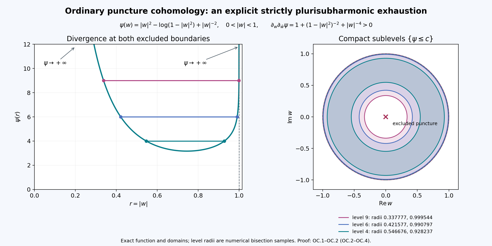
The exact \(N=1\) example of (OC.2), with unit base radii and base coordinates zero, is \(\psi(w)=|w|^2-\log(1-|w|^2)+|w|^{-2}\) on \(0<|w|<1\). Its Levi coefficient is \(1+(1-|w|^2)^{-2}+|w|^{-4}>0\). The left panel shows its divergence at both excluded boundaries; the right shows the compact annular sublevels for \(c=4,6,9\). The displayed level radii are numerical bisection samples. The general product exhaustion and the cohomology proof are OC.1–OC.4. A higher-dimensional slice fixes any additional punctured normal coordinates at nonzero constants and shifts the exhaustion by a constant. The plotting source, exact function and numerical data, full PNG and editable SVG reproduce the illustration. Free human background for the weighted estimate and Hilbert existence method: McNeal–Varolin, L² estimates for the ∂̄ operator, §§1.1 and 3.1. The complete existence proof is §5.43, DLH.1–DLH.4.


IK.1. Common-domain coefficients and exact projective chart restrictions
Fix base coordinates \(u=(t,x_1,\ldots,x_d)\), \(N=d+1\), and a cotangent chart with \(\tau\ne0\), \(z=\xi/\tau\). After an affine linear base change the central normalized covector is \(z=0\). Let \(U\times Z\) be one product of open polydiscs. A coefficient sequence is a collection \(p_j\in\mathcal O(U\times Z)\), \(j\in\mathbf Z\), with, on each compact \(K\Subset U\times Z\),
\[ \begin{gathered} |p_{-n}|_K\le B_K C_K^n n!,\\ |p_j|_K\le B_{K,\varepsilon}\frac{\varepsilon^j}{j!} \\ (j\ge0,\ \varepsilon>0). \end{gathered} \tag{IK.1} \]The same actual product supports every index. There is no upper index bound. Write \(P_j(u;\tau,\xi)=\tau^j p_j(u,\xi/\tau)\); the sequence \(\sum_jP_j\) is notation for these homogeneous coefficients. Its negative part is not an ordinary Laurent sum.
Fixed finite base or \(z\) derivatives preserve (IK.1) on a smaller product: the iterated Cauchy formula costs \(\nu!\rho^{-\lvert\nu\rvert}\) for a fixed multiorder \(\nu\) and positive coordinate margins \(\rho\). This constant is independent of \(j\). Restrictions are literal restrictions of every holomorphic coefficient. Germ equality means equality on a single smaller product, rather than independently at each degree. Local coefficient sequences glue: each coefficient glues holomorphically, and a compact set is covered by finitely many smaller compact coefficient charts; take their largest negative constant and sum their positive constants for each fixed \(\varepsilon\). Thus the class is a sheaf on the chosen base coordinate domain and its normalized projective charts.
For another homogeneous normalization \(\tau'=L(\tau,\xi)\ne0\), with the base coordinates still fixed, the coefficient is
\[ p'_j=(\tau/\tau')^j p_j(u,z). \tag{IK.2} \]On a compact overlap both \(\lvert\tau/\tau'\rvert\) and its inverse are bounded. Multiplying by their \(j\)-th powers replaces \(C\) and rescales the input \(\varepsilon\); the every-\(\varepsilon\) quantifier is preserved. The transition identities are exact because the homogeneous functions \(P_j\) are the same functions. This proves projective covariable chart restrictions in fixed base coordinates. It does not prove nonlinear base-coordinate transformation of the microdifferential symbol or its geometric sheaf identification.
IK.2. One factorial majorant for binary and triple contractions
We first prove the numerical estimate used for all infinite contractions. For \((E,D,L>0)\), \(a=E(D+L)<1\), define
\[ \begin{gathered} S_\ell(E,D,L)\\ =\sum_{\substack{J,M,m\ge0\\J-M-m=\ell}} E^J D^M L^m\frac{M!m!}{J!}. \end{gathered} \tag{IK.3} \]If \(\ell\ge0\), \(J=M+m+\ell\), and
\[ \begin{gathered} \frac{M!m!}{(M+m+\ell)!}\le\frac1{\ell!},\\ S_\ell\le \frac{E^\ell}{\ell!(1-ED)(1-EL)}. \end{gathered} \tag{IK.4} \]The factorial inequality follows because \((M+m+\ell)!/(M!m!\ell!)\) is a positive integer. The last sum is the product of two convergent geometric series.
For \(\ell=-n<0\), put \(q=M+m\ge n\). Since \(M!m!\le q!\),
\[ \begin{gathered} \frac{M!m!}{(q-n)!}\le n!\binom qn, \\ \sum_{M+m=q}D^ML^m\le(D+L)^q. \end{gathered} \]The second inequality is the binomial expansion with its positive integer coefficients removed. Differentiating the geometric series \(n\) times proves
\[ S_{-n}\le n!\frac{(D+L)^n}{(1-a)^{n+1}}. \tag{IK.5} \]All differentiations take place inside its radius of absolute convergence. In particular \(a\le1/2\) gives \(S_{-n}\le2[2(D+L)]^n n!\).
These estimates have literal tails. For \(\ell\ge0\), the part with \(M+m\ge R\) is at most
\[ \frac{E^\ell}{\ell!}\frac{a^R}{1-a}. \tag{IK.6} \]For \(\ell=-n\), \(R\ge n\), the corresponding bound is
\[ \begin{gathered} n! E^{-n}\sum_{q\ge R}\binom qn a^q\\ =E^{-n}a^n\frac{d^n}{da^n}\frac{a^R}{1-a}. \end{gathered} \tag{IK.7} \]The right side tends to zero as \(R\to\infty\): differentiating the displayed rational expression produces a fixed finite sum of terms bounded by a polynomial in \(R\) times \((a^{R-n})\). A cutoff in any one of \((J,M,m)\), or in any component used to form them, is controlled by these tails, because \(J=M+m+\ell\) at fixed output degree. These are actual numerical tails, not a topology on a formal completion.
Here is the reduction from coefficients to (IK.3). Fix a compact smaller base/projective product. Enlarge it slightly, still inside the common coefficient domain. There are uniform base Cauchy margins \(\rho>0\) and a uniform full-covariable polydisc margin \(\delta>0\) around each point \(((1,z))\). Every point of the latter polydisc has \(\tau\ne0\) and \(\xi/\tau\) in the enlarged projective product. On it \(\lvert\tau\rvert^j\le A^{\lvert j\rvert}\), for one \(A\ge1\). Thus the Cauchy bounds for \(P_j\), including a covariable multiorder \(\alpha\), are
\[ \begin{gathered} |\partial_{(\tau,\xi)}^\alpha P_j| \le\alpha!\delta^{-\lvert\alpha\rvert}\\ \begin{cases}B (AC)^{-j}(-j)!,&j<0,\\ B_{\varepsilon}(A\varepsilon)^j/j!,&j\ge0. \end{cases} \end{gathered} \tag{IK.8} \]The analogous base Cauchy estimate costs \(\alpha!\rho^{-\lvert\alpha\rvert}\). For finitely many input operators choose common margins, a largest negative constant, and a common positive \(\varepsilon\); their positive prefactors are then finite. The domains and margins are chosen before any index summation.
For a binary contraction of length \(m=\lvert\alpha\rvert\), the factor left after division by \(\alpha!\) is bounded by \(m!(\delta\rho)^{-m}\). There are at most \((N^m)\) multiorders of length \(m\): words of length \(m\) in \(N\) letters map onto them by taking multiplicities. Absorb that count into \((L^m)\).
For a triple contraction, use multiorders \(a,b,c\in\mathbf N^N\), total length \(m=|a|+|b|+|c|\). The derivatives are
\[ \begin{gathered} \frac{1}{a!b!c!} (\partial_\zeta^{a+b}P_j)\\ (\partial_u^a\partial_\zeta^c Q_k) (\partial_u^{b+c}R_h),\\ \zeta=(\tau,\xi). \end{gathered} \tag{IK.9} \]Cauchy leaves the factorial factor \(((a+b)!(b+c)!/b!)\). Coordinate by coordinate,
\[ (a_i+b_i)!(b_i+c_i)!/b_i!\le(a_i+b_i+c_i)!. \]Indeed the \(a_i\) consecutive factors beginning at \((b_i+1)\) are at most the corresponding factors beginning at \((b_i+c_i+1)\). Multiplying and using the multinomial inequality bounds this factor by \(m!\). Counts of the \((3N)\) derivative components cost at most \(((3N)^m)\), again absorbed into \((L^m)\). Mixed base/covariable Cauchy bounds use the same enlarged product; they introduce no new index-dependent domain.
Group the nonnegative homogeneous input indices into total \(J\), and the absolute values of the negative indices into total \(M\). There are at most three inputs. Products of negative factorials are at most \(M!\). For \(r\ge1\) nonnegative indices their factorial product is at least \((J!/r^J)\), by the multinomial expansion. Counting their possible compositions costs at most another \((r^J)\); counting the at most three negative compositions costs at most \((3^M)\). Enlarge \(E\) to \(9A\varepsilon\), \(D\) to \((3AC)\), and \(L\) to include the derivative counts and margins. The finitely many sign choices cost a constant, at most eight times the product of the input prefactors. Each sign-choice sum is bounded by a subseries of (IK.3). If there are no nonnegative inputs, \(J=0\); the same enlarged positive majorant still bounds that finite-degree subseries. Consequently (IK.4)–(IK.7) apply to every binary and every triple contraction.
The input \(\varepsilon\) is arbitrarily small. To obtain a specified output positive bound \(\eta^\ell/\ell!\), choose \(E\le\eta\) and \(E(D+L)\le1/2\). The output prefactor may depend on \(\eta\). For negative output choose one such fixed \(E\), obtaining one factorial constant from (IK.5). This proves the exact quantifiers of (IK.1) for all output coefficients.
IK.3. The actual coordinate ring, unit, associativity, and derivative tails
Define the product by the full contraction
\[ \begin{gathered} (P\circ Q)_\ell(u,z)=\\ \left.\sum_{j+k-|\alpha|=\ell} \frac{\begin{gathered}\partial_\zeta^\alpha P_j\,\\ \partial_u^\alpha Q_k\end{gathered}}{\alpha!}\right|_{\tau=1,\xi=z}. \end{gathered} \tag{IK.10} \]IK.2 proves absolute normal convergence on every compact of the fixed smaller product, including the infinitely many summands at a fixed \(\ell\). Each summand is holomorphic and homogeneous of degree \(\ell\), so its sum is holomorphic and homogeneous. The output has both exact growth conditions by (IK.4)–(IK.5). IK.6–IK.7 give the actual tails of the grouped full contraction.
Each fixed finite derivative of the tails converges normally as well. Choose, once, a further compact enlargement within the smaller product used for IK.10. Apply (IK.6) or (IK.7) uniformly on that enlargement, and apply the iterated Cauchy integral for the chosen fixed output derivative. Its constant is independent of every summation index and of the cutoff. Thus the differentiated tail is at most that Cauchy constant times the displayed tail. This proves all fixed base and normalized-covariable derivative tails without differentiating a conditionally convergent series.
The unit is the sequence \(P_0=1\), \(P_j=0\) for \(j\ne0\): derivatives of 1 annihilate every nonzero contraction, and the remaining term is the original coefficient. Addition, scalar multiplication, and restrictions are literal, and distributivity follows from absolute convergence. The product is compatible with the fixed-base projective normalizations IK.2 because IK.10 differentiates the same homogeneous functions before making either normalization.
For associativity, expand \((P\circ Q)\circ R\). In the outer covariable derivative \((b+c)\), distribute \(b\) derivatives to \(P\) and \(c\) to \(Q\). The binomial coefficient cancels the outer \(((b+c)!)\), giving exactly IK.9. Expanding \(P\circ(Q\circ R)\) instead distributes its outer base derivative \((a+b)\) between \(Q\) and \(R\), producing the same IK.9, with the same coefficient \((1/(a!b!c!))\). Each term has output degree
\[ \begin{gathered} \ell=j+k+h\\ -|a|-|b|-|c|. \end{gathered} \tag{IK.11} \]The triple estimate of IK.2 proves absolute normal convergence of this entire series and all its fixed output derivatives. Tonelli for the absolute scalar majorant therefore justifies both derivative Leibniz expansions and every regrouping. The two products are equal on the single smaller product. This proves associativity as an identity of actual holomorphic coefficient germs, rather than by formal polynomial continuity.
For any finite diagram of coefficient operators take the intersection of their finitely many actual products and the least of the finitely many margins. Apply this argument to each of the finitely many products appearing in its identities. All coefficients, maps, idempotents, and algebraic identities then live on one smaller product. This statement concerns the actual coordinate ring only; it does not manufacture a geometric ring action or a module-derived lift.
IK.4. The ordinary zero-section diagonal coefficient calculation
This is a separate, complete calculation of the source's ordinary diagonal local cohomology. Let \(v=u+w\) be a normal diagonal coordinate on \(U\times\Delta^N\), with input frame \(dv_1\wedge\cdots\wedge dv_N\). The local cohomology \(\mathcal H^N_\Delta(\Omega^{(0,N)})\) is computed by the finite coordinate puncture cube, using the exact finite relative-Čech augmentation of the earlier programme §5.35, V.6, with the full resolution proof §5.34, R.1–R.7. Those proofs apply to arbitrary holomorphic coefficients and impose no distribution growth condition. OC.1–OC.3 proves positive holomorphic cohomology vanishing on every actual puncture intersection and the finite elimination reducing the full Dolbeault cube to its holomorphic row. OC.4 proves that all normal monomial pairings detect precisely the actual face boundaries. Thus the holomorphic-row calculation below is justified before any coefficient is extracted.
For a holomorphic top-cube function on \((0<|w_i|<r_i)\), iterated Laurent expansion is normally convergent on smaller product annuli. This can be proved directly: integrate on two nested circles for each coordinate, expand the geometric Cauchy denominators, and estimate each resulting positive/negative geometric series on a smaller annulus. Perform the finitely many coordinate integrations successively; all circles are compact and Cauchy kernels are uniformly bounded there. The terms with a nonnegative power in some \(w_i\) extend across \(w_i=0\); they are precisely boundaries from the cube face omitting that coordinate. The fully negative part is unique, since integrating against every normal monomial annihilates all such faces and selects its Laurent coefficient. The splitting is realized by those actual Cauchy integrals, so it is a splitting of representatives and boundaries, not merely an equality of dimensions.
The resulting unique normal expression is
\[ \begin{gathered} K_0(u,w)=\frac1{(2\pi i)^N}\\ \sum_{\alpha\in\mathbf N^N} a_\alpha(u)\frac{\alpha!}{w^{\alpha+\mathbf1}}. \end{gathered} \tag{IK.12} \]On any compact base set, the Cauchy coefficient estimate on a normal product circle of arbitrarily small positive radii \(\rho_i\) gives
\[ |a_\alpha|\le M_\rho\frac{\prod_i\rho_i^{\alpha_i+1}}{\alpha!}. \tag{IK.13} \]Taking all \(\rho_i\le\varepsilon\) proves the ordinary every-\(\varepsilon\) coefficient condition on the same base domain. Conversely that condition makes IK.12 normally convergent on every coordinate-punctured compact: choose \(\varepsilon<\min_i|w_i|\), and sum the product of \(N\) geometric series. The same argument after compact enlargement supplies every fixed derivative tail. Thus the ordinary diagonal geometric sheaf is exactly the ordinary infinite-order coefficient class, including actual germs.
It acts on every holomorphic germ: on a common input polydisc with margins \(\rho_i\ge\rho>0\), Cauchy gives \( |\partial^\alpha f|\le\alpha!\rho^{-|\alpha|}|f|\). Choose \(\varepsilon<\rho\), and sum \(B_\varepsilon|f|(1-\varepsilon/\rho)^{-N}\). Coefficient germs are separated by these actions: apply them to \(e^{\langle u,\lambda\rangle}\). The quotient of the output by this nowhere-zero function is the entire symbol \(\sum_\alpha a_\alpha(u)\lambda^\alpha\); its Taylor coefficients recover every \(a_\alpha\). This is ordinary operator separation, with no claim concerning arbitrary module sections.
Grouping \(a_\alpha\zeta^\alpha\) by total degree gives a subclass of IK.1 whose intrinsic positive coefficient \(P_j(u;\tau,\xi)\) is a homogeneous polynomial of total covariable degree \(j\ge0\), with no negative coefficients. Its normalized polynomial \(p_j(u,z)=P_j(u;1,z)\) has spatial degree at most \(j\), retaining every time-power index \(m=j-|\beta|\ge0\). For example \(P_3=\tau^3+\tau\xi^2\) gives \(p_3=1+z^2\). OR.1–OR.4 retain every \(\alpha=(\alpha_t,\alpha_x)\), and AN.18 includes all \(m+|\beta|=j\). Conversely every such subclass with the IK.1 bounds gives the ordinary class: apply the polynomial Cauchy coefficient estimate on a full unit covariable polydisc after finite homogeneous rescaling; \(j!\ge\alpha!\), and a fixed exponential cost is absorbed by rescaling \(\varepsilon\). In IK.10, covariable differentiation of a polynomial of degree \(j\) vanishes for \(|\alpha|>j\), so no negative output degree occurs. The ring product agrees with the ordinary Leibniz action by the same absolutely convergent Cauchy bounds. This identifies the ordinary ring calculation and its inclusion into the coordinate ring. It does not yet prove that the off-zero geometric \(E^\infty\) sheaf restricts compatibly to that ordinary class across all cotangent neighborhoods; that requires IK.G below.
IK.5. Full spatial-index holomorphic pole/log kernels
Choose one slightly larger normalized polydisc \((|z_i|<R_i)\) within the common coefficient domain. Expand
\[ \begin{gathered} p_j(u,z)=\sum_{\beta\in\mathbf N^d}p_{j\beta}(u)z^\beta, \\ a_{m\beta}=p_{m+|\beta|,\beta}. \end{gathered} \tag{IK.14} \]On a fixed compact base set, the spatial Cauchy coefficient estimate is
\[ \begin{gathered} |p_{-a,\beta}|\le B C^a a! R^{-\beta},\\ |p_{j\beta}|\le B_\varepsilon\varepsilon^j R^{-\beta}/j!, \\ R^{-\beta}=\prod_iR_i^{-\beta_i}. \end{gathered} \tag{IK.15} \]Use \(w=s-t\), \(\zeta_i=y_i-x_i\). Define the cut-plane one-variable functions for integers \(m\ge0\), \(n\ge0\),
\[ \begin{gathered} \Phi_{m+1}(-w)=\frac{m!}{w^{m+1}},\\ \Phi_{-n}(-w)=-\frac{(-w)^n}{n!}\\ (\log w+\gamma-H_n),\\ H_0=0. \end{gathered} \tag{IK.16} \]Here (log w) is principal, cut on the negative real ray. The constant \(\gamma\) can be defined by the convergent sequence \(H_n-\log n\): its successive differences \(1/(n+1)-\log(1+1/n)\) have absolute value at most \((1/n^2)\), by integrating \((1/(1+x))\) on \(([0,1/n])\); hence the sequence is Cauchy. Only its finite constant and the explicitly displayed normalization are used. Differentiation proves \(\partial_T\Phi_\lambda(T)=\Phi_{\lambda+1}(T)\) for these integer indices, including \(n=0\), directly from \(H_n-H_{n-1}=1/n\). This fixes the source's signs and factorials.
The full kernel series is
\[ \begin{gathered} K_P=\frac1{(2\pi i)^N}\\ \left\{\begin{gathered} \sum_{m\ge0,\beta\ge0}p_{m+|\beta|,\beta}\\ \frac{m!\beta!}{w^{m+1}\zeta^{\beta+\mathbf1}}\\ -\sum_{n\ge0,\beta\ge0}p_{|\beta|-n-1,\beta}\\ \frac{\beta!(-w)^n}{n!\zeta^{\beta+\mathbf1}}\\ (\log w+\gamma-H_n) \end{gathered}\right\}. \end{gathered} \tag{IK.17} \]Every spatial index is retained. The first sum is \(K_0\), the coefficient of \(-\log w\) in the second is \(G_P\), and its remaining harmonic-number part is \(K_2\). Thus \(K_P=K_0-\log w\,G_P+K_2\). The first sum is holomorphic wherever all coordinate differences are nonzero, on one small base neighborhood. Indeed
\[ \frac{m!\beta!}{(m+|\beta|)!}\le1 \]by \(\beta!\le|\beta|!\) and the binomial inequality. On a compact coordinate-punctured set choose \(\varepsilon\) smaller than every \((|w|)\) and every \(R_i|\zeta_i|\). The absolute sum, with the harmless common factor \(|w\prod_i\zeta_i|^{-1}\), is bounded by
\[ \begin{gathered} B_\varepsilon(1-\varepsilon/|w|)^{-1}\\ \prod_i(1-\varepsilon/(R_i|\zeta_i|))^{-1}. \end{gathered} \tag{IK.18} \]For \(G_P\), split according to its homogeneous input index \(j=|\beta|-n-1\). Let \(b=|\beta|\). On a compact set of the thick complement with \((|w|)\) small and \(|\zeta_i|>A_i|w|\), choose \((A_i>R_i^{-1})\). Choose a positive number \(Y>\max_i(R_i|\zeta_i|)^{-1}\), locally uniformly on that compact, such that \(q=|w|Y<1\). The complete homogeneous-polynomial sum obeys
\[ \begin{gathered} \sum_{|\beta|=b}\prod_i(R_i|\zeta_i|)^{-\beta_i}\\ \le C_Y Y^b,\\ C_Y=\\ \prod_i(1-(R_i|\zeta_i|Y)^{-1})^{-1}. \end{gathered} \tag{IK.19} \]To prove it, divide by \((Y^b)\) and enlarge the sum from degree \(b\) to every spatial multiindex; the latter is exactly the product of geometric series. Compact strict margins make \(C_Y\) uniformly finite.
If \(j=-a<0\), \(n=a+b-1\), and
\[ \frac{a!\beta!}{(a+b-1)!}\le a+b. \]Put \(r=C|w|<1\). The absolute negative-homogeneous part of \(G_P\), apart from \((2\pi)^{-N}\prod_i|\zeta_i|^{-1}\), is at most
\[ \begin{gathered} \frac{BC_Y}{|w|}\\ \left\{\begin{gathered} \frac{r}{(1-r)^2(1-q)}\\ +\frac{rq}{(1-r)(1-q)^2} \end{gathered}\right\}. \end{gathered} \tag{IK.20} \]This follows by summing \(((a+b)r^a q^b)\), \(a\ge1,b\ge0\). At \(w=0\) the displayed removable expression has a finite bound when the spatial differences stay nonzero. More directly each original term is an ordinary nonnegative integer power \((w^n)\); normal convergence on a slightly larger \(w\)-disc proves holomorphic extension there.
If \(j\ge0\), \(b=n+j+1\). Use \(\beta!\le b!\), (IK.19), and set \(x=\varepsilon Y\), choosing the input \(\varepsilon\) so that \((x+q<1)\). Its absolute sum is bounded by
\[ \begin{gathered} B_\varepsilon C_Y Y\\ \sum_{n,j\ge0}(n+1)\binom{n+j+1}{j}\\ q^n x^j\\ =\frac{B_\varepsilon C_Y Y}{(1-x-q)^2}. \end{gathered} \tag{IK.21} \]The identity first sums \(j\) using the \(((n+1))\)-st derivative of the geometric series, then sums \(((n+1)(q/(1-x))^n)\). Both sums are absolute and positive. This is the mixed positive-homogeneous/negative-normal part absent from a merely negative-homogeneous estimate.
Equations IK.20–IK.21 prove that \(G_P\) is holomorphic on one thick-complement neighborhood, including \(w=0\) where every spatial difference is nonzero. \(H_n\le n\) for \(n\ge1\); inserting its factor differentiates the negative-homogeneous generating series by \(r\partial_r+q\partial_q-1\), since \(n=a+b-1\), and the mixed series by \(q\partial_q\). These are finite derivatives of convergent rational majorants and only increase their denominator powers. Thus \(K_2\) has the same holomorphic domain. Multiplying \(G_P\) by the locally bounded chosen logarithm on a cut-plane compact proves normal convergence of IK.17. All fixed derivative tails follow by compact enlargement and Cauchy, as in IK.3.
For completeness these series have quantitative index tails, not just pointwise convergence. Replace each strict ratio in IK.18–IK.21 by a slightly larger one, keeping \((r'<1)\) and \((q'+x'<1)\). Termwise comparison bounds a tail \(a\ge A\) by ((r/r')^A) times the larger negative majorant, and a tail \(j\ge J\) of IK.21 by ((x/x')^J) times its larger majorant. A spatial-degree tail is controlled by choosing \((Y')\) strictly larger than \(Y\), with the same strict inequalities, and extracting \(((Y/Y')^b)\). A normal-degree tail is controlled by \((q/q')\). Finite powers from \(H_n\) and fixed derivatives are absorbed by these larger majorants or by Cauchy on a larger compact. The finite product of chosen margins is common to the complete coefficient sequence. No coefficient receives its own domain.
The thick complement here has the source III.2 inequality \(>\). This construction makes no assertion about the opposite \(<\) complement used in III.3's special fibration class, or about the distinct \(\widetilde E^\infty,R^\infty,A^\infty\) tensors.
IK.6. Literal holomorphic relative-cone classes, branch corrections and finite calibration
Choose one closed thick ordering cone
\[ \begin{gathered} G_A=\left\{\begin{gathered} w\in\mathbf R_{\le0},\\ |\zeta_i|\le A_i(-\Re w) \end{gathered}\right\},\\ A_i>R_i^{-1}, \end{gathered} \tag{IK.22} \]on a sufficiently small convex base neighborhood. This is the initial line-time/spatial-thick support: \(\Im w=0\), so its ordinary real interior is empty. AN.5 below gives the literal enlargement to a full-dimensional pointed cone and explicit proper source margins; no equality of the two support topologies or injectivity of support enlargement is assumed. The ordered complement cover is \(U_0=\{w\notin\mathbf R_{\le0}\}\), \(U_i=\{|\zeta_i|>A_i|w|\}\), \(1\le i\le d\). IK.17 is holomorphic on its top intersection and its two non-pole parts extend holomorphically to the spatial intersection \(U_1\cap\cdots\cap U_d\) after the logarithm is removed. Let \(r_N=(-1)^{N(N-1)/2}\). Use the earlier exact full relative cone and finite cube of programme §5.35, V.1/V.6, with the ungraded input top-form frame. The complement top-cochain representative is
\[ (0,-r_NK_P), \tag{IK.23} \]equivalently the ordinary top-cube coefficient \(r_N(-1)^N K_P\). These signs are the exact V.15–V.17 calibration, rather than an action-based identification. The full cone has \(d(a,b)=(\bar\partial a,ra-Db)\), where \(D=d_C+(-1)^r\bar\partial\) on complement Čech degree \(r\).
The \(K_2\) term is a literal cone boundary. For \(d\ge1\), put \(c_{1\cdots d}=r_N K_2\) on the spatial face of complement Čech degree \(d-1\), with every other ordered entry zero. Its coefficients are holomorphic, so \(Dc\) is only the Čech differential. On top indices \(0,1,\ldots,d\), the only nonzero summand deletes index 0 and has sign (+1); hence \(d(0,c)=(0,-r_NK_2)\). For \(d=0\), \(K_2\) is holomorphic on the whole normal disc and \(d(-K_2,0)=(0,-K_2)\). Thus no harmonic-number holomorphic term has been silently discarded.
Changing the branch to \(\log w+2\pi i k\) changes \(K_P\) by \(-2\pi i kG_P\). The same construction, with \(K_2\) replaced by that holomorphic difference, is its exact relative-cone primitive. This proves branch independence of the class. Restrictions are literal restrictions of coefficients and cochains. Enlarging \(A_i\) restricts to a smaller complement cover and the same series on the common top intersection; the finite cover refinement/augmentation of V.6 gives the actual restriction map between support cones. Hence this is a canonical linear germ map from the coordinate coefficient class into the directed holomorphic support-class system, with a common thick cone for any finite operator list.
For the finite-order subring, choose \(k\) with \(P=\partial_t^k\circ P_0\), \(P_0\) of order at most zero, on the common actual chart. When \(k=0\), IK.17 modulo the explicit \(K_2\) boundary is precisely the order-zero kernel (§5.41, CP.15): its only nonnegative normal term is \(p_{0,0}/(w\prod_i\zeta_i)\), and \(n=a+|\beta|-1\) in its negative part. The complete earlier proof §5.41, CP.2 gives the literal canonical class, including the full finite complement homotopy.
Differentiating IK.17 at a fixed finite order is permitted by its derivative tails. The integer identity in IK.16 and the derivatives of the coefficients give \(K_{\partial_t\circ P}=\partial_tK_P\) as a complement-cochain identity. The complete normal-localization proof §5.39, NL.11–NL.12 and NL.22–NL.27 proves the supported principal-log correction and the canonical normal-generator product, including its origin term. Therefore induction on this finite \(k\) identifies IK.23 with the finite-order canonical class. This establishes finite-subring calibration with the source branch, all factorials and every normal sign. It does not take a current limit as \(k\to\infty\).
Indeed \(P=\sum_{j\ge0}\partial_t^j/(j!)^2\) gives \(K=e^{1/w}/(2\pi i w)\). The complete local proof IK.9 below proves that its finite partial diagonal currents have no ordinary distribution limit. IK.23 is instead a holomorphic complement cochain with actual compact convergence there; it requires no extension of its essential singularity to an ordinary point-supported distribution.
IK.7. Proper geometry supplied independently of the missing infinite product comparison
The cone \(G_A\) is closed, convex and stable under addition: its normal ray parameter \(\sigma=-\Re w\ge0\) adds, and each spatial inequality follows from the triangle inequality. If two cone differences compose between fixed endpoints, the intermediate normal real coordinate is in the closed segment between the endpoints; the spatial intermediate coordinates lie in closed discs bounded by \(A_i\sigma_{\mathrm{total}}\). Thus the intermediate fiber is closed and bounded. On a fixed compact set of endpoints lying in an inner base polydisc, choose once an outer base polydisc containing all these discs with a positive margin. The intermediate fibers are then compact inside the outer source domain. This is the exact proper triple-to-endpoint geometry of the §5.41, CP.3 construction and applies to any finite list of the present coefficient kernels. It depends only on the common cone, not on differential order.
This establishes the geometric properness premise for a future infinite cup/excision/trace comparison. It does not prove convergence of its chain representatives across the positive-head singularity or show that IK.23 intertwines that canonical product with IK.10. The existing finite current primitive cannot be summed in the ordinary current topology. A proof of the full holomorphic relative-cone comparison is still required.
IK.8. Exact inverse estimates for supplied pole/log normal-form data
This theorem has an explicit input: a pole/log normal-form pair on one common neighborhood. It does not assert that an arbitrary geometric projectivized microfunction already has this form. Put aside the factor \((2\pi i)^{-N}\). Let \(F_0(u,w,\zeta)\) be holomorphic where every coordinate difference is nonzero, with only fully negative Laurent powers in all normal coordinates. Let \(G(u,w,\zeta)\) be holomorphic on one thick complement \(|\zeta_i|>a_i|w|\), including \(w=0\) when every spatial difference is nonzero, and with only fully negative spatial Laurent powers. Terms missing a negative power in some spatial coordinate have the explicit missing-face boundary interpretation of IK.4; here the supplied normal-form data are already so normalized.
Take fixed numbers \(A_i>a_i\). For every sufficiently small \(\rho>0\), the joint cycle
\[ |w|=\rho,\qquad |\zeta_i|=A_i\rho \tag{IK.24} \]lies in that same actual thick complement. On a compact base set let \(M_\rho\) be the supremum of \(|G|\) on this compact cycle. The Taylor-in-\(w\), Laurent-in-\(\zeta\) coefficient \(g_{n\beta}\), \(n\ge0,\beta\ge0\), is extracted by its finite iterated Cauchy integral. Its value does not depend on the particular permissible circle radii: deform one circle at a time within the common domain, using the one-variable Cauchy integral on the intervening annulus. Existence of the expansion follows on each fixed spatial product annulus by the same geometric Cauchy-denominator expansion as IK.4, with the \(w\)-disc chosen smaller than \(\min_i|\zeta_i|/a_i\). The pieces agree on overlaps by uniqueness of their coefficients.
Thus
\[ \begin{gathered} |g_{n\beta}|\\ \le M_\rho\,\rho^{-n}\prod_i(A_i\rho)^{\beta_i+1}\\ =B_\rho\,\rho^{|\beta|-n}A^\beta,\\ B_\rho=M_\rho\rho^d\prod_iA_i. \end{gathered} \tag{IK.25} \]The kernel signs in IK.17 give
\[ \begin{gathered} a_{-n-1,\beta}=(-1)^n\frac{n!}{\beta!}g_{n\beta}, \\ p_{j\beta}=a_{j-|\beta|,\beta}. \end{gathered} \tag{IK.26} \]Fix the single normalized covariable neighborhood \(\sum_iA_i|z_i|<1\), and a compact subset on which \(q=\sum_iA_i|z_i|\le q_*<1\). For \(j=-s<0\), \(n=|\beta|+s-1\); the complete spatial sum is bounded by
\[ \begin{gathered} \sum_\beta |p_{-s,\beta}z^\beta|\\ \le B_\rho\rho^{1-s}\\ \sum_{b\ge0}\frac{(b+s-1)!}{b!}q^b\\ =B_\rho\rho^{1-s}(s-1)!\\ (1-q)^{-s}. \end{gathered} \tag{IK.27} \]The first equality of spatial summation uses the multinomial formula \(\sum_{|\beta|=b}(A|z|)^\beta/\beta!=q^b/b!\). The last equality is the \((s-1)\)-st derivative of the geometric series. One fixed \(\rho\) gives the required \(s!\) negative bound with \(C=[\rho(1-q_*)]^{-1}\). Every spatial index and every singular base parameter allowed by the supplied holomorphic data is included.
For \(j\ge0\), the log part has \(b=|\beta|\ge j+1\) and \(n=b-j-1\). Its complete spatial sum satisfies
\[ \begin{gathered} \sum_{|\beta|\ge j+1}|p_{j\beta}z^\beta|\\ \le B_\rho\rho^{j+1}\\ \sum_{b\ge j+1}\frac{(b-j-1)!}{b!}q^b\\ \le\frac{B_\rho\rho^{j+1}q^{j+1}}{(j+1)!(1-q)} . \end{gathered} \tag{IK.28} \]The factorial denominator contains \(j+1\) consecutive positive integers, whose product is at least \((j+1)!\). For any prescribed \(\varepsilon>0\), choose \(\rho\) sufficiently small that \(\rho q_*\le\varepsilon\). Its prefactor \(B_\rho\) can depend on this choice, but the base/covariable neighborhood remains the same. Hence IK.28 has the every-\(\varepsilon\) positive bound. Both IK.27–IK.28 converge normally on all compact subsets of this one neighborhood, so they define holomorphic \(p_j\) there.
The fully negative Laurent coefficients of \(F_0\) give \(a_{m\beta}\), \(m\ge0\), by dividing its coefficient of \(w^{-m-1}\zeta^{-\beta-\mathbf1}\) by \(m!\beta!\). The ordinary diagonal calculation IK.4 gives the every-\(\varepsilon\) ordinary differential coefficient bound. For each homogeneous \(j=m+|\beta|\), their normalized \(p_j\) is a finite polynomial and has IK.1 after rescaling \(\varepsilon\), by the multinomial formula. Adding that pole contribution to the log contribution IK.28 gives the full positive \(p_j\); negative \(p_j\) comes from IK.27.
Conversely the coordinate sequence reconstructed this way recovers every coefficient of the supplied \(F_0,G\). The uniqueness of their actual Cauchy expansions and the normal convergence in IK.5 prove equality of the functions on the common domains. Its canonical harmonic-number \(K_2\) is an explicit cone boundary by IK.6. We have therefore proved a bijection, with explicit common-domain estimates and inverse signs, between the full coefficient class and these supplied normalized pole/log pairs, modulo the stated missing-face and normal-holomorphic boundaries. The geometric task IK.G is now specifically the reduction of arbitrary sections of \(\gamma^{-1}\gamma_*C^R_\Delta\) to these normal-form data, with exact angular descent/overlap cochains. That reduction cannot be replaced by assuming HolIII III.2's recalled construction.
As a check retaining a genuinely infinite positive head, let \(P=\sum_{j\ge0}\partial_t^j/(j!)^2\) and \(T\) be multiplication by \(t\). The only nonzero derivatives of \(t\) have order 0 or 1, so IK.10 gives
\[ \begin{gathered} {}[P,T]=\sum_{r\ge0}\frac{\partial_t^r}{r!(r+1)!}, \\ K_P=\frac{e^{1/w}}{2\pi i w}, \\ K_{[P,T]}=\frac{e^{1/w}-1}{2\pi i}. \end{gathered} \tag{IK.29} \]The input multiplication kernel \(sK_P\) minus the output multiplication kernel \(tK_P\) is \(e^{1/w}/(2\pi i)\). Its difference from \(K_{[P,T]}\) is exactly the entire function \(1/(2\pi i)\), with the literal one-dimensional normal-holomorphic cone boundary of IK.6. This is a full positive-head example of a needed cochain correction, not a general infinite product theorem or a distribution limit.
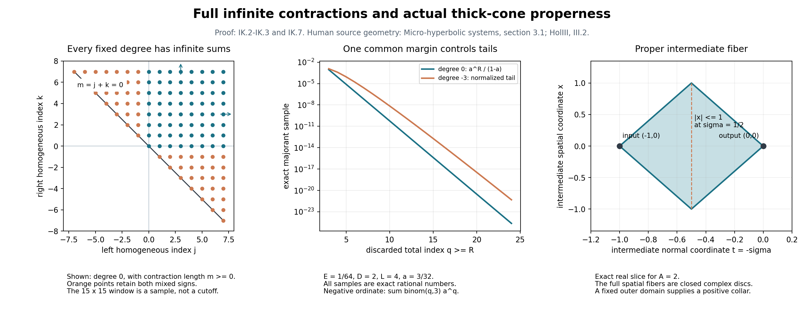
Figure IK.1. Left: a finite displayed window of the exact degree-zero index relation \(m=j+k\ge0\); both mixed signs and the unbounded positive head occur. The theorem retains every index outside the window. Center: exact rational samples of IK.6 at \(\ell=0\), and IK.7 at \(\ell=-3\) divided by its prefactor \(6E^{-3}\), for \(E=1/64,D=2,L=4\). Right: the exact one-spatial-coordinate real slice of section IK.7's intermediate fiber between endpoints \((0,0)\) and \((-1,0)\), at \(A=2\). The full proof uses closed complex spatial discs in every coordinate. The drawing does not replace the complex-domain proof or infer any current limit. The plotting source and exact data reproduce the illustration. Human geometric specifications are Micro-hyperbolic systems §3.1 and HolIII III.2.
Plotting source, exact data, full PNG, and editable SVG.


IK.9. Why the infinite positive head has no ordinary distribution limit
Consider the one-variable actual ordinary infinite-order expression
\[ P(\partial_t)=\sum_{j\ge0}\frac{\partial_t^j}{(j!)^2}. \tag{IK.30} \]It satisfies the positive class (IK.1) and (OR.1): \(1/(\varepsilon^j j!)\le\exp(1/\varepsilon)\), since it is a term of the exponential series. Thus \(1/(j!)^2\le\exp(1/\varepsilon)\varepsilon^j/j!\) for every \(\varepsilon>0\). For a holomorphic germ with Cauchy radius \(\rho\), its action is absolutely bounded by \(\|f\|\exp(1/\rho)\) and hence is a genuine holomorphic-germ operator.
In the Cauchy orientation \(w=s-t\), its positive-head kernel is exactly
\[ \begin{gathered} K(w)=\frac1{2\pi i}\sum_{j\ge0}\frac1{j!w^{j+1}}\\ =\frac{e^{1/w}}{2\pi i\,w}\\ (w\ne0). \end{gathered} \tag{IK.31} \]Indeed \(\partial_t^j(s-t)^{-1}=j!(s-t)^{-j-1}\). The series converges normally on every punctured compact: \(|w|\ge\rho>0\) bounds it by \((2\pi\rho)^{-1}\exp(1/\rho)\). It has an essential singularity at zero. For an input germ \(f\), Cauchy pairing on a sufficiently small circle gives exactly (IK.30), because the coefficient of \(s^{-1}\) in \(e^{1/s}f(s)/s\) is \(\sum_j f^{(j)}(0)/(j!)^2\).
There is no ordinary distribution supported at the origin inducing this germ functional. Here is a local proof of the required finite-jet fact. On a fixed compact neighborhood, continuity of a distribution \(T\) gives an estimate by smooth derivative seminorms through some finite order \(M\). If all derivatives through \(M\) of a test function \(f\) vanish at zero, take \(\chi_r(w)=\chi(w/r)\) with \(\chi=1\) near zero. Support at zero gives \(T(f)=T(\chi_rf)\). Taylor's formula and Leibniz show, for \(|\alpha|\le M\),
\[ \begin{gathered} \sup|\partial^\alpha(\chi_rf)|\\ =O(r^{M+1-|\alpha|})=O(r). \end{gathered} \tag{IK.32} \]The support of \(\chi_rf\) lies in the fixed compact for small \(r\). The distribution estimate therefore makes \(T(f)=0\). Subtracting the Taylor polynomial times a fixed cutoff proves that a point-supported distribution depends on finitely many jets. This argument uses the real two-dimensional smooth jets when \(t\) is complex, so it does not assume holomorphic distribution theory.
For \(f(t)=t^m\) near zero and \(m>M\), every smooth jet through \(M\) vanishes, while (IK.30) gives
\[ \begin{gathered} (Pf)(0)\\ =\frac{m!}{(m!)^2}=\frac1{m!}\ne0. \end{gathered} \tag{IK.33} \]This is the contradiction. The finite partial operator functionals are supported at zero. If they converged in the ordinary distribution topology, their limit would be supported there (tests away from zero are annihilated), and on every cutoff monomial their evaluations eventually stabilize to (IK.33). The same contradiction applies. Thus the finite diagonal-current partial sums have no distribution limit, even though their holomorphic complement kernels converge normally.
Thus full infinite-order kernels require actual holomorphic relative-Čech classes or analytic functionals. The all-degree relative-kernel action of §5.43 applies after a genuine full \(E^\infty\)-to-class-ring map has been established and its cone-open, support and common-collar hypotheses have been verified. An abstract map to derived endomorphisms alone supplies no such geometric comparison.
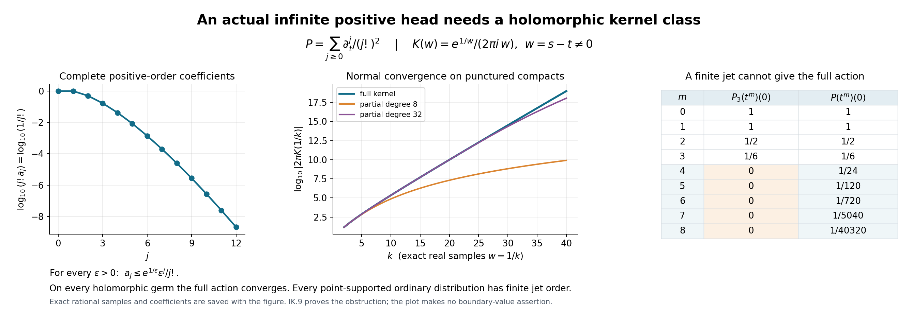
Figure IK.2. Exact coefficient and functional data for (IK.30)–(IK.33). Left: \(j!a_j=1/j!\), which gives the holomorphic Cauchy estimate. Center: the exact real sample \(w=1/k\), \(2\le k\le40\), of \(\log_{10}|2\pi K(w)|=(k+\log k)/\log10\), together with finite partial kernels; these are numerical samples on the positive real slice of the punctured complex domain, not a distribution boundary-value assertion. Right: exact rational monomial evaluations of the full operator and the order-three partial operator. For \(m\ge4\) the partial operator vanishes and the full operator does not. The complete proof is IK.9; source normalization is HolIII III.2, printed p.883. The reproducible source and exact data describe the numerical samples; the proof is IK.9.
Plotting source, exact data, full PNG, and editable SVG.


AN.1. The exact strict angular input
Write the base variable as \(u=(t,x)\), the normal diagonal difference as \((w,\zeta_1,\ldots,\zeta_d)\), and \(N=d+1\). Fix one base polydisc \(U\), positive \(r,r_i,a_i\), and the actual Reinhardt thick complement
\[ \begin{gathered} T_a=\left\{\begin{gathered} 0<|w|<r,\\ a_i|w|<|\zeta_i|<r_i\\ (1\le i\le d) \end{gathered}\right\}. \end{gathered} \tag{AN.1} \]The universal normal-angle cover of this domain has coordinate \(L\), with \(w=e^L\), \(\Re L<\log r\), and deck transformation \(L\mapsto L+2\pi i\). A strict angular datum is a holomorphic function \(F(u,L,\zeta)\) on that cover and a holomorphic function \(H(u,w,\zeta)\) on
\[ \begin{gathered} T_a^0=\left\{\begin{gathered} |w|<r,\\ a_i|w|<|\zeta_i|<r_i \end{gathered}\right\}, \end{gathered} \tag{AN.2} \]such that the literal equality
\[ \begin{gathered} F(u,L+2\pi i,\zeta)-F(u,L,\zeta)\\ =H(u,e^L,\zeta) \end{gathered} \tag{AN.3} \]holds on the same domain. In particular, the defect extends holomorphically to \(w=0\) wherever the spatial differences are nonzero. An equivalent finite presentation may be used only when it supplies finitely many lifted normal-angle intervals, actual holomorphic representatives on their corresponding thick domains, and literal overlap corrections that each extend holomorphically to the entire common domain AN.2. After an actual face-resolved choice of representatives has removed spatial-face discrepancies, these are equalities of functions on the overlaps. Subtract the cumulative extended corrections along the ordered interval chain and glue equal functions; the final correction after one circuit is \(H\). This finite construction therefore requires common-domain extensions of its corrections as part of the input. Overlap germs alone, or equality in a stalkwise cohomology quotient, are not sufficient.
Set
\[ \begin{gathered} G=-\frac{H}{2\pi i},\\ F_0=F+LG. \end{gathered} \tag{AN.4} \]Equation AN.3 makes \(F_0\) deck-invariant, so it is a single-valued holomorphic function on \(U\times T_a\). This is a literal function equality on the cover. It preserves every base parameter and introduces no coefficient-dependent domain.
AN.2. Cauchy splitting, actual missing faces, and common domains
Shrink once so that \(r'<r\), \(r_i'<r_i/2\), and \(a_i r'<r_i/4\). The finite shrink depends only on the original domains. In a spatial annulus, split a holomorphic function into its negative and nonnegative Laurent parts. The nonnegative projection in the \(i\)-th variable is given, for a locally fixed \(R_i\) with \(\max(a_i|w|,|\zeta_i|)<R_i<r_i\), by
\[ \begin{gathered} (\Pi_{i,+}f)(\zeta_i)\\ =\frac{1}{2\pi i}\int_{|\eta_i|=R_i} \frac{f(\eta_i)}{\eta_i-\zeta_i}\,d\eta_i,\\ \Pi_{i,-}=1-\Pi_{i,+}. \end{gathered} \tag{AN.5} \]For the positive part one may use the fixed contour \(R_i=r_i/2\) on the shrunken domain. It therefore extends holomorphically to \(|\zeta_i|<r_i/2\), including \(\zeta_i=0\), while the other thick-complement inequalities are retained. Contour deformation makes different locally fixed contour choices equal. Derivatives in all remaining complex variables commute with a locally fixed compact contour integral, so the projections are jointly holomorphic. Projections in distinct spatial variables commute by repeated integration over the product of finitely many compact circles.
The negative projection also has a direct expansion by an inner Cauchy circle. The usual geometric denominator expansion shows normal convergence on any smaller annulus; applying it in finitely many variables gives normal convergence on compact subsets of AN.1. To see why no uniform inner radius in \(w\) is required for holomorphicity, cover a compact subset by finitely many small products on each of which the circles can be held fixed. Their values agree on overlaps by one-variable contour deformation. This is a finite compact cover, not a different germ domain for each Laurent index.
Write \(\Pi_-=\Pi_{1,-}\cdots\Pi_{d,-}\). The exact finite telescoping identity is
\[ \begin{gathered} f-\Pi_- f\\ =\sum_{i=1}^d \Pi_{1,-}\cdots\Pi_{i-1,-}\Pi_{i,+}f. \end{gathered} \tag{AN.6} \]Each summand extends across the spatial coordinate \(\zeta_i=0\). On a chosen normal-log cut its coefficient is thus defined on the actual Čech face omitting spatial index \(i\). Apply AN.6 to both \(F_0\) and \(G\). The terms arising from \(LG\) are still holomorphic on those faces because the normal-log cut remains among their defining opens. The fully spatial-negative part \(\Pi_-G\) retains its extension to \(w=0\) on AN.2: on a compact neighborhood with fixed nonzero spatial differences, choose the spatial contour radii first and the normal disc small enough that all contour points stay in AN.2. AN.5 then gives a holomorphic function at \(w=0\). These locally defined extensions agree by uniqueness of the negative Laurent coefficients.
Next split \(\Pi_-F_0\) in \(w\). Its nonnegative normal Laurent part \(J\) extends to \(w=0\) on a thick complement, so it is an actual face omitting the normal-cut index. Its fully negative normal part \(K_0\) has fully negative powers in every normal coordinate. It extends to the full coordinate-punctured product
\[ \begin{gathered} 0<|w|<r',\\ 0<|\zeta_i|<r_i'. \end{gathered} \tag{AN.7} \]Here is the convergence argument for this extension. Given a compact subset of AN.7, choose circles with \(0<\rho<\min|w|\), \(0<\rho_i<\min|\zeta_i|\), and \(a_i\rho<\rho_i\). They lie in the original thick domain if \(\rho\) is sufficiently small. Iterated Cauchy integrals on that fixed product cycle give, for the coefficient \(c_{m\beta}\) of \(w^{-m-1}\zeta^{-\beta-\mathbf1}\),
\[ |c_{m\beta}|\le M_{\rho,\rho_i} \rho^{m+1}\prod_i\rho_i^{\beta_i+1}. \tag{AN.8} \]Divide by the target negative powers and sum the resulting finite product of strictly convergent geometric series. This proves normal convergence of the entire fully negative subseries on that compact. The cycle and domain were chosen before summing any index. Fixed derivatives and index tails follow by taking a compact enlargement and applying Cauchy's formula there. The coefficient values from different permissible cycles agree: the radii region \(\rho_i>a_i\rho\) is connected in logarithmic radii, so a deformation through overlapping products of permissible annuli, one coordinate at a time, connects any two cycles. Thus this is one actual holomorphic function, not separately chosen coefficient germs.
Consequently, on each log cut, the original datum has the literal form
\[ \begin{gathered} F=K_0-LG_-+J\\ +\sum_{i=1}^d S_i,\\ G_-=\Pi_-G, \end{gathered} \tag{AN.9} \]where \(J\) extends to the normal face and \(S_i\) extends to spatial face \(i\). All terms share the one shrunken base neighborhood; \(K_0\) has AN.7 and \(G_-\) has AN.2, with possibly enlarged constants \(a_i\). No finite spatial-degree cutoff has been made.
AN.3. Literal relative-cone primitives and branch gluing
Use ordered complement indices \(0,1,\ldots,d\), with index 0 for the normal-log cut and index \(i\) for the \(i\)-th thick spatial complement. The calibrated top representative is \((0,-r_NF)\), where \(r_N=(-1)^{N(N-1)/2}\). Its full-cone differential is
\[ \begin{gathered} d(a,b)=(\bar\partial a,ra-Db),\\ D=d_C+(-1)^q\bar\partial\\ \text{in complement Čech}\\ \text{ degree }q. \end{gathered} \tag{AN.10} \]Put \(S_0=J\). For \(d\ge1\), define a degree-\((N-1)\) relative-cone primitive by its holomorphic complement entries
\[ \begin{gathered} c_{0\cdots\widehat i\cdots d} =r_N(-1)^i S_i\\ (0\le i\le d), \\ a=0. \end{gathered} \tag{AN.11} \]These are complement Čech degree \(N-2\). The sign of deleting index \(i\) in \(d_C\) is \((-1)^i\); its product with AN.11's sign is +1. Therefore
\[ \begin{gathered} d(0,c)\\ =(0,-r_N(J+\textstyle\sum_iS_i)) \end{gathered} \tag{AN.12} \]as an actual cochain identity. All Dolbeault differentials of the coefficients vanish. There is only one top ordered index set, so no other top entry has been suppressed. When \(d=0\), the holomorphic normal-face term is removed instead by \(d(-J,0)=(0,-J)\). This is the appropriate whole-domain primitive for a one-open complement cover.
Changing the lifted logarithm by \(2\pi i k\) changes \(K_0-LG_-\) by \(-2\pi i kG_-\). That difference extends to the normal face. Formula AN.11 with only \(i=0\) nonzero is its literal primitive; for \(d=0\) use the preceding whole-domain version. These primitives add exactly when the integers \(k\) add. They hence satisfy every triple-overlap identity, rather than only showing pairwise equality of abstract classes. Restrictions, base parameter changes preserving the fixed coordinates, and finite angular refinements are restrictions of these same functions and primitives.
This proves angular normalization and class gluing for the strict datum AN.1–AN.3. To conclude IK.G one must still prove that every section of \(\gamma_*C^R_\Delta\) has such a finite common-domain, face-resolved angular presentation, and that zero classes have exactly the displayed holomorphic face primitives. The microlocal support cones appearing in the definition of \(C^R\) do not automatically have ray support. The change from those cones to the cuts and thick spatial faces used here is a substantive support/descent theorem. It remains unproved in this unit.
AN.4. Complete coefficient bounds extracted from these data
We derive the complete coefficient estimates directly from the supplied strict data. Temporarily omit the common factor \((2\pi i)^{-N}\). Choose fixed \(A_i>a_i\). For every sufficiently small \(\rho>0\), the joint cycle \(|w|=\rho\), \(|\zeta_i|=A_i\rho\) lies in AN.2. On a compact base set Cauchy extraction from
\[ \begin{gathered} G_-\\ = \sum_{n\ge0,\beta\ge0}g_{n\beta}(u) w^n\zeta^{-\beta-\mathbf1} \end{gathered} \tag{AN.13} \]gives
\[ \begin{gathered} |g_{n\beta}|\le B_\rho\rho^{|\beta|-n}A^\beta, \\ B_\rho=M_\rho\rho^d\prod_iA_i. \end{gathered} \tag{AN.14} \]The expansion exists and is unique on thick domains by AN.2's Cauchy argument. The integer kernel convention is
\[ \begin{gathered} a_{-n-1,\beta}=(-1)^n\frac{n!}{\beta!}g_{n\beta}, \\ p_{j\beta}=a_{j-|\beta|,\beta}. \end{gathered} \tag{AN.15} \]Thus \(K_0-LG_-\) has exactly the source pole/log signs. On the single normalized covariable neighborhood \(\sum_iA_i|z_i|<1\), put \(q=\sum_iA_i|z_i|\). The multinomial formula yields, for \(s\ge1\),
\[ \begin{gathered} \sum_\beta|p_{-s,\beta}z^\beta|\\ \le B_\rho\rho^{1-s}(s-1)!\\ (1-q)^{-s}. \end{gathered} \tag{AN.16} \]Indeed \(n=|\beta|+s-1\), and summing at spatial degree \(b\) gives \((b+s-1)!q^b/b!\). The sum is \((s-1)!(1-q)^{-s}\), obtained by differentiating a geometric series \(s-1\) times. One fixed \(\rho\) gives the negative factorial estimate on each compact with \(q\le q_*<1\).
For \(j\ge0\), the log part has \(b\ge j+1\) and \(n=b-j-1\). It satisfies
\[ \begin{gathered} \sum_{|\beta|\ge j+1}|p_{j\beta}z^\beta|\\ \le \frac{B_\rho\rho^{j+1}q^{j+1}} {(j+1)!(1-q)}. \end{gathered} \tag{AN.17} \]The ratio \((b-j-1)!/b!\) is at most \(1/(j+1)!\); sum the remaining geometric tail. Given any \(\varepsilon>0\), choose \(\rho\) with \(\rho q_*\le\varepsilon\). Only \(B_\rho\) changes; the base and covariable neighborhoods remain fixed. AN.17 gives the required every-\(\varepsilon\) positive estimate.
For the pole coefficients \(c_{m\beta}\) of AN.8, set \(a_{m\beta}=c_{m\beta}/(m!\beta!)\). Taking the same scaled circles gives \(|a_{m\beta}|\le B'_{\rho}\rho^{m+|\beta|}A^\beta/(m!\beta!)\). Grouping \(m+|\beta|=j\) yields
\[ \begin{gathered} \sum_{m+|\beta|=j}|a_{m\beta}z^\beta|\\ \le B'_{\rho}\frac{[\rho(1+q)]^j}{j!}. \end{gathered} \tag{AN.18} \]Choose \(\rho(1+q_*)\le\varepsilon\). This proves the full positive pole estimate on that same neighborhood. Every coefficient \(p_j\) is holomorphic there by normal convergence. Every fixed finite base or normalized-covariable derivative satisfies the corresponding bounds and index tails: take one compact enlargement, apply the undifferentiated bounds there, and multiply by the fixed Cauchy derivative constant. No index changes the domain. The estimates preserve all spatial indices and all positive homogeneous contributions to the negative-normal log part.
Reconstruction recovers \(K_0\) and \(G_-\) by their unique Cauchy coefficients. The harmonic-number normalization of the source, \(-(-w)^n(\gamma-H_n)/n!\), adds a holomorphic normal-face function with the same thick domain. The bound \(H_n\le n\) and a slightly larger geometric ratio prove convergence; AN.11 supplies its exact boundary. Hence strict angular data reduce to the supplied pole/log normal form with all signs, actual inverse coefficients and full growth bounds. This remains a conditional reduction from AN.3, not the missing projectivized-sheaf identification.
AN.5. Full-dimensional support enlargement and proper source margins
The closed support \(G_A\) in IK.22 has \(\Im w=0\) and ordinary real interior empty. It is an initial line-time/spatial-thick support. It is not the full-dimensional cone required by DL/DLH/DLG, and its quotient/open-set topology is not identified with that of a full-dimensional cone. For every \(\epsilon>0\), support forgetting sends its class into the closed convex full-dimensional cone
\[ \begin{gathered} G_{A,\epsilon}=\\ \left\{\begin{gathered} \Re w\le0,\\ |\Im w|\le\epsilon(-\Re w),\\ |\zeta_i|\le A_i(-\Re w) \end{gathered}\right\}. \end{gathered} \tag{AN.19} \]The inclusion is literal. This cone is an intersection of the closed halfspaces \(\Re w\le0\), \(\pm\Im w\le\epsilon(-\Re w)\), and the convex norm epigraphs \(|\zeta_i|\le A_i(-\Re w)\); hence it is closed and convex. It has interior because at \(w=-1,\zeta=0\) all inequalities except the redundant \(\Re w\le0\) are strict, and \(\Re w<0\) is strict too. It is stable under addition by the triangle inequality. It is pointed: belonging to the cone and its negative forces \(\Re w=0\), then every other coordinate is zero. Its complementary support map is the restriction of the full-cone complex from the larger complement \(M\setminus G_A\) to the smaller complement \(M\setminus G_{A,\epsilon}\), with the identity on the total component. This is a chain map by AN.10. A class for \(G_A\) therefore has a canonical support-enlargement image; no injectivity of that map is asserted.
For its proper triple-to-endpoint geometry, write \(\sigma_i=-\Re w_i\ge0\). Their sum is the final \(\sigma\). Thus \(0\le\sigma_i\le\sigma\), \(|\Im w_i|\le\epsilon\sigma\), and \(|\zeta_{i,k}|\le A_k\sigma\). Over a compact endpoint set every intermediate point is in a closed bounded family with these fixed bounds. Here is an explicit source-margin choice. Translate the base center to zero and let the outer coefficient polydisc have normal radius \(R\) and spatial radii \(R_k\). Choose inner endpoint radii \(\delta_t,\delta_k>0\) with
\[ \begin{gathered} \delta_t<\frac{R}{2(1+2\sqrt{1+\epsilon^2})},\\ \delta_k<R_k/4,\\ \delta_t<R_k/(8A_k)\\ \text{for every }k. \end{gathered} \tag{AN.20} \]Then \(\sigma\le2\delta_t\). Every intermediate normal coordinate has modulus at most \(\delta_t+2\sqrt{1+\epsilon^2}\delta_t<R/2\), and every intermediate spatial coordinate has modulus at most \(\delta_k+2A_k\delta_t<R_k/2\). The entire closed bounded fiber family thus has a positive margin inside the actual outer source. It is compact there, giving the proper support map. For any finite operator list use the largest of finitely many \(A_k\), one positive \(\epsilon\), and this one margin choice. These facts supply support enlargement and properness only. The additional cone-open, round-domain, output-support and common-collar hypotheses of an actual DL/DLG instantiation must still be verified; the ring map and full mixed product are still missing. No derived instantiation is made here.
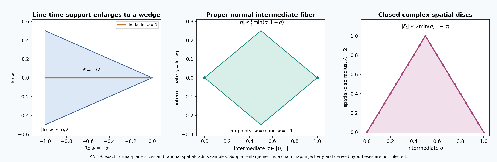
Figure AN.2. Exact slices of AN.19 with \(\epsilon=1/2\), one spatial variable and \(A=2\). Left: the initial normal ray \(\Im w=0\) lies in the full-dimensional wedge. Center: between endpoints \(w=0\) and \(w=-1\), the intermediate normal difference is \(-\sigma+i\eta\), with \(0\le\sigma\le1\) and \(|\eta|\le\tfrac12\min(\sigma,1-\sigma)\). Right: at spatial endpoint difference zero, the intermediate spatial coordinate is in a closed complex disc of radius \(2\min(\sigma,1-\sigma)\); points are exact rational samples with \(\sigma=k/20\). The full properness proof applies in every spatial dimension, inside an outer actual source domain with a positive margin. The support map's injectivity and the derived cone-open/common-collar hypotheses are not inferred. The plotting source and exact data reproduce the illustration.
Plotting source, exact data, full PNG, and editable SVG.


OR.1. The complete ordinary class and its binary product
Let \(U\subset\mathbf C^N\) be one base polydisc. An ordinary infinite-order operator is
\[ \begin{gathered} A=\sum_{\alpha\in\mathbf N^N}a_\alpha(u)\partial_u^\alpha, \\ |a_\alpha|_K\le B_{K,\varepsilon} \frac{\varepsilon^{|\alpha|}}{\alpha!} \\ \text{for every }\varepsilon>0. \end{gathered} \tag{OR.1} \]All coefficients are holomorphic on \(U\). Given a second operator \(B\) on the same domain and a fixed smaller coefficient compact, choose a larger compact and coordinate Cauchy margin \(R>0\). On it
\[ |\partial_u^\gamma b_\beta| \le \gamma!R^{-|\gamma|} B_{\varepsilon_B}\frac{\varepsilon_B^{|\beta|}}{\beta!}. \tag{OR.2} \]The ordinary Leibniz coefficient at \(\eta\) is the entire infinite sum
\[ \begin{gathered} c_\eta\\ = \sum_{\substack{\delta+\beta=\eta\\\gamma\ge0}} \binom{\delta+\gamma}{\gamma} a_{\delta+\gamma}\partial_u^\gamma b_\beta. \end{gathered} \tag{OR.3} \]Here \(\delta=\alpha-\gamma\). The fixed output index does not bound \(\gamma\). Its full absolute majorant is
\[ \begin{gathered} |c_\eta| \le B_{\varepsilon_A}B_{\varepsilon_B} (1-\varepsilon_A/R)^{-N}\\ \frac{(\varepsilon_A+\varepsilon_B)^{|\eta|}}{\eta!},\\ \varepsilon_A<R. \end{gathered} \tag{OR.4} \]To verify it, cancel the three factorials in OR.1–OR.3. The remaining summand is \((\varepsilon_A/R)^{|\gamma|}\varepsilon_A^{|\delta|}\varepsilon_B^{|\beta|}/(\delta!\beta!)\). The \(\gamma\)-sum is the product of \(N\) geometric series, and the finite \(\delta+\beta=\eta\) sum is the coordinatewise binomial expansion divided by \(\eta!\). For any specified output \(\varepsilon\), choose \(\varepsilon_A+\varepsilon_B\le\varepsilon\) and \(\varepsilon_A<R/2\). This proves the exact every-\(\varepsilon\) condition, including every spatial index.
At a fixed \(\eta\), the tail with \(|\gamma|\ge M\) tends to zero geometrically. For example choose \(q=\varepsilon_A/R<q'<1\); it is bounded by \((q/q')^M\) times the same majorant with \(q'\). Every fixed output derivative tail has this bound times a fixed Cauchy constant on a compact enlargement. The domain and margins are fixed before all index summations. OR.3 is therefore an actual holomorphic coefficient product.
The action on a holomorphic germ \(f\), with common Cauchy margin \(\rho\), is normally convergent with bound \(B_\varepsilon|f|(1-\varepsilon/\rho)^{-N}\), for \(\varepsilon<\rho\). Applying that estimate on successive compact enlargements justifies differentiating and regrouping the composition. Its coefficient formula is OR.3. The exponential germs \(e^{\langle u,\lambda\rangle}\) separate operators: the output divided by the exponential is the entire series \(\sum_\alpha a_\alpha(u)\lambda^\alpha\), whose Taylor coefficients recover \(a_\alpha\). Hence operator composition proves unit and associativity for this ordinary class. This is ordinary operator separation, not separation of any extended module's sections.
OR.2. The holomorphic diagonal kernel and residue-trace map
Its fully negative diagonal kernel is
\[ \begin{gathered} K_A(u,v)=\frac1{(2\pi i)^N}\\ \sum_\alpha a_\alpha(u) \frac{\alpha!}{(v-u)^{\alpha+\mathbf1}}. \end{gathered} \tag{OR.5} \]On a compact where each difference is nonzero, choose \(\varepsilon<\min_i|v_i-u_i|\) and sum a product of geometric series. Thus OR.5 is normally convergent on the coordinate-punctured domain, with every fixed derivative and index tail by a compact enlargement. Conversely Laurent coefficient extraction on arbitrarily small normal circles gives OR.1; the fully negative Laurent splitting removes all actual missing-face boundaries. The actual ordinary geometric calculation is OC.1–OC.4 and IK.4.
For the intermediate holomorphic trace put \(a=s-u\), \(b=v-s\), \(c=v-u=a+b\). A holomorphic top cochain \(T(u,a,b)\) of the two diagonal puncture cubes is defined wherever each \(a_i,b_i\) is nonzero. On an output compact with each \(c_i\ne0\), select fixed positive \(\rho_i<\frac13\min|c_i|\), small enough that \(|a_i|=\rho_i\) and \(b_i=c_i-a_i\) remain inside the actual source. Define
\[ \begin{gathered} (\mathcal R T)(u,c)=\\ \int_{|a_1|=\rho_1}\cdots\\ \int_{|a_N|=\rho_N} T\left(\begin{gathered}u,a,\\c-a\end{gathered}\right)\\ \,da_1\cdots da_N. \end{gathered} \tag{OR.6} \]Each circle has positive complex orientation. All integrals are over one compact product torus separated from both singularity lists. Locally fixed circles prove holomorphic dependence. Deforming within \(0<\rho_i<|c_i|\) proves independence of these circles, one coordinate at a time. Local choices therefore agree and give an actual top cochain on the output puncture cube.
There are two kinds of missing source faces. If \(T\) extends across \(a_i=0\), its \(a_i\) integral vanishes by Cauchy's theorem; \(b_i=0\) is outside that circle. If \(T\) extends across \(b_i=0\), deform its \(a_i\) circle through \(a_i=c_i\) to a fixed larger small circle. That crossing is permissible precisely because this source face is holomorphic at \(b_i=0\). Holding the larger circle fixed for \(|c_i|\) smaller than half its radius gives an output function holomorphic at \(c_i=0\). Thus this source boundary maps to the actual output face omitting \(c_i\). There is no argument from convergence in a quotient. For the output face function \(h_i\), its calibrated relative-cone primitive is the entry \(r_N(-1)^{i-1}h_i\) on that face, by the deletion sign, just as AN.11. This explicitly proves compatibility of OR.6 with source boundaries and the finite cube augmentation.
The canonical meaning of OR.6 is proved by the full two-support cube, proper collar and retained relative trace in TC.1–TC.3 below. Every lower source and target complement entry participates in that comparison, with the signs in TC.15. OC.1–OC.4 supplies the actual holomorphic-row reduction and all-monomial class detection used in this ordinary calculation.
All fixed derivatives and limits of these collar calculations commute with their finite compact integrals. This continuity statement concerns holomorphic functions on the specified separated collars; it makes no claim about distribution convergence at the normal origin or about the mixed thick-cone ray endpoints.
TC.1. One coordinate: all four source entries
Use variables \((u,a,c)\), with \(s=u+a\), \(v=u+c\), and \(b=c-a=v-s\). The two source supports are \(A=\{a=0\}\) and \(B=\{b=0\}\); their intersection is \(a=c=0\). Write
\[ \begin{gathered} U_A=M\setminus A,\\ U_B=M\setminus B,\\ U=U_A\cup U_B\\ =M\setminus(A\cap B). \end{gathered} \tag{TC.1} \]On an actual source polydisc, a total-degree-\(q\) two-support cube has four entries
\[ \begin{gathered} (g,h_A,h_B,f)\in\\ I^q(M)\oplus I^{q-1}(U_A)\\ \oplus I^{q-1}(U_B)\\ \oplus I^{q-2}(U_A\cap U_B). \end{gathered} \tag{TC.2} \]Here \(I\) is the full Dolbeault resolution. In this order its differential is
\[ \begin{gathered} d_K(g,h_A,h_B,f)=\\ \left(\begin{gathered} \delta g,\ r_Ag-\delta h_A,\\ r_Bg-\delta h_B,\\ h_B-h_A+\delta f \end{gathered}\right). \end{gathered} \tag{TC.3} \]This is V.15 with the ordered subset \((A,B)\), including the sign on the top deletion. Two one-dimensional ordinary kernels have top-cube entries \(-K_A\) and \(-K_B\). Their unshifted source cup consequently has the top function \(f=K_AK_B\), so its complete degree-two cube is \((0,0,0,f)\). The coefficient \(f\) is defined only on \(U_A\cap U_B\). All holomorphic parameters and every normally convergent coefficient index may be retained in this function.
Choose \(0<\kappa_1<\kappa_2<1\), for example \(\kappa_1=1/8\), \(\kappa_2=1/4\). Let \(\theta\) be a fixed smooth function equal to zero on \(( -\infty,\kappa_1^2]\), equal to one on \([\kappa_2^2,\infty)\), and taking values in \([0,1]\). On \(U\) put
\[ \begin{gathered} \rho_A(a,c)=\\ \begin{cases}\theta(|a|^2/|c|^2),&\!\!c\ne0,\\ 1,&\!\!c=0,\ a\ne0, \end{cases}\\ \rho_B=1-\rho_A. \end{gathered} \tag{TC.4} \]This is smooth on the whole union complement \(U\). At a point with \(c=0,a\ne0\), a neighborhood has \(|a|>\kappa_2|c|\), so \(\rho_A\) is identically one there. It vanishes near \(A\setminus B\), where \(c\ne0\); \(\rho_B\) vanishes near \(B\setminus A\), because there \(a=c\) and the ratio is 1. Thus these are an actual smooth partition subordinate to \(U_A,U_B\). No value or smooth extension is required at the excluded intersection.
The explicit finite augmentation of the full cube to the single relative cone is
\[ \begin{gathered} \Phi(g,h_A,h_B,f)=\\ \left(\begin{gathered} g,\ \rho_A h_A+\rho_B h_B\\ +\delta\rho_A\wedge f \end{gathered}\right). \end{gathered} \tag{TC.5} \]Each product is extended by zero only where its multiplying cutoff vanishes on a neighborhood. The derivative \(\delta\rho_A\) is supported where both \(a\) and \(b\) are nonzero. Indeed its support for \(c\ne0\) has
\[ \begin{gathered} \kappa_1|c|\le |a|\le\kappa_2|c|,\\ |b|\ge(1-\kappa_2)|c|. \end{gathered} \tag{TC.6} \]For \(c=0\) it vanishes everywhere on \(U\). Formula TC.5 is therefore an actual smooth cochain on \(U\), including neighborhoods of either individual support face away from their intersection.
To check its differential, apply \(\delta\) to the second component, using \(\delta\rho_B=-\delta\rho_A\) and \(\delta(\delta\rho_A\wedge f)=-\delta\rho_A\wedge\delta f\). The result is
\[ \begin{gathered} r g-\delta\left(\begin{gathered} \rho_Ah_A+\rho_Bh_B\\ +\delta\rho_A\wedge f \end{gathered}\right)\\ =\rho_A(r_Ag-\delta h_A)\\ +\rho_B(r_Bg-\delta h_B)\\ +\delta\rho_A\wedge(h_B-h_A+\delta f). \end{gathered} \tag{TC.7} \]This is exactly the complement component of \(\Phi d_K\). The total components are both \(\delta g\). Thus TC.5 is a chain map in every degree, with every base-antiholomorphic term retained. The general finite Čech row contraction in V.6 proves that this augmentation is the actual relative-support comparison; TC.7 also verifies it directly for this two-support cube.
For the top holomorphic function it gives
\[ \Phi(0,0,0,f)=(0,\delta\rho_A\,f). \tag{TC.8} \]There is no whole-domain \(\rho_A f\) cochain in this equation. Only its derivative times \(f\) occurs on the actual union complement.
TC.2. Proper collar, parameter boundary, and retained relative trace
Choose an outer coefficient source with normal radius \(R\), and an inner endpoint domain \(|c|<r\), \(r<R/4\). Choose one smooth source collar \(\eta(a)\), equal to one on \(|a|\le R/3\), supported on \(|a|<R/2\), with all its source points inside the original domain. Shrink \(r\), if needed, so that \(\kappa_2r<R/3\). Then \(b=c-a\) has modulus less than \(3R/4\) on the collar. The source collar is properly supported over the inner endpoint domain; over every compact endpoint set its support is in a fixed compact subset of the actual outer coefficient source. Compact base parameters are handled by the same finite margin choice.
The controlled relative localization is
\[ \begin{gathered} L_\eta(g,h)\\ =(\eta g+\delta\eta\wedge h,\ \eta h). \end{gathered} \tag{TC.9} \]Its total first component is extended across the support only on a neighborhood where \(\delta\eta=0\), exactly as in R.7. For TC.8, TC.6 and the choice of collar give
\[ \begin{gathered} \delta\eta\wedge\delta\rho_A f=0,\\ \eta\delta\rho_A f=\delta\rho_A f. \end{gathered} \tag{TC.10} \]Thus its localized relative pair is still \((0,\delta\rho_A f)\). The first component is the literal zero whole-domain form. The complement component remains defined on \(U\); it has not been extended at \(a=c=0\). On a compact subset of the output complement \(c\ne0\), TC.6 puts its entire fiber support in a compact annulus separated from both poles and from the outer source boundary. Its relative trace there is consequently an ordinary compact smooth integration. Nothing is asserted about pushing this complement coefficient across \(c=0\).
In source degree 2 the one-dimensional normalized relative trace has the sign
\[ \begin{gathered} \operatorname{Tr}^{\rm rel}(g,h)\\ =(\operatorname{Tr}_2g,-\operatorname{Tr}_1h). \end{gathered} \tag{TC.11} \]It is the full-cone version of the \([1]\)-shifted trace; the minus on the complement entry is essential. The ordinary coefficient-frame trace \(\operatorname{Tr}_1\) integrates the fiber \(d\bar a\wedge da\) coefficient with scalar +1, as proved in V.4. Terms in \(\delta\rho_A\) containing only a base-antiholomorphic differential have insufficient real fiber degree and vanish under this trace. They remain part of the source cochain in TC.8–TC.10, so no differential or parameter term has been deleted before tracing.
For fixed \(c\ne0\), use an outer circle \(|a|=\rho\) with \(\kappa_2|c|<\rho<|c|\) and an inner circle of radius less than \(\kappa_1|c|\). On the outer circle \(\rho_A=1\); on the inner circle it is zero. The only singularity inside the outer circle is \(a=0\); the second singularity \(a=c\) lies outside. Stokes on the intervening annulus gives
\[ \begin{gathered} \int \delta\rho_A\,f\wedge da\\ =\int_{|a|=\rho}f\,da. \end{gathered} \tag{TC.12} \]The equality uses only compact coefficients on that annulus and its boundary. Combining TC.8–TC.12 gives the actual retained target pair
\[ (0,-\textstyle\int_{|a|=\rho} f\,da). \tag{TC.13} \]The parameter-dependent partition is smooth on all of the source union complement, including \(c=0,a\ne0\); the single proper collar is fixed over the whole inner endpoint domain. The final coefficient is holomorphic on the output complement by a locally fixed permissible circle and one-variable Cauchy deformation. This is the complete ordinary two-support cup/excision/relative-trace roof. It requires neither a distribution extension of an essential singularity nor a uniform distribution-order bound.
TC.3. Every normal coordinate and every complement entry
For \(N\) coordinates retain the entire ordered \(2N\)-support cube for \(A_i=\{a_i=0\}\), \(B_i=\{c_i-a_i=0\}\). It has one entry on every actual intersection of the corresponding complements. Apply TC.5 in coordinate \(i\) with every remaining cube entry, all other variables, and its ordered holomorphic coefficient frame retained. A cutoff in coordinate \(i\) is TC.4 with \(a_i,c_i\), and its collar is TC.9 with one fixed outer source radius. These maps commute with restriction in every unprocessed coordinate. Equation TC.7 verifies their complete differential, including parameter-antiholomorphic derivatives.
The finite tensor-to-cube sign is V.16,
\[ (-1)^{\sum_{i<j}q_i r_j}, \tag{TC.14} \]for antiholomorphic degrees \(q_i\) and complement degrees \(r_i\). Therefore one may apply TC.5/TC.9/TC.11 successively without replacing the remaining cube by its top holomorphic coefficient. At intermediate stages all its lower Čech/Dolbeault entries are still present. This is an iteration of actual chain maps and controlled localization roofs; the shift on each trace uses V.14 and TC.11. The final holomorphic residue is a top coordinate of the target cube, not a degree-\((N-1)\) Dolbeault complement function.
Here are the exact signs in that final coordinate. Each one-coordinate relative trace contributes the positive connecting class \((0,-\mathcal R_i f)\). Its ordinary one-support cube top coordinate is \(-\mathcal R_i f\), giving \((-1)^N\) for the ordered normal list. Regrouping the \(N\) one-coordinate holomorphic lines into the single ungraded input top-form frame uses V.14/V.17 and contributes \(r_N=(-1)^{1+\cdots+(N-1)}\). The between-kernel unshifted cup sign \((-1)^{N^2}\) and the source-degree-\(2N\) trace sign \((-1)^{N^2}\) cancel by V.13. No further double suspension is introduced. Hence the final ordinary top cube coefficient and the corresponding full-cone Čech top coefficient are respectively
\[ \begin{gathered} r_N(-1)^N\mathcal R f,\\ -r_N\mathcal R f,\\ \mathcal R f=\\ \int_{|a_1|=\rho_1}\cdots\\ \int_{|a_N|=\rho_N} f\left(\begin{gathered}u,a,\\c-a\end{gathered}\right)\\ \,da_1\cdots da_N. \end{gathered} \tag{TC.15} \]The cone-to-cube multiplier is \((-1)^{N-1}\), so the two coordinates in TC.15 agree exactly. For \(N=1,2,3\), the ordinary top factors are \(-1,-1,+1\); the full-cone top factors are \(-1,+1,+1\). This check detects both the missing connecting sign and the misplaced line suspension in dimension two.
All source collars fit on one common outer polydisc: take \(|c_i|<r_i<R_i/4\), collar support \(|a_i|<R_i/2\), and \(\kappa_2r_i<R_i/3\). A finite operator/matrix list permits taking the smallest of its finitely many positive margins. On every output compact where the traced coordinates are nonzero, all transition products are compact and separated from both source singularity lists. Arbitrary joint holomorphic coefficients and their entire normally convergent index families may be multiplied there. Repeated integration is justified by bounded compact coefficients and Fubini; each fixed derivative commutes with these finite integrations. Where some output coordinate is zero, keep its corresponding target cube face and the other entries until that coordinate is processed. No singular coefficient is extended across that face. This verifies the domains and complete complement roof in every normal dimension.
Missing source faces behave as required: a function extending across \(a_i=0\) has zero residue in that coordinate; a function extending across \(b_i=0\) permits deforming the \(a_i\) circle through \(a_i=c_i\) to a fixed small circle and gives a function extending across \(c_i=0\). Its target missing-face coefficient supplies the literal Čech boundary with the deletion sign of V.15. This statement is about the complete target cube after TC.15; it does not drop the source or target complement terms during the trace.
TC.4. Canonical ordinary conclusions and remaining scope
The complete ordinary product estimates OR.1/OR.3 and the ordinary coordinate-change coefficient estimates OR.4 have canonical-class interpretations through TC.1–TC.3 and the actual ordinary cohomology calculation OC.1–OC.4. Specifically, for the complete ordinary all-spatial class, normal convergence on the fixed separated tori gives
\[ \mathcal R(K_AK_B)=K_{A\circ B}, \tag{TC.16} \]with all fixed-output infinite contractions and every derivative tail controlled by OR.4/OR.11. TC.15 identifies this equality with the full ordinary canonical cup/excision/normalized trace, including every target complement coordinate and every sign. OC.4’s complete finite torus/Laurent separation then gives the ordinary coordinate-class correspondence in OR.4. These are the complete ordinary coefficient formulas and ordinary canonical scope.
Full IK.G and IK.M are proved in §5.45, IG.1–IG.5 and IM.1–IM.6. Ordinary trace and coordinate conclusions alone supply neither assertion. No derived instantiation or later matrix-flatness, faithfulness, reconstruction, propagation, D-type/C1/analytic proper/GL/BB/KL conclusion is asserted in this ordinary unit.
OR.3. Complete ordinary canonical multiplication
Apply OR.6 to \(T=K_A(u,s)K_B(s,v)\). On the selected torus \(K_B(s,v)\) is holomorphic in \(s\) throughout the inside polydisc: its only coordinate kernel singularities are at \(s_i=v_i\), outside the selected circles. Choose once a slightly larger inside polydisc still separated from those singularities and from the coefficient-domain boundary. OR.1 for \(A\) and Cauchy's derivative estimate for \(K_B\) give an absolute sum bounded by a product of geometric series there. Termwise Cauchy integration is therefore justified and gives
\[ \begin{gathered} \int K_A(u,s)K_B(s,v)\,ds\\ =\sum_\alpha a_\alpha(u) \partial_s^\alpha K_B(s,v)|_{s=u}. \end{gathered} \tag{OR.9} \]For a fixed \(\alpha\), differentiate OR.5 for \(B\) on the common separated domain and apply the finite derivative Leibniz rule. Its term indexed by \(\beta\) and \(\gamma\le\alpha\) is
\[ \begin{gathered} \frac1{(2\pi i)^N} \binom\alpha\gamma a_\alpha\partial^\gamma b_\beta\\ \frac{(\alpha-\gamma+\beta)!} {c^{\alpha-\gamma+\beta+\mathbf1}}. \end{gathered} \tag{OR.10} \]The entire sum is absolute. Use OR.4 with \(\varepsilon_A+\varepsilon_B<\min_i|c_i|\), as well as \(\varepsilon_A<R/2\). After grouping \(\eta=\alpha-\gamma+\beta\), the sum is bounded by
\[ \begin{gathered} \frac{B_{\varepsilon_A}B_{\varepsilon_B}} {(2\pi)^N\prod_i|c_i|}\\ (1-\varepsilon_A/R)^{-N}\\ \prod_i\!\!\bigl(1-(\varepsilon_A+\varepsilon_B)/|c_i|\bigr)^{-1}. \end{gathered} \tag{OR.11} \]Thus every regrouping in OR.9–OR.10 is justified on the fixed output compact, and OR.3 proves
\[ \begin{gathered} \mathcal R\bigl(K_A(u,s)K_B(s,v)\bigr)\\ =K_{A\circ B}(u,v). \end{gathered} \tag{OR.12} \]It is an equality of holomorphic top cochains, in the canonical residue trace calculated in OR.2. The \((2\pi i)^{-N}\) normalization is exact: two kernels supply its square and the \(N\) positive Cauchy residues supply \((2\pi i)^N\). The trace/cup calibration has no further scalar. The diagonal unit is \(\prod_i[2\pi i(v_i-u_i)]^{-1}\), by the same positive Cauchy residue, on both sides.
Triple products may be computed on two nested product tori, with radii chosen once from the finite list of coefficient domains and endpoint separation margins. All coefficients and Cauchy factors are bounded on the resulting compact product of tori, and OR.11's stronger interior margins give absolute convergence of every operator series there. Repeated compact integration hence satisfies Fubini. Alternatively OR.12 and the already proved ordinary associativity in OR.1 give the same result. Neither route passes to ordinary distributions. Every finite ordinary matrix, idempotent, differential, relation and homotopy uses the finite intersection of these domains, so the same ordinary unital class map applies on one neighborhood to all its entries. An infinite-order module-derived instantiation additionally requires the full IK.G/IK.M comparison and the cone-open, support and common-collar hypotheses of §5.43.
OR.4. Arbitrary ordinary holomorphic coordinate overlaps
The ordinary statement is also intrinsic under arbitrary local biholomorphic base-coordinate changes; no linearity hypothesis is needed here. Let \(v=\phi(u)\) be a biholomorphism and let \(A\) have OR.1 on \(U\). Work on one smaller relatively compact base domain \(U'\Subset U\). For \(\alpha\ge0\) define
\[ \begin{gathered} a'_\alpha(\phi(u))=\\ \frac1{\alpha!}\\ \left[A_{u'}(\phi(u')-\phi(u))^\alpha\right]_{u'=u}. \end{gathered} \tag{OR.13} \]Here \(u\) is held fixed as a holomorphic parameter while \(A\) differentiates the variable \(u'\). The notation does not differentiate the parameter along with the input variable. The series defining OR.13 is normally convergent on every compact of \(U'\): choose a fixed input tube about that compact with positive margin inside \(U\), use the derivative Cauchy bound for the holomorphic function \((\phi(u')-\phi(u))^\alpha\), and choose the input coefficient \(\varepsilon\) smaller than that margin. Thus \(a'_\alpha\) is holomorphic on the one domain \(\phi(U')\), independent of \(\alpha\).
For every \(\delta>0\), continuity of the finitely many coordinate functions of \(\phi\) on a compact enlargement gives a uniform input radius \(r_\delta>0\) on which \(\max_i|\phi_i(u')-\phi_i(u)|<\delta\). OR.1's action bound, with \(\varepsilon<r_\delta/2\), then gives
\[ |a'_\alpha|_K\le C_{K,\delta} \frac{\delta^{|\alpha|}}{\alpha!}. \tag{OR.14} \]The radius used to estimate the action may depend on \(\delta\); the common coefficient domain \(\phi(U')\) does not. Hence OR.14 has the exact every-\(\delta\) quantifier. No Faà di Bruno expansion or formal coefficient transformation has been assumed.
Let \(f\) be holomorphic on an actual input neighborhood of \(v=\phi(u)\). Choose a smaller radius \(R>0\) for its Taylor series, then choose the preceding input tube with coordinate variation less than \(\delta<R\). On that tube,
\[ \begin{gathered} f(\phi(u'))=\\ \sum_\alpha\frac{\partial_v^\alpha f(\phi(u))}{\alpha!}\\ (\phi(u')-\phi(u))^\alpha \end{gathered} \tag{OR.15} \]converges normally on a slightly larger tube than the one used for the action. OR.1's sup-norm action estimate permits applying \(A_{u'}\) termwise. Equations OR.13–OR.15 give
\[ \begin{gathered} {}[A(f\circ\phi)](u)\\ =\sum_\alpha a'_\alpha(\phi(u))\\ \partial_v^\alpha f(\phi(u)). \end{gathered} \tag{OR.16} \]The right side is absolutely bounded by \(C_{K,\delta}|f|(1-\delta/R)^{-N}\). Therefore the ordinary coordinate-change operator is actual and has the complete ordinary class. Applying the same argument to \(\phi^{-1}\) gives its inverse. The action separation proved in OR.1 makes compositions of coordinate changes agree exactly on triple overlaps and makes the product invariant.
This also gives the ordinary diagonal geometric overlap. In any base coordinates, OC.1–OC.4 and the finite puncture cube/Laurent argument of OR.2 prove that a diagonal local-cohomology class is uniquely determined by its pairings with all holomorphic normal monomials; those pairings are its fully negative Laurent coefficients. The pairing on the compact normal torus is the canonical residue trace just proved in OR.2. Changing coordinates pulls back the input holomorphic top form with its Jacobian and applies the ordinary change of variables on that same compact integration cycle; the earlier V.4 determinant/orientation proof gives its coordinate invariance. Hence the naturally transformed diagonal class has the monomial pairings OR.13 and, by the proved Laurent separation, is precisely the class of the kernel of \(A'\). This use of separation is confined to the completely calculated ordinary diagonal local cohomology. It does not identify the off-zero projectivized microlocal sheaf or establish separation of arbitrary extended-module sections.
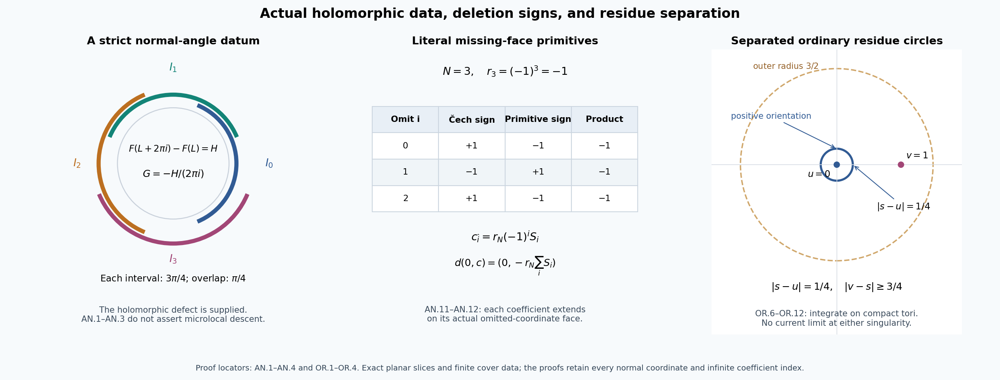
Figure AN/OR.1. Left: exact four-interval cover of the normal-angle circle, with interval length \(3\pi/4\) and centers \(0,\pi/2,\pi,3\pi/2\); the jump \(H\) is an explicit AN.3 input, not a theorem about arbitrary microfunctions. Center: the actual deletion signs of AN.11 for \(N=3\), where \(r_3=-1\); each product of the Čech deletion sign with the primitive sign is \(r_3\). Right: the one-coordinate complex slice of OR.6 with \(u=0\), \(v=1\), intermediate residue circle radius \(1/4\), and an outer input circle radius \(3/2\). The two kernel singularities are separated on the entire intermediate circle by exact lower bounds \(1/4\) and \(3/4\). The general theorem uses products of these circles in every normal coordinate, actual positive margins in the coefficient domain, and complete infinite index sums. The plotting source and exact rational data reproduce the illustration. Human geometric specifications are the freely accessible sources linked above; proofs are AN.1–AN.4 and OR.1–OR.4.
Plotting source, exact data, full PNG, and editable SVG.


Mathematical conclusions and remaining scope
| Assertion | Complete local proof or exact earlier premise and status |
|---|---|
| Common-domain full coefficient sheaf, every spatial index | IK.1/IK.14–IK.15 Status: Proved in fixed base coordinates |
| Full infinite binary/triple contractions and every fixed derivative tail | IK.2–IK.3, especially IK.3–IK.11 Status: Proved |
| Unit, associativity, finite common-domain coefficient diagrams | IK.3 Status: Proved |
| Fixed-base projective covariable chart overlaps | IK.2 and homogeneous IK.10 Status: Proved |
| Ordinary diagonal \(D^\infty\) coefficient/local-cohomology identity | OC.1–OC.4 and IK.4; §5.34 R.1–R.7 and §5.35 V.6 for the exact finite cube Status: Proved |
| Full pole/log/holomorphic kernel convergence, including mixed positive-homogeneous negative-normal terms | IK.5 Status: Proved |
| Actual holomorphic forward class, branch/harmonic-term boundaries, finite calibration | IK.6; §5.41 CP.2 and §5.39 NL.11–NL.12/NL.22–NL.27 Status: Proved as a linear map |
| Common proper triple geometry | IK.7 Status: Proved |
| Exact inverse full coefficient extraction from supplied pole/log normal forms | IK.8, especially IK.24-IK.28 Status: Proved |
| IK.G: full \(\gamma^{-1}\gamma_*C^R_{\Delta}\) identification with the full coefficient class; nonlinear coordinate transitions and zero-section/off-zero compatibility | Complete cofinal-support, angular-witness, zero-detection, nonlinear and ordinary compatibility proof: §5.45, IG.1–IG.5 and IM.1–IM.6 Status: Proved in §5.45 |
| IK.M: canonical full holomorphic relative-cone cup/excision/normalized-trace comparison with IK.10 | Complete bounded-normalization, full cup/excision/trace and final-support primitive proof: §5.45, IG.1–IG.5 and IM.1–IM.6 Status: Proved in §5.45 |
| Whole-ring degree-one/all-degree action, support preservation and finite full-infinite-order derived diagrams | Complete actual finite-diagram realization and module-derived action: §5.46, ID.1–ID.6; exact final-cone, cone-open, round-domain, restricted action-source and common-collar hypotheses retained Status: Proved under ID.1–ID.4 hypotheses |
| All finite matrix relations, right flatness, proper-ideal detection and unit injectivity | Matrix proof: Section 5.47. Ideal/unit/faithful-extension proof: Section 5.48. Other scalar changes remain open. Status: Matrix and ideal/unit/faithful extension proved; other scalar changes open |
| Ordinary/mixed scalar changes, infinite Späth division and balanced reconstruction | The genuine microlocal/ordinary extension is proved in §§5.47–5.48. Other ordinary/mixed scalar changes, infinite Späth division and balanced reconstruction require separate analytic proofs. Status: Other scalar changes and reconstruction open |
| Propagation, purity, arbitrary-section separation, monodromy stability/full infinite-order D-type linearity | Separate actual module/solution proofs required Status: Open |
| Faithful finite D-type embedding, finite poles, intrinsic order/half order, full C1, initial generators, arbitrary proper analytic regularity | Separate complete proofs required Status: Open |
| Every remaining BB/KL, GL14/GL16, affine/critical/factorization assertion | Preserved governing full programme scope Status: Unfinished |
| Assertion | Exact proof and status |
|---|---|
| Normalize supplied strict angular universal-cover data, retaining every spatial Laurent index | AN.1–AN.3, actual projections AN.5, primitives AN.11–AN.12 Status: Proved with AN.3 as explicit input |
| Recover full homogeneous coefficients on one common product, both factorial and every-\(\varepsilon\) bounds, actual tails | AN.4, AN.14–AN.18 Status: Proved for those strict data |
| Complete ordinary all-spatial infinite product and fixed-index infinite contractions | OR.1, OR.3–OR.4 Status: Proved |
| Ordinary diagonal holomorphic cup/excision/normalized residue trace and canonical ordinary kernel multiplication | OR.2–OR.3, TC.1–TC.4 and OC.1–OC.4; finite-cube V.6 and compact smooth collar trace V.4–V.5 Status: Proved |
| Arbitrary ordinary holomorphic coordinate transitions, actual class correspondence and triple overlaps | OR.4, OR.13–OR.16 and the proved ordinary Laurent pairing separation Status: Proved |
| Full IK.G identification of arbitrary \(\gamma^{-1}\gamma_*C^R_\Delta\) sections with the coefficient sheaf | Complete cofinal-support, angular-witness, zero-detection, nonlinear and ordinary compatibility proof: §5.45, IG.1–IG.5 and IM.1–IM.6 Status: Proved in §5.45 |
| Full IK.M product of arbitrary mixed pole/log thick-cone kernels | Complete bounded-normalization, full cup/excision/trace and final-support primitive proof: §5.45, IG.1–IG.5 and IM.1–IM.6 Status: Proved in §5.45 |
| Whole infinite-order support-preserving degree-one/all-degree action and module-derived finite diagrams | Complete actual finite-diagram realization and module-derived action: §5.46, ID.1–ID.6; exact final-cone, cone-open, round-domain, restricted action-source and common-collar hypotheses retained Status: Proved under ID.1–ID.4 hypotheses |
| Finite matrix relations, right flatness, proper-ideal detection/unit injectivity, ordinary and mixed scalar changes | Full geometric and genuine ordinary matrix/right-flatness proof: Section 5.47. Proper-ideal/unit/faithful-extension proof: Section 5.48. Other ordinary/mixed scalar changes remain open. Status: Full geometric/ordinary extension proved; other scalar changes open |
| Infinite Späth division and balanced reconstruction | Separate complete division and reconstruction for every actual singular-support section Status: Open |
| Moving-sector propagation, singular-support purity, arbitrary-section separation, special-action/monodromy stability, infinite-order D-type linearity | Separate actual module/solution proofs Status: Open |
| Faithful finite D-type embedding, finite poles/intrinsic order/half-order/full C1/initial generators, arbitrary analytic proper regularity, every retained BB/KL/GL14/GL16/affine/critical/factorization assertion | The full original programme dependency chain Status: Unfinished |
The full infinite-order geometric ring theorem is proved in §5.45, IG.1–IG.5 and IM.1–IM.6. Supplied strict angular data and the ordinary diagonal subring retain their explicit scope. Section 5.47 proves the arbitrary finite-matrix relation criterion and right flatness of the full infinite-order microlocal ring over the finite-order ring for all algebraic left modules, including the genuine ordinary zero-section version. Section 5.48 proves proper-ideal detection and arbitrary-module unit injectivity and faithful exact extension for the full geometric and genuine ordinary zero-section rings. Other scalar changes, reconstruction, propagation, analytic proper regularity and every other unresolved original mathematical programme assertion remain open.
5.45. The full geometric infinite-order kernel ring and its canonical product
We identify the full homogeneous coefficient class with the source-defined complex-projectivized diagonal sheaf. We derive strict angular data from arbitrary sections over the complete normal-phase fiber, detect zero classes, and prove actual nonlinear coordinate and zero-section compatibility. The full mixed canonical product is then proved in IM.1–IM.6. Every spatial index, both growth regimes, fixed derivative tails and one common actual coefficient domain are retained.
The free human definitions are Kashiwara–Schapira, Micro-hyperbolic systems, §1.2, printed/PDF p.5, and §1.3, p.6. The first page defines the stalks by supported cohomology on the comonoidal topology and specifies the antipodal convention; the second defines \(C^\infty=\gamma^{-1}\gamma_*C^R\) off zero. The same local-support specification is written explicitly in Aoki–Honda–Yamazaki, Foundation of symbol theory for analytic pseudodifferential operators, I, §2, printed p.1721, PDF p.7. Their recalled symbol theorem is not a premise.
The earlier full Dolbeault/current resolutions and controlled excision are §5.34, R.1–R.7; the finite relative cube, normalized trace, tensor signs and normal-line calibration are §5.35, V.1–V.6. Global locally \(L^2\) existence and the actual graph-domain estimates are proved in §5.43, DLH.1–DLH.4. The complete homogeneous coefficients, forward kernels and inverse estimates are §5.44, IK.1–IK.8; its AN.1–AN.4 normalization is applied below only after we derive the required angular data from arbitrary geometric sections. The ordinary puncture resolution is OC.1–OC.4, and the complete ordinary two-support trace is TC.1–TC.4. The ordinary canonical products and arbitrary ordinary coordinate changes are OR.3–OR.4.
IG.1. Unfold the actual microlocal-support stalk and prove the cofinal cones
Let \(u=(t,x)\), \(v=u+(w,\zeta)\), \(d=N-1\). The diagonal has complex codimension \(N\). The source's comonoidal topology identifies all positive real multiples of a covector and gives, with its antipodal convention in the chosen \(w=s-t\) orientation,
\[ \begin{gathered} C^R_{\Delta,p}= \underset{D,H}{\mathop{\rm colim}}\ H_H^N(D;\mathcal O),\\ C_\Delta(H)_{u_0}\setminus\{0\}\\ \subset\{-\Re\langle(w,\zeta),p\rangle>0\}. \end{gathered} \tag{IG.1} \]Here \(D\) is an actual neighborhood of \((u_0,0)\), \(H\) is closed, and arrows are restriction in \(D\) and support forgetting on inclusion of supports. The same formula at nearby covectors with a strict polar margin defines the local section represented by that supported class. Formula IG.1 is the stated sheaf definition: a finite cocycle uses one neighborhood, and two such cocycles have the same germ exactly when their difference is a boundary after one later restriction/support map. This follows directly from filtered colimits of vector-space complexes: a cocycle, a primitive and every equality have finitely many entries and occur at one later index. No completion, coefficient-wise neighborhood choice or omitted symbol construction is involved.
Normalize the central covector to \(p=(1,0)\), using a fixed linear base-coordinate change. For a representative support \(H\), its normal cone intersected with the unit sphere is compact. The function \(-\Re w\) is strictly positive on that compact set by IG.1, so it has a positive minimum \(\mu\). If the set is empty, a sequence of nonzero normal displacements approaching the diagonal would produce a unit normal-cone vector, a contradiction; thus \(H\) is contained in the diagonal locally and there is no extra off-diagonal support to bound. Otherwise the compact minimum gives
\[ \begin{gathered} -\Re w\ge\mu\sqrt{|w|^2+\sum_i|\zeta_i|^2}\\ \text{on the unit-direction}\\ \text{normal cone.} \end{gathered} \tag{IG.2} \]Choose \(0<\lambda<\pi/2\) and \(B_i>0\), with strict margins large enough to contain that cone in
\[ \begin{gathered} T_{\lambda,B,\phi}=\\ \left\{\begin{gathered} |\arg(-e^{i\phi}w)|\le\lambda,\\ |\zeta_i|\le B_i|w| \end{gathered}\right\}, \end{gathered} \tag{IG.3} \]where the zero normal vector is included. At \(\phi=0\), one may take \(\lambda>\arccos\mu\) and \(B_i>\mu^{-1}\). After one shrink of \(D\), the actual support \(H\) is contained in IG.3. If no shrink worked, choose points of \(H\) with base tending to \(u_0\) and normal norm tending to zero, normalize their normal displacements and pass to a sphere subsequence. Its limit is in \(C_\Delta(H)\) by the definition of that normal cone and violates the strict containment margin, a contradiction. This also proves uniform containment on a smaller base neighborhood; otherwise the failing base points provide the same sequence.
These standard cones are themselves admissible on an actual covector neighborhood. For \(p'=e^{i(\phi+\eta)}(1,z)\),
\[ \begin{gathered} -\Re\langle(w,\zeta),p'\rangle\\ \ge\left(\begin{gathered}\cos(\lambda+|\eta|)\\-\sum_iB_i|z_i|\end{gathered}\right)|w|. \end{gathered} \tag{IG.4} \]For \(|\eta|\le\eta_*\), \(\lambda+\eta_*<\pi/2\), and \(\sum_iB_i|z_i|<\frac12\cos(\lambda+\eta_*)\), this is strictly positive on every nonzero vector of IG.3. Thus replacing \(H\) by IG.3 is a legitimate support map on a common base/covariable product and a phase interval. This proves cofinality in the actual source-defined stalks; it is not an assertion that an arbitrary real-conic class has ray support.
For later proper geometry the standard support lies in the closed convex, full-dimensional cone
\[ \begin{gathered} \mathcal G_\phi=\\ \left\{\begin{gathered} -\Re(e^{i\phi}w)\ge0,\\ |\Im(e^{i\phi}w)|\\ \le\tan\lambda[-\Re(e^{i\phi}w)],\\ |\zeta_i|\\ \le\tfrac{B_i}{\cos\lambda}[-\Re(e^{i\phi}w)] \end{gathered}\right\}. \end{gathered} \tag{IG.5} \]Its interior contains \(e^{i\phi}w=-1,\zeta=0\). The inclusion is a literal support-enlargement chain map, and the explicit margins/properness proof AN.19–AN.20 applies. No injectivity of support enlargement or equality of cone quotient topologies is asserted.
IG.2. Top holomorphic cochains and exact zero witnesses
Take one actual product source \(M=U\times\Delta_w\times\prod_i\Delta_{\zeta_i}\), restricted from \(D\). The complement of IG.3 has the exact ordered cover
\[ \begin{gathered} V_{0,\phi}=\\ \{w\notin e^{-i\phi}(-\text{sector}_\lambda)\},\\ V_i=\{|\zeta_i|>B_i|w|\},\\ 1\le i\le d. \end{gathered} \tag{IG.6} \]The normal open \(V_{0,\phi}\) is a connected normal sector of aperture \(2\pi-2\lambda\), strictly between \(\pi\) and \(2\pi\). Its branch of \(L=\log w\) has imaginary part in one interval \((\alpha,\beta)\) of that length. A normal-face intersection omitting index 0 includes \(w=0\) whenever its spatial differences are nonzero.
We prove that every finite cover intersection is \(\mathcal O\)-acyclic on this whole domain. Let \(I\) be its set of spatial indices. Start with the squared norm of all base and normal coordinates and add the usual outer-disc barriers \(-\log(R_j^2-|q_j|^2)\). For each \(i\in I\) add
\[ |\zeta_i^{-1}|^2-\log(1-|B_iw/\zeta_i|^2). \tag{IG.7} \]If index 0 is present, add
\[ \begin{gathered} |L|^2-\log(\Im L-\alpha)\\ -\log(\beta-\Im L). \end{gathered} \tag{IG.8} \]Every term is smooth and plurisubharmonic on the specified intersection. For a holomorphic function \(h\), \(|h|^2\) has Levi form \(|dh|^2\). Direct differentiation gives the nonnegative Levi form \(|dh|^2/(1-|h|^2)^2\) of \(-\log(1-|h|^2)\). The last two terms of IG.8 are convex functions of positive harmonic functions, so their Levi forms are the nonnegative squares of the corresponding derivatives divided by the squares of those harmonic functions. The squared coordinate norm makes the sum strictly plurisubharmonic. It is an exhaustion: outer boundaries, a required spatial puncture, a forbidden normal angle and \(w\to0\) when index 0 is present each force a displayed term to tend to infinity. Add a constant to make it nonnegative.
The complete DLH.1–DLH.4 analytic existence proof now solves every closed positive-degree locally \(L^2\) Dolbeault form on each intersection. To identify this with actual holomorphic cohomology, use the maximal graph sheaf \(\mathcal L^q\) of locally \(L^2\) forms whose distributional Dolbeault differential is locally \(L^2\). Multiplication by a smooth function preserves both conditions, so it is a \(C^\infty\)-module sheaf. Its augmentation by \(\mathcal O\) is locally exact: DLH.1–DLH.4 on a small actual polydisc solves positive degree, and R.3's distributional holomorphicity identifies degree zero. The primitive has the given locally \(L^2\) differential and hence lies in the graph sheaf. R.5 proves ordinary-section acyclicity of these module sheaves, and R.6's finite acyclic-resolution comparison computes actual derived holomorphic sections by their global complex. DLH.1–DLH.4 on IG.7–IG.8 now makes that global complex exact in positive degree. Thus positive-degree holomorphic cohomology vanishes on every stated intersection. This is an explicit graph-sheaf/exhaustion/existence argument, rather than an invocation of a named Stein theorem. The source product \(M\) has the same property using its outer-disc barriers.
The finite V.6 augmentation therefore reduces the actual supported complex to the holomorphic cube for IG.6. For the diagonal input top-form twist, use the ungraded frame and the V.17 calibration: an unsigned physical kernel function has ordinary top cube coordinate \(r_N(-1)^N\) times that function, or full-cone Čech top coordinate \(-r_N\) times it. The functions below are expressed in that physical kernel coordinate; multiplying every representative and face primitive by the same fixed nonzero calibration changes no equality or zero test. Its top degree \(N\) has one holomorphic function on
\[ \Omega_\phi\times \{|\zeta_i|>B_i|w|\text{ for all }i\}, \tag{IG.9} \]with every outer source bound and base variable retained. Its top boundaries are exactly
\[ f=\sum_{i=0}^d(-1)^i h_{0\cdots\widehat i\cdots d}, \tag{IG.10} \]where each \(h\) is an actual holomorphic function on that omitted-coordinate face. This conclusion includes zero detection at the level of representatives: if the supported class is zero, it has a finite holomorphic face primitive on a common actual smaller product. The cover acyclicity and the finite cube comparison prove this statement; it is not assumed from an equality of quotient classes.
For a support equal to the union of two neighboring standard cones with the same \(\lambda,B\), its normal closed sector is their connected union and its spatial inequality is unchanged. If the phase-center gap \(h\) satisfies \(h<2\lambda\) and \(2\lambda+h<\pi\), the normal complement is again a connected sector of aperture between \(\pi\) and \(2\pi\). The same exhaustion and face-primitive proof applies verbatim. This is the exact overlap domain used next.
IG.3. Arbitrary projectivized sections give strict angular data
Let \(s\) be an arbitrary germ of \(\gamma_*C^R_\Delta\) at \((u_0,[1:0])\). By definition it is a section of \(C^R\) on the inverse image of a projective neighborhood, hence over every normal phase. The positive real radial variable carries no additional data: the source's topology is the inverse image of the spherical topology, so restrictions on each positive real orbit are the same support germs. The relevant fiber is the compact phase circle.
Choose finitely many phase neighborhoods with supported representatives by IG.1–IG.2. Restrict the finitely many base/covariable products to one common smaller product. On their phase overlaps the representatives are equal as sections of \(C^R\). A zero germ in the filtered support complex has one later neighborhood/support primitive by IG.1. On compact subarcs of the finitely many overlaps choose finitely many such witnesses, and restrict to one common source. This finite selection occurs before any coefficient index appears.
For these finitely many supports and witnesses choose strict polar margins on their compact phase subarcs. Compact unit normal-direction sets give one positive minimum margin. Refine the circle to a sufficiently fine cyclic grid \(\phi_i\), retaining the already chosen witnesses on the subarcs assigned to the grid. Choose one \(\lambda<\pi/2\), common \(B_i\), and grid spacing \(h\) so that all assigned supports/witnesses are contained, with a strict margin, in the corresponding standard cones, and
\[ 0<h<\min(2\lambda,\pi-2\lambda). \tag{IG.11} \]This choice is finite and possible: first take a uniform angular margin from the selected compact subarcs and supports; then take the grid step smaller than that margin and enlarge the finitely bounded spatial constants. No new support witness is required by this refinement. A representative/witness assigned to a grid point or neighboring overlap remains admissible throughout its compact subarc by the same strict margin. Enlarging it to the standard cone uses IG.2's sequential containment proof.
We obtain top functions \(f_i\) on IG.9. The difference of neighboring functions, on their common connected normal complement, is an actual top boundary for the union support. By IG.10 it has one normal-face term \(h_i\), extending holomorphically to \(w=0\) on the whole common thick spatial complement, and finitely many spatial-face terms. Apply the full negative spatial Laurent projection from AN.5–AN.6. It kills each spatial-face term: a function holomorphic across \(\zeta_k=0\) has no negative Laurent coefficient in that variable. Let \(F_i=\Pi_-f_i\) and \(H_i=\Pi_-h_i\), including the deletion sign in the latter. Then the literal equality is
\[ F_i-F_{i+1}=H_i \tag{IG.12} \]on their common normal complement. Each \(H_i\) is holomorphic on one common domain \(\{|w|<r,\ B_k|w|<|\zeta_k|<r_k\}\), including the normal zero face. The actual primitive, not an analytic-continuation assumption, supplies that common-domain extension. All negative spatial projections are defined by the same locally fixed Cauchy circles and agree on overlaps as proved in AN.2.
Lift the normal complements to intervals on the real normal-angle line, with equal length \(2\pi-2\lambda\) and consecutive center spacing \(h\). They cover that line. Put \(C_0=0\), \(C_{i+1}=C_i+H_i\), extending the indices periodically, and glue the functions \(F_i+C_i\) on these lifted intervals. Equation IG.12 makes adjacent pieces equal. If two more distant lifted intervals overlap, their intersection lies in every intervening interval because the intervals have equal length and ordered centers; hence the adjacent equalities telescope there as well. This proves actual gluing on all overlaps, including the complete lifted phase cover.
After one circuit the glued function satisfies
\[ \begin{gathered} F(L+2\pi i)-F(L)\\ =\sum_i H_i=:H. \end{gathered} \tag{IG.13} \]The finite sum \(H\) is holomorphic on the entire common normal-zero thick complement. Thus arbitrary source-defined projectivized sections have the strict datum AN.1–AN.3. The previously missing common-domain overlap extension has now been supplied by IG.10–IG.12, and not by compactness of the phase circle alone.
AN.2–AN.4 applies to this datum. It gives \(K_0-\log w\,G\), modulo literal normal and spatial face primitives, with \(K_0\) fully negative in every normal Laurent variable, \(G\) holomorphic at normal zero on the thick complement and fully negative in the spatial Laurent variables. Cauchy extraction gives all \(p_j(u,z)\) on one normalized covariable neighborhood, the factorial negative bound and every-\(\varepsilon\) positive bound, including all spatial indices and the positive-homogeneous/negative-normal mixed terms. These are the proved estimates AN.14–AN.18, with every fixed derivative and tail obtained by one compact enlargement. This proves surjectivity from the full coefficient class onto the actual projectivized geometric germs.
IG.4. Zero-class detection and the inverse sheaf map
Conversely, a full coefficient sequence has its normally convergent holomorphic pole/log kernel, with the fixed source factorial signs, as in IK.5–IK.6. Remove its explicit holomorphic harmonic-number face boundary. For every phase choose the corresponding branch of \(\log w\) on IG.9. Branch changes are multiples of the normal-holomorphic function \(G\); AN.11–AN.12 gives their literal common face primitives and their triple-overlap identity. Thus these representatives define a section over the whole phase fiber, with one common base/covariable product. This is an actual map to \(\gamma_*C^R\), not merely to one real-conic stalk.
Suppose its geometric germ is zero. At a central phase, IG.1 and IG.10 give, after one actual later support/domain choice, a holomorphic missing-face expression for \(K_0-LG\). Project fully negatively in the spatial variables. The kernel is already so normalized, and the spatial-face terms vanish; hence
\[ K_0-LG=J, \tag{IG.14} \]where \(J\) is holomorphic on a thick normal-zero complement. Fix a compact spatial product annulus and choose a small normal punctured disc entirely in that complement. The three functions in IG.14 are holomorphic there on a normal angular sector. Continue this literal identity around its normal circle. The functions \(K_0,G,J\) are single-valued; the lifted logarithm changes by \(2\pi i\). Subtracting the two continuations gives \(2\pi iG=0\). The identity theorem gives \(G=0\) on the actual common thick neighborhood. Now \(K_0=J\) extends across normal zero. Its fully negative normal Laurent coefficients are therefore zero, so \(K_0=0\). The unique Cauchy coefficient extraction AN.15/AN.18 makes every reconstructed coefficient germ zero.
This proves injectivity. More generally equal geometric germs give equal coefficient germs by applying the same argument to their difference, on the finite intersection of their domains. All changes of initial phase cover, representatives, face witnesses, Cauchy radii, cone constants and branches therefore give the same actual coefficient germ. Surjectivity and injectivity identify sheaves, since all constructions commute with restriction and equality is on one smaller product, not separately in each degree. Finite operator diagrams use the finite intersection of these source and coefficient products and one common admissible full-dimensional cone enlargement IG.5.
IG.5. Actual nonlinear coordinates and zero-section compatibility
Let \(\widehat u=\phi(u)\) be any local biholomorphism. Its map on diagonal pairs is an actual biholomorphism preserving the diagonal. It pulls back the input top-form frame with the holomorphic Jacobian determinant, and carries the cotangent direction by the dual derivative. It preserves the source comonoidal-support germs. Here is the support estimate needed to verify that statement rather than assume it. On one compact enlargement Taylor's integral formula gives
\[ \begin{gathered} \phi(u+q)-\phi(u)\\ =d\phi_u(q)+E(u,q),\\ |E(u,q)|\le C|q|^2. \end{gathered} \tag{IG.15} \]The inverse derivative and its norm are uniformly bounded there. A cofinal support with strict polar margin \(\mu|q|\) for the corresponding transformed covectors retains at least half that margin for \(|q|<\mu/(2C')\), after absorbing the bounded derivative/covector constants into \(C'\). Finitely many phase supports and witnesses permit the minimum of their positive margins and this single normal-radius shrink. The transformed supports can consequently be enlarged to the standard cones of IG.3 in the new coordinates by the same cofinal argument IG.1. The Jacobian multiplier and all its fixed derivatives are holomorphic on one common pair domain and introduce no index-dependent neighborhood.
Apply IG.2–IG.3 and AN.14–AN.18 in the transformed chart. The resulting full coefficients are holomorphic on one actual common new base/projective product and have exactly both growth conditions, all fixed derivative tails and every spatial index. This is the nonlinear transition map; it is obtained from an actual geometric germ and explicit normal-form bounds, not a formal transformation series. Its inverse comes from \(\phi^{-1}\). Composition on triple overlaps is exact: pullbacks of cochains compose, the input top-form determinants obey the ordinary chain rule, and IG.4 makes the coefficient representative unique. Hence these transition maps identify the coordinate coefficient sheaf with the intrinsic projectivized kernel sheaf. Multiplicativity of the full transition maps awaits IK.M; no coordinate-ring naturality is inferred from the still-missing mixed product.
At the zero section the source definition is \(H^N_\Delta(\Omega^{(0,N)})\). For the ordinary coordinate-puncture cover, every intersection has the explicit proper strictly plurisubharmonic exhaustion consisting of the squared coordinate norm, all outer-disc barriers, and \(\sum_{i\in I}|q_i^{-1}|^2\) for its required normal punctures. The same DLH.1–DLH.4 existence and R/V finite-column elimination used in IG.2 therefore reduce this cover to its holomorphic row; V.6 alone would not supply that analytic acyclicity. Its complete coordinate puncture cube has the unique fully negative Laurent representative of OR.5; Cauchy extraction on arbitrarily small product circles proves exactly the ordinary every-\(\varepsilon\) class OR.1. Its off-zero map is the actual support-forgetting map \(\Delta\subset T_{\lambda,B,\phi}\), phase by phase. The kernel has no log part, so the just constructed identification sends it to
\[ \begin{gathered} P_j(u;\tau,\xi)=\\ \sum_{m+|\beta|=j}a_{m\beta}(u)\tau^m\xi^\beta,\\ j\ge0;\\ P_j=0\quad(j<0). \end{gathered} \tag{IG.16} \]The full \(P_j\) is a homogeneous polynomial of total degree \(j\); its normalized \(p_j(u,z)\) has spatial degree at most \(j\). Every time/spatial multiindex is retained. These are literal restrictions of the same diagonal class, so they agree on a common neighborhood and are compatible with the source's zero/off-zero restriction maps. Not every off-zero germ extends to zero; no such extension is asserted. For an actual germ near zero, its zero-section representative is the ordinary class just calculated. Under nonlinear coordinates the support maps commute with pair pullback, and the corrected ordinary two-support trace TC.1–TC.4 supplies the ordinary top-form pairing correspondence. Thus the entire zero-section compatibility, including arbitrary ordinary coordinate overlaps, is actual.
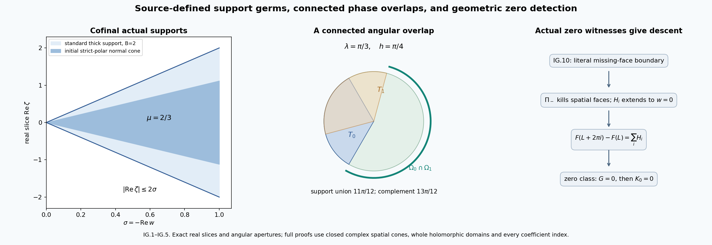
Figure IG.1. Left: exact one-spatial-coordinate real slice of IG.2 with initial strict polar margin \(\mu=2/3\), whose spatial bound is \(|\Re\zeta|\le\sqrt5\sigma/2\), \(\sigma=-\Re w\); it lies strictly inside the standard bound \(2\sigma\). The full proof uses complex spatial norms. Center: \(\lambda=\pi/3\), phase spacing \(h=\pi/4\); neighboring support sectors have union aperture \(11\pi/12<\pi\), and their common connected normal complement has aperture \(13\pi/12>\pi\). A normalized covariable disc \(|z|<1/16\), with phase half-neighborhood \(\pi/24\), has the exact positive polar margin \(\cos(3\pi/8)-1/8\). Right: IG.10–IG.14's actual face-witness projection, normal-zero overlap extension, monodromy datum and zero test. The editable figure, exact data and reproducible source are linked below. The outer normal/spatial source radii are 3.
Editable SVG · Exact data · Figure source

Mathematical identification and its product interface
| Assertion | Complete proof |
|---|---|
| Source-defined support stalks and cofinal actual pointed cones | IG.1, compact normal-direction argument IG.2–IG.4; definition on inspected free source p.5 |
| Whole-domain holomorphic top representatives and actual missing-face zero witnesses | IG.2, explicit strict PSH exhaustions IG.7–IG.8, exact DLH.1–DLH.4 existence and R/V resolutions |
| Arbitrary whole-phase/projectivized section gives strict common-domain angular datum | IG.3, IG.10–IG.13, including finite actual overlap witnesses |
| Full homogeneous coefficient bounds and inverse signs, every spatial index and fixed derivative tail | AN.2–AN.4 applied to the angular datum derived in IG.3 |
| Geometric zero detection and actual germ/sheaf identification | IG.4, monodromy followed by negative Laurent uniqueness |
| Arbitrary nonlinear geometric coordinate overlaps and triple identities | IG.5, actual Taylor remainder, source pullback and zero detection |
| Ordinary zero-section and actual off-zero restriction compatibility | IG.16, the complete ordinary Laurent calculation, and §5.44, OC.1–OC.4 and TC.1–TC.4 |
| Full canonical mixed pole/log proper cup/excision/trace and ring compatibility | IM.1–IM.6 below |
| Full infinite-order support-preserving degree-one/all-degree and derived diagrams | Actual finite full-infinite diagrams and all-degree strict module-derived action are proved in §5.46, ID.1–ID.6, with every geometric and common-domain premise checked |
| Every matrix relation/flatness/faithfulness, ordinary/mixed scalar change, Späth/reconstruction, propagation/purity/separation, special/monodromy/D-type, finite poles/order/half-order/C1/initial generator/arbitrary analytic proper, BB/KL/GL14/GL16/affine/critical/factorization and sourcing/proof obligation | Matrix relations/right flatness are proved in §5.47 and proper-ideal detection/unit injectivity/faithful exact extension in §5.48; the other listed obligations retain their separate scope after IM.6 |
The geometric identification is multiplicative by IM.1–IM.6 below. A particular module-derived application still requires the exact cone-open, round-domain, support-to-output and common-collar hypotheses of §5.43; no such application is inferred here.
The full mixed holomorphic relative-cone product.
We work in the actual holomorphic relative-cochain complexes, with fixed proper collars and a finite, bounded Dolbeault/Čech contraction chosen for the entire input family. In particular, the essential kernel \(e^{1/w}/(2\pi iw)\) remains a holomorphic complement coefficient throughout.
The complete coefficient/forward-kernel construction is §5.44, IK.1–IK.8, strict angular normalization is AN.1–AN.4, and the full ordinary trace is TC.1–TC.4. IG.1–IG.5 above supply the arbitrary-section geometric identification and its zero detector.
Finite-order equality of the actual canonical classes, including all principal-log and normal-localization corrections, is §5.41, CP.1–CP.6 together with §5.39, NL.1–NL.7. The full resolution, cube, excision and normalized-trace proofs are §§5.34–5.35, R.1–R.7 and V.1–V.6. The weighted existence, Hilbert representation, graph approximation and reweighting arguments used here are §5.43, DLH.1–DLH.4.
The freely accessible human specifications are Micro-hyperbolic systems, §3.1, and Holonomic systems III, III.2. Their recalled symbol calculus is not used to discharge a premise. All new analytic contraction and limit arguments are proved below.
IM.1. A bounded finite-column contraction on one actual family
Consider any one of the finite relative cubes in IG.2, including its whole-domain component. Every face domain has the explicit smooth proper strictly plurisubharmonic exhaustion IG.7–IG.8; the whole domain has the ordinary disc exhaustion. Let \(m\) be its complex dimension. Work with a specified family of cochains and their differentials that is locally bounded and convergent on each compact face domain. The family may include every positive-head truncation of a finite operator list and their actual output/overlap cochains. There is no coefficient-dependent domain.
For each face choose the graph-domain cutoffs and the smooth derivative majorant \(\psi\) of DLH.2. Define degree weights
\[ \begin{gathered} \varphi_q=\Phi+(q-m)\psi,\\ 0\le q\le m+1. \end{gathered} \tag{IM.1} \]Choose \(\Phi=\chi\circ\psi_0\), with \(\psi_0\) the displayed strict exhaustion, so large that every \(\varphi_{q+1}\), \(1\le q\le m\), satisfies DLH.7. It is enough that the smallest Levi eigenvalue of \(\Phi\) dominate \((m+1)\|\partial\bar\partial\psi\|+2|\partial\psi|^2+2e^\psi\). DLH.4's explicit increasing convex step construction supplies this domination on successive compact exhaustion levels. The same construction makes the locally bounded envelope of all specified input cochains and their differentials square-integrable with each of the finitely many weights. To see this directly, on exhaustion shell \(k-1\le\psi_0<k\) increase \(\chi(k-1)\) above \(k+\log(1+\int_{\psi_0\le k}E^2e^{(m+1)|\psi|})\). The shell contribution is then at most \(e^{-k}\). The one envelope \(E\) is locally finite because the entire family converges on compacts.
Choose face weights in increasing intersection cardinality. For every restriction from a parent face to a smaller child intersection, enlarge the child's \(\Phi\) further so that
\[ \begin{gathered} \varphi_{q,\mathrm{child}}\\ \ge\varphi_{q,\mathrm{parent}}\big|_{\mathrm{child}}\\ \text{for every }q. \end{gathered} \tag{IM.2} \]There are finitely many parents and degrees; their required values and Hessian bounds are locally bounded on the child's exhaustion sublevels, so the same convex construction supplies them simultaneously. Restrictions are then bounded with norm at most one. Equal face domains use the same weights. Include all neighboring-phase intersection domains in this finite selection; restrictions between the finitely many covers obey the same condition.
Let \(H_q=L^2_{(0,q)}(W,\varphi_q)\), and let \(\delta_q\) be maximal distributional \(\bar\partial\). It is closed: convergence in the source and target norms gives distributional convergence on compacts and preserves the distributional equation. Its kernel is closed. DLH.1–DLH.4, with the consistent consecutive three weights IM.1, gives \(\operatorname{im}\delta_{q-1}=\ker\delta_q\), and a solution of norm at most the norm of the right side. Choose the unique solution orthogonal to \(\ker\delta_{q-1}\); it is linear and has the same norm bound, since orthogonal projection removes a closed-kernel vector without changing its differential. Denote this bounded right inverse on closed forms by \(R_q\). Put
\[ \begin{gathered} h_q=R_q\Pi_{\ker\delta_q},\\ \pi_0=\Pi_{\ker\delta_0},\\ \pi_q=0\ (q>0). \end{gathered} \tag{IM.3} \]The projections exist by the Hilbert proof DLH.1. Weak degree-zero closed forms are holomorphic by R.3. Directly, on the actual maximal graph domains,
\[ \begin{gathered} \delta h+h\delta=1-i\pi,\\ h^2=0,\\ h i=0,\\ \pi h=0,\\ \pi i=1. \end{gathered} \tag{IM.4} \]For \(q>0\), \(\delta h_q=\Pi_{\ker\delta_q}\), while \(h_{q+1}\delta f\) is the unique solution orthogonal to that kernel, namely \(f-\Pi_{\ker\delta_q}f\). The same argument in degree zero gives the first identity with the holomorphic projection. The output of \(R_q\) is orthogonal to \(\ker\delta_{q-1}\), proving the three side identities. This proves an actual bounded contraction, not a choice of an unproved continuous inverse.
Let \(d_v=(-1)^r\delta\) in cube cardinality \(r\), and let \(d_h=d_C\) be the finite restriction differential. Set \(h_v=(-1)^rh\), so IM.4 holds with \(d_v\). If the cube has at most \(L\) opens, \(d_hh_v\) increases cardinality and its \((L+1)\)-st power is zero. Define the finite operators
\[ \begin{gathered} A=\sum_{k=0}^{L}(-d_hh_v)^k,\\ \mathsf H=h_vA,\\ \mathsf P=\pi A. \end{gathered} \tag{IM.5} \]With \(D=d_v+d_h\), they satisfy
\[ \begin{gathered} D\mathsf H+\mathsf H D=1-i\mathsf P, \\ \mathsf P D=d_C\mathsf P, \\ \mathsf P i=1. \end{gathered} \tag{IM.6} \]Here is the algebraic verification. The finite sum is \((1+d_hh_v)^{-1}\). Use \(d_vh_v+h_vd_v=1-i\pi\), \(d_vd_h+d_hd_v=0\), and \(d_h^2=0\). Expansion gives \([D,1+d_hh_v]=-d_h+d_hi\pi-d_hh_vd_h\). Substitute this into the commutator with its finite inverse, use \(h_vi=0\) and \(d_hi=i d_C\), and telescope to obtain the first identity. Applying \(D\) on both sides gives \(i(\mathsf P D-d_C\mathsf P)=0\), so the second holds because \(i\) is injective. The third follows from \(h_vi=0\). No infinite operator series appears in this verification.
All operators in IM.5 are bounded on the finite sum of face Hilbert spaces, and preserve the actual graph domains used by these identities. Restrictions preserve graph domains because they commute with distributional differentiation and satisfy IM.2 in both adjacent degrees. A convergent locally bounded input family fits these one-time weights; dominated convergence makes it converge in each chosen graph norm. IM.5 therefore gives convergence of its primitives and holomorphic projections. Holomorphic weighted-\(L^2\) convergence implies normal convergence on each compact: the iterated disc mean-value inequality bounds its square by a fixed local \(L^2\) norm, weights are comparable to constants on a compact enlargement, and Cauchy bounds every fixed derivative. This is the precise continuity used below.
IM.2. The full holomorphic cup/excision/trace cochains
Fix \(P,Q\) in the full coefficient class on one actual common base/projective product. Let \(R=P\circ Q\) be the complete infinite contraction of IK.2–IK.3. Choose a common slightly larger coefficient compact, all base/covariable Cauchy margins, the negative factorial constant and the positive every-\(\varepsilon\) prefactors before any summation. IK.5 gives normally convergent pole/log/holomorphic kernels on the coordinate-punctured and source thick-complement domains. Its inequalities are the source III.2 inequalities \(>\), not the distinct III.3 special-fibration inequalities \(<\).
Choose finitely many normal phases with the source domains/cones of IG.2–IG.3, with adjacent spacing \(h<2\lambda\) and \(2\lambda+h<\pi\). A common \(\lambda,B_i\) is allowed for the finite symbol/product list, but every cone is phase-local: at phase \(\phi_i\) use its rotated convex cone \(\mathcal G_i=\mathcal G_{\phi_i}(\lambda,B)\) of IG.5. At a neighboring pair use the separate cone centered at \(\psi_i=(\phi_i+\phi_{i+1})/2\), with half-angle \(\alpha=\lambda+h/2\) and spatial slope \(B_i/\cos\alpha\). It contains both phase cones: on their union the rotated normal angle has absolute value at most \(\alpha\), and
\[ \begin{gathered} -\Re(e^{i\phi_i}w)\\ \le\frac{\cos\lambda}{\cos\alpha}[-\Re(e^{i\psi_i}w)] \end{gathered} \tag{IM.18} \]holds at the appropriate endpoint phase, by \(\cos(h/2)+\tan\alpha\sin(h/2)=\cos\lambda/\cos\alpha\). Thus its spatial slope contains the endpoint slopes as well. Since \(\alpha<\pi/2\), this neighboring cone is pointed. No single pointed cone is chosen to contain the whole circle of rotated phase cones. The domains of all input symbols and finitely many intermediate products are intersected once; every subsequent Cauchy margin, cone constant and collar is fixed on a smaller common product.
Choose once
\[ \begin{gathered} \lambda<\lambda'<(\pi-h)/2,\\ B'_k>\frac{B_k}{\cos(\lambda+h/2)}\\ >\frac{B_k}{\cos\lambda}. \end{gathered} \tag{IM.19} \]The stronger spatial choice also handles the neighboring convex cones on the same product. It retains \(h<2\lambda'\) and \(2\lambda'+h<\pi\). Define the standard normalization supports \(T'_i=T_{\lambda',B',\phi_i}\), and on a neighboring pair \(T'_{i,i+1}=T_{\lambda'+h/2,B',\psi_i}\). They respectively contain \(\mathcal G_i\) and the neighboring convex cone just constructed. Their complements have exactly the normal/spatial open covers IG.6, with the new angle and spatial constants; every intersection has the literal IG.7–IG.8 exhaustion. Thus these supports, not an undeclared cover of a convex cone, are the normalization complexes to which IM.1 will be applied.
For the final full-dimensional convex supports take \(\mathcal G'_i=\mathcal G_{\phi_i}(\lambda',B')\), and on each neighbor \(\mathcal G'_{i,i+1}=\mathcal G_{\psi_i}(\lambda'+h/2,B')\). Then \(T'_i\subset\mathcal G'_i\) and \(T'_{i,i+1}\subset\mathcal G'_{i,i+1}\) by IG.5. Each is pointed and stable under addition. All of this geometry is selected before any truncation or weight construction. Put \(\alpha'=\lambda'+h/2<\pi/2\) and \(K_k=B'_k/\cos\alpha'\). Choose a neighboring-overlap half-width \(\eta_*>0\) with \(\alpha'+\eta_*<\pi/2\), and shrink one covariable polydisc so that
\[ \begin{gathered} \sum_k K_k|z_k|\\ <\tfrac12\cos(\alpha'+\eta_*). \end{gathered} \tag{IM.20} \]Give the actual covector-phase neighborhood of \(\phi_i\) half-width \(h/2+\eta_*\). Its neighboring intersection is centered at \(\psi_i\) and has half-width \(\eta_*\), including the last/first overlap on the lifted phase line. These phase intervals cover the entire circle since their half-width exceeds \(h/2\). For a phase cone, the sum of its normal half-angle and this covector half-width is \(\lambda'+h/2+\eta_*=\alpha'+\eta_*\); for its neighboring cone, the corresponding sum is also \(\alpha'+\eta_*\). Thus the very same IM.20 polar margin covers both kinds of supports on their actual phase neighborhoods, rather than only at the finite phase centers.
IG.4's polar inequality, applied to the radial bound \(|\zeta_k|\le K_k|w|\), proves admissibility for every support in this finite phase/neighbor system. The covariable shrink is one-time and common to all homogeneous and spatial indices.
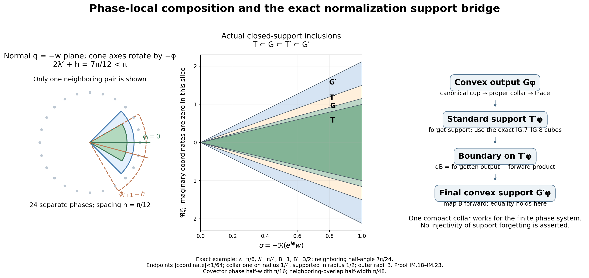
Figure IM.2. The exact example has \(\lambda=\pi/6\), \(\lambda'=\pi/4\), \(h=\pi/12\), \(B=1\), \(B'=3/2\). Its final neighboring normal half-angle is \(7\pi/24\), so the support union aperture is \(7\pi/12<\pi\). Covector-phase intervals have half-width \(\pi/16=h/2+\eta_*\); neighboring overlaps have half-width \(\pi/48=\eta_*\). The central panel is the real slice \(\Im(e^{i\phi}w)=\Im\zeta=0\); the proof uses complex spatial norms. Endpoints have coordinate radii \(1/64\), the collar is one on radius \(1/4\) and supported in radius \(1/2\), and the outer source radii are 3. The arrows are the literal support maps IM.21–IM.23: the boundary is on \(T'\), then mapped forward to final \(\mathcal G'\).
Editable SVG · Exact data · Figure source

In triple difference coordinates \(a=s-u\), \(b=v-s\), the singularity lists are independent. Put the actual two kernel relative cubes on the source \((u,a,b)\) and form their entire tensor-to-cube map V.16. Holomorphic joint coefficients may be multiplied after that map. All lower complement entries and all Dolbeault components are retained; this is the same full operation corrected in TC.1–TC.3, with more general cone complement opens.
Augment this finite source cube to the full cone for the intersection of the two actual kernel supports using V.6's smooth Čech row contraction. Choose a fixed smooth partition on that union complement subordinate to its finite complement opens. Such a partition exists by the explicit locally finite ball/closure construction R.5: group the locally finite small-ball functions by the finitely many opens and normalize their sum. On each compact only finitely many balls occur, and their closures lie inside the respective opens. Multiplying a holomorphic face coefficient by the corresponding cutoff or its derivative consequently extends by zero only on a neighborhood where the cutoff is zero. It never extends an essential singularity across its support. This addresses individual pole/log/spatial faces as well as the normal origin.
The source intersection has a proper intermediate fiber. In the rotated normal coordinate write \(\sigma_a=-\Re a_t\ge0\), \(\sigma_b=-\Re b_t\ge0\); their sum is the final \(\sigma\). All imaginary and spatial intermediate coordinates are bounded by the common constants times \(\sigma\). Choose the actual outer source first, and an inner endpoint product satisfying AN.20 for the largest constants of the finite final phase/neighbor cones just selected. These have normal half-angle at most α′ and spatial slope at most K_k. For endpoint radii δ one may require δ+2δ/cosα′<R_t/3 and δ+2K_kδ<R_k/3 in the actual source polydisc. A fixed collar equal to one on these inner intermediate polydiscs and supported inside the source half-radii then works for every phase and neighboring pair. Only this compact collar and the domain margins are uniform across the finite phase system; its entire circle of supports is not put in one pointed cone. Thus the entire intersection over the inner endpoint domain is inside a fixed compact intermediate collar with a positive source-boundary margin. Use one collar \(\eta\), equal to one near this entire closed intersection and compactly supported in that actual source. The controlled localization is
\[ \begin{gathered} L_\eta(a_0,b_0)=\\ \left(\begin{gathered} \eta a_0+\delta\eta\wedge b_0,\\ \eta b_0 \end{gathered}\right). \end{gathered} \tag{IM.7} \]The first coefficient is a genuine whole-domain cochain: \(\delta\eta\) is supported away from the closed intersection, where \(b_0\) is smooth. The second remains a complement coefficient. On the output complement the source intersection is empty, since the cone is stable under addition. There \(\eta b_0\) is properly supported over the output and may be integrated on a compact smooth intermediate fiber. At an individual kernel support face the augmented coefficient is already smooth by the subordinate partition; there is no undefined pole evaluation at a ray endpoint.
Apply the actual normalized relative trace
\[ \begin{gathered} (a_0,b_0)\longmapsto\\ \left(\begin{gathered} \operatorname{Tr}_qa_0,\\ (-1)^N\operatorname{Tr}_{q-1}b_0 \end{gathered}\right),\\ \operatorname{Tr}_q=(-1)^{N(q-N)}I_q. \end{gathered} \tag{IM.8} \]These are the V.4/W.3 chain-map signs; TC.11 is their one-dimensional case. The base-antiholomorphic components remain in IM.7–IM.8; only insufficient fiber-degree terms vanish upon integration. Compact integration of the first component is on the collar-derivative region separated from the source intersection. Compact integration of the second is only on the actual output complement. No complement coefficient is extended across the output support.
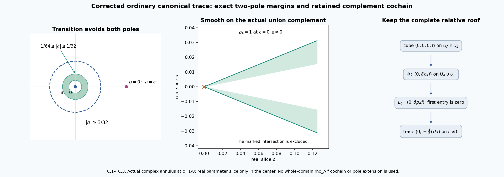
Figure IM.3. The two-pole calibration is §5.44, TC.1–TC.4. At \(c=1/8\), the cutoff transition is \(1/64\le|a|\le1/32\), so \(|b|\ge3/32\). The full cube is augmented to \((0,\bar\partial\rho_A f)\) on the union complement and traced to \((0,-\oint f\,da)\) on \(c\ne0\). The central plot is a real parameter slice; the marked joint intersection is excluded. This figure illustrates the earlier complete trace proof used by IM.7–IM.8; it does not introduce a whole-domain pole extension.
Editable SVG · Exact data · Figure source

Denote the resulting output relative cycle by \(\mathcal C_i(P,Q)\) at phase \(i\), on the convex support \(\mathcal G_i\). After this output is formed, literally forget its support to \(T'_i\) before weights, positive truncations or holomorphic-row normalization. If \(H\subset K\), write \(\mathsf F_{H,K}\) for that chain map. In the full relative cone it is
\[ \begin{gathered} \mathsf F_{H,K}(a,b)=(a,b|_{M\setminus K}),\\ \mathsf F_{K,L}\mathsf F_{H,K}=\mathsf F_{H,L}. \end{gathered} \tag{IM.21} \]It keeps the whole-domain entry, restricts every complement entry and commutes with the total differential. When covers differ, use the actual V.6 refinement/augmentation roof with all entries, and then the IG.6 standard cover of \(T'_i\). On a neighboring pair first use its pointed common convex support and then \(T'_{i,i+1}\). The same restrictions supply the comparison maps from either phase cube to that neighboring standard cube. This is a map of actual complexes; no support-forgetting injectivity is claimed. The normalization bridge is exactly
\[ \begin{gathered} \mathcal G_i\longrightarrow T'_i \longrightarrow\mathcal G'_i,\\ \mathcal G_{i,i+1}\longrightarrow T'_{i,i+1}\\ \longrightarrow\mathcal G'_{i,i+1}. \end{gathered} \tag{IM.22} \]All face exhaustion and bounded-normalization arguments below take place on the standard \(T'\) cubes. The output cycle represents exactly the canonical unshifted cup, controlled support/excision and shifted normalized trace. This is a construction by the actual R/V augmentation roofs, not an operator evaluation. The ordinary subring calibration is TC.15; the earlier finite pole/log calibration is CP.1–CP.6/NL. The same source collar and finite partitions work for the entire input family.
All fixed output derivatives of these cochains depend continuously on the kernel coefficients on compact subsets of their actual holomorphic face domains. To verify this, on any compact source union-complement set a subordinate partition has finitely many terms supported on compact subsets of the relevant face opens. Kernel convergence and all fixed derivatives hold there by IK.5. The source total coefficient in IM.7 uses only the compact collar-derivative region. On a compact output-complement set, properness gives a compact union-complement fiber family, so differentiation under the fixed compact smooth integration gives the same bounds. These statements cover all individual ray/spatial endpoints by the full augmentation, rather than integrating a singular raw product across them.
IM.3. Actual angular overlap primitives for the product
A branch change of the kernel \(P\) is its explicit normal-face boundary \(d\beta_P\), where \(\beta_P\) is AN.11 with the full normally convergent \(G_P\). The harmonic-number holomorphic part is another explicit normal-face boundary. The same holds for \(Q,R\), with their exact source factorial signs. These are actual common-domain cochains; no supported logarithmic term is discarded.
For a bilinear unshifted cup \(\mu\), closed degree-\(N\) inputs satisfy
\[ \begin{gathered} \mu\left(\begin{gathered}P+d\beta_P,\\Q+d\beta_Q\end{gathered}\right)\\ -\mu(P,Q)\\ =d\left\{\begin{gathered} \mu(\beta_P,Q)\\ +\!(-1)^N\mu\left(\begin{gathered}P\\+d\beta_P,\\\beta_Q\end{gathered}\right) \end{gathered}\right\}. \end{gathered} \tag{IM.9} \]This is the ordinary differential Leibniz rule with \(|\beta_P|=N-1\). A trace of degree \(-N\) obeys \(d\operatorname{Tr}=(-1)^N\operatorname{Tr}d\), so the corresponding output primitive is \((-1)^N\) times the trace of the braces. Append the \(-\beta_R\) term when subtracting the output kernel.
All covers and support enlargements may be refined to the finite neighboring-phase common cover of IG.3. If two augmentation partitions differ, apply V.6's finite Čech row contraction to their difference: kill its lowest nonzero row, subtract its total boundary, and continue through the finite Dolbeault degrees. This explicitly constructs the comparison homotopy. Each step is multiplication by the fixed partition, restriction and a fixed derivative. Collar changes are the exact IM.7 homotopy: for \(\eta'-\eta\), the primitive is \(((\eta'-\eta)b_0,0)\), extended where that difference is supported away from the intersection. Its differential is the difference of the localized cochains. A common properly supported collar may instead be used throughout, eliminating that change. The resulting finite comparison homotopies include every complement component and all shift signs IM.8.
Consequently the phase cycles
\[ \begin{gathered} D_i=\mathsf F_{\mathcal G_i,T'_i}\mathcal C_i(P,Q)\\ -\kappa'_i(R) \end{gathered} \tag{IM.10} \]have actual neighboring overlap primitives \(T_i\) on the standard common support \(T'_{i,i+1}\) and common domain. Here \(\kappa'_i(R)\) is the forward kernel supported on \(T'_i\), or equivalently its original forward class mapped through \(T_{\lambda,B,\phi_i}\subset\mathcal G_i\subset T'_i\). Restrictions to the neighboring support are understood in every difference. The degree-zero chain maps IM.21 add no trace, shift, or coefficient-frame sign. They are the finite cochains just constructed from IM.9, the branch/harmonic face primitives, and the cover/collar homotopies. Their construction consists of fixed finite operations and compact traces on actual common domains, so the continuity statement of IM.2 applies to them too. This supplies the strict chain-level angular data needed for normalization; it is not an assertion of equality of abstract phase classes without witnesses.
IM.4. Full positive truncations, all infinite contractions and actual tails
Let \(P^{[J]}\) retain every negative homogeneous coefficient of \(P\) and every nonnegative coefficient through \(J\); define \(Q^{[J]}\) similarly. They are actual finite-order symbols, retaining all spatial Taylor indices, on the same coefficient product. Their input bounds have the same constants as the full symbols. Let \(R^{[J]}=P^{[J]}\circ Q^{[J]}\).
The complete fixed-degree contraction and its derivative tails are the IK.2–IK.3 estimates. To make their uniform use explicit, the absolute scalar majorant is
\[ \begin{gathered} S_\ell(E,D,L)=\\ \sum_{J_+-M_--m=\ell} \begin{gathered} E^{J_+}D^{M_-}L^m\\ \frac{M_-!m!}{J_+!}, \end{gathered}\\ E(D+L)<1. \end{gathered} \tag{IM.11} \]All base/covariable margins and constants are chosen once. For \(\ell\ge0\) its bound is \(E^\ell/[\ell!(1-ED)(1-EL)]\); for \(\ell=-n<0\) it is \(n!(D+L)^n/[1-E(D+L)]^{n+1}\). Its positive-degree cutoff tails are geometric, and its negative-degree cutoff tails are the finite derivatives of \(a^K/(1-a)\), \(a=E(D+L)<1\). Thus truncating one positive input index gives a tail tending to zero at every fixed output degree, uniformly on the common coefficient compact. Cauchy on one enlargement gives every fixed base and normalized-covariable derivative tail. The arbitrary input every-\(\varepsilon\) choice makes \(E\) as small as required for any output positive bound. Negative output uses one fixed such choice. None of these constants depends on the truncation index.
It follows that \(R^{[J]}_\ell\to R_\ell\) normally for each \(\ell\), while all \(R^{[J]}\) have one uniform factorial negative bound and the uniform every-\(\varepsilon\) positive bounds. Spatial coefficient extraction on the common enlarged \(z\)-polydisc has one Cauchy cost \(r_z^{-|\beta|}\). The full forward-kernel bounds IK.18–IK.21 therefore dominate every \(K_{R^{[J]}}\) by the same summable series on each permitted compact complement. This includes the mixed positive-homogeneous/negative-normal terms \(j=|\beta|-n-1\ge0\); their majorant is the exact rational series \((1-x-q)^{-2}\), with one fixed strict choice \(x+q<1\). Termwise coefficient convergence and the common dominator give
\[ \begin{gathered} K_{P^{[J]}}\to K_P,\\ K_{Q^{[J]}}\to K_Q,\\ K_{R^{[J]}}\to K_R \end{gathered} \tag{IM.12} \]normally on every actual holomorphic face domain, with every fixed derivative. Fixed derivative tails follow by compact enlargement. The logarithmic branch factors are bounded on the relevant cut compacts; the harmonic-number factors are absorbed by slightly larger strict ratios. Every spatial, homogeneous and contraction index is included. This is convergence of holomorphic complement cochains, not of ordinary diagonal currents.
IM.2–IM.3 now gives convergence of the entire output/overlap cochain family \(D_i^{[J]},T_i^{[J]}\) to \(D_i,T_i\) on every compact actual domain, including their differentials. These cycles and their overlap primitives have already been mapped by IM.21 into the fixed standard T′ phase/neighbor cubes. Fit this whole family to the one-time weights and operators IM.1–IM.6 on exactly those IG.7–IG.8 face domains, with λ′ and λ′+h/2 in place of the initial angles. No acyclicity for an unspecified convex-cone cover is being used. Their projections and their actual primitives then converge in those fixed weighted graph models. This is why an arbitrary sequence of high-order finite current primitives is unnecessary and is not summed.
IM.5. A literal product-difference primitive, without a closed-image assumption
Normalize each phase cycle on its standard T′_i cube using IM.6; every support/domain restriction was fixed in IM.19–IM.22 before this step. Since its degree is \(N\), its holomorphic cube projection has only the top holomorphic row entry. Write it as \(f_i\) in the physical kernel coordinate of IG.2. The primitive \(\mathsf H_iD_i\) is an actual relative-cube primitive for the difference between \(D_i\) and that top entry.
On a neighboring overlap, first restrict both phase cubes and their cochains to the fixed standard T′_{i,i+1} cube, with its IG.7–IG.8 exhaustions and common weights. There \(D_i-D_{i+1}=dT_i\). Subtract the two normalization primitives and project on the common holomorphic overlap cube. Because that projection is a chain map and is the identity on holomorphic rows, we obtain the actual holomorphic face primitive
\[ \begin{gathered} t_i=\mathsf P_{i,i+1} \left\{\begin{gathered} T_i-\mathsf H_iD_i\\ +\mathsf H_{i+1}D_{i+1} \end{gathered}\right\},\\ f_i-f_{i+1}=d_Ct_i. \end{gathered} \tag{IM.13} \]Apply the finite negative spatial Cauchy projections to these top and face entries. They kill every spatial-face coefficient and produce the normal-zero correction \(H_i\) on the whole common thick domain. Glue their lifted functions with cumulative corrections exactly as IG.12–IG.13. Finally AN.2–AN.4 gives a normally convergent pole/log pair \(\nu(D)=(K_0,G)\), with every coefficient bound on one product. All these steps are finite sums, the bounded operators IM.5 and actual compact Cauchy integrals. Thus
\[ \nu(D^{[J]})\longrightarrow\nu(D) \tag{IM.14} \]normally on all actual compact pole/log domains, including the normal-zero face domains for \(G\). No unspecified inverse or quotient topology is used.
For each finite-order pair the earlier CP.1–CP.6/NL proof says that \(D^{[J]}\) is zero as a canonical kernel germ, with its full principal-log correction. IG.4's geometric zero test therefore gives \(\nu(D^{[J]})=0\) as a germ. These normalized functions are holomorphic on the same connected actual domains chosen above; vanishing on a smaller nonempty neighborhood implies vanishing throughout by the identity theorem. Hence every term on the left of IM.14 is the literal zero pair. It follows that \(\nu(D)=0\). This passage uses a proved bounded normalization and zero detector, rather than assuming that the image of a boundary operator is closed or that cohomology commutes with an unspecified limit.
Here is the resulting literal boundary. For each phase, decompose its projected top entry by the actual AN.6 spatial Cauchy projections. Let \(S_{i,k}\) be its spatial-face terms, and let \(C_i\) be the finite cumulative normal-zero correction in IG.3. Since its normalized pole/log pair is zero, its glued fully spatial-negative function has only the nonnegative normal part \(J\). Thus its fully negative spatial top entry is \(J-C_i\), holomorphic on the normal face. With \(r_N=(-1)^{N(N-1)/2}\), define the actual face primitive in full-cone Čech coordinates by
\[ \begin{gathered} c_{i,\widehat0}=r_N(J-C_i),\\ c_{i,\widehat k}=r_N(-1)^kS_{i,k}\\ (1\le k\le d). \end{gathered} \tag{IM.15} \]For \(N\ge2\), these are Čech degree \(N-2\) complement coordinates. Their V.15 conversion to the ordinary relative cube contributes \((-1)^{N-2}\); the physical top function \(f_i\) has full-cone top coordinate \(-r_Nf_i\), whose Čech degree \(N-1\) conversion contributes \((-1)^{N-1}\) and yields the calibrated ordinary top \(r_N(-1)^Nf_i\). Thus IM.15 and its differential use the same exact frame/shift convention as IG.2/V.17. For \(N=1\), there is no degree-minus-one complement face; the normal-face term instead uses the whole-domain primitive of AN.3. This exception retains the TC one-dimensional roof and its negative relative trace. These functions are obtained by the displayed Cauchy integral projections, on their actual omitted-coordinate faces; all fixed derivatives and tails were controlled in IM.12–IM.14. Add this face primitive to the actual \(\mathsf H_iD_i\), with the cone-to-cube identification V.15. The result \(B_{P,Q,i}\) satisfies
\[ \begin{gathered} dB_{P,Q,i}\\ =D_i=\mathsf F_{\mathcal G_i,T'_i}\mathcal C_i(P,Q)\\ -\kappa'_i(P\circ Q). \end{gathered} \tag{IM.16} \]This is a literal relative-cone identity on \(T'_i\), with all total and complement entries retained. Its Dolbeault primitives are locally \(L^2\) on exactly those standard-cube face domains, and its holomorphic face primitives are normally convergent there. None is an ordinary distribution extension of the positive-head singularity. The boundary is not asserted on the initial \(\mathcal G_i\). Map it forward once more to the specified full-dimensional convex support \(\mathcal G'_i\):
\[ \begin{gathered} d\mathsf F_{T'_i,\mathcal G'_i}B_{P,Q,i}\\ =\mathsf F_{\mathcal G_i,\mathcal G'_i}\mathcal C_i(P,Q)\\ -\mathsf F_{T'_i,\mathcal G'_i}\kappa'_i(P\circ Q). \end{gathered} \tag{IM.23} \]The analogous identity holds on \(\mathcal G'_{i,i+1}\) for the neighboring comparisons. Every final support remains admissible by IM.20. The collar was selected for these final cones as well. Naturality of the entire cup/support/excision/trace roof identifies the first class with the canonical product of the input classes mapped to \(\mathcal G'_i\): the restriction maps commute with cup, their full augmentation roofs commute after the finite partition homotopies of IM.3, and compact trace commutes with restriction. If a source-support enlargement is used before cup, the same collar is one near its enlarged intersection; its excision comparison is therefore valid on the same proper family. Consequently IM.23 gives equality of the full canonical thick-cone classes on this exact common final support:
\[ \kappa(P)*\kappa(Q)=\kappa(P\circ Q). \tag{IM.17} \]The original holomorphic harmonic-number normalization and every branch change are among the explicit normal-face primitives used in IM.3/IM.15. Consequently IM.16 does not remove a supported principal-log correction by formal differentiation or by evaluation on solutions. Finite-subring calibration is the earlier CP/NL proof; TC supplies the corrected ordinary all-dimensional trace and line signs. The infinite correction is the full-cochain primitive IM.16.
IM.6. Unital ring, triple products, coordinates, and finite diagrams
The diagonal unit is the exact finite calibrated unit. IM.17 and the actual coefficient associativity IK.3 make \(\kappa\) a unital ring map for the full class. IG.3–IG.4 makes it the geometric sheaf identification; hence the ring product is the intrinsic canonical product on the source-defined projectivized diagonal sheaf. Arbitrary nonlinear transition maps IG.5 are now multiplicative because the actual pair pullback, unshifted cup and normalized proper trace commute with that coordinate change. V.4's determinant/real-orientation computation applies on the same compact collar integrations, and IG.15 supplies the common support margins.
For a triple product use one pointed full-dimensional cone at each fixed phase for all three kernels and their finitely many intermediate products; use a separate pointed midpoint cone on each neighboring overlap. Choose λ,λ′,B,B′ once for that finite list as in IM.18–IM.22. Repeat the literal normalization bridge and final-support map there. Only the compact intermediate collar and outer-source/inner-endpoint margins are common across the finite phase system; there is no pointed cone containing the full phase circle. Nonnegative normal lengths add, bounding both intermediate points in one compact family inside the actual coefficient domain. The complete triple contraction majorant is the IK.2 estimate with three homogeneous inputs and all three multiorders; its factorial factor is bounded by \(M_-!m!/J_+!\), as proved there. It gives absolute convergence, the factorial/every-\(\varepsilon\) output bounds and every fixed derivative tail. The corresponding finite full-cube cups and two compact proper traces have the same signs by V.12–V.14. Their order is immaterial by compact Fubini after the specified shift/line reordering. Alternatively both are the same actual coefficient triple product under the injective identification IG.4. No formal positive-degree completion occurs in either argument.
For any finite list of full symbols, matrices, relations, idempotents, maps, inverses and homotopies, take the finite intersection of their actual coefficient domains and the minimum of their finitely many Cauchy margins. Choose common negative and spatial constants and a finite phase cover. At each phase choose one common cone for that finite symbol/product list, and on each neighboring overlap choose its separate pointed cone, retaining 2λ′+h<π. Choose the standard T′ normalization cubes, the final convex G′ supports and one compact proper collar for the resulting finite system before performing any infinite contraction. The proof above fits all their finitely many product/overlap cochains and their entire positive-truncation families into one fixed finite weighted model. Every relation then holds on a single smaller actual neighborhood. There is no shrinking for each positive degree, spatial Taylor index or relation coefficient.
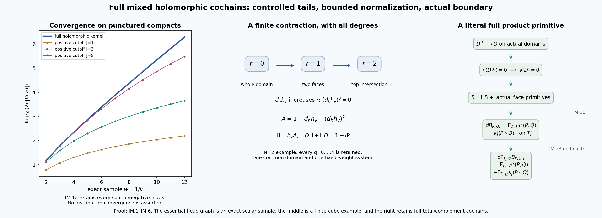
Figure IM.1. Left: exact samples \(w=1/k\), \(2\le k\le12\), of \(2\pi|K(w)|=k e^k\) for \(P=\sum_{j\ge0}\partial_t^j/(j!)^2\), and finite positive cutoffs \(J=1,3,8\), whose scaled values are the exact rational numbers \(k\sum_{j=0}^Jk^j/j!\). These are punctured-complement samples, not current boundary values. Center: for \(N=2\), the output cube has cardinalities \(r=0,1,2\), all ambient Dolbeault degrees \(q=0,\ldots,4\), and the finite inverse \(A=1-d_hh_v+(d_hh_v)^2\); no infinite homotopy series is drawn or used. Right: IM.13–IM.16 retains the full output and overlap cochains, proves the zero pair by bounded normalization, and constructs its actual relative-cone primitive. The editable figure, exact data and reproducible source are linked below. The full proof includes every normal dimension, every spatial Taylor index, both growth regimes and every fixed derivative tail.
The right panel displays IM.16 on the standard support \(T'_i\), with the actual \(\mathsf F_{\mathcal G_i,T'_i}\) support map and \(\kappa'_i\); its next arrow is IM.23 on final \(\mathcal G'_i\).
Editable SVG · Exact data · Figure source

This proves the full coefficient/geometric-kernel ring, its canonical mixed product, unit, associativity, nonlinear coordinate compatibility and ordinary zero-section restriction. A particular all-degree module-derived application still requires the exact cone-open, round-domain, common-collar and output-support hypotheses of §5.43. Section 5.47 proves the full arbitrary finite-matrix relation theorem and right flatness for all algebraic left modules, including the genuine ordinary zero-section restriction. Section 5.48 proves extension faithfulness and unit injectivity for every algebraic left module and sheaf in the full geometric and genuine ordinary zero-section rings. Other ordinary and mixed scalar changes, infinite Späth division and whole-germ reconstruction remain to be proved. Moving-sector propagation, purity, arbitrary-section separation, special action and monodromy stability, full infinite-order D-type linearity and faithful D-type embedding remain separate. Finite poles, intrinsic and half order, full C1 and characteristic cutoff, initial generators and arbitrary analytic proper regularity also remain required. Generalized and nonactual central characters, other regular complex characters, singular and parabolic blocks, full IC/Hecke/KL, GL14/GL16, stack/ind/restricted local systems, affine/critical/factorization and every other unresolved mathematical assertion retain their full scope.
5.46. Finite infinite-order diagrams on actual derived support modules
We realize any specified finite full-symbol diagram, including its product, zero, idempotent, differential, map and contraction identities, in one canonical ring on one newly chosen actual domain. Under the checked final-cone and support hypotheses, that ring acts on a strict module-derived support object in every degree. Supplied bounded finite-projective contractions transfer by the explicit tensor and Hom formulas below.
The complete geometric ring and mixed product are §5.45, IG.1–IG.5 and IM.1–IM.6. The entire earlier §5.43, DL.1–DL.9, DLG.1–DLG.7 and DLH.1–DLH.4 supplies the full relative-kernel action, analytic concentration and genuine module-derived construction; the §5.44 coefficient and trace proofs retain every homogeneous/spatial index and exact sign. A finite diagram uses one common domain; the whole symbol stalk need not be represented on a preassigned domain. The all-module right-flatness proof is Section 5.47; proper-ideal detection, arbitrary-module unit injectivity and faithful exact extension are proved in Section 5.48. Other scalar changes require separate proofs.
The freely accessible human target is Micro-hyperbolic systems, Corollary3.2.5. Every mathematical premise is proved here or in the complete earlier lesson proofs linked above.
ID.1. The final cone is precisely an admitted full thick cone
Fix any finite list of full infinite-order symbol germs, including all entries, products, idempotents, differentials, maps, inverses and homotopies in a specified finite diagram. Fix a nonzero real cotangent phase over its normalized projective chart. Translate the base point to zero and rotate the complex time coordinate so that this phase is zero. The pair pullback and input top-form determinant in IG.5/IM.6 transport the ring and its products, so this coordinate normalization preserves the canonical coefficient-frame conventions.
IG/IM supplies one actual product of coefficient domains, one common phase and neighboring support system, and literal finite product/zero witnesses before any infinite index is summed. At the chosen phase its final support is
\[ \begin{gathered} G=\left\{\begin{gathered}-\Re w=l\ge0,\\ |\Im w|\le\epsilon l,\\ |\zeta_j|\le A_jl\end{gathered}\right\},\\ \epsilon=\tan\lambda'>0,\\ A_j=B'_j/\cos\lambda'>0. \end{gathered} \tag{ID.1} \]This is exactly the full-dimensional cone of §5.43, (DL.11). In particular, no line support with empty ordinary interior is used. The cone is closed and convex by the triangle inequality in each constraint. If both a vector and its negative belong, their real-time lengths are zero, so every coordinate is zero; it is pointed. The strict inequalities hold at \(w=-1,\zeta=0\), giving ordinary interior. Put
\[ \begin{gathered} K_G=\left(1+\epsilon^2+\sum_jA_j^2\right)^{1/2}.\\ g\in G\Longrightarrow |g|\le K_G[-\Re g_t]. \end{gathered} \tag{ID.2} \]The assertion follows by squaring each displayed coordinate bound and adding. The empty spatial list, hence normal dimension one, is allowed. For a common neighboring cone use its own midpoint coordinates and its own constants \(\epsilon=\tan(\lambda'+h/2)\), \(A_j=B'_j/\cos(\lambda'+h/2)\); these are positive and finite by IM.19. A finite comparison uses the finite maximum of these constants. It does not put all rotated phases in one pointed cone.
ID.2. One actual round coefficient domain and one ring for the finite diagram
In these coordinates take
\[ \begin{gathered} D_R=(R e_t+\operatorname{int}G)\\ \cap(-R e_t-\operatorname{int}G),\\ R>0. \end{gathered} \tag{ID.3} \]Here \(e_t\) is the positive real time unit vector. Explicitly \(|\Re t|<R\), and the transverse bounds are \(|\Im t|<\epsilon(R-|\Re t|)\), \(|x_j|<A_j(R-|\Re t|)\). Thus it contains zero and is bounded by \(|u|<K_GR\). If \(u,z\in D_R\) and \(v-u,z-v\in G\), then \(v\) lies in its first open cone by addition to \(u\), and in its second by subtraction from \(z\). Hence \(v\in D_R\): this is the required roundness, not an assertion about ordinary Euclidean balls.
Choose the outer base/normal coefficient product first. A sufficiently small \(R\) puts \(\overline{D_R}\) inside the base coefficient domain and makes every difference of two points of \(D_R\) fit strictly inside every selected normal source radius: its time modulus is at most \(2R\sqrt{1+\epsilon^2}\) and its spatial moduli at most \(2A_jR\). Take the minimum of finitely many strict upper bounds on \(R\). The choice depends on this finite symbol/witness list, not on any homogeneous or spatial coefficient index.
Let \(\mathcal R=E(G;D_R)\) be the whole canonical degree-\(N\) kernel cohomology ring of §5.43. Each full symbol's forward holomorphic relative representative first forgets support from its standard \(T'\) to this final \(G\), then restricts to \(D_R\times D_R\). These are literal relative-complex maps. All complement entries remain on their actual complements; no infinite positive head is extended as an ordinary current.
The full product primitive IM.16 is on \(T'\); IM.23 already maps it forward to the final \(G\). Its restriction to \(D_R\times D_R\) therefore remains a literal boundary there. The resulting class is the product in \(\mathcal R\), not a different outer-domain product: for compact endpoint sets, the kernel-supported intermediate points belong to \(D_R\) by roundness. Nonnegative lengths add, so (ID.2) bounds those points. The closed intersection is consequently compact inside the actual intermediate domain. The controlled excision/collar comparison of DLG.3–DLG.5 restricts the outer cup/trace roof to this one proper family. Its finite partition homotopies keep every complement entry and its normalized trace sign. Thus the restricted IM.23 compares exactly the inner-domain canonical product.
IG.4 supplies actual finite zero witnesses for germ identities. IM.6 places their finite union and every selected product comparison on one later support/domain system. Reducing \(R\) there, as above, realizes every specified relation in the same \(\mathcal R\). The diagonal class is its genuine unit by the exact finite-subring calibration and DLG.5. Finite idempotents, complexes and their maps therefore become actual finite \(\mathcal R\)-diagrams with all their equations holding. This neither requires one fixed domain for every possible germ nor promotes coefficient-wise vanishing to an unwitnessed common-domain relation.
ID.3. Verify the input cone-open premise, rather than inherit it silently
Choose input opens \(\Omega_0\subset\Omega_1\) that are \(G\)-open for the final (ID.1) cone, and put \(S=\Omega_1\setminus\Omega_0\). Require its ordinary closure to lie in a sufficiently small output neighborhood \(U\Subset D_R\). Being open for an earlier smaller cone alone is not this premise.
There is a concrete test for the usual directional inputs. Write \(y=(\Im t,x)\), let \(g(y)\) have Lipschitz constant \(L\) in the actual transverse Euclidean metric, and put
\[ \begin{gathered} M_G=\left(\epsilon^2+\sum_jA_j^2\right)^{1/2},\\ \Omega_g=\{-\Re t>g(y)\},\\ LM_G<1. \end{gathered} \tag{ID.4} \]For \(a\in G\), write \(\sigma=-\Re a_t\ge0\). Its transverse displacement has norm at most \(M_G\sigma\). Then
\[ \begin{gathered} -\Re(t+a_t)-g(y+a_y)\\ \ge -\Re t-g(y)\\ +(1-LM_G)\sigma>0. \end{gathered} \tag{ID.5} \]So \(\Omega_g+G\subset\Omega_g\). Finite intersections/unions of such invariant opens are invariant, as is every strict lower real-time halfspace. Alternatively the admitted basis \(x+a e_t+\operatorname{int}G\) is invariant by convex-cone addition. These furnish actual input opens whenever their relative support satisfies the stated compact output condition. This calculation does not assert that every preexisting directional input passes the enlarged constants.
Choose \(U\subset B(0,r)\) and \(a>r\) so small that
\[ \overline{(U+G)\cap\{\Re t\ge-a\}}\Subset D_R. \tag{ID.6} \]This is an actual choice. If \(v=u+g\), \(|u|<r\), and \(\Re v_t\ge-a\), then \(-\Re g_t\le a+r\) and \(|v|\le r+K_G(a+r)\). An ordinary ball about zero lies compactly inside \(D_R\); first fix its radius, then choose \(r,a\) with that last bound smaller. All finitely many cones in an admissible comparison can use their largest \(K_G\). Intersecting both input opens with \(U+G\) leaves \(S\) unchanged and gives the exact supported object by the proved open-excision map of DL.7/DLG.7. From now on \(\Omega=\Omega_1\subset U+G\).
ID.4. Actual properness and the support-to-output inclusions
Set \(\omega=\{\Re t<-a\}\), \(S_*=\Omega\setminus\omega\). Both \(S\) and \(S_*\) are closed in \(\Omega_G\), and \(S\subset S_*\) because \(\omega\cap U=\varnothing\). Condition (ID.6) puts the ordinary closure of \(S_*\) compactly inside \(D_R\).
Let \(K\Subset\Omega\) be a compact output family. Its relevant auxiliary inputs belong to
\[ (K+G)\cap\{\Re t\ge-a\}. \tag{ID.7} \]This set is bounded by (ID.2). It is closed: a convergent sequence has a subsequence of its \(K\)-coordinates converging in \(K\), and the corresponding differences converge in the closed cone. It lies in \(\Omega\) because \(\Omega+G\subset\Omega\), and it lies inside the coefficient domain by (ID.6). Thus it is compact inside the actual source. Intersecting it with the relative closed support \(S_*\), or \(S\), preserves that compactness. This proves properness for the canonical action, including the source boundary condition.
The support-to-output premise is checked on the actual action source. Define \(A_G=\left\{\begin{gathered}(u,v)\in(\Omega\cap D_R)\\\times(\Omega\cap D_R):v-u\in G\end{gathered}\right\}\), with \(p_1\) and \(p_2\) the restrictions of the output and input projections. If an output \(u\in\Omega_0\), every supported input \(v\in u+G\) lies in \(\Omega_0\) and cannot lie in \(S\). Every output in this relation already lies in \(\Omega\); hence an output paired with an input in \(S\) lies in \(\Omega\setminus\Omega_0=S\). Therefore
\[ p_1(A_G\cap p_2^{-1}S)\subset S. \tag{ID.8} \]The same argument with the invariant halfspace \(\omega\) gives the corresponding inclusion for \(S_*\). The collar construction of DLG.4, applied to these compact source families, supplies actual properly supported cutoffs equal to one near the whole intersections. Its finite-output partition permits one collar for all entries of the specified finite diagram. Derivative-collar terms are away from the closed intersection; their complement coefficients are therefore defined there. No unrestricted complement function is extended over a kernel support.
If one performs several consecutive products, their nonnegative lengths add to the endpoint length. All intermediate points stay in \(D_R\) by roundness and satisfy the same bounds. One final collar can be chosen for the whole finite intersection. DLG.5's projection formula and eight-entry triple comparison then apply literally. The essential positive head has remained a holomorphic complement coefficient throughout.
ID.5. The genuine module-derived object and every-degree action
All hypotheses of the earlier complete DL/DLG construction are now checked for the actual full infinite symbols realized in \(\mathcal R\). Its exact analytic DLH existence and cone-topology concentration give
\[ \begin{gathered} \mathcal F=H^1_{S_*}(q_{G*}\mathcal O_\Omega),\\ R\Gamma_{S_*}(q_{G*}\mathcal O_\Omega)\\ \simeq\mathcal F[-1]. \end{gathered} \tag{ID.9} \]DLG.6–DLG.7 constructs a strict sheaf of left \(\mathcal R\)-modules \(\mathcal F\) using the full arbitrary-relative-kernel cup, complete cube augmentation, controlled proper excision and normalized trace. Its unit and multiplication identities are ordinary sheaf identities. These earlier proofs act on the whole kernel ring; the present full symbols require no supported-current shortcut or new growth premise.
Use its actual module-injective resolution \(J^\bullet_\mathcal R(\mathcal F)\), or its common natural vector-injective model endowed with this strict action. Then
\[ \begin{gathered} \mathcal Q_\mathcal R=\\ \Gamma_SJ^\bullet_\mathcal R(\mathcal F)[-1]\\ \in D(\mathcal R\operatorname{-Mod}(\Omega_G)). \end{gathered} \tag{ID.10} \]The complete DL.6/DLG.7 concentration roof identifies its underlying vector-derived object with \(R\Gamma_S(q_{G*}\mathcal O_\Omega)\), and identifies its operation by each \(r\in\mathcal R\) with the original canonical whole-relative-kernel operation in every degree. The proof uses the literal equality of support functors \(\Gamma_S\Gamma_{S_*}=\Gamma_S\) on injectives, the full finite support cube and the same proper collar. Thus (ID.10) is an actual object in the module-derived category, not an arbitrarily chosen collection of chain lifts of vector-derived endomorphisms.
Apply the actual selected full-symbol classes of ID.2 to this strict module object. Every finite operator relation, matrix identity and composition in the diagram holds there because it holds in the one ring \(\mathcal R\). For a coefficient-domain, cone or auxiliary-halfspace change, use DL.7/DLG.7's actual finite module-derived comparison roofs. A common cone change is admitted only after rechecking ID.3–ID.4 for the common enlarged cone. Under those premises the comparisons commute with the full ring maps and the canonical all-degree action; their successive maps compose because they originate from the same ordinary injective resolution. This supplies the actual finite full-infinite-order germ diagrams.
ID.6. Finite projectives, idempotents and contractions
For a bounded exact complex of finite projectives over the full symbol-germ ring, start with its highest nonzero differential onto the last term. Projectivity splits that surjection. Its kernel is a direct summand of the preceding projective term, hence projective; descend finitely. The resulting contraction \(h\) satisfies \(dh+hd=1\). This is the complete algebraic splitting of DL.8; it uses neither Noetherianity of the infinite ring nor its flatness over the finite ring.
Write each projective term as a split idempotent of a finite free term. Its differentials, maps, idempotents and the contraction have finitely many full-symbol entries. Include all their equations in the finite list of ID.1–ID.2. Their images in \(\mathcal R\) form the actual realized complex \(P^\bullet_\mathcal R\), with the realized idempotents, maps and contraction. This is a finite-diagram realization; it is not a claim that arbitrary infinite-ring modules extend underived or that one preassigned domain receives the entire symbol stalk.
For right projective terms, the actual tensor totalization with (ID.10) has
\[ \begin{gathered} d(p\otimes q)=\\ d_Pp\otimes q+(-1)^i p\otimes d_Qq,\\ H=h\otimes1,\\dH+Hd=1\qquad(p\in P^i). \end{gathered} \tag{ID.11} \]The two mixed terms cancel with signs \((-1)^{i-1}+(-1)^i=0\). For left projective terms and a degree-\(k\) Hom element,
\[ \begin{gathered} d\phi=d_Q\phi-(-1)^k\phi d_P,\\ H\phi=(-1)^k\phi h,\\ dH+Hd=1. \end{gathered} \tag{ID.12} \]Expanding gives cancellation of \(d_Q\phi h\) with signs \((-1)^k+(-1)^{k+1}\), leaving \(\phi(hd_P+d_Ph)=\phi\). Restrict these formulas through the split idempotents. All sums in the projective direction are finite even if the support resolution is unbounded above. The exact finite-column filtration of DL.8 proves that these projective tensor/Hom complexes compute the corresponding derived models. The contraction therefore transfers in the actual module-derived category with all degree, idempotent and map identities intact.
This proves finite full-infinite-order instantiation under the checked geometric hypotheses. Section 5.47 proves the full finite-matrix relation criterion and genuine microlocal/ordinary all-module right flatness; Section 5.48 proves proper-ideal detection, arbitrary-module unit injectivity and faithful exact extension. Other ordinary/mixed scalar changes, infinite Späth division/reconstruction, propagation/purity/separation, D-type/C1/half-order/initial generators, analytic proper regularity and every other unresolved programme obligation require their own complete proofs.
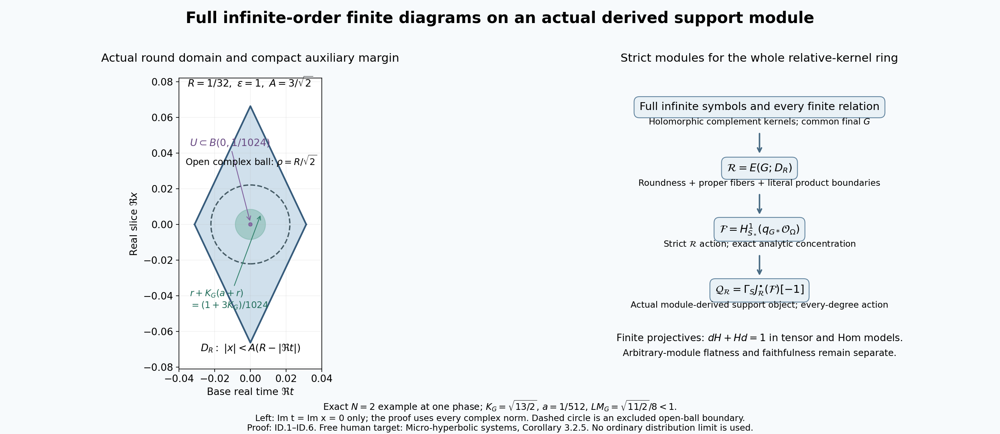
Figure ID.1. Exact normal-dimension-two example at one real phase: \(\lambda'=\pi/4\), \(B'=3/2\), so \(\epsilon=1\), \(A=3/\sqrt2\), \(K_G=\sqrt{13/2}\). The left panel is only the real slice \(\Im t=\Im x=0\); the full domain has the complex-norm inequalities of ID.2. Here \(R=1/32\), \(r=1/1024\), \(a=1/512\), and the auxiliary closure has norm at most \((1+3\sqrt{13/2})/1024<1/(32\sqrt2)\). The open complex ball of the latter radius lies in \(D_R\) because \(|\Re t|+|\Im t|\le\sqrt2|u|\) and \(|\Re t|+|x|/A\le\sqrt{1+A^{-2}}|u|<\sqrt2|u|\); its dashed boundary is excluded. The difference-time bound \(\sqrt2/16\), spatial bound \(3/(16\sqrt2)\), and base bound \(\sqrt{13/2}/32\) are all strictly below the illustrative common outer coefficient radius \(1/4\). With \(L=1/8\), the actual directional condition is \(LM_G=\sqrt{11/2}/8<1\). The right panel constructs a strict whole-\(\mathcal R\) action before the module-derived support object, retaining its shift and finite contraction maps. Exact general proof: ID.1–ID.6 and the named earlier DL/DLG/DLH proofs. Free human target: Micro-hyperbolic systems, Corollary3.2.5.
Editable SVG, exact data, and reproducible plotting source.

5.47. Arbitrary finite matrices and right flatness of the full infinite-order ring
We prove the finite-matrix relation criterion for the full geometric infinite-order ring and right flatness for all algebraic left modules. The ordinary zero-section version retains the original polynomial basis and relation shifts. Every relation coefficient has one actual domain, every positive-epsilon bound, one factorial negative bound and every spatial index. Faithfulness, other scalar changes, reconstruction and the broader programme require separate proofs.
The earlier actual finite-order input is §5.19, complete homogeneous products and ordered jets, §5.20, the one-norm product estimates, §5.21, actual simultaneous division and finite stalk relations, §5.22.1, the actual normal element, and §5.24.1, chart normalization and §5.24.2, strict image generation. The full coefficient class and contractions are §5.44, IK.1–IK.5; the actual geometric ring, zero detection, nonlinear coordinates, canonical mixed product and final-support witnesses are §5.45, IG.1–IG.5 and IM.1–IM.6. The coefficient division and all-index convergence arguments used below are proved in MFA.1–MFA.4 and MFB.1–MFB.5 before the matrix proof MF.1–MF.9.
Analytic coefficient division with uniform radii.
This is a local proof used by the matrix argument. All coefficient operators below are complex linear. They need not be linear over the coefficient ring or over an operator ring. That distinction is essential for a nonprojective relation module.
MFA.1. Norms, initial exponents and finite heads
Let \(w=(w_1,\ldots,w_q)\) be finitely many complex variables centered at the point. For polyradius \(R\), put \[ \begin{gathered} |f|_R=\sum_\alpha |f_\alpha|R^\alpha,\\ |v|_{R,c}=\sum_i c_i|v_i|_R. \end{gathered} \tag{MFA.1} \] The first norm is finite on every strictly smaller polydisc than a polydisc of holomorphy: the iterated Cauchy bound gives \( |f|_R\le M\prod_a(1-R_a/S_a)^{-1}\) for \(R<S\). Coefficient convolution proves submultiplicativity. These coefficient spaces are weighted \(\ell^1\) Banach spaces. A restriction to any set of Taylor exponents has norm at most one.
For a submodule \(I\subset\mathcal O_{w,0}^{b}\), order a nonzero vector's Taylor exponents by total degree, then lexicographic order, then component. Its initial exponent is translated by multiplication by a Taylor monomial. Thus its initial diagram is upward closed in each component of \(\mathbf N^q\). An upward closed subset has finitely many minimal elements: every infinite sequence in \(\mathbf N^q\) has an earlier term componentwise at most a later term. Induct on \(q\), taking a subsequence with constant or increasing first coordinate, and then apply induction to the remaining coordinates. An infinite set of incomparable minima is impossible. Each exponent dominates a minimum, by minimizing in the finite box below it.
Choose finitely many actual \(g_i\in I\) realizing the minima \((\alpha_i,j_i)\), with leading coefficient one. Their initial orthants cover the diagram. Choose positive rational weights \(v_a\) close enough to one that every different Taylor exponent in each \(g_i\) has weight strictly larger than its head. Here is the finite justification. If \(L=\max_i|\alpha_i|\), a small hierarchical perturbation \(v_a=1+\delta^a\) realizes lexicographic comparison among exponents of degree at most \(L\). Make it smaller still so \((L+1)\min v_a>L\max v_a\). All higher total degrees then have larger weight than every head. At the same exponent, other nonzero components occur only after \(j_i\). Put \(c_j=\kappa^j\) and choose \(\kappa>0\) so that the weighted sum of those finitely many same-exponent coefficients is less than \(c_{j_i}/16\).
Set \(R_a(r)=r^{v_a}\). For small enough \(r_0>0\), all divisors are holomorphic on a larger polydisc, and, simultaneously for every \(r\in[r_0/2,r_0]\), \[ \begin{gathered} \max_i\frac{|g_i-w^{\alpha_i}e_{j_i}|_{R(r),c}}{c_{j_i}R(r)^{\alpha_i}}\\ <\theta<\tfrac12. \end{gathered} \tag{MFA.2} \] Indeed every different exponent has a positive weight gap. Its divided radius contribution decreases as \(r\) decreases. Dominate their sum by the absolute Taylor series at one fixed larger radius and apply dominated convergence as \(r_0\to0\). The already fixed same-exponent component tolerance supplies the remaining bound. This argument controls the entire analytic series, not a finite Taylor approximation.
MFA.2. A literal bounded splitting
Order the heads, assign each exponent in their orthants to the first containing head, and write \(\Delta_i\) for those disjoint assigned sets and \(\Delta_0\) for their complement. Let \(V_i\) be the coefficient-support space obtained by taking component \(j_i\), restricting to \(\Delta_i\), and dividing by \(w^{\alpha_i}\). Give \(V=\bigoplus_iV_i\) the norm \[ |a|_V=\sum_i c_{j_i}R^{\alpha_i}|a_i|_R. \tag{MFA.3} \] Let \(d\) be the restriction-and-division operator, \(T_h a=\sum_i a_iw^{\alpha_i}e_{j_i}\), and \(T_ga=\sum_i a_ig_i\). Disjoint supports give \( |df|_V\le |f|_{R,c}\), \(dT_h=1_V\), and \(\ker d\) is exactly the coefficient-support space \(\Delta_0\). Submultiplicativity and \(MFA.2\) give \(\|d(T_g-T_h)\|\le\theta\). Hence \[ \begin{gathered} h=\\ (1+d(T_g-T_h))^{-1}d,\\ p=1-T_gh. \end{gathered} \tag{MFA.4} \] The inverse is its absolutely convergent Neumann series on the stated Banach spaces. The identities \(hT_g|_V=1_V\), \(hp=0\), and \(dp=0\) follow by multiplying \(MFA.4\); in particular \(p^2=p\). The input, every quotient, and the remainder have one common actual polydisc.
For \(f\in I\), its remainder \(pf=f-\sum_i(hf)_ig_i\) belongs to \(I\): this uses a finite sum of actual holomorphic coefficient multiples, and does not require closure of \(I\). If nonzero, its initial exponent belongs to the diagram of \(I\), whereas all its exponents lie in \(\Delta_0\). This contradiction gives \(pf=0\). Thus \(\operatorname{im}T_g=I\), \(\ker p=I\), and these finitely many heads generate \(I\). This also proves the analytic coefficient Noetherianity used here.
Viewed in ordinary vector coefficient norms, \(h,p,T_g\) are bounded uniformly for all \(r\in[r_0/2,r_0]\). The head division constants are bounded by the fixed minima \(R(r_0/2)^{-\alpha_i}\); the inverse norm is at most \((1-\theta)^{-1}\); and the finite divisor norms are bounded on the largest radius. They are the same operators at every radius. The coefficient Neumann identities and uniqueness of the support-normalized quotient prove this assertion, independently of the numerical norm used to establish convergence.
MFA.3. The image operator and zero detection
Suppose a holomorphic matrix \(W_0:\mathcal O^r\to\mathcal O^s\) has coefficient kernel \(\mu\). Apply MFA.1–MFA.2 to \(\mu\), obtaining \(T_g,h,p\). Apply them also to \(\operatorname{im}W_0\). Each of that image's finitely many standard divisors is a finite holomorphic combination of the rows of \(W_0\). Compose its quotient map with those finite combinations to obtain a bounded coefficient operator \(s:\mathcal O^s\to\mathcal O^r\), with \(W_0s f=f\) for \(f\in\operatorname{im}W_0\). Put \(k=ps\). Then \[ kW_0=p. \tag{MFA.5} \] For \(v-sW_0v\in\mu=\ker p\), applying \(p\) proves \(MFA.5\). All three coefficient operators \(h,p,k\) are bounded on the same radius interval, after taking one smaller \(r_0\) for their finite data. This is a coefficient splitting of the image and its relations. No splitting over \(\mathcal O\), \(A\), or \(B\) has been asserted.
MFA.4. Homogeneous polynomial coefficients at the zero section
For ordinary operators, use base variables \(u\) and polynomial covariables \(\rho\), retaining the integer shifts of each free basis vector. Every component of a homogeneous vector has one prescribed covariable degree. The initial diagram is upward closed under base Taylor and covariable polynomial monomials; the same Dickson proof supplies finitely many homogeneous standard divisors. The radius argument above applies to their Taylor series in \(u\) and their finite polynomials in \(\rho\).
The standard divisors can be chosen homogeneous: take the homogeneous summand containing a selected initial monomial of a vector in the graded submodule. It has the same head, since extracting that summand only removes monomials. When a homogeneous image divisor is expressed in the rows of a graded matrix, project each coefficient to the homogeneous degree appropriate for that row; the homogeneous part of the equality remains the whole divisor. Thus the finite image combinations used in MFA.3 preserve the shifts too.
Every support projection, head division and full-divisor multiplication preserves total covariable degree with the indicated free-basis shifts. The Neumann series in \(MFA.4\) therefore stays in that graded component. For a fixed component degree, only finitely many covariable exponents can occur, so its limit is a polynomial in \(\rho\) whose base coefficients are holomorphic on the common domain. Quotients with negative prescribed polynomial degree are zero. The same norm bounds hold uniformly in the total degree: their proof uses fixed head monomials, fixed divisor norms, and the same \(\ell^1\) radius norms, with fixed component radius factors to accommodate the finite shifts. For arbitrary holomorphic base input, one repeats the radius choice on its intersection with the finite divisor domain. This proves the precise polynomial-preserving version needed at the zero section.
Every mathematical result in this coefficient-division argument has been proved above. The complete earlier §5.21.1–§5.21.5 gives the corresponding actual finite-order operator division, used in MF.2 below.
Full infinite-order order-lowering estimate.
This convergence argument proves convergence of the series used for arbitrary matrix relations. It includes every normalized spatial derivative, arbitrary many correction steps, the unbounded positive head, the factorial negative tail, and a single domain chosen before the summation indices.
MFB.1. Operators and one domain
In a cotangent chart \(\tau\ne0\), write \(F_j=\tau^jp_j(u,z)\), \(z=\xi/\tau\). The actual class has one holomorphic coefficient product, with, on each compact, \[ \begin{gathered} |p_j|\le M_\varepsilon\varepsilon^j/j!\\ (j\ge0, \varepsilon>0),\\ |p_{-n}|\le MD^nn! (n\ge1). \end{gathered} \tag{MFB.1} \] We use the absolute Taylor norms \(MFA.1\) on one family \(R(r)\), \(r\in[r_0/2,r_0]\). A Cauchy estimate on a fixed enlargement converts the input compact bounds to these norms with constants independent of \(j\). Coefficient operators \(h,p,k\), or a finite composition of these, have uniform norm \(H\) on that interval by MFA.2–MFA.3. Every right-hand actual matrix is order zero, with coefficients \(Q_{-q}\) satisfying \( |Q_{-q}|\le AC^q q!\) on a fixed enlargement, including \(q=0\). The finite list has one such bound and domain.
The right Leibniz term acting on a left coefficient has indices \[ \begin{gathered} \alpha\in\mathbf N^N,\quad q\ge0,\\ K=q+|\alpha|,\\ \frac1{\alpha!}(\partial_\rho^\alpha F_j)(\partial_u^\alpha Q_{-q}). \end{gathered} \tag{MFB.2} \] It lowers homogeneous degree by \(K\). Subtracting its principal ordinary multiplication removes precisely \(q=0,\alpha=0\); every remaining term lowers degree by at least one. The coefficient operators constructed in MFA.1–MFA.4 preserve degree. A word of correction terms interspersed with such coefficient operators therefore has total loss \(K\ge\) its number of correction terms. All matrix and component sums are finite.
Choose the same fixed outer margin for the right factors throughout. Its Cauchy estimate costs \(\alpha!\delta^{-|\alpha|}\); the factorial in \(MFB.2\) cancels it. If a total-order version is used, \(|\alpha|!/\alpha!\le N^{|\alpha|}\), so the difference is absorbed in an exponential constant. Across a word with tail indices \(q_i\), let \(Q=\sum_iq_i\) and \(L=\sum_i|\alpha_i|\), thus \(K=Q+L\). Their tail factorial product is at most \(Q!\).
MFB.2. Derivatives interspersed with coefficient divisions
At normalized \(\tau=1\), one covariable differentiation is exactly \[ \begin{gathered} \partial_{\xi_a}F_j=\tau^{j-1}\partial_{z_a}p_j,\\ \partial_\tau F_j=\tau^{j-1}(j-E_z)p_j,\\ E_z=\sum_a z_a\partial_{z_a}. \end{gathered} \tag{MFB.3} \] These equations retain every spatial index. They also specify all signs. At an intermediate step starting from input degree \(m\), the current degree has absolute value at most \(|m|+K\). A coefficient operator preserves that degree, although it need not commute with \(E_z\) or differentiation.
To bound a word, insert intermediate radii decreasing from \(r_0\) to \(r_0/2\), allocating equal scalar radius loss \(r_0/(2L)\) to each of its \(L\) derivatives; when \(L=0\) no derivative margin is consumed. All \(R_a(r)=r^{v_a}\) have a fixed positive lower derivative on this compact interval, so each coordinate margin is at least \(c/L\), with fixed \(c>0\). Cauchy's formula, the bounded normalized \(z_a\), and \(MFB.3\) bound each one-derivative step by \[ \begin{gathered} C_0(|m|+K+L)\\ \le 2C_0(|m|+K)\quad\\ (K>0). \end{gathered} \tag{MFB.4} \] The \(H\) bound for every inserted coefficient operator holds at its own intermediate radius. Thus no commutation of a division operator with a derivative has been used, and no new radius is lost for a division operator. The count of those operators is bounded by a fixed multiple of the number of correction factors, hence by a fixed multiple of \(K\).
For \(M=|m|\ge0\), \(K=Q+L>0\), \[ \begin{gathered} (M+K)^LQ!\\ \le e^K\frac{(M+K)!}{M!}. \end{gathered} \tag{MFB.5} \] To prove it, \(Q!\le(M+K)^Q\). Also \(\prod_{a=1}^K(M+a)/(M+K)\ge K!/K^K\ge e^{-K}\): each factor increases with \(M\), and the last inequality follows from \(\sum_{a=1}^K\log a\ge\int_1^K\log t\,dt=K\log K-K+1\). Equations \(MFB.4\)–\(MFB.5\), submultiplicativity and the right-factor Cauchy estimates bound each word, before coefficient summation, by an exponential constant times that one factorial ratio.
There are at most exponentially many words of total loss \(K\). Ordered compositions of a positive integer \(K\) number \(2^{K-1}\); their subdivisions into \(q_i\) and the \(N\) derivative components number at most \((N+2)^{2K}\), a deliberately loose bound obtained by placing separators among \(K\) units and coloring the units. Finite matrix entries and coefficient-operator choices cost another exponential factor. Absorb all these constants, all fixed input bounds, and \(H\) into \(C_1\ge1\). The sum of the absolute norms of all terms of loss \(K\), for any one of the Neumann or iterated correction expressions below, is bounded by \[ C_1^K\frac{(|m|+K)!}{|m|!}|p_m|_{R(r_0)}. \tag{MFB.6} \] The case \(K=0\) is the single bounded coefficient operation and is covered by a fixed prefactor. This argument also applies to truncated words uniformly in the truncation; the bound includes each contraction and every tail coefficient rather than replacing them by a formal product.
MFB.3. Positive output, negative output and explicit tails
For positive output \(j\ge0\), input degree is \(m=j+K\ge0\). The integer inequality \[ \begin{gathered} \frac{(j+2K)!j!}{(j+K)!^2}\le\binom{2K}{K}\\ \le4^K \end{gathered} \tag{MFB.7} \] follows by writing the first ratio as \(\prod_{a=1}^K(j+K+a)/(j+a)\), whose factors decrease with \(j\), and then using the binomial expansion. From \(MFB.1\), \(MFB.6\), \[ \begin{gathered} |\text{output}_j|\le\\ C_2M_\varepsilon\frac{\varepsilon^j}{j!}\\ \sum_{K\ge0}(4C_1\varepsilon)^K. \end{gathered} \tag{MFB.8} \] Given any desired \(\eta>0\), choose \(0<\varepsilon\le\eta\) with \(9C_1\varepsilon<1/2\). The coefficient domain and \(C_1\) do not depend on this choice. This proves the positive estimate for every \(\eta\). Terms with \(K\ge R\) are bounded by the right side of \(MFB.8\) times \((4C_1\varepsilon)^R\), with the geometric denominator retained.
For negative output \(-n\), the input is \(m=K-n\). When \(K<n\), \(MFB.6\) gives \[ \begin{gathered} C_1^K\frac{n!}{(n-K)!}\\ M D^{n-K}(n-K)!\\ =M n!C_1^KD^{n-K}. \end{gathered} \tag{MFB.9} \] This part is finite; its sum is at most \(Mn!(D+C_1)^n\), since the binomial coefficients dominate the corresponding \(n\) summands. For \(K\ge n\), write \(m=K-n\ge0\). The multinomial expansion proves \((n+2m)!/(n!m!m!)\le3^{n+2m}\). Consequently the full positive-input part is bounded by \[ \begin{gathered} C_2M_\varepsilon n!(3C_1)^n\\ \sum_{m\ge0}(9C_1\varepsilon)^m. \end{gathered} \tag{MFB.10} \] Choose one fixed \(\varepsilon<1/(18C_1)\). Equations \(MFB.9\)–\(MFB.10\) prove one factorial negative constant for every \(n\), on the same domain. The tail \(K\ge R>n\) in \(MFB.10\) is bounded by the displayed prefactor times \((9C_1\varepsilon)^{R-n}/(1-9C_1\varepsilon)\).
These bounds prove absolute normal convergence of the whole expressions, including infinitely many terms at a fixed output degree. They justify rearrangement, finite matrix sums and multiplication identities by the triangle inequality and absolute scalar convergence. On a fixed further inner product, the Cauchy formula applies to each chosen finite output derivative. Its constant is independent of all cutoffs and degrees. Applying it to the displayed tails proves normal convergence of every fixed base and normalized-spatial derivative. All spatial Taylor exponents remain in the norm; none is truncated or bounded in advance.
MFB.4. Actual inverses and vanishing iteration
Let \(L\) be one of the above order-lowering correction operators. Define \[ \begin{gathered} (1+L)^{-1}f=\\ \sum_{a\ge0}(-L)^a f. \end{gathered} \tag{MFB.11} \] Equations \(MFB.6\)–\(MFB.10\) prove that this expression is an actual coefficient sequence in the complete class, on one domain. Reserve an intermediate radius, for example \(3r_0/4\): the same proof first gives normal convergence there. Apply one further correction on the inner radius \(r_0/2\). The Cauchy formula permits differentiation of the convergent series, and the direct word bound MFB.6, with the additional correction included, permits its reordering there. The finite geometric identity gives left and right inverses, because its remainder \(L^{a+1}f\) has total loss at least \(a+1\) and tends to zero coefficientwise with the explicit tails above. This is a limit of normally convergent holomorphic coefficient functions. It is not an ordinary supported-distribution limit, a formal completion, or a limit in a cohomology quotient.
In particular, if an actual sequence satisfies \(s=-Ls\), then \(s=(-L)^a s\) for every finite \(a\). If \(s\) is the output of a previous division, select one new, fixed smaller outer radius inside its holomorphic domain and the same coefficient-divisor domain. MFA.2 makes the identical coefficient operators bounded on its radius interval; the support-normalized analytic operator is unchanged. This is a single additional shrinking made before any iteration index, not shrinking at each iteration. For positive output use \(MFB.8\) with \(K\ge a\). For fixed negative output \(-n\), take \(a>n\) and use \(MFB.10\) with \(m\ge a-n\). Both tend to zero, so every actual coefficient of \(s\) vanishes on the same inner product. Hence \(s=0\). This is the zero-remainder detection needed for full matrix relations with no highest positive homogeneous coefficient.
MFB.5. Ordinary zero-section version
In the ordinary polynomial coefficient spaces of MFA.4, the covariable derivative in \(MFB.2\) is an ordinary derivative of a homogeneous polynomial. Its Cauchy bound on the same radius interval is at most \(C_0L\) per derivative; including it in \(MFB.4\) gives the same bound. Every finite-order right matrix has only finitely many tail offsets \(q\) relative to its principal shifted degree. A homogeneous space of negative polynomial degree is zero. All intermediate coefficient operations preserve the prescribed shifted polynomial degrees by MFA.4, and the finite ordinary Leibniz product preserves the corresponding graded spaces.
Thus \(MFB.6\)–\(MFB.8\) apply with finite free-basis shifts. A fixed shift changes the positive factorial bound by a fixed polynomial in the degree; this is absorbed by choosing the input \(\varepsilon\) smaller than the requested output value, since \(j^a\theta^j\) is bounded for every fixed \(a\) and \(0<\theta<1\). The finitely many degrees below the shifts satisfy the same convergent tail bounds individually. Every output component remains a homogeneous polynomial of its actual nonnegative degree. This proves \(MFB.11\) and zero detection in the genuine ordinary \(D^\infty\) class at the zero section; it does not substitute an ordinary ring for the microlocal argument MFB.1–MFB.4.
Arbitrary finite matrices in the genuine infinite-order geometric ring.
The theorem proved in MF.1–MF.8 is the full finite-matrix relation criterion and right flatness of \(B=\mathcal E^\infty_p\) over \(A=\mathcal E_p\), including the ordinary zero-section restriction. The tensor product is the ordinary algebraic tensor product.
The earlier complete geometric identification IG and product IM are exact premises. They identify the actual common-domain coefficient class with the source-defined complex-projectivized diagonal kernel ring, with its input top-form twist, nonlinear coordinate changes, actual pole/log kernels, full cone enlargement and ordinary zero-section restriction. This proof establishes the new relation theorem; it does not infer it from geometric convergence, finite module-derived instantiation, a finite-projective contraction, or completion flatness.
Free human context is Kashiwara–Schapira, Micro-hyperbolic systems, §8, printed/PDF p.43. That page recalls flatness before its noncharacteristic theorem and supplies no proof of the relation criterion. Every argument used below is proved in MFA, MFB and MF, or in the complete earlier programme proofs linked above. Complete earlier programme dependencies are linked above.
MF.1. Sides, statement and germs
All modules being extended are left \(A\)-modules; \(B\) is a right \(A\)-module through the proved unital geometric ring inclusion. Write a free module as rows. For every finite \(r\times s\) matrix \(D\) over \(A\), its left-linear map is \(v\mapsto vD\), where every matrix multiplication is the actual operator product. Put \(K_D=\{v\in A^r:vD=0\}\). We prove \[ \begin{gathered} \ker(B^r\xrightarrow{\,D\,}B^s)\\ =\operatorname{im}(B\otimes_AK_D\longrightarrow B^r). \end{gathered} \tag{MF.1} \] Specifically, a relation \(bD=0\) has an expression \(b=\sum_{\nu=1}^lc_\nu v_\nu\) with finitely many actual \(v_\nu\in K_D\), actual \(c_\nu\in B\), and one common coefficient product and the full bounds MFB.1 for every \(c_\nu\). An equality of germs is represented by all coefficients on one smaller product, as in the proved ring theorem. No degree-dependent shrinking is permitted.
If \(D=0\), use the ordinary standard basis rows of \(A^r\) and the components of \(b\); empty matrix sizes are included in this convention. If the ambient complex dimension is zero, \(A=B=\mathbf C\) at a point and the assertion is the usual exact scalar relation statement. These cases need no cotangent chart or derivative estimate.
For a point off the zero section choose a chart \(\tau\ne0\). Translate the base point and normalize its central \(z=\xi/\tau\) to zero by the fixed affine cotangent coordinate change of the exact earlier §5.24.1. This preserves the full contraction pairing. Let \(A_0\) denote the actual order-zero factorial ring and \(h=\tau^{-1}\). The exact earlier §5.21 proves that every submodule of \(A_0^s\) has finite standard generators, on an actual common coefficient domain. The complete §5.24.2 proves strictness with the homogeneous-index filtration. The actual normal-element localization §5.22.1 identifies \(A=A_0[h^{-1}]\); it is not a formal localization of an unnamed coefficient ring.
The equality with that actual localization also follows directly at coefficient level. If \(P\) has finite upper homogeneous bound \(m\ge0\), then \(Ph^m\) is the literal right coefficient shift and is order zero. A fixed shift preserves factorial bounds, by \((n+m)!\le2^{n+m}n!m!\). Hence \(P=(Ph^m)h^{-m}\), with both endpoints actual. Right multiplication by \(h\) is injective because it shifts the whole coefficient sequence, and its actual normal automorphism is the complete finite formulas (5.22a)–(5.22b) in §5.22.1. The inverse \(h^{-1}=\tau\) is the proved finite geometric ring inverse.
MF.2. Strict normalization of an arbitrary matrix
First right-multiply each target column by a suitable fixed power of \(h\) so that all entries of \(D\) have order at most zero. This is an invertible right target change over both \(A\) and \(B\), and leaves the source relation module unchanged. Denote the resulting matrix again by \(D\).
Let \(J=\operatorname{im}(A^rD)\subset A^s\), \(J_0=J\cap A_0^s\). Apply the full actual finite division theorem to the left \(A_0\)-submodule \(J_0\). Its finite standard generators \(P_i\) have homogeneous orders \(n_i\ge0\). For \(F\in J_0\cap H^aA_0^s\), the exact strictness proof gives \[ \begin{gathered} F=\sum_i Q_iP_i,\\ Q_i\in H^{\max(0,a-n_i)}A_0. \end{gathered} \tag{MF.2} \] This is precisely the actual Neumann division of §5.21, with its quotient support constraints; no infinite formal degree reduction is used.
Normalize the rows by left multiplication: \[ \begin{gathered} W_i=h^{-n_i}P_i,\\ P_i=h^{n_i}W_i. \end{gathered} \tag{MF.3} \] The earlier programme's explicit formula (5.21i) in §5.21.2 proves that \(W_i\) is actual order zero: multiplication by \(\tau^{n_i}\) has only finitely many base derivatives, and a fixed homogeneous shift preserves factorial growth on one smaller domain. Every \(P_i\) belongs to \(J\), so there is a finite matrix \(G\) over \(A\) with \(W=GD\). Conversely the rows of \(D\) belong to \(J_0\); (MF.2) expresses them in \(P_i\), hence in \(W_i\), giving a finite \(A\)-matrix \(J_1\) with \[ W=GD,\qquad D=J_1W. \tag{MF.4} \] All entries and these finite exact identities are represented on one neighborhood.
There is a stronger strictness consequence needed below. If \(F\in J_0\) has order at most \(-a\), \(a\ge0\), its coefficients in \(W\) may all have order at most \(-a\). In (MF.2), write \(Q_iP_i=(Q_ih^{n_i})W_i\); the coefficient has homogeneous index at least \(\max(0,a-n_i)+n_i\ge a\). Thus \(W\) is a strict order-zero image presentation. Its principal coefficient matrix is \(W_0:\mathcal O^l\to\mathcal O^s\).
MF.3. Actual lifts of every principal relation
Let \(\mu=\ker W_0\subset\mathcal O^l\). Each \(v\in\mu\) has an actual order-zero lift: initially use its holomorphic coefficient vector \(v\) as an order-zero symbol. Then \(vW\) has homogeneous index at least one. Strictness in MF.2 expresses \(vW=aW\) with every component of \(a\) of index at least one. Therefore \(v-a\) is an actual relation, of principal vector \(v\).
Apply MFA.1 to \(\mu\). Choose its finitely many standard holomorphic divisors \(g_\nu\) realizing the whole initial diagram. The preceding paragraph lifts each to an actual order-zero row \(R_\nu\) with \[ RW=0,\qquad R_0=(g_\nu)_\nu. \tag{MF.5} \] There are finitely many such rows, with one common domain and one factorial tail constant. The finite generating proof for \(\mu\) is given in MFA.1–MFA.2, so it requires no citation to a missing coefficient-kernel theorem. These rows need not generate an arbitrary module by an \(A\)-linear contraction; their principal analytic coefficient division will do the work.
Let \(T_0c=cR_0\), restricted to the quotient support space \(V\) of MFA.2, and let \(T c=cR\) be actual right multiplication. MFA.2 gives \(hT_0|_V=1\), \(p=1-T_0h\), \(hp=0\), \(\ker p=\mu\). MFA.3 supplies \(kW_0=p\). Their norms are uniform on one common radius interval. \(E=T-T_0\) and \(W_-=({}\cdot W)-({}\cdot W_0)\) lower homogeneous order by at least one and have exactly the finite-matrix form covered by MFB.1–MFB.4.
Here and through MF.4, \(h\) is the complex-linear coefficient division operator of MFA.2. The normal generator \(h=\tau^{-1}\) used in MF.1–MF.2 is a different, explicitly scoped object. Juxtaposition of coefficient operators means composition: \(kW_0\) sends \(v\) to \(k(vW_0)\). Actual matrix juxtaposition elsewhere means the stated row product in the operator ring.
MF.4. Complete infinite division of a relation
For an arbitrary actual \(b\in B^l\) with \(bW=0\), set \[ \begin{gathered} c=(1+hE)^{-1}hb\\ =\sum_{a\ge0}(-hE)^ahb,\\ s=b-Tc. \end{gathered} \tag{MF.6} \] MFB proves the absolute normal convergence of this whole sum on one coefficient product, including every contraction and spatial index. It proves the positive estimate for every requested \(\varepsilon\), one negative factorial constant, and all fixed derivative tails. Thus all finitely many components of \(c\) and \(s\) are actual \(B\)-sections. The support space \(V\) is preserved by \(hE\) because \(h\) has values in \(V\); all its coefficient-support restrictions remain literal closed restrictions in MFA.2. Formula (MF.6) and \(hT_0|_V=1\) give \[ \begin{gathered} hs=hb-(1+hE)c=0,\\ sW=0. \end{gathered} \tag{MF.7} \] The second equality uses \(RW=0\) and the proved actual associativity; absolute convergence in MFB permits the displayed rearrangement. Since \(hs=0\), \(ps=s\). The exact coefficient identity \(kW_0=p\) and \(sW=0\) imply \[ s=-kW_-s. \tag{MF.8} \] MFB.4 applies to the order-lowering operator \(kW_-\). Iterating (MF.8) gives zero in every output coefficient with the explicit geometric tails MFB.8/MFB.10, including negative outputs after the finite part is passed. Hence \(s=0\). This is actual zero detection for a relation with no largest positive homogeneous degree. Therefore \(b=cR\).
The same construction for a finite-order input has no positive coefficients above its finite upper bound. Every lowering word in (MF.6) preserves that bound, so \(c\) also has a finite upper bound. Its negative estimates are already proved in MFB.9–MFB.10. Thus \(c\in A\). Consequently the finitely many rows \(R_\nu\) generate \(\ker(A^l\to A^s)\) as well.
MF.5. Transfer back to the original finite matrix
For the original relation \(bD=0\), (MF.4) gives \((bJ_1)W=0\). By MF.4 there is an actual finite coefficient row \(c\) with \(bJ_1=cR\). Therefore \[ b=b(1-J_1G)+cRG. \tag{MF.9} \] Every row of \(1-J_1G\) is an actual \(A\)-relation for \(D\), because \((1-J_1G)D=D-J_1W=0\). Every row of \(RG\) is such a relation because \(RGD=RW=0\). They form one finite list \(v_\nu\). The coefficients in (MF.9) are the components of \(b\) and \(c\), all actual \(B\)-sections with the proved complete common-domain bounds. This proves the difficult inclusion in (MF.1). The reverse inclusion follows from the finite equations \(v_\nu D=0\) and associativity. This step fixes the row sides explicitly; there is no reversal to right-module relations.
MF.6. The ordinary zero section, with full positive heads
At a zero-section point the proved geometric ring restricts to \(B=D^\infty_u\), with ordinary homogeneous polynomial coefficients of degree \(j\), and \(A=D_u\). The full polynomial degree statement is about the homogeneous \(P_j(u,\rho)\); a normalized \(p_j(u,z)\) has degree at most \(j\), because powers of the normal covariable give lower spatial degrees.
Here is the strict finite setup rather than an appeal to microlocal division. Give \(D_u\) the nonnegative order filtration, whose multiplication has ordinary principal product in \(\mathcal O_u[\rho]\). MFA.4 proves finite homogeneous standard generation of every graded submodule of a finite shifted free coefficient module. Choose finitely many actual image rows \(P_i\) lifting its principal generators. Subtracting a combination of them lowers the finite order by at least one, so ordinary degree reduction terminates. It expresses every actual image row with the expected shifted order bounds. This proves strictness and finite generation directly. For a principal relation, its initial actual lift has image of lower order; strictness expresses that image with lower source order. Subtracting those coefficients produces an actual relation with the prescribed principal vector. Apply MFA.4 to the resulting graded principal kernel and lift its finitely many homogeneous standard divisors.
Retain the row shifts \(m_i=\operatorname{ord}P_i\) and the shifted relation orders \(r_\nu=\max_i(\operatorname{ord}(R_{\nu i})+m_i)\), omitting zero entries. The principal component \(R_{\nu i,0}\) has covariable degree \(r_\nu-m_i\). In total degree \(j\), component \(i\) has ordinary polynomial covariable degree \(j-m_i\), and coefficient \(\nu\) has degree \(j-r_\nu\). A negative polynomial degree is the zero space. The operators \(h_j,p_j,k_j\) of MFA.4 respect exactly those spaces and are uniformly bounded in \(j\) on the common radius family; their identities are the shifted version of MFA.4–MFA.5. The finite ordinary Leibniz corrections lower total degree and preserve these graded spaces.
Now use (MF.6)–(MF.8) in these spaces, with MFB.5. Every output is a polynomial of its actual covariable degree and has the positive estimate for every \(\varepsilon\) on one base domain and one fixed covariable ball; finite shifts are absorbed by the explicit epsilon slack in MFB.5. Homogeneity extends this estimate to every fixed covariable compact: scaling from the fixed ball costs a fixed exponential in the degree, absorbed by selecting the input epsilon smaller, while the base domain stays fixed. The full infinite tail converges normally, and the same iteration proves zero remainder. The transfer (MF.9) is ordinary finite matrix multiplication over \(D\). This proves (MF.1) at every zero-section point for genuine ordinary \(D^\infty\), with the entire unbounded positive head. It proves no unsupported equality between microlocal and ordinary module tensor products away from their actual ring maps.
MF.7. From the criterion to right flatness for all modules
For completeness the algebraic passage includes arbitrary modules. The finite microlocal stalk \(A\) is left Noetherian: its actual \(A_0\) is left Noetherian by the complete finite division proof, and normal localization preserves that property. To see the latter directly, for an \(A\)-submodule of a finite \(A\)-free module, multiply each individual row on the left by a sufficiently large power of \(h\) to put it in \(A_0^r\). Its intersection with \(A_0^r\) is finitely generated over \(A_0\); localizing those finitely many generators recovers every row. For ordinary \(A=D_u\), the finite homogeneous standard-generation and terminating order argument in MF.6 prove the same assertion.
Let \(L\subset A^s\) be finite and choose a finite free surjection \(A^r\to L\), with kernel \(K\). Right exactness of algebraic tensor says that \(\ker(B^r\to B\otimes_A L)\) is the image of \(B\otimes_AK\). Criterion (MF.1), applied to the composite \(A^r\to A^s\), identifies this image with \(\ker(B^r\to B^s)\). Thus \(B\otimes_A L\to B^s\) is injective.
For an injection \(N\subset M\) of finite left modules, choose a finite free surjection \(F\to M\), kernel \(K\), and inverse image \(N'\subset F\) of \(N\). Noetherianity makes \(K,N'\) finite. The preceding paragraph gives injectivity of both \(B\otimes_AK\) and \(B\otimes_AN'\) into \(B\otimes_AF\). An element of \(B\otimes_AN\) lifts to \(B\otimes_AN'\). If it becomes zero in \(B\otimes_AM\), right exactness expresses its image in \(B\otimes_AF\) by an element of \(B\otimes_AK\). Injectivity for \(N'\subset F\) makes these lifts equal; their image in \(B\otimes_AN\) is zero. Therefore tensor preserves finite-module injections.
For arbitrary \(N\subset M\), an element of \(B\otimes_AN\) and its claimed zero image use finitely many tensor summands. A zero equality in an algebraic tensor quotient is a finite sum of its defining additivity and balancing relations. Take the finite submodule \(N_0\subset N\) generated by its summand entries and a finite submodule \(M_0\subset M\) containing \(N_0\) and all entries of those finite relation witnesses. The zero equality already holds in \(B\otimes_AM_0\). The finite injection \(N_0\subset M_0\) kills the element. Hence tensor preserves every injection. Together with right exactness, this proves right \(A\)-flatness of \(B\).
The same argument pointwise proves sheaf flatness: exactness of a sequence of sheaves is exactness on every stalk, algebraic sheaf tensor has the stated stalk tensor, and the pointwise result applies. No assumption of coherence on the arbitrary modules in this conclusion remains.
MF.8. Actual geometric support, finite diagrams and precise boundary
Choose the input \(b\), the finite rows \(D,W,R\), the finite matrices \(G,J_1\), all coefficient divisors and the common domain once for each finite relation problem. MFA and MFB then give all output coefficients on one smaller actual product independent of homogeneous, Taylor, contraction and iteration indices. The negative constant and each positive-epsilon prefactor may change; the domain does not. For any finite family of relations or module maps, intersect this finite list of domains and choose the maxima of its finitely many negative constants and the input epsilon small enough for all its constants \(C_1\). Thus every finite diagram and every finite homotopy identity used in its tensor extension is an equality of actual sections on one common domain. The proof is local at a point; it does not assert one universal domain for every germ of an arbitrary module.
Here are concrete common kernel margins for that finite list. Choose fixed Taylor covariable radii \(R_i>0\) strictly inside its final holomorphic coefficient domain, a compact base enlargement there, and one largest negative factorial constant \(C_-\ge1\) for all inputs, relation coefficients and the finitely many products in MF.9. Choose spatial slopes \(A_i>2/R_i\), and one endpoint neighborhood with \(|w|<1/(4C_-)\), also contained in the common base endpoint domain. The source thick complement is \(|\zeta_i|>A_i|w|\). Locally on a compact of that complement with \(w\ne0\), choose \(Y>\max_i(R_i|\zeta_i|)^{-1}\) with \(|w|Y<3/4\); the strict slopes allow this. Choose the positive input epsilon so \(\varepsilon Y<1/8\). Thus the literal mixed pole/log majorants IK.18–IK.21 have \(r=C_-|w|<1/4\), \(q=|w|Y<3/4\), \(x+q=\varepsilon Y+|w|Y<7/8\). At \(w=0\) with spatial differences nonzero, use a fixed finite local \(Y\) and the removable extension proved in IK.5. A compact set has finitely many such neighborhoods; the minimum of their epsilon choices works for its finite family. These choices concern whole coefficients and all spatial Taylor indices. They do not assign a separate domain to any degree.
Carry these coefficient sections to the proved source-defined geometric ring by IG and IM. Choose a finite phase grid with \(h<2\lambda\) and \(2\lambda+h<\pi\), and \(B_i\) large enough for the preceding fixed spatial slopes. At each phase and each neighbor take its separate convex cone. Choose once \(\lambda<\lambda'<(\pi-h)/2\) and \(B'_i>B_i/\cos(\lambda+h/2)\). Literally map support to the larger standard \(T'\), use its IG.7–IG.8 cube and exhaustions, and then map any boundary forward to the final convex \(G'\) containing \(T'\). Reserve the positive overlap width \(\eta_*\) with \(\lambda'+h/2+\eta_*<\pi/2\), and restrict to the smaller admissible covariable product of IM.2. This latter restriction does not replace the larger Taylor radii \(R_i\) on which the already constructed coefficients and the preceding kernel bounds remain holomorphic. Choose the one common compact proper collar of IM.2 for this finite phase family and the fixed smaller endpoint domain; it is uniform across phases, while the pointed cones remain phase-local. All complement-cube terms and trace signs are literal premises; no support-forgetting map is presumed injective.
Equality here is first the actual coefficient equality (MF.9), and the proved injective geometric identification maps it to the actual ring equality on these common final supports. This route retains the full mixed pole/log canonical product. The signs are the proved full-cone Čech signs, with ordinary top cube coordinate \(r_N(-1)^N f\); the \(N=1\) whole-domain exception remains. No new cochain trace, infinite ordinary current limit, or arbitrary distribution completion is introduced by the coefficient division.
The constructed relation coefficients need not be canonical under a coordinate change. Their existence and the kernel equality are intrinsic: the proved nonlinear coordinate-overlap ring maps transport the finite identity and its finite \(A\)-relation rows on a common overlap. At the zero section MF.6 supplies the actual polynomial version rather than extending a punctured-chart quotient across a singular face.
The theorem here is the finite-matrix relation criterion and its right-flatness consequence for the actual full geometric \(E^\infty/E\), together with the actual \(D^\infty/D\) zero-section right-flatness just proved. It does not establish proper-ideal detection, extension-faithfulness and arbitrary-module unit injectivity, flatness of \(E^R/E\), the special fibration-dependent class, mixed \(E^\infty/D^\infty\) scalar change, infinite Späth division or balanced reconstruction, moving-sector propagation, purity, singular-inclusive separation, finite D-type/C1, half-order/contact transport, the initial analytic generator, arbitrary analytic proper regularity, or the original full GL/BB/KL programme. All those broader obligations remain explicitly active. Finite module-derived instantiation has its separate geometric proof in Section 5.46; the flatness proof here neither uses it as a premise nor proves its other geometric statements.
MF.9. Decisive calibrations
For \(D=(x,\partial_x)^{\mathsf t}\), the actual row \(G=(\partial_x,-x)\) has \(GD=1\). Then \(P=1-DG\) has \(PD=0\), and every \(bD=0\) satisfies \(b=bP\). The commutator is \(\partial_xx-x\partial_x=1\). This checks the matrix sides in MF.9; it is a split calibration, not a proof for arbitrary relations.
A full positive/negative calibration has \(u=(x,y)\), covariables \((\tau,\xi)\), and \[ \begin{gathered} C(\tau)=\sum_{j\ge0}\frac{\tau^j}{(j!)^2}\\ +\sum_{n\ge1}n!\tau^{-n},\\ R=(-y,x),\\ b=C\circ R=\\ (-yC,\ xC+\partial_\tau C). \end{gathered} \tag{MF.10} \] The positive estimate holds for every epsilon, since \((\varepsilon^{-j}/j!)\) is bounded; the negative coefficients have factorial constant one. The negative symbolic tail is not claimed to converge as an ordinary Laurent function. For \(D=(x,y)^{\mathsf t}\), \(RD=0\), and \[ \begin{gathered} b_1\circ x=-xyC-y\partial_\tau C,\\ b_2\circ y=xyC+y\partial_\tau C,\\ bD=0. \end{gathered} \tag{MF.11} \] Only the indicated first derivatives occur because the right factors are linear. Thus the full actual relation includes a positive-head and negative-tail derivative correction with the specified sign. Dropping that correction gives a false ordinary-product calculation. The coefficient identities and bounds are exact, not a truncation argument for flatness.
Explicitly the positive prefactor for \(C\) may be \(e^{1/\varepsilon}\), because each term \(\varepsilon^{-j}/j!\) is at most its exponential sum. The positive coefficient of \(\partial_\tau C\) is \(1/(j!(j+1)!)\), with the same bound. Its coefficient at degree \(-n\) is \(-(n-1)(n-1)!\) for \(n\ge2\), and zero for \(n=1\), bounded in absolute value by \(n!\). On a compact base product \(|x|\le X,|y|\le Y\), the negative constants for \(b_1,b_2\) can be \(Y,X+1\), with factorial constant one. Every index in this mixed calibration is therefore in the complete actual class.
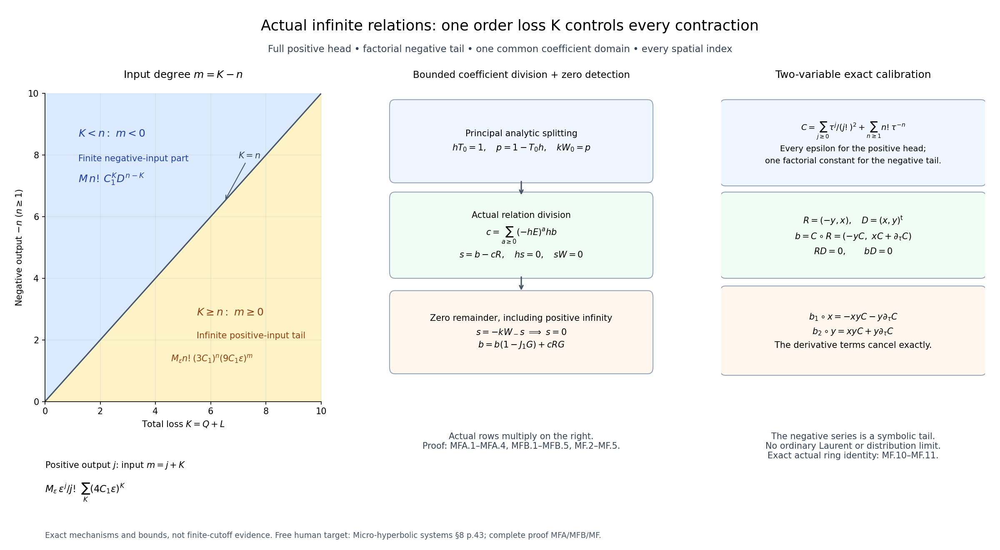
Figure MF.1. The exponent plane has input degree \(m=K-n\) for negative output \(-n\), with the exact division line \(K=n\). The finite negative-input region uses MFB.9, and the infinite positive-input region uses MFB.10. The positive-output formula is MFB.8 with input \(m=j+K\). The middle panel shows the exact coefficient splitting and actual relation formula MF.6–MF.9, with row multiplication on the right. The right panel is the exact two-variable calibration MF.10–MF.11, retaining \(\partial_\tau C\). Coordinates and all displayed constants are in the reproducible figure source and data. These are proof mechanisms; no plotted finite cutoff substitutes for a bound. Free human target context is Micro-hyperbolic systems §8 p.43; the proofs are MFA.1–MFA.4, MFB.1–MFB.5 and MF.1–MF.8 above.
Editable SVG, exact data, and reproducible plotting source.

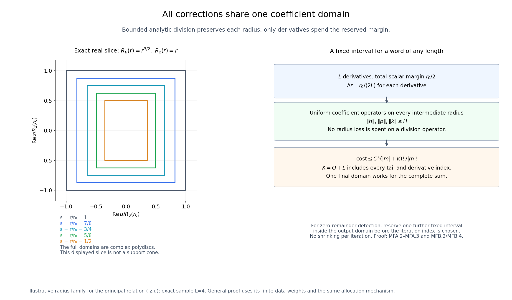
Figure MF.2. Exact real slice of the coefficient radius family \(R_u(r)=r^{3/2}\), \(R_z(r)=r\), suitable for the illustrative principal relation \((-z,u)\). The normalized sample radii are \(r/r_0=1,7/8,3/4,5/8,1/2\), corresponding to \(L=4\) equal scalar margins \(r_0/8\). The full domains are complex polydiscs; this is not a geometric support cone. For the general matrix the finite coefficient heads determine its own weights \(v_a\), and the derivative-margin lower bound uses their fixed minima on the same compact radius interval. Bounded coefficient divisions consume no radius margin, including when inserted between derivatives. MFB.4 reserves one additional fixed interval for the whole zero-remainder iteration. Proof: MFA.1–MFA.3 and MFB.2/MFB.4. Coordinates and the distinction between this explicit sample and the arbitrary-matrix proof are retained in the source and data.
Editable SVG, exact data, and reproducible plotting source.

5.48. Proper ideals and faithful extension to the full infinite-order ring
We prove that every proper finite-order left ideal remains proper in the full geometric infinite-order ring, including the genuine ordinary zero section. Combined with the right-flatness theorem of §5.47, proof sections MF.1–MF.7, this gives unit injectivity and faithful exact, conservative scalar extension for every algebraic left module and every sheaf of left modules. The precise tensor-cohomology and support consequences are included below.
The complete analytic coefficient and convergence arguments are given here as proof sections FEA.1–FEA.4 and FEB.1–FEB.5 before FEP.1–FEP.10. Earlier actual finite division and strictness are §5.21 and §5.24.2. The full coefficient and kernel bounds are §5.44, proof sections IK.1–IK.5, and the source-defined ring, mixed product, coordinate maps and final-support witnesses are §5.45, proof sections IG.1–IG.5 and IM.1–IM.6. Other scalar changes, reconstruction, propagation and the broader programme require separate proofs.
The complete coefficient argument below is used for proper-ideal detection without invoking right flatness. Every coefficient operator is bounded complex linear on the stated common domain. The later unit-injectivity consequences use the right-flatness theorem of §5.47, proof section MF.7.
Analytic coefficient division with uniform radii.
This is a local proof used by the matrix argument. All coefficient operators below are complex linear. They need not be linear over the coefficient ring or over an operator ring. That distinction is essential for a nonprojective relation module.
FEA.1. Norms, initial exponents and finite heads
Let \(w=(w_1,\ldots,w_q)\) be finitely many complex variables centered at the point. For polyradius \(R\), put \[ \begin{gathered} |f|_R=\sum_\alpha |f_\alpha|R^\alpha,\\ |v|_{R,c}=\sum_i c_i|v_i|_R. \end{gathered} \tag{FEA.1} \] The first norm is finite on every strictly smaller polydisc than a polydisc of holomorphy: the iterated Cauchy bound gives \( |f|_R\le M\prod_a(1-R_a/S_a)^{-1}\) for \(R<S\). Coefficient convolution proves submultiplicativity. These coefficient spaces are weighted \(\ell^1\) Banach spaces. A restriction to any set of Taylor exponents has norm at most one.
For a submodule \(I\subset\mathcal O_{w,0}^{b}\), order a nonzero vector's Taylor exponents by total degree, then lexicographic order, then component. Its initial exponent is translated by multiplication by a Taylor monomial. Thus its initial diagram is upward closed in each component of \(\mathbf N^q\). An upward closed subset has finitely many minimal elements: every infinite sequence in \(\mathbf N^q\) has an earlier term componentwise at most a later term. Induct on \(q\), taking a subsequence with constant or increasing first coordinate, and then apply induction to the remaining coordinates. An infinite set of incomparable minima is impossible. Each exponent dominates a minimum, by minimizing in the finite box below it.
Choose finitely many actual \(g_i\in I\) realizing the minima \((\alpha_i,j_i)\), with leading coefficient one. Their initial orthants cover the diagram. Choose positive rational weights \(v_a\) close enough to one that every different Taylor exponent in each \(g_i\) has weight strictly larger than its head. Here is the finite justification. If \(L=\max_i|\alpha_i|\), a small hierarchical perturbation \(v_a=1+\delta^a\) realizes lexicographic comparison among exponents of degree at most \(L\). Make it smaller still so \((L+1)\min v_a>L\max v_a\). All higher total degrees then have larger weight than every head. At the same exponent, other nonzero components occur only after \(j_i\). Put \(c_j=\kappa^j\) and choose \(\kappa>0\) so that the weighted sum of those finitely many same-exponent coefficients is less than \(c_{j_i}/16\).
Set \(R_a(r)=r^{v_a}\). For small enough \(r_0>0\), all divisors are holomorphic on a larger polydisc, and, simultaneously for every \(r\in[r_0/2,r_0]\), \[ \begin{gathered} \max_i\frac{|g_i-w^{\alpha_i}e_{j_i}|_{R(r),c}}{c_{j_i}R(r)^{\alpha_i}}\\ <\theta<\tfrac12. \end{gathered} \tag{FEA.2} \] Indeed every different exponent has a positive weight gap. Its divided radius contribution decreases as \(r\) decreases. Dominate their sum by the absolute Taylor series at one fixed larger radius and apply dominated convergence as \(r_0\to0\). The already fixed same-exponent component tolerance supplies the remaining bound. This argument controls the entire analytic series, not a finite Taylor approximation.
FEA.2. A literal bounded splitting
Order the heads, assign each exponent in their orthants to the first containing head, and write \(\Delta_i\) for those disjoint assigned sets and \(\Delta_0\) for their complement. Let \(V_i\) be the coefficient-support space obtained by taking component \(j_i\), restricting to \(\Delta_i\), and dividing by \(w^{\alpha_i}\). Give \(V=\bigoplus_iV_i\) the norm \[ |a|_V=\sum_i c_{j_i}R^{\alpha_i}|a_i|_R. \tag{FEA.3} \] Let \(d\) be the restriction-and-division operator, \(T_h a=\sum_i a_iw^{\alpha_i}e_{j_i}\), and \(T_ga=\sum_i a_ig_i\). Disjoint supports give \( |df|_V\le |f|_{R,c}\), \(dT_h=1_V\), and \(\ker d\) is exactly the coefficient-support space \(\Delta_0\). Submultiplicativity and equation \(FEA.2\) give \(\|d(T_g-T_h)\|\le\theta\). Hence \[ \begin{gathered} h=\\ (1+d(T_g-T_h))^{-1}d,\\ p=1-T_gh. \end{gathered} \tag{FEA.4} \] The inverse is its absolutely convergent Neumann series on the stated Banach spaces. The identities \(hT_g|_V=1_V\), \(hp=0\), and \(dp=0\) follow by multiplying equation \(FEA.4\); in particular \(p^2=p\). The input, every quotient, and the remainder have one common actual polydisc.
For \(f\in I\), its remainder \(pf=f-\sum_i(hf)_ig_i\) belongs to \(I\): this uses a finite sum of actual holomorphic coefficient multiples, and does not require closure of \(I\). If nonzero, its initial exponent belongs to the diagram of \(I\), whereas all its exponents lie in \(\Delta_0\). This contradiction gives \(pf=0\). Thus \(\operatorname{im}T_g=I\), \(\ker p=I\), and these finitely many heads generate \(I\). This also proves the analytic coefficient Noetherianity used here.
Viewed in ordinary vector coefficient norms, \(h,p,T_g\) are bounded uniformly for all \(r\in[r_0/2,r_0]\). The head division constants are bounded by the fixed minima \(R(r_0/2)^{-\alpha_i}\); the inverse norm is at most \((1-\theta)^{-1}\); and the finite divisor norms are bounded on the largest radius. They are the same operators at every radius. The coefficient Neumann identities and uniqueness of the support-normalized quotient prove this assertion, independently of the numerical norm used to establish convergence.
FEA.3. The image operator and zero detection
Suppose a holomorphic matrix \(W_0:\mathcal O^r\to\mathcal O^s\) has coefficient kernel \(\mu\). Apply proof sections FEA.1–FEA.2 to \(\mu\), obtaining \(T_g,h,p\). Apply them also to \(\operatorname{im}W_0\). Each of that image's finitely many standard divisors is a finite holomorphic combination of the rows of \(W_0\). Compose its quotient map with those finite combinations to obtain a bounded coefficient operator \(s:\mathcal O^s\to\mathcal O^r\), with \(W_0s f=f\) for \(f\in\operatorname{im}W_0\). Put \(k=ps\). Then \[ kW_0=p. \tag{FEA.5} \] For \(v-sW_0v\in\mu=\ker p\), applying \(p\) proves equation \(FEA.5\). All three coefficient operators \(h,p,k\) are bounded on the same radius interval, after taking one smaller \(r_0\) for their finite data. This is a coefficient splitting of the image and its relations. No splitting over \(\mathcal O\), \(A\), or \(B\) has been asserted.
FEA.4. Homogeneous polynomial coefficients at the zero section
For ordinary operators, use base variables \(u\) and polynomial covariables \(\rho\), retaining the integer shifts of each free basis vector. Every component of a homogeneous vector has one prescribed covariable degree. The initial diagram is upward closed under base Taylor and covariable polynomial monomials; the same Dickson proof supplies finitely many homogeneous standard divisors. The radius argument above applies to their Taylor series in \(u\) and their finite polynomials in \(\rho\).
The standard divisors can be chosen homogeneous: take the homogeneous summand containing a selected initial monomial of a vector in the graded submodule. It has the same head, since extracting that summand only removes monomials. When a homogeneous image divisor is expressed in the rows of a graded matrix, project each coefficient to the homogeneous degree appropriate for that row; the homogeneous part of the equality remains the whole divisor. Thus the finite image combinations used in proof section FEA.3 preserve the shifts too.
Every support projection, head division and full-divisor multiplication preserves total covariable degree with the indicated free-basis shifts. The Neumann series in equation \(FEA.4\) therefore stays in that graded component. For a fixed component degree, only finitely many covariable exponents can occur, so its limit is a polynomial in \(\rho\) whose base coefficients are holomorphic on the common domain. Quotients with negative prescribed polynomial degree are zero. The same norm bounds hold uniformly in the total degree: their proof uses fixed head monomials, fixed divisor norms, and the same \(\ell^1\) radius norms, with fixed component radius factors to accommodate the finite shifts. For arbitrary holomorphic base input, one repeats the radius choice on its intersection with the finite divisor domain. This proves the precise polynomial-preserving version needed at the zero section.
Every mathematical result in this coefficient argument has been proved above. The complete earlier §5.21.1–§5.21.4 gives the corresponding actual finite-order operator division, used in proof sections FEP.2–FEP.3 below.
The complete coefficient argument below is used for proper-ideal detection without invoking right flatness. Every coefficient operator is bounded complex linear on the stated common domain. The later unit-injectivity consequences use the right-flatness theorem of §5.47, proof section MF.7.
Full infinite-order order-lowering estimate.
This appendix proves convergence of the series used for arbitrary matrix relations. It includes every normalized spatial derivative, arbitrary many correction steps, the unbounded positive head, the factorial negative tail, and a single domain chosen before the summation indices.
FEB.1. Operators and one domain
In a cotangent chart \(\tau\ne0\), write \(F_j=\tau^jp_j(u,z)\), \(z=\xi/\tau\). The actual class has one holomorphic coefficient product, with, on each compact, \[ \begin{gathered} |p_j|\le M_\varepsilon\varepsilon^j/j!\\ (j\ge0, \varepsilon>0),\\ |p_{-n}|\le MD^nn! (n\ge1). \end{gathered} \tag{FEB.1} \] We use the absolute Taylor norms of equation \(FEA.1\) on one family \(R(r)\), \(r\in[r_0/2,r_0]\). A Cauchy estimate on a fixed enlargement converts the input compact bounds to these norms with constants independent of \(j\). Coefficient operators \(h,p,k\), or a finite composition of these, have uniform norm \(H\) on that interval by proof sections FEA.2–FEA.3. Every right-hand actual matrix is order zero, with coefficients \(Q_{-q}\) satisfying \( |Q_{-q}|\le AC^q q!\) on a fixed enlargement, including \(q=0\). The finite list has one such bound and domain.
The right Leibniz term acting on a left coefficient has indices \[ \begin{gathered} \alpha\in\mathbf N^N,\quad q\ge0,\\ K=q+|\alpha|,\\ \frac1{\alpha!}(\partial_\rho^\alpha F_j)(\partial_u^\alpha Q_{-q}). \end{gathered} \tag{FEB.2} \] It lowers homogeneous degree by \(K\). Subtracting its principal ordinary multiplication removes precisely \(q=0,\alpha=0\); every remaining term lowers degree by at least one. The coefficient operators from FEA.1–FEA.4 preserve degree. A word of correction terms interspersed with such coefficient operators therefore has total loss \(K\ge\) its number of correction terms. All matrix and component sums are finite.
Choose the same fixed outer margin for the right factors throughout. Its Cauchy estimate costs \(\alpha!\delta^{-|\alpha|}\); the factorial in equation \(FEB.2\) cancels it. If a total-order version is used, \(|\alpha|!/\alpha!\le N^{|\alpha|}\), so the difference is absorbed in an exponential constant. Across a word with tail indices \(q_i\), let \(Q=\sum_iq_i\) and \(L=\sum_i|\alpha_i|\), thus \(K=Q+L\). Their tail factorial product is at most \(Q!\).
FEB.2. Derivatives interspersed with coefficient divisions
At normalized \(\tau=1\), one covariable differentiation is exactly \[ \begin{gathered} \partial_{\xi_a}F_j=\tau^{j-1}\partial_{z_a}p_j,\\ \partial_\tau F_j=\tau^{j-1}(j-E_z)p_j,\\ E_z=\sum_a z_a\partial_{z_a}. \end{gathered} \tag{FEB.3} \] These equations retain every spatial index. They also specify all signs. At an intermediate step starting from input degree \(m\), the current degree has absolute value at most \(|m|+K\). A coefficient operator preserves that degree, although it need not commute with \(E_z\) or differentiation.
To bound a word, insert intermediate radii decreasing from \(r_0\) to \(r_0/2\), allocating equal scalar radius loss \(r_0/(2L)\) to each of its \(L\) derivatives; when \(L=0\) no derivative margin is consumed. All \(R_a(r)=r^{v_a}\) have a fixed positive lower derivative on this compact interval, so each coordinate margin is at least \(c/L\), with fixed \(c>0\). Cauchy's formula, the bounded normalized \(z_a\), and equation \(FEB.3\) bound each one-derivative step by \[ \begin{gathered} C_0(|m|+K+L)\\ \le 2C_0(|m|+K)\quad\\ (K>0). \end{gathered} \tag{FEB.4} \] The \(H\) bound for every inserted coefficient operator holds at its own intermediate radius. Thus no commutation of a division operator with a derivative has been used, and no new radius is lost for a division operator. The count of those operators is bounded by a fixed multiple of the number of correction factors, hence by a fixed multiple of \(K\).
For \(M=|m|\ge0\), \(K=Q+L>0\), \[ \begin{gathered} (M+K)^LQ!\\ \le e^K\frac{(M+K)!}{M!}. \end{gathered} \tag{FEB.5} \] To prove it, \(Q!\le(M+K)^Q\). Also \(\prod_{a=1}^K(M+a)/(M+K)\ge K!/K^K\ge e^{-K}\): each factor increases with \(M\), and the last inequality follows from \(\sum_{a=1}^K\log a\ge\int_1^K\log t\,dt=K\log K-K+1\). Equations \(FEB.4\)–\(FEB.5\), submultiplicativity and the right-factor Cauchy estimates bound each word, before coefficient summation, by an exponential constant times that one factorial ratio.
There are at most exponentially many words of total loss \(K\). Ordered compositions of a positive integer \(K\) number \(2^{K-1}\); their subdivisions into \(q_i\) and the \(N\) derivative components number at most \((N+2)^{2K}\), a deliberately loose bound obtained by placing separators among \(K\) units and coloring the units. Finite matrix entries and coefficient-operator choices cost another exponential factor. Absorb all these constants, all fixed input bounds, and \(H\) into \(C_1\ge1\). The sum of the absolute norms of all terms of loss \(K\), for any one of the Neumann or iterated correction expressions below, is bounded by \[ C_1^K\frac{(|m|+K)!}{|m|!}|p_m|_{R(r_0)}. \tag{FEB.6} \] The case \(K=0\) is the single bounded coefficient operation and is covered by a fixed prefactor. This argument also applies to truncated words uniformly in the truncation; the bound includes each contraction and every tail coefficient rather than replacing them by a formal product.
FEB.3. Positive output, negative output and explicit tails
For positive output \(j\ge0\), input degree is \(m=j+K\ge0\). The integer inequality \[ \begin{gathered} \frac{(j+2K)!j!}{(j+K)!^2}\le\binom{2K}{K}\\ \le4^K \end{gathered} \tag{FEB.7} \] follows by writing the first ratio as \(\prod_{a=1}^K(j+K+a)/(j+a)\), whose factors decrease with \(j\), and then using the binomial expansion. From equation \(FEB.1\) and equation \(FEB.6\), \[ \begin{gathered} |\text{output}_j|\le\\ C_2M_\varepsilon\frac{\varepsilon^j}{j!}\\ \sum_{K\ge0}(4C_1\varepsilon)^K. \end{gathered} \tag{FEB.8} \] Given any desired \(\eta>0\), choose \(0<\varepsilon\le\eta\) with \(9C_1\varepsilon<1/2\). The coefficient domain and \(C_1\) do not depend on this choice. This proves the positive estimate for every \(\eta\). Terms with \(K\ge R\) are bounded by the right side of equation \(FEB.8\) times \((4C_1\varepsilon)^R\), with the geometric denominator retained.
For negative output \(-n\), the input is \(m=K-n\). When \(K<n\), equation \(FEB.6\) gives \[ \begin{gathered} C_1^K\frac{n!}{(n-K)!}\\ M D^{n-K}(n-K)!\\ =M n!C_1^KD^{n-K}. \end{gathered} \tag{FEB.9} \] This part is finite; its sum is at most \(Mn!(D+C_1)^n\), since the binomial coefficients dominate the corresponding \(n\) summands. For \(K\ge n\), write \(m=K-n\ge0\). The multinomial expansion proves \((n+2m)!/(n!m!m!)\le3^{n+2m}\). Consequently the full positive-input part is bounded by \[ \begin{gathered} C_2M_\varepsilon n!(3C_1)^n\\ \sum_{m\ge0}(9C_1\varepsilon)^m. \end{gathered} \tag{FEB.10} \] Choose one fixed \(\varepsilon<1/(18C_1)\). Equations \(FEB.9\)–\(FEB.10\) prove one factorial negative constant for every \(n\), on the same domain. The tail \(K\ge R>n\) in equation \(FEB.10\) is bounded by the displayed prefactor times \((9C_1\varepsilon)^{R-n}/(1-9C_1\varepsilon)\).
These bounds prove absolute normal convergence of the whole expressions, including infinitely many terms at a fixed output degree. They justify rearrangement, finite matrix sums and multiplication identities by the triangle inequality and absolute scalar convergence. On a fixed further inner product, the Cauchy formula applies to each chosen finite output derivative. Its constant is independent of all cutoffs and degrees. Applying it to the displayed tails proves normal convergence of every fixed base and normalized-spatial derivative. All spatial Taylor exponents remain in the norm; none is truncated or bounded in advance.
FEB.4. Actual inverses and vanishing iteration
Let \(L\) be one of the above order-lowering correction operators. Define \[ \begin{gathered} (1+L)^{-1}f=\\ \sum_{a\ge0}(-L)^a f. \end{gathered} \tag{FEB.11} \] Equations \(FEB.6\)–\(FEB.10\) prove that this expression is an actual coefficient sequence in the complete class, on one domain. Reserve an intermediate radius, for example \(3r_0/4\): the same proof first gives normal convergence there. Apply one further correction on the inner radius \(r_0/2\). The Cauchy formula permits differentiation of the convergent series, and the direct word bound in equation (FEB.6), with the additional correction included, permits its reordering there. The finite geometric identity gives left and right inverses, because its remainder \(L^{a+1}f\) has total loss at least \(a+1\) and tends to zero coefficientwise with the explicit tails above. This is a limit of normally convergent holomorphic coefficient functions. It is not an ordinary supported-distribution limit, a formal completion, or a limit in a cohomology quotient.
In particular, if an actual sequence satisfies \(s=-Ls\), then \(s=(-L)^a s\) for every finite \(a\). If \(s\) is the output of a previous division, select one new, fixed smaller outer radius inside its holomorphic domain and the same coefficient-divisor domain. Proof section FEA.2 makes the identical coefficient operators bounded on its radius interval; the support-normalized analytic operator is unchanged. This is a single additional shrinking made before any iteration index, not shrinking at each iteration. For positive output use equation \(FEB.8\) with \(K\ge a\). For fixed negative output \(-n\), take \(a>n\) and use equation \(FEB.10\) with \(m\ge a-n\). Both tend to zero, so every actual coefficient of \(s\) vanishes on the same inner product. Hence \(s=0\). This is the zero-remainder detection needed for full matrix relations with no highest positive homogeneous coefficient.
FEB.5. Ordinary zero-section version
In the ordinary polynomial coefficient spaces of proof section FEA.4, the covariable derivative in equation \(FEB.2\) is an ordinary derivative of a homogeneous polynomial. Its Cauchy bound on the same radius interval is at most \(C_0L\) per derivative; including it in equation \(FEB.4\) gives the same bound. Every finite-order right matrix has only finitely many tail offsets \(q\) relative to its principal shifted degree. A homogeneous space of negative polynomial degree is zero. All intermediate coefficient operations preserve the prescribed shifted polynomial degrees by proof section FEA.4, and the finite ordinary Leibniz product preserves the corresponding graded spaces.
Thus equations \(FEB.6\)–\(FEB.8\) apply with finite free-basis shifts. A fixed shift changes the positive factorial bound by a fixed polynomial in the degree; this is absorbed by choosing the input \(\varepsilon\) smaller than the requested output value, since \(j^a\theta^j\) is bounded for every fixed \(a\) and \(0<\theta<1\). The finitely many degrees below the shifts satisfy the same convergent tail bounds individually. Every output component remains a homogeneous polynomial of its actual nonnegative degree. This proves equation \(FEB.11\) and zero detection in the genuine ordinary \(D^\infty\) class at the zero section; it does not substitute an ordinary ring for the microlocal argument FEB.1–FEB.4.
Full proper-ideal detection and faithful right scalar extension.
The proper-left-ideal proof in sections FEP.1–FEP.6 uses convergent coefficient quotients without assuming flatness. The complete right-flatness theorem in §5.47, proof sections MF.1–MF.7 is used in FEP.8–FEP.9 to prove unit injectivity and faithful exact extension for all algebraic left modules and sheaves.
The source-defined geometric ring and its full coefficient/product identification are proved in §5.45, IG.1–IG.5 and IM.1–IM.6. The complete coefficient and convergence proofs FEA/FEB are supplied above, without using matrix flatness for proper-ideal detection. The earlier actual finite operator division and strictness proofs are §5.21 and §5.24.2.
Free human context is Kashiwara–Schapira, Micro-hyperbolic systems, §1.3 printed/PDF p.6 and the complete §8, printed/PDF pp.42–46, including its flatness recall on p.43. Page 6 specifies the complex-projectivized ring, input-form twist and ordinary zero-section restrictions; page 43 recalls flatness before the noncharacteristic theorem. Neither page supplies the proper-ideal argument or unit injectivity used here. No recalled external symbol, flatness, separation or reconstruction theorem is imported.
FEP.1. Exact target, sides and two coefficient regimes
Let \(X\) be any complex manifold of finite dimension, with the genuine source-defined rings in the proved geometric construction. At any cotangent stalk write \(A=\mathcal E_p\), \(B=\mathcal E^\infty_p\), with its proved unital geometric ring map. Modules are left \(A\)-modules and \(B\) is a right \(A\)-module. For every proper left ideal \(I\subset A\), the ideal extension is the algebraic left \(B\)-ideal \[ \begin{gathered} BI=\left\{\begin{gathered} \sum_{\nu=1}^l b_\nu a_\nu:\\ l<\infty,\\ b_\nu\in B,\\ a_\nu\in I \end{gathered}\right\}.\\ \text{We prove }1\notin BI,\\ B/BI\ne0. \end{gathered} \tag{FEP.1} \] The product is the full actual operator product. No closure of this ideal and no completed tensor product is used.
Off the zero section choose \(\tau\ne0\), normalized \(z=\xi/\tau\), base variables \(u\), and translate the normalized point to \(w=(u,z)=0\) by the exact finite coordinate change. Every symbol has coefficients on one holomorphic product, with \[ \begin{gathered} P=\sum_{j\in\mathbf Z}\tau^jp_j(u,z),\\ |p_{-n}|_K\le MC^nn!,\\ |p_j|_K\le M_\varepsilon\varepsilon^j/j!\\ (j\ge0,\ \varepsilon>0). \end{gathered} \tag{FEP.2} \] Every compact \(K\) has its constants, and the domain is independent of \(j,\varepsilon\). This is the complete geometric ring proved in §5.45, including all spatial Taylor indices and the entire mixed pole/log product. At the zero section \(A=D_u\), \(B=D^\infty_u\), and \(P_j(u,\rho)\) is a homogeneous polynomial of degree \(j\ge0\) with the corresponding every-epsilon bound. A normalized \(p_j(u,z)\) then has degree at most \(j\), not necessarily degree exactly \(j\).
The ring \(B\) is nonzero: its unit has coefficient \(1\) at degree \(0\), all other coefficients zero, and the proved geometric identification detects this actual nonzero coefficient sequence. If \(I=0\), equation (FEP.1) follows immediately. In ambient dimension \(0\), \(A=B=\mathbf C\) at a point and this is the only proper ideal. We henceforth treat a nonzero proper ideal in positive dimension.
FEP.2. Strict finite presentation of an arbitrary proper microlocal ideal
Let \(A_0\) be the actual order-zero factorial ring, \(h=\tau^{-1}\), and \(I_0=I\cap A_0\). The complete earlier §5.21 and §5.24.1–§5.24.2 prove actual standard generation and strictness for every \(A_0\)-submodule, by its common-domain Banach division and support-normalized Neumann series. This is a complete earlier proof premise, not a completion-flatness claim.
The initial diagram of \(I_0\) is saturated at homogeneous index \(0\). Indeed if an element has first index \(n\ge0\), left multiplication by \(\tau^n\) normalizes it to actual order zero, still in \(I\). The exact equation (5.21i) in §5.21.2 has only finitely many base derivatives and preserves the factorial class on one common smaller domain. Its principal Taylor head is unchanged. Thus an initial exponent \((n,\alpha)\) dominates the realized exponent \((0,\alpha)\), and every minimal exponent has \(n=0\).
Select the finite actual standard rows \(W_i\in I_0\) realizing these minima. All are order zero, and their principal holomorphic functions \(g_i\) realize the whole initial diagram of the coefficient ideal \[ \begin{gathered} \mu=\left\{\begin{gathered} \text{principal}\\ \text{ coefficient of}\\ \text{ an order-zero}\\ \text{ element of }I_0 \end{gathered}\right\}\\ \subset\mathcal O_{w,0}. \end{gathered} \tag{FEP.3} \] This set is an ideal: addition and principal multiplication by a holomorphic order-zero coefficient are ordinary coefficient operations. Its diagram is the index \(0\) slice of the diagram of \(I_0\). Proof sections FEA.1–FEA.2 give its literal bounded analytic standard division. The complete strict finite division proof gives \[ \begin{gathered} F\in I_0\cap H^aA_0\quad\Longrightarrow\\ F=\sum_i q_iW_i,\\ q_i\in H^aA_0. \end{gathered} \tag{FEP.4} \] An arbitrary element of \(I\) has a finite upper order bound; multiplying on the left by a sufficiently large power of \(h\) puts it in \(I_0\). The fixed shift and actual normal automorphism preserve the class. Equation (FEP.4) then implies \(I=AW\), with \(W\) the finite column of its rows. Therefore \(BI=BW\) as algebraic ideals. The equality uses only finite actual expressions, and their common domains are intersected once for each finite witness.
Every \(g_i\) vanishes at \(w=0\). If \(g_i(0)\ne0\), the complete actual elliptic inversion proof §5.20.3 gives an inverse for \(W_i\) in \(A_0\) on a common domain; since \(W_i\in I\), left multiplying by that inverse would give \(1\in I\). This contradicts properness. Consequently \[ \mu\subset\mathfrak m_{w,0}. \tag{FEP.5} \] In particular every coefficient standard head of \(\mu\) has strictly positive Taylor degree.
FEP.3. Coefficient splittings and actual relation lifts
All coefficient operators below are bounded complex linear. Juxtaposition of these operators means composition; actual row multiplication remains explicitly \(bW\) or \(cR\). In particular none of the splittings is assumed \(A\)-linear or \(B\)-linear.
Let \(T_0b=bW_0=\sum_i b_ig_i\) be ordinary principal multiplication. Apply the complete analytic division in proof sections FEA.1–FEA.2 to the \(g_i\), with the assigned disjoint head orthants. It supplies the quotient-support space \(V\subset\mathcal O^l\), division operator \(\mathsf d\), and remainder projection \(\mathsf p\), on one radius interval: \[ \begin{gathered} \mathsf d T_0|_V=1,\\ T_0\mathsf d=1-\mathsf p,\\ \mathsf d\mathsf p=0,\\ \ker\mathsf p=\mu,\qquad\mathsf p^2=\mathsf p. \end{gathered} \tag{FEP.6} \] Their norms are uniform at every intermediate radius. Since the constant monomial is in none of the positive-degree head orthants of equation (FEP.5), the literal support restriction in proof section FEA.2 gives \[ \mathsf d1=0,\qquad\mathsf p1=1. \tag{FEP.7} \] These identities concern the whole analytic coefficient functions, not their values at one point alone.
Set \(\mathsf v=\mathsf d T_0\) on the source. Then \(\mathsf v^2=\mathsf v\), \(\operatorname{im}\mathsf v=V\), and \(\ker\mathsf v=\ker T_0=:\mu_s\). To check the kernel equality, \(T_0b\in\mu\), so \((1-\mathsf p)T_0b=T_0b\), whence \(T_0\mathsf v b=T_0b\). Its vanishing is equivalent to \(\mathsf v b=0\). Thus \(1-\mathsf v\) maps onto \(\mu_s\).
Every principal relation \(r\in\mu_s\) has an actual order-zero relation lift. Regard its holomorphic vector as an actual order-zero symbol. Then \(rW\) has index at least \(1\). It belongs to \(I_0\), so equation (FEP.4) expresses it as \(aW\) with \(a\) of index at least \(1\). The row \(r-a\) is an actual relation of principal vector \(r\). Choose the finitely many analytic standard divisors of \(\mu_s\) from proof section FEA.1 and lift them in this way. They give a finite actual matrix \(R\) with \[ \begin{gathered} RW=0,\\ \operatorname{im}R_0=\mu_s. \end{gathered} \tag{FEP.8} \] All its negative tails are actual factorial tails on one domain. No scalar-extension flatness has entered this lifting.
Proof section FEA.2 applied to \(R_0\) supplies a bounded coefficient quotient \(\mathsf d_R\), with values in its quotient-support space \(V_R\), such that \[ R_0\mathsf d_R f=f\ (f\in\mu_s),\qquad \mathsf d_R R_0|_{V_R}=1. \] Here \(R_0\) denotes the map \(c\mapsto cR_0\). Define \[ \begin{gathered} \mathsf q=\mathsf d_R(1-\mathsf v).\\ R_0\mathsf q=1-\mathsf v,\\ \mathsf q R_0|_{V_R}=1,\\ \ker\mathsf q=V. \end{gathered} \tag{FEP.9} \] The first equality follows since \(1-\mathsf v\) has image \(\mu_s\). The second uses \(\mathsf vR_0=0\). For the third, \(\mathsf q b=0\) implies \((1-\mathsf v)b=R_0\mathsf q b=0\); conversely it vanishes on \(V\). Thus the source splitting is chosen to use precisely the image-quotient complement \(V\). An unrelated coefficient complement would not prove the following annihilation identity.
FEP.4. Actual infinite quotient and exact annihilation of the ideal
Let \(T b=bW\) be actual multiplication, \(E=T-T_0\), \(T_Rc=cR\), and \(E_R=T_R-R_0\). Both \(E,E_R\) lower homogeneous order by at least \(1\). They consist of the complete right-symbol tails and contractions, not finite-order truncations.
The complete convergence proof in sections FEB.1–FEB.5 proves that any word of these corrections interspersed with the bounded coefficient operators of equations (FEP.6)–(FEP.9), with total loss \(K\) and input degree \(m\), has its complete absolute sum bounded on one inner coefficient product by \[ C_1^K\frac{(|m|+K)!}{|m|!}|f_m|. \tag{FEP.10} \] The constant depends on the finite operators and fixed margins, not \(K,m\). For positive output \(j\), this is bounded by a prefactor times \(\varepsilon^j/j!\sum_K(4C_1\varepsilon)^K\), using the input degree \(m=j+K\). For negative output \(-n\), its \(K<n\) part is bounded by \(Mn!\sum_{K<n}C_1^KD^{n-K}\); its \(K\ge n\) part is bounded by \(M_\varepsilon n!(3C_1)^n\sum_{m\ge0}(9C_1\varepsilon)^m\). These are the full bounds in equations (FEB.8)–(FEB.10). One can choose epsilon arbitrarily small on the same domain. Thus every inverse below is its actual absolutely normally convergent Neumann series, with every positive-epsilon bound, one factorial negative bound, every spatial index and all fixed derivative tails. Proof section FEB.4 reserves an intermediate radius for composition and one additional fixed interval if needed, before any iteration index. For all the finitely many composites written in this section, one may reserve in advance twelve scalar-radius subintervals between \(r_0\) and \(r_0/2\). All coefficient operators are uniformly bounded on that whole interval; each derivative word uses the fixed margin of its assigned subinterval. Taking the largest of their finite constants gives the same equation (FEP.10) form. This accounts for source inversion, its actual product, target inversion and the finite identity comparisons on one final common product. There is no shrinking at each iteration or at each homogeneous degree.
Define the target operator \[ \mathcal P=\mathsf p(1+E\mathsf d)^{-1}. \tag{FEP.11} \] Since \(\mathsf d\mathsf p=0\), the series fixes the image of \(\mathsf p\), so \(\mathcal P\mathsf p=\mathsf p\). It also satisfies \(\mathcal P(1+E\mathsf d)=\mathsf p\). From \(T_0\mathsf d=1-\mathsf p\) we obtain the literal identity \[ \begin{gathered} \mathcal P T\mathsf d\\ =\mathcal P(1-\mathsf p)+\mathcal P E\mathsf d\\ =\mathcal P-\mathsf p+\mathsf p-\mathcal P=0. \end{gathered} \tag{FEP.12} \] Every reordering is justified by equation (FEP.10), including all contractions and every principal relation coefficient.
Equation (FEP.12) alone annihilates multiplication on \(V\), not on the entire free source. To handle an arbitrary actual \(b\in B^l\), use the lifted relations: \[ \begin{gathered} c=(1+\mathsf q E_R)^{-1}\mathsf q b,\\ v=b-T_Rc. \end{gathered} \tag{FEP.13} \] The series converges in the full actual class by equation (FEP.10). Its quotient values remain in \(V_R\). Equation (FEP.9) gives \(\mathsf qv=\mathsf qb-(1+\mathsf qE_R)c=0\), hence \(v=\mathsf vv\in V\), coefficientwise on the same domain. The actual equation \(RW=0\) and associativity give \(Tb=Tv\). Put \(f=T_0v\); then \(v=\mathsf df\). Therefore equation (FEP.12) proves \[ \begin{gathered} \mathcal P Tb=0\\ \text{for every }b\in B^l. \end{gathered} \tag{FEP.14} \] This is the full complement/source correction. It uses actual relation lifts and a bounded coefficient source splitting, rather than an assumed module contraction or flatness.
For completeness this operator gives a full complex-linear quotient normal form. For any \(f\in B\), put \(a=(1+\mathsf dE)^{-1}\mathsf df\), \(s=f-Ta\). Its equation gives \(\mathsf ds=0\), so \(s=\mathsf ps\). The complete word series identity \[ (1+E\mathsf d)^{-1}=1-E(1+\mathsf dE)^{-1}\mathsf d \] is proved by expanding both absolutely convergent sides, or by the finite geometric identity and the tails in proof section FEB.4. Applying \(\mathsf p\) yields \(\mathcal Pf=s\), because \(\mathsf d(f-Ea)=a\). Thus \(\ker\mathcal P=BW\) by equation (FEP.14) and \(f=Ta+\mathcal Pf\), and \(\operatorname{im}\mathcal P=\mathsf pB\), with \(\mathcal P^2=\mathcal P\). The quotient \(B/BW\) is thereby identified with \(\mathsf pB\) as complex vector spaces of actual germs. No \(B\)-linear splitting, canonical coordinate-independent projection, or special fibration/Späth reconstruction is asserted.
FEP.5. Proper-ideal detection without flatness
By equation (FEP.7), \(E\mathsf d1=0\). Therefore equation (FEP.11) is literally \[ \mathcal P1=1. \tag{FEP.15} \] If \(1\in BI=BW\), it would be a finite expression \(Tb=1\) in the actual ring on a common coefficient neighborhood. Applying equation (FEP.14) would give \(\mathcal P1=0\), contrary to equation (FEP.15) and the nonzero geometric unit. Hence \(1\notin BI\) and \(B/BI\ne0\) for every proper microlocal left ideal \(I\). All actual germs involved in a proposed finite witness have their coefficient domains intersected once; the complete series are then formed on one smaller product. A cohomological closure or coefficientwise domains cannot alter this contradiction.
FEP.6. The genuine ordinary zero section
At a zero-section point repeat the argument in the graded polynomial coefficient spaces of proof sections FEA.4 and FEB.5. Here are its exact finite premises. The principal ring of \(D_u\), with its nonnegative order filtration, is \(\mathcal O_u[\rho]\). For the graded ideal \(\operatorname{gr}I\), proof section FEA.4 supplies finitely many homogeneous coefficient standard divisors \(g_i\). Choose actual \(W_i\in I\) with those principal symbols. Subtracting their finite principal combinations lowers ordinary order by at least \(1\), so finite descending order reduction terminates and proves \(I=DW\) and strictness. For a homogeneous principal relation, its finite actual initial lift has image of smaller order; strictness removes that image with smaller source order. This gives exact ordinary relation lifts. Proof section FEA.4 supplies the finite homogeneous standard relation list.
Retain the free source shifts \(m_i=\operatorname{ord}W_i\), and relation shifts \(r_\nu=\max_i(\operatorname{ord}R_{\nu i}+m_i)\), omitting zero entries. In total degree \(j\), the source component has polynomial covariable degree \(j-m_i\), the relation quotient has degree \(j-r_\nu\), and the principal relation component has degree \(r_\nu-m_i\). Negative polynomial degrees mean zero spaces. Every coefficient quotient, projection and relation correction in equations (FEP.6)–(FEP.13) respects those shifts; their bounds are uniform in total degree. Every finite ordinary Leibniz correction lowers total degree. Proof section FEB.5 therefore proves the complete positive every-epsilon convergence and all derivative tails, with one common base domain; no negative ordinary covariable degree is introduced.
Properness again excludes a constant Taylor head. A homogeneous \(g_i\) of positive covariable degree vanishes at \(\rho=0\). If it has degree \(0\) and nonzero value at the base point, its actual \(W_i\) is multiplication by a nonvanishing holomorphic function, hence invertible in \(D_u\) by its literal holomorphic reciprocal. That would put \(1\) in \(I\). Thus the graded principal ideal is contained in the maximal Taylor ideal at \((u,\rho)=(u_0,0)\). Its support division gives \(\mathsf d1=0\), \(\mathsf p1=1\), now in total degree \(0\). The identical actual equations (FEP.11)–(FEP.15) prove \(1\notin D^\infty I\).
Each output stays a homogeneous polynomial of its actual covariable degree and has every positive-epsilon bound on a fixed covariable ball. Homogeneity extends the bound to every other fixed covariable compact by a fixed exponential rescaling absorbed in epsilon slack; the base domain is unchanged. This proves the full ordinary proper-ideal criterion with the unbounded positive head. The ordinary argument has been supplied in addition to the complete nonzero-chart microlocal proof; neither is substituted for the other.
FEP.7. Canonical algebraic tensor quotient and proved right flatness
For any left ideal \(I\), ordinary algebraic tensor has inverse maps \[ \begin{gathered} B\otimes_A(A/I)\\ \longrightarrow B/BI,\\ b\otimes(a+I)\\ \longmapsto ba+BI,\\ B/BI\\ \longrightarrow B\otimes_A(A/I),\\ b+BI\\ \longmapsto b\otimes(1+I). \end{gathered} \tag{FEP.16} \] Balancing proves the first well defined; \(bj\otimes1=b\otimes j=0\) for \(j\in I\) proves the second. Their compositions are identities. Neither map uses flatness or completion.
From this point use the complete theorem of §5.47, proof sections MF.1–MF.7: \(B\) is right \(A\)-flat for all algebraic left modules at every nonzero cotangent stalk and at the genuine ordinary zero section. Proper-ideal detection in FEP.1–FEP.6 was proved independently of flatness; FEP.8–FEP.9 now use that exact earlier right-flatness proof for the unit and faithful-extension consequences.
FEP.8. Unit injectivity for arbitrary left modules
Let \(M\) be any algebraic left \(A\)-module, with no finiteness assumption, and \(0\ne m\in M\). Its left annihilator \(I=\{a:am=0\}\) is proper, and \(A/I\to M\), \(a+I\mapsto am\), is an injection onto its cyclic submodule. By the proved right-flatness theorem, tensor keeps that injection. In equation (FEP.16) the element \(1\otimes(1+I)\) is the nonzero class \(1\) by the proper-ideal theorem. Its image in \(B\otimes_AM\) is \(1\otimes m\), so \[ \begin{gathered} M\longrightarrow B\otimes_AM,\\ m\longmapsto1\otimes m\\ \text{ is injective}\\ \text{ for every }M. \end{gathered} \tag{FEP.17} \] The map is \(A\)-linear after restriction of scalars, since \(a\otimes m=1\otimes am\). This proves the unit theorem with the entire arbitrary-module quantifier. It also proves \(B\otimes_AM=0\Rightarrow M=0\). No claim about a solution object, degree-one operator faithfulness, separation by sectorial solutions, or the infinite reconstruction theorem is used.
The functor is faithful on morphisms. If \(f:M\to N\) has \(B\otimes f=0\), then for every \(m\), \(1\otimes f(m)=0\); unit injectivity for \(N\) gives \(f(m)=0\), hence \(f=0\). Algebraic tensor is right exact: for \(L\subset M\), the inverse generator-and-balancing maps give \((B\otimes_AM)/\operatorname{im}(B\otimes_AL)=B\otimes_A(M/L)\), exactly as in equation (FEP.16), with \(m+L\) in place of \(a+I\). A surjection is surjective after tensor since each simple tensor lifts. Right flatness supplies injectivity and thus exactness. If extension of a map is an isomorphism, its extended kernel and cokernel vanish, so object detection makes both zero and the original map is an isomorphism. Thus the functor is faithful, exact and conservative for all algebraic left modules. Fullness, extension-group injectivity and effective descent are not conclusions of this argument.
Conversely, unit injectivity for every module implies equation (FEP.1) by applying it to the nonzero class \(1\) in \(A/I\) and using equation (FEP.16). Under flatness, detection of nonzero objects alone also implies \(B/BI\ne0\) for every proper ideal, since \(A/I\ne0\). Thus the proper-ideal test, unit injectivity and faithful scalar-extension criterion have the exact stated relation; no weaker operator-action faithfulness is substituted.
FEP.9. Sheaves, finite common domains and precise remaining boundary
For sheaves of left \(\mathcal E\)-modules, the algebraic sheaf tensor has stalk \(B\otimes_AM_p\), and the unit's stalk is equation (FEP.17). Here is the elementary stalk calculation. Each stalk tensor has finitely many section entries, which can be represented on one common neighborhood; each claimed equality is a finite sum of additivity and balancing relations, whose section entries and identities can again be represented on one common smaller neighborhood. These operations give mutually inverse maps between the stalk of the tensor presheaf and the tensor of stalks. Sheafification does not change stalks, since a germ of locally compatible representatives is represented near its point by one of them. An injective stalk at every point means that the sheaf kernel is zero: a section with zero germ everywhere vanishes on a neighborhood of each point, and hence vanishes by the sheaf gluing axiom. The same argument for kernels and locally lifted cokernel germs tests exactness and isomorphisms. Consequently the unit theorem, object detection, exactness and faithful/conservative scalar-extension functor hold for arbitrary sheaves of left modules as well. At the zero section these are the actual \(D^\infty/D\) statements just proved, using the complete ordinary right-flatness proof in §5.47, proof sections MF.6–MF.7.
There is a tensor-theoretic corollary for complexes. In each degree, tensor the two exact sequences defining cycles, boundaries and their quotient cohomology. Exactness gives \(H^j(B\otimes_AC^\bullet)=B\otimes_AH^j(C^\bullet)\). Object detection therefore reflects acyclicity, and applied to the cone of a chain map reflects quasi-isomorphisms. This argument is degreewise and uses no bounded-projective contraction. It does not construct the separately commissioned canonical module-derived geometric action or imply a full embedding on higher Ext groups.
For sheaf support defined by nonzero stalks, \(\operatorname{Supp}(\mathcal E^\infty\otimes_{\mathcal E}M)=\operatorname{Supp}M\): a zero input stalk has zero tensor, and a nonzero input stalk is detected by the unit theorem. The same statement uses \(D^\infty/D\) at the ordinary zero section. This is a statement about actual sheaf supports; the later coherence, characteristic-cycle and geometric purity obligations remain separate.
Each proposed finite ideal witness or finite diagram uses only finitely many actual ring elements, finite ideal/relation lifts, coefficient operators and ring identities. Intersect their coefficient products once and select common radii, all base/covariable margins, the largest finite right-tail constants, and epsilon small enough for all constants in equation (FEP.10). The domain is independent of every homogeneous, spatial, contraction and iteration index. This is enough for each cyclic element of an arbitrary module; no one universal neighborhood is asserted for infinitely many unrelated module germs.
The coefficient outputs are actual geometric ring sections by the geometric identification IG/IM in §5.45. In this kernel paragraph write \(\omega=s-t\), \(\zeta_i=y_i-x_i\); the proved kernel normal variable \(w\) is here \(\omega\), distinguished from the earlier coefficient Taylor vector \(w=(u,z)\). Explicitly, choose Taylor covariable radii \(R_i\) inside the final common coefficient domain, one largest negative constant \(C_-\ge1\), slopes \(A_i>2/R_i\), and a common endpoint domain \(|\omega|<1/(4C_-)\). On the thick complement \(|\zeta_i|>A_i|\omega|\), choose local \(Y>\max_i(R_i|\zeta_i|)^{-1}\) with \(|\omega|Y<3/4\) and then epsilon with \(\varepsilon Y<1/8\). The full mixed kernel majorants in equations (IK.18)–(IK.21) have \(r<1/4\), \(q<3/4\), \(q+x<7/8\); at \(\omega=0\) use their proved removable extension. A finite compact cover supplies the joint epsilon. This retains every spatial index and the positive-homogeneous/negative-normal mixed terms.
Choose phase-cone spatial slopes \(B_i>A_i\). Use the proved finite phase grid \(h<2\lambda\), \(2\lambda+h<\pi\), separate phase/neighbor pointed cones, and the one-time bridge \(\lambda<\lambda'<(\pi-h)/2\), \(B'_i>B_i/\cos(\lambda+h/2)\). Forget support literally to the larger standard \(T'\), use its actual cube and exhaustions, and map any resulting boundary forward to a final convex \(G'\) containing \(T'\). Reserve its overlap width and common proper compact collar and a smaller admissible covariable product. The larger Taylor radii used in the kernel bounds remain a holomorphic coefficient enlargement. All complement terms and full-cone Čech/ordinary conversion signs are the proved ones, including ordinary top entry \(r_N(-1)^N f\) and the \(N=1\) exception. No support-forgetting injectivity or ordinary supported-distribution limit is inferred.
The auxiliary coefficient quotient \(\mathcal P\) depends on coordinates and standard heads. Its existence proves an intrinsic nonvanishing statement: proved nonlinear coordinate ring maps transport the finite ideal identity and unit to every overlap. No canonical coordinate-independent module projection is needed. Ordinary compatibility is supplied directly in FEP.6.
The precise proved scope is proper-left-ideal detection in the full geometric \(E^\infty/E\) and ordinary \(D^\infty/D\) stalks, with all-domain/growth/support controls. Unit injectivity and faithful exact extension for arbitrary algebraic modules and sheaves follow using the complete earlier right-flatness theorem identified in FEP.7. The other scalar changes, \(E^R\), the special fibration class, coordinate-commuting \(A^\infty\), mixed \(E^\infty/D^\infty\) flatness, infinite Späth division/balanced reconstruction, propagation, purity, singular-inclusive separation, D-type/C1, half-order/contact transport, initial analytic generator, arbitrary analytic proper regularity and the original GL/BB/KL scope require separate proofs. No such theorem is implied by this coefficient quotient.
FEP.10. A decisive joint-domain calibration
Take one base coordinate \(x\) and its covariable \(\tau\), at \(x=0,\tau\ne0\), with any remaining base/covariable parameters passive. For a nonzero finite-order \(b\), the principal coefficient of \(b\circ x\) is the nonzero product of its leading coefficient with \(x\). Hence its order is the order of \(b\), and \(Ax\) has a strict principal image \((x)\). In the principal division, \(\mathsf d\) deletes the constant Taylor term and divides by \(x\), while \(\mathsf p\) takes the constant coefficient in \(x\). The actual right product is \[ \begin{gathered} b\circ x=xb+\partial_\tau b,\\ \mathcal P\\ =\mathsf p\sum_{a\ge0}(-\partial_\tau\mathsf d)^a,\\ \mathcal P1=1,\\ \mathcal P(b\circ x)=0. \end{gathered} \tag{FEP.18} \] For this calibration \(\partial_\tau\) and the Taylor division in \(x\) commute. That special commutation is not assumed in the general proof. The finite upper-bounded/negative-tail version of the same normally convergent quotient annihilates \(Ax\) and fixes \(1\), proving this finite ideal proper directly, without using flatness or assuming the target. The same formula then applies to the full \(B\) class by the complete convergence proof FEB.1–FEB.5.
The exact calibration retains arbitrary normal and spatial powers: \[ \begin{gathered} \mathcal P(x^a\tau^m\xi^\beta)\\ =(-1)^a m^{\underline a}\tau^{m-a}\xi^\beta,\\ a\ge0,\ m\in\mathbf Z,\ \beta\in\mathbf N^d. \end{gathered} \tag{FEP.22} \] Only Taylor degree \(a\) contributes to the projection series, so this follows by the ordinary finite derivative formula. The identity \(m^{\underline{a+1}}=m(m-1)^{\underline a}\) then proves cancellation for \((x^a\tau^m\xi^\beta)\circ x=x^{a+1}\tau^m\xi^\beta+ m x^a\tau^{m-1}\xi^\beta\), for every integer \(m\), including negative \(m\). Its homogeneous input degree is \(m+|\beta|\), so this includes negative-normal powers with positive homogeneous degree. At the ordinary zero section the polynomial calibration uses \(m\ge0\). The full local FEB.1–FEB.5 estimates, rather than coefficientwise formal continuation of this calibration, control arbitrary infinite sums over all these indices.
The tempting entire expression \[ \begin{gathered} \widetilde b(x,\tau)=\frac{1-e^{-x\tau}}x\\ =\sum_{j\ge1}(-1)^{j+1}\frac{x^{j-1}\tau^j}{j!},\\ \widetilde b\circ x=1 \end{gathered} \tag{FEP.19} \] is holomorphic at \(x=0\) by its displayed power series. The differential identity follows directly from \(x\widetilde b=1-e^{-x\tau}\), \(\partial_\tau\widetilde b=e^{-x\tau}\). It is not in the actual class: on any fixed base compact \(|x|\le r_x\), \(r_x>0\), its degree-\(j\) norm is \(r_x^{j-1}/j!\), and the every-epsilon inequality would require \[ \begin{gathered} r_x^{-1}(r_x/\varepsilon)^j\le M_\varepsilon\\ (j\ge1). \end{gathered} \tag{FEP.20} \] For \(0<\varepsilon<r_x\), the left side is unbounded. Restricting to \(x=0\) alone gives the finite expression \(\tau\), but does not give a section on any common neighborhood. The failure is exactly the uniform joint domain and every-epsilon quantifier.
Its finite truncation \(b_L\) obeys \[ \begin{gathered} b_L\circ x=1+r_L,\\ r_L=(-1)^{L+1}\frac{x^L\tau^L}{L!},\\ \mathcal P r_L=-1. \end{gathered} \tag{FEP.21} \] The first equality follows by cancellation of successive positive powers. The last follows from the exact finite quotient formula: only Taylor degree \(a=L\) contributes, with \((-1)^L\partial_\tau^L[(-1)^{L+1}\tau^L/L!]=-1\). At \(x=1/2,\tau=1\) the ordinary entire-function residual magnitude \(2^{-L}/L!\) tends to zero. Its required positive-symbol weighted norm on \(|x|\le1/2\) with \(\varepsilon=1/4\) is exactly \(2^L\), and its quotient value remains \(-1\). Hence that pointwise limit cannot be used to put \(1\) in the algebraic ideal \(Bx\). The general proof uses the actual tails in equation (FEP.10), which do tend to zero in every fixed requested epsilon estimate after choosing a smaller input epsilon.
Strict generation before taking the coefficient quotient is essential. At the ordinary zero section, \(Dx+D\partial_x=D\), because the exact finite right products give \[ \tau\circ x-x\circ\tau=1. \tag{FEP.23} \] Although the original two principal symbols generate the proper commutative ideal \((x,\tau)\), the graded ideal of the actual left image contains \(1\). The principal source relation \((-\tau,x)\) of that original presentation has actual image \(-1\), so it is not an actual relation. Our FEP.2/FEP.6 construction first uses the strict standard generators of the whole actual ideal, and FEP.3 lifts principal relations only after that step. It therefore never mistakes this improper ideal for a proper one.
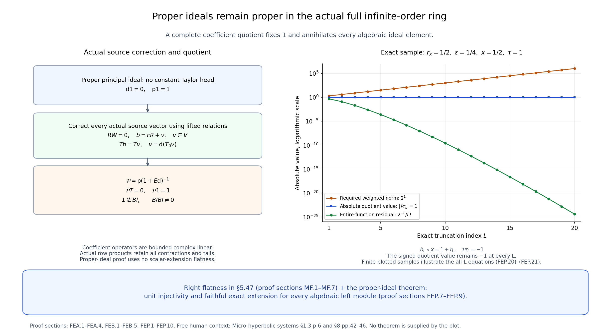
Figure FEP.1. The left panel shows the exact analytic source correction, target quotient and unit test in equations (FEP.6)–(FEP.15), with actual row products and complex-linear coefficient operators distinguished. The right panel displays exact samples \(L=1,\ldots,20\), \(r_x=1/2,\varepsilon=1/4,x=1/2,\tau=1\): required weighted residual \(2^L\), entire-function residual \(2^{-L}/L!\), and \(\mathcal Pr_L=-1\). Their general identities, not these finite samples, are equations (FEP.20)–(FEP.21). The illustration records the complete joint-domain obstruction and does not claim convergence in the actual ring from ordinary entire-function values. Reproducible coordinates, sources and data are retained; free human geometric context is Micro-hyperbolic systems §1.3/§8, with the local proof sections FEP.1–FEP.10 and FEA/FEB above.
Editable SVG, exact data, and reproducible source.

6. What monodromy misses in the irregular world
Consider $\partial_t e=t^{-2}e$. A horizontal coefficient is $e^{1/t}$; its ordinary monodromy is trivial. The trivial connection also has trivial monodromy, but (1.5) proves these meromorphic connections are not isomorphic. For $t=r e^{i\theta}$, \[ |e^{1/t}|=\exp(\cos\theta/r). \tag{6.1} \] It decays in one half-plane and grows faster than every power in the other. The rays $\theta=\pm\pi/2$ separate those growth regimes. This rank-one example has no nontrivial Stokes gluing matrix: it displays the exponential rate that ordinary monodromy forgets.
For higher rank, formal exponential decompositions can be realized by different analytic gauges on different sectors. Their transition maps carry additional Stokes data. The irregular Riemann–Hilbert problem reconstructs the meromorphic connection from enhanced topological data that retain those asymptotic distinctions. This paragraph is a description of the problem, not a proof of a classification theorem.
Deligne, in letters to Malgrange of the late 1970s, organized boundary directions by the relative exponential growth rates and proposed the associated filtered local system. Sabbah's Introduction to Stokes structures, Lectures 1–2, develops these Stokes-filtered local systems in dimension one.
Scholze's Wild Betti sheaves, §1, describes a universal enlargement of ordinary Betti sheaves with an exponential object and a Fourier equivalence. It recovers a construction of Tamarkin, also expressed through enhanced sheaves, and relates it to the irregular Riemann–Hilbert correspondence. The enlargement changes the coefficient category so that exponential information survives. We cite this construction as a modern framework; we do not identify ordinary finite-rank local systems with arbitrary irregular connections, or claim that this note alone proves the whole irregular correspondence.
7. Exercises with complete solutions
Exercise 13.1 (easy). Decide regularity at zero and infinity for $x\partial_x-\lambda$, $x^2\partial_x-1$, and $x^3\partial_x-x$.
Solution. On the punctured line their coefficients are respectively $\lambda/x$, $x^{-2}$ and $x^{-2}$. At zero the first has at most a simple pole, and the other two have double poles. They are respectively regular, irregular, irregular. Under (4.2) the coefficients are $-\lambda/y$, $-1$, $-1$, so all three are regular at infinity, with the last two nonsingular there. The last two define the same punctured connection; the statement does not identify their coherent extensions at zero.
Exercise 13.2 (easy). Show that $\mathcal O.e^x$ is irregular at infinity.
Solution. The formal symbol has $\partial_xe=e$. In the coordinate $y=x^{-1}$, $\partial_ye=-y^{-2}e$. Any rank-one lattice is $y^m\mathbb C[[y]]e$, with logarithmic coefficient $m-y^{-1}$. None is stable, so Theorem 1.1 proves irregularity. Analytically the horizontal coefficient $e^{-1/y}$ has exponential growth on sectors about the negative real $y$ axis, so Theorem 3.1 gives the same conclusion.
Exercise 13.3 (medium). Prove the second-order Fuchs criterion.
Solution. If $ta_1$ and $t^2a_2$ are holomorphic, (3.8) makes $\mathbb C\{t\}v+\mathbb C\{t\}\Theta v$ a stable lattice in the cyclic rank-two module. Conversely regularity makes the dual scalar solutions moderate. Their nonzero Wronskian $W$ is moderate and has scalar monodromy, so $W=t^\rho h$ with $h$ meromorphic. Its logarithmic derivative has at most a simple pole. Abel's identity $W'=-a_1W$ proves the first bound. A monodromy eigen-solution $w=t^\sigma g$, $g$ meromorphic and nonzero, has $w'/w$ of pole order at most one and $w''/w$ of order at most two. Dividing $Pw=0$ by $w$ gives (3.7), proving the second bound. Shrink the disc so the meromorphic unit factors have no zeros. For formal coefficients, use the continuation eigen-solutions and Laurent valuations constructed after (3.8); the same identities prove both bounds.
Exercise 13.4 (medium). Exhibit the isomorphism $E_\lambda\simeq E_{\lambda+1}$.
Solution. Define $e_\lambda\mapsto x^{-1}e_{\lambda+1}$. Indeed \[ \partial_x(x^{-1}e_{\lambda+1}) =-x^{-2}e_{\lambda+1}+(\lambda+1)x^{-2}e_{\lambda+1} =\lambda x^{-2}e_{\lambda+1}. \] Its inverse sends $e_{\lambda+1}$ to $x e_\lambda$. Both coefficients are units on $\mathbb G_m$. They need not be units on $\mathbb A^1$, so the formula alone does not identify extensions across zero.
Exercise 13.5 (hard). Classify regular singular connections on the punctured formal disc by pairs $(V,T)$ with $T\in\operatorname{GL}(V)$, up to conjugacy. Specify the field.
Solution. Work over $\mathbb C((t))$. A stable lattice exists by Theorem 1.1. Shift residue generalized eigenspaces by powers of $t$ until their eigenvalues lie in $\Sigma$; Lemma 2.1 proves stability and termination. Solve recurrence (2.2), whose operators are invertible, to remove all positive powers of $t$ from the matrix. Assign to the resulting constant model $(V,A)$ the automorphism $e^{-2\pi iA}$.
For any prescribed invertible $T$, its generalized eigenblocks and the finite nilpotent logarithm (2.6) construct a normalized $A$. Formula (2.5) proves that all morphisms between normalized constant models are constant intertwiners. Polynomial logarithms on the $T$-blocks prove that these are exactly the $T$-intertwiners. The constructions are therefore inverse equivalences, not merely a list of objects. Changing a basis conjugates $T$, and a conjugacy gives an isomorphism of connections. A formal connection over a general characteristic-zero field does not acquire a complex topological monodromy without additional choices or field extension; the stated classification uses the complex field.
What this lesson does not prove
Theorem 5.27 constructs an actual coherent reflexive strict coefficient lattice for a finite meromorphic connection on a reduced analytic divisor, under the analytic transverse-disc hypotheses on every local divisor component. It proves normalization at all smooth points, strict membership, saturation and logarithmic stability at all singular points, and the support statement for coherent submodules and actual classes. Arbitrary subquotients are excluded by the explicit counterexample. The full characteristic cutoff, initial global analytic generator, half-order correspondence and arbitrary analytic proper-image theorem remain obligations in §5.27.12.
The theorems and propositions in §§5.19–5.26 prove the actual factorial-growth symbol construction, bounded division and units, finite stalk Noetherianity, exact faithful finite-module completion at the dummy zero section, fixed neighbourhood coherent kernels, the general bounded Rees ambient comparison, and actual descent for a supplied coherent generating lattice satisfying \(tL\subset hL\). Their full local proofs supersede the earlier future-completion scope of this construction. The canonical strict cutoff across singular characteristic strata, the initial global analytic generator, any half-order theorem, and full analytic arbitrary proper/support-proper regularity remain separate obligations.
Theorem 3.3 proves Fuchs's criterion in every order for formal and convergent coefficients. Theorems 5.0 and 5.1 prove canonical logarithmic extensions, the full global algebraic connection/local-system correspondence, the algebraic curve and divisorial tests, and compactification independence. The proper compactification and GAGA inputs have exact earlier programme proofs; the coherent-extension, transverse-family, meromorphic-comparison and logarithmic-jet steps are proved here.
Theorem 5.2 proves the connection/regular-holonomic identification, including presentations on a dense open and the Serre closure of curve-regular connections. Theorem 5.3 proves analytic regularity of every normalized SNC meromorphic bundle with its exact good filtration and characteristic cycle. Theorem 5.4 proves the natural logarithmic and meromorphic de Rham comparisons by convergent Laurent homotopies, fine resolutions and exact cubical periods. Theorem 5.5 proves the full global algebraic de Rham comparison for every curve-regular algebraic connection, including nonproper and non-quasi-projective varieties, by the finite pole-layer and complex-linear GAGA arguments. Theorem 5.6 proves full generic Gauss–Manin regularity on every smooth algebraic base, with arbitrary curve base change, all coefficients and all fibre multiplicities in the curve lattice. Theorem 5.7 proves duality preservation for every regular holonomic module and bounded complex, with every support allowed. Theorem 5.8 proves relative analytic twist generation in every projective dimension for arbitrary coherent sheaves near a projective fibre; Lemma 5.8.2 also proves coherent higher images for projective-line projections. Theorem 5.9 and Lemma 5.9.1 prove locally projective coherent analytic images, with the initial coherent-generator hypothesis explicit for operator modules. Theorem 5.10 proves coherence, boundedness and analytic transported support of the cotangent candidate. Theorems 5.11–5.12 prove the singular-inclusive isotropic dimension bound and the actual output-filtration comparison, hence analytic projective holonomicity with the initial coherent-generator or global good-filtration hypothesis. Constructing that initial generator for every analytic regular holonomic module remains required. Theorem 5.13 proves the algebraic regular-holonomic SNC extension on every proper SNC pair and every open restriction, all boundary simple factors, and all algebraic curve pullbacks of these meromorphic modules. Theorems 5.14–5.17 prove full algebraic four-map regularity and the bounded-complex criterion using all smooth curve maps or only smooth locally closed curve immersions, including every singular support and every smooth separated finite-type ambient variety. Full analytic proper direct-image regularity remains required. Theorem 5.18 proves external-product and both tensor/dual tensor operations using the now-proved four-map and curve criterion. Full analytic proper regularity and the initial global analytic generator remain distinct obligations.
The Stokes description, the irregular Riemann–Hilbert problem and the wild Betti construction are cited perspectives. We prove no formal exponential decomposition, sectorial summation or irregular correspondence theorem. The earlier analytic flat-frame and Cauchy proofs are linked above. The product-growth estimate, removable-pole arguments and category gluing used here have explicit proofs in the lesson.
References
- Schapira, An Introduction to Sheaves on Grothendieck Topologies, freely accessible author notes, Sections 4.2–4.4 and 5.1; the support and dimension reading for Theorem 5.9.
- Norguet, Images de faisceaux analytiques cohérents, freely accessible Séminaire Lelong exposition, Section II.1–II.2, printed pp. 11-10–11-14; the projective-line reading for Theorem 5.8.
- Bernstein, Algebraic theory of D-modules, lecture notes, the lecture “Holonomic D-modules with regular singularities”: the definition of regular holonomic modules and Main Theorem B, stability under the four functors and duality and the curve criterion.
- Kashiwara, The Riemann–Hilbert problem for holonomic systems, Publications of the RIMS 20 (1984), 319–365, §8: regularity of proper direct images of analytic regular holonomic modules.
- Deligne, Équations différentielles à points singuliers réguliers, freely accessible IAS-hosted full text, 1970, Chapter II: regularity in dimension one and in higher dimension, the curve and compactification criteria, and the global connection correspondence.
- Schnell, Algebraic D-modules, Lectures 20–21: Fuchs's theorem and regular first-order systems, and the regularity-at-infinity examples and definitions.
- Frenkel, Lectures on the Langlands program and conformal field theory, §3.5, for the Euler D-module and its scalar solutions.
- Sabbah, Introduction to Stokes structures, Lectures 1–2: Stokes-filtered local systems in dimension one, following Deligne and Malgrange.
- Scholze, Wild Betti sheaves, arXiv:2505.24599, §1, for the exponential and Fourier enlargement and its enhanced-sheaf context.